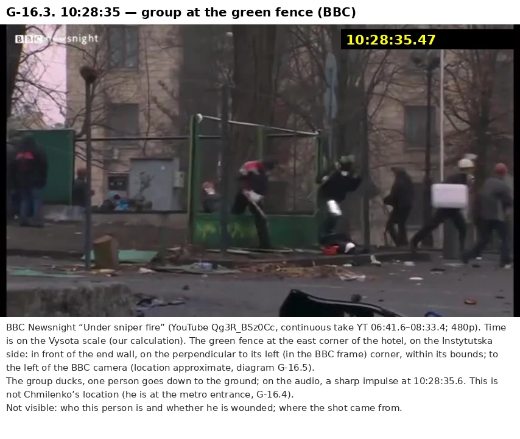

Who killed people on Kyiv’s Maidan on February 20, 2014: a dossier on each of the 48 deaths — Claude’s analysis
The Sviatoshynskyi court’s verdict of October 18, 2023 and Ivan Katchanovski’s book give opposite answers. Here they are checked against each other and against other data—registry decisions, hearing transcripts, the State Bureau of Investigation (SBI) and Omega cases, the SITU reconstruction—for each of the 48 episodes.
Prepared with Claude, an AI model made by Anthropic. Anthropic is not affiliated with this project and has not reviewed or endorsed it.
Defendants, suspects and rank-and-file members of the security forces are referred to by role only, whether or not convicted; former senior officials by their office. Living witnesses and wounded protesters are not named. Nothing on this site is a finding of guilt about any person; only a court can make one. The BBC, CNN, Reuters, VRT, SITU Research and others are cited as sources only; none of them has reviewed or endorsed this site. Quotations from Ivan Katchanovski, The Maidan Massacre in Ukraine (Palgrave Macmillan, 2024), are used under its CC BY 4.0 licence.
The numbers at a glance
Two answers to the question of who shot the 48 dead: how many deaths are expected for each side, and which version is the most plausible for each person. Both are Claude’s estimates.
Expected number of deaths out of 48 under the uncertainty model (Claude’s estimate). M1 — accidental, M2 — mistaken identity, M3 — deliberately at a protester.
Why ≈9 and not 4
4 is the number of people for whom the Maidan side reaches 56% or more: Zherebnyi, Ushnevych, Kostenko, Kotsiuba. ≈9 answers a different question: it is the sum of probabilities across all 48 episodes. The six episodes where the Maidan side has 50% or more contribute 3.9 deaths; in two of them—Pekhenko and Bratushka, at 51% each—no side reaches 56%, so they are “too close to call.” About 5 more deaths come from episodes where the Maidan side has less than half: 1.3 + 0.9 + 3.1. The 1.3 includes the two other “too close to call” cases, Vaida and Baliuk (Maidan side at 48 and 47%), and the 3.1 comes from 34 episodes where the Maidan side has less than 15%. Both numbers are Claude’s estimates, and they do not contradict each other (Table 2.2 in Part 2).
Table 2.2, Claude’s estimate
- almost certainly (85% or more) — 36 = 32 + 4
- probably (65–84%) — 4 = 2 + 2
- more likely (56–64%) — 0
- Bohdan Vaida — security forces 52 / Maidan 48
- Oleksandr Baliuk — 53 / 47
- Ihor Pekhenko — 49 / 51
- Oleksii Bratushka — 49 / 51
- almost certainly — Volodymyr Zherebnyi (85%), M3
- probably — Oleh Ushnevych (72%), M3; Ihor Kostenko (70%), M1
- more likely — Vitalii Kotsiuba (61%), M1
Threshold: if no side reaches 56%, the case is “too close to call”; this is a category in its own right, and the percentages are not shifted to fit it. Within the security forces, an episode goes to whichever component has more points (there are no exact ties anywhere); within the Maidan side, to the grade with the largest share. For Zherebnyi and Ushnevych, M3 leads M2 only narrowly (46 vs. 34 and 35 vs. 31 points), so M2 never comes out on top in the case-by-case count. Leading version per episode (without the threshold): special company—34, other security forces—8, Maidan side—6, no ties.
Limits of this estimate
- The study’s author and the AI have not seen the bullets, cartridge cases, weapons or bodies; they do not have the original videos in full quality. →
- Every agent that did the work and every reviewer was the same model, Claude; the blind checks were not always fully blind. →
- The “deliberately at a protester” share (M3) may be underestimated: in the blind estimates M3 made up about 51% of the Maidan share, versus 39% in Claude’s estimate. →
- The bounding cases of 8.2 (all court findings and expert examinations correct) and 21.2 (the court’s entire evidentiary base wrong at once) are extremes, not scenarios: they are sums of Claude’s per-episode shares and apply only within the model. →
- The verdict has not entered into force: the appeal has not concluded, and there was no decision as of October 6, 2026. If the Court of Appeal assesses the evidence differently, the baseline shares of the episodes will have to be recalculated. →
1Part 1In brief: what has been established
The canonical text of the conclusions: the frame of the dispute, the main conclusions and the 12 disputed episodes. If you read only one part, read this one; the other parts show what it rests on and let you check it.
Where the dispute comes from, what follows from the numbers above, how solid it is, how it differs from the court and from Katchanovski, and what remains disputed.
1.1The frame: the verdict versus the book
On October 18, 2023, the Sviatoshynskyi District Court of Kyiv, sitting as a jury court, delivered its verdict in the main case on the Instytutska shootings of February 20, 2014 (Case No. 759/3498/15-к). There were five defendants, all former officers of the Kyiv Berkut. The court sentenced one to life imprisonment and two to 15 years for killings committed while carrying out a manifestly criminal order, sentenced one to 5 years solely for exceeding authority, and fully acquitted one. The charges of terrorism and of obstructing peaceful assemblies were dropped for all five 2023 verdict, operative part.
The court established the involvement of the convicted men in 35 of the 48 deaths: all three in 31, and only one of them in four more; it treated the death of one more person as a wounding, finding no causal link to the defendants’ actions 2023 verdict, para. 1. In two episodes the court explicitly pointed to the Hotel Ukraina sector.
The men convicted of killings were not in the courtroom: in December 2019 all the defendants were handed over to territory not controlled by Ukraine in an exchange of detained persons 2023 verdict, para. 13.1; two returned to the trial from March 2020 2023 verdict, para. 13.1, while the three convicted of killings were in Russia, according to LB.ua on the day of the verdict. This is a first-instance verdict, and it has been appealed. The appeal is being heard by the Kyiv Court of Appeal; it scheduled hearings for July 10, 2026 and September 25, 2026, and there is no decision as of the data cut-off date.
Ivan Katchanovski, a political scientist at the University of Ottawa, responded to the verdict with a book, The Maidan Massacre in Ukraine: The Mass Killing that Changed the World (Palgrave Macmillan, 2024, open access). He reads the same verdict as confirming his version: as he concludes, the shootings were a false-flag operation involving a group of Maidan shooters linked to the far right and leaders of Svoboda and Batkivshchyna (Fatherland) Katchanovski, ch. 3, p. 91; according to him, Berkut shots in the synchronized videos do not match the killing of at least 39 of 49 protesters in time and direction Katchanovski, ch. 3, p. 64. Ukrainian and most Western media, he writes, presented the verdict as proof that Berkut killed everyone and passed over its parts about shooters in Hotel Ukraina Katchanovski, ch. 2, p. 30.
This document does not choose between the court and the book in advance: both read the same events differently, so the deciding factor is other data—data that belongs to neither side of the dispute. That means about eighty decisions from the Unified State Register of Court Decisions (including verdicts of the Holosiivskyi court of 2023–2026 and decisions in the case of the Omega officer), recordings of the hearings of the trial itself, video synchronization and the three-dimensional reconstruction by SITU described in a 2018 scholarly article. Each conclusion is tied to verdict paragraphs and book pages (references such as “2023 verdict, para. 5.4.20” and “Katchanovski, ch. 3, p. 64”), and where Katchanovski is right, this is stated plainly (Part 9).
Outcome of the case: operative part of the 2023 verdict; whereabouts of the convicted men: LB.ua, Oct. 18, 2023; status: ruling of the Criminal Cassation Court of the Supreme Court of Aug. 28, 2025 (Case No. 754/1519/22) and the Kyiv Court of Appeal’s announcement of the hearing on Sept. 25, 2026 (court website).
1.2Main conclusions
The dossier’s answers to the main questions, one paragraph each. Details and references to the lines of the verdict are in the parts indicated. Shares, probabilities and averages are Claude’s estimates, not established facts; data on the dead and on security-force casualties come from the verdict.
In brief.
Most of the 48 dead, in Claude’s estimate, were killed by fire from the security forces, mainly the Berkut special company. Fire from the Maidan side probably also took protesters’ lives: about 8 deaths by the model’s median, about 9 on average, within a range of roughly 5 to 16 depending on how reliable the court’s evidentiary base is. Taking each person separately, Claude assigns 40 deaths to the security forces (34 to the special company) and 4 to the Maidan side, while in four cases no side reaches even 56%. Who exactly fired from the Maidan side, and whether the order to fire at people came from above the regiment and company level, has not been established.
Security forces.
The security forces account for about 39 deaths on average: about 28 for the Berkut special company and about 11 for other security forces. Person by person, Claude assigns 40 people to the security forces, 36 of them “almost certainly.” The evidence: bullets from special company rifles (in 12 of the 48 deaths), videos in which the special company fires live rounds at people in the same places and at the same time, and the time-aligned recordings of Vysota (“The Height”) and the National Bank (NBU) cameras (Parts 4–6).
Maidan side.
Maidan-side positions account for about 9 deaths on average; in 90% of the model’s runs, between 5 and 16. About 5.4 of these are backed by a direct indicator; the rest consists of small shares across many episodes, including a residual for possible errors in expert examinations. Person by person: Volodymyr Zherebnyi—“almost certainly” (85%, right at the threshold), Oleh Ushnevych and Ihor Kostenko—“probably,” Vitalii Kotsiuba—“more likely”; four more are “too close to call.”
The court explicitly pointed to the Hotel Ukraina sector in two fatal episodes, Volodymyr Zherebnyi and Oleh Ushnevych (for Ushnevych, the hotel or the area in front of it), but these findings rest on different grounds. For Zherebnyi, his posture at the moment he was hit was established from two videos, and with that posture an entry wound on the left rules out all security-force positions: they were to his right and front-right. There is no bullet and no caliber, and the size of the entry wound leaves a small probability that entry and exit were mixed up—in which case the shooter would have been at the barricade. This is the most solid of the episodes in which the shot came from the Maidan side; Claude puts it at 85%, right at the threshold of “almost certainly.”
For Ushnevych, the finding rests on a posture described by a single eyewitness, and the case file contains two different bullets. The court accepted a bullet with 4 grooves (“probably a Makarov”), which does not match the Omega officer’s Fort-14TP; the other, six-groove bullet, which the court rejected, is categorically linked to the Fort by expert examinations of 2019–2020 (ordered by the Prosecutor General’s Office (PGO) and used by the SBI as the basis for the notice of suspicion). A bullet from the same Fort (according to the same examinations) hit the shield of a protester behind the same parapet, and one of the men next to him at the parapet was wounded from the security-force area in the same seconds. But both fatal shots came from a pistol, the second eyewitness points toward the October Palace (Zhovtnevyi Palace), “not from the top of Instytutska,” and another man next to him was wounded in the back from the direction of the hotel in the same minute. Here Claude gives the Maidan side 72% and the security forces 28% combined—noticeably less solid than for Zherebnyi.
In one more episode (Ihor Pekhenko) the court allows for the hotel. In eight episodes the court has no direct data on the shooter (in two of them, Voitovych and Opanasiuk, it nevertheless attributed the death to the security forces, relying on neighboring episodes).
The court also acknowledged that in the morning there were people in the hotel with weapons that were fired, while stipulating that this does not refute fire by the special company and other security forces at activists. The court also found fire from the Maidan side at the security forces proven: from about 05:30, three security officers were killed and 39 wounded, and at about 09:16 another special company officer was killed near the October Palace. The court describes the Maidan-side shooters only as groups and roles; it did not identify a single one by name (Part 7).
Intentional or not.
The shooter’s intent has not been established in any episode. In Claude’s estimate, of the roughly nine deaths from the Maidan side, about 3.5 were accidental hits (a miss, a ricochet, crossfire), about 1.9 were mistaken identity, and about 3.6 were a shot aimed deliberately at a protester. In no episode does the last grade reach 56% (for Zherebnyi it is 46%). The probability that there was at least one such killing ranges from ≈46% to ≈91%; the uncertainty model gives ≈97%, but for this question it comes close to a count that treats episodes as independent and therefore overstates it (Part 7).
Who fired, if it was deliberate.
The most likely picture is a small independent group or individuals (≈60% of the deliberate share). A planned provocation with the knowledge of part of the Maidan leadership or field commanders: ≈20%; a provocation from within the security forces: ≈10%; Russian involvement: ≈3%. None of the versions rests on an identified shooter (Part 7).
The order.
The court found it proven that on February 18 the Minister of Internal Affairs, the head of the SBU (Security Service of Ukraine) and other officials decided to use the powers of the security forces, including the use of weapons, and that on the same day the special company received weapons on the instructions of the regiment commander. As for who ordered shooting on February 20, the court established this at the regiment and company level: at about 09:05 the deputy regiment commander ordered indiscriminate fire to get the security forces out of the palace, and from about 09:17 he, together with the special company commander, ordered them to shoot to kill in order to stop people. The court did not establish that the order to open fire came from above. The in absentia verdicts against the regiment and special company commanders were handed down without the parties contesting the case and carry less evidentiary weight (Part 8).
Katchanovski’s book.
He is right that there was fire from the Maidan side and that the court itself pointed to the hotel; in six episodes the Maidan side, in Claude’s estimate, is no less likely than the security forces. His criticisms of the investigation are also valid: there is almost no directional ballistics, some physical evidence was lost or excluded, and the rifles were sawn apart. But his thesis is much broader: that most or nearly all of the dead were killed by organized Maidan shooters in a false-flag operation carried out by part of the Maidan leadership. In Claude’s estimate, such a thesis has a probability of less than about 3%: even if the court’s entire evidentiary base is wrong, the Maidan side accounts for about 21 of the 48 deaths (Parts 7 and 9).
His main argument—that the synchronized videos show no Berkut shot at the moment of a specific death (for 39 of 49; for 10 there is no video) Katchanovski, ch. 3, p. 64—is an argument from absence. Synchronization does exist, however: the court relied on the recordings of Vysota and the National Bank cameras aligned to astronomical time and used them, for example, to establish that in the second when Melnychuk was shot (16:50:16 by Vysota) a special company officer behind the concrete barricade fires an AKMS—this is visible on the National Bank camera 2023 verdict, para. 5.4.125.
Katchanovski himself acknowledges this de facto: in the same paragraph he writes that in several cases the time of death coincides with Berkut shots, explains this by the different sound of the shots and by the officers not aiming at these people, and allows for accidental ricochet hits Katchanovski, ch. 3, p. 64; the death of Solchanyk at 09:08, by his own account, coincides with a Berkut officer’s shot into the ground a few meters in front of him Katchanovski, ch. 3, p. 56.
The argument from absence therefore outweighs neither what the court saw in the recordings nor the direct ballistics (in 12 deaths, a bullet from a special company rifle). The first protester killed, Heorhii Arutiunian (8:59:34), was linked by the court, on the basis of video, to Berkut officers in blue camouflage who fired hunting buckshot. Khrapachenko (11:28) was linked by the court to security-force positions, not to the hotel; so was Melnychuk (16:50), although the court at the same time acknowledged that an aimed shot was possible from the hotel but not from the barricade.
How solid this is.
The verdict has not entered into force: the appeal has not concluded, and there was no decision as of October 6, 2026. Most deaths were attributed to the defendants through group findings, without a bullet tied to a specific body, and the chain of custody of a number of bullets is questionable; therefore even for episodes with direct ballistics Claude puts the special company no higher than 92%. The spread of the results is driven mainly by two common risks: that the entire ballistic base is wrong at once, and that all the court’s group findings are wrong at once. You can enter your own values for these risks in the calculator in Section 6.1, “Probabilistic result.”
Compiled from the summaries of Parts 1, 3, 4, 6, 7 and 9; the numbers are Claude’s per-episode estimates and the model in Part 6. The conclusions are Claude’s episode-by-episode analysis, which has gone through blind and repeat checks (see Appendix D, “Why AI is used here and its limits”). References to the verdict for each episode are in the cards (Part 5); how the numbers were derived is explained in Part 2 and Part 6.
1.3What remains disputed
In 36 episodes the security forces reach 85% or more. In the remaining twelve the finding is less solid or sits at the threshold (for Zherebnyi, exactly 85% for the Maidan side):
Table 1.1
| Deceased | Time | Security forces / Maidan, % | Why disputed |
|---|---|---|---|
| Bohdan Vaida | 09:00:37 | 52 / 48 | A buckshot ricochet off the water cannon (in which case almost certainly an accidental hit on one of their own, M1) or a shot by retreating security forces: pump-action shotguns had been fired nearby a minute earlier. |
| Oleksandr Baliuk | before 09:02 | 53 / 47 | The moment was not filmed, the court excluded the expert examinations, and the shooter was not identified. Among the security forces, the group firing in this window was the Berkut group with green markings, not the special company. |
| Oleksii Bratushka | morning | 49 / 51 | The court established neither the place nor the time (≈09:10 according to his family): all that is known is that in the morning he received a perforating wound to the neck while his left rear side was turned toward the shooter. |
| Vitalii Kotsiuba | 09:10:11 | 39 / 61 | A wound to the forehead with the head turned across the street toward the Conservatory; special company positions were well to the left; a ricochet off a post is not ruled out. |
| Ihor Pekhenko | 09:16:50–09:18 | 49 / 51 | The court allows for a shot from the hotel, but the time and posture come from a single witness, and the special company was firing nearby within the same minute. |
| Andrii Movchan | 09:21:30–09:30:03 | 65 / 35 | No location, no posture, no bullet; the estimate rests on a window of heavy fire from the snow barricade, where the special company was positioned at the time. |
| Nazarii Voitovych | 09:23:00–09:26:45 | 79 / 21 | The court attributed the death to the special company and those acting with it on the basis of neighboring episodes and a group finding; there is no data on the episode itself. The split between the special company and other security forces is almost even. |
| Ivan Blok | 09:24:20–09:29:36 | 82 / 18 | The court ruled out the special company on ballistic grounds and attributed the shot to the upper part of the street, under the exclusive control of security forces; a ricochet has not been disproven. |
| Ihor Kostenko | 09:29:29–38 | 30 / 70 | The posture established by the court from video points, by Claude’s calculation, to the lower part of the street, which protesters controlled at the time; but the posture is from seconds before the wounding, and the expert findings on direction diverge. |
| Oleh Ushnevych | 09:43:14–17 | 28 / 72 | Two different bullets, posture from a single eyewitness, and the proceedings concerning the Omega officer’s Fort-14TP have not been completed. |
| Volodymyr Zherebnyi | 09:44:44 | 15 / 85 | The most solid Maidan-side episode, but at the threshold: there is no bullet, and the size of the entry wound leaves a small probability that entry and exit were mixed up. |
| Volodymyr Melnychuk | 16:50:16 | 81 / 19 | The only audible shot, according to the Vysota synchronization, coincides to the second with a shot by a special company officer, but the court acknowledged that an aimed shot from the barricade was impossible, while one from the hotel was possible. |
What the analysis does not claim. All percentages are Claude’s estimates, not established facts (Part 2, “What is subjective here”). The “too close to call” category is not a tie and not a conclusion that the sides are equally to blame. It means that the material is insufficient for either side to reach 56%. What would settle such episodes is set out in Part 10. If in no episode does the “deliberately at a protester” share reach 56% (Part 7), that does not mean such shots did not happen: it means the available material does not show them.
Beyond individual episodes, general questions remain open:
- who gave the special company the order to use weapons, and at what level (Part 8);
- when the special company received its SVD (Dragunov sniper rifle): according to the prosecution, on February 18 2023 verdict, para. 2, while one of the defendants, a special company officer, testified that he received his SVD only on the afternoon of February 21 2023 verdict, para. 5.1; the court did not resolve this question;
- who exactly in the Berkut group in blue camouflage with green markings fired buckshot from behind the parapet at 08:59, and on whose order; the court itself, on the basis of video and photos, considered the group to be the Crimean Berkut, not the Kyiv regiment 2023 verdict, para. 5.3.2;
- how reliable the court’s group findings and the chain of custody of the bullets are—the spread of all the numbers depends on this (Part 4);
- how many shooters there were on the Maidan side, where they stood and whom they fired at after 09:20 (Part 7).
What data could settle each of these questions (ballistics of bullets from the bodies against activists’ weapons, questioning of people who were in the hotel and the Conservatory, materials on the deaths of security officers) is set out in Part 10; details on each episode are in Part 5.
Shares are Claude’s per-episode estimates (model in Part 6); descriptions follow the episode cards (Part 5) and Claude’s log of decisions on the estimates.
2Part 2How the analysis works
The three levels of court findings and how they and the parties’ arguments yield per-episode percentages, per-side totals and their spread. Needed to check any percentage in the cards yourself; the full rules of analysis are in Appendix A.
Method, rules, glossary and references—everything you need to check any conclusion yourself.
2.1How the numbers were derived
The result is built in four steps. Each involves Claude’s judgment rather than measurement, so all the assumptions are stated explicitly; in Part 6 you can replace them with your own and immediately see how the result changes.
What the court decided.
The jury court answered the question of the guilt of five specific defendants, not the general question of who fired. That is why the verdict contains three levels of wording, and they must not be conflated:
- “Доведено поза розумним сумнівом” (Proven beyond reasonable doubt)—the involvement of a specific special company officer (a bullet from his assigned rifle and/or a visible shot at the moment of wounding) 2023 verdict, para. 5.4.99. This is the strongest level: it was tested by both parties to the trial.
- “Безспірно встановлено” (Established beyond dispute)—a shot from territory under the exclusive control of security forces, without a specific shooter 2023 verdict, para. 5.4.105. These findings do not concern the defendants’ guilt (their involvement in these episodes has not been proven), and the parties contested them less; in Claude’s estimate, in some episodes the word “безспірно” (beyond dispute) is stronger than its justification.
- Not established / “не виключається” (cannot be ruled out)—the source has not been established; the involvement of security forces has not been proven, and that of other persons has not been ruled out 2023 verdict, para. 5.7.
The hotel as the source of a shot is a separate category. For Zherebnyi and Ushnevych it is a finding of the court 2023 verdict, paras. 5.4.74, 5.4.83, and likewise for a protester wounded nearby 2023 verdict, para. 5.4.75; for Pekhenko it is only “не виключається” (cannot be ruled out) 2023 verdict, para. 5.4.27. Where the court established something, where it merely did not rule it out, and where it acquitted on grounds of doubt is always stated separately in the dossier; episode cards are marked with the level of the court’s wording.
1. Three probabilities for each episode.
For each death, 100% is distributed among three versions: the Berkut special company, other security forces, and shooters on the Maidan side. First, a baseline weight is set according to what the court established:
Table 2.1
| What the court established | Baseline: special company / other security forces / Maidan | Episodes | Probability that the court’s finding on the episode is wrong |
|---|---|---|---|
| A bullet from the body or clothing was fired, according to expert examination, from a rifle assigned to a special company officer | 88–92 / 3–6 / 5–7 | 12 | 4.5–18% per episode |
| The court established special company fire from video and direction or from the combination of neighboring episodes, without a bullet | 77 / 7 / 16 | 10 | ≈8% |
| The court established only “territory under the control of security forces” | 59 / 28 / 13 | 12 | ≈8% |
| The court attributed the death to the security forces but not to the special company (caliber, direction, video) | 10 / 65 / 25 | 3 | — |
| The court established a shot from the Hotel Ukraina sector | 10 / 8 / 82 | 2 | — |
| Shooter not established, including where the court merely did not rule out the hotel; Claude also places Voitovych and Opanasiuk here, where the court’s finding rests only on the group framing of “28 episodes” (control run: 30 / 30 / 40) | 25 / 25 / 50 | 9 | — |
The baseline already includes the risk that the court’s finding is wrong. For ballistics, this is the probability of a false match of a bullet to a rifle—from 4.5 to 18% per episode; for findings based on video, group and territory, about 8% for the whole evidentiary base. If a finding is wrong, the episode is assessed as if that finding did not exist. Hence the residual of 5–7% for the Maidan side even with direct ballistics, and 13–16% with findings based on video and territory.
Then the weight shifts according to the details of the specific episode. Each shift is recorded in the episode card (“Why these percentages”): how many percentage points, from where to where and on what fact, so the arithmetic can be checked. The strength of a shift is an odds ratio: with a different baseline, the same fact changes the share in the same proportion, not by the same number of points. The main kinds of shifts:
- Time. According to the court, the special company came out and opened fire with rifles at about 9:05 (from 9:03:05, shots with non-lethal means from Fort-500s). Deaths before then almost rule out the special company.
- Caliber and ammunition. Bullets not of 7.62×39 caliber (hunting .308; a fragment that according to the experts “approximately” corresponds to .30-06—the court did not consider the caliber established; sniper 7.62×54R) move weight away from the special company and distribute it between other security forces and the Maidan side.
- Ricochet. If the court allows for a ricochet, the direction of the wound says little about the shooter, and the uncertainty remains greater.
- Witnesses and counterarguments. Testimony of those standing nearby, Katchanovski’s arguments (steep wound angles, moments when Berkut is not firing on video), investigative experiments.
Example: Vitalii Kotsiuba, 9:10.
The court did not identify the shooter—baseline 25/25/50. The time falls within the window of special company fire near the palace; nearby, in the same minutes, Ilkiv was killed by a special company rifle, and another protester was wounded from territory held by the special company and other security forces: +20 to the special company, −10 to other security forces, −10 to the Maidan side (45/15/40).
Wound track from front to back and from top to bottom, entry on the right of the forehead, with the head turned almost across the street: straight ahead is the Conservatory, further left the hotel, and the special company positions well to the left; the indicator is medium because the head is not visible at the moment itself: −22 to the special company, −3 to other security forces, +25 to the Maidan side (23/12/65). Unidentified people on the Conservatory balconies (the court dates the frame to 09:10:22, 11 s after the wounding, but in the Vysota mosaic these are photo inserts with no time of capture): −1 to the special company, −1 to other security forces, +2 to the Maidan side. A flash on the post in front of him at the moment of wounding is a possible ricochet, which weakens the direction argument, although the bullet still came from the front: +6 to the special company, +2 to other security forces, −8 to the Maidan side.
In the only video showing both the location and the special company officers, neither the prosecution nor the defense indicated who fired at the moment he fell: −2 to the special company, +2 to the Maidan side. The deputy commander of the Berkut regiment (PMOP, the special-purpose police regiment) fired a rifle next to the special company; the geometry rules out his corner of the terrace just as it rules out the special company positions, so he is counted only in the ricochet share: −1 to the special company, +1 to other security forces. Result: 25/14/61.
2. The average is the sum of probabilities.
The expected number of deaths on each side is the sum of the corresponding percentages across all 48 episodes. An episode at 90% for the Maidan side adds 0.9 deaths; an episode at 12% adds 0.12. The simple sum gives 27.9 / 10.9 / 9.1; the model with common factors (step 4) gives ≈28.0 / 11.0 / 9.0.
3. Why this is not the same as the count “by person”.
The case-by-case result (Overview; Section 6.2) answers a different question: which version is the most plausible for each person. Episodes where the Maidan side is more probable contribute less to the sum than their number, and the remainder accumulates from small shares across many episodes:
Table 2.2
| Maidan share in the episode | Episodes | Contribution to “Maidan side,” deaths |
|---|---|---|
| 50% or more (Zherebnyi 85, Ushnevych 72, Kostenko 70, Kotsiuba 61, Pekhenko 51, Bratushka 51) | 6 | 3,9 |
| 30–49% (Vaida 48, Baliuk 47, Movchan 35) | 3 | 1,3 |
| 15–29% | 5 | 0,9 |
| less than 15% | 34 | 3,1 |
That is why the two results do not contradict each other: the four people the case-by-case count assigns to the Maidan side and the roughly nine expected deaths from that side are honest answers to different questions.
4. Spread: common factors.
Doubts about different episodes are not independent. If the court’s evidentiary base itself is wrong—the reference test-firings of the rifles, the interpretation of videos or of forensic medical examinations—this affects many episodes at once. That is why the spread is calculated with common factors:
Per-episode error risk.
For the 12 episodes with ballistics, it is the probability that the match of the bullet to a special company rifle is false: from 4.5 to 18% per episode; of this, about 4% is common to all, and the rest is specific to the episode. For the 22 episodes with group, video-based or “territorial” court findings, the risk is about 8%, and it is entirely common. If a finding is wrong, the episode is assessed as if the court had not identified the shooter, but with the same episode-specific arguments. The remaining 14 episodes have no such branch: their uncertainty is already contained in the percentages themselves.Common factors.
An error in all reference samples at once (about 4%) makes all the ballistic and all the group findings wrong at once; an error in the interpretation of videos and expert examinations (about 4%) makes all 22 group findings wrong at once. Together they produce the roughly 8% for group episodes.Maidan-side fire after 09:20.
Up to 09:31 the court records an armed group on the hotel side, shots and an exchange of fire; after 09:31, a general formula about “covert fire,” a single shot after which activists shout toward the hotel (up to 09:43), and armed people in the hotel at 10:12–10:31; the court does not establish any gunshot wounds to security officers after 09:20. Fire is considered “significant” with a probability of 85% before 09:31 and 50% after; if it was “sporadic,” then in episodes in the 09:20–10:31 window where the Maidan share is background or rests only on a weak indicator, accidental hits (M1) are reduced to 30% of their value, and the removed share passes to the security forces in proportion to their shares.Linked episodes.
Episodes in one group (at Arkada, the late ones at 10:21–10:31, the footbridge and the palace terrace, and others) are simulated jointly, using a random variable common to the group (correlation 0.5). Match errors for bullets from the same rifle are partly common: each such bullet, with probability ½, takes the draw common to that rifle.
Then the computer “replays” the events 40,000 times: first the common factors, then the shooter according to each episode’s probabilities. These simulation runs yield the mean, the median and the 90% interval. Two bounding scenarios for reference: if all the court’s findings and expert examinations are correct, about 8 deaths fall to the Maidan side; if the entire evidentiary base is wrong at once, about 21. Even in the second case not all deaths fall to the Maidan side: even if the expert examinations are wrong, the videos show the special company firing live rounds at people in the same places and at the same time; the episode is then assessed as “shooter not established” with its own arguments.
What is subjective here.
All per-episode percentages are Claude’s estimates, not the result of measurement; they are given so that the reasoning can be checked and challenged. The court worked in a politically charged environment and relied on group responsibility. Katchanovski defends a version he put forward as early as 2014 Katchanovski, ch. 2, p. 43 and reads the verdict selectively (examples in Part 9). The forensic base is damaged: bodies were moved, and some bullets, helmets and shields were lost.
What holds up in the end is this: in Claude’s estimate, fire from the Maidan side accounts for about nine deaths on average, but this reaches “probably” or firmer for only three people, and no death is firmly proven—not even the two episodes in which the court pointed to the hotel. The upper tail (about 21) rests solely on the assumption that the court’s evidentiary base is wrong in its entirety.
The number of episodes by baseline, the contribution of groups, and the bounding scenarios of 8.2 and 21.2 are based on Claude’s per-episode estimates (model in Part 6). The assumptions calculator is in Part 6.
The full rules of analysis are in Appendix A.
3Part 3February 20: who stood where and what happened
The chronology from the killings before February 20 to the morning of the 20th, the deployment of units and groups, and who fired first. This is the scene on which all 48 episodes unfold: without it, the cards are hard to read.
Four chronologies and separate storylines around them: who opened fire first, who ordered the security forces to shoot to kill, why the fire died down, security-force casualties, and what became of the weapons and the proceedings.
3.1Killings before February 20
The deaths of 48 people on Instytutska Street on February 20 were the third wave of killings in a month. In January the first protesters died, three of them on Hrushevskoho Street. On February 18–19, dozens of people on both sides died in central Kyiv. This matters for understanding the morning of the 20th: by then both sides already knew that the other side was firing live ammunition. Below is a brief account of who died, who is suspected and how far each case has progressed. A detailed chronology of February 18–19 is given in the next section.
The degree of reliability is marked separately throughout. Established by the court: a court finding following adversarial proceedings. Charge / suspicion: the investigators’ version, which a court has not yet examined on the merits. According to media reports and Katchanovski writes: information not verified in court decisions. The names of people who are suspected or accused of killings but have not been convicted are not given here: these people are referred to by position or role.
January 2014: Hrushevskoho Street.
According to official data cited in the Sviatoshynskyi court’s verdict, from January 19 to 26, 316 protesters and 191 members of the security forces were injured. Four protesters died, three of them from gunshot wounds 2023 verdict, para. 1. The court describes the appearance of firearms in those days as “точковою” (isolated), but notes that it strongly affected the course of the protest 2023 verdict, para. 5.6. The court lists the dead without naming them 2023 verdict, para. 5.6. Below are the four people who died in those days, according to media reports.
Table 3.1
| Deceased | When and how | What is known about the shooter or those responsible | Status |
|---|---|---|---|
| Serhii Nihoian | Jan. 22, around 06:00, Hrushevskoho Street near Dynamo Stadium; gunshot wound | Charge / suspicion: in 2021 the SBI stated that it had “окреслили для себе коло осіб” (have outlined for ourselves a circle of persons) and had “слідчим шляхом виключили” (excluded by investigative means) the version that protesters did the shooting. In 2024 the investigators reported that the shot was fired from a Fort-500 shotgun and named the circle of suspects: officers of special units of the Ministry of Internal Affairs (MVS) (Internal Troops and Berkut) who had been issued such shotguns. Notices of suspicion were served on the organizers: the former president, the Minister of Internal Affairs, his deputies and the leadership of the Kyiv MVS Main Directorate. No notices have been served on the actual shooters (according to media reports). Katchanovski writes: in 2019 a Kyiv prosecutor cited a forensic expert—a shot from behind at 3–5 m, with wads found; according to rulings of the Pecherskyi court in 2015, the possible involvement of UNA-UNSO members was examined Katchanovski, ch. 7, p. 204. According to the 2018 prosecution data (cited by Katchanovski), repeat examinations gave a distance of 7–21 m Katchanovski, ch. 7, p. 205 | Shooter not established; no verdict |
| Mykhailo Zhyznevskyi | Jan. 22, around 09:00, same location; gunshot wound to the heart | Same investigation. Katchanovski writes that in a video published in 2019, Zhyznevskyi, at the moment he was wounded, is behind a barricade of burned-out buses that shielded him from Berkut Katchanovski, ch. 7, p. 205 | Shooter not established; no verdict |
| Roman Senyk | Wounded Jan. 22 at the same location, died Jan. 25 | Same investigation | Shooter not established; no verdict |
| Yurii Verbytskyi | Abducted from a hospital on Jan. 21 together with Ihor Lutsenko; his body, bearing signs of torture, was found on Jan. 22 in a forest outside Kyiv. There was no gunshot wound | The killing is attributed to a group of titushky (hired thugs). Several verdicts have been handed down against perpetrators in the abduction case. In at least two of them (2023 and 2026) the court did not find that the abduction caused Verbytskyi’s death. The cases of other participants are ongoing, and some of them are wanted (according to media reports) | Convicted of abduction and torture; according to the data found, there is no verdict for the death itself |
Katchanovski believes the January killings were carried out from the Maidan side as a false-flag operation Katchanovski, ch. 7, pp. 204–205. According to the latest reports, the investigation favors the opposite version and suspects the security forces. No court has examined either version, and none of the shooters has been identified.
February 18–19: overall figures.
The court cites official data. On February 18, 771 protesters and 398 members of the security forces were injured; 19 protesters died, 12 of them from gunshot wounds, as did 8 members of the security forces, all from gunshot wounds. Gunshot wounds were sustained by 120 protesters and 133 members of the security forces. During the night and morning of February 19, another 156 protesters and 105 members of the security forces were injured, and another 6 protesters died, 3 of them from gunshot wounds, as did 1 member of the security forces 2023 verdict, paras. 1, 5.6.
Violence, in the court’s wording, was used “з обох боків, в тому числі з прихованим використанням вогнепальної зброї” (by both sides, including with the covert use of firearms) 2023 verdict, para. 1. In the court’s assessment, on February 18 more gunshot wounds were sustained by the security forces, but fewer of them died thanks to their equipment. From February 19, protesters had more gunshot wounds 2023 verdict, para. 5.6. Data on protesters were collected only from requests for medical help, so they are probably incomplete 2023 verdict, para. 5.6.
Table 3.2. Who is suspected of the killings of February 18–19.
| Group of cases | Suspects or defendants | Status |
|---|---|---|
| Dispersal of the march during the day on February 18: Instytutska Street, Kriposnyi Lane, Shovkovychna Street. Buckshot fire; the case against the battalion commander of the Kharkiv Berkut covers the deaths of Volodymyr Kyshchuk, Serhii Shapoval and Ihor Serdiuk (according to media reports) | Prosecution: three Kharkiv Berkut officers fired lead buckshot from pump-action shotguns at people near building No. 24/7 from 12:00 to 14:30; 3 people died. Their cases are being investigated separately. According to the prosecution, the buckshot was brought to and issued to the Kharkiv Berkut on February 17. A Kharkiv Berkut company commander testified in court in 2016 that, according to what officers said, they were issued cartridges with lead buckshot (Texty.org.ua, Oct. 3, 2016); in 2019 the court of appeal released him from custody, and no reports of a verdict on the merits against him have been found (Mind, Dec. 4, 2020). In 2026 the SBI sent to court the case of the battalion commanders of the Kharkiv and Lviv Berkut: organizing premeditated murders, 12 dead on February 18–19, more than 130 wounded (according to media reports) | No verdict for the killings themselves; the commanders’ case is in court |
| Ivan Nakonechnyi and Anatolii Nechyporenko beaten to death on Instytutska Street around 15:47–15:49 | Not identified | As of 2021, no charges (according to media reports) |
| Serhii Didych: beaten, then run over by a truck driven by a protester | A Kharkiv Berkut officer was convicted by the Podilskyi court in July 2016: 5 years’ imprisonment, suspended with 3 years’ probation, for exceeding authority with the use of violence while carrying out a manifestly criminal order. The truck driver was released under an amnesty; the court of appeal overturned that decision, and the driver is in hiding (according to media reports) | Partly convicted |
| Volodymyr Zakharov, an employee of the Party of Regions office on Lypska Street, died when protesters stormed and set fire to the office | In 2020 the SBI served a notice of suspicion on one of the women who took part in the storming (according to media reports) | No verdict, according to the data found |
| Night assault on the Maidan and the Trade Union Building fire | Prosecution: the head of the SBU Main Directorate for Kyiv and Kyiv region is charged with responsibility for 10 dead and 124 wounded during the “ATO” (according to media reports). The direct shooters of the 12 protesters who died in the evening and around midnight have not been identified. Katchanovski, citing the PGO and a parliamentary commission, writes that about half of them were killed with buckshot or hunting bullets Katchanovski, ch. 7, p. 199. The court did not establish who set fire to the Trade Union Building: a witness from Alpha testified that the fire started from Molotov cocktails thrown from the building 2023 verdict, para. 5.5.1 | Trial since 2018; no verdict |
| Journalist Viacheslav Veremii and Vitalii Vasyltsov: night of Feb. 18–19, corner of Volodymyrska and Velyka Zhytomyrska Streets, attack by titushky | In the Veremii case, the organizer of the group of titushky was convicted (on appeal in 2018: 5 years’ imprisonment), as was one of the participants (plea agreement, 2018). Vasyltsov’s killing remains unsolved (according to media reports) | Verdicts for Veremii; none for Vasyltsov |
| Security forces: 8 dead on Feb. 18 and 1 on the night of Feb. 18–19 | Shooters not identified; more on this below | Pre-trial investigation |
| Khmelnytskyi, Feb. 19, around 12:36: at the regional SBU directorate building, three people were wounded and a woman fatally wounded by a burst of fire | The head of the regional SBU directorate and an Alpha officer (SBU Special Operations Center “A”) were charged with exceeding authority and negligent homicide. The court acquitted them, and in 2025 the court of appeal upheld the acquittal. The court noted that the investigation had been one-sided: the version that the shots came from the protesters’ side was not examined. A 2016 ballistic examination concluded that the shots were fired from inside the annex outward; an acoustic examination the same year attributed the first burst to the second-floor hall of the regional SBU directorate building and the second to the annex | Acquitted; shooter not identified |
Deaths among the security forces.
The summary data examined by the court give the time and place of death for all eight who died on February 18. Two Internal Troops servicemen died at 16:40 near the Trade Union Building, and two more between 16:00 and 17:00 near the October Palace. An officer of the Crimean Berkut died at 21:00 near the flower clock, and an officer of the Kyiv regiment (PMOP) at 21:00–22:00 near the Globus shopping mall.
Another Internal Troops serviceman died at 22:30 near the palace, and another at 23:00 on the steps by the Stela 2023 verdict, para. 5.6. Contrary to a witness’s account, the court placed the deaths of the Internal Troops servicemen not in the clashes in the government quarter but in the period of the fighting for the Maidan 2023 verdict, para. 5.5.2. In none of these cases has it been established who fired. In the case concerning the wounding and deaths of security-force members over the entire period of the protests (13 dead, all on February 18–20), as of December 2018 two people had been served notices of suspicion 2023 verdict, para. 5.6. The defense argued at trial that the investigation’s attention was clearly skewed; the court found this argument “не безпідставними” (not unfounded) 2023 verdict, para. 5.6.
The individual leads are as follows. In 2015 investigators found the author of an online article who, under a pseudonym, confessed to killing Berkut officers on February 18. He took part in the protests and was wounded in the thigh on February 18, according to him by a Makarov pistol. The investigator sought access to his medical records to check these statements (Pecherskyi court ruling 757/26409/15-к). How the check ended is unknown. The Omega commander testified in court that on February 18 he saw a man in a balaclava wound an Omega officer with a pistol at the intersection of Shovkovychna and Instytutska Streets 2023 verdict, para. 5.5.1.
Katchanovski writes about several more public confessions to killing security-force members on February 18. He also cites rulings of Kyiv courts: the weapons used to kill two Internal Troops servicemen on February 18 allegedly matched the weapons of participants in an attack on a checkpoint near Sloviansk in April 2014 Katchanovski, ch. 4, p. 124; ch. 7, p. 200. These rulings have not been found, and the data have not been verified.
The chronology of February 18 was reconstructed by the Jus Talionis lab. According to its data, by 16:00, 11 people had been killed or fatally wounded (15 including the January deaths), and not a single member of the security forces. The first two security-force members were fatally wounded around 16:20–16:25 on Khreshchatyk. At the same time, the authors of the reconstruction note that there is no confirmation that it was the protesters who opened fire on the security forces. According to the summary cited by the court, two Internal Troops servicemen were fatally wounded at 16:40 near the Trade Union Building, that is, also on Khreshchatyk, and two more between 16:00 and 17:00 near the October Palace. The times differ by 15–20 minutes; the locations are close. That more than ten protesters had already died by that point is known only from the Jus Talionis reconstruction; the court does not give the times of the protesters’ deaths.
Bottom line.
Among the sources found, there is no verdict in which a court identified the shooter in a specific killing in January or on February 18–19. There are verdicts for the abduction of Verbytskyi, for the titushky attack in which Veremii died, and for exceeding authority by Kharkiv Berkut officers. Charges for the killings of protesters on February 18 have been brought against specific Berkut units and their commanders. For the killings of security-force members on February 18–19 there are no public charges: as of 2018 there were only two notices of suspicion in the case covering all 13 security-force members who died.
Katchanovski sees the absence of verdicts as a sign of a cover-up Katchanovski, ch. 7, p. 200, 203. The defense in the Sviatoshynskyi trial spoke of selective justice 2023 verdict, para. 5.6. In Claude’s estimate, there is indeed an asymmetry in the investigations: for the protesters who died, units and commanders have been named; for the security-force members who died, there are only individual leads. But this asymmetry by itself does not show who shot at either group.
Sources for this section: the Sviatoshynskyi court verdict of Oct. 18, 2023; Katchanovski’s book; rulings of the Pecherskyi court 757/26409/15-к (confession by a Maidan participant) and of the Khmelnytskyi Court of Appeal 686/17015/19 of Dec. 11, 2025; the charges as worded in rulings of the Kyiv Court of Appeal 757/24764/16-к and 757/29699/26-к. Media: Ukrinform (Feb. 18, 2021; Aug. 5, 2024; Feb. 20, 2026), LB.ua (Feb. 18, 2021), Hromadske (Jan. 22, 2021; 2026), Radio Svoboda (Apr. 3, 2023), Detector Media (June 2, 2026), NV (2020), Texty.org.ua / Jus Talionis (Feb. 5, 2018); on the company commander and the 2016 verdict: Texty.org.ua (Oct. 3, 2016; an article on the MVS compensation to Didych’s family), LB.ua (Feb. 18, 2021), Mind (Dec. 4, 2020). Katchanovski: also ch. 7, p. 205. Not verified: the 2015–2016 rulings cited by Katchanovski (UNA-UNSO; Sloviansk); the outcome of the check of the 2015 confession; the fate of the Zakharov case after 2020; the status of the case against the head of the SBU Main Directorate in Kyiv after 2021.
Verdict, register decisions, book, media (marked in the text).
3.2February 18–19
On February 18 the protest turned into an exchange of fire for the first time. During the day the security forces dispersed a march to the Rada. In the evening the assault on the Maidan began. According to official data, 19 protesters and 8 members of the security forces died in the course of the day, and 120 and 133 people respectively received gunshot wounds 2023 verdict, para. 1. The court found it “абсолютно сумнівним” (highly doubtful) to describe such a protest at that point as a peaceful action, and violence was used by both sides, including covert use of firearms 2023 verdict, paras. 1, 5.6. On the same day the special company of the Kyiv Berkut regiment (PMOP) received the combat weapons with which, a day and a half later, it went out onto Instytutska Street.
For the most part, the courts have not established who shot the specific people who died on February 18–19. The subject of the Sviatoshynskyi trial is February 20, and the verdict contains only context about February 18–19. Below, each event is marked with how it is known: the verdict (a court finding, summary data or witness testimony in court), the prosecution’s version in other cases, the media, or Katchanovski. The color of the dot shows who fired according to the source; it does not mean the fact has been established.
What this means for February 20. The special company came to the October Palace already armed: it received its weapons on February 18 on the order of the regiment commander, and the decision to use weapons was made at the level of the minister. The court did not regard this arming as evidence of intent to fire indiscriminately. From February 18, both sides knew that the other side was using firearms: among the dead were both protesters and members of the security forces. Who shot at the security forces on February 18–19 has not been established; specific Berkut units are charged with killing protesters with buckshot. The chronology from the evening of February 19 to 09:00 on February 20 is given in the next section.
Sources for this section: the Sviatoshynskyi court verdict of Oct. 18, 2023: 2023 verdict, para. 1 (decision on and issue of weapons, special company in reserve, concrete barricade, casualty figures for February 18–19), para. 5.5.1 (coordinator of the Internal Troops special detachments: order to arm, “ATO” from 19:00; Omega on Feb. 18, BTR-80; witnesses from Alpha; a victim), para. 5.5.2 and para. 5.6 (deaths of security-force members by time and place), para. 5.5.3 (ATO), para. 5.6 (the court’s figures and assessments), para. 7 (arming of the special company), para. 5.3.1 (NBU cameras). The prosecution’s versions are from rulings of the Kyiv Court of Appeal 757/24764/16-к and 757/29699/26-к; Khmelnytskyi: 686/17015/19. Katchanovski: Katchanovski, ch. 4, p. 101, 103; ch. 7, p. 200, 201. Media: Texty.org.ua / Jus Talionis (Feb. 5, 2018), Hromadske / Jus Talionis (Feb. 19, 2018), LB.ua (Feb. 18, 2021), LIGA.Zakon (Feb. 19, 2014, 16:44), Kyiv Post (feed, Feb. 19, 2014, 16:45), Daily Lviv (Feb. 19, 2014, 15:00), Podrobytsi (chronicle of the day, Feb. 19, 2014: 16:10, 19:24; Feb. 20, 2014, 09:23), LB.ua (Feb. 19, 2014, 12:29), Radio Svoboda (2014), Zaxid.net (Sept. 15, 2017), NV (2020). Not verified against original sources (the 2014 SBU website, the text of the decree on the president’s website): the time the mourning decree was signed, and the times the statement and the clarification were published on the SBU website.
Claude’s analysis, checked against original sources (listed above).
3.3Evening of the 19th to 9:00 on the 20th, hour by hour
Times are Kyiv time. Each event is marked with the type of source: a court decision or finding; a camera, video or radio intercept; a media report at the time (the publication time is often 20–40 minutes after the event); a later reconstruction; testimony or statements by one of the sides. The color of the dot shows whose action it is: ● Maidan side, ● security forces, ● special company, gray: politics and neutral events. The color of the dot does not mean the fact has been established.
Table 3.3. When the shooting started: versions.
| Time | Who fired, by version | Source | Weight |
|---|---|---|---|
| 22:00–02:00 | A man with a rifle on the 3rd floor of the Conservatory | Testimony of one protester (cited by Katchanovski) | low: a single account, contradicting the “quiet night” seen on the cameras |
| 04:42 / 05:21 | Security forces to the right of the Stela, near the Conservatory | The “Euromaidan” page | low: a statement by one side; no wounds recorded |
| ≈05:00–05:30 | From the Conservatory at Berkut near the Stela; the first wound from a hunting gun (according to the investigator) | The court (proven part of the charges), the investigator, a wounded Berkut officer | high for the fact of shooting and wounding; the exact minute of the first shot has not been established |
| ≈06:00 | From the Conservatory; activists near the footbridge | An officer of the MVS Main Directorate; a shooter’s self-admission (Vesti) | medium |
| 06:48 | Security forces “started shooting and throwing grenades” | The “Euromaidan” page | low to medium: “shooting” may mean less-lethal guns |
| ≈07:00 | 11 Berkut officers wounded by shooters in the Conservatory | A Berkut commander, by phone to a member of parliament | medium: one side, but consistent with the ambulances on the NBU camera after 7:55 |
| ≈08:00–08:20 | Two security-force members killed, 7.62 mm bullets, direction: the Conservatory or a barricade | PGO (as reported by Katchanovski) | high |
What follows from this.
According to the cameras and the court’s finding, the night after the truce was relatively quiet: the security forces did not change positions, and the sides exchanged grenades, fireworks and Molotov cocktails, but there was no fighting. Gunshot wounds among the security forces begin around 5:00–5:30 and increase toward 8:00; by 7:30 the cabs of the water cannons have been pierced, after 7:55 ambulances are driving up, and from 8:00 the first security-force members are killed. By all independent lines of evidence, the source of fire is the Conservatory and the Maidan barricades.
The counterclaims that the security forces fired first are posts on the “Euromaidan” page at 5:21 and 6:48, with no confirmed wounds; the case file contains no gunshot wounds to protesters before 8:57, although such episodes would not have been included in the special company case anyway. The security forces were not idle during these hours: grenades, irritants, less-lethal guns, Molotov cocktails, including toward the Conservatory. The decisive turning point is 8:28–8:50: after their losses, the security forces begin to withdraw spontaneously, and from 8:55 protesters follow them; 4 minutes later the first protester is killed.
Claude’s analysis based on the 2023 verdict and Katchanovski’s book (the source is given for each event); the text has gone through repeated fact and citation checks. Defendants and suspects are referred to by their roles.
3.4February 20
The main conclusion of the chronology: according to the verdict, from 5:30 unidentified persons fired to kill at the security forces; the court recognized the Conservatory as one of the sources, and found unproven the claim that the security forces had used water cannons and buckshot before that. Hence Claude’s conclusion: on February 20, people on the Maidan side were the first to open lethal fire. By the time the first protester died, the security forces had been under fire for three and a half hours. This explains why the special company, armed since February 18 and stationed by the palace, came out with combat weapons, but not how it fired afterward: the court classified its fire as indiscriminate, and most of the dead posed no threat at the moment they were hit.
Claude’s analysis based on the 2023 verdict and Katchanovski’s book (the source is given for each event); the text has undergone repeated fact- and citation-checks. Defendants and suspects are identified by role. The morning before 09:00 is covered in the previous section; the group with green markings—2023 verdict, para. 5.3.2 and the SBI’s charges; the pause at ≈09:12—2023 verdict, paras. 5.4.18, 11.
3.5Who was where
Besides the special company of the Kyiv Berkut regiment, other security units were on Instytutska Street on February 20, and there were armed groups on the Maidan side. Below: who was where, how they were armed and what is known about their fire. For each side, the text indicates what the information rests on: videos and inspections examined by the court; testimony (including officers’ testimony about themselves); other court decisions and the prosecution’s position; secondary data (media, not checked against documents). Both sides are held to the same standard: an officer’s testimony “I did not fire” and an activist’s testimony “I saw no weapons” carry equally little weight unless confirmed by video or physical traces.
Special company.
Black uniforms; from February 19, yellow armbands made of tape, “щоб відрізнятися від інших правоохоронців у схожій чорній формі” (in order to be distinguished from other law enforcement officers in similar black uniforms) (defendant’s testimony, 2023 verdict, para. 5.1); weapons: AKMS 7.62×39, Fort-500, pistols. Its movements as described by the court:
Other security forces: summary table.
Table 3.4. Other security forces: summary table. Times are based on the court’s descriptions and on testimony; the Vysota video starts at 08:53–08:55, and everything earlier is based on other recordings.
| Unit | Time | Location | Weapons | What is established about their fire | Strength of the source | Status of cases |
|---|---|---|---|---|---|---|
| Berkut in blue urban camouflage with green markings (court: “ГУМВС в АР Крим”; video and prosecution: the Sevastopol Berkut company) | 08:55–≈09:12 | behind the parapet on the right, above the footbridge; corner of the hotel; then to Bankova Street | Fort-500; two had pistols | The court considered it established: Arutiunian (08:59:34) was wounded by buckshot from this group’s Fort-500 2023 verdict, para. 5.4.4. For Vaida, a direct shot by the retreating security forces was found impossible 2023 verdict, para. 5.4.8; for Baliuk, joint action with the special company was deemed a “недоведеним припущенням” (an unproven assumption) 2023 verdict, para. 5.4.10 | video (17 officers fire from behind the parapet, 2023 verdict, para. 5.4.4), buckshot examination (unsuitable for identification) | In the 2023 trial the officers were neither questioned nor charged. An indictment against the company commander and two officers has been before the court since Oct. 15, 2024 (secondary data; prosecution, not a verdict) |
| Deputy commander of the Berkut regiment (PMOP), blue camouflage, no helmet | 08:53–11:00 | water cannons, the alley, the palace terrace, snow and concrete barricades | AKMS received from special company officers 2023 verdict, para. 5.3.2 | AKMS bursts “від живота” (from the hip) down the street at 09:05 2023 verdict, para. 5.3.2; order to the special company to fire indiscriminately 2023 verdict, para. 7; the court did not link his shots to any specific death | the “Kamufliazh” (“Camouflage”) video, facial identification examination (contested by the defense), testimony of fellow officers | Convicted in absentia, life sentence (see below) |
| Omega-4: a sniper pair, a sapper, a machine gunner (attached to the Internal Troops special detachment Zakhidnyi, “Western”) | from ≈09:16 with the special company; from ≈09:30 at the concrete barricade; until evening | the alley, the snow barricade (per video), the concrete barricade | SVD (SGD in the verdict), C.TSM .308, PKM, Fort-14TP, Fort-500, AK-74 | Their own account: did not fire; the sniper behind the snow barricade “позицій не займав” (did not take up positions) 2023 verdict, para. 5.5.1. Video: among the men without armbands who joined, some fired (“окремими з них” (by some of them)) 2023 verdict, para. 5.3.2; a 7.62×54R cartridge case was found at the concrete barricade 2023 verdict, para. 5.3.3 | the officers’ own testimony; video without identification; cartridge cases not compared with their weapons | The machine gunner is a suspect according to the SBI (episodes at ≈09:25 and ≈09:43; Pecherskyi court ruling of June 12, 2020); no ruling on the merits in the corpus |
| Internal Troops special detachment Zakhidnyi, “Western” (Ivano-Frankivsk) | from ≈09:16 with the special company | the alley, barricades | AK-74 5.45; no sniper rifles 2023 verdict, para. 5.5.1 | 5.45 cartridge cases at the concrete barricade 2023 verdict, para. 5.3.3; shooters not identified | testimony; inspection of cartridge cases | no cases in the corpus |
| Main Omega unit (about 50 servicemen, according to the commander’s testimony in court on Apr. 25, 2019; the number is anonymized in the verdict) | order at ≈09:30; ≈11:00 on Bankova Street (commander); a journalist saw “кілька десятків” (several dozen) in black at the corner as early as 10:10 | corner of Bankova Street, the Cabinet of Ministers club (No. 7) | SVD, Sako TRG-22, C.TSM .308, AK-74, PKM | Written authorization to use weapons against armed persons—the document was examined 2023 verdict, para. 5.5.1; the text read out in court does not state the time of signing, and the “Узгоджено” (Approved) field is blank (transcript of the hearing of Apr. 25, 2019). Khrapachenko (≈11:28): “безспірно встановлено” (established beyond dispute)—a shot “з боку будівель урядового кварталу” (from the direction of the government quarter buildings); the shooter’s link to the special company is not proven 2023 verdict, para. 5.4.121 | testimony of the commander and a journalist 2023 verdict, para. 5.5.1; transcript of the hearing of Apr. 25, 2019; ballistics | According to the SBI (2018 examinations), the bullet came from the C.TSM .308 of an Omega sniper instructor; notice of suspicion on Oct. 31, 2018; as of Aug. 4, 2026 the investigation was suspended (since June 5, 2024, international legal assistance), the suspicion still stands, no ruling on the merits Pecherskyi court ruling of Aug. 4, 2026 (Omega sniper instructor) |
| SBU Alpha: sniper department (Kyiv) and a group from Simferopol | ≈09:40 at the Presidential Administration; 10:00 Cabinet of Ministers courtyard; ≈10:30 Cabinet of Ministers roof | Cabinet of Ministers | .308 rifles, Fort-14, AK 5.45 | Their own account: did not fire; on the way, at 10:00, they came under fire “з напрямку станції метро” (from the direction of the metro station) 2023 verdict, para. 5.5.1. Participation on February 18–22 confirmed by records 2023 verdict, para. 5.5.1 | testimony; record-keeping document | no cases in the corpus |
| UDO (protection of the Presidential Administration and the Cabinet of Ministers) | from ≈09:00 on the Presidential Administration roof; after 10:00 the Cabinet of Ministers; two in building No. 8 | Presidential Administration, Cabinet of Ministers, building No. 8 | .308, Fort-14, PM | Their own account: did not fire 2023 verdict, para. 5.5.1; from the direction of building No. 8, “поодинокі” (isolated) traces of fire, time not established 2023 verdict, para. 5.3.3 | testimony; inspection of traces | no cases in the corpus |
| Internal Troops (conscripts in the palace, command) | until ≈09:00 at the Stela; in the palace until 09:20–09:30; two APCs behind the concrete barricade from ≈09:30 | the Stela, the palace, behind the barricade | Fort-500 (according to the commander, less-lethal) | Commander of the Internal Troops (himself a suspect, speaking about himself): withdrew the Internal Troops around 09:00 because of fire from the Conservatory 2023 verdict, para. 5.5.2; coordinator of the special detachments: from February 18, “пряма вказівка на застосовування зброї відповідно до Закону України «Про міліцію»” (a direct instruction to use weapons in accordance with the Law of Ukraine “On the Militia”) 2023 verdict, para. 5.5.1 | testimony | leadership: in absentia trial, preparatory stage (secondary data) |
| Regional Berkut units and Sokil | morning | Dnipropetrovsk: at Globus; “із західного регіону” (from the western region): guarding the Cabinet of Ministers; Sokil: Cabinet of Ministers courtyard | Fort-500, pistols | The Dnipropetrovsk Berkut took “перші поранення” (the first wounds) and withdrew without orders 2023 verdict, para. 5.5.1; its fire is not described. The presence of the Kharkiv and Lviv units on Instytutska Street on February 20 is not established in the corpus | testimony | for Feb. 18: SBI cases (2023 rulings, project register) |
| Unidentified men in black without armbands | 09:16–11:00 | the alley, snow and concrete barricades, corner of Bankova Street | AK-74, sniper rifles, a machine gun | some of them fired (“окремими з них” (by some of them)) 2023 verdict, para. 5.3.2; a sniper with a scope on the left side of the concrete barricade at 10:22:10 2023 verdict, para. 5.3.2 | video; affiliation cannot be determined from the frames | — |
Group with green markings.
Of the security forces, this is the only one for which the verdict describes shooting in the area of the deaths before 09:03:05: at 08:55–08:59 it covers the Internal Troops’ retreat from the Stela with Fort-500 shots 2023 verdict, para. 5.3.2; at 08:57–09:00:20, 17 of its officers fire from behind the parapet, two of them with pistols 2023 verdict, para. 5.4.4.
The court considered it established (“встановлено” (established)) that the group conducted “прицільний вогонь з гладкоствольної вогнепальної зброї” (aimed fire from a smoothbore firearm) and that Arutiunian was wounded “шляхом відстрілу з неї мисливського патрону, спорядженого свинцевою картеччю, у натовп” (by firing from it a hunting cartridge loaded with lead buckshot into the crowd) 2023 verdict, para. 5.4.4. The group then returns for a minute to the corner of the hotel and leaves uphill, past the NBU to Bankova Street 2023 verdict, para. 5.3.2; it does not appear in the episodes after 09:12. The group’s officers were neither questioned nor charged in the 2023 trial.
Crimean or Sevastopol.
The court writes that it identifies the officers “як спецпідрозділу «Беркут» ГУМВС в АР Крим” (as the “Berkut” special unit of the Main Directorate of the Ministry of Internal Affairs in the Autonomous Republic of Crimea), and that their affiliation with the Kyiv PMOP is “беззаперечно спростована” (refuted beyond dispute) 2023 verdict, para. 5.3.2. The basis is the video “Exclusive: The Kyiv Maidan through the Eyes of the Sevastopol Berkut” (orig. in Russian), filmed among these officers 2023 verdict, para. 5.3.2. A witness from the Main Directorate of the MVS testified that “нетипова форма була у спецпідрозділу «Беркут» АР Крим” (the “Berkut” special unit of the AR of Crimea had an atypical uniform), while blue camouflage was the regular Berkut uniform 2023 verdict, para. 5.5.1.
According to the OPG/SBI indictment (before the court since October 15, 2024; secondary data), this was the Sevastopol Berkut company of the MVS Directorate: around 09:00, Fort-500, lead buckshot, 3 dead and 3 wounded—according to media reports, Arutiunian, Vaida, Baliuk. This is the prosecution’s position, not a verdict. Neither the video nor the prosecution supports the court’s wording “Autonomous Republic of Crimea”; Claude considers the affiliation stated in the verdict not established. For the episode estimates it makes no difference: in either case these are visiting Berkut officers, not the special company and not the PMOP.
Who commanded them.
The argument that the Kyiv Main Directorate of the MVS could not give orders to Crimean units is not supported by the documents. In November–December 2013, regional Berkut units were attached to the Kyiv Main Directorate by telegrams from the deputy minister, and each time the initiative came from the Main Directorate itself 2023 verdict, para. 5.6; according to a witness, the attached units’ actions on the ground were directed by a colonel on behalf of the head of the Main Directorate 2023 verdict, para. 5.5.1.
A separate in absentia verdict of September 4, 2026 (Shevchenkivskyi court; officers of the Sevastopol Berkut company, which the prosecution identifies with the group with green markings, were convicted) established that on the evening of February 20, from about 19:00 to 05:00 on February 21, the company was issued 40 AKS-74U rifles and 12,000 rounds, which were then taken to Crimea in absentia verdict of the Shevchenkivskyi court (2026); the company commander gives the date as February 22 in a video statement examined by the court in absentia verdict of the Shevchenkivskyi court (2026). These rifles have no bearing on the morning episodes, either way.
Deputy commander of the Berkut regiment (PMOP).
The only armed man in blue camouflage among the special company—“єдиний озброєний у такому одязі” (the only armed person in such clothing) 2023 verdict, para. 5.5.1. According to the court’s finding, he received his AKMS from special company officers—“від бійців якого відразу отримала АКМС” (from whose fighters it immediately received AKMS rifles) 2023 verdict, para. 5.3.2. At 09:05 he ordered the special company officers to fire; the court called the order “явно злочинним через вимогу її невибіркового застосування” (manifestly criminal because it required its indiscriminate use), but aimed at evacuating the palace rather than at a terrorist act; that he himself received such an order from above is “недоведений” (unproven) 2023 verdict, para. 7.
The court tracks him on video from 09:03 to 09:27:40 near the palace and the barricades, then behind the concrete barricade 2023 verdict, para. 5.3.2. In Vysota at 09:17:05 a man in blue camouflage can be seen firing an AKMS next to a group of special company officers (description and identification by Claude); this is consistent with the court’s description but establishes nothing new.
The verdict sentenced the defendant—a lieutenant colonel, the regiment’s deputy commander for personnel (the same anonymized label in the heading of the verdict and in its operative part)—to life imprisonment 2023 verdict, introductory part, para. 1: he was convicted under Part 2 of Art. 365 and subparas. 1, 5, 12 of Part 2 of Art. 115 of the Criminal Code, with no reference to acting under orders (Part 4 of Art. 41), and stripped of the rank of “підполковник міліції” (lieutenant colonel of the militia) 2023 verdict, operative part. In justifying the sentence, the court describes his role “як начальника, який очолив протиправні” (as the commander who led the unlawful) actions of subordinates and notes that he “ухилився від суду” (evaded trial) 2023 verdict, para. 15. Names in the verdict are anonymized.
Omega-4, Zakhidnyi and the men without armbands.
The Omega commander assigned a sniper pair, a sapper and a machine gunner to Zakhidnyi because the detachment’s snipers “були без снайперської зброї, мали лише АК 5.45мм” (had no sniper weapons, only 5.45 mm AKs) 2023 verdict, para. 5.5.1.
Based on video, the court describes how at 09:16–09:20 “бійців в чорній формі без жовтих пов`язок” (fighters in black uniforms without yellow armbands), armed with sniper rifles, join the special company 2023 verdict, para. 5.3.2; at the snow barricade, “із застосуванням окремими з них вогнепальної зброї в бік активістів” (with some of them using firearms in the direction of the activists) 2023 verdict, para. 5.3.2; from 09:30 at the concrete barricade, men without armbands with AK-74s, sniper rifles and a machine gun 2023 verdict, para. 5.3.2. Zakhidnyi had no sniper rifles, so in Claude’s estimate the men without armbands carrying sniper rifles at 09:16–09:30 were more likely Omega-4.
The Omega-4 sniper says that behind the snow barricade he “позицій не займав” (did not take up positions) 2023 verdict, para. 5.5.1; this is at odds with the video. Another member of the same four-man group, the commander of Omega’s special-equipment team, testified that at the barricades the Omega snipers took up various positions and reported the situation by radio; he did not say which positions 2023 verdict, para. 5.5.1. Shortly before 09:50, among the special company officers, “тривалий час” (for a long time) one can see an “особа в чорній формі без жовтих пов`язок на руках, яка була озброєна СГД калібру 7,62х54 мм” (a person in a black uniform without yellow armbands, armed with an SGD of 7.62x54 mm calibre) 2023 verdict, para. 5.4.91. According to the SBI, the Omega-4 machine gunner fired around 09:25 and around 09:43; this is a suspicion, not a court finding.
Armband or square.
The Internal Troops and Omega also had markings: yellow or gray squares on the arm or shoulder (testimony: “із жовтими квадратами на формі” (with yellow squares on the uniform) 2023 verdict, para. 5.5.1, “із жовтим квадратом на плечі” (with a yellow square on the shoulder) 2023 verdict, para. 5.5.1; defendant: “жовті квадрати для ВВ” (yellow squares for the Internal Troops) 2023 verdict, para. 5.1). In a poor-quality frame such a square could be mistaken for the special company’s yellow armband.
Reference frames (frame descriptions by Claude): the special company’s wide yellow armband on the left sleeve—09:08:16 and 09:20:11; the green marking of the group with green markings—08:51:30 and 08:59:54; a yellow square on the shoulder of an officer with the word “МІЛІЦІЯ” (MILITSIYA) by the concrete blocks—10:10:07. Frames from Vysota (frame descriptions by Claude) show snipers in black with no visible armband: 09:19:18 (lying in the alley, scoped rifle on a bipod), 09:20:06 (kneeling by the parapet; left sleeve not visible), around 09:26 (behind a barricade, probably the snow one).
At 09:55:48 a frame (description by Claude) shows a group in black by a brick wall on Bankova Street, no armbands visible, the first man holding a pistol; for these minutes the court describes the arrival of a unit “без жовтих пов`язок” (without yellow armbands) with pistols, AK-74s and sniper rifles 2023 verdict, para. 5.3.2. At 10:11:14 a frame (description by Claude) shows APCs and a KamAZ truck cab at the concrete barricade; the Omega commander describes 2–3 Berkut officers on the blocks behind the KamAZ truck bed 2023 verdict, para. 5.5.1, but he himself arrived around 11:00. The affiliation of the men without armbands cannot be determined from these frames.
Main Omega unit, Alpha, UDO.
According to its commander, the main Omega unit arrived on Bankova Street around 11:00 2023 verdict, para. 5.5.1; a journalist saw “кілька десятків” (several dozen) people in black at the corner of Bankova Street as early as 10:10—whose they were has not been established 2023 verdict, para. 5.5.1. The unit took up positions in the club only after the lull began at 10:31:50.
The commander says the snipers on the 3rd floor of the club came under fire “з 5-7 поверхів” (from the 5th–7th floors) of the hotel and from the palace attic; the bullets were not recovered 2023 verdict, para. 5.5.1. This unit is linked to the only case against a security-force sniper: the death of Khrapachenko (see the table). Alpha and UDO were on the roofs of the Presidential Administration and the Cabinet of Ministers; almost nothing in the episode estimates rests on their presence, except the 10:21–10:31 window (see below).
Armed groups on the Maidan side: summary table.
Table 3.5. Armed groups on the Maidan side: the same table.
| Group | Time | Location | Weapons | What is established about their fire | Strength of the source | Status of cases |
|---|---|---|---|---|---|---|
| Armed men in the Conservatory (on the 3rd floor, a sotnia leader “зі своєю сотнею” (with his hundred), according to a victim’s testimony 2023 verdict, para. 5.4.2) | ≈05:00–09:00 | colonnade, windows, balcony | objects resembling hunting guns and a Kalashnikov rifle 2023 verdict, para. 5.3.1 | Video: shots “із-за колон Консерваторії в бік правоохоронців” (from behind the columns of the Conservatory in the direction of law enforcement officers)—acknowledged at a viewing by the head of the Self-Defense 2023 verdict, para. 5.5.2. The court accepted the morning shooting at the security forces as confirmed by other evidence 2023 verdict, para. 5.5.3 | video; testimony from both sides; commander of the Internal Troops (a suspect, speaking about himself) 2023 verdict, para. 5.5.2 | In this trial, the deaths and injuries of security officers in the morning “залишилися взагалі не розслідуваними” (remained entirely uninvestigated) 2023 verdict, para. 5.7. According to secondary data, there are separate proceedings with suspects, including an activist who later publicly admitted firing from the Conservatory; not checked against documents |
| Shooters at the Maidan barricades and at the Stela | morning, until ≈09:00 | the Stela, barricades | hunting guns, an AK-type object | Video: buckshot fire at the security forces near the Stela 2023 verdict, para. 5.3.1; at 08:37 the future shooter 4 (project tag) loads a hunting weapon 2023 verdict, para. 5.3.1. Court: during the morning 3 security officers were killed and 39 suffered gunshot wounds inflicted by “невстановлені особи” (unidentified persons) 2023 verdict, para. 1 | video; testimony of the victims, which the court called “переконливим свідченням щирості показань” (convincing evidence of the sincerity of the testimony) 2023 verdict, para. 5.4.130 | shooters not identified |
| Activist with a pistol at the corner of the hotel | 09:05–09:12 | corner of the hotel | pistol-type object | Used against the group with green markings when it returned to the corner 2023 verdict, para. 5.3.2 | video | not identified |
| Shooters 1–4 | 09:06–09:16 | the hotel driveway, the footbridge, the steps | hunting guns, a pistol | Two shots by shooter 4 coincide in time with the wounding of special company officers around 09:16 2023 verdict, para. 5.3.1; a special company officer was killed—in one place the court writes of shots fired by “невстановленими особами” (by unidentified persons), in another of a shot “з мисливської рушниці” (from a hunting shotgun) 2023 verdict, paras. 1, 5.4.29 | video and audio; no ballistics | not identified; episode not investigated 2023 verdict, para. 5.7 |
| Armed men in the advancing groups | 09:16–09:30 | the alley, the right sidewalk by the hotel, the green fence | guns, a pistol | At least three armed men move uphill 2023 verdict, para. 5.3.2; the small group on the right shows “ознаки локального свідомого групового збройного нападу” (signs of a local, deliberate armed group attack), with “пил від влучання куль в мішки” (dust from bullets hitting the sandbags) of the snow barricade 2023 verdict, para. 5.3.2; at 09:24 a man “стріляє з мисливської рушниці в бік правоохоронців через спини активістів” (fires a hunting shotgun towards law enforcement officers over the backs of the activists) 2023 verdict, para. 5.4.84 | video | not identified |
| Armed men in Hotel Ukraina | after 09:12, especially 10:12:52–10:31:50 | hotel rooms and floors | objects resembling guns and AKs 2023 verdict, para. 5.3.2 | A former member of parliament brings in people carrying AK-type and gun-type objects (no time given in the verdict) 2023 verdict, para. 5.3.1; shooting from a room through a window (RT video, time and target unknown); an exit hole in room 1116 facing the barricades, time unknown 2023 verdict, para. 5.3.3. The court named the hotel as the direction of fire for Ushnevych 2023 verdict, para. 5.4.74 and Zherebnyi 2023 verdict, para. 5.4.83 | video, inspection; the shooter is not shown on video in any episode | not identified; no cases in the corpus |
| Fire at Omega snipers | after ≈11:00 | 5th–7th floors of the hotel, palace attic (as reported) | not established | Only the Omega commander’s testimony; bullets not recovered 2023 verdict, para. 5.5.1 | testimony of the opposing side | — |
The court’s general finding on leadership: from the Maidan stage, the shots at the security forces “взагалі ніяк не коментувалися” (were not commented on at all), and there was no control over the armed forward groups 2023 verdict, para. 5.3.2. The court did not establish who commanded the armed groups.
Tactics and cover after 09:16.
Until 09:16 the security forces by the palace stood in the open, 5–50 m from the shooters with guns; that is how a special company officer was killed. From 09:20:40 they were behind the snow barricade—a heap of debris and sacks opposite the metro—and from 09:30 behind the concrete one: it had been built back on February 19, from 14:12 to 19:37 according to the NBU camera 2023 verdict, para. 5.3.1. These are blocks up to 3 m high 2023 verdict, para. 5.4.70 behind three trucks, with an APC in the gap and two more APCs in the rear 2023 verdict, paras. 1, 5.3.1, 5.3.2.
The court describes the fire from behind it as follows: “висунення голови стрілка лише в необхідних межах” (the shooter exposing his head only to the extent necessary) 2023 verdict, para. 5.4.72. By Claude’s calculation, the protesters were 60–165 m away from there, and the barricade stood 5–7 m higher than Arkada.
Therefore the absence of wounded security officers after 09:20 is a weak argument against fire from the Maidan side: the likelihood ratio, in Claude’s estimate, is about 1.2–2.4, whereas without cover the argument would be nearly decisive. Positive traces of fire at the security forces exist for 09:20–09:30 2023 verdict, paras. 5.3.2, 5.4.84; after 09:31 there are almost none—there is the court’s general finding that the “скритий характер обстрілу” (the covert nature of the fire) persisted, with no source named 2023 verdict, para. 5.3.2, and Alpha’s testimony about coming under fire around 10:00.
Geography and traces in brief.
According to the court’s finding, the hotel was an “об`єктом масованого обстрілу” (the target of massive fire): the vast majority of 7.62×39 hits came from the top of the street and from the metro, where the security forces stood, but room 825 was hit from the direction of the Conservatory, room 925 from the direction of the Main Post Office, and shots were fired from room 1116 toward the barricades 2023 verdict, para. 5.3.3. On the 2nd-floor windowsills of the Cabinet of Ministers club (No. 7) there are marks left by sniper rifle rests and two 5 mm holes, and on the roof, five metal balls (homemade shot); time not established 2023 verdict, para. 5.3.3. From the direction of building No. 8, “поодинокі” (isolated) traces of fire 2023 verdict, para. 5.3.3. More in Part 4.
Who is behind the “other security forces” share, by episode.
In 18 of the 48 episodes, the share of “other security forces” is 25% or more. Below are the “special company / other security forces / Maidan side” shares in percent and who, in Claude’s estimate, is behind the other-security-forces share (based on the episode rationales). Summed over all 48 episodes, the other-security-forces shares come to about 11 deaths; these 18 episodes account for about 8.
Table 3.6
| Episode | Time | Special company / other forces / Maidan, % | Who is behind the other-forces share | What it rests on |
|---|---|---|---|---|
| Arutiunian | 08:59:34 | 1 / 89 / 10 | group with green markings | court finding; the group’s shot on the same recording in the same second—by sound |
| Vaida | 09:00:37 | 3 / 49 / 48 | group with green markings | window of its fire; ricochet not ruled out; the court did not identify the shooter |
| Baliuk | before 09:02 | 1 / 52 / 47 | group with green markings | only the fire window and the location |
| Aksenyn | 09:17:25–50 | 62 / 28 / 10 | men without armbands with sniper rifles; deputy commander of the Berkut regiment (PMOP) | the retreating group included officers without armbands 2023 verdict, para. 5.4.28; no caliber |
| Movchan | 09:21:30–09:30:03 | 37 / 28 / 35 | all at the snow barricade; direction toward buildings No. 7–8 | location and time approximate; no bullet |
| Dyhdalovych | 09:22:51 | 54 / 38 / 8 | snipers without armbands at the snow barricade (Omega-4 more likely); deputy commander of the Berkut regiment (PMOP) | steep downward wound track—an elevated position; no caliber |
| Voitovych | 09:23:00–09:26:45 | 39 / 40 / 21 | men without armbands at the snow barricade; deputy commander of the Berkut regiment (PMOP) | people next to him wounded in the same minutes were not hit by AKMS fire; posture—according to a man next to him |
| Blok | 09:24:20–09:29:36 | 11 / 71 / 18 | Omega-4 snipers (SVD, C.TSM .308) | special company ruled out by ballistics (bullet not from an AKMS 7.62×39); source ahead and above |
| Opanasiuk | 09:28:40–48 | 57 / 28 / 15 | men without armbands at the snow barricade | fire at the group from the snow barricade in the same seconds; within the security forces, leans toward the special company |
| Bondarchuk | 09:29:27–35 | 63 / 25 / 12 | armed men without armbands at the snow barricade 2023 verdict, para. 5.4.68 | a visible special company shot in the same second, but others were firing too |
| Shcherbaniuk | 09:29:37 | 59 / 28 / 13 | right side of the barricade and building No. 8 | wound track right to left; trace from the direction of No. 8 2023 verdict, para. 5.3.3 |
| Holodniuk | 09:54:36 | 60 / 33 / 7 | a man without an armband with a 7.62×54 rifle (Omega-4 more likely); deputy commander of the Berkut regiment (PMOP) | no bullet; the helmet is consistent with any caliber from 7.6 mm |
| Pantelieiev | 09:54:53 | 20 / 70 / 10 | a man without an armband with a 7.62×54 rifle (Omega-4 more likely) | 7.62×54R bullet in the fatal chest wound, not AKMS (caliber of the second fatal wound not established) 2023 verdict, para. 5.4.95; the special company had its own SVD—a small chance |
| Tsarok | 10:21:00–57 | 63 / 26 / 11 | men without armbands at the concrete barricade; club No. 7 | no caliber; rifle-rest marks in the club are undated |
| Chaplinskyi | 10:26:48 | 58 / 34 / 8 | men without armbands with AK-74s and sniper rifles at the concrete barricade | direction established, no caliber |
| Chmilenko | 10:28:37 | 40 / 50 / 10 | a shooter with a rifle (sniper without an armband from 10:22:10; Omega-4 or the advance element of Omega; Alpha on the Cabinet of Ministers roof—according to its own testimony) | the court left open the involvement of other security forces with a different caliber 2023 verdict, para. 5.4.116; the shot sounded different 2023 verdict, para. 5.4.116 |
| Shylinh | 10:28:43 | 56 / 33 / 11 | same as for Chmilenko | caliber not established 2023 verdict, para. 5.4.117; 6 s after Chmilenko and 30 m from him |
| Khrapachenko | ≈11:28 | 4 / 85 / 11 | main Omega unit (sniper at the club) | .308, not AKMS 2023 verdict, para. 5.4.121; court: the government quarter 2023 verdict, para. 5.4.121; 2018 SBI examination: a specific Omega rifle |
Summed by unit (Claude’s estimate):
- the group with green markings accounts for about 1.9 expected deaths (3 episodes);
- security forces in the area of the alley, the snow barricade and the adjacent buildings (No. 7–8) at 09:17–09:30—primarily Omega-4, Zakhidnyi and the deputy commander of the Berkut regiment (PMOP)—about 2.9 (8 episodes);
- the man with the 7.62×54 rifle at the concrete barricade around 09:54—about 1.0 (2 episodes);
- security forces at the concrete barricade and in the adjacent buildings (club No. 7, Cabinet of Ministers roof) at 10:21–10:28—about 1.4 (4 episodes);
- the main Omega unit—about 0.85 (Khrapachenko).
The remaining ≈2.9 are spread in small shares across 30 episodes in which the special company or the Maidan side is clearly more likely.
Sources for this section: 2023 verdict; episode shares are Claude’s estimates (the model in Part 6); Claude’s analysis: other forces and positions, the episode dossiers and the frame-by-frame reconstruction from the Vysota video (Claude’s estimate); 2023 Pecherskyi court rulings on access to communications data (Sevastopol company of the MVS Directorate) and the in absentia verdict of the Shevchenkivskyi court of Sept. 4, 2026, 761/23741/24; Pecherskyi court rulings in the cases of the Omega sniper and machine gunner (757/24278/20 of June 12, 2020, 757/9422/21 of Feb. 23, 2021, 757/57369/21 of Oct. 29, 2021, 757/7609/22 of Feb. 15, 2022, 757/788/21 of Oct. 31, 2022, 757/15731/26 of Aug. 4, 2026); Podilskyi court rulings in the case of the Omega machine gunner (758/14218/21 of Dec. 12, 2022, Sept. 22, 2025 and May 1, 2026; 757/49836/23-к of Apr. 10, 2026); automatic transcripts of the video recordings of the Sviatoshynskyi court hearings of Apr. 25, 2019 (questioning of the Omega commander) and May 21, 2019 (questioning of three Omega-4 servicemen); frames—Appendix F (frame descriptions by Claude). Not checked against the original source: the indictment against the Sevastopol company of the MVS Directorate (Oct. 15, 2024) and the list of the dead in it—media only; separate proceedings on the deaths of security officers on the morning of Feb. 20—secondary data only. Distances and the likelihood ratio are Claude’s calculations.
Claude’s analysis based on the 2023 verdict, register decisions and Vysota frames (sources listed above); shares are Claude’s per-episode estimates (the model in Part 6).
3.6Who fired first
There are three different questions here: who opened fire first on February 20 at all; who first began deliberately firing to kill at protesters; and whose shot was the first to hit a protester, including accidentally. The answers differ in how firm they are. “First” here means the morning of February 20: on February 18–19 both sides had already used firearms. All percentages are Claude’s estimates.
Diagram for Table 3.7 · close-up of the 48-death timeline
The first six minutes: wounds and deaths before the special company opened fire Claude’s estimate
Gray band: the special company is still in the bus—according to the video, it is in the bus on Instytutska Street until 9:03; dashed vertical line: the special company’s first shots (from a Fort-500, from 09:03:05).
What is shown. The six episodes of Table 3.7 and wounding 5.4.9 from the note to it. Filled circle: a death in the 48-death model; hollow circle: a wounding (not in the model); dashed line: start not established; whisker: time given as an interval. Percentages are the share of all security forces (special company and others combined) in Claude’s estimate; the bar is in a neutral color, not a side’s color. Dashed frame: “too close to call”—here the sides’ shares are almost equal.
What is not shown. Who exactly fired; fire at the security forces before 08:57; injuries not in the case file.
Where each label comes from: table ▾
| Label | Section | Verbatim in the text |
|---|---|---|
| At 9:01–9:02 there is one more buckshot wound (5.4.9) from the security-force area; a ricochet has not been ruled out | 3.6 | At 9:01–9:02 there is one more buckshot wound (5.4.9) from the security-force area; a ricochet has not been ruled out |
| according to the video, it is in the bus on Instytutska Street until 9:03 | 3.6 | according to the video, it is in the bus on Instytutska Street until 9:03 |
| (from a Fort-500, from 09:03:05) | 3.4 | (from a Fort-500, from 09:03:05) |
| Buckshot wound through a shield at the Stela, 8:57–9:00, 65% | Table 3.7 | Buckshot wound through a shield at the Stela, from the front; according to the court, from the security-force area |
| Elbow wound in front of the footbridge, opposite the flower clock, 8:58:30–8:59:00, 60% | Table 3.7 | Elbow wound in front of the footbridge, opposite the flower clock; shot from the front and right, from the security forces’ side |
| Perforating forearm wound in front of the footbridge, 8:58:35–9:00:11, 60% | Table 3.7 | Perforating forearm wound in front of the footbridge, from the front, from the security forces’ side |
| Heorhii Arutiunian, 08:59:34, 90% | Table 3.7 | 08:59:34 | 5.4.4 | 90% |
| Bohdan Vaida, 09:00:37, 52% | Table 3.7 | 09:00:37 | 5.4.8 | 52% |
| security forces 52 / Maidan 48 | card: Vaida | security forces 52 / Maidan 48 |
| Oleksandr Baliuk, before 09:02, 53% | Table 3.7 | before 09:02 | 5.4.10 | 53% |
| security forces 53 / Maidan 47 | card: Baliuk | security forces 53 / Maidan 47 |
| buckshot wound (5.4.9) from the security-force area, 9:01–9:02, — | 3.6 | buckshot wound (5.4.9) from the security-force area; a ricochet has not been ruled out |
Table 3.7. First gunshot wounds and deaths of protesters in the case file (8:57–9:02)
| Time, verdict paragraph | What happened | Security forces, in Claude’s estimate |
|---|---|---|
| 8:57–9:00 5.4.1 | Buckshot wound through a shield at the Stela, from the front; according to the court, from the security-force area | 65% |
| 8:58:30–8:59:00 5.4.2 | Elbow wound in front of the footbridge, opposite the flower clock; shot from the front and right, from the security forces’ side | 60% |
| 8:58:35–9:00:11 5.4.3 | Perforating forearm wound in front of the footbridge, from the front, from the security forces’ side | 60% |
| 08:59:34 5.4.4 | Heorhii Arutiunian killed. Buckshot from a single shot: two entry wounds (front right of the neck, right supraclavicular region), tracks front to back, downward, right to left | 90% |
| 09:00:37 5.4.8 | Bohdan Vaida killed. Buckshot to the left temple (165 cm), 3.5 cm track, back to front, left to right, slightly downward | 52% |
| before 09:02 5.4.10 | Oleksandr Baliuk killed. Fatal chest wound | 53% |
The special company is ruled out in all six episodes: according to the video, it is in the bus on Instytutska Street until 9:03. At 9:01–9:02 there is one more buckshot wound (5.4.9) from the security-force area; a ricochet has not been ruled out. There are no gunshot wounds to protesters in the case file before 8:57. In total, about 2 of these three deaths fall to the security forces and 1 to the Maidan side. The shares for the three injuries (5.4.1–5.4.3) are separate Claude estimates; they are not part of the 48-death model.
1. Who opened fire first on February 20
Table 3.8.
| Version | Probability | What it rests on |
|---|---|---|
| Armed people from the Maidan area, at the security forces near the Stela, from 5:30 | 80–90% | Verdict: from 5:30 to 9:00, 3 security officers killed and 39 wounded; an activist’s public admission of firing from the Conservatory; video at 8:37–8:39 showing a man with a hunting gun firing from a Maidan barricade. There are no gunshot wounds to protesters before 8:57 in the case file |
| Security forces, with buckshot from Fort-500s near the Stela, before or at the same time as the first shots at them | 5–10% | The prosecution claimed that the security forces’ non-lethal launchers for rubber bullets “також були споряджені патронами із зарядом свинцевої картечі” (were also loaded with cartridges containing a charge of lead buckshot), but the court rejected this as unproven: a large body of video shows neither such incidents nor anyone injured by them. All that remains is that the early hours were barely investigated |
| Cannot be determined | 5–10% | The early hours, before 8:30, were barely examined by either the investigation or the court |
2. Who first began deliberately firing to kill at protesters
Table 3.9.
| Version | Probability | What it rests on |
|---|---|---|
| Security forces other than the special company, near the footbridge, at 8:57–9:00: the Berkut group with green markings and others | 55–70% | Court: wounds 5.4.1–5.4.3 from the front, from the security-force area. The death of Arutiunian at 8:59:34 as the group fired pump-action shotguns “into the crowd,” with the shooters in the frame. They fired at those pursuing the retreating vehicles, at the moment of a Molotov cocktail attack on the water cannon. According to the court, the actions of the forward group could have been perceived as a real threat to the security forces, but firing buckshot into the crowd was unlawful |
| Security forces even earlier, at 5:30–8:50, near the Stela, with buckshot | 5–10% | The early hours were barely investigated, so the absence of such episodes in the case file proves little. But the court checked the prosecution’s claim about buckshot in the non-lethal weapons against the video and did not confirm it; by the prosecution’s own account, no buckshot is recorded any longer at 5:30–9:00 |
| Armed people from the Maidan side, deliberately at their own side, before 8:57 (provocation) | 5–15% | Katchanovski’s claim of 10 people wounded before 9:00 from “other sectors”—citing the investigation without naming a document; it is not in the verdict; the “before 9:00” window also includes 8:57–9:00. A Polish TV report at 9:01 about a sniper in the direction of the Conservatory firing at both sides. A warning from the stage at 9:01:58–9:02:04 (9:04 in Katchanovski) not to shoot fellow protesters in the back. All of this is either later than 8:57 or unverified |
| Cannot be determined | 10–20% | Early injuries before 8:57 were never investigated |
3. Whose shot first hit a protester, including accidental hits
Intent does not matter here. For three and a half hours the security forces were fired on through the crowd standing directly in front of them. If any protesters were wounded before 8:57, this may well have been fire from their own side. So Claude calculates via a branch point: were there injuries before 8:57, and if so, whose fire caused them. If there were none, the first hit is one of the 8:57–9:00 episodes in the table above.
- Were protesters wounded by gunfire before 8:57? There are no such episodes in the verdict. Katchanovski, citing the investigation without naming a document, writes of 10 wounded before 9:00—and that window also includes 8:57–9:00. Three and a half hours of shooting at the Stela make early injuries plausible. Claude’s assumption: 50%.
- If there were, the share of fire from the Maidan side. For the Maidan: accidental hits when firing at the security forces through the crowd, and the claim about “other sectors.” For the security forces: the prosecution’s claim about buckshot in the non-lethal weapons, which the court, however, did not confirm. Assumption: 55%.
- If the first were the 8:57–9:00 episodes, the security forces’ share. For individual episodes Claude gives the security forces 60–90%, but the episodes are linked: the same minutes, the same place, the same group of shooters in the frame. Assumption: 80%.
Security forces = e × (1 − m) + (1 − e) × c = 0.5 × 0.45 + 0.5 × 0.8 ≈ 63%, Maidan side ≈ 37%. The special company is near zero in both branches.
Bottom line.
On February 20, the first to fire were people from the Maidan area, at the security forces (about 85%). The first to start deliberately firing to kill at protesters were probably security forces, but not the special company (about 70% combined): 4–8 minutes before the special company opened fire. Whose shot was the first to hit a protester is the most open question (about 63 to 37), because possible injuries before 8:57 were never investigated.
What this means for the false-flag version: the first well-documented killing of a protester, Arutiunian, came from behind the parapet where security forces stood, not from a Maidan building. The claim that the first protester casualties were caused by Maidan shooters as a provocation is not supported by documents. The first death, Arutiunian, was almost certainly caused by buckshot from security forces other than the special company, who were firing at a forward group pursuing the water cannons. The next two are open: for Baliuk the security forces and the Maidan are roughly even, and the same holds for Vaida: about 48%, in Claude’s estimate, goes to a ricochet off a water cannon after a shot from a hunting gun (the defense’s version as set out by the court—a shot “з боку протестувальників” (from the protesters' side); in the final conclusion, “третіх осіб” (third parties); not refuted by the court)—an accidental hit on one of their own, not a provocation.
Claude’s analysis based on the 2023 verdict and Katchanovski’s book (the source is given for each event); the text has gone through repeated fact and citation checks. Defendants and suspects are referred to by their roles. The calculation rests on Claude’s assumptions (50 / 55 / 80%).
Diagram for Part 3
Forty-eight deaths on a single timeline: time and the sides’ shares Claude’s estimate
All 48 are visible at once. A window button highlights that window and shows the chronology rows for that period below the diagram (the same as in Section 3.4); pressing it again clears the selection.
special companyother security forcesMaidan side (M1+M2+M3)“too close to call”time as an intervalwindow ≥ 2 min
Marks (on the axis, below the bar; in the list, in the row), with the same symbol and color for both sides:bullet linked to a special company rifle (12)court finding level “hotel established” (2)court: hotel not ruled out (“не виключається” (cannot be ruled out)) (1)
No other kinds of evidence (video, positions, testimony, wounds) appear on the axis for either side—they are in the cards.
before 09:05
09:05–09:20
09:20–09:31 (snow barricade)
09:31–10:31:50 (concrete barricade)
after 10:31:50
scale break
Select a window to see the chronology rows.
before 09:05: chronology rows from 3.4
09:05–09:20: chronology rows from 3.4
09:20–09:31 (snow barricade): chronology rows from 3.4
09:31–10:31:50 (concrete barricade): chronology rows from 3.4
after 10:31:50: rows of the Section 3.4 chronology
What is shown. Each bar is one of the dead; the parts of the bar are the shares of the special company, other security forces and the Maidan side, in Claude’s estimate from the episode card. The bar starts at the time given in the card; if the time is an interval, the whisker extends to its end; a dashed whisker means “before…”, with the start not established. In crowded minutes the bars are spread apart; the exact start is the tick on the axis. Windows follow Table 7.2.
What is not shown. Who fired in any given second; wounds that did not prove fatal; deaths among the security forces; fire not linked to episodes. The scale is broken before 11:28 and before 16:50. The marks under the bars show only one type of evidence for each side (ballistics for the special company; the court’s finding of a direction from the hotel for the Maidan side); the other types are in the cards.
Where each label comes from: table ▾
| Label | Section | Verbatim in the text |
|---|---|---|
| before 09:05 | 7.2 | before 09:05 |
| 09:05–09:20 | 7.2 | 09:05–09:20 |
| 09:20–09:31 (snow barricade) | 7.2 | 09:20–09:31 (snow barricade) |
| 09:31–10:31:50 (concrete barricade) | 7.2 | 09:31–10:31:50 (concrete barricade) |
| after 10:31:50 | 7.2 | after 10:31:50 |
| From 10:31:50 the court records a lull on Instytutska Street | 8.2 | From 10:31:50 the court records a lull on Instytutska Street |
| hotel established | card: Ushnevych | hotel established |
| hotel established | card: Zherebnyi | hotel established |
| hotel not ruled out | card: Pekhenko | hotel not ruled out |
| not ruled out | card: Pekhenko | not ruled out |
| Heorhii Arutiunian: 08:59:34; shares 1/89/10 | card: Arutiunian | Heorhii Arutiunian, 08:59:34: almost certainly security forces, 90%, Claude’s estimate |
| security forces 52 / Maidan 48 | card: Vaida | security forces 52 / Maidan 48 |
| Bohdan Vaida: 09:00:37; shares 3/49/48 | card: Vaida | Bohdan Vaida, 09:00:37: too close to call, security forces 52 / Maidan 48, Claude’s estimate |
| security forces 53 / Maidan 47 | card: Baliuk | security forces 53 / Maidan 47 |
| Oleksandr Baliuk: before 09:02; shares 1/52/47 | card: Baliuk | Oleksandr Baliuk, before 09:02: too close to call, security forces 53 / Maidan 47, Claude’s estimate |
| Maksym Shymko: 09:07:16–46; shares 79/9/12 | card: Shymko | Maksym Shymko, 09:07:16–46: almost certainly security forces, 88%, Claude’s estimate |
| Bohdan Solchanyk: 09:08:15; shares 84/5/11 | card: Solchanyk | Bohdan Solchanyk, 09:08:15: almost certainly security forces, 89%, Claude’s estimate |
| Andrii Saienko: 09:08:34; shares 85/5/10 | card: Saienko | Andrii Saienko, 09:08:34: almost certainly security forces, 90%, Claude’s estimate |
| security forces 49 / Maidan 51 | card: Bratushka | security forces 49 / Maidan 51 |
| Oleksii Bratushka: ≈09:10; shares 29/20/51 | card: Bratushka | Oleksii Bratushka, ≈09:10: too close to call, security forces 49 / Maidan 51, Claude’s estimate |
| Vitalii Kotsiuba: 09:10:11; shares 25/14/61 | card: Kotsiuba | Vitalii Kotsiuba, 09:10:11: more likely the Maidan side, 61%, Claude’s estimate |
| Bohdan Ilkiv: 09:11:55; shares 92/3/5 | card: Ilkiv | Bohdan Ilkiv, 09:11:55: almost certainly security forces, 95%, Claude’s estimate |
| security forces 49 / Maidan 51 | card: Pekhenko | security forces 49 / Maidan 51 |
| Ihor Pekhenko: 09:16:50–09:18; shares 33/16/51 | card: Pekhenko | Ihor Pekhenko, 09:16:50–09:18: too close to call, security forces 49 / Maidan 51, Claude’s estimate |
| Vasyl Aksenyn: 09:17:25–50; shares 62/28/10 | card: Aksenyn | Vasyl Aksenyn, 09:17:25–50: almost certainly security forces, 90%, Claude’s estimate |
| Vasyl Moisei: 09:17:40–57; shares 64/24/12 | card: Moisei | Vasyl Moisei, 09:17:40–57: almost certainly security forces, 88%, Claude’s estimate |
| Ivan Tarasiuk: 09:18:08–09:19:02; shares 75/10/15 | card: Tarasiuk | Ivan Tarasiuk, 09:18:08–09:19:02: almost certainly security forces, 85%, Claude’s estimate |
| Andrii Movchan: 09:21:30–09:30:03; shares 37/28/35 | card: Movchan | Andrii Movchan, 09:21:30–09:30:03: probably security forces, 65%, Claude’s estimate |
| Ihor Dmytriv: 09:21:59; shares 89/5/6 | card: Dmytriv | Ihor Dmytriv, 09:21:59: almost certainly security forces, 94%, Claude’s estimate |
| Andrii Dyhdalovych: 09:22:51; shares 54/38/8 | card: Dyhdalovych | Andrii Dyhdalovych, 09:22:51: almost certainly security forces, 92%, Claude’s estimate |
| Nazarii Voitovych: 09:23:00–09:26:45; shares 39/40/21 | card: Voitovych | Nazarii Voitovych, 09:23:00–09:26:45: probably security forces, 79%, Claude’s estimate |
| Ivan Blok: 09:24:20–09:29:36; shares 11/71/18 | card: Blok | Ivan Blok, 09:24:20–09:29:36: probably security forces, 82%, Claude’s estimate |
| Serhii Baidovskyi: 09:24:48; shares 89/5/6 | card: Baidovskyi | Serhii Baidovskyi, 09:24:48: almost certainly security forces, 94%, Claude’s estimate |
| Serhii Kemskyi: 09:28:32–50; shares 88/6/6 | card: Kemskyi | Serhii Kemskyi, 09:28:32–50: almost certainly security forces, 94%, Claude’s estimate |
| Mykola Dziavulskyi: 09:28:38; shares 91/4/5 | card: Dziavulskyi | Mykola Dziavulskyi, 09:28:38: almost certainly security forces, 95%, Claude’s estimate |
| Valerii Opanasiuk: 09:28:40–48; shares 57/28/15 | card: Opanasiuk | Valerii Opanasiuk, 09:28:40–48: almost certainly security forces, 85%, Claude’s estimate |
| Anatolii Kornieiev: 09:29:21; shares 92/3/5 | card: Kornieiev | Anatolii Kornieiev, 09:29:21: almost certainly security forces, 95%, Claude’s estimate |
| Serhii Bondarchuk: 09:29:27–35; shares 63/25/12 | card: Bondarchuk | Serhii Bondarchuk, 09:29:27–35: almost certainly security forces, 88%, Claude’s estimate |
| Ihor Kostenko: 09:29:29–38; shares 15/15/70 | card: Kostenko | Ihor Kostenko, 09:29:29–38: probably the Maidan side, 70%, Claude’s estimate |
| Oleksandr Shcherbaniuk: 09:29:37; shares 59/28/13 | card: Shcherbaniuk | Oleksandr Shcherbaniuk, 09:29:37: almost certainly security forces, 87%, Claude’s estimate |
| Eduard Hrynevych: 09:41:41; shares 82/8/10 | card: Hrynevych | Eduard Hrynevych, 09:41:41: almost certainly security forces, 90%, Claude’s estimate |
| Oleh Ushnevych: 09:43:14–17; shares 7/21/72 | card: Ushnevych | Oleh Ushnevych, 09:43:14–17: probably the Maidan side, 72%, Claude’s estimate |
| Anatolii Zhalovaha: 09:43:44; shares 87/8/5 | card: Zhalovaha | Anatolii Zhalovaha, 09:43:44: almost certainly security forces, 95%, Claude’s estimate |
| Volodymyr Zherebnyi: 09:44:44; shares 8/7/85 | card: Zherebnyi | Volodymyr Zherebnyi, 09:44:44: almost certainly the Maidan side, 85%, Claude’s estimate |
| Roman Varenytsia: 09:46:22; shares 92/3/5 | card: Varenytsia | Roman Varenytsia, 09:46:22: almost certainly security forces, 95%, Claude’s estimate |
| Roman Tochyn: 09:47:11; shares 82/9/9 | card: Tochyn | Roman Tochyn, 09:47:11: almost certainly security forces, 91%, Claude’s estimate |
| Yurii Parashchuk: 09:48:58; shares 77/10/13 | card: Parashchuk | Yurii Parashchuk, 09:48:58: almost certainly security forces, 87%, Claude’s estimate |
| Ihor Tkachuk: 09:49:08; shares 82/6/12 | card: Tkachuk | Ihor Tkachuk, 09:49:08: almost certainly security forces, 88%, Claude’s estimate |
| Vladyslav Zubenko: 09:49:17; shares 79/11/10 | card: Zubenko | Vladyslav Zubenko, 09:49:17: almost certainly security forces, 90%, Claude’s estimate |
| Ustym Holodniuk: 09:54:36; shares 60/33/7 | card: Holodniuk | Ustym Holodniuk, 09:54:36: almost certainly security forces, 93%, Claude’s estimate |
| Ivan Pantelieiev: 09:54:53; shares 20/70/10 | card: Pantelieiev | Ivan Pantelieiev, 09:54:53: almost certainly security forces, 90%, Claude’s estimate |
| Roman Huryk: 09:56:28; shares 79/10/11 | card: Huryk | Roman Huryk, 09:56:28: almost certainly security forces, 89%, Claude’s estimate |
| Yevhen Kotliar: 09:56:30 and 09:56:36; shares 80/9/11 | card: Kotliar | Yevhen Kotliar, 09:56:30 and 09:56:36: almost certainly security forces, 89%, Claude’s estimate |
| Mykola-Oleh Pankiv: 10:07:24; shares 92/4/4 | card: Pankiv | Mykola-Oleh Pankiv, 10:07:24: almost certainly security forces, 96%, Claude’s estimate |
| Leonid Polianskyi: 10:20–10:31 according to the verdict; judging by a call to his sister at 10:22:53, apparently ≈10:23–10:31; shares 86/7/7 | card: Polianskyi | Leonid Polianskyi, 10:20–10:31 according to the court; judging by a call to his sister at 10:22:53, apparently ≈10:23–10:31: almost certainly security forces, 93%, Claude’s estimate |
| Oleksandr Tsarok: 10:21:00–10:21:57; shares 63/26/11 | card: Tsarok | Oleksandr Tsarok, 10:21:00–10:21:57: almost certainly security forces, 89%, Claude’s estimate |
| Volodymyr Chaplinskyi: 10:26:48; shares 58/34/8 | card: Chaplinskyi | Volodymyr Chaplinskyi, 10:26:48: almost certainly security forces, 92%, Claude’s estimate |
| Viktor Chmilenko: 10:28:37; shares 40/50/10 | card: Chmilenko | Viktor Chmilenko, 10:28:37: almost certainly security forces, 90%, Claude’s estimate |
| Yosyp Shylinh: 10:28:43; shares 56/33/11 | card: Shylinh | Yosyp Shylinh, 10:28:43: almost certainly security forces, 89%, Claude’s estimate |
| Oleksandr Khrapachenko: ≈11:28; shares 4/85/11 | card: Khrapachenko | Oleksandr Khrapachenko, ≈11:28: almost certainly security forces, 89%, Claude’s estimate |
| Vitalii Smolenskyi: 11:42:42–11:43:28; shares 85/6/9 | card: Smolenskyi | Vitalii Smolenskyi, 11:42:42–11:43:28: almost certainly security forces, 91%, Claude’s estimate |
| Volodymyr Melnychuk: 16:50:16; shares 58/23/19 | card: Melnychuk | Volodymyr Melnychuk, 16:50:16: probably security forces, 81%, Claude’s estimate |
| security forces 52 / Maidan 48 | card: Vaida | security forces 52 / Maidan 48 |
| security forces 53 / Maidan 47 | card: Baliuk | security forces 53 / Maidan 47 |
| security forces 49 / Maidan 51 | card: Bratushka | security forces 49 / Maidan 51 |
| security forces 49 / Maidan 51 | card: Pekhenko | security forces 49 / Maidan 51 |
| window “before 09:05”: 9 rows of the Section 3.4 chronology | 3.4 | rows are copied in full |
| window “09:05–09:20”: 4 rows of the Section 3.4 chronology | 3.4 | rows are copied in full |
| window “09:20–09:31 (snow barricade)”: 1 row of the Section 3.4 chronology | 3.4 | rows are copied in full |
| window “09:31–10:31:50 (concrete barricade)”: 4 rows of the Section 3.4 chronology | 3.4 | rows are copied in full |
| window “after 10:31:50”: 3 rows of the Section 3.4 chronology | 3.4 | rows are copied in full |
| In 12 of the 48 deaths | 4.2 | In 12 of the 48 deaths |
4Part 4What the findings rest on
How to read the verdict, ballistics, locations and traces, video synchronization and “is the shot visible”, where the court may have erred. This part tests the strength of the evidence itself—both for the prosecution and for the defense.
What the findings rest on: expert examinations and how far they can be trusted, the map of positions and traces, video and synchronization, the reliability of the court itself.
4.1How to read the verdict
The rule on “sector” examinations (para. 5.4.129).
The conclusions of the forensic medical commissions on the circumstances of the shot (sector, relative positions) were made without a ballistics expert, for 121 episodes, and the court ruled them inadmissible in that part 2023 verdict, para. 5.4.129; it did not rule the data on time and place inadmissible, treating them not as expert conclusions but as a restatement of investigation materials 2023 verdict, para. 5.4.129.
The court listed the errors in these examinations 2023 verdict, para. 5.4.129; most of them shift the sector forward, toward the security forces’ positions. The rule was applied in both directions: for example, for Ushnevych the court accepted a comprehensive examination involving a ballistics expert (sector: the hotel) and rejected a later medical one with a different sector 2023 verdict, para. 5.4.74. At the same time, the court draws situational conclusions itself—both toward the hotel and toward the security forces.
Ballistics: 2015 versus 2019/2021.
The early examinations, including the automated TAIS system (January 2015), did not link the bullets to Berkut rifles; the Kharkiv examinations of 2019 and 2021 did. The court found the Kharkiv examinations reliable and the early ones erroneous in this respect because of their equipment: microscopes with magnification up to 60–64× versus an electronic comparison microscope up to 150× 2023 verdict, para. 5.3.3; the experts explained the discrepancies by barrel wear and the limitations of the system 2023 verdict, para. 5.3.3. This is a technical justification, not falsification; but the relevant rifles have been destroyed—cut into parts, so control test-firing is impossible 2023 verdict, paras. 5.2.2, 5.3.3—and the examination can no longer be independently re-checked. The estimates account for this as a common risk of reference-sample error.
What the court excluded—on both sides.
The 29 bullets and fragments (plus one more fragment that remained at the laboratory) seized during the inspection of Hotel Ukraina are inadmissible: there is no document showing where and how they were seized 2023 verdict, para. 5.3.3. This is a loss for everyone: they could have shown both fire at the hotel and fire from it. The six-groove bullet in the Ushnevych case was rejected because its connection to the episode was not confirmed 2023 verdict, para. 5.4.74. The timing of the radio communications overlaid in Vysota was not accepted 2023 verdict, paras. 5.3.1, 5.5.1. The court did not examine the video reconstruction of three deaths (by Claude’s cross-check, the one by SITU): the victims’ side did not file a motion for it 2023 verdict, para. 13.10.
Group paragraphs.
Some of the court’s findings are made for a group of episodes at once:
- eight episodes at 09:02–09:09 are combined into one group; the involvement of “the special company and other security forces with AKMS rifles” in the whole group is inferred from the evidence taken together: one identified bullet (in the Saienko case), 7.62×39 caliber in three others, visible fire and the general direction 2023 verdict, para. 5.4.20;
- the Blok episode is included in the “28 episodes” group 2023 verdict, para. 5.4.50, although for this episode itself ballistics ruled out the special company’s involvement 2023 verdict, para. 5.4.50; the group finding about “the special company and other security forces” 2023 verdict, para. 5.4.70 was extended to it as well;
- the paragraph on the situation at the Arkada parapet is repeated almost verbatim in 13 sections (with variations, in roughly two dozen more) 2023 verdict, paras. 5.4.75, 5.4.76, 5.4.92;
- five woundings at Arkada within less than two minutes (≈10:07–10:09) are resolved with a single common formula 2023 verdict, para. 5.4.105.
Therefore, in the estimates, a group finding is not carried over to an individual episode in either direction (section “Rules of analysis”).
The court’s summary and the testimony itself.
Sometimes the court’s summary or finding is firmer than what it rests on. A witness says that Moisei “скоріш за все присів, але дивився… в напрямку алейки” (most likely crouched, but was looking… in the direction of the alley) 2023 verdict, para. 5.4.32, while the court says he was turned “передньою частиною тіла” (with the front of his body) toward the alley 2023 verdict, para. 5.4.32. In the Tsarok case, the victims’ representative admits that the position of the body “залишається не з'ясованим” (remains unclarified) 2023 verdict, para. 5.4.109, while the court writes “безспірно встановлено” (established beyond dispute) 2023 verdict, para. 5.4.109.
In the Aksenyn and Baidovskyi cases, the court first stipulates that the direction of the wound track has not been clearly determined or that a ricochet is not ruled out, and then, right next to it or a few paragraphs later, draws a categorical conclusion about the direction 2023 verdict, paras. 5.4.28, 5.4.55. The reverse also happens: the Omega commander (according to the video recording of his questioning in court on April 25, 2019), in the transcript of the questioning, speaks of a single shot at dusk, around 16:00–17:00, more categorically (“На моє враження, так, однозначно постріл був проведений з нашого боку…” (My impression is that yes, the shot was unequivocally fired from our side…)) than in the court’s summary 2023 verdict, para. 5.5.1; the transcript is automatic. Therefore, where possible, the estimates rely on the testimony itself rather than on the summary.
Clerical errors and boilerplate.
The verdict is a text of almost a million words, and it contains mechanical errors:
- expert examination numbers from other episodes in a boilerplate sentence (for example, for Opanasiuk and Kornieiev 2023 verdict, paras. 5.4.63, 5.4.66);
- the time “09:07:59” from the video author’s caption (02:06 into the recording), reproduced without qualification, although 9 seconds of recording earlier (01:57) the same author’s caption gives 08:59:34: 8 min 25 s pass by the captions, 9 s by the recording 2023 verdict, para. 5.4.4;
- “19 лютого 2020 року” (19 February 2020) instead of 2014 2023 verdict, para. 5.4.19;
- “seven” instead of “eight” episodes in the group 2023 verdict, para. 5.4.19;
- the same person under different anonymized numbers within one section;
- here and there, real surnames break through the anonymization.
Anonymized numbers (ОСОБА_N) are not matched to names in the dossier, except for the dead and wounded whose episodes the court examines separately.
The caveat about the wounded.
The court found justified the caveat of the prosecutor and the victims’ representative: the data on activists’ injuries are incomplete, since they count only official requests for medical help, and many of the wounded did not dare to seek it; serious wounds, however, are harder to conceal 2023 verdict, para. 5.6.
Claude’s analysis: the verdict’s reliability; every reference was re-checked against the text of the verdict on October 4, 2026 (group paragraphs, summaries and testimony, clerical errors).
4.2Ballistics and the reliability of expert findings
Ballistics: what the 2019/2021 examinations linked, what was not linked in 2015, and why this cannot be re-checked
Claude’s estimate · court: the Kharkiv examinations of 2019/2021 are “остаточно достовірні” (conclusively reliable); the early bullet examinations were rejected (2023 verdict, para. 5.3.3)
Shows
In 12 of the 48 deaths, a bullet or its jacket from the body (or from clothing on the body) has been linked by expert examinations to a specific special company rifle (the Kharkiv examinations of 2019 and 2021). The matches add up by place and time: for most barrels, the bullets from one barrel are not scattered along the street and across the hours (barrels A–D). The Kharkiv examination also corrected earlier conclusions in favor of the defense: in the case of the Blok fragments, the court excluded the special company. In Claude’s estimate, the conclusion “a bullet from a special company rifle” can be trusted with a risk of error of 4.5 to 18% per episode; part of this risk is common to all episodes.
Weak point
The early examinations of 2014–2015, including the TAIS system (January 2015), did not link the bullets to Berkut rifles; only the Kharkiv examinations of 2019/2021 did. The court found the early ones erroneous because of their equipment, but about 20 of the relevant rifles have been destroyed and their parts found sawn apart: control test-firing is impossible, there is nothing to check their reference samples against, and the examination can no longer be independently re-checked. The earlier conclusions were in the case file, and the verdict does not say whether the Kharkiv commission worked blind; the court did not inspect the bullets themselves, only photo tables. Attribution of a rifle to a specific officer cannot be trusted.
Would settle it
A repeat comparison of the bullets with test-firings from the rifles themselves is impossible for the destroyed rifles: the weapons were sawn apart. An independent check of the 2012 reference samples for the missing barrels would also settle it: for the 381 re-checked rifles the test-firings found no discrepancies, but no such check exists for the missing ones. Knowing whether the Kharkiv commission worked blind, and inspecting the bullets themselves rather than photo tables, would clarify how much weight the examination deserves.
based on cards 5.4.107 and 5.4.23 and the gaps named below
How the court chose between the 2015 ballistics and the Kharkiv examinations of 2019/2021 is summarized in Section 4.1 (“How to read the verdict”). Here it is in more detail: what groups of examinations there were, what each established, how the court dealt with them and how far they can be trusted. Two different questions are analyzed separately: whether an examination is erroneous or unreliable and whether there was falsification, that is, deliberate substitution of an object or tailoring of a conclusion. These are different claims, and their probabilities differ.
On the designations. Numbers like “НОМЕР_264” or “ОСОБА_N” in the text of the verdict are anonymization tags, not weapon serial numbers or names. The tags are not stable: the same rifle may appear under different tags in different parts of the verdict (for example, the rifle assigned to one and the same officer is called “НОМЕР_250” in 2023 verdict, para. 5.2.2 and “НОМЕР_220” in 2023 verdict, para. 11). Therefore the rifles below are designated by letters: “barrel A”, “barrel B” and so on.
Diagram for Section 4.2
Ballistics: what the 2019/2021 examinations linked, what was not linked earlier, and why this cannot be re-checked Claude’s estimate
Three steps: what examinations there were and which the court chose; what links make up the conclusion “a special company officer fired” and where each is weak; whether the matches add up by place and time.
1. Waves of examinations of the same bullets: from 2014 to 2019/2021 · thick frame: the court’s decision on the wave (accepted or found erroneous); dashed: outside the verdict; probability of error: Claude’s estimate
A. Classification ballistic examinations, 2014
Established: Caliber, bullet type, suitability for identification
Court: Mostly accepted; some conclusions rejected (the Blok fragments were wrongly identified as parts of a “єдиної оболонки” (a single jacket) and as suitable, 2023 verdict, para. 5.3.3)
erroneous or unreliable: 5–10% per object
B. Comparisons of bullets with each other, spring 2014
Established: Bullets from the bodies of 10–11 of the dead were fired “з однієї й тієї ж зброї” (from one and the same weapon) with little barrel wear (2023 verdict, para. 5.3.3)
Court: Rejected (2023 verdict, para. 5.3.3)
erroneous or unreliable: 85–90%
court: found erroneous
C. The TAIS automated ballistic identification system (ABIS), January 2015
Established: The bullets from the bodies were not fired from any of the regiment’s 578 AKMS rifles
Court: Found erroneous (2023 verdict, para. 5.3.3)
erroneous or unreliable: 80–85%
D. Manual comparisons with reference samples, December 2015–2016
Established: The bullets from the bodies came from specific special company rifles
Court: Mostly accepted; some matches rejected or corrected (2023 verdict, para. 5.3.3)
erroneous or unreliable: 15–20% per match, taken on its own
the court’s choice
E. The Kharkiv examinations, 2019 (bullets) and 2021 (cartridge cases)
Established: The bullets from the bodies came from specific special company rifles; the Blok fragments were not from a Kalashnikov-type weapon
Court: Found “остаточно достовірними” (conclusively reliable) (2023 verdict, para. 5.3.3)
erroneous or unreliable: Intact bullet: 5–7%; jacket or fragment: 10–15%; common reference-sample error: 3–5%
F and G. The cases of the Omega officer (Fort-14TP pistol, 2018–2020) and the Omega sniper (.308 rifle, 2018)
Established: Ushnevych’s six-groove bullet and the bullets from the wounded came from the officer’s pistol; the fragment from Khrapachenko’s body came from the sniper instructor’s rifle
Court: Not examined in the verdict: the 2018 examinations on Khrapachenko do not appear in the text; the court rejected the six-groove bullet as an object of unestablished origin (2023 verdict, paras. 5.3.3, 5.4.74)
erroneous or unreliable: Ushnevych bullet: chain of custody broken—over 90%, not from the body—≈70%; rifle in the Khrapachenko case—≈20%
not examined by the court2. The chain of inference: each link is a separate question
Bullet → barrel Claude’s estimate
- Holds
- Intact bullet: 5–7%; jacket or fragment: 10–15%; common reference-sample error: 3–5%. The experts test-fired 381 of the regiment’s rifles anew and found not a single discrepancy with the 2012 reference samples.
- Early examinations found no link
- TAIS, January 2015: The bullets from the bodies were not fired from any of the regiment’s 578 AKMS rifles. Court: found erroneous.
- Argument against the early examinations
- Comparing bullets with each other in spring 2014 produced a mass false match: eleven objects were deemed to have been fired from one barrel, while the later examinations distributed them across seven barrels.
- Chain of custody
- good chain—2–4%, moderate—8–15%, broken—70–90%.
- Weak point
- About 20 of the relevant rifles were not submitted for examination: they were destroyed, their parts were found sawn apart, and control test-firing from them is impossible. The court did not inspect the bullets themselves, only photo tables. The verdict does not say whether the Kharkiv commission worked blind.
Barrel → special company Claude’s estimate
- Holds
- The link from barrel to special company is much more reliable: all candidate barrels are assigned to the unit, and most of the missing rifles belonged to special company officers (19 of 24).
- Weak point
- Where the rifle was in someone else’s hands, ≈5% was added for the possibility that the shooter was not a special company officer.
Special company → officer: dashed
- Why
- In several episodes the court itself established that the rifle’s owner could not have fired at the moment of the shot. The weapons issue log and the substitute cards were destroyed on the order of the regiment commander on February 23.
- More
- Attribution from a barrel to a specific officer is unreliable in principle.
Risk of a false match of the bullet to a rifle in 12 episodes · Claude’s estimate, episode cards; hollow circle: without accounting for the contradiction in wound direction
this figure includes the common reference-sample error of ≈4%. These errors are not independent: a reference-sample error would overturn several episodes at once.
3. Clustering: bullets from one barrel are in one place and at one time · diagram not to scale; place according to the card’s location group
If the matches were random errors, bullets from one barrel would be scattered along the street and across the hours. The exception within barrel A is Saienko. This argument does not protect against one kind of error: if the reference samples themselves had been mislabeled, the clustering would remain, but the person the barrel is assigned to would change. Hollow circle: a hit by this barrel on someone other than the person whose death is being examined.
What is shown. Groups of examinations A–G from Section 4.2 with the court’s decision; the links of the inference from bullet to officer, with the risk at each; the risk of a false match for each of the 12 episodes with a bullet; and the four barrels named in the section, by location group.
What is not shown. The marks on the bullets themselves (Claude did not compare them); barrels other than the four named; episodes without a bullet. The “officer” link is not confirmed by any examination and is therefore drawn as a dashed line.
Where each label comes from: table ▾
| Label | Section | Verbatim in the text |
|---|---|---|
| A. Classification ballistic examinations, 2014 | 4.2 | A. Classification ballistic examinations, 2014 |
| erroneous or unreliable 5–10% per object | 4.2 | erroneous or unreliable 5–10% per object |
| Caliber, bullet type, suitability for identification | 4.2 | Caliber, bullet type, suitability for identification |
| Mostly accepted; some conclusions rejected (the Blok fragments were wrongly identified as parts of a “єдиної оболонки” (a single jacket) and as suitable, 2023 verdict, para. 5.3.3) | 4.2 | Mostly accepted; some conclusions rejected (the Blok fragments were wrongly identified as parts of a “єдиної оболонки” (a single jacket) and as suitable, 2023 verdict, para. 5.3.3) |
| B. Comparisons of bullets with each other, spring 2014 | 4.2 | B. Comparisons of bullets with each other, spring 2014 |
| erroneous or unreliable 85–90% | 4.2 | erroneous or unreliable 85–90% |
| Bullets from the bodies of 10–11 of the dead were fired “з однієї й тієї ж зброї” (from one and the same weapon) with little barrel wear (2023 verdict, para. 5.3.3) | 4.2 | Bullets from the bodies of 10–11 of the dead were fired “з однієї й тієї ж зброї” (from one and the same weapon) with little barrel wear (2023 verdict, para. 5.3.3) |
| Rejected (2023 verdict, para. 5.3.3) | 4.2 | Rejected (2023 verdict, para. 5.3.3) |
| C. The TAIS automated ballistic identification system (ABIS), January 2015 | 4.2 | C. The TAIS automated ballistic identification system (ABIS), January 2015 |
| erroneous or unreliable 80–85% | 4.2 | erroneous or unreliable 80–85% |
| The bullets from the bodies were not fired from any of the regiment’s 578 AKMS rifles | 4.2 | The bullets from the bodies were not fired from any of the regiment’s 578 AKMS rifles |
| Found erroneous (2023 verdict, para. 5.3.3) | 4.2 | Found erroneous (2023 verdict, para. 5.3.3) |
| Found erroneous | 4.2 | Found erroneous |
| D. Manual comparisons with reference samples, December 2015–2016 | 4.2 | D. Manual comparisons with reference samples, December 2015–2016 |
| erroneous or unreliable 15–20% per match, taken on its own | 4.2 | erroneous or unreliable 15–20% per match, taken on its own |
| The bullets from the bodies came from specific special company rifles | 4.2 | The bullets from the bodies came from specific special company rifles |
| Mostly accepted; some matches rejected or corrected (2023 verdict, para. 5.3.3) | 4.2 | Mostly accepted; some matches rejected or corrected (2023 verdict, para. 5.3.3) |
| E. The Kharkiv examinations, 2019 (bullets) and 2021 (cartridge cases) | 4.2 | E. The Kharkiv examinations, 2019 (bullets) and 2021 (cartridge cases) |
| erroneous or unreliable Intact bullet: 5–7%; jacket or fragment: 10–15%; common reference-sample error: 3–5% | 4.2 | erroneous or unreliable Intact bullet: 5–7%; jacket or fragment: 10–15%; common reference-sample error: 3–5% |
| The bullets from the bodies came from specific special company rifles; the Blok fragments were not from a Kalashnikov-type weapon | 4.2 | The bullets from the bodies came from specific special company rifles; the Blok fragments were not from a Kalashnikov-type weapon |
| Found “остаточно достовірними” (conclusively reliable) (2023 verdict, para. 5.3.3) | 4.2 | Found “остаточно достовірними” (conclusively reliable) (2023 verdict, para. 5.3.3) |
| F and G. The cases of the Omega officer (Fort-14TP pistol, 2018–2020) and the Omega sniper (.308 rifle, 2018) | 4.2 | F and G. The cases of the Omega officer (Fort-14TP pistol, 2018–2020) and the Omega sniper (.308 rifle, 2018) |
| erroneous or unreliable Ushnevych bullet: chain of custody broken—over 90%, not from the body—≈70%; rifle in the Khrapachenko case—≈20% | 4.2 | erroneous or unreliable Ushnevych bullet: chain of custody broken—over 90%, not from the body—≈70%; rifle in the Khrapachenko case—≈20% |
| Ushnevych’s six-groove bullet and the bullets from the wounded came from the officer’s pistol; the fragment from Khrapachenko’s body came from the sniper instructor’s rifle | 4.2 | Ushnevych’s six-groove bullet and the bullets from the wounded came from the officer’s pistol; the fragment from Khrapachenko’s body came from the sniper instructor’s rifle |
| Not examined in the verdict: the 2018 examinations on Khrapachenko do not appear in the text; the court rejected the six-groove bullet as an object of unestablished origin (2023 verdict, paras. 5.3.3, 5.4.74) | 4.2 | Not examined in the verdict: the 2018 examinations on Khrapachenko do not appear in the text; the court rejected the six-groove bullet as an object of unestablished origin (2023 verdict, paras. 5.3.3, 5.4.74) |
| In 12 of the 48 deaths, a bullet or its jacket from the body (or from clothing on the body) | 4.2 | In 12 of the 48 deaths | a bullet or its jacket from the body (or from clothing on the body) |
| The Kharkiv examinations, 2019 (bullets) and 2021 (cartridge cases) | 4.2 | The Kharkiv examinations, 2019 (bullets) and 2021 (cartridge cases) |
| all candidate barrels are assigned to the unit | 4.2 | all candidate barrels are assigned to the unit |
| Attribution of a rifle to a specific officer cannot be trusted | 4.2 | Attribution of a rifle to a specific officer cannot be trusted |
| Intact bullet: 5–7%; jacket or fragment: 10–15%; common reference-sample error: 3–5% | 4.2 | Intact bullet: 5–7%; jacket or fragment: 10–15%; common reference-sample error: 3–5% |
| the experts test-fired 381 of the regiment’s rifles anew and found not a single discrepancy with the 2012 reference samples | 4.2 | the experts test-fired 381 of the regiment’s rifles anew and found not a single discrepancy with the 2012 reference samples |
| January 2015 | 4.2 | January 2015 |
| The bullets from the bodies were not fired from any of the regiment’s 578 AKMS rifles | 4.2 | The bullets from the bodies were not fired from any of the regiment’s 578 AKMS rifles |
| Found erroneous | 4.2 | Found erroneous |
| Comparing bullets with each other in spring 2014 produced a mass false match: eleven objects were deemed to have been fired from one barrel, while the later examinations distributed them across seven barrels | 4.2 | Comparing bullets with each other in spring 2014 produced a mass false match: eleven objects were deemed to have been fired from one barrel, while the later examinations distributed them across seven barrels |
| good chain—2–4%, moderate—8–15%, broken—70–90% | 4.2 | good chain—2–4%, moderate—8–15%, broken—70–90% |
| About 20 of the relevant rifles were not submitted for examination: they were destroyed, their parts were found sawn apart, and control test-firing from them is impossible | 4.2 | About 20 of the relevant rifles were not submitted for examination: they were destroyed, their parts were found sawn apart, and control test-firing from them is impossible |
| The court did not inspect the bullets themselves, only photo tables | 4.2 | The court did not inspect the bullets themselves, only photo tables |
| The verdict does not say whether the Kharkiv commission worked blind | 4.2 | The verdict does not say whether the Kharkiv commission worked blind |
| the link from barrel to special company is much more reliable: all candidate barrels are assigned to the unit, and most of the missing rifles belonged to special company officers (19 of 24 | 4.2 | the link from barrel to special company is much more reliable: all candidate barrels are assigned to the unit, and most of the missing rifles belonged to special company officers (19 of 24 |
| where the rifle was in someone else’s hands, ≈5% was added for the possibility that the shooter was not a special company officer | 4.2 | where the rifle was in someone else’s hands, ≈5% was added for the possibility that the shooter was not a special company officer |
| In several episodes the court itself established that the rifle’s owner could not have fired at the moment of the shot | 4.2 | In several episodes the court itself established that the rifle’s owner could not have fired at the moment of the shot |
| The weapons issue log and the substitute cards were destroyed on the order of the regiment commander on February 23 | 4.2 | The weapons issue log and the substitute cards were destroyed on the order of the regiment commander on February 23 |
| attribution from a barrel to a specific officer is unreliable in principle | 4.2 | attribution from a barrel to a specific officer is unreliable in principle |
| accounting for the contradiction in wound direction …—≈18% | card: Saienko | accounting for the contradiction in wound direction | —≈18% |
| Andrii Saienko: ≈8% | card: Saienko | false match ≈8% |
| Andrii Saienko: ≈18% | card: Saienko | false match ≈18% |
| Bohdan Ilkiv: ≈10% | card: Ilkiv | false match ≈10% |
| Ihor Dmytriv: ≈18% | card: Dmytriv | false match ≈18% |
| Serhii Baidovskyi: ≈10% | card: Baidovskyi | false match ≈10% |
| Serhii Kemskyi: ≈12% | card: Kemskyi | false match ≈12% |
| Mykola Dziavulskyi: ≈4.5% | card: Dziavulskyi | false match ≈4.5% |
| Anatolii Kornieiev: ≈10% | card: Kornieiev | false match ≈10% |
| Anatolii Zhalovaha: ≈15% | card: Zhalovaha | false match ≈15% |
| Roman Varenytsia: ≈12% | card: Varenytsia | false match ≈12% |
| Mykola-Oleh Pankiv: ≈8% | card: Pankiv | false match ≈8% |
| Leonid Polianskyi: ≈15% | card: Polianskyi | false match ≈15% |
| Vitalii Smolenskyi: ≈9% | card: Smolenskyi | false match ≈9% |
| this figure includes the common reference-sample error of ≈4% | 4.2 | this figure includes the common reference-sample error of ≈4% |
| These errors are not independent: a reference-sample error would overturn several episodes at once | 4.2 | These errors are not independent: a reference-sample error would overturn several episodes at once |
| barrel A—the footbridge and the alley by the palace, 09:08–09:25 (Saienko, Ilkiv, Baidovskyi); barrel B—the alley at the end of the green fence, 09:28 (Kemskyi, Dziavulskyi); barrel C—at the Arkada parapet, 09:44–09:46 (Ushnevych’s thigh wound, Varenytsia); barrel D—at the metro entrance, 10:07 (Pankiv and the wounded nearby) | 4.2 | barrel A—the footbridge and the alley by the palace, 09:08–09:25 (Saienko, Ilkiv, Baidovskyi); barrel B—the alley at the end of the green fence, 09:28 (Kemskyi, Dziavulskyi); barrel C—at the Arkada parapet, 09:44–09:46 (Ushnevych’s thigh wound, Varenytsia); barrel D—at the metro entrance, 10:07 (Pankiv and the wounded nearby) |
| footbridge, 08:59–09:12 | location group in the cards | footbridge, 08:59–09:12 |
| palace terrace, 09:16–09:25 | location group in the cards | palace terrace, 09:16–09:25 |
| alley and snow barricade, 09:21–09:30 | location group in the cards | alley and snow barricade, 09:21–09:30 |
| at Arkada, 09:41–09:50 | location group in the cards | at Arkada, 09:41–09:50 |
| at the metro, 09:54–10:07 | location group in the cards | at the metro, 09:54–10:07 |
| after 10:20 | location group in the cards | after 10:20 |
| If the matches were random errors, bullets from one barrel would be scattered along the street and across the hours | 4.2 | If the matches were random errors, bullets from one barrel would be scattered along the street and across the hours |
| The exception within barrel A is Saienko | 4.2 | The exception within barrel A is Saienko |
| This argument does not protect against one kind of error: if the reference samples themselves had been mislabeled, the clustering would remain, but the person the barrel is assigned to would change | 4.2 | This argument does not protect against one kind of error: if the reference samples themselves had been mislabeled, the clustering would remain, but the person the barrel is assigned to would change |
Groups of examinations.
From 2014 to 2021, the same bullets went through several waves of examinations. They diverged from one another, and the court itself records this: “прямі невідповідності щодо результатів ідентифікації зброї” (direct inconsistencies regarding the results of weapon identification) (2023 verdict, para. 5.3.3). A summary by group is in the cards below: each group has two estimates—how likely it is that it is erroneous or unreliable, and how likely that it is falsified. The probabilities of error for the ballistic groups come from the ballistics analysis (Claude’s estimate based on the internal consistency of the examinations; Claude did not compare the marks itself). The probabilities of falsification and the estimates for the medical examinations are new estimates by Claude; the grounds are in the “Why these estimates” row of each card and in the paragraphs after the cards.
- What they established
- The sector from which the shooter fired and the relative positions of shooter and victim; most often, the security forces’ positions
- What the court decided
- Inadmissible in this part: according to the court, they “є умовними” (are conditional), are based not on specialist but on general knowledge, and fall outside the medical experts’ competence (2023 verdict, para. 5.4.129). The court listed the errors in these conclusions (2023 verdict, para. 5.4.129)
- Why these estimates
- The unreliability was acknowledged by the court itself; most of the errors it listed shift the sector forward, toward the security forces. Intent is unlikely: in their initial reports the same medical experts themselves wrote that such questions require a comprehensive examination involving a ballistics expert (2023 verdict, para. 5.4.129). The one-sided shift can be explained by reliance on the investigation’s version and on videos in which the moment of wounding was not filmed
- What they established
- Location of the entry and exit wounds, direction of the wound track, nature of the wound
- What the court decided
- Accepted. Example: for Parashchuk, the entry and exit are in the left parietal region, and the track runs “спереду назад та дещо зверху донизу” (from front to back and somewhat from top to bottom) (2023 verdict, para. 5.4.87)
- Why these estimates
- Descriptions of wounds are what the medical experts saw during autopsies and laboratory tests, not conclusions about the circumstances; the court questioned the medical experts (2023 verdict, para. 5.4.129) and accepted this part, excluding only the situational one (an example of the separation: 2023 verdict, para. 5.4.87). Errors in individual descriptions are possible (for Zherebnyi, the size of the entry wound leaves a small chance that entry and exit were confused), but no systematic shift in one direction is visible
- What they established
- Caliber, bullet type, suitability for identification
- What the court decided
- Mostly accepted; some conclusions rejected (the Blok fragments were wrongly identified as parts of a “єдиної оболонки” (a single jacket) and as suitable, 2023 verdict, para. 5.3.3)
- Why these estimates
- Known classification errors exist for Blok, Chmilenko and the Ushnevych bullet; all of them were identified by subsequent examinations
- What they established
- Bullets from the bodies of 10–11 of the dead were fired “з однієї й тієї ж зброї” (from one and the same weapon) with little barrel wear (2023 verdict, para. 5.3.3)
- What the court decided
- Rejected (2023 verdict, para. 5.3.3)
- Why these estimates
- Refuted by all subsequent examinations, including the Kharkiv one, carried out by other experts. The 2016 experts showed that all the rifles had a “великий настріл” (a high round count) (2023 verdict, para. 5.3.3), which contradicts the low wear found in 2014.
- What they established
- The bullets from the bodies were not fired from any of the regiment’s 578 AKMS rifles
- What the court decided
- Found erroneous (2023 verdict, para. 5.3.3)
- Why these estimates
- This was a screening of candidates: the system returned up to 20 similar samples, and the experts checked them manually and found no matches (2023 verdict, para. 5.3.3). The system compared flat unrolled images and did not account for barrel wear (2023 verdict, para. 5.3.3). The expert who signed the conclusion disavowed it in court (2023 verdict, para. 5.3.3)
- What they established
- The bullets from the bodies came from specific special company rifles
- What the court decided
- Mostly accepted; some matches rejected or corrected (2023 verdict, para. 5.3.3)
- Why these estimates
- Within this same line of examinations, matches changed (four bullets were moved from one rifle to another, 2023 verdict, para. 5.3.3); some of the experts are the same as in group B. But most of the matches were later independently confirmed by Kharkiv, so this group adds no separate weight
- What they established
- The bullets from the bodies came from specific special company rifles; the Blok fragments were not from a Kalashnikov-type weapon
- What the court decided
- Found “остаточно достовірними” (conclusively reliable) (2023 verdict, para. 5.3.3)
- Why these estimates
- Details below. Risk of substitution or mix-up of an object (intent and accident cannot be distinguished here): good chain—2–4%, moderate—8–15%, broken—70–90%
- What they established
- The six-groove bullet of Ushnevych and the bullets from the wounded came from the officer’s pistol; the fragment from the body of Khrapachenko came from the sniper instructor’s rifle
- What the court decided
- Not examined in the verdict: the 2018 examinations on Khrapachenko do not appear in the text; the court rejected the six-groove bullet as an object of unestablished origin (2023 verdict, paras. 5.3.3, 5.4.74)
- Why these estimates
- In these cases the weapons exist and test-firings from them were made—methodologically, this is stronger than the Kharkiv line. The weakness lies in the objects: the Ushnevych bullet has three incompatible descriptions, and the suitability of the Khrapachenko fragment is described inconsistently. The court did not check these examinations. Falsification regarding the Ushnevych bullet: see the grounds in Part 9, “General arguments”
Where the falsification estimates come from (in Claude’s estimate).
For groups B and C (under 2%): their errors did not help the prosecution, and the experts explained the discrepancies in court, including by admitting their own errors (2023 verdict, para. 5.3.3). For group D (≈3%): at the level of the upper bound of the Kharkiv estimate—the same experts, and matches changed within one line. For the Kharkiv examination (1–3%): a different lead institution, the earlier experts excluded, corrections not all in one direction (see below). These arguments do not cover substitution of an object before the examination; that is estimated separately, based on the chain of custody.
Why the 2014 examinations and TAIS do not outweigh the later ones.
Comparing bullets with each other in spring 2014 produced a mass false match: eleven objects were deemed to have been fired from one barrel, while the later examinations distributed them across seven barrels. Of the ten dead whom Katchanovski attributes to a single weapon (Katchanovski, ch. 6, p. 185), nine, according to the final examinations, were killed by six different special company rifles, and the court did not link the jacket from the Shymko case to the body (episode data; 2023 verdict, para. 5.3.3). The negative TAIS result is a failed search, not a proven exclusion.
The court explained the contradictions in the early examinations by imperfect equipment and the large number of objects: microscopes up to 60–64× versus a comparison microscope up to 150× (2023 verdict, para. 5.3.3), and rejected the conclusions themselves as unsupported by the case materials and contradicting the Kharkiv ones (2023 verdict, para. 5.3.3). In court the experts also explained something else: once comparison material appeared—the 2012 test-firings—it became possible to distinguish stable barrel marks from wear marks; this is how an expert explained the “34 випадки зміни груп” (34 instances of group changes) (2023 verdict, para. 5.3.3).
Strengths of the Kharkiv examination.
- It was ordered by the jury court itself on November 22, 2016, on a joint motion of the parties, including the defense, and the court excluded by name from the commission the experts who had already taken part in examinations in the case (2023 verdict, para. 5.3.3).
- The lead institution is a different one: the Bokarius Institute in Kharkiv. The equipment is a comparison microscope up to 150× (2023 verdict, para. 5.3.3).
- The work took a long time: from the order to the second report (on cartridge cases, March 1, 2021), more than four years passed (2023 verdict, para. 5.3.3).
- The result does not mechanically repeat the earlier ones. Some corrections favor the defense: the Blok fragments were found not to have been fired from a Kalashnikov-type weapon, and the court excluded the special company in this episode (2023 verdict, paras. 5.3.3, 5.4.50). Four bullets that the examination of December 16, 2015 attributed to one rifle had already been reassigned to another by the examination of June 14, 2016, and Kharkiv confirmed the corrected match, not the original one (2023 verdict, para. 5.3.3).
- The matches add up by place and time. If the matches were random errors, bullets from one barrel would be scattered along the street and across the hours. For most barrels this is not the case: barrel A—the footbridge and the alley by the palace, 09:08–09:25 (Saienko, Ilkiv, Baidovskyi); barrel B—the alley at the end of the green fence, 09:28 (Kemskyi, Dziavulskyi); barrel C—at the Arkada parapet, 09:44–09:46 (the thigh wound of Ushnevych, Varenytsia); barrel D—at the metro entrance, 10:07 (Pankiv and the wounded nearby). This is an independent argument in favor of the matches. The exception within barrel A is Saienko: the other hits from this barrel came from the direction of the palace, from the left, while Saienko was wounded on the right side (2023 verdict, para. 5.4.20), so his match is rated as less reliable (≈18%, episode card). This argument does not protect against one kind of error: if the reference samples themselves had been mislabeled, the clustering would remain, but the person the barrel is assigned to would change. For the question of whether this is a special company rifle, that does not matter: all the candidates are regiment weapons.
- The reference samples were checked selectively: the experts test-fired 381 of the regiment’s rifles anew and found not a single discrepancy with the 2012 reference samples (2023 verdict, para. 5.2.2). By Claude’s calculation, this limits the share of mislabeled reference samples to about 0.8% (at 95% confidence).
Weaknesses of the Kharkiv examination.
- The comparison was made only against the 2012 reference samples. About 20 of the relevant rifles were not submitted for examination: they were destroyed, their parts were found sawn apart, and control test-firing from them is impossible (2023 verdict, paras. 5.2.2, 5.3.3; on the fate of the weapons, see Part 8, “What happened to the weapons, February 21–24”). For these barrels there is nothing to check the reference samples against. This is the main residual risk, common to all episodes with a bullet (≈4%, Claude’s estimate).
- The defense objected: the packages with reference samples were not sealed, and the labels were damaged or altered (2023 verdict, paras. 4, 5.2.2). For the 381 re-checked rifles this was refuted by test-firings; for the missing ones it was not.
- Wear: according to an expert, after about 200 shots the fine marks of the barrel bore change, and after 1,000 identification becomes difficult (2023 verdict, para. 5.3.3). Comparing worn barrels against reference samples two years old amounts to choosing the best match among a few candidates, and the risk of a false match here is higher than in standard checks.
- The earlier conclusions were in the case file. In 2015–2016 the investigator attached them to the orders for new examinations (2023 verdict, para. 5.3.3), and the court, in assessing the Kharkiv examination, itself writes that it confirmed most of the earlier conclusions (2023 verdict, para. 5.3.3). The verdict does not say whether the Kharkiv commission worked blind.
- The court did not inspect the bullets themselves, only photo tables: the prosecution did not submit the physical evidence for examination (2023 verdict, para. 5.3.3).
- The court’s statement that the new equipment “фактично усуває можливість людської помилки” (virtually eliminates the possibility of human error) (2023 verdict, para. 5.3.3) is stronger than any equipment allows. It does not affect the estimates: they build in a risk of error, not zero.
Barrel and officer are different questions.
An examination can establish which rifle a bullet was fired from. Who held that rifle on February 20 is a different question, and the answer to it is weaker:
- The defense directly disputed that each officer had his own assigned rifle (2023 verdict, para. 4).
- In several episodes the court itself established that the rifle’s owner could not have fired at the moment of the shot—he was wounded or in hospital—and attributed the shot to an unidentified special company officer (“невстановленого співробітника РСП” (an unidentified officer of the RSP)) who had taken possession of that rifle (2023 verdict, paras. 5.4.38, 5.4.78, 5.4.122).
- According to the prosecutor, the deputy commander of the Berkut regiment unlawfully obtained a rifle assigned to another special company officer (2023 verdict, para. 2).
- The weapons issue log and the substitute cards were destroyed on the order of the regiment commander on February 23 (2023 verdict, para. 11). According to the materials of the 2014 internal investigation cited in the in absentia verdict against the special company commander, 372 Kalashnikov rifles were assigned on paper to officers of the regiment (in absentia verdict against the special company commander (2026)), against 578 rifles on the regiment’s books (2023 verdict, para. 5.2.2), and several officers explained that in the rush the duty officer “міг переплутати та видати незакріплену за ними зброю” (could have mixed up and issued weapons not assigned to them) (in absentia verdict against the special company commander (2026); these are the officers’ own explanations, as given in the in absentia verdict).
- A sniper in the special company’s staff list is a position, not necessarily a rifle. Two of the defendants were, by position, snipers of assault platoons (2023 verdict, paras. 5.1, 5.2.1). One testified that he received the AKMS assigned to him (2023 verdict, para. 5.1); the other, that until February 21 he had an AKMS and a pistol and received his SVD rifle only on February 21 (2023 verdict, para. 5.1). According to the prosecution, the SVD was received together with the AKMS on February 18 (2023 verdict, para. 2); the court did not resolve this dispute.
Therefore attribution from a barrel to a specific officer is unreliable in principle, while the link from barrel to special company is much more reliable: all candidate barrels are assigned to the unit, and most of the missing rifles belonged to special company officers (19 of 24, Part 8). The episode estimates account for this separately: where the rifle was in someone else’s hands, ≈5% was added for the possibility that the shooter was not a special company officer (Claude’s estimate).
What this means for the episodes.
In 12 of the 48 deaths, a bullet or its jacket from the body (or from clothing on the body) has been linked by expert examinations to a specific special company rifle. According to the ballistics analysis performed by Claude and the episode cards, the probability that such a match is false ranges from ≈4.5% (Dziavulskyi: two bullets from two different rifles, both of which would have to be false) and ≈8% (an intact bullet with a good chain of custody: Pankiv) to ≈18% (a bullet from the folds of clothing and the rifle of a wounded owner: Dmytriv; for Saienko, because of the contradiction in wound direction, see above); this figure includes the common reference-sample error of ≈4%. These errors are not independent: a reference-sample error would overturn several episodes at once. Therefore, even in the episodes with a bullet, the special company is assigned no more than 92% (Appendix A, “Rules of analysis”).
The 2014 examinations of Fort-500 shotguns.
It was not only the early bullet ballistics that was rejected: one early examination that went against the security forces was rejected too. The examination of June 4, 2014 found lead in the barrels of some IZh-81 service shotguns—a sign of firing buckshot, shot or a slug (2023 verdict, para. 5.3.3); the examination of November 25, 2014 concluded that the lead traces in the IZh-81 and Fort-500 shotguns could not have come from standard 12-gauge cartridges (2023 verdict, para. 5.3.3). The court rejected both because their relevance to the case was not proven:
- the IZh-81 shotguns do not figure in the charges, and their connection to special company officers has not been established (2023 verdict, para. 5.3.3);
- some of the Fort-500 shotguns arrived in Kyiv from other regions in January 2014, and the time the traces were formed is unknown—they could have appeared in January as well (2023 verdict, para. 5.3.3);
- one shotgun on the list was registered as missing after February 20, and it is unclear how it ended up being examined;
- the initial report on the Fort-500 was not submitted to the court (2023 verdict, para. 5.3.3).
The court established “безспірно” (beyond dispute) that some special company officers were armed with Fort-500 shotguns, but stipulated that this in itself does not mean the shotguns were loaded with buckshot; the use of Teren rubber bullets from them has been proven (2023 verdict, para. 5.3.3). The court linked the buckshot in the Arutiunian case to another group of security forces (Part 3, “Who was where”).
Katchanovski’s claims about the expert examinations, in brief.
In Part 9 his claims about the examinations are compiled into a table covering seven groups, and for each it is estimated separately how likely it is that the examination is erroneous or unreliable and that it was falsified (all probabilities are Claude’s estimates). Overall: where he speaks of unreliability, he is most often right, and the court agrees with him on this; where he speaks of falsification, the sources show no direct signs of it. In detail: Part 9, “General arguments”.
Right, and the court agrees.
The firing sectors in the 2015 commission forensic medical examinations (FMEs) are unreliable (over 90%): the court ruled them inadmissible (2023 verdict, para. 5.4.129). For the Ushnevych bullet, the chain of custody is broken (over 90%): the court itself established that clearly different bullets were examined (2023 verdict, para. 5.3.3), but this defect does not concern the special company—the court excluded its involvement in Ushnevych’s fatal wounds (2023 verdict, para. 5.4.74). The bullet holes in helmets and shields were not examined ballistically—the gap is confirmed (2023 verdict, para. 5.4.93). The contradictions between the waves of examinations are also real (2023 verdict, para. 5.3.3).Falsification not supported.
He calls the Kharkiv examinations of 2019 and 2021 fabricated (Katchanovski, ch. 8, p. 220): falsification 1–3%, error for an individual bullet 4.5–18%. The revision of about 40 earlier conclusions (Katchanovski, ch. 8, p. 229) was not unexplained: the experts explained the discrepancies in court (2023 verdict, para. 5.3.3), and the Kharkiv examinations, in the court’s assessment, largely confirmed the conclusions of the earlier ones (2023 verdict, para. 5.3.3). The SITU model: falsification under 3%; the wounds on the models are placed as in the FME texts. The medical part of the FMEs: falsification under 2%, error 5–10%, while his retelling of the wounds diverges from it in places (for Parashchuk: Katchanovski, ch. 3, p. 67; 2023 verdict, para. 5.4.87). For the sectors in the FMEs (5–15%) and the Ushnevych bullet (5–20%), intent cannot be ruled out, but the court discarded these materials and did not rely on them. The early ballistics of 2014–early 2015, by contrast, he trusts (Katchanovski, ch. 6, p. 185), although it is erroneous with a probability of 80–90% and the court rejected it (2023 verdict, para. 5.3.3).What this means for trust in the ballistics.
His critique knocks out the sectors in the forensic medical examinations and individual items with a broken chain of custody—the court had already excluded those—but not the Kharkiv matches of bullets to special company rifles: their risk remains a risk of error (4.5–18% per episode), not of fabrication. And a mistaken bullet match does not automatically shift the shot to the Maidan side.
Bottom line.
In Claude’s estimate, the ballistics can be trusted at the level of the finding that a bullet was fired from a special company rifle, with a risk of error of 4.5 to 18% per episode, part of which is common to all episodes. The link between a rifle and a specific officer cannot be trusted. The 2014 examinations on a single weapon and the negative TAIS result cannot be trusted: the court rejected them on the merits, not only on procedure. The medical examiners’ sector findings are unreliable, but the wound descriptions can be trusted. There are no signs of fabrication in the Kharkiv examination; the court itself identified the substitution or mix-up of individual items with a broken chain of custody and excluded those items.
Sources for this section: 2023 verdict (all references rechecked against the text); Claude’s estimate (probabilities by group and episode, barrel grouping); Claude’s estimates by episode (attribution of 12 episodes, time and place); Claude’s analysis: the court’s reliability, the episode-by-episode check of Katchanovski’s arguments, and the analysis of the medical evidence against the SITU model (Claude’s estimate); in absentia verdict against the special company commander, Holosiivskyi District Court, 752/8718/24, Apr. 6, 2026 (only the materials of the 2014 internal investigation); Katchanovski’s book (English original). The probabilities of fabrication and the estimates based on the forensic medical examinations are new estimates by Claude; they are not in the ballistics analysis. Claude did not compare the marks on the bullets itself.
Claude’s analysis: ballistics; original sources are listed above.
4.3Map of positions, traces and buildings
This section is about the scene: how the street is laid out, what can be seen from where, what traces of gunfire the investigation found, and what was examined in the buildings. Where the security-force units and the armed groups on the Maidan side stood, minute by minute, is covered in Part 3 (“Who was where”). Here those positions are not repeated but compared with the geometry of the street and with the traces. One rule applies to both sides: a trace without a time shows that someone fired from that direction at some point, but not that this particular shot killed a particular person.
Order of landmarks.
The court accepted as reliable the following order, from the bottom up, starting at the Maidan: on the right, Hotel Ukraina; on the left, the October Palace and Kinopalats behind it; on the left, the alley with the green fence leading from the palace to the roadway toward the NBU; across the street, the snow barricade and the concrete barricade, “перед і за перехрестям з вул. Ольгинська” (before and beyond the intersection with Olhynska St.); on the right, the building with a dome, the entrance to Khreshchatyk metro station; across Olhynska Street on the right, building No. 8; on the left, building No. 7, the Cabinet of Ministers club, with the NBU behind it 2023 verdict, para. 5.3.2. Two defendants confirmed the same order 2023 verdict, para. 5.1. The hotel is a 15-story building 2023 verdict, para. 5.3.3; building No. 8 has two stories 2023 verdict, para. 5.3.3. Below, “left” and “right” are as seen from the bottom, from the Maidan.
Street profile.
The court took elevations above sea level from the publicly available Google Earth program, which the parties also used 2023 verdict, paras. 5.4.98, 5.4.107, 5.4.125. The court did not factor in the height of the barricade itself (the blocks and trucks) 2023 verdict, paras. 5.4.98, 5.4.107.
Table 4.1
| Point (bottom to top) | Elevation, m | Episode for which the court cited it | Source |
|---|---|---|---|
| observation platform of the Globus shopping mall by the footbridge | 169 | Polianskyi (5.4.107) | 2023 verdict, para. 5.4.107 |
| place where Melnychuk died (5.4.125), according to defense data obtained with another program | 174 | Melnychuk | 2023 verdict, para. 5.4.125 |
| terrace in front of the palace’s main entrance | 177 | Melnychuk | 2023 verdict, para. 5.4.125 |
| sidewalk by the first tree from the flower bed at the Arkada parapet | 182 | wounding at this tree at 09:56:43 | 2023 verdict, para. 5.4.98 |
| left part of the concrete barricade beyond Olhynska | 187 (defense: 189) | all three | 2023 verdict, paras. 5.4.98, 5.4.107, 5.4.125 |
The street rises from the Maidan toward the government quarter: about 18 m from Globus to the concrete barricade, about 5 m from the sidewalk at the Arkada to the barricade. The verdict gives no floor-by-floor heights for the hotel, the Cabinet of Ministers club, building No. 8 or the palace. The court applied the height difference to both sides. For Polianskyi, it found that the elevation data “об`єктивно корелюють” (objectively correlate) with the vertical direction of the wound track 2023 verdict, para. 5.4.107. For Melnychuk, the court accepted the defense’s argument as well-founded: an aimed shot was possible from the hotel but not from the concrete barricade, because of barricade elements, trees and people 2023 verdict, para. 5.4.125. The court then called the same height difference consistent with the wound track 2023 verdict, para. 5.4.125.
Distances.
Court measurements during investigative experiments:
- the place where Ushnevych was wounded at the Arkada parapet is 87.83 m from the southeast corner of the hotel 2023 verdict, para. 5.4.74;
- the concrete blocks (represented in the experiment by a MAZ truck) are 6.55 m from the fence of the Cabinet of Ministers club and 166.01 m from the nearest corner of the hotel 2023 verdict, paras. 5.4.83, 5.4.93.
Calculation from the court’s coordinates (Claude’s estimate; coordinate precision ±1″, i.e., about ±30 m in latitude and ±20 m in longitude):
- from the sidewalk at the Arkada to the left part of the concrete barricade: about 100 m up the street, to the southeast;
- from the Arkada to the palace terrace: about 170 m down and across the street, with the terrace 5 m lower;
- from the barricade to the palace terrace: about 270 m, a drop of 10 m; to Globus: about 285 m, a drop of 18 m.
The downward angle from the barricade to a person sitting at the Arkada is about 3°, not counting the height of the blocks and trucks. From the upper floors of the hotel it is much steeper, but neither the floor nor the firing point was established in any episode.
What can be seen from where.
- In video from February 21 taken from the concrete barricade, the area at the Arkada parapet is in unobstructed view, “навіть, стоячи на дорозі” (even standing on the road) 2023 verdict, para. 5.3.3.
- In the other direction, from the flower beds at the Arkada, the upper part of the concrete barricade (the truck bodies) is visible above the snow barricade 2023 verdict, para. 5.3.3.
- The Omega-4 machine gunner, questioned as a witness, acknowledged that from his position at the blocks, “з землі” (from the ground), the area at the parapet was in unobstructed view 2023 verdict, para. 5.5.1; asked follow-up questions, that he saw mostly the top of the parapet and does not remember its base (hearing of May 21, 2019, ≈05:43–05:44). The NBU camera filmed him at the passage between the blocks at 09:33:55 2023 verdict, para. 5.5.1.
- The Arkada parapet is clearly higher than 110 cm. For this reason the court accepted the defense’s doubts as well-founded and found that a wound to Ushnevych’s abdomen above the parapet was objectively impossible 2023 verdict, para. 5.4.74. A person sitting right behind such a parapet is protected from fire coming down the street up to a height of roughly one meter. This only works if the posture is established, and for Ushnevych it was established from a single eyewitness (see card 5.4.74).
Who could physically have hit them: place and time window.
“Could” means that three conditions are met at once: presence at that minute, direct line of sight, and a caliber that does not contradict known data. ✔: presence and line of sight confirmed by video, an examination or several testimonies; ◐: line of sight exists, but presence at that minute is disputed or only claimed; ✖: no line of sight or no presence. The positions themselves and their sources are given in Part 3. The table is Claude’s summary based on the analysis of positions, not a finding of the court.
Table 4.2
| Place and window | The dead | Security forces | Maidan side | Note |
|---|---|---|---|---|
| The footbridge and the bottom of the street, 08:58–09:03 | Arutiunian, Vaida, Baliuk | ✔ group with green markings behind the parapet on the right and at the corner of the hotel; ◐ Internal Troops and special detachments inside the palace (no fire by them recorded); ✖ special company (its first actions: 09:03:05, 2023 verdict, para. 5.4.10) | ✔ armed people at the Stela and the barricades, fire from ground level; ◐ Conservatory; ◐ hotel (transition zone) | For Arutiunian the court established buckshot from the Fort-500 of the group with green markings (Part 3) |
| Terrace, steps and street by the palace, 09:05–09:20 | Shymko, Solchanyk, Saienko, Kotsiuba, Ilkiv, Pekhenko, Aksenyn, Moisei, Tarasiuk | ✔ special company and the deputy commander of the Berkut regiment (PMOP) at close range; ◐ Internal Troops special detachments in the palace until they withdrew; ✖ concrete barricade (not yet occupied) | ✔ armed people on the steps and at the footbridge 2023 verdict, para. 5.3.2; ✔ Conservatory: the terrace in front of the palace’s left wing is visible from the colonnade 2023 verdict, para. 5.3.1, unidentified people on the balconies at 09:10:22 2023 verdict, para. 5.4.22; ◐ hotel across the street | For Kotsiuba the court found the version of a shot from the Conservatory “не спростованою” (not refuted) 2023 verdict, para. 5.4.22 |
| Alley and palace terrace, 09:21–09:30 | Movchan, Voitovych, Blok, Baidovskyi, Kemskyi, Dziavulskyi, Opanasiuk, Kornieiev, Bondarchuk, Kostenko, Shcherbaniuk | ✔ special company on the snow barricade and people in black without armbands carrying sniper rifles 2023 verdict, para. 5.3.2 | ✔ small armed group on the right by the hotel 2023 verdict, para. 5.3.2; ◐ the palace after it was taken, from behind; ◐ hotel across the street | For episodes without special company ballistics, in Claude’s estimate, some of the probability goes to the people without armbands standing next to it |
| Right-hand sidewalk by the hotel, 09:21–09:23 | Dmytriv, Dyhdalovych | ✔ snow barricade straight up the sidewalk; ◐ floors of the Cabinet of Ministers club | ✔ armed group nearby; ◐ hotel overhead; ◐ Horodetskoho | For Dyhdalovych the court determined the sector: the top of the street toward the NBU and the area to the left of it 2023 verdict, para. 5.4.39 |
| Snow barricade and roadway by the metro, 09:41–09:44; 10:28; 11:28 | Hrynevych, Zhalovaha; Shylinh; Khrapachenko | ✔ concrete barricade: special company, people without armbands with AK-74s, sniper rifles and a machine gun 2023 verdict, para. 5.3.2; ◐ building No. 8 (per the court’s timeline, after 10:31:50); ◐ Cabinet of Ministers club (traces exist, time unknown); from 10:22:10 ✔ sniper without an armband on the left part of the barricade 2023 verdict, para. 5.3.2; by 11:28 ✔ main Omega unit on the roof of the club and in the park 2023 verdict, para. 5.5.1 | ✔ hotel: shots were fired from room 1116 into a sector covering both barricades 2023 verdict, para. 5.3.3, time unknown; ◐ palace attic (security-force reports); ◐ Arkada and the metro dome (claims only) | The sector of room 1116 is proven; the time of the shot is not |
| Arkada parapet, flower bed and trees, 09:43–10:12 | Ushnevych, Zherebnyi, Varenytsia, Tochyn, Parashchuk, Tkachuk, Zubenko, Holodniuk, Pantelieiev, Huryk, Kotliar, Pankiv | ✔ concrete barricade, about 100 m, line of sight proven; ✔ Omega-4 machine gunner at the blocks from 09:33:55; ◐ Cabinet of Ministers club, 2nd–3rd floor (traces on the tree and rests on the windowsills, but who occupied the club before Omega arrived has not been established); ◐ NBU (in Claude’s estimate, at 100 m its direction almost coincides with the barricade); ✖ main Omega unit and Alpha (not yet arrived) | ✔ hotel (line of sight; fire from it at an unestablished time); ◐ park and street level (through-holes from ≤17 and ≤50 m, time unknown); ◐ palace, about 170 m; ◐ Horodetskoho (examination of building No. 9 found nothing); ◐ Arkada roof and the dome (not examined, claims only) | A person sitting right behind the parapet can see only the hotel, the park and Horodetskoho (Claude’s estimate). This applies only if that posture is established: for Zherebnyi it is, from video; for Ushnevych it is not. The experiment for Holodniuk (5.4.93) produced three possible directions: the dormer window of the palace attic, the dormer window of a building on Muzeinyi Lane, and from behind the concrete blocks 2023 verdict, para. 5.4.93 |
| Same place, 10:12–10:31 | Tsarok, Chaplinskyi, Chmilenko | everything above; ✔ sniper without an armband from 10:22:10; ◐ Alpha and UDO at the Cabinet of Ministers after ≈10:00 (view: the Arkada and the upper metro entrance, 2023 verdict, para. 5.5.1) | ✔ activists in the hotel with objects resembling shotguns and AKs 2023 verdict, para. 5.3.2 | — |
| Edge of the footbridge by Globus, 10:20–10:31 | Polianskyi | ✔ concrete barricade: the court found the 18 m height difference consistent with the wound track | ◐ hotel; ◐ Conservatory | The map does not change the estimate |
| Liadski Gate, ≈11:42 | Smolenskyi | ◐ concrete barricade (more than 400 m; line of sight to the Maidan not checked); ✔ by this time the main Omega unit and Alpha are on site | ◐ hotel; ◐ Hotel Kozatsky | The map was not analyzed in detail |
| Palace terrace, 16:50 | Melnychuk | ◐ concrete barricade (per the court, security-force area, but the argument about obstacles was also accepted as well-founded) | ◐ hotel (court: an aimed shot was possible from there) | The court “безспірно” (beyond dispute) attributed the shot to the security-force area 2023 verdict, para. 5.4.125 and at the same time accepted the defense’s argument about obstacles 2023 verdict, para. 5.4.125: an internal contradiction in the verdict |
The time (≈09:10) and place of Oleksii Bratushka’s death were not established by the court, and he is not included in the table. The table shows who had the opportunity to hit, not who hit. The weight of each possibility in the estimates depends on the wound, posture and ballistics of the particular episode (Part 5).
Traces of gunfire on the street.
Most of the examinations were carried out on February 24–26, 2014, some in March, June, August and October 2014–2015. The direction in the reports was established by “візуванням” (by sighting) with a laser pointer and recorded as “міг бути утворений” (could have been formed), that is, as possible rather than the only one. None of the traces below has a time, except the city-light billboard and the shield in the photo.
Table 4.3
| Trace (where) | Direction | Time known? | What it proves | What it does not prove |
|---|---|---|---|---|
| First tree, 2.6 m below the flower bed at the Arkada, examined Feb. 26, 2014 2023 verdict, para. 5.4.75 | 15 traces: 4 from the direction of the metro entrance; 7 from the direction of building No. 7, “2-й та 3-й поверхи” (2nd and 3rd floors); 1 from the concrete barricades; 3 parallel to the sidewalk. None from the direction of the hotel | no | The place where people were taking cover at the Arkada was fired on from the top of the street, probably including from the floors of the Cabinet of Ministers club | When the shots were fired and who was in the club; “parallel to the sidewalk” does not indicate whether from above or below |
| Tree at the Arkada parapet, examined Feb. 26, 2014 2023 verdict, para. 5.3.3 | 4 bullet marks from the metro side at a height of 1.17–1.37 m; sighting toward the lower floors of the NBU | no | Fire from the top of the street at the level of a seated or crouching person | On this line the NBU cannot be distinguished from the barricade (in Claude’s estimate). This may be the same first tree; the verdict does not compare them |
| Concrete flower bed, 0.79 m high 2023 verdict, para. 5.3.3 | 5 through-holes at a height of 0.26–0.66 m from the nominal direction of the NBU; in the soil, a 7.62×39 PS bullet | no | Low fire from the top of the street at the cover behind the flower bed | Whose bullet it was: it is suitable only for group identification and did not match the bullets and jackets from the bodies of the 17 victims it was compared with |
| Billboard by the Arkada stairs 2023 verdict, para. 5.3.3 | Hole at a height of 0.48 m: a shot parallel to the street surface from the middle of the roadway beyond the intersection with Olhynska, from a height of 0.5 m | no | A shooter at the concrete barricade fired low, lying down or from behind low cover | The time or the shooter |
| Shield in a photo by a witness photographer 2023 verdict, para. 5.3.3 | The metal is torn outward on the Maidan side, so the shot came from the government quarter | yes: photographed on Feb. 20 at 10:16:00–02 (metadata checked in court) | Before 10:16 this shield was fired at from the top of the street | Whether this is the same shield as in the report above; the verdict does not compare them |
| City-light billboard by Dyhdalovych’s group 2023 verdict, para. 5.4.39 | The fragments fly down the street, toward the Maidan, so the shots came from the government quarter | yes: 09:24:17 on video | The direction of fire at this group at that minute | That the shots came specifically from the snow barricade: the court states explicitly that this direction “охоплює не тільки сніжну барикаду” (covers not only the snow barricade) |
| Lighting posts 11/00, 10/00, 09/00, 07/00 on the right-hand sidewalk 2023 verdict, para. 5.3.3 | Almost all from the direction of the NBU. But on post 11/00, a hole at 0.52 m with edges bent toward the NBU is described in the reports of February 26, 2014 and March 24, 2015 as a shot “з напрямку низу вулиці” (from the direction of the lower part of the street) 2023 verdict, para. 5.3.3; in the repeat examination of October 6, 2015, as a shot from the direction of the NBU 2023 verdict, para. 5.3.3. The court preferred the repeat examination 2023 verdict, para. 5.3.3. One hole on post 10/00 came from the roofs at an anonymized address 2023 verdict, para. 5.3.3 | no | Fire from the top of the street predominates | That the picture is unambiguous: this post may have been hit from below. The expert examining casts from the parapet and the posts found marks “як зверху вниз, так і знизу вверх, зліва та справа” (both from top to bottom and from bottom to top, from the left and from the right) 2023 verdict, para. 5.3.3 |
| Arkada parapet 2023 verdict, paras. 5.3.3, 5.4.74 | A crater on the side facing the metro entrance, i.e., from the top of the street. A chip on the side facing the hotel was pointed out by a wounded man (victim) during the experiment of Oct. 3, 2014; the court rejected the prosecutor’s argument that there were no chips | no | The parapet was hit from up the street and possibly also from the direction of the hotel | When the chip appeared, and whether it was made by a bullet |
| Two trees in the park between the parapet and the hotel, 6 and 21 m from post 10/00 2023 verdict, para. 5.3.3 | One through-hole each, at heights of 1.66 and 1.36 m, from the roadway at a distance of no more than 17 and no more than 50 m | no | Shots were fired from street level next to the park | Who: at different times both an armed group of activists (09:20–09:30) and the special company on the snow barricade (09:20–09:30) were nearby. In Claude’s estimate, the trace cannot be tied to one side |
| Tree 50 m from the metro entrance 2023 verdict, para. 5.3.3 | 4 bullets, 7.62×39 PS, each from a different barrel | no | The sidewalk was fired on from at least four AK-caliber barrels | A link to the dead: they did not match the bullets from the bodies |
| Sidewalk by the tree near the parapet 2023 verdict, para. 5.3.3 | 7 buckshot pellets and one more from a 12-gauge Teren-K non-lethal cartridge; a rubber bullet | no | Less-lethal ammunition was used here | Who used it |
| Billboard post at the exit from the alley and the billboard stand opposite 2023 verdict, para. 5.3.3 | Entry hole at a height of 1.4 m, sighting toward the roof of the two-story building No. 8; on the stand opposite, 1.33 m, from the direction of building No. 8; higher on the same post, 3 holes from the direction of the concrete barricade and a dent from the Maidan side | no | Court: fire from the direction of building No. 8 was “поодинокі” (isolated) | The time or the shooter |
| Corner of the hotel and the post next to it, examined Mar. 2, 2014 2023 verdict, para. 5.3.3 | 8 and 12 bullet marks from the direction of the top of the street | no | The hotel was fired on from the top of the street | Time |
| Tree on the right-hand sidewalk (hotel side) between the metro and the hotel; in the report, “лівий бік” (left side) when looking down from the metro 2023 verdict, para. 5.3.3 | 2 holes from the direction of the roadway and the palace, 6 small marks on the bark from the direction of the palace | no | Shots were fired from the direction of the palace | When: until ≈09:20 security forces were there, afterward the Maidan side |
| Palace: drainpipe, lower window, tree at the corner, posts on the terrace 2023 verdict, para. 5.3.3 | Almost everything “зі сторони провулку” (from the side of the lane), that is, from the direction of the alley along which the security forces withdrew; for the tree at the corner of the palace, either from the alley or from the upper floors of the Cabinet of Ministers club | no | Fire at the palace terrace came from the direction of the alley | Time |
The court formulated its summary of the traces as follows: the street from the hotel to Olhynska was “об`єктом масованого обстрілу з різних напрямків” (the target of massive fire from various directions). Toward the hotel and the Maidan, fire came “найбільш масово” (most massively) from the top of the street, from the direction of the concrete barricade, “що умовно охоплюється напрямком з боку будівлі НБУ та клубу КМУ” (which is broadly covered by the direction from the NBU building and the Cabinet of Ministers club); “часто” from the alley; “поодинокі” (isolated) from the roof of the NBU, from the direction of building No. 8, and from the roofs at an anonymized address 2023 verdict, para. 5.3.3. In the opposite direction, toward the government quarter, shots were fired from the direction of the palace and from the Maidan side 2023 verdict, para. 5.3.3. This is a summary for the whole day. For any single episode it does not say who was firing at that minute.
The trace on the tree at about 09:41.
On the synchronized video (screen 3/2, 48:38) the court records “візуалізацію на дереві слідів пострілу з боку готелю «Україна» в напрямку їх групи зі спини” (the visualisation on the tree of traces of a shot from the direction of the Hotel Ukraina towards their group from behind). After this, the group turns toward the hotel windows; the footage runs until 09:41:44 2023 verdict, para. 5.4.75. On this, together with the general reaction of the people, the court bases its finding about the wound in the back of a wounded man from the same group 2023 verdict, para. 5.4.75.
The court does not specify which tree this is. On the first tree below the flower bed, the examination of February 26, 2014 found no traces from the direction of the hotel 2023 verdict, para. 5.4.75. There is no contradiction if the trace was on a different tree, but it is not confirmed by an examination either. Therefore, in Claude’s estimate, this is not a separate physical trace but part of the observation of the group’s reaction.
Collection of cartridge cases and inspection of buildings.
Table 4.4. Cartridge cases. Cartridge cases show where shots were fired from, but not at what.
| Where and who collected them | What was found | What it proves | Caveats |
|---|---|---|---|
| Concrete barricade, Feb. 21, 2014, 11:20; collected by three retired police officers, the collection was photographed and filmed 2023 verdict, para. 5.3.3 | 98 cartridge cases: 92 of 7.62×39 from 8 barrels; 2 of 5.45 from one barrel; 3 of 9 mm (two probably from one pistol, the third, 9×19, from another); 1 of 7.62×54 from a self-loading weapon (Tigr carbine, SVD, etc.) 2023 verdict, para. 5.3.3 | Behind the barricade, shots were fired from AKM-caliber rifles, an AK-74-caliber rifle, a 7.62×54 self-loading rifle, and pistols. Court: traces of “масованого застосування” (massive use) of rifled weapons are concentrated at the concrete barricade 2023 verdict, para. 5.3.3 | No date for the shots: collected a day later. The court found the cartridge cases admissible because the collection was documented 2023 verdict, para. 5.3.3. The verdict describes the 9 mm cases inconsistently: “9х18 … Макарова” and “9 мм пістолета Форт” (of a 9 mm Fort pistol) 2023 verdict, para. 5.3.3 |
| Paving stones by the Cabinet of Ministers club (No. 7), examined Feb. 24, 2014 2023 verdict, para. 5.3.3 | A 9×18 cartridge case from a Fort-14–17 series pistol; 2 cases of 7.62×39 from an AKM or AKMS; suitable for identification | Court: shots were fired “у безпосередній близькості до заїзду до клубу КМУ” (in the immediate vicinity of the entrance to the Cabinet of Ministers club) 2023 verdict, para. 5.3.3 | The verdict contains no comparison with a specific pistol. According to testimony, several security-force units had Fort-14 pistols, for example the UDO counter-snipers 2023 verdict, para. 5.5.1 |
| Snow barricade opposite the metro, examined Jun. 9 and Aug. 10, 2014 2023 verdict, para. 5.3.3 | 11 cartridge cases of 7.62×39 from 5 barrels 2023 verdict, para. 5.3.3; another 9 cases of 7.62×39 2023 verdict, para. 5.3.3; a 5.45 case from an AK-74 2023 verdict, para. 5.3.3; three cases marked “12” and a case base 2023 verdict, para. 5.3.3; firework launcher tubes 2023 verdict, para. 5.3.3 | One barrel fired both here and from the concrete barricade (46 cases); a second fired here, at the concrete barricade (14 cases) and by the Cabinet of Ministers club 2023 verdict, para. 5.3.3. This matches the special company’s route: snow barricade → concrete barricade | Examined 4–6 months later. According to a wounded man’s testimony, the snow barricade had earlier belonged to the activists 2023 verdict, para. 5.4.67; at 09:20–09:30 it was held by the security forces, and after 09:30 protesters moved back there. The 12-gauge cases and fireworks could belong to either side |
| Metal detector, Mar. 25 and Apr. 1, 2014: the snow barricade and the former concrete barricade, the area by the palace, both sidewalks from the metro to the palace 2023 verdict, para. 5.3.3 | Nothing | — | The absence of cartridge cases a month later means nothing: at the concrete barricade they had already been collected on Feb. 21. The same argument applies to the roof examinations that found nothing (below) |
Table 4.5. Buildings: what was examined and what was found, on both sides.
| Building | Whose territory | Examination and findings | What else is known | What is missing |
|---|---|---|---|---|
| Hotel Ukraina | Main exit taken by activists at 09:05–09:12 2023 verdict, para. 5.3.2; after that, the Maidan side | Examinations on February 25–26, 2014. Court: the hotel was the “об`єктом масованого обстрілу” (the target of massive fire) with rifled weapons, “абсолютна більшість” (the overwhelming majority) 7.62×39. From the top of the street and from the metro, rooms 209–213, 312, 313, 520, 544, a room on the 6th floor, 926, 1126 and stair landings were hit; from the direction of Kinopalats, 308 and 1136; from the Conservatory, 825; from the Main Post Office, 925 2023 verdict, para. 5.3.3. In room 926, the jacket of an expanding 7.62×51 (.308) hunting bullet, “з напрямку вулиці Інститутська, що прилягає до будинку № 7” (from the direction of Instytutska Street, adjacent to building No. 7) 2023 verdict, para. 5.3.3. Fire from the hotel: an exit hole in the balcony door of room 1116 (11th floor) toward the sector of both barricades 2023 verdict, para. 5.3.3; an IVECO vehicle in the parking lot, a shot from above, “з вікон готелю” (from the windows of the hotel), 7.62×39 2023 verdict, para. 5.3.3. Swabs from room 1209 were not examined 2023 verdict, para. 5.3.3 | RT video, examined at the defense’s request: in the room, activists with objects resembling hunting shotguns and a pistol fire “з глибини кімнати через відкрите вікно” (from deep inside the room through an open window) 2023 verdict, para. 5.3.1; the court assessed this as “прицільне застосування” (aimed use) of weapons from a building controlled by activists 2023 verdict, para. 5.3.1. BBC video: a single shot “з боку будівлі готелю” (from the direction of the hotel building) at the film crew 2023 verdict, para. 5.3.1. Omega commander: after ≈11:00 his snipers’ positions in the club came under fire “орієнтовно з 5-7 поверхів” (approximately from the 5th–7th floors) of the hotel and from the palace attic; the bullets were not recovered 2023 verdict, para. 5.5.1. UDO counter-sniper on the 10th–11th floor of the Cabinet of Ministers: he saw no signs of shooting from the hotel (sounds, flashes), although many windows were open; at the same time, by his own account, the group never actually began observation and sat in a room with closed tinted windows 2023 verdict, para. 5.5.1 | In no death episode is a shooter in the hotel shown on video. The time of the shot from room 1116 and the target of the shots in the RT video have not been established. On the 30 items from the hotel excluded by the court, see Section 4.1 |
| Conservatory (Music Academy) | Maidan side | The verdict contains no examination report for the building itself. Hotel room 825 was hit “з даху” (from the roof) of the Conservatory 2023 verdict, para. 5.3.3 | BBC video: inside, activists with objects resembling hunting shotguns and AKs; from the colonnade, the Stela, the flower clock and the terrace by the palace’s left wing are visible 2023 verdict, para. 5.3.1; for Kotsiuba, the version of a shot from here is “не спростована” (has not been refuted) 2023 verdict, para. 5.4.22 | Time of the shot at room 825 |
| Arkada and the metro entrance dome | Not established: at 09:20–09:30 the security forces’ snow barricade was nearby; after 09:30, protesters were at the parapet | The roof and premises of the Arkada were not examined (no report in the verdict). Traces on the parapet: see above | For one wounded man at about 09:29 (in the alley), the court found confirmed his testimony about the probable sector “з боку верхньої частини будівлі банку «Аркада»” (from the direction of the upper part of the Arkada bank building) 2023 verdict, para. 5.4.65 and attributed the shot to the area where the special company and other security forces were at the time 2023 verdict, para. 5.4.65. The UDO counter-sniper could see the windows and roof of the Arkada and noticed no one there, but he was observing only later in the day, from the House with Chimeras 2023 verdict, para. 5.5.1. The Omega commander, at dusk, around 16:00–17:00, heard a single shot, according to him either from the security-force side, from the Rada committees building, or from the Arkada 2023 verdict, para. 5.5.1. Katchanovski: several wounded testified that they were shot at from the Arkada, and a medic pointed to its roof (Katchanovski, ch. 3, p. 68; ch. 5, p. 155) | An examination; any data on who was in the building at 09:43–10:12 |
| 9 Horodetskoho Street; roofs of 8 and 10 Muzeinyi Lane; Hotel Internatsional; attics of two buildings (addresses anonymized) | Maidan side or neutral | 10 and 8 Muzeinyi Lane (Mar. 27 and 29, 2014), Internatsional (Mar. 27, 2014): no bullets, cartridge cases or traces of rests for sniper rifles 2023 verdict, para. 5.3.3. 9 Horodetskoho Street (Jun. 25, 2014): no bullets or cartridge cases on the roof or in the premises 2023 verdict, para. 5.3.3. Attics of two buildings (Aug. 9, 2014, in the Holodniuk episode): no signs of shooting, access unrestricted, locks and doors broken 2023 verdict, para. 5.4.93 | Katchanovski lists about 20 buildings where eyewitnesses quoted in the media saw “snipers,” including on Horodetskoho Street and Muzeinyi Lane (Katchanovski, ch. 4, p. 100); the court did not check these claims | Examinations in the first days. After 1–6 months, the absence of cartridge cases means little, just as at the barricades |
| October Palace | Security forces until 09:20–09:30, then the Maidan side | Walls, windows and posts outside were examined; traces from the direction of the alley. The verdict contains no examination of the attic | Reports by Omega snipers of fire “з горища палацу” (from the attic of the palace) after activists took it: testimony of the commander 2023 verdict, para. 5.5.1. For Holodniuk (5.4.93), the experiment names the dormer window of the attic as one of three possible directions 2023 verdict, para. 5.4.93 | An examination of the attic |
| Cabinet of Ministers club (No. 7) | Security forces all day | 2nd-floor windows facing the hotel and the palace: 2 holes of 5 mm each; on the windowsills, “подряпини та траси, характерні для встановлення опір снайперських гвинтівок” (scratches and marks characteristic of mounting sniper rifle rests); on the roof on the same side, 5 steel balls 5 mm in diameter, a homemade projectile for a smoothbore weapon, with no barrel marks 2023 verdict, para. 5.3.3 | The main Omega unit placed snipers on the roof of the club and men in the park 2023 verdict, para. 5.5.1, at about 11:00 (Part 3). Commander: after the windows on the 3rd floor were opened, his snipers came under fire 2023 verdict, para. 5.5.1 | The time. The interpretation cuts both ways: the rests indicate that aimed fire was conducted from the club windows; the balls and the 5 mm holes, that the club itself was fired on with homemade shot. Who was in the club before ≈11:00 has not been established |
| Building No. 8 (two-story) | Security forces all day 2023 verdict, para. 5.3.3 | Traces of fire from its direction are “поодинокі” (isolated) (see the table of traces) 2023 verdict, para. 5.3.3. The locked attic of this building was examined on February 26, 2014 without the owner’s permission and without an investigating judge’s order. At the defense’s request, the court declared what was found, including the unexamined gunshot residue swabs, inadmissible evidence and did not use it 2023 verdict, para. 5.3.3. That the attic’s address is building No. 8 follows from the identical anonymized address tag in the verdict 2023 verdict, paras. 5.1, 5.3.3 (match by Claude) | A defendant testified that he entered the building from the right part of the concrete barricade together with his group leader, and that two UDO officers were on duty there; until February 21 they kept watch through a window on the landing to make sure they were not outflanked from Olhynska 2023 verdict, para. 5.1. He did not state the time of entry. In the court’s timeline, two special company officers appear in this building only in the window 10:31:50–11:00:02 2023 verdict, para. 5.3.2. The court allowed that a special company officer “теоретично міг” (could theoretically have) fire both from behind the barricade “та з вікон вказаної будівлі” (and from the windows of the said building) 2023 verdict, para. 5.7 | The time they entered. The contents of the attic |
| NBU | Security forces | The verdict contains no examination. Traces “умовно з даху будівлі НБУ” (broadly from the roof of the NBU building) are “поодинокі” (isolated) 2023 verdict, para. 5.3.3; several sightings point to the lower or upper floors of the NBU 2023 verdict, para. 5.3.3 | Katchanovski cites the investigation: there were no security-force snipers in the NBU (Katchanovski, ch. 5, p. 160) | In Claude’s estimate, from the Arkada at 100–200 m the directions to the NBU and to the barricade almost coincide, and sighting does not distinguish between them |
What follows from this (in Claude’s estimate).
- The top of the street. A great deal of fire from the top of the street at the place where people died near the Arkada is physically proven: the tree, the flower bed, shields, posts, a city-light billboard, cartridge cases at the barricades. The line of sight from the barricade to the Arkada is proven by video. What is not proven is the time of most of the traces and the link between specific traces and specific deaths.
- The Cabinet of Ministers club. Seven traces on the tree near the Arkada coming from the direction of its 2nd–3rd floors, and rests on the windowsills, are physical evidence of fire from the club. Who was in the club before the main Omega unit arrived has not been established. Therefore, for the 09:43–10:12 window, this is a possibility, not a proven position.
- The hotel. Fire from the hotel is physically confirmed by two traces: room 1116 and a car in the parking lot. The RT and BBC videos add to them. But no trace and no recording has a time and target that would link it to a specific death. Fire at the hotel from the top of the street was far heavier.
- Other buildings on the Maidan side. Horodetskoho Street, Muzeinyi Lane and the Internatsional were examined late and found empty. The Arkada roof, the Conservatory and the palace attic were not examined at all. A late examination that found nothing and no examination at all are different things, but neither confirms nor refutes the claims about shooters.
- Building No. 8. The only examination inside a building on the security-force side in which anything was seized, the examination of the attic, was excluded by the court on procedural grounds, and what was found there is unknown. The time when the special company officers entered the building has not been established. This is a gap of the same kind as the late or never-conducted examinations of buildings on the Maidan side: it proves nothing either way.
What would settle it.
- Which tree on screen 3/2 of Vysota (48:38) bears the trace “з боку готелю” (from the direction of the hotel) at about 09:41, and the examination reports for the other trees on the right-hand sidewalk. That would make clear whether there is a physical trace of fire from the direction of the hotel at the group at the Arkada, or only the people’s reaction.
- Dating of the chip on the hotel side of the Arkada parapet.
- Comparison of the Fort-14–17 cartridge case by the club, the 9×19 case and the 7.62×54 case from the concrete barricade with the weapons of Omega, Alpha, UDO and the Internal Troops special detachments.
- What was found in the attic of building No. 8 and what the swabs would have shown.
- Who occupied the 2nd–3rd floors of the Cabinet of Ministers club before ≈11:00.
- The time of the shot from room 1116 and the targets of the shots in the RT video.
- Heights of the firing points (floor of the hotel, floor of the club, the Arkada roof); the downward angles could then be compared with the wound tracks.
Sources for this section: 2023 verdict (all references reread against the text); Claude’s analysis: positions (the “place × window” table was reworked); the log of decisions on the estimates (Claude’s estimate) and Section 10.2 “Disputed episodes”; the line rule, from Claude’s analysis: security-force casualties; names and times of episodes, from Claude’s estimates by episode; Katchanovski’s book. Not confirmed and not included: “the defendant at the window from ≈09:30” (the verdict does not give the time of entry into building No. 8); the claim that fire from the hotel is confirmed “only” by room 1116 and the RT video (there is also the car in the parking lot). Floor-by-floor building heights and the ground elevation at the hotel are absent from the materials.
Claude’s analysis: positions and fire windows; original sources are listed above.
4.4Vysota, synchronization, SITU and “is the shot visible”
Almost everything the verdict and this dossier say about seconds (when a person fell, who was firing at that second) rests on a single video compilation, Vysota (“The Height”), and on how the court checked its clock. Separately, there is an external reconstruction of three deaths by SITU Research, which the court did not examine. Below: what these materials are, how accurate their clocks are, what they are not, and where Katchanovski is right about them and where he is not. That the verdict itself did not examine SITU is noted in Section 4.1 (“How to read the verdict”); what is and is not visible at the second of wounding, episode by episode, is covered below in the subsection “Is the shot visible.”
Vysota and synchronization
What Vysota is.
It is a multi-screen synchronization of amateur, journalistic and official recordings. Its anchor is the continuous sound from the Maidan stage recorded by the Espreso TV camera: the speakers’ voices can be heard on many other recordings too, and these are aligned by it. In the upper left corner, the author displayed a time that the court calls astronomical time, in hours:minutes:seconds format 2023 verdict, para. 5.3.1. The court examined two versions.
Table 4.6
| Version | Coverage | Scope | How it reached the court |
|---|---|---|---|
| “Vysota Zhovtnevyi — Ostannia vysota,” 2 h 44 min 36 s | 08:55:18–11:37:45 | up to 9 screens; 455 video recordings from 58 sources, plus photos of the victims | submitted by a victim; examined Sep. 29, 2015 2023 verdict, para. 5.3.1 |
| “Vysota ‘Zhovtnevyi’ (2nd edition). Part 2” | 08:53:00–11:00:02 | up to 16 screens; more recordings and sources, with added photos and a running transcript of the stage and radio communications | submitted by the victims’ representative; viewed in full at the hearings of December 5, 12 and 19, 2017 2023 verdict, para. 5.3.1 |
| Part 3 | from 10:57:50 | same structure | synchronized continuation of Part 2 2023 verdict, para. 5.3.1 |
Map of Vysota’s clock: which minutes are aligned to a single clock
Horizontal axis: the minutes of February 20 by Vysota’s clock. Dark fill: the recording has its own clock or timer, and the court checked it against Vysota; hatching: the recording’s place on the timeline was set by the compiler (tolerance 1–2 s); diamond: a single moment. At the top, the 48 deaths: a dot means the court gives the second, a bar a window, a circle an approximate time. The pink band is the gap 09:09:29–09:10:56, where there is neither the MVS camera nor the NBU camera.
What is shown. Recordings and reconstructions for which the sources name boundaries or moments on this scale, and how firm their timing is. The MVS cameras lag Vysota (“The Height”) by 7 s; NBU camera No. 13 runs 2 s fast; the running of the “Kiev-20-02-14” timer has been checked over the segment 09:41:47–10:29:51 (the timer’s zero is not tied to the clock). What is not shown. Whether the victim or the shooter is visible in the frame: “covered” only means that the recording is running at that second and is tied to the clock. The direction, and whose shot it was. Full coverage of the first version of Vysota (there are many gaps within its boundaries). Coverage between 11:43 and 16:50, which the sources do not describe. Recordings not in the compilation: the cameras of the palace, the hotel and Arkada. Where the sources give no end for a segment, it is left open (“→ ?”).
Where each strip comes from—table ▾
| Recording | Segment | Time | Source |
|---|---|---|---|
| MVS camera “cam. 15” (Instytutska) | 08:53:00–09:05:19 | own clock | dossier, Section 4.4 (Table 4.7); 2023 verdict, para. 5.3.1 |
| MVS camera “cam. 15” (Instytutska) | 09:05:19–09:09:29 | own clock | 2023 verdict, para. 5.3.1 |
| MVS camera “cam. 15” (Instytutska) | 09:30:40–09:42:43 | own clock | 2023 verdict, para. 5.3.1 |
| MVS camera “cam. 15” (Instytutska) | 09:43:09–10:59:06 | own clock | 2023 verdict, para. 5.3.1 |
| MVS camera “cam. 14” (Maidan, Post Office) | 08:53:00–09:09:29 | own clock | 2023 verdict, para. 5.3.1 |
| NBU camera No. 13 (screen 4/4) | 09:10:56–11:00:02 | own clock | 2023 verdict, para. 5.3.1 |
| NBU camera No. 13 (screen 4/4) | 10:57:50–? | own clock | 2023 verdict, para. 5.3.1 |
| NBU camera No. 13 (screen 4/4) | 16:50:16–16:50:16 | own clock | 2023 verdict, para. 5.4.125 |
| TVP.info (online broadcast clock) | 09:05:18–09:09:29 | own clock | 2023 verdict, para. 5.3.1; dossier, Section 4.4 (Table 4.7) |
| TVP.info (online broadcast clock) | 09:16:00–09:18:00 | own clock | dossier, Section 4.4 |
| Kiev-20-02-14 (from the hotel, screen 3/3) | 09:41:47–10:29:51 | own clock | dossier, Section 4.4 (Table 4.7); dossier, Section 4.4 |
| Vysota, 1st version (up to 9 screens) | 08:55:18–11:37:45 | compiler | dossier, Section 4.4 (Table 4.6); dossier, Section 4.4 (gaps) |
| Vysota 2nd ed., Pt. 2 (up to 16 screens) | 08:53:00–11:00:02 | compiler | dossier, Section 4.4 (Table 4.6); dossier, Section 4.4; working check of Vysota; 2023 verdict, para. 5.3.2 |
| Vysota 2nd ed., Pt. 3 | 10:57:50–? | compiler | dossier, Section 4.4 (Table 4.6); 2023 verdict, para. 5.3.1 |
| Vysota 2nd ed., Pt. 3 | 11:42:42–11:43:28 | compiler | 2023 verdict, para. 5.4.122; card data |
| Vysota 2nd ed., Pt. 3 | 16:50:16–16:50:16 | compiler | 2023 verdict, para. 5.4.125; dossier, Part 5; working check of Vysota |
| Recording “00582” (from the hotel, screen 2/4) | 09:05:23–09:21:46 | compiler | 2023 verdict, para. 5.3.1; dossier, Section 4.4 (Table 4.7); card data |
| Continuous recordings at the MVS → NBU junction | 09:09:29–09:10:56 | compiler | 2023 verdict, para. 5.3.1 |
| The “47” compilation | 09:10:37–09:10:37 | compiler | card data; 2023 verdict, para. 5.4.127 |
| The “47” compilation | 10:31:37–10:31:37 | compiler | card data |
| The “47” compilation | 11:28:54–11:28:54 | compiler | card data |
| The “47” compilation | 16:50:16–16:50:16 | compiler | 2023 verdict, para. 5.4.125; dossier, Part 5 |
| The “Kartech…” (“Buckshot…”) video | 08:59:34–08:59:34 | compiler | working check of Vysota; dossier, Section 4.4 (Table 4.8); card data |
| The “Kartech…” (“Buckshot…”) video | 09:01:40–09:01:40 | compiler | card data |
| “Інститутська 20 лютого. Вбивство майданівців” | 09:41:41–09:41:41 | compiler | dossier, Section 4.4 (Table 4.10) |
| VRT (“the Belgian video,” screen 3/2) | 09:44:44–09:44:44 | compiler | card data |
| “VideoPoSekundam” (“Video by the Second”) | 09:11:50–? | compiler | card data; dossier, Part 5 |
| “VideoPoSekundam” (“Video by the Second”) | 10:26:48–10:26:48 | compiler | card data |
| BBC (Newsnight; BBC News Ukrainian) | 09:19:40–09:19:40 | compiler | working check of Vysota |
| BBC (Newsnight; BBC News Ukrainian) | 10:27:07–? | compiler | dossier, Appendix F; card data |
| SITU (reconstruction, not examined in court) | 09:21:59–09:21:59 | compiler | dossier, Section 4.4 (Table 4.9) |
| SITU (reconstruction, not examined in court) | 09:22:51–09:22:51 | compiler | dossier, Section 4.4 |
| SITU (reconstruction, not examined in court) | 09:48:58–09:48:58 | compiler | dossier, Section 4.4 |
| Vysota channel clip about a special company officer | 09:08:15–09:08:16 | compiler | working check of Vysota |
| Vysota channel clip about a special company officer | 09:11:45–09:11:55 | compiler | working check of Vysota |
| Vysota channel clip about a special company officer | 09:16:45–09:16:58 | compiler | working check of Vysota; working check of Vysota (frame of the clock) |
| Vysota channel clip about a special company officer | 09:17:05–09:17:08 | compiler | working check of Vysota |
| Vysota channel clip about a special company officer | 09:18:11–09:18:22 | compiler | working check of Vysota |
| Vysota channel clip about a special company officer | 09:18:41–09:18:41 | compiler | working check of Vysota |
| Vysota channel clip about a special company officer | 09:18:52–09:18:54 | compiler | working check of Vysota; working check of Vysota (frame of the clock) |
| Vysota channel clip about a special company officer | 09:19:03–09:19:03 | compiler | working check of Vysota |
| Vysota channel clip about a special company officer | 09:23:29–09:23:29 | compiler | working check of Vysota |
| Vysota channel clip “Arutiunian—Baliuk—Vaida” | 08:51:26–08:51:30 | compiler | working check of Vysota |
| Vysota channel clip “Arutiunian—Baliuk—Vaida” | 08:57:07–08:57:08 | compiler | working check of Vysota |
| Vysota channel clip “Arutiunian—Baliuk—Vaida” | 08:59:29–08:59:34 | compiler | working check of Vysota |
| Vysota channel clip “Arutiunian—Baliuk—Vaida” | 08:59:54–08:59:54 | compiler | working check of Vysota |
| Vysota channel clip “Arutiunian—Baliuk—Vaida” | 09:00:21–09:00:24 | compiler | working check of Vysota |
| Vysota channel clip “Arutiunian—Baliuk—Vaida” | 09:00:32–09:00:37 | compiler | working check of Vysota; dossier, Section 4.4 |
| Vysota channel clip “Arutiunian—Baliuk—Vaida” | 09:01:23–09:01:35 | compiler | working check of Vysota |
| Expert examination No. 77/2 (sequence check) | 08:59:51–09:04:32 | order only | dossier, Section 4.4 (Table 4.7) |
Vysota does not begin before 08:53, so the dossier takes the timing of the early phase—the deaths of security-force members near the Conservatory before 09:00 and the first minutes at the October Palace—from other sources (Part 3).
Who made it.
The verdict does not name the authors, and they were not questioned in court; the court states plainly that the questioning of the author (authors) was not secured 2023 verdict, para. 5.3.1. At the pretrial inspection of the first version on September 29, 2015, a specialist “причетний до його створення” (involved in its creation) took part—also unnamed 2023 verdict, para. 5.3.1. The prosecution submitted the source files for the first version: 277 recordings from 38 sources, sorted into separate folders, 26 of them in “Відео […]-1” and 12 in “Відео […]-2” 2023 verdict, para. 5.3.1. 455 recordings from 58 sources had been declared; the court writes that the original sources were established “в більшості своїй” (for the most part) 2023 verdict, para. 5.3.1, but does not explain the difference.
The court itself noted that the clock of the second Vysota matches the clock of the first version and of the “47” compilation, and treated this as a sign of possible common authorship, not as an argument for accuracy 2023 verdict, para. 5.3.1. External sources describe the same milieu. According to the article by Aronson and co-authors (Journal of Human Rights Practice, 2018), lawyers for the families of the dead first entrusted the synchronization to an analyst who spent eight months manually aligning recordings by image and sound into a nine-channel video (a 3×3 grid) lasting 4 h 37 min with large gaps; the article’s acknowledgments name this analyst Aronson et al. 2018 (JHRP), pp. 166, 175.
Based on Claude’s matching (the name in the acknowledgments matches the names of the source folders; the first version has nine screens), this is probably the first Vysota, but there is no direct confirmation. The YouTube channel where Vysota and individual videos are posted is called Jus Talionis Reconstruction Lab; Katchanovski writes that the compilation was made by an anonymous group with money from the Prosecutor General’s Office Katchanovski, ch. 1, p. 8; ch. 8, p. 239. He gives his own source for the funding; Claude has not checked it against the original source. Bottom line: Vysota is a product of the victims’ side, and the court treated it as a compilation, not as independent evidence.
How the court treated it.
The court called both versions and the “47” compilation a “штучно створеним інформаційним продуктом” (an artificially created information product) with obvious signs of editing. Using them as self-sufficient evidence without checking the original sources and the correctness of the time stamps was, in its words, “неможливим” (impossible) 2023 verdict, para. 5.3.1. The defense demanded that the “47” compilation be declared inadmissible; the court resolved this through Vysota and separate evidence for each episode 2023 verdict, paras. 4, 5.3.1. In the court’s assessment, gaps in filming do not affect the content of individual scenes but reduce the completeness of the picture, so it did not base its findings on a cut from a single source 2023 verdict, para. 5.3.1.
How the court checked the clock.
The court acknowledged that “pure” absolute time cannot be established from these materials and chose a single continuous time reference—the Vysota clock—on condition that other sources confirm it 2023 verdict, para. 5.3.1. The checks are as follows:
Table 4.7
| Check | Result | Caveat |
|---|---|---|
| National Bank (NBU) surveillance cameras | Vysota lags by 2 s, a constant shift from 09:10:56 2023 verdict, para. 5.3.1 | the NBU camera clocks were matched to the street clock on the building only to the minute 2023 verdict, para. 5.3.1 |
| MVS cameras | Vysota runs 7 s ahead, a constant shift over the entire segment 08:53:00–09:09:29 where these recordings are used 2023 verdict, para. 5.3.1 | the court considered this an acceptable margin of error and took it into account |
| On-screen clocks of live broadcasts (TVP.info and others) | the change of minute on the broadcast and in Vysota coincides to within a fraction of a second 2023 verdict, para. 5.3.1 | — |
| Photo metadata | constant shifts of 1 min 42 s and 20 s over long series 2023 verdict, para. 5.3.1 | a constant shift indicates that the clock runs correctly, not that its zero is correct |
| Internal timer of the “Kiev-20-02-14” recording (filmed from the hotel, screen 3/3) | at five control points between 09:41:47 and 10:29:51, the intervals by the timer and by the Vysota clock are equal to the second 2023 verdict, para. 5.3.1 | the timer is not tied to astronomical time; only its running has been checked |
| The defense’s own analysis | the defense tied one of the recordings to the NBU server time, “можливо з різницею в декілька секунд” (possibly with a difference of a few seconds) 2023 verdict, para. 4; for recording “00582” it stated that the events fully correspond to the Vysota time 2023 verdict, para. 5.3.1 | — |
| Expert examination No. 77/2 of Aug. 21, 2015 | confirmed the sequence of events only for 08:59:51–09:04:32 2023 verdict, para. 5.3.1; for the second segment the court found the experts’ own synchronization erroneous, but not Vysota 2023 verdict, para. 5.3.1 | less than 5 minutes out of two hours confirmed by experts |
| Expert examinations requested by the defense (of the “47” video and of the source files “Kiev-20-02-14” and “ruw_Jan_in_oorlog…”) | without the originals and the recording devices, it is impossible to establish whether the time is original 2023 verdict, para. 5.3.1 | the court called the conclusion formal: the experts did not refuse in principle but referred to the methodology 2023 verdict, para. 5.3.1 |
The court’s conclusion: the Vysota clock is reliable and serves as the basis for determining the time of events, and Vysota itself was recognized as proper, admissible and reliable evidence both in content and in synchronization 2023 verdict, para. 5.3.1. One part was not accepted: the timing of the security forces’ radio communications overlaid in Vysota was not confirmed and was refuted by the testimony of participants in those communications 2023 verdict, paras. 5.3.1, 5.5.1. Sound and image in Vysota diverge by fractions of a second because of how it was built; the court acknowledged this and took it into account 2023 verdict, para. 5.3.1.
Both sides accept the timeline.
The dispute in the case is not about when, but about from where and who. The defense itself tied recordings to the NBU server time and, for recording “00582”, stated full correspondence with the Vysota time 2023 verdict, paras. 4, 5.3.1. Katchanovski writes that the timing in his video supplements is, with minor exceptions, consistent with the SITU and Jus Talionis compilations Katchanovski, ch. 1, pp. 7–8, calls the synchronization on the SITU website accurate Katchanovski, ch. 3, p. 68 and cites Vysota and SITU as sources for his summary table Katchanovski, ch. 3, p. 87, 90. The timing of events in the dossier is therefore common to all sides. What is disputed are directions, postures, and the question of whose shot coincided with the wounding.
How precisely the recordings are aligned.
The precision depends on whether the shot and the wounding are visible on the same recording.
- Within a single recording: to the frame. Example: for Yurii Parashchuk, on the “Kiev-20-02-14” recording the smoke of the shot is visible at timer mark 01:10:39:05, and the dust of the ricochet and the flinch at 01:10:39:08, that is, three frames later 2023 verdict, para. 5.4.87. Here “N frames before the wounding” is a real quantity.
- Between different recordings (different Vysota screens, NBU cameras, photos): on the order of 1–2 s. The court identified and took into account the NBU and MVS shifts, but the NBU clocks were matched only to the minute; the compiler manually placed each recording in its position; sound and image diverge by fractions of a second 2023 verdict, para. 5.3.1. Even the verdict itself gives two “recording time → clock” correspondences for the same Vysota recording (time from its start) that differ by 2 s: 17:40 of the recording = 09:10:11 2023 verdict, para. 5.4.22 and 17:49 of the recording = 09:10:22 2023 verdict, para. 5.4.22. With fire every one or two seconds, a “same second” match across different recordings is a medium indicator, not a strong one.
- A window (fire over seconds or minutes without a link to a specific shot) is a medium or weak indicator, depending on who else was firing in that window.
The “Kiev-20-02-14” timer.
On this recording the court saw powder gases in most of the episodes between 09:41 and 10:07, so its timer was checked separately. By Claude’s calculation, in all the court’s checked readings (Varenytsia, Tochyn, Parashchuk, Tkachuk, Zubenko, Holodniuk, Huryk, Kotliar, Pankiv and others), the Vysota clock equals the timer plus 8 h 38 min 19 s with a discrepancy of less than a second; the court gives whole seconds only 2023 verdict, paras. 5.4.85, 5.4.86, 5.4.89, 5.4.93, 5.4.96, 5.4.97, 5.4.101.
All five of the court’s control points give the same shift 2023 verdict, para. 5.3.1. It holds over the continuous segment of the recording from timer 01:03:28 to 01:51:32 (09:41:47–10:29:51) 2023 verdict, para. 5.3.1; the recording as a whole is spliced together from several segments, and the timer stops during a break, so outside this segment the shift has to be checked anew 2023 verdict, para. 5.3.1. The last field of the timer in the copy inside Vysota is the frame number from 00 to 24, that is, 25 frames per second (checked frame by frame on a 1080p fragment; the readings run …52:20 → 52:23 → 53:00).
Frame numbers above 24, as for Zubenko (“01:10:58:28” and “01:10:58:35” 2023 verdict, para. 5.4.90), are therefore impossible on this scale (the verdict gives “:25” three more times 2023 verdict, paras. 5.4.102, 5.4.104, 5.4.105). The court places Zubenko’s shots and flinch on the same recording, but because of these marks Claude considers the match in his case reliable only to the second, not to the frame.
Table 4.8. Which arguments in the estimates rest on timing matches. Claude checked all the steps of the estimates where the weight rests on timing and labeled them by type of synchronization.
| Type | Episodes | How it is counted |
|---|---|---|
| Shot and wounding on the same recording | Arutiunian (by sound), Hrynevych, Parashchuk, Tkachuk, Huryk, Kotliar, Chaplinskyi (ricochet mark and two-point calculation), Zubenko (according to the court; the timer marks do not line up—the flinch comes before the shots) | strong indicator; for Zubenko, medium (weight reduced after checking) |
| Between recordings, 1–2 s | Solchanyk, Moisei, Shcherbaniuk, Zherebnyi, Varenytsia, Tochyn, Melnychuk; adjacent hits for Holodniuk and Pantelieiev | medium; for Solchanyk and Tochyn, weight reduced after checking |
| Fire window | Aksenyn, Tarasiuk, Movchan, Bondarchuk, Holodniuk, Pantelieiev; Smolenskyi with the opposite sign (no shot from behind the barricade in the window) | medium or weak |
No clear overweighting due to cross-source synchronization was found: strong steps rest on matches within a single recording, while cross-source ones are marked as medium.
How to read Vysota.
The published 16-screen version is an edit, and this is visible when 1080p fragments are viewed frame by frame.
- Besides video, the cells contain still photographs inserted by the compiler for about a second, and “CELL” title cards. The on-screen time for such a photograph is the time of editing, not of shooting. This is how, for example, the Conservatory balconies are shown at 09:10:22–26: the court mentions people on the balconies at that time 2023 verdict, para. 5.4.22, but in the mosaic these are two photo inserts, and the mosaic does not confirm when they were taken.
- The same footage can appear on several screens at once: at 09:16–09:18 the recording by Poland’s TVP runs on four screens (3/2, 2/2, 4/2, 1/3), and the ABC footage coincides with TVP’s. When counting “independent angles”, this is one angle.
- The mosaic’s resolution is low. On screen 3/3 the concrete barricade occupies about 100×30 pixels, and people behind the blocks 2–4 pixels. The gases of the shots that the court saw on the original recording cannot be distinguished in the mosaic, either by eye or by searching for brief flashes.
- On screen 2/3, from 09:29:20 to 09:29:38, a blurred gray patch with almost no movement inside it hangs above the sandbags of the snow barricade. It covers the spot where, according to the court’s description, a firing officer with a yellow armband stands at 09:29:19–37 2023 verdict, para. 5.4.70. Whether this is smoke or a mask in the source cannot be established from the mosaic.
- By Claude’s measurements, the “recording time → on-screen clock” correspondence for part 2 of the video is plus 8 h 52 min 33 s; the verdict also gives 8 h 52 min 31 s 2023 verdict, para. 5.3.1, and the 2026 verdict of the Holosiivskyi District Court counts the same way. The 2 s difference is within tolerance.
Hence the rule: the absence of gases or of a shot in the published mosaic does not refute what the court saw on the original recording.
The individual videos on the Vysota channel are not what the court examined.
The same YouTube channel has short clips: “Arutiunian—Baliuk—Vaida”, a clip about the movements of one special company officer and his group at 09:08–09:24 (its title contains the surname of one of the defendants), and reconstructions of individual deaths. This is not the multi-screen Vysota from the case file but the author’s own edit:
- splices and gaps: in the clip about the special company officer, 84 s of on-screen time (09:16:58 → 09:18:22) are packed into 21 s of recording, so recording time cannot be converted into clock time;
- the author’s clock: in the “Arutiunian—Baliuk—Vaida” clip the correction changes after a splice (08:57:32 in one piece, 08:56:17 in another); within a piece the time is consistent, but between pieces it has to be checked anew;
- the author’s frames and captions: for example, the moment Bohdan Vaida is wounded is marked only by a change in the color of the frame, and no fall is visible in the shot; the caption “„Беркут“ із зеленими ознаками” (“Berkut” with green markings) is the author’s claim, not an identification.
From such clips, therefore, the dossier takes frames and the time on the in-frame clock, and treats the captions and frames as the position of the victims’ side. At the start of the clip about the special company officer one hears what is apparently a recording from the courtroom: “фактично дивимось художній фільм” (we are in effect watching a feature film), it is unknown who compiled it and why (according to the automatic subtitles). According to the study’s author, this is the voice of a lawyer; Claude has not checked whose remark it is or from which hearing, and the verdict contains no such phrase. It is the same line as in the defense’s written objections to the “47” compilation 2023 verdict, para. 4, and the court partly agreed with it, calling the compilations a “штучно створеним інформаційним продуктом” (an artificially created information product) 2023 verdict, para. 5.3.1.
SITU
SITU: who, why and with whose money.
SITU Research (New York) and the Center for Human Rights Science, Carnegie Mellon University, built the “Euromaidan Event Reconstruction” platform, commissioned by Pavlo Dykan and Oleksandra Yatsenko, lawyers for the families of the dead. According to the authors’ own article, these lawyers acted together with, and in partnership with, the Prosecutor General’s Office of Ukraine. The mandate was set by the victims’ side: to establish whether the dead posed a direct threat to the security forces, and where and from where they were shot. Funding came from grants by the MacArthur, Oak and Humanity United foundations Aronson et al. 2018 (JHRP), pp. 164–165, 175.
Katchanovski gives a sum of about $100,000 and links the payment to Soros foundations Katchanovski, ch. 8, p. 217; the article does not say this, and Claude has not checked it. None of the information about the SITU platform below was examined in court.
Fate in court.
On April 26, 2018, at the motion of the victims’ representative, the court began a time-consuming procedure for disclosing the materials of the video reconstruction of the circumstances in which three of the dead were wounded. The procedure took place in the presence of the accused and defense counsel at hearings on May 31, June 12 and 14, and July 17, 2018; after that, the party that had filed the motion did not move for the materials to be examined 2023 verdict, para. 13.10. The name SITU does not appear in the verdict; that this was its reconstruction follows from the match of the three episodes: Dmytriv, Dyhdalovych, Parashchuk (Claude’s matching). The 2018 article promised to open the platform after it was admitted into the case file Aronson et al. 2018 (JHRP), p. 170, n. 8; it was never admitted.
What the authors themselves acknowledge.
About 6 h 52 min out of 52 h 24 min of unique footage were synchronized (≈13%), and about 12% of the video was geolocated Aronson et al. 2018 (JHRP), pp. 168–169. The authenticity of each video was not verified; the authors write that they would verify it in an independent investigation Aronson et al. 2018 (JHRP), p. 166, n. 5. Video gives an incomplete view and a false sense of omniscience; the direction of a shot cannot be established from how a person falls without a ballistics expert; the conclusions are limited to what could be synchronized and geolocated Aronson et al. 2018 (JHRP), pp. 160, 166.
In its introduction the article partly repeats the position of the victims’ side: 47 people died from the fire of Berkut and other MVS forces—citing a report by the Open Dialog Foundation, not its own analysis. The security forces’ position is set out in a single paragraph. The same article records that between 5 and 9 in the morning three Internal Troops servicemen were killed and twenty wounded near the Conservatory, and that around 9:00 a Berkut officer was killed, with the direction of the shots pointing to the protesters’ side Aronson et al. 2018 (JHRP), p. 164. The illustration in the analysis section shows notional victims 1–3 and a marker for the death of victim 1 at 09:11:59; the article does not say whom it represents Aronson et al. 2018 (JHRP), p. 173.
SITU’s three cases.
The platform analyzes the deaths of Ihor Dmytriv, Andrii Dyhdalovych and Yurii Parashchuk: 3D models of postures and wounds based on the forensic medical examinations (FMEs), and an acoustic analysis that SITU commissioned from the crime scene reconstructionist Michael Knox (report of November 1, 2017).
Table 4.9
| Deceased | SITU 3D model vs. FME | Knox’s acoustics: distance from camera to shooter | Court |
|---|---|---|---|
| Ihor Dmytriv, 09:21:59 | wounds to the right shoulder and right side; track from right to left and from top to bottom owing to posture—as in the FME; arms simplified, no shield in the model | 80–219 m; two shots, the shield jerks at both; on the second video, two separate puffs of smoke at barricade 1 simultaneous with the shots. Knox himself cautions that it is unclear whether the bullet’s shock wave or an impact on a metal shield is heard | proven “поза розумним сумнівом” (beyond reasonable doubt): involvement of an unidentified special company officer with a wounded colleague’s rifle; an aimed shot at a group that included a person with an object resembling a shotgun 2023 verdict, para. 5.4.38; because of signs of exceeding the limits of necessary self-defense, the death was excluded from the charges against the defendants 2023 verdict, para. 7. On the same recording, people in black fire from behind the snow barricade 2023 verdict, para. 5.4.38 |
| Andrii Dyhdalovych, 09:22:51 | standing; entry at the front right by the sternum, exit on the right of the back—as in the FME | 65–128 m; the camera ≈48 m behind him | “безспірно” (beyond dispute): an aimed shot from the area under exclusive control of security forces; coordination with the special company not proven 2023 verdict, para. 5.4.39 |
| Yurii Parashchuk, 09:48:58 | perforating wound: entry and exit in the left parietal region, track from front to back and slightly from top to bottom—as in the FME; a direct shot from the barricade | 72–245 m from the series of shots, 113–253 m from the nearest shot on another video; the fatal shot is not singled out | proven “поза розумним сумнівом” (beyond reasonable doubt): involvement of an unidentified special company officer; wounded by a ricochet off a concrete flower bed 2023 verdict, para. 5.4.87: same sector, different mechanism |
How to read Knox’s acoustics.
The method is recognized: a supersonic bullet produces the crack of its shock wave before the sound of the shot, and the time difference on a single recording is used to estimate the distance to the shooter. But the system of equations is underdetermined, and the calculation builds in, in advance, the angle between the “shooter–camera” and “shooter–victim” directions (10–20° for Dmytriv, 0–10° for Dyhdalovych, 5–15° for Parashchuk). In other words, the shooter is assumed from the outset to be roughly on the line “camera–victim–beyond”, in the sector indicated by the wounds.
The result therefore tests whether the distance is consistent with the barricade in that direction; it does not rule out all other points—for example, a shooter off to the side. Claude’s calculation reproduces Knox’s figures (121, 87 and 130 m on average). With a speed of sound of 331 m/s instead of the assumed 340 (a morning at around zero degrees), the distances are 6% shorter. Taking bullet deceleration into account, they are about a quarter longer: for Dmytriv, 121 → 152 m. This does not change the conclusion that the shooter was in the area of barricade 1, but the ranges are wider than published. The report’s conclusion on Parashchuk contains a typo: it gives Dyhdalovych’s surname. Knox’s conclusion for all three, verbatim: “likely shot by government personnel.” This is the opinion of a specialist hired by the victims’ side through SITU, and it was not examined in court.
Overall assessment of SITU (Claude’s estimate).
The timeline is reliable. In all three cases the 3D models render the wounds as described in the FMEs. The acoustics are auxiliary and conditional. SITU diverges from the court on the mechanism of Parashchuk’s death (a direct shot versus a ricochet), but not on the sector. Limitations: commissioned by one side, a small share synchronized, authenticity unverified, three selected cases, the early phase with the deaths of security-force members not covered. SITU is not independent evidence of the security forces’ guilt; in the estimates for three episodes it adds only small adjustments.
Katchanovski on SITU and Vysota: where he is right.
- SITU worked on commission from the victims’ lawyers Katchanovski, ch. 3, p. 67; ch. 6, p. 186; Vysota came from the same milieu, and its authors are anonymous Katchanovski, ch. 1, p. 8; ch. 8, p. 239; the court, too, writes that they were not questioned 2023 verdict, para. 5.3.1.
- SITU analyzed only three deaths; extending the conclusion to all the dead is not supported by its analysis.
- Neither SITU nor Vysota covers the beginning of the morning, when security-force members were killed and wounded Katchanovski, ch. 1, p. 8. This is a limitation of coverage, not an error in timing.
- The authenticity of the SITU videos was not verified (as the authors acknowledge); Vysota is an edit (the court acknowledges this too, 2023 verdict, para. 5.3.1).
- On 16 small screens it is difficult to make out important details Katchanovski, ch. 8, p. 239; Claude’s frame-by-frame analysis confirms this. The compilation contains no recordings from the cameras of the palace, the hotel and Arkada Katchanovski, ch. 8, p. 239.
- The court did not use SITU.
Where he is wrong or not supported.
- According to him, Parashchuk had a wound to the back of the head, from top to bottom Katchanovski, ch. 3, p. 67; ch. 8, p. 222. According to the FME and the verdict, the entry and exit are both in the left parietal region, with the track running from front to back and only slightly from top to bottom; the SITU frame cites the same examination. He is right about the downward slope but wrong about the location of the wound (back of the head instead of the left parietal region).
- According to him, SITU moved wounds from the sides and back to the front and made steep tracks almost horizontal Katchanovski, ch. 2, p. 39; ch. 3, p. 67; ch. 8, p. 229. This is not supported in any of the three cases. For Dmytriv the track is almost horizontal in space but runs from top to bottom in the body because of his posture: a second before the shot he is crouching behind shields.
- For his claim that SITU’s results were fabricated Katchanovski, ch. 3, pp. 67–68, he offers only the argument about moved wounds (see above: not supported) and a reference to his own video.
- He writes about the court in different ways: that the court refused to accept the model Katchanovski, ch. 2, p. 39, and that the lawyers did not submit it Katchanovski, ch. 8, p. 217, 229. The verdict confirms the latter 2023 verdict, para. 13.10.
- His general thesis that the synchronized videos show no coincidence between Berkut shots and deaths Katchanovski, ch. 3, p. 68; ch. 8, p. 239 is at odds with the verdict, which describes such coincidences in a number of episodes, including on a single recording; at the same time, he accepts the synchronization itself Katchanovski, ch. 1, pp. 7–8; ch. 3, p. 68. Details are in the section “Is the shot visible”.
Is the shot visible
Katchanovski’s main argument is one “from absence”: on the synchronized videos, no Berkut shot is visible at the moment protesters were killed (in brief, in Part 1, “Main conclusions”). Here is what is actually visible: in which episodes the court describes a security-force shot in the second of the wounding, on which recording; where the court itself declined to link a visible shot to the wounding; and whether there is a similarly synchronous shot from the Maidan side. The precision of the clocks and how “one recording” differs from “adjacent screens” are covered in the previous section.
How to read the table.
“One recording”: the shot and the wounding are visible on the same video, on the same timer; the match is reliable to the frame, which makes it a strong indicator. “Wounding visible” here means that the recording shows the person flinching or falling at the moment of the shot (for Parashchuk and Zubenko, also a bullet mark nearby); the recordings do not show the wound itself. Both the shot and the wounding on one recording are the court’s reading of the original files, which it examined separately and in full (for Hrynevych, the recording “Інститутська 20 лютого.
Вбивство майданівців”; for the others, “Kiev-20-02-14”). Exceptions: for Tkachuk the court describes the wounding from Vysota screens 3/2, 3/3 and 1/3, where screen 3/3 is in fact “Kiev-20-02-14”, and the shot from the source file, and itself calls these “різних проте узгоджених між собою відео записах” (different but mutually consistent video recordings) 2023 verdict, para. 5.4.89; for Zubenko the flinch is described from screens 1/3, 3/2 and 3/3 with a “Kiev-20-02-14” timer mark 2023 verdict, para. 5.4.90.
In the published Vysota mosaic the gases of these shots cannot be distinguished (see the caveat below), so the court’s reading can be checked only against the source files. “Adjacent screens”: the shot is visible on one recording and the wounding on another, and it was the Vysota compiler who brought them together; tolerance 1–2 s, a medium indicator. The level of the court’s finding follows the wording of the verdict (Part 2, “What the court decided”). The shares in the last column are Claude’s overall estimate for the episode (special company / other security forces / Maidan side, %), in which the visible shot is one argument among several.
Table 4.10
| Episode | What is visible | Recording | Court’s finding | Weight (Claude) |
|---|---|---|---|---|
| Security-force shot and wounding on the same recording | ||||
| Eduard Hrynevych, 09:41:41 | in front of the right one of two officers in black behind the trucks, a puff of smoke characteristic of a shot, almost simultaneously the sound of a shot, and at that same moment he falls 2023 verdict, para. 5.4.72 | one recording | proven “поза розумним сумнівом” (beyond reasonable doubt): involvement of a specific unidentified special company officer 2023 verdict, para. 5.4.72 | strong; 82 / 8 / 10 |
| Yurii Parashchuk, 09:48:58 | on the “Kiev-20-02-14” recording, smoke from a shot by the second from the left behind the blue MAZ truck at mark 01:10:39:05; at 01:10:39:08, ricochet dust from the concrete flower bed, he flinches and falls 2023 verdict, para. 5.4.87 | one recording (3 frames) | proven “поза розумним сумнівом” (beyond reasonable doubt): involvement of a specific unidentified special company officer; mechanism: ricochet 2023 verdict, para. 5.4.87 | strong, with a caveat about the ricochet; 77 / 10 / 13 |
| Ihor Tkachuk, 09:49:08 | the wounding is visible simultaneously on three screens, including on “Kiev-20-02-14”; on the same recording, gases from the fourth from the left at 01:10:49:10; four single shots matched by sound and by gases 2023 verdict, para. 5.4.89 | one recording (plus two more angles) | “безспірно” (beyond dispute): from the area under exclusive control of the special company and other security forces 2023 verdict, para. 5.4.89 | strong; 82 / 6 / 12 |
| Roman Huryk, 09:56:24 and :28 | on “Kiev-20-02-14”, gases from two shots by the leftmost man behind the truck with the blue body: the first is a ricochet off the flower bed, the second, along the same trajectory, coincides with the wounding; no other shooters in those seconds 2023 verdict, para. 5.4.96 | one recording | proven “поза розумним сумнівом” (beyond reasonable doubt): involvement of a specific unidentified special company officer 2023 verdict, para. 5.4.96 | strong; 79 / 10 / 11 |
| Yevhen Kotliar, 09:56:30 and :36 | on the same recording, gases from two shots by the rightmost man, both coinciding with both woundings 2023 verdict, para. 5.4.97; on another recording at that moment, a security-force member behind the blocks fires a Kalashnikov rifle 2023 verdict, para. 5.4.97 | one recording | proven “поза розумним сумнівом” (beyond reasonable doubt): involvement of a specific unidentified special company officer 2023 verdict, para. 5.4.97 | strong; 80 / 9 / 11 |
| Vladyslav Zubenko, 09:49:17 | gases from the third and fourth from the left on “Kiev-20-02-14” at timer marks “01:10:58:28” and “:35” 2023 verdict, para. 5.4.90; the flinch and the mark of the bullet remnant striking the pavement on screens 1/3 and 3/2 and on the same “Kiev-20-02-14” (screen 3/3; clearer on 1/3) 2023 verdict, para. 5.4.90. The court considers all this recorded “в один і той же час” (at one and the same time) 2023 verdict, para. 5.4.90, but gives the flinch on this timer as “01:10:58:21” 2023 verdict, para. 5.4.90, meaning that by the timer the shots come later; according to Claude’s frame-by-frame check of the copy of this recording inside Vysota, the last field of the timer is the frame number from 00 to 24 (previous section, “The ‘Kiev-20-02-14’ timer”), so “:28” and “:35” are impossible on this scale and a clerical error cannot be ruled out (Claude’s estimate); the verdict’s last field exceeds 24 three more times, each time “:25” 2023 verdict, paras. 5.4.102, 5.4.104, 5.4.105 | one recording according to the court; timer marks do not line up | “безспірно” (beyond dispute): area of the special company and other security forces 2023 verdict, para. 5.4.90 | medium; 79 / 11 / 10 |
| Shot and wounding on adjacent screens (tolerance 1–2 s) | ||||
| Bohdan Solchanyk, 09:08:15 | on screen 4/2 a special company officer with a yellow armband fires two single aimed shots at 09:08:14 and :15 (sound and gases) 2023 verdict, para. 5.4.19; the mark of the first bullet on the flower bed on screen 4/1 2023 verdict, para. 5.4.19; the wounding on screen 2/4 2023 verdict, para. 5.4.19 | adjacent screens, a third angle with the mark | proven “поза розумним сумнівом” (beyond reasonable doubt): a shot by a specific special company officer, wounding by ricochet 2023 verdict, para. 5.4.19 | medium to strong; 84 / 5 / 11 |
| Roman Varenytsia, 09:46:22 | wounding on screen 2/4; on “Kiev-20-02-14,” powder gases from a shot by a special company officer, second from the left behind the concrete barricade, at timer mark 01-08-03-04, with the wounding marked at 01-08-03-05 2023 verdict, para. 5.4.85 | adjacent screens | proven “поза розумним сумнівом” (beyond reasonable doubt): involvement of a special company officer 2023 verdict, para. 5.4.85; the finding is also supported by the bullet from a special company rifle | medium (the weight rests on the bullet); 92 / 3 / 5 |
| Roman Tochyn, 09:47:11 | wounding on screen 3/2; gases from the first from the left on “Kiev-20-02-14” at 01-08-52-12, with the wounding marked at 52-14 2023 verdict, para. 5.4.86. By frame-by-frame analysis of a 1080p fragment, the first movement is at 09:47:11 plus 22–24 frames, and he sinks down from 09:47:12: a discrepancy of 0.1–0.2 s from the court’s mark | adjacent screens (confirmed frame by frame) | proven “поза розумним сумнівом” (beyond reasonable doubt): involvement of a special company officer 2023 verdict, para. 5.4.86 | medium to strong; 82 / 9 / 9 |
| Volodymyr Melnychuk, 16:50:16 | NBU camera: the rifle of a special company officer behind the concrete barricade jolts, his shoulders jerk from the recoil 2023 verdict, para. 5.4.125; 16:50:18 by the NBU = 16:50:16 by Vysota 2023 verdict, para. 5.4.125; the wounding on the “47” recording 2023 verdict, para. 5.4.125 | adjacent recordings | “безспірно” (beyond dispute): security-force area 2023 verdict, para. 5.4.125; at the same time, the court found well-founded the defense’s argument that a shot from the hotel was possible 2023 verdict, para. 5.4.125 | medium, direction not proven; 58 / 23 / 19 |
| The court did not link a visible shot to the wounding, or no shot is visible | ||||
| Oleksandr Shcherbaniuk, 09:29:37 | a special company officer behind the snow barricade fires; gases are visible 2023 verdict, para. 5.4.70 | adjacent screens | court: the shots are so frequent that the visible shot cannot be linked to the wounding by sound; a direct shot from his position from right to left is doubtful 2023 verdict, para. 5.4.70; finding: “безспірно” (beyond dispute) security-force area 2023 verdict, para. 5.4.70 | visible shot carries no weight; 59 / 28 / 13 |
| Volodymyr Zherebnyi, 09:44:44 | gases from the first from the left on “Kiev-20-02-14” at 01-06-25-04, the wounding at 25-12 2023 verdict, para. 5.4.83 | adjacent screens | the shot was fired at a significant angle to the wound track; the version of a shot from the barricade is “спростована” (refuted); the shot came from the hotel sector 2023 verdict, para. 5.4.83 | visible shot rejected; 8 / 7 / 85 |
| Serhii Baidovskyi, 09:24:48 | in the second of the shot’s sound, special company officers are behind the snow barricade, but their shot is not captured on video 2023 verdict, para. 5.4.55 | — | proven “поза розумним сумнівом” (beyond reasonable doubt): involvement of a special company officer, based on the line through two points rather than on a visible shot 2023 verdict, para. 5.4.55 | the finding rests on the line and the bullet; 89 / 5 / 6 |
Several more episodes with shots in the window but no match to the second: Aksenyn (fire by the retreating special company group at the platform in the window 09:17:25–50 2023 verdict, para. 5.4.28), Moisei (shots by special company officers with AKMS rifles near the far corner of the palace at 09:17:41, the moment of wounding on another recording 2023 verdict, para. 5.4.32), Tarasiuk (traces of shots from 09:18:17 2023 verdict, para. 5.4.34), Bondarchuk, Holodniuk, Dmytriv. For Dmytriv, on the same recording, while he is already lying wounded, people in black uniforms can be seen firing from behind the snow barricade 2023 verdict, para. 5.4.38, and the acoustic report for SITU describes, on another video, two puffs of smoke at the barricade simultaneous with two shots (not examined in court). A window is a medium or weak indicator: it shows that the security forces were firing, but not, in every case, at whom.
Caveat about the mosaic.
In the published 16-screen Vysota the gases of these shots cannot be distinguished. On screen 3/3 the people behind the concrete blocks occupy 2–4 pixels, and a frame-by-frame review of 1080p fragments (09:47, 09:56) finds no gases, either by eye or by searching for brief flashes. The court, however, examined the original “Kiev-20-02-14” recording separately and in full. The fact that the shot is not visible in the mosaic therefore does not refute the court; its reading can be confirmed or refuted only against the source file.
A synchronous shot from the Maidan side.
Neither the verdict, nor the SITU platform, nor Katchanovski’s book contains a case in which, when a protester was killed, a shot from the Maidan side is visible in the same second and in a matching direction. The findings about the hotel sector for Zherebnyi and Ushnevych rest on posture and the wound track, not on a visible shot (Part 1). The court sees a shot from the hotel into a tree at 09:41:11 2023 verdict, para. 5.4.76, but no one was killed in that second.
The only synchronous shot from the Maidan side when anyone was wounded is by the steps in front of the palace at about 09:16, and those wounded at that moment were security-force members. Two loud shots are heard on the recording, and a person in a green army helmet with an object resembling a hunting shotgun runs from a tree toward the protesters.
The court writes that these shots “корелює” (correlates) with the wounding of two special company officers 2023 verdict, para. 5.3.1, and elsewhere that a special company officer was killed by one of the protesters’ shots from a hunting shotgun 2023 verdict, para. 5.4.29; the court does not state explicitly that it was one of these two shots that killed him; the time and place of his death are about 09:16 near the palace 2023 verdict, para. 5.3.2. Katchanovski cites the same case Katchanovski, ch. 3, p. 59. The indicator is medium: a match by sound and action on one recording; no gases are described, and the wound itself is visible later.
Sound.
The court used the sound of shots in two ways.
- The first is similarity to shots visible in the frame of the same recording 2023 verdict, para. 5.3.1.
- The second is matching the rhythm of single shots across recordings 2023 verdict, para. 5.4.89. The experts have no methodology for identifying a shot by sound, as the court noted 2023 verdict, para. 5.3.1. Sound confirms that there was a shot in the second of the event and, on the same recording, shows its class: buckshot, a pistol, or a supersonic bullet with the crack of a shock wave. Sound does not show the side or the shooter: Berkut buckshot and a protester’s hunting-shotgun buckshot sound the same, and direction cannot be determined from a single compressed recording. Acoustics therefore refine an indicator already counted rather than adding a new argument. An example is a check of the clip “Arutiunian—Baliuk—Vaida” against the 1080p source. In the second Heorhii Arutiunian was killed (08:59:34), the continuous recording contains a shot of the same type and level as the series fired by a group of security forces, filmed by the same camera seconds earlier; the group is not in the frame at that moment. For Bohdan Vaida, the loudest impulse in the window falls at 09:00:37.6, 0.2 s after the author’s frame turns red; the loudness indicates that the shooter was close to the camera, not to Vaida. Both checks confirm shots in the relevant seconds, but not the side. The argument that the fatal shot sounded different has real support in individual episodes: for Chmilenko the defense reasonably pointed to a different sound 2023 verdict, para. 5.4.116; for Dyhdalovych the fatal shot is more powerful than the preceding ones 2023 verdict, para. 5.4.39; and during a lull the court hears quiet distant shots clearly different from AKMS shots 2023 verdict, para. 5.3.1.
What this means for the argument “from absence”.
As a general thesis (no coincidence for at least 39 of the 49 dead, Katchanovski, ch. 3, p. 64), it is inconsistent with the verdict. In six episodes the court describes a visible security-force shot and the flinch or fall of the victim on the same recording (for Tkachuk, via a Vysota screen that is that very recording, although the court itself calls the recordings different; for Zubenko, with timer marks that do not line up), and in four more on adjacent screens within 1–2 s. In addition, for Arutiunian there is a match on one recording by sound, without a visible flash (the group with green markings; see “Sound”). Katchanovski does not list these 39 cases and does not analyze the court’s frames with the “Kiev-20-02-14” timer. On individual episodes:
- Huryk: according to him, the security forces were taking cover from fire at that moment Katchanovski, ch. 3, p. 68, whereas the court describes the gases of two shots on the same recording as the wounding 2023 verdict, para. 5.4.96—a direct contradiction.
- Parashchuk: according to him, the rifle shot was heard 3 s after the death Katchanovski, ch. 8, p. 222, whereas the court describes gases 3 frames before the wounding on the same recording 2023 verdict, para. 5.4.87.
- Dmytriv: according to him, at the moment of death neither security forces nor weapons are visible behind the barricade Katchanovski, ch. 3, p. 60; this is at odds both with the court 2023 verdict, para. 5.4.38 and with the report for SITU.
- Solchanyk: he himself acknowledges the coincidence with a Berkut officer’s shot, adding that a second, quieter shot is also audible Katchanovski, ch. 3, p. 56; for Tochyn he allows for a shot from the barricade Katchanovski, ch. 3, p. 67.
Where Katchanovski is right: there is far from always a visible shot. In many episodes the court relies on a fire window, a bullet or territory, and in three cases it itself declined to treat a visible shot as the cause, or noted that no shot is visible. In Claude’s estimate, the demand to show a smoking gun Katchanovski, ch. 3, p. 70, applied symmetrically, is not met even once by his own version: no one shows a synchronous shot from the Maidan side at the death of any of the 48 protesters.
Sources for this section: 2023 verdict (all references checked); Katchanovski’s book (English original); shares by episode are Claude’s estimates (model of Part 6); Claude’s list: synchronizations and their types (checked against the verdict); rules of analysis (Appendix A); Claude’s frame-by-frame analysis: Vysota in 1080p (09:47 and 09:56); Claude’s calculation: acoustics, including for the Vysota channel clip “Arutiunian—Baliuk—Vaida”; Knox 2017 (report for SITU; Dmytriv, not examined in court) and Claude’s analysis: SITU. The “strong / medium / weak” weight follows the indicator scale (Appendix A, “Rules of analysis”).
Claude’s analysis: synchronizations and acoustics.
Sources for this section: 2023 verdict (all references checked); Katchanovski’s book (English original; all page numbers checked against the text); Aronson, Cole, Hauptmann, Miller, Samuels. Reconstructing Human Rights Violations Using Large Eyewitness Video Collections: The Case of Euromaidan Protester Deaths // Journal of Human Rights Practice 10 (2018): 159–178 (full details in Appendix E); SITU platform “Euromaidan Event Reconstruction”, report 23 (not examined in court): M. A. Knox’s report (Nov. 1, 2017) and English translations of FMEs 186-, 188-, 278-2015/о; Claude’s analysis: SITU, Vysota and the rules for admitting synchronization (Appendix A, “Rules of analysis”); Claude’s frame-by-frame analysis: frames of Vysota in 1080p and of individual videos on the channel, including the clip “Arutiunian—Baliuk—Vaida” (YouTube; Claude’s estimate); Claude’s recalculation: Knox’s acoustics; in absentia verdict of the Holosiivskyi District Court, Apr. 6, 2026, 752/8718/24 (in absentia verdict against the special company commander (2026)). Not verified: the funding of Vysota by the Prosecutor General’s Office (Katchanovski only); whose remark is heard at the start of the clip about the special company officer; that the first Vysota was compiled by this particular analyst (matching).
Claude’s analysis: SITU and Vysota; rules of analysis (Appendix A); Aronson et al. 2018 (JHRP), SITU platform, Knox 2017.
4.5Where the court may have erred, in both directions
How the verdict’s findings are structured: the three levels of wording are covered in Part 2; the rule on sectoral expert findings, group paragraphs and clerical errors in Section 4.1 (“How to read the verdict”). What in the verdict runs against the expected pressure, and what can be read as a trace of its environment, is in Appendix C (“Wartime context”). This section addresses the third question: in whose favor the court erred or may have erred, and how this is reflected in the estimates. The yardstick is the same for both sides: does the finding rest on verifiable data?
Early expert examinations: whom they helped.
One can come across the claim that the early expert examinations of 2014–2015 pointed against the special company and that the court rejected them. For the bullets, this is not so. The 2014 examinations attributed the bullets from the bodies to a single weapon, and in January 2015 the TAIS system concluded that the bullets did not come from the regiment’s 578 rifles. Neither finding linked the bullets to specific special company rifles: the TAIS finding directly favored the defense, and the single-weapon finding did not help the prosecution, whose case was that many officers had fired.
The court found them erroneous: it attributed the contradictions in the early examinations to imperfect equipment and the large number of objects, and rejected the findings themselves as unconfirmed and contradicting the Kharkiv ones (2023 verdict, para. 5.3.3), while the links to special company rifles appeared only in December 2015 and were confirmed by the Kharkiv examinations (in detail: the section “Ballistics and the reliability of expert findings”).
Among the early examinations, it was others that pointed against the security forces: the 2014 examinations of lead traces in service shotguns. The court rejected those too, but for a different reason: it was not proven that these shotguns and these traces related to February 20 (2023 verdict, para. 5.3.3). Bottom line: the court rejected early examinations in both directions—the bullet examinations, which did not help the prosecution, as refuted by examinations on better equipment, and the lead-trace examinations, which favored the prosecution, on grounds of procedure and relevance.
Examples by side.
Below are the court’s decisions that can be challenged and decisions the court made against a side’s expectations, measured by one yardstick. Points already covered in Section 4.1 and Appendix C are not repeated here: the rule on sectoral expert findings, the exclusion of about 30 objects from the hotel, the acquittal of all defendants under Arts. 340 and 258, the recognition of the morning fire at the security forces, the word “безспірно” (beyond dispute) for Chmilenko, the wording about the Kharkiv ballistics, and the right to rebellion.
Table 4.11
| Decisions in favor of the prosecution and the victims | Decisions in favor of the defense and the defendants |
|---|---|
| The court found the Kharkiv examinations “остаточно достовірними” (conclusively reliable) and rejected the early bullet examinations (2023 verdict, para. 5.3.3); the court saw the physical evidence only in photo tables (2023 verdict, para. 5.3.3), and the rifles themselves can no longer be test-fired (2023 verdict, para. 5.3.3) | The medical experts’ sectoral findings on 121 episodes were excluded, discarding the body of the prosecution’s findings on directions (2023 verdict, para. 5.4.129; Section 4.1) |
| Special company involvement without a bullet and without a visible shot, inferred from neighboring episodes: for Tarasiuk and Voitovych the court derives it “у сукупності з достатньою переконливістю” (taken together, with sufficient persuasiveness) from the wounds of people nearby in which special company officers were involved, and for Voitovych “з того ж напрямку” (from the same direction) (2023 verdict, paras. 5.4.34, 5.4.46). In the estimates, such a group finding is not transferred to the individual episode (Appendix A, “Rules of analysis”) | Vaida: the defense version of a ricochet off the water cannon after a shot by “третіх осіб” (third parties) from a hunting shotgun is “не спростована” (has not been refuted) (2023 verdict, para. 5.4.8) |
| Where the rifle’s holder had been wounded or was in hospital, the shot is attributed to an unidentified special company officer (“невстановленого співробітника РСП” (an unidentified officer of the RSP)) who had taken possession of that rifle (2023 verdict, paras. 5.4.38, 5.4.78, 5.4.122). That the rifle remained in the special company’s hands is assumed, not proven (in Claude’s estimate, ≈5% that the shooter was not a special company officer) | Blok: the special company is excluded by ballistics (2023 verdict, para. 5.4.50). Pantelieiev: the defendants’ involvement is not proven—other security forces with 7.62×54 weapons are not ruled out (2023 verdict, para. 5.4.95) |
| Objects not linked to a body were nevertheless used as traces of a shot: the court found the jacket in the Shymko episode irrelevant to that episode but “бере до уваги” (takes into account) that it exists and was found among the objects from the bodies of those killed on February 20 (2023 verdict, para. 5.3.3); the court did not link the bullet found at the place where Dyhdalovych died to the wound, but considered it proven that a shot from a specific rifle had been fired nearby (2023 verdict, para. 5.3.3) | Kostenko: the evidence is insufficient for the prosecution’s version as the only one; “сумніви сторони захисту… виявилися обґрунтованими” (the doubts of the defence… proved well-founded) (2023 verdict, para. 5.4.69) |
| A legal finding against the authorities: the anti-terrorist operation regime in Kyiv on February 18–20 was not properly introduced (2023 verdict, para. 5.5.3) | Chmilenko: the court accepted the defense’s argument that the sound of the fatal shot was “зовсім інший” (completely different) than that of the shots nearby (2023 verdict, para. 5.4.116) |
| The court summarizes the testimony of officers of the SBU, UDO and Omega special units that they did not use weapons (e.g., 2023 verdict, para. 5.5.1), but it was not checked by ballistics. A separate issue, unrelated to these witnesses: the 2018 examinations linking a fragment from Khrapachenko’s body to the rifle of an Omega sniper instructor are not in the verdict (the section “Ballistics and the reliability of expert findings”) | The 2014 examinations of lead traces in service shotguns were rejected as not relevant to February 20 (2023 verdict, para. 5.3.3) |
The number of rows in the columns says nothing about weight: decisions in favor of the prosecution are usually larger (accepting the Kharkiv ballistics affects 12 deaths at once), while decisions in favor of the defense are more often narrow, concerning a single episode.
Gaps in the investigation, not in the court’s work.
Part of what looks like a weakness of the verdict is a defect of the pre-trial investigation. The court itself records some of them (2023 verdict, paras. 5.3.2, 5.7); the others become visible when the verdict is compared with other materials. There are gaps on both sides.
Table 4.12
| What was not done | Whom it hinders | Source |
|---|---|---|
| The morning deaths and injuries among the security forces, as well as the death and wounding of special company officers at about 09:16, “залишилися взагалі не розслідуваними” (remained entirely uninvestigated); those responsible have not been identified | Testing the version of fire from the Maidan side | 2023 verdict, para. 5.7 |
| The shot from a hunting shotgun that, according to the court, killed a special company officer: the verdict contains no ballistic examination of it | Same | 2023 verdict, para. 5.4.29; Claude’s analysis: security-force casualties |
| The commander of the sotnia that spent the night on the third floor of the Conservatory is mentioned in testimony (2023 verdict, para. 5.4.2), but he is not among those questioned (search of the verdict text) | Same | 2023 verdict, para. 5.4.2 |
| A through hole in the glass balcony door of room 1116 of Hotel Ukraina—a shot from the inside outward, toward Instytutska Street; when it was fired has not been established, and no objects were seized | Both versions: it is a trace of fire from the hotel, but undated | 2023 verdict, para. 5.3.3 |
| About 30 bullets and fragments from the hotel were seized without a procedural document and excluded | Both versions (Section 4.1) | 2023 verdict, para. 5.3.3 |
| Ten special company officers were not questioned: they live in Russia and have taken Russian citizenship; neither party moved to have them questioned | The prosecution’s and the defense’s versions on specific shots | 2023 verdict, para. 5.3.2 |
| The 2018 examinations in the Khrapachenko episode (the Omega rifle) were not included in the case; as of Aug. 4, 2026, the sniper’s case was still at the pre-trial stage and suspended | Testing the involvement of other security forces | Pecherskyi court rulings in the Omega sniper instructor case; search of the verdict text |
| The four-groove bullet from Ushnevych’s body—the only one the court accepted—was not compared in the verdict with any security-force pistol | Both versions in this episode | 2023 verdict, paras. 5.3.3, 5.4.74 |
| The special company’s rifles have been destroyed; control test-firing is impossible | Both sides: the ballistics cannot be rechecked either in favor of the prosecution or in favor of the defense | 2023 verdict, para. 5.3.3; Part 8, “What happened to the weapons” |
Overall assessment (Claude’s estimate).
- The court is not one-sided. It repeatedly accepted procedural arguments by the defense, acquitted where there was no ballistics or video of the shot, excluded evidence of unknown provenance—including evidence favorable to the prosecution—and explicitly established a shot from the direction of the hotel in two fatal episodes.
- Real weak points. (1) The Kharkiv ballistics, which can no longer be rechecked, and the overstated wording about its infallibility. (2) “Безспірно” (Beyond dispute) in the findings about the security-force area is, in some episodes, stronger than the reasoning behind it; these findings are not part of the charges against the defendants and were less tested by the parties. (3) The court draws situational conclusions itself, although it refused to accept them from the medical experts—both toward the hotel and toward the security forces. (4) Transferring a finding from neighboring episodes, and from a rifle to an unidentified special company officer who had taken possession of it.
- The chain of custody of a number of bullets is doubtful, and the court partly acknowledged this: the jacket in the Shymko episode and the six-groove bullet in the Ushnevych episode were excluded, and the mixed-up bullets of two wounded men were reattributed based on photos (2023 verdict, para. 5.3.3). Objects with a good chain of custody are not affected by this.
- The political and legal section on the right to rebellion is not an argument about the facts, but a reader who doubts the court’s impartiality is entitled to note it (Appendix C).
How this is reflected in the numbers.
The court’s reliability enters the estimates through the baseline weights and does not change depending on whether one side likes the court’s finding (Appendix A, “Rules of analysis”):
- The finding that a bullet was fired from a special company rifle is strong but not absolute: the probability that the link is false ranges from ≈4.5% to ≈18% depending on the episode, including the risk of error in the reference samples, ≈4%, common to all of them. That is why even episodes with a direct ballistic link give the special company no more than 92%.
- Special company fire on video, or a group finding about the special company together with a shot from the security-force area, is of medium strength: the probability that such a finding of the court for an episode is wrong is set at ≈8%.
- A shot from the direction of the hotel established by the court is also of medium strength if it rests on an admissible comprehensive examination and video of the posture; “не виключається” (cannot be ruled out) is a weak argument.
- The court’s group findings (e.g., on the group of 28 episodes) and findings on neighboring episodes are not transferred to an individual episode in either direction.
- Evidence excluded on procedural grounds is not discarded but counted as weak, with a note.
Bottom line: most of the deaths for which the defendants were convicted are attributed to them through group findings, without ballistics for the specific body (a bullet from a special company rifle exists in 12 of the 48 deaths). This is the main reason why the estimates for episodes without a bullet are lower than the court’s wording.
Sources for this section: 2023 verdict (all references rechecked against the text); Claude’s analysis: the court’s reliability; “Main conclusions” (Part 1), “How solid this is”; Claude’s estimates by episode (Tarasiuk, Voitovych; special company maximum 92%); rules of analysis (Appendix A: baseline weights, probability that a court finding is wrong); Claude’s estimate, Section 4.2. Points from Claude’s cross-check that could not be confirmed by a line of the verdict, or that are already in Part 4 and Appendix C, were not included.
Claude’s analysis: the court’s reliability.
Wartime context: Appendix C, “Wartime context”.
5Part 5The 48 dead the core of the workAll 48 deaths one by one: what the court established, what Katchanovski writes, other data, the percentages and how they were derived
Two views: by location and time window, and all 48 cards in sequence. A person can be found by search or filter; each card can be read on its own.
Everything else was done for the sake of this part: an analysis of each of the 48 deaths—what the court established, what Katchanovski writes, what other data exist, and how the percentages follow from all this. The episodes are presented in two ways: by location and time window, with one or two worked examples in each, and all 48 cards in sequence.
5.1By location
Six locations and time windows—the same groups as in the estimate data. Each covers: what the place is and who was where, a table of its episodes with links to the cards, what they have in common, and a worked analysis of one or two episodes as an example of the method.
The footbridge, 08:59–09:12
Location and time. The footbridge between Globus and the October Palace crosses Instytutska Street just above the Maidan. Below it is the Maidan barricade, and further down the Stela and the flower clock. Looking from below, above the footbridge on the right are the entrance to the parking lot and the corner of Hotel Ukraina; on the left are the slope, the parapet and the platform in front of the palace colonnade, and from the far corner of the palace an alley leads to the metro 2023 verdict, para. 5.4.20.
Until 09:03 the security forces retreat uphill, and protesters with shields attack the water cannons. From behind the parapet on the right, a Berkut group with green markings fires at them from guns resembling pump-action shotguns. According to the court, this group has nothing to do with the regiment that included the special company 2023 verdict, paras. 5.3.2, 5.4.10. The Berkut special company stands at the far corner of the palace, then sits in a gray bus; its first shots are at 09:03:05 2023 verdict, paras. 5.3.2, 5.4.8. At this time, “не стріляти нашим в спину” (not to shoot our people in the back) is heard from the Maidan stage 2023 verdict, para. 5.3.2.
From 09:05 the deputy commander of the Berkut regiment (PMOP) fires a rifle, more than ten special company officers spread out along the palace façade, and the advance stops 2023 verdict, para. 5.3.2. At about 09:06 an activist with an object resembling a rifle fires twice “через їх спини” (over their backs) of the advancing protesters toward the security forces. Then three armed men take up positions among the trees on the right 2023 verdict, para. 5.4.20. From 09:11:01 special company officers come out onto the platform in front of the central entrance; shots are visible from 09:11:27 2023 verdict, para. 5.4.23.
Table 5.1
| Time | Deceased | Court’s finding | Special company / other security forces / Maidan, % | Estimate for the episode |
|---|---|---|---|---|
| 08:59:34 | Heorhii Arutiunian 5.4.4 | Security forces (not the special company) | 1 / 89 / 10 | almost certainly security forces · almost certainly other security forces |
| 09:00:37 | Bohdan Vaida 5.4.8 | Not established | 3 / 49 / 48 | too close to call |
| before 09:02 | Oleksandr Baliuk 5.4.10 | Not established | 1 / 52 / 47 | too close to call |
| 09:07:16–46 | Maksym Shymko 5.4.18 | Special company (group) | 79 / 9 / 12 | almost certainly security forces · probably the special company |
| 09:08:15 | Bohdan Solchanyk 5.4.19 | Special company (group) | 84 / 5 / 11 | almost certainly security forces · probably the special company |
| 09:08:34 | Andrii Saienko 5.4.20 | Special company (ballistics) | 85 / 5 / 10 | almost certainly security forces · almost certainly the special company |
| 09:10:11 | Vitalii Kotsiuba 5.4.22 | Not established | 25 / 14 / 61 | more likely the Maidan side · accidental |
| 09:11:55 | Bohdan Ilkiv 5.4.23 | Special company (ballistics) | 92 / 3 / 5 | almost certainly security forces · almost certainly the special company |
| ≈09:10 | Oleksii Bratushka 5.4.127 | Not established | 29 / 20 / 51 | too close to call |
The table is drawn from the estimate data (Claude’s estimate); each name links to the episode card in the “All 48” group.
What the episodes at this location have in common.
For the three early episodes, video rules out the special company, and the choice is between the group with green markings and the Maidan side. The court explicitly linked Arutiunian to a shot by this group from a Fort-500 with a hunting cartridge loaded with buckshot 2023 verdict, para. 5.4.4. For Vaida and Baliuk the shooter has not been established 2023 verdict, paras. 5.4.8, 5.4.10.
From 09:05 the court has video and ballistics: a special company officer’s shot into the paving stones in front of Solchanyk is captured in the same second 2023 verdict, para. 5.4.19, and the bullets that hit Saienko and Ilkiv were fired from the same special company officer’s rifle 2023 verdict, paras. 5.4.20, 5.4.23. Geometry works against the “special company” estimate. Those wounded at 09:05–09:09 were hit from the left or the front, from the direction of the far corner of the palace, and only Saienko from the right 2023 verdict, para. 5.4.20. For Kotsiuba the court found a direct shot from the platform impossible but did not refute the Conservatory version 2023 verdict, para. 5.4.22.
Katchanovski writes that the first three died before the special company came out and were therefore killed by shooters on the Maidan side with hunting weapons Katchanovski, ch. 3, p. 55; ch. 6, p. 182; ch. 8, p. 215. The first part is correct: the court established this from video 2023 verdict, paras. 5.4.4, 5.4.10. The court does not draw the second conclusion, and for Arutiunian it names the shooters: another Berkut group 2023 verdict, para. 5.4.4.
The argument about steep wound tracks and shooters in buildings Katchanovski, ch. 3, p. 57, 58 does not fit Solchanyk: his track runs “знизу вверх” (from bottom to top) 2023 verdict, para. 5.4.19. But in two episodes it partly agrees with the court. For Saienko the court itself ruled out a shot from the left side of the street, where the palace is 2023 verdict, para. 5.4.20, and Katchanovski also points to the right side, to the hotel Katchanovski, ch. 3, p. 57, 58; at the same time, the court linked the bullet to a special company rifle. For Kotsiuba the court left the Conservatory open 2023 verdict, para. 5.4.22, which Katchanovski also names Katchanovski, ch. 3, p. 58.
Example: Bohdan Ilkiv (5.4.23), 09:11:55. card
What is known.
On the “47” video, by the railing at the left edge of the footbridge, a man in a yellow construction helmet turns his back to the palace and falls 2023 verdict, para. 5.4.23. His sister recognized her brother only by his clothes: she could not “безспірно ідентифікувати” (identify beyond dispute) him 2023 verdict, para. 5.4.23. The bullet entered the right buttock and traveled from back to front, “дещо справа на ліво та зверху вниз” (somewhat from right to left and from top to bottom). He was facing the shooter with the back of his body 2023 verdict, para. 5.4.23. A 7.62×39 PS bullet was recovered at autopsy and is suitable for identification 2023 verdict, para. 5.4.23.
What the court established and how firmly.
The bullet was fired from a rifle assigned to a special company officer 2023 verdict, para. 5.4.23. This is the highest level: the involvement of a “конкретного співробітника РСП” (a specific officer of the RSP) is “доведеною поза розумним сумнівом” (proven beyond reasonable doubt) 2023 verdict, para. 5.4.23. According to the video, security forces in black uniforms at and behind the palace fired at the place of the wounding 2023 verdict, para. 5.4.23. The same rifle killed Saienko and wounded a person on the same slope 2023 verdict, paras. 5.3.3, 5.4.20, 5.4.24.
What Katchanovski writes.
According to him, the early examinations showed a steep direction and the same weapon as for Saienko and at least nine other dead. The posture and wounds, in his view, are consistent with a shot from the hotel, while Berkut fire does not match the death in time or direction Katchanovski, ch. 3, p. 58; ch. 6, p. 185. The match with Saienko is correct, but the weapon is a special company officer’s rifle 2023 verdict, paras. 5.4.20, 5.4.23.
The court rejected the 2014 examination’s finding of a single weapon for a group of the dead (the verdict lists nine bodies, Saienko among them) 2023 verdict, para. 5.3.3. The accepted expert report does not state the steepness 2023 verdict, para. 5.4.23. The hotel does not fit the wound: with his back to the palace, he was facing the hotel, while the bullet entered from behind (Claude’s estimate). There is indeed no frame in which a shot coincides with the fall—here he is right, although the court established that security forces fired at this spot 2023 verdict, para. 5.4.23.
How the percentages were derived.
The category of the court’s finding is “bullet matched to a special company officer’s rifle.” If the bullet link is correct, Claude estimates the episode at 95/2/3. The probability of a false link is about 10%, and the error can be of two kinds. About 4% is the common reference-sample risk: if the reference samples against which the bullets were compared are wrong, all links to rifles are wrong at once, including the bullets of Saienko and of the man wounded on the slope from this same rifle, and Baidovskyi’s bullet from the rifle assigned to the same officer. In that case the episode is counted as “shooter not established”: 25/25/50.
About 6% is an error concerning only this bullet; in that case what remains is special company fire in the window without a bullet: 77/7/16. The mixture 0.90 × 95/2/3 + 0.04 × 25/25/50 + 0.06 × 77/7/16 gives a baseline of 91/3/6. About half of the Maidan’s baseline share is the cost of a possible false bullet link. For Saienko the bullet is from the same rifle, but the wound is on the right, opposite the side where the special company stood. That is why the probability of error there is raised to about 18%, and the baseline is lower: 90/4/6. Then come the facts of the episode:
- +2 to the special company / −1 to other security forces / −1 to the Maidan. A wound from behind, with his back to the palace, points to where special company officers are firing from 09:11:27. A few minutes later the same rifle wounds a person on the same slope 2023 verdict, paras. 5.4.23, 5.4.24.
- 0 / 0 / 0. The time and posture rest on identification by clothing. If the video shows a different person, the first step loses its basis 2023 verdict, para. 5.4.23. This does not shift the estimate, but it is a weak point.
- −1 / +1 / 0. In this window the deputy commander of the Berkut regiment (PMOP) also fired a rifle 2023 verdict, para. 5.3.2. According to the prosecution, he received the rifle from a special company officer 2023 verdict, para. 1, so his shot cannot be distinguished by the bullet.
Result: 92/3/5.
What would settle it.
An independent check of the rifle’s reference samples—for all bullets linked to it at once. The best copy of “47” and of “VideoPoSekundam” from 09:11:50—for identification and posture.
Example: Bohdan Vaida (5.4.8), 09:00:37. card
What is known.
The right-hand sidewalk 19.5 m beyond the footbridge, in front of the entrance to the hotel parking lot 2023 verdict, para. 5.4.8. Vaida is in a group trying to reach the cab of the blue water cannon, which is reversing uphill 2023 verdict, para. 5.4.8. He stands with his back to the palace and his left side to the water cannon 2023 verdict, para. 5.4.8. Buckshot hit his left temple; the 3.5 cm track runs from back to front, left to right, slightly downward 2023 verdict, para. 5.4.8. The buckshot fragments are “значно деформовані внаслідок взаємодії з поверхнею, яка є більш твердою” (significantly deformed as a result of contact with a harder surface) and unsuitable for identification 2023 verdict, para. 5.4.8.
What the court established and how firmly.
The shooter has not been established. A direct shot by the retreating security forces “об`єктивно був не можливий” (was objectively impossible) because of the deformation and the short track 2023 verdict, para. 5.4.8. The group with green markings fired from the same side of the street at 08:59:21–33 but had left by the time of the shot 2023 verdict, para. 5.4.8. The defense version—a ricochet off the water cannon’s cab after a shot from a hunting shotgun—“не є абсолютно доведеною” (is not absolutely proven) but has not been refuted. On the left corner of the cab there is a tight group of nine marks; the shot was fired from the left of the vehicle 2023 verdict, para. 5.4.8. Result: the involvement of the security forces “поза розумним сумнівом не здобуто” (has not been obtained beyond reasonable doubt), and the involvement of other persons “не виходить за межі припущень” (does not go beyond assumptions) 2023 verdict, para. 5.4.8.
What Katchanovski writes.
According to him, both the Berkut lawyers and the verdict allowed for a shot from the Maidan area via a ricochet off the water cannon Katchanovski, ch. 3, p. 55, 56. This is largely correct: the court left the version open and cited data in its favor. But elsewhere in the book it is said that the verdict explicitly named a Maidan-side shooter for at least one of the first three dead Katchanovski, ch. 8, p. 215. There is no such finding 2023 verdict, para. 5.4.8. Katchanovski does not mention the fire by the group with green markings at this very attacking group.
How the percentages were derived.
The court did not establish the shooter, so the baseline is the default one, as under complete uncertainty: 25/25/50.
- −22 to the special company / +8 to other security forces / +14 to the Maidan. The special company is in the bus; its first fire is at 09:03:05 2023 verdict, para. 5.4.8.
- 0 / +19 / −19. This is a fire window. The group with green markings fired at these people a minute before the shot, and according to another recording until 09:01:40 2023 verdict, paras. 5.4.8, 5.4.10. A wounded protester testified that the security forces behind the water cannon “відстрілювалися з помпових рушниць” (returned fire with pump-action shotguns) 2023 verdict, para. 5.4.47.
- 0 / +5 / −5. The track from behind and the left points to the water cannon and the upper part of the street, where the security forces were retreating. The indicator is weak: a ricochet is not ruled out.
- 0 / −8 / +8. The ricochet version. Claude considers the court’s argument about deformation non-discriminating: the buckshot passed through the temporal bone 2023 verdict, para. 5.4.8. The weight rests on the marks on the cab and on the attack on the cab seconds before the shot 2023 verdict, para. 5.4.8. When the marks appeared is unknown.
Result: 3/49/48: the ricochet weighs almost as much as the security forces firing pump-action shotguns nearby.
If the shot came from the Maidan side.
Almost all of the Maidan share falls on M1: M1 46, M2 1, M3 1. The version itself is a protester’s buckshot shot at the water cannon’s cab, ricocheting into one of his own side.
What would settle it.
Compare the height of the marks on the cab with the position of the water cannon at 09:00:37. Find a shot by the attackers in the recordings at 09:00:35–37. Examine the buckshot fragments for paint and body steel.
Sources for this subsection: verdict of the Sviatoshynskyi District Court of Kyiv of Oct. 18, 2023—description of the videos “Vysota ‘Zhovtnevyi’”, “47”, “Kartech…”, “09-05-23 - 09-21-46 (00582)”, “VideoPoSekundam”, forensic medical reports No. 625 and 187-2015/о, ballistic examinations, inspection of the water cannons; I. Katchanovski’s book The Maidan Massacre in Ukraine (2024); estimates by Claude.
Palace terrace, 09:16–09:25
Location and time. The platform in front of the colonnade of the October Palace, the steps from its left corner and the far corner, from which the alley leads to the metro; across the street is Hotel Ukraina, and further up the snow barricade. At about 09:16 a Berkut special company officer is fatally wounded near the palace, and another is wounded 2023 verdict, para. 5.3.2. Special company officers, the deputy commander of the Berkut regiment (PMOP) and officers in black uniforms without yellow armbands carrying sniper rifles who joined them retreat from the palace along the alley “у поєднанні із інтенсивним веденням вогню з АКМС в бік активістів” (combined with intensive fire from AKMS rifles towards the activists) 2023 verdict, para. 5.3.2.
According to the video, at 09:16:50 security forces are still standing by the columns; at 09:17:41, as activists climb the leftmost steps, the special company fires rifles from the far corner; at 09:17:50 activists are already at the colonnade 2023 verdict, paras. 5.4.27, 5.4.32. Among those advancing are at least three people with objects resembling shotguns and a pistol 2023 verdict, para. 5.3.2.
From 09:20:40 the security forces hold the snow barricade: special company officers on both sides of it and the officers with sniper rifles who joined them, “окремими з них” (by some of them) using weapons in the direction of the activists 2023 verdict, para. 5.3.2. In a small group with armed men on the right-hand sidewalk, the court sees “ознаки локального свідомого групового збройного нападу” (signs of a local, deliberate armed group attack) and speaks of “скритий характер обстрілу правоохоронців за сніжною барикадою” (the covert nature of the fire on law enforcement officers behind the snow barricade), that is, of fire at the security forces themselves 2023 verdict, para. 5.3.2. Here, at 09:21:59 and 09:22:51, Dmytriv and Dyhdalovych were killed 2023 verdict, para. 5.4.39, and at 09:24:48, on the alley by the green fence, Baidovskyi 2023 verdict, para. 5.4.55.
Table 5.2
| Time | Deceased | Court’s finding | Special company / other security forces / Maidan, % | Estimate for the episode |
|---|---|---|---|---|
| 09:16:50–09:18 | Ihor Pekhenko 5.4.27 | Possibly the hotel | 33 / 16 / 51 | too close to call |
| 09:17:25–50 | Vasyl Aksenyn 5.4.28 | Security forces (area) | 62 / 28 / 10 | almost certainly security forces · more likely the special company |
| 09:17:40–57 | Vasyl Moisei 5.4.32 | Security forces (area) | 64 / 24 / 12 | almost certainly security forces · more likely the special company |
| 09:18:08–09:19:02 | Ivan Tarasiuk 5.4.34 | Special company (by analogy) | 75 / 10 / 15 | almost certainly security forces · probably the special company |
| 09:21:59 | Ihor Dmytriv SITU 5.4.38 | Special company (ballistics) | 89 / 5 / 6 | almost certainly security forces · almost certainly the special company |
| 09:22:51 | Andrii Dyhdalovych SITU 5.4.39 | Security forces (area) | 54 / 38 / 8 | almost certainly security forces · which ones — too close to call |
| 09:24:48 | Serhii Baidovskyi 5.4.55 | Special company (ballistics) | 89 / 5 / 6 | almost certainly security forces · almost certainly the special company |
The table is drawn from the estimate data (Claude’s estimate); each name links to the episode card in the “All 48” group.
What the episodes at this location have in common.
The evidence varies: two deaths are linked by ballistics to special company rifles, three only to the “security-force area,” one by analogy with neighbors, and in one the court did not rule out the hotel. What sets this location apart from the footbridge is the composition of the firing group. On the recordings the court sees special company fire from rifles 2023 verdict, para. 5.3.2, but officers with sniper rifles and the deputy commander of the Berkut regiment (PMOP) are retreating nearby 2023 verdict, para. 5.3.2. Where there is no bullet, a noticeable share goes to other security forces. What pulls the estimates toward the Maidan are the hotel across the street, armed men among those advancing, and right-to-left wounds. There is also an indication of fire from the opposite side: a man wounded near the right corner of the palace at 09:18–09:20 was sitting with his back to the hotel, and the bullet came from behind 2023 verdict, para. 5.4.33.
Katchanovski writes that those killed near the palace were hit by steep shots from a considerable height, whereas Berkut stood on the same level as them and was not firing at the moments of death Katchanovski, ch. 3, p. 59, 60. He is right that the security forces near the palace were at the level of the platform 2023 verdict, paras. 5.4.27, 5.4.32, and that there is no frame in which a shot coincides with the fall either for Pekhenko or for Dyhdalovych. But the medical reports do not determine the shooter’s height; for Dmytriv the court explained the drop of the track by the tilt of the body 2023 verdict, para. 5.4.38, and it established special company fire during these minutes from video 2023 verdict, paras. 5.4.28, 5.4.32.
Example: Ihor Pekhenko (5.4.27), 09:16:50–09:18. card
What is known.
No recordings of the moment of wounding were presented to the court 2023 verdict, para. 5.4.27. The posture and place were reported by a single witness, who sat shoulder to shoulder with him behind a shield at the start of the platform, “передом прямо вверх вул. Інститутська” (facing straight up Instytutska St.). The palace was ahead to the left 2023 verdict, para. 5.4.27. From his testimony and the video chronology, the court also derived the window 09:16:50–09:18 2023 verdict, para. 5.4.27.
The bullet passed through the right arm “майже горизонтально” (almost horizontally) and entered the chest at the front right. From there the track runs from front to back, right to left and “значно зверху донизу” (steeply from top to bottom), with a drop of 19 cm 2023 verdict, para. 5.4.27. Three documents describe the entry wound on the arm differently 2023 verdict, para. 5.4.27. There is no bullet; the weapon was rifled, the caliber has not been established 2023 verdict, para. 5.4.27.
What the court established and how firmly.
No data on special company involvement were obtained. A shot “з будівлі готелю «України» за таких вхідних даних не виключається” (from the Hotel Ukraina building, on such input data, cannot be ruled out). The involvement of third parties “не виходять за межі припущень” (do not go beyond assumptions) 2023 verdict, para. 5.4.27. The hotel is not established, merely not ruled out.
What Katchanovski writes.
According to him, the verdict also assumed a shot at Pekhenko from the upper part of the hotel, and holes facing the hotel appeared on the palace columns at the same time Katchanovski, ch. 3, p. 60. The first is an exaggeration. The court writes only “не виключається” (cannot be ruled out) and says nothing about the upper floors 2023 verdict, para. 5.4.27. As for the second: the inspection of March 6, 2014, did indeed find on the building and on the columns of the palace arches “пошкодження у вигляді отворів різного розміру” (damage in the form of holes of various sizes) 2023 verdict, para. 5.3.3. But their time and direction have not been established, so the hotel side is one party’s claim.
How the percentages were derived.
The shooter has not been established and the hotel is merely not ruled out, so the baseline is 25/25/50, as under complete uncertainty.
- +16 to the special company / −6 to other security forces / −10 to the Maidan. In the same 70 seconds, nearby on the same platform, the retreating special company is firing on video: at the platform by the central entrance, where Aksenyn was wounded, and at 09:17:41 from the far corner, as activists climb the left steps 2023 verdict, paras. 5.4.28, 5.4.32. The witness saw armed men with yellow armbands 2023 verdict, para. 5.4.27.
- −7 / −2 / +9. Geometry. An entry at the front right and a right-to-left track in a man sitting facing up the street place the source to the right of the security forces, in the hotel sector 2023 verdict, para. 5.4.27. Part of the downward slope is explained by his leaning behind the shield. The weight is medium to weak: the posture comes from one person’s account, and the entry wound on the arm is described inconsistently.
- +2 / 0 / −2. On the recordings of this minute, no shot from the direction of the hotel is visible. Absence is weaker than presence.
- −1 / −3 / +4. The sources do not name a separate security-force position ahead to the right. The officers with sniper rifles left together with the special company on the left, along the alley 2023 verdict, para. 5.3.2.
- −2 / +2 / 0. The deputy commander of the Berkut regiment (PMOP) fired a rifle at 09:16:37–09:27:40 2023 verdict, para. 5.3.2. Without a bullet, his shot cannot be distinguished.
Result: 33/16/51: special company fire at the platform versus a wound that places the source toward the hotel; the Maidan’s edge is minimal, and the posture is known from one person.
If the shot came from the Maidan side.
M1 18, M2 5, M3 28. The lines of fire at the security forces passed in front of him, so M1 requires a stray miss. The main version is an aimed shot from above at a seated man (M3). M2 is weaker: he was wearing a long khaki jacket 2023 verdict, para. 5.4.27 behind his neighbor’s police shield, where security forces had been standing minutes earlier.
What would settle it.
A frame-by-frame search for the moment of the fall in the recordings of 09:16:50–09:18. A reconstruction of the track that accounts for his leaning behind the shield. A comparison of the three descriptions of the entry wound on the arm.
Example: Andrii Dyhdalovych (5.4.39), 09:22:51. card
What is known.
On the right-hand sidewalk by the hotel he straightens up to his full height to get a look at the snow barricade, behind which people in helmets with weapons are visible, and is hit in the chest 2023 verdict, para. 5.4.39. The track runs from front to back, downward and “дещо зліва направо” (somewhat from left to right), with the exit on the right side of the back 2023 verdict, para. 5.4.39. The sound of this shot is more powerful than the previous ones and delayed 2023 verdict, para. 5.4.39. In the evening a witness found a bullet “приблизно на тому місці” (at approximately that spot) 2023 verdict, para. 5.4.39. There is no blood on it, and the court did not link it to the wound. But the court considered it proven that the bullet found nearby is a trace of a shot toward the protesters from the rifle of the accused special company officer 2023 verdict, para. 5.4.39.
What the court established and how firmly.
“Безспірно встановлено” (Established beyond dispute): the shot was “прицільно завдано з території, яка перебувала під виключним контролем співробітників правоохоронних органів” (was inflicted by aimed fire from territory under the exclusive control of law enforcement officers). The sector is the upper part of the street toward the National Bank and the stretch on the left side. The shooter’s coordination with the special company has not been proven 2023 verdict, para. 5.4.39, nor has fire specifically from the snow barricade 2023 verdict, para. 5.4.39.
What Katchanovski writes.
According to him, on the synchronized videos neither Berkut nor the Omega sniper behind the barricade was firing at the moment of death. The steep track and the hole in the shield point to the roof of Bank Arkada, and an eyewitness saw a sniper there Katchanovski, ch. 3, p. 60. The court does not describe a visible shot in that second.
A shot from a special company officer’s rifle toward the protesters at this spot is proven, but its time has not been established 2023 verdict, para. 5.4.39, so the sources confirm neither fire nor its absence at the moment of death. The steepness of the track is a valid argument; it is taken into account below. But Arkada stands ahead to the right, while the track runs slightly from left to right; the verdict says nothing in this episode about the hole in the shield or about a sniper on the roof of Arkada.
How the percentages were derived.
Category: “security-force area only.” The court named a side but not a unit, so the baseline of 59/28/13 splits the security-force weight between the special company and other security forces. The baseline also includes a probability of about 8% that the court’s finding for the episode is wrong; in that case the episode should be counted as “shooter not established.”
- +5 to the special company / −3 to other security forces / −2 to the Maidan. A shot from a special company officer’s rifle at this spot is proven, although the bullet is not linked to the body and the time of the shot has not been established 2023 verdict, para. 5.4.39. Just 52 seconds earlier, at the same spot, Dmytriv was killed by a bullet from a special company rifle 2023 verdict, para. 5.4.38.
- 0 / +4 / −4. On the video he stands facing the barricade; the wound is in front. The hotel and the palace behind him are ruled out 2023 verdict, para. 5.4.39.
- −5 / +5 / 0. At the barricade, together with the special company, there were officers without armbands carrying sniper rifles 2023 verdict, para. 5.3.2. The court did not establish the caliber from the body 2023 verdict, para. 5.4.39. The window of the Cabinet of Ministers club is ruled out by acoustics (see the last step).
- −1 / +1 / 0. The deputy commander of the Berkut regiment (PMOP) was also firing a rifle there 2023 verdict, para. 5.3.2.
- −4 / +3 / +1. Steepness. Based on the heights of the entry and exit wounds in report 186-2015/о (they are not given in the verdict), the track descends at about 35–40°. A ground-level position at the barricade explains this poorly, even with a tilt. More likely it was an elevated point. The court’s sector includes the left side of the street, where marks from sniper-rifle rests were found on the second-floor windowsills of the Cabinet of Ministers club (time not established) 2023 verdict, para. 5.3.3. By direction and steepness the club fits, but it is ruled out by acoustics: according to the calculation for SITU, the shooter was 65–128 m from the camera, while the club, by Claude’s rough estimate, is farther away. The roof of Arkada also explains the steepness, but it is on the right, and who controlled it is unknown.
Result: 54/38/8. The special company is more probable: its rifle fired here (when has not been established), and the neighboring victim was killed by its bullet; the snipers, the deputy commander of the Berkut regiment (PMOP) and the steep track leave more than a third to other security forces.
What would settle it.
A biological examination of the traces on the vest, which was not carried out 2023 verdict, para. 5.4.39. An acoustic analysis of the 09:22:51 shot: weapon type and distance. A check of the video for whether the sniper at the barricade fired in that second.
Sources for this subsection: verdict of the Sviatoshynskyi District Court of Kyiv of Oct. 18, 2023—description of the videos “Vysota ‘Zhovtnevyi’”, “47”, “Inter — original”, testimony of witnesses and Omega officers, forensic medical reports No. 636 and 186-2015/о, examinations of the body armor and the bullet, inspection of the site on March 6, 2014; I. Katchanovski’s book The Maidan Massacre in Ukraine (2024); estimates by Claude.
The alley and the snow barricade, 09:21–09:30
Location and time. The alley runs from the October Palace (on the left, looking from the Maidan) along the green fence bearing the inscription “Хмельничани вже тут” (The Khmelnytskyi people are already here) to the roadway of Instytutska Street opposite the entrance to Khreshchatyk metro station 2023 verdict, paras. 5.4.46, 5.4.49; across the street opposite the metro is the snow barricade 2023 verdict, para. 5.4.115. At 09:16–09:27 the special company, firing, retreated from the palace along the alley to behind this barricade 2023 verdict, para. 5.3.2. From 09:20:40 to 09:30:03 the court sees its officers with rifles on both sides of the snow barricade, and next to them people in black uniforms without yellow armbands, with sniper rifles and other weapons, “окремими з них” (by some of them) firing toward the activists 2023 verdict, para. 5.3.2.
Protesters moved in groups along the alley toward the metro; the court saw no signs of an attack in this. Along the right side, from Hotel Ukraina, came a small group with armed people—the court regarded its actions as signs of an armed attack; the group withdrew, and mass woundings began on the alley 2023 verdict, para. 5.3.2. Near the hotel and by the green fence, the video shows people with shotguns and pistols 2023 verdict, para. 5.3.3. At the end of the episode the security forces behind the snow barricade came under fire—dust from hits on the sandbags is visible 2023 verdict, para. 5.3.2; at 09:28:59 they hastily leave, an officer with a yellow armband covers the retreat with fire, bullet marks are visible next to him, and an activist with a shotgun retreats past the palace 2023 verdict, para. 5.4.70.
Table 5.3
| Time | Deceased | Court’s finding | Special company / other security forces / Maidan, % | Estimate for the episode |
|---|---|---|---|---|
| 09:21:30–09:30:03 | Andrii Movchan 5.4.37 | Not established | 37 / 28 / 35 | probably security forces · which ones — too close to call |
| 09:23:00–09:26:45 | Nazarii Voitovych 5.4.46 | Special company (by analogy) | 39 / 40 / 21 | probably security forces · which ones — too close to call |
| 09:24:20–09:29:36 | Ivan Blok 5.4.50 | Security forces (not the special company) | 11 / 71 / 18 | probably security forces · probably other security forces |
| 09:28:32–50 | Serhii Kemskyi 5.4.60 | Special company (ballistics) | 88 / 6 / 6 | almost certainly security forces · almost certainly the special company |
| 09:28:38 | Mykola Dziavulskyi 5.4.62 | Special company (ballistics) | 91 / 4 / 5 | almost certainly security forces · almost certainly the special company |
| 09:28:40–48 | Valerii Opanasiuk 5.4.63 | Security forces (area) | 57 / 28 / 15 | almost certainly security forces · more likely the special company |
| 09:29:21 | Anatolii Kornieiev 5.4.66 | Special company (ballistics) | 92 / 3 / 5 | almost certainly security forces · almost certainly the special company |
| 09:29:27–35 | Serhii Bondarchuk 5.4.68 | Security forces (area) | 63 / 25 / 12 | almost certainly security forces · more likely the special company |
| 09:29:29–38 | Ihor Kostenko 5.4.69 | Not established | 15 / 15 / 70 | probably the Maidan side · accidental |
| 09:29:37 | Oleksandr Shcherbaniuk 5.4.70 | Security forces (area) | 59 / 28 / 13 | almost certainly security forces · more likely the special company |
The table is drawn from the estimate data (Claude’s estimate); each name links to the episode card in the “All 48” group.
What the episodes at this location have in common.
The court treated all woundings on the alley at 09:22–09:30 as a group of 28 episodes and, except for two woundings, attributed them “поза розумним сумнівом” (beyond reasonable doubt) to the special company together with other security forces firing from different positions, including “перехресних пострілів” (crossfire) 2023 verdict, paras. 5.4.46, 5.4.70. Claude does not automatically transfer such a group finding to an individual death: what matters is what is known about the episode itself.
For Kemskyi, Dziavulskyi and Kornieiev, according to the examinations, the bullets from the bodies were fired from rifles assigned to special company officers 2023 verdict, paras. 5.4.60, 5.4.62, 5.4.66—hence the highest special company shares. Blok’s bullet was not fired from a 7.62×39 Kalashnikov-type weapon 2023 verdict, para. 5.4.50. For the other six there is no bullet.
What pulls the estimate toward the special company is its fire window and frontal wounds in people walking toward the barricade; toward other security forces, the neighboring woundings not caused by its rifles (a 9 mm pistol bullet, 5.45 caliber, a bullet up to 40 mm long; 2023 verdict, paras. 5.4.41, 5.4.48, 5.4.49) and the people without armbands carrying sniper rifles; toward the Maidan side, the armed activists further down the street, the fire at the barricade at the end of the episode, and wounds with a track running along the street from below, as in Kostenko’s case.
Katchanovski writes that the Berkut officers stood on the same level as the protesters and physically could not have shot them, and were themselves under fire Katchanovski, ch. 3, p. 63. The second part is confirmed by the verdict 2023 verdict, paras. 5.3.2, 5.4.70, the first is not: the bullets from the bodies of three of the dead were identified with special company rifles. He also refers to the 2014 examinations, according to which Kemskyi, Kornieiev and others were killed by a single 7.62×39 barrel, possibly a hunting weapon Katchanovski, ch. 6, p. 185.
Such examinations are in the verdict 2023 verdict, para. 5.3.3, but the court analyzed the contradiction: the same experts in different reports compiled different “groups of matches”; after questioning the experts and a new examination, the court found the Kharkiv examinations of 2019 and 2021 “остаточно достовірними” (conclusively reliable) and rejected the earlier findings that contradicted them 2023 verdict, para. 5.3.3. According to the accepted identifications, the bullets of Kemskyi, Dziavulskyi and Kornieiev came from three special company rifles (Kemskyi and one of Dziavulskyi’s bullets share a rifle) 2023 verdict, paras. 5.3.3, 5.4.60, 5.4.62, 5.4.66.
Example: Ihor Kostenko (5.4.69), 09:29:29–38. card
What is known.
A few seconds before being wounded he stands in a group by the first chestnut tree in front of the palace: his back to the palace, facing Hotel Ukraina, his left shoulder toward the upper part of the street; the moment of the hit itself was not filmed 2023 verdict, para. 5.4.69. The wound is perforating and almost horizontal: according to the examinations accepted by the court, the entry is on the back of the right shoulder joint and the track runs right to left; the court rejected the opposite finding of the first examination 2023 verdict, para. 5.4.69. There is no bullet; based on copper traces, the bullet came from a rifled weapon, fired from beyond close range 2023 verdict, para. 5.4.69.
What the court established and how firmly.
The court found no turn before the shot 2023 verdict, para. 5.4.69: Kostenko “правим плечовим суглобом був звернутий до джерела пострілу” (had his right shoulder joint turned towards the source of the shot) 2023 verdict, para. 5.4.69. The court ruled out the upper floors of the hotel 2023 verdict, para. 5.4.69 and did not confirm his father’s version of a shot from the snow barricade into the left shoulder 2023 verdict, para. 5.4.69. Result: the shooter has not been established; the involvement of both the security forces and other persons “не виходить за межі припущень” (does not go beyond assumptions) 2023 verdict, para. 5.4.69.
What Katchanovski writes.
From the posture and the wound he infers a shot from territory controlled by the Maidan Katchanovski, ch. 3, pp. 62–63; in Claude’s estimate, this is consistent with the posture and track direction established by the court, so here he is probably right. But contrary to what he says, the verdict did not confirm that Kostenko was killed by someone other than the security forces Katchanovski, ch. 3, p. 63; ch. 8, p. 215: the court left the question of the shooter open 2023 verdict, para. 5.4.69. He is also right that the activists standing nearby, who on the recording discussed shooting from the hotel, were not questioned in court Katchanovski, ch. 8, p. 224; the court regarded their conversations as mere assumptions 2023 verdict, para. 5.4.69.
How the percentages were derived.
The court did not establish the shooter, so the baseline is 25/25/50: half to the Maidan side, half to the security forces, split equally between the special company and the others. The posture on video and the horizontal right-to-left track point to a ground-level source in the lower part of the street by the palace, which at 09:29 was held by protesters; the indicator is medium, since the posture was not filmed at the moment of the hit and the examinations of the direction diverged: −12 to the special company, −8 to other security forces, +20 to the Maidan.
Timing inside the wave of special company fire from the snow barricade at 09:29:19–37 2023 verdict, para. 5.4.70: +2 to the special company, −2 to the Maidan side. An activist with a hunting gun at the same spot shortly before the wounding, and more powerful shots among the sounds at the moment of wounding 2023 verdict, para. 5.4.69: −2 to other security forces, +2 to the Maidan side. Result: 15/15/70.
If the shot came from the Maidan side.
Of the 70%: 42 to an accidental hit during fire at the security forces, 7 to a shot at a person mistaken for a security officer or a “sniper,” 21 to a shot deliberately at a protester. The bullet traveled up the street, toward the security forces, who were being fired on in those seconds 2023 verdict, para. 5.4.70; but there is no direct sign of an accident: the activist nearby had a hunting gun, while the wound was from a rifled weapon 2023 verdict, para. 5.4.69.
What would settle it.
A frame of the moment of the hit (if he turned sharply, the snow barricade becomes possible again), testimony from those standing nearby, a repeat examination of the track direction.
Example: Nazarii Voitovych (5.4.46), 09:23:00–09:26:45. card
What is known.
In the last photo taken of him alive, he is wearing a black helmet, with a shield and a stick, by a tree opposite the end of the green fence 2023 verdict, para. 5.4.46; he then moves with a group at least another five meters toward the snow barricade 2023 verdict, para. 5.4.46. The head wound is perforating: entry in the right buccal-zygomatic region, track front to back, slightly top to bottom, left to right; he was facing the muzzle, and the shot was not fired at close range 2023 verdict, para. 5.4.46.
There is no bullet; the weapon and posture have not been established 2023 verdict, para. 5.4.46, and the investigation found no eyewitnesses 2023 verdict, para. 5.4.46. A wounded man who was next to him on the alley testified in court on June 6, 2017 (this is not in the verdict; based on the video recording of the hearing, automatic transcription) and described the death of a man in a helmet by the neighboring tree, who was sitting behind a shield with his head toward the snow barricade; it cannot be said with confidence that this was Voitovych.
What the court established and how firmly.
On the evidence of the episode itself, the involvement of the security forces, including the special company, has not been proven: the projectile, weapon and posture are unknown, and there are several sectors of fire 2023 verdict, para. 5.4.46; the court itself called its reasoning about the posture assumptions 2023 verdict, para. 5.4.46. But the situation and the neighboring woundings, in which special company officers were involved “з того ж напрямку” (from the same direction), point to them “з достатньою переконливістю” (with sufficient persuasiveness) 2023 verdict, para. 5.4.46; the group finding on 28 episodes is added as well 2023 verdict, para. 5.4.46. This is a conclusion by analogy, not from data about Voitovych himself, so Claude assigns the episode to “shooter not established.”
What Katchanovski writes.
An eyewitness described in a 2014 interview a protester killed with a shot to the head from the hotel, and according to Katchanovski this matches the death of Voitovych Katchanovski, ch. 4, p. 110. This is his own matching: there is no such testimony in the verdict, and the hotel was behind Voitovych to his right. He is right about something else Katchanovski, ch. 8, p. 214: for one of the neighbors on whom the court builds its analogy—the man wounded at 09:24 (5.4.49)—the court itself established that the 9 mm pistol bullet to the thigh came from the right, from the direction of the hotel, and did not prove the special company’s involvement in it 2023 verdict, para. 5.4.49.
How the percentages were derived.
Baseline 25/25/50. An entry from the front while moving toward the barricade points to its sector; a medium indicator, weakened because the posture is an assumption and the identification by the neighbor is uncertain: +16 to the special company, +12 to other security forces, −28 to the Maidan side.
At 09:22–27, special company officers can be seen firing from behind the snow barricade 2023 verdict, para. 5.4.46; a few minutes later, three people are killed on the same alley with their rifles—a fire window and an analogy, a weak indicator: +8, −4, −4. But neighbors were wounded in the same minutes by weapons other than special company rifles—a pistol bullet, 5.45 caliber, a bullet not from a 7.62×39 Kalashnikov-type weapon, a source “значно вище чи правіше сніжної барикади” (considerably higher than or to the right of the snow barricade) 2023 verdict, paras. 5.4.41, 5.4.49, 5.4.50, 5.4.70—and at the barricade there were people without armbands with sniper rifles 2023 verdict, para. 5.3.2: −7 to the special company, +5 to other security forces, +2 to the Maidan side. The interview testimony cited by Katchanovski: −1 to the special company, +1 to the Maidan side. The deputy commander of the Berkut regiment (PMOP) withdrew through the snow barricade at 09:16–09:27, firing a rifle 2023 verdict, para. 5.3.2; there is no bullet: −2 to the special company, +2 to other security forces. Result: 39/40/21.
If the shot came from the Maidan side.
Of the 21%: 6 to an accidental hit, 6 to mistaken identity, 9 to a shot deliberately at a protester. Shooters on the Maidan side were firing up the street from behind him, so an accidental hit to the face requires him to have turned around; in a helmet, with a shield and a stick, he could have been mistaken for a security officer.
What would settle it.
A frame of his posture at the moment of the shot; a reliable link of the testimony about a shot from the hotel specifically to Voitovych (it would noticeably lower the special company’s share).
Sources for this subsection: the verdict of the Sviatoshynskyi District Court of Kyiv of October 18, 2023; I. Katchanovski’s book “The Maidan Massacre in Ukraine” (2024); the videos “Vysota ‘Zhovtnevyi’ (2nd edition)” and “47_20.02.2014”; expert examinations as summarized in the verdict; the testimony of the wounded neighbor in court on June 6, 2017, from the video recording of the hearing with automatic transcription, not summarized in the verdict.
At Arkada, 09:41–09:50
Location and time. The right-hand (seen from the Maidan) sidewalk of Instytutska Street by the Khreshchatyk metro entrance: a concrete parapet with the inscription “АКБ «Аркада»” (Bank Arkada), a concrete flower bed next to it, and 2.6 m from it, down the street, the first tree 2023 verdict, paras. 5.4.75, 5.4.83, 5.4.86. Here, by the parapet, the flower bed and the nearest trees, seven of the nine people died; Hrynevych and Zhalovaha died on the snow barricade itself 2023 verdict, paras. 5.4.72, 5.4.78.
Opposite the metro is the snow barricade; farther up the street is the concrete barricade, shielded by trucks 2023 verdict, paras. 5.4.86, 5.4.89. From the concrete barricade, the area by the parapet is visible even when standing on the road 2023 verdict, para. 5.3.3, and the spot by the first tree is within the line of fire through the gap in the snow barricade 2023 verdict, para. 5.4.86.
At 09:41–09:52, the court sees the concrete barricade held at both ends by special company officers with rifles; next to them are people in black uniforms without yellow armbands, with AK-74s, sniper rifles and a machine gun, and “окремими з них” (by some of them) fire is directed toward the activists 2023 verdict, para. 5.3.2. A group of protesters on the right side, without weapons or objects resembling them, stops; a single shot is heard, its trace is visible on a tree, and people turn toward Hotel Ukraina, shouting 2023 verdict, para. 5.3.2.
According to the court’s description, the Vysota video at 09:41:11 (time marked by the video’s author) shows a shot into a tree from the hotel 2023 verdict, para. 5.4.76. From 09:43, fire scatters the group by the parapet, the wounded are carried away, and evacuation groups run across the street and also come under fire 2023 verdict, para. 5.3.2.
Table 5.4
| Time | Deceased | Court’s finding | Special company / other security forces / Maidan, % | Estimate for the episode |
|---|---|---|---|---|
| 09:41:41 | Eduard Hrynevych 5.4.72 | Special company (group) | 82 / 8 / 10 | almost certainly security forces · probably the special company |
| 09:43:14–17 | Oleh Ushnevych 5.4.74 | Maidan-held area | 7 / 21 / 72 | probably from the Maidan side · deliberately at a protester |
| 09:43:44 | Anatolii Zhalovaha 5.4.78 | Special company (ballistics) | 87 / 8 / 5 | almost certainly security forces · almost certainly the special company |
| 09:44:44 | Volodymyr Zherebnyi 5.4.83 | Maidan-held area | 8 / 7 / 85 | almost certainly from the Maidan side · deliberately at a protester |
| 09:46:22 | Roman Varenytsia 5.4.85 | Special company (ballistics) | 92 / 3 / 5 | almost certainly security forces · almost certainly the special company |
| 09:47:11 | Roman Tochyn 5.4.86 | Special company (group) | 82 / 9 / 9 | almost certainly security forces · probably the special company |
| 09:48:58 | Yurii Parashchuk SITU 5.4.87 | Special company (group) | 77 / 10 / 13 | almost certainly security forces · probably the special company |
| 09:49:08 | Ihor Tkachuk 5.4.89 | Special company (group) | 82 / 6 / 12 | almost certainly security forces · probably the special company |
| 09:49:17 | Vladyslav Zubenko 5.4.90 | Special company (group) | 79 / 11 / 10 | almost certainly security forces · probably the special company |
The table is drawn from the estimate data (Claude’s estimate); each name links to the episode card in the “All 48” group.
What the episodes at this location have in common.
Here the court’s main tool is timing. The moment of wounding is taken from one screen of the video “Vysota ‘Zhovtnevyi’ (2nd edition),” and in the Kiev-20-02-14 recording, filmed at the concrete barricade, the court looks for a shot by a specific shooter in the same second and checks its direction against the wound track. This is how the deaths of Varenytsia, Tochyn, Parashchuk, Tkachuk and Zubenko are linked to shots from behind the barricade 2023 verdict, paras. 5.4.85, 5.4.86, 5.4.87, 5.4.89, 5.4.90. Among the fatal wounds, only those of Zhalovaha and Varenytsia yielded bullets linked to special company rifles 2023 verdict, paras. 5.4.78, 5.4.85.
The barricade fired often, so a match in timing means little on its own; what makes it convincing is a match in direction and the count of shots by sound. In two episodes—Ushnevych and Zherebnyi—the court established a shot from the direction of the hotel 2023 verdict, paras. 5.4.74, 5.4.83; the court also places in this group the wound in the back of a protester wounded nearby at 09:43–09:44 (5.4.75)—from an area that “не перебувала під виключним контролем” (was not under the exclusive control) of the security forces, from the direction of the hotel 2023 verdict, para. 5.4.75.
Katchanovski writes that because of the truck body, Berkut officers could not physically have shot at people lower down in front of it Katchanovski, ch. 3, p. 64, 65. Based on the video, the court found the opposite: aimed fire was conducted from behind the side of the truck at the area by the parapet 2023 verdict, para. 5.4.89.
His general thesis is that the timing of Berkut shots on the synchronized videos does not match the deaths of most protesters Katchanovski, ch. 3, p. 64; for this location the court finds such matches in six episodes (for Hrynevych, the shot from the concrete barricade and the fall are visible on the same recording 2023 verdict, para. 5.4.72); of these, Katchanovski individually disputes the episodes of Hrynevych (a shot from the hotel), Varenytsia (a shot from the hotel), Tochyn (the shooter, according to him, is not determined; the Berkut barricade is among the possibilities) and Parashchuk (a shot from Arkada) Katchanovski, ch. 3, p. 64, 65, 67; ch. 8, p. 222, and does not mention Tkachuk or Zubenko. He is right on one point: there was fire from the direction of the hotel in those minutes, and the court established this.
Example: Volodymyr Zherebnyi (5.4.83), 09:44:44. card
What is known.
In the recordings “ruw_Jan_in_oorlog_MAIDAN…” and Vysota, he first sits behind the first tree below the flower bed, shielding himself from the barricades, with his back to the hotel; he then turns left and sits facing the roadway, shoulders parallel to it, left shoulder toward the hotel, fully covered by the shield on the right (09:44:43), and in this posture he jerks at 09:44:44 2023 verdict, para. 5.4.83.
The neck wound is perforating: the entry on the left is 4.2 cm long, with inverted edges, an abrasion collar and a “мінус-тканина” (tissue deficit (“minus tissue”)) defect; the track runs left to right and top to bottom at an acute angle of about 70°; the exit on the right has everted edges; the expert found no evidence that the bullet passed through an obstacle 2023 verdict, para. 5.4.83. There is no bullet. He was wearing body armor of the type that was standard issue for the Internal Troops, the police and Berkut 2023 verdict, para. 5.4.83.
What the court established and how firmly.
The court found “з очевидністю” (evidently) that at the moment of wounding Zherebnyi had the left side of his neck turned toward the muzzle and the hotel 2023 verdict, para. 5.4.83, and concluded that the wound was inflicted “з напрямку готелю «Україна», тобто з території, яка на той час не контролювалася правоохоронними органами” (from the direction of the Hotel Ukraina, that is, from territory that at the time was not controlled by law enforcement), with aimed fire at a crowd of people 2023 verdict, para. 5.4.83. That a steep track without an obstacle “узгоджується” (is consistent) with the possibility of a shot from the upper floors of the hotel is the court’s assessment, not a finding of the expert examination 2023 verdict, para. 5.4.83.
The court ruled out the shot by a shooter behind the concrete barricade (“перший зліва” (first from the left)), visible on Kiev-20-02-14 eight timer divisions before the jerk: it was fired “під значним кутом” (at a significant angle) to the wound track 2023 verdict, para. 5.4.83. The father, who had worked 25 years in the criminal investigation department, insisted on a shot from the barricade and considered the large wound to be the exit 2023 verdict, para. 5.4.83; the court rejected this version: it “не тільки свого підтвердження не знайшла, а й навпаки спростована поданими доказами” (not only was not confirmed, but, on the contrary, was refuted by the evidence submitted) 2023 verdict, para. 5.4.83.
What Katchanovski writes.
He correctly reports that Zherebnyi was turned with his left side toward the hotel and that the verdict confirmed this direction Katchanovski, ch. 3, p. 65; ch. 8, p. 214. But according to the verdict, the expert examinations established only a steep track; the upper floors of the hotel are the court’s assessment, not a finding of the examinations, as he writes Katchanovski, ch. 3, p. 65. He considers the chips in the photo of his shield to be traces of shots from behind Katchanovski, ch. 3, p. 65; however, the expert found no evidence that the fatal bullet passed through an obstacle 2023 verdict, para. 5.4.83, so the marks on the shield apparently relate to other shots whose timing is unknown. He does not mention the shot from the barricade rejected by the court or the father’s version.
How the percentages were derived.
The court established a shot from the hotel sector, so the baseline is 10/8/82: the security forces’ share in the baseline reflects the probability that the court’s finding on the episode is wrong. The posture on video and the classic signs of an entry on the left place the source to the left of the seated man; all security-force positions at 09:44 were to the right or front right, and for a shot from there his head would have had to be turned almost backward (Claude’s calculation): −5 to the special company, −4 to other security forces, +9 to the Maidan side.
The opposite possibility is that entry and exit were mixed up: an entry wound of 4.2 cm with tears is large for a rifle bullet with no obstacle, and the morgue examination report describes the right-hand wound as slit-like with abraded edges 2023 verdict, para. 5.4.83; the father disputed this. Then the source is on the right, and the concrete barricade, by Claude’s calculation, is almost in line with the right shoulder; its shot came eight timer divisions before the jerk, and at 09:44:43 a single bullet from a special company rifle wounded Ushnevych in the thigh along with two others nearby 2023 verdict, para. 5.4.74.
The weight is limited: the barricade fired every one to two seconds 2023 verdict, para. 5.4.83. The shooter “перший зліва” (first from the left) stood, by Claude’s comparison, on the side of the barricade where an Omega machine gunner, by his own testimony, was positioned 2023 verdict, para. 5.5.1, so part of the shift goes to other security forces: +4 to the special company, +3 to other security forces, −7 to the Maidan side. The photo of the shield is a weak indicator toward the hotel: −1 to the special company, +1 to the Maidan side. Result: 8/7/85.
If the shot came from the Maidan side.
Of the 85%: 5 to an accidental hit, 34 to mistaken identity, 46 to a shot deliberately at a protester. The line of fire from the upper left does not lead to the security forces, so a stray bullet is almost ruled out. The standard-issue body armor and camouflage 2023 verdict, para. 5.4.83 are grounds for the version that he was mistaken for a security officer. But in the same minutes, according to the court, a protester was wounded in the back from the direction of the hotel by the same trees (5.4.75), and Ushnevych was fatally wounded 2023 verdict, paras. 5.4.74, 5.4.75—this looks like a series of shots at people in cover.
What would settle it.
Photos of the wounds from the forensic medical examination and a study of the skin flaps (entry or exit), an examination of both sides of the shield, a frame-by-frame check of the head turn at 09:44:43–44.
Example: Roman Tochyn (5.4.86), 09:47:11. card
What is known.
On the video, he is half-sitting behind the same first tree and shield, with the right side of his face toward the metro; the bullet passes through the shield into the right side of his head, and he falls face down 2023 verdict, para. 5.4.86. Entry on the right temple at the border with the forehead, exit behind the left ear, about 0.6 cm, with everted edges; the track runs right to left, front to back, slightly top to bottom 2023 verdict, para. 5.4.86. There is no bullet; the court rejected the 2014 investigative experiment because the posture in it was set arbitrarily 2023 verdict, para. 5.4.86.
What the court established and how firmly.
The court found “доведеною поза розумним сумнівом” (proven beyond reasonable doubt) the involvement of “конкретного невстановленого співробітника РСП” (a specific unidentified officer of the RSP) behind the concrete barricade 2023 verdict, para. 5.4.86. The basis: on Kiev-20-02-14, powder gases are visible from the shooter “перший зліва” (first from the left) behind the barricade at timer mark 01-08-52-12, with the moment of wounding at 01-08-52-14, along a trajectory matching the track; at 09:47:02–13, six shots are heard on Vysota—exactly as many as are visible at the barricade, which, according to the court, rules out other shooters in those seconds 2023 verdict, para. 5.4.86. A ricochet off a pole, on which the defense insisted, is ruled out by the trajectory 2023 verdict, para. 5.4.86.
What Katchanovski writes.
He describes the posture—right side of the head toward the barricade—the same way as the court Katchanovski, ch. 3, p. 67. His argument that the wound on the right is much larger than the one on the left cannot be checked: the size of the entry is not given in the verdict 2023 verdict, para. 5.4.86, and the court acknowledged in the neighboring episode of Varenytsia that an entry wound can be larger than the exit 2023 verdict, para. 5.4.85; moreover, in Tochyn’s case the bullet passed through a shield 2023 verdict, para. 5.4.86.
Because of the contradictions, he rules out neither the barricade, nor Muzeinyi Lane, nor Arkada, nor a ricochet from the hotel, and he does not discuss the timer match or the shot count Katchanovski, ch. 3, p. 67. It is true that the helmet and shield, which could have helped identify the shooter, were not examined: they are absent from the episode’s section; the verdict also contains no information about their disappearance.
How the percentages were derived.
Special company fire was established from video and direction, without a bullet—baseline 77/7/16: it accounts for a probability of about 8% that the court’s finding on the episode is wrong (the video evidence base erred), in which case the episode is assessed as “shooter not established.”
A shot two timer divisions before the hit, the count of six shots by sound, the track pointing toward the top of the street and the ruled-out ricochet are a strong indicator: +9 to the special company, −1 to other security forces, −8 to the Maidan side. But the verdict does not mention a yellow armband on this shooter; he stood, by Claude’s comparison, on the side of the barricade where an Omega machine gunner was positioned 2023 verdict, para. 5.5.1, and next to the special company there were armed people without armbands 2023 verdict, para. 5.3.2; the shield and helmet were not examined: −4 to the special company, +3 to other security forces, +1 to the Maidan side. Result: 82/9/9.
What would settle it.
Frames of this shooter at 09:47:11 from the NBU camera (whether an armband is visible), an examination of the shield, a search for the bullet or its fragments in the helmet.
Sources for this subsection: the verdict of the Sviatoshynskyi District Court of Kyiv of October 18, 2023; I. Katchanovski’s book “The Maidan Massacre in Ukraine” (2024); the videos “Vysota ‘Zhovtnevyi’ (2nd edition),” “Kiev-20-02-14” and “ruw_Jan_in_oorlog_MAIDAN_20_februari_2014”; expert examinations as summarized in the verdict.
At the metro, 09:54–10:07
Location and time. The right-hand side of Instytutska Street (looking from below, from the Maidan) by the upper entrance to the Khreshchatyk metro station: the steps and the concrete parapet of Bank Arkada, a concrete flower bed by the steps, and along the sidewalk toward Hotel Ukraina a row of four trees, one before the flower bed and three after it. Opposite the metro, across the street, is the snow barricade with a gap in the middle; higher up, beyond the intersection with Olhynska Street, is the security forces’ concrete barricade 2023 verdict, para. 5.4.96. Through the gap, the spot by the flower bed was visible from the concrete barricade; the court rejected the defense’s argument that the view was blocked 2023 verdict, para. 5.4.93. For a person by the flower bed facing up the street, the hotel is behind to the left, and the Arkada building with the metro entrance dome is to the right, tens of meters away (from the map, Claude’s estimate).
At 09:54:15, the fourth evacuation group approached the parapet with a stretcher 2023 verdict, para. 5.3.2; Holodniuk, Pantelieiev and a wounded man next to them were hit within 20 seconds while it was spreading out 2023 verdict, para. 5.4.94.
Based on the video, the court describes this window as fire on the area by Arkada: the ends of the concrete barricade are held by special company officers with AKMS rifles; next to them are security forces without yellow armbands with AK-74s, sniper rifles and a machine gun, and “окремими з них” (by some of them) fire is conducted 2023 verdict, para. 5.3.2. Then comes a wave at 09:56:18–09:56:45 (Huryk, Kotliar) and sparse single shots at 10:02–10:12 (Pankiv) 2023 verdict, para. 5.3.2. For 09:43–10:12 the court also acknowledges “скритий” (covert) fire at the security forces, but calls the waves of fire at the evacuation groups devoid of tactical sense 2023 verdict, para. 5.3.2.
Table 5.5
| Time | Deceased | Court’s finding | Special company / other security forces / Maidan, % | Estimate for the episode |
|---|---|---|---|---|
| 09:54:36 | Ustym Holodniuk 5.4.93 | Security forces (area) | 60 / 33 / 7 | almost certainly security forces · more likely the special company |
| 09:54:53 | Ivan Pantelieiev 5.4.95 | Security forces (area) | 20 / 70 / 10 | almost certainly security forces · probably other security forces |
| 09:56:28 | Roman Huryk 5.4.96 | Special company (group) | 79 / 10 / 11 | almost certainly security forces · probably the special company |
| 09:56:30 | Yevhen Kotliar 5.4.97 | Special company (group) | 80 / 9 / 11 | almost certainly security forces · probably the special company |
| 10:07:24 | Mykola-Oleh Pankiv 5.4.101 | Special company (ballistics) | 92 / 4 / 4 | almost certainly security forces · almost certainly the special company |
The table is drawn from the estimate data (Claude’s estimate); each name links to the episode card in the “All 48” group.
What the episodes at this location have in common.
All five died on a few meters of sidewalk by the flower bed and the first trees 2023 verdict, paras. 5.4.93, 5.4.95, 5.4.101, but the evidence differs. For Huryk and Kotliar, the same recording that captures the wounding shows gases from the shots of specific officers behind the barricade in the seconds of the hits 2023 verdict, paras. 5.4.96, 5.4.97; for Pankiv, the bullet from the body was fired from a special company officer’s AKMS 2023 verdict, para. 5.4.101.
For Holodniuk and Pantelieiev there is no such link—the court establishes only the security-force area 2023 verdict, paras. 5.4.93, 5.4.95. What pulls the estimate toward other security forces is the people without armbands with sniper rifles at the barricade in precisely these minutes and a man without an armband with an SVD among the special company officers shortly before 09:50 2023 verdict, paras. 5.3.2, 5.4.91.
There is almost nothing to pull it toward the Maidan side: according to the verdict, all the fatal wounds of the five were inflicted from the direction of the top of the street (for Pantelieiev, the front-right sector also takes in the Arkada building); there is only one hit from down the street here—the man wounded at 10:05:36 2023 verdict, para. 5.4.100. On people on the roof of Arkada, there is the testimony of a wounded man without a precise time reference 2023 verdict, para. 5.4.43 and statements cited by Katchanovski Katchanovski, ch. 3, p. 68; the verdict contains no examination of this position.
Katchanovski writes that neither the investigation nor the SITU model showed that the timing and direction of Berkut shots matched the deaths of specific protesters, and he considers that there are no such matches, and that when Holodniuk and Huryk were killed, Berkut was taking cover from fire from the Maidan side Katchanovski, ch. 3, p. 68. Here the verdict shows the opposite: at 09:54:36, special company officers are firing and gases are visible 2023 verdict, para. 5.4.93, and for Huryk and Kotliar gases are visible in the seconds of the woundings. He is right that the helmets were not examined ballistically Katchanovski, ch. 8, p. 234, and that the bullet from Pantelieiev’s fatal chest wound did not come from a special company rifle Katchanovski, ch. 6, p. 183; the court acknowledged this too 2023 verdict, para. 5.4.95.
Example: Ustym Holodniuk (5.4.93), 09:54:36. card
What is known.
He was in an evacuation group, wearing a blue metal helmet and a balaclava 2023 verdict, para. 5.4.93. On the video, he backs out from behind the first tree below the flower bed: back to the roadway, left shoulder up the street, right shoulder toward the hotel, his head, judging by the balaclava, turned even further right 2023 verdict, para. 5.4.93. The hit comes almost immediately after he leaves cover 2023 verdict, para. 5.4.93. Entry in the left occiput, exit in the right frontal region; the track runs back to front, bottom to top, left to right 2023 verdict, para. 5.4.93. There is no bullet; judging by the hole in the rear left part of the helmet, the bullet was at least 7.6 mm, from a rifled weapon 2023 verdict, para. 5.4.93.
What the court established and how firmly.
“Безспірно” (Beyond dispute): an aimed shot from the area under the exclusive control of the special company and other security forces behind the concrete barricade; there is no evidence of a shot by the defendants 2023 verdict, para. 5.4.93. The basis is a comprehensive examination involving a ballistics expert: a sector along Instytutska Street toward the concrete blocks, closer to their left part 2023 verdict, para. 5.4.93. The investigative experiment also allowed for the dormer windows of the palace attic and a building on Muzeinyi Lane 2023 verdict, para. 5.4.93; no traces of shooting were found in the attics 2023 verdict, para. 5.4.93.
What Katchanovski writes.
That the bullet entered the rear right part of the helmet, from the direction of Muzeinyi Lane Katchanovski, ch. 3, p. 68. The helmet inspection report and the expert examination say otherwise: the hole is at the rear left, the entry in the left occiput 2023 verdict, para. 5.4.93. He is right that Muzeinyi Lane was one of the experiment’s variants 2023 verdict, para. 5.4.93 and that there was no ballistic examination of the helmet: the expert did not answer the ballistic questions 2023 verdict, para. 5.4.93. That the victim’s father initially pointed to the palace Katchanovski, ch. 4, p. 109 cannot be checked against the verdict; in court, the father pointed to the concrete barricade 2023 verdict, para. 5.4.93.
How the percentages were derived.
Baseline 59 / 28 / 13—common to episodes where the court established only the security-force area: both the special company and other units stood there, and about 8% is the probability that the court’s finding on the episode is wrong (the evidence base erred), in which case the episode is assessed as “shooter not established.” Steps (Claude’s estimate):
- +7 to the special company / −3 to other security forces / −4 to the Maidan—in the second of the wounding, special company officers are firing 2023 verdict, para. 5.4.93, and 9 seconds later a special company officer is proven to have hit the same group: a visible shot and a bullet from his AKMS 2023 verdict, para. 5.4.94. This is a fire window, not the line of a specific shot.
- +2 / +1 / −3—the posture and track point to the barricade as a whole; the hotel and the palace would have produced an entry from the rear right.
- −6 / +6 / 0—the helmet is consistent with either an assault-rifle bullet or a rifle bullet, and at this spot around 09:50 and 17 seconds after the wounding, people were wounded by LPS 7.62×54R rifle bullets 2023 verdict, paras. 5.4.91, 5.4.95. The special company had its own SVD, but the sniper to whom it was assigned, apparently one of the defendants, testified that he received it only on February 21 2023 verdict, paras. 5.1, 5.2.2. A caliber of 7.6 mm or more also rules out the AK-74s of the security forces without armbands, so the shift is moderate.
- −1 / 0 / +1—the palace attic and the building on Muzeinyi Lane remain variants of the experiment.
- −1 / +1 / 0—one of the defendants, the deputy regiment commander, not a special company officer, was also standing at the barricade with an AKMS in those seconds 2023 verdict, para. 5.3.2.
Result: 60 / 33 / 7.
What would settle it.
A frame-by-frame measurement of the head turn: without a turn, the left occiput would have faced across the street, toward building No. 7 and Muzeinyi Lane, and the Maidan side’s share would rise to about 14–18%. Also, the entry angle based on the helmet.
Example: Ivan Pantelieiev (5.4.95), 09:54:53. card
What is known.
He crouched behind shields to the left of the flower bed, facing up the street 2023 verdict, para. 5.4.95. Three shots, all wound tracks right to left, the shooter in front and to the right 2023 verdict, para. 5.4.95. The fatal ones, according to the court, are the shoulder and chest from a single bullet (an LPS core and a 7.62×54R bullet jacket in the track) and a perforating wound of the left forearm (no bullet); in the thigh, a 7.62×39 core 2023 verdict, para. 5.4.95. None of the objects bear rifling marks suitable for identifying the weapon 2023 verdict, para. 5.3.3.
What the court established and how firmly.
The 7.62×54R bullet “не узгоджується” (is not consistent) with the special company’s standard-issue AKMS rifles 2023 verdict, para. 5.4.95; the defendants’ involvement has not been proven, and the participation of other security forces with 7.62×54 caliber weapons is “не виключається” (cannot be ruled out). “Безспірно” (Beyond dispute): all the wounds came from one direction, from the top of Instytutska Street, from the area under the exclusive control of the security forces 2023 verdict, para. 5.4.95.
What Katchanovski writes.
That LPS is a bullet for the Mosin rifle, which the security forces did not have; that such a rifle, according to the deputy commander of the Berkut regiment, was later found in Hotel Dnipro Katchanovski, ch. 6, pp. 183–184. The expert examination lists both sniper rifles and machine guns as using this cartridge 2023 verdict, para. 5.3.3; a 7.62×54 cartridge case from a self-loading weapon (a Tigr carbine, an SVD) was found by the barricade, time of the shot unknown 2023 verdict, para. 5.3.3. The verdict says nothing about a rifle in Hotel Dnipro. On the main point for the special company he is right: the shot to the chest did not come from its rifles; the caliber of the second fatal wound, in the forearm, has not been established.
How the percentages were derived.
Same baseline—59 / 28 / 13. Steps:
- −40 / +29 / +11—the 7.62×54R bullet from the chest wound is an almost exclusionary argument for the special company. What remains is a possible error by the examination in the bullet class and the second fatal wound, the perforating forearm wound: this is a separate shot, there is no bullet, the caliber has not been established, and in the same seconds Pantelieiev was also hit by a shooter with 7.62×39 (thigh) 2023 verdict, para. 5.4.95. Medically, in Claude’s estimate, the chest wound remains decisive, so the shift is weakened only slightly. The caliber does not point to a side, so the shift is divided proportionally.
- −1 / +15 / −14—fire of this caliber from the security forces’ side in these minutes is documented: an SVD at the barricade 2023 verdict, para. 5.4.91, the cartridge case, and around 09:50, at the same spot, an LPS core remained in another person’s wound 2023 verdict, para. 5.4.91.
- 0 / +2 / −2—three wounds from one direction within four seconds, bullets of two calibers; precisely the combination of AKMS and a 7.62×54 self-loading rifle is reflected in the cartridge cases by the barricade 2023 verdict, para. 5.3.3. The Maidan version requires two shooters with different weapons in the same sector.
- 0 / −2 / +2—“in front and to the right” also includes the Arkada building; the angle of the body’s turn has not been measured.
- +2 / −2 / 0—a small chance that the SVD at the barricade belonged to the company: according to the prosecution, it was received on February 18 2023 verdict, para. 2; according to the testimony of the sniper to whom it was apparently assigned (one of the defendants), on the 21st 2023 verdict, paras. 5.1, 5.2.2; the court did not resolve this dispute.
Result: 20 / 70 / 10.
If the shot came from the Maidan side.
Of the 10%: M1—0, M2—4, M3—6. A shooter firing at the barricade from below would have hit him from behind, so an accidental hit is ruled out. Pantelieiev was shielding the wounded, and a shot at him is a shot at a participant in the evacuation (M3); he could have been mistaken for a security officer because of the helmet with a balaclava and the vest, but this is less likely 2023 verdict, para. 5.4.95.
What would settle it.
The position of a shooter with a weapon chambered for 7.62×54R (an SVD or a machine gun), established from video: a visible shot on the Vysota screens at 09:50:28–53, when an LPS core ricocheted into another wounded man at the same spot 2023 verdict, para. 5.4.91, and at 09:54:53; or a recovered rifle with an issuance history. The bullets themselves cannot be compared with weapons—they bear no rifling marks.
Sources for this subsection: 2023 verdict, paras. 2, 5.1, 5.2.2, 5.3.2, 5.3.3, 5.4.43, 5.4.91, 5.4.92, 5.4.93, 5.4.94, 5.4.95, 5.4.96, 5.4.97, 5.4.100, 5.4.101; Katchanovski, ch. 3, p. 68; ch. 4, p. 109; ch. 6, pp. 183–184; ch. 8, p. 234; shares are Claude’s estimate.
After 10:20
Location and time. The only thing these eight episodes have in common is timing—all after 10:20; their locations differ. Five died at 10:21–10:31 in the same places as earlier that morning: by the Arkada steps and the trees below the flower bed (Tsarok, Chaplinskyi, Chmilenko), on the roadway opposite the metro (Shylinh) and at the edge of the footbridge over Instytutska Street by the Globus shopping mall (Polianskyi) 2023 verdict, paras. 5.4.107, 5.4.109, 5.4.114, 5.4.116, 5.4.117.
Three died after the lull and, according to the court, after the active phase of the confrontation had ended: Khrapachenko around 11:28 by the left edge of the snow barricade, Smolenskyi at 11:42–11:43 by the Liadski Gate on the Maidan itself, Melnychuk at 16:50 by the main entrance to the October Palace 2023 verdict, paras. 5.4.121, 5.4.122, 5.4.125.
Based on the video, the court calls the window 10:12:52–10:31:50 “хаотичний обстріл” (chaotic fire): rows of protesters on the left approach the snow barricade; at the concrete barricade are special company officers with AKMS rifles and security forces without yellow armbands with sniper rifles, some of whom are firing; in Hotel Ukraina are activists with objects resembling shotguns and a Kalashnikov rifle 2023 verdict, para. 5.3.2. At 10:22:10, a man without an armband holding a sniper rifle with a scope is filmed at the barricade 2023 verdict, para. 5.3.2.
From 10:31:50 to 11:00:02, the court identifies an episode of “затишшя” (lull): the protesters are not advancing, evacuation is under way, “відсутність нових поранень” (absence of new wounds); the positions are reinforced by people “які супроводжують снайперів” (who accompany the snipers); there are no sounds resembling the earlier rifle shots, but up to two dozen shots “з більш потужної зброї” (from more powerful weapons) can be heard 2023 verdict, para. 5.3.2. This is the boundary of an episode in the video timeline, not the time of a known order (in detail in Part 8). The fire did not stop entirely: at 16:48–16:50, special company officers at the barricade stand in firing stances and change magazines 2023 verdict, para. 5.4.125.
Table 5.6
| Time | Deceased | Court’s finding | Special company / other security forces / Maidan, % | Estimate for the episode |
|---|---|---|---|---|
| 10:20–10:31 | Leonid Polianskyi 5.4.107 | Special company (ballistics) | 86 / 7 / 7 | almost certainly security forces · almost certainly the special company |
| 10:21:00–10:21:57 | Oleksandr Tsarok 5.4.109 | Security forces (area) | 63 / 26 / 11 | almost certainly security forces · more likely the special company |
| 10:26:48 | Volodymyr Chaplinskyi 5.4.114 | Security forces (area) | 58 / 34 / 8 | almost certainly security forces · more likely the special company |
| 10:28:37 | Viktor Chmilenko 5.4.116 | Security forces (area) | 40 / 50 / 10 | almost certainly security forces · which ones — too close to call |
| 10:28:43 | Yosyp Shylinh 5.4.117 | Security forces (area) | 56 / 33 / 11 | almost certainly security forces · more likely the special company |
| ≈11:28 | Oleksandr Khrapachenko 5.4.121 | Security forces (not the special company) | 4 / 85 / 11 | almost certainly security forces · almost certainly other security forces |
| 11:42:42–11:43:28 | Vitalii Smolenskyi 5.4.122 | Special company (ballistics) | 85 / 6 / 9 | almost certainly security forces · almost certainly the special company |
| 16:50:16 | Volodymyr Melnychuk 5.4.125 | Security forces (area) | 58 / 23 / 19 | probably security forces · more likely the special company |
The table is drawn from the estimate data (Claude’s estimate); each name links to the episode card in the “All 48” group.
What the episodes have in common. A bullet linked to a special company officer’s rifle exists for Polianskyi (the special company commander’s AKMS) and Smolenskyi 2023 verdict, paras. 5.4.107, 5.4.122; for Khrapachenko, there is the jacket of a 7.62×51 hunting bullet, and the court linked the shot to the government quarter but not to the special company 2023 verdict, para. 5.4.121; for five, the court establishes only the security-force area 2023 verdict, paras. 5.4.109, 5.4.114, 5.4.116, 5.4.117, 5.4.125.
Those killed at 10:21–10:31, according to the court, were facing the source with their front or side toward the top of the street 2023 verdict, paras. 5.4.107, 5.4.109, 5.4.114, 5.4.116, 5.4.117; within this sector, only bullets distinguish the special company from other security forces, so the sniper without an armband at 10:22:10 and the unusual sound of the shot in Chmilenko’s case give other security forces a noticeable share.
On the Maidan side near Arkada, in Claude’s estimate, only the roof of Arkada and the metro entrance dome are compatible with the wounds—and for them there are only statements. In the late episodes, the line of fire is decisive: the court itself doubted that the spot where Smolenskyi was wounded was within the line of fire from the barricade 2023 verdict, para. 5.4.122, and acknowledged that in Melnychuk’s case an aimed shot from the barricade was impossible 2023 verdict, para. 5.4.125.
Katchanovski links the lull to the arrival of security-force snipers: by 10:37 all but three had been killed, and the only late exception is Khrapachenko Katchanovski, ch. 3, p. 78, 79. The count is correct, and a group of SBU snipers reinforced from unit “A” (Alpha), according to the testimony of its head, took up position on the roof of the Cabinet of Ministers around 10:30 2023 verdict, para. 5.5.1. But the lull began at 10:31:50, and the main Omega detachment, according to its commander, arrived around 11:00 2023 verdict, para. 5.5.1 (although a small Omega group with a machine gun and sniper rifles, according to its officers’ testimony, had already gone out to the concrete barricade after the morning withdrawal from the palace 2023 verdict, para. 5.5.1); Melnychuk was killed on Instytutska Street at 16:50—so there is more than one exception.
Example: Viktor Chmilenko (5.4.116), 10:28:37. card
What is known.
With an orange stretcher, he was looking for a wounded man by the first tree below the flower bed 2023 verdict, para. 5.4.116. On the video, he sits down with his back to the roadway, his left side toward the top of the street and his right toward the hotel, torso tilted to the right; at that moment a shot is heard 2023 verdict, para. 5.4.116. Entry on the outer surface of the left shoulder, exit on the right side of the neck; the track runs left to right, bottom to top, slightly back to front 2023 verdict, para. 5.4.116. In the body was the nose of a pointed jacketed 7.62 mm bullet; the cartridge and weapon have not been established, and the circumference “приблизно” (approximately) corresponds to a .30-06 hunting cartridge 2023 verdict, para. 5.4.116. The defense, in the court’s assessment, reasonably pointed to the different sound of the fatal shot 2023 verdict, para. 5.4.116.
What the court established and how firmly.
“Безспірно” (Beyond dispute): a shot from the area under the exclusive control of the security forces, including the special company; Chmilenko had his left side turned toward the source and the top of the street; a ricochet is not ruled out 2023 verdict, para. 5.4.116. The special company is not proven: the participation of other security forces with weapons of a caliber other than 7.62×39 is “не виключається” (cannot be ruled out) 2023 verdict, para. 5.4.116. The court rejected as “надумані” (far-fetched) the defendant’s argument that the .30-06 caliber had been established; it interprets the experts’ assumption in favor of the defendants 2023 verdict, para. 5.4.116.
What Katchanovski writes.
That it was an expanding .30-06 hunting bullet, which neither Berkut nor other security forces had, and that the steep track and posture point to the hotel Katchanovski, ch. 6, pp. 182–183. The verdict says nothing about an expanding bullet in Chmilenko’s case, and the court did not consider the .30-06 class established. The security forces did have rifles of the same diameter: Omega and the SBU snipers had .308 rifles 2023 verdict, para. 5.5.1; a 7.62×51 bullet hit hotel room 926 from the direction of building No. 7 2023 verdict, para. 5.3.3. The hotel was to Chmilenko’s right, while the entry was on the left. He is right that the shot was probably not from a special company rifle: the court allowed for this too.
How the percentages were derived.
Baseline 59 / 28 / 13—common to episodes where the court established only the security-force area: both the special company and other units were there, and about 8% is the probability that the court’s finding on the episode is wrong (the evidence base erred), in which case the episode is assessed as “shooter not established.” Steps (Claude’s estimate):
- −21 to the special company / +21 to other security forces / 0 to the Maidan side—against the AKMS there are two independent, though not strong, arguments: the class of the fragment and the different sound. As for the company’s own sniper rifle, the sniper to whom it was apparently assigned (one of the defendants) says he received it only on February 21 2023 verdict, paras. 5.1, 5.2.2. The .30-06 and .308 bullets have the same diameter, so the caliber does not point to the Maidan side.
- +2 / +1 / −3—the posture and the entry on the left place the source up the street; the hotel, on his right, is ruled out. The ricochet weakens the argument.
Result: 40 / 50 / 10. This is the middle of a wide range: with a different reasonable strength for the first step, the result is roughly 35–44 / 46–54 / 10–11 (approximate). Almost all the uncertainty lies within the security forces—assault rifle or sniper rifle; the Maidan side’s share is stable.
If the shot came from the Maidan side.
Of the 10%: M1—1, M2—2, M3—7. Of the positions on the Maidan side, only the metro entrance dome at the edge of the ballistics expert’s sector is compatible with the wound 2023 verdict, para. 5.4.116; the court did not check it. A man with a stretcher is hard to mistake for a security officer, so the main component is M3; an accidental hit only as a ricochet.
What would settle it.
A comparison of the fragment’s mass and shape with 7.62×39, 7.62×54R and .308/.30-06 reference samples; the original audio track of the video “Protesters under intense live fire…”: the sound delay gives the distance to the shooter.
Example: Volodymyr Melnychuk (5.4.125), 16:50:16. card
What is known.
He was talking on the phone on the terrace opposite the palace columns, facing up Instytutska Street, his left side toward the palace; the position of his head has not been established, but he was facing the source with the left side of his face. Entry on the left cheek, exit at the back of the neck; the track runs front to back, left to right, top to bottom; there is no bullet, its diameter is about 0.8–0.9 cm 2023 verdict, para. 5.4.125. His wife stood facing him, with her back to the hotel; there had been no shooting before the shot, and from the sound it seemed to her that the shot came from the hotel 2023 verdict, para. 5.4.125. The court found her testimony credible (on the source, “тільки у формі припущень” (only in the form of assumptions)); she saw her husband turn his head to the right, toward her 2023 verdict, para. 5.4.125.
What the court established and how firmly.
“Безспірно” (Beyond dispute): a shot from the area under the exclusive control of the security forces, where behind the barricade there were special company officers and other security forces who used weapons “шляхом здійснення не вибіркових пострілів у напрямку натовпу активістів” (by firing indiscriminate shots in the direction of the crowd of activists) 2023 verdict, para. 5.4.125.
The sound of the shot on Vysota is at 16:50:16 2023 verdict, para. 5.4.125; NBU camera No. 13 (its clock 2 seconds fast) shows at 16:50:18 a special company officer firing an AKMS toward the snow barricade; next to him are security forces with 5.45 mm AKs 2023 verdict, para. 5.4.125. In the same section, the court found “цілком обґрунтованими” (entirely well-founded) the defense’s arguments that an aimed shot could have been fired from the hotel but not from the concrete barricade—barricades, trees and people were in the way 2023 verdict, para. 5.4.125.
What Katchanovski writes.
That protesters nearby, journalists, a medic and his wife spoke of a shot from the hotel, and that the forensic medical expert reached the same conclusion Katchanovski, ch. 3, p. 78; ch. 4, p. 108. The testimonies exist, and the court allowed for a line from the hotel—here he is right. But the court found inadmissible the medical specialist’s conclusion about the 6th–8th floor of the hotel 2023 verdict, para. 5.4.125, and Katchanovski does not write about the special company officer’s shot in the same second.
How the percentages were derived.
Same baseline—59 / 28 / 13. Steps:
- +7 / −5 / −2—the only audible shot matches to the second a shot by a special company officer; 5.45 AKs do not fit a hole of about 8 mm. But the second depends on where the compiler of Vysota placed the amateur recording (the author of the “47” video marked 16:57:55, 2023 verdict, para. 5.4.125), and the officer was firing toward the snow barricade.
- −8 / −1 / +9—the court’s acknowledgment that the line from the barricade was blocked; a head turn to the right, toward his wife, who stood with her back to the hotel, combined with an entry in the left cheek, swings the source to roughly the east wing of the hotel (Claude’s calculation).
- 0 / +1 / −1—the Omega commander, at dusk, between 16:00 and 17:00, heard a single shot “з їх (правоохоронців) боку або з будівлі комітетів ВРУ, або з банку «Аркада»” (from their (law enforcement officers') side, either from the building of the Verkhovna Rada committees or from the Arkada bank) 2023 verdict, para. 5.5.1; the time is approximate.
Result: 58 / 23 / 19.
If the shot came from the Maidan side.
Of the 19%: M1—1, M2—6, M3—12. The hotel–barricade line does not pass through the palace terrace, so an accidental hit is almost ruled out. A shot from the hotel would have been aimed (M3); but Melnychuk had been taking photographs all day, including in the ransacked palace 2023 verdict, para. 5.4.125—a man with a camera could have been mistaken for a spotter (M2).
What would settle it.
Sighting from this officer’s position, using the NBU frame, onto the palace terrace; sound analysis of the video “Снайпер застрелив беззбройного киянина” (“Sniper shot an unarmed Kyiv resident”): the delay between the crack of the bullet and the bang of the shot gives the distance—about 270 m to the barricade versus 150–200 m to the hotel (Claude’s estimate from the map).
Sources for this subsection: 2023 verdict, paras. 5.1, 5.2.2, 5.3.2, 5.3.3, 5.4.107, 5.4.109, 5.4.114, 5.4.116, 5.4.117, 5.4.121, 5.4.122, 5.4.125, 5.5.1; Katchanovski, ch. 3, p. 78, 79; ch. 4, p. 108; ch. 6, pp. 182–183; shares are Claude’s estimate.
5.2All 48
A card for each episode: what the court established and how firmly, what Katchanovski writes and what the sources show on that point, other data, how the percentages were derived. Click an episode to expand it.
Card header: 5.4.83 is the verdict paragraph; the bar and numbers 8 / 7 / 5+34+46 are shares in %: special company / other security forces / Maidan side by grades M1+M2+M3, Claude’s estimate; M1—accidental, M2—mistaken identity, M3—deliberately at a protester.
Showing 48 of 48.
08:59:34Heorhii Arutiunianalmost certainly security forcesalmost certainly other security forcescourt: Security forces (not the special company)para. 5.4.4special company 1 · other security forces 89 · Maidan 10 Claude’s estimate
Location The roadway of Instytutska Street by the footbridge; he was among the first to advance (at 08:58, alone within a radius of a few meters, with a light-colored plywood shield); at the moment of wounding, in the crowd, on the left side of the roadway, under the footbridge
almost certainly security forces; almost certainly other security forces Claude’s estimate
Arguments and their status
security forces 90% — almost certainly Claude’s estimate
Scale: 56–64%—“more likely,” 65–84%—“probably,” 85% and above—“almost certainly”; below 56% for both sides—“too close to call.”
finding level: вважає доведеним (considers it proven) · para. 5.4.4
→ Claude’s estimate: almost certainly security forces (90%)
right 1wrong 1not mentioned 1
count ≠ weight: no “wrong” changes the episode estimate (see “Effect on the estimate”)
Weak point and what would settle it
Buckshot is unsuitable for identification; there was no investigative experiment; the posture was inferred from the direction of movement. What would settle it: a frame-by-frame analysis of 01:53–01:57 of the “Kartech…” (“Buckshot…”) video for flashes behind the parapet, and a reconstruction of the line from the parapet to the point where he fell.
What happened, in Claude’s estimate
Result: special company 1 / other security forces 89 / Maidan 10. Decisive: the synchronous shot by the group with green markings and the match between the direction of the wound and the group’s position; the special company is ruled out by video.
What the court decided
Proven: wounded by a hunting cartridge loaded with buckshot, fired from a Fort-500 by an officer of the Berkut group in blue camouflage with green markings (not the PMOP), which fired from behind the parapet on the right “у натовп” (into the crowd) at the moment of the activists’ attack on the water cannon; that the shot was aimed at him specifically has not been established. The special company is ruled out by video (the bus; its first shots at 09:03:05).
Finding level: considers proven — отримав вогнепальне поранення конкретно внаслідок застосування працівником міліції спеціального засобу - рушниці Форт-500
2023 verdict, para. 5.4.4. The court’s formula is “вважає доведеним” (considers it proven) (2023 verdict, para. 5.4.4); the finding concerns the Berkut group in blue camouflage with green markings, while the court ruled out the involvement of the special company and the defendants (2023 verdict, para. 5.4.4); the specific officer has not been identified.
Why these percentages
special company 1% / other security forces 89% / Maidan 10% — The best documented of the early episodes: a shot by the group with green markings on video in the same second, and a wound track from front, right and above that matches their position; the Maidan positions were behind him. The remainder: both sides had buckshot, and there was no reconstruction.
How derived: baseline 10 / 65 / 25, 2 steps
- Baseline10 / 65 / 25
The court directly linked the death to a Berkut officer not from the special company (the group in blue camouflage with green markings, Fort-500, buckshot): category “security forces, but not the special company,” baseline 10/65/25.
- Step 11 / 71 / 28
−9 to the special company / +6 to other security forces / +3 to the Maidan → 1 / 71 / 28
At the moment of the wounding the special company was in the gray bus (video); its first shots came at 09:03:05 (2023 verdict, para. 5.4.4). - Step 21 / 89 / 10
+0 to the special company / +18 to other security forces / −18 to the Maidan → 1 / 89 / 10
a shot on video in the same second: at 01:55–56, two powerful shots similar to the group’s pump-action shotgun shots, whose flashes are visible seconds earlier; the direction of the wound track (from front, right and above) matches the group’s position behind the right-hand parapet, above him, while the Maidan positions were behind him (2023 verdict, para. 5.4.4). Weighted below a full strong indicator: flashes at exactly 01:55–56 are not described; acoustically, the 08:59:34 impulse on the recording is of the same type as the group’s series of shots.
Katchanovski
He does not analyze the episode; his general thesis is that the three who died before the special company came out were killed by shooters on the Maidan side.
3 claimsexpandcollapse
- right Three protesters were killed before the special company officers got off the bus and started shooting, so the accused special company officers could not physically have killed them. Katchanovski, ch. 3, p. 55Sources: The court established the same for Arutiunian: at the moment of the wounding the special company was in the gray bus, and its first shots came at 09:03:05 (2023 verdict, para. 5.4.4); the involvement of the special company and the defendants was ruled out (2023 verdict, para. 5.4.4). 2023 verdict, para. 5.4.4Effect on the estimate: No change: already factored into step 1 (−9 to the special company).
- wrong The court allegedly found that the Berkut did not kill the first three because the Berkut had no hunting ammunition; this proves that they were killed by Maidan shooters with hunting weapons, and the verdict confirmed it. Katchanovski, ch. 6, p. 182; ch. 8, p. 215Sources: The verdict says the opposite: Arutiunian was wounded “з території, яка була під виключним контролем” (from territory that was under the exclusive control) of the Berkut group with green markings, which fired from Fort-500s, “в тому числі шляхом відстрілу мисливських патронів” (including by firing hunting cartridges) (2023 verdict, para. 5.4.4); the wound came “specifically” from a shot fired by a police officer from a Fort-500 with a hunting cartridge loaded with lead buckshot “у натовп” (into the crowd) (2023 verdict, para. 5.4.4). Only the special company was ruled out. A witness testified that the PMOP had no hunting cartridges in its armory, but that a Fort-500 can fire them (2023 verdict, para. 5.5.1); this is not a court finding about the group with green markings. The court accepted the medical part of commission examination 250-2015/о (posture, non-close range, smoothbore weapon) and excluded the sector part (2023 verdict, para. 5.4.4). 2023 verdict, paras. 5.4.4, 5.5.1Effect on the estimate: No change: the court’s finding is the basis of the baseline and of step 2.
- not mentioned He does not analyze the episode: he mentions neither the “Kartech…” (“Buckshot…”) video, nor the Berkut group with green markings, nor the Fort-500 shots at the advancing protesters at 08:59; yet he cites a video of the same Sevastopol group as the source for one of its officers’ words about fire from the Maidan side. Katchanovski, ch. 4, p. 102 (search with no results: Arutiun, Arutyun, Harutyun, Heorh, Georg, Fort, green, water cannon, pellet, Crimea, Sevastopol—full text of the book)Sources: The court: in the “Kartech…” video, 17 officers with green markings fire from behind the parapet with guns resembling pump-action shotguns into the sector where Arutiunian was; at the moment of the wounding two powerful shots similar to the group’s shots can be heard (2023 verdict, para. 5.4.4). Acoustics of the same video: the 08:59:34 impulse is of the same type as the group’s series of shots (Claude’s estimate). The court determined the group’s affiliation from the video “…through the Eyes of the Sevastopol Berkut” (2023 verdict, para. 5.3.2). 2023 verdict, paras. 5.3.2, 5.4.4; Claude’s estimateEffect on the estimate: No change: already factored into step 2.
Frames and video
hypotheticalif the shot came from the Maidan side: how the Maidan share in this episode breaks down; percentages are of the whole episode, Claude’s estimate.
If the shot came from the Maidan side
hypothetical If the shot came from the Maidan side, the most plausible scenario is: A buckshot shot at the Berkut or the water cannon from the transitional zone on the right, or a ricochet of a charge fired at the water cannon; the man in front with a shield ends up in the line of fire.
Breakdown and rationale (Maidan share 10%)
M1 8% · M2 1% · M3 1% (of the whole episode; background share: there are no direct indicators of fire from the Maidan side; this is the residual for possible errors in the expert examinations and incomplete data)
Wounded in the melee during the attack on the water cannon; both sides had buckshot; a direct shot from the Maidan side is possible only from the transitional zone on the right (the parking lot, the corner of the hotel). There are no indicators in the record by which he could have been mistaken for a security officer, so M2 is reduced to a residual and the unclear part is assigned to M1 (melee, buckshot on both sides).
In detail: wound, ballistics, other data
- Wound
- Buckshot from a single shot: two entry wounds (front right of the neck, right supraclavicular), tracks from front to back, top to bottom, right to left; penetrating (non-exiting); non-close range, smoothbore weapon; right anterolateral surface facing the muzzle and the upper end of the right half of the street
- Ballistics
- Three buckshot pellets (No. 635), probably 12-gauge; unsuitable for identification; good chain of custody (group A)
- Other data
- The “Kartech…” (“Buckshot…”) video: 17 officers with green markings fire pump-action shotguns (two of them pistols) into his sector; at 01:55–56, two powerful shots at the moment of the attack on the water cannon; at 01:57 the shield falls. The time matches to the second across three recordings. Defense: no investigative experiment was conducted. The documents were initially issued under a different name; corrected on April 11, 2014.
- Who is behind the other security forces share
- The Berkut group in blue urban camouflage with green markings (17 officers behind the right-hand parapet): the court linked the death to a Fort-500 shot by this group and, on the basis of a single video, attributed the group to the Berkut of the Autonomous Republic of Crimea (2023 verdict, paras. 5.3.2, 5.4.4); according to the SBI’s charges, which have been before a court since 2024 and are not a verdict, it was the Sevastopol Berkut company of the MVS Directorate; the specific shooter has not been identified.
- Additional
- The memorial text diverges from the FME: the Rivne region memorial website says that “куля снайпера увійшла в ліву частину шиї і вийшла через праве плече” (the sniper's bullet entered the left side of the neck and exited through the right shoulder). According to the FME and the verdict, there was a single penetrating (non-exiting) shot (buckshot) wound: two entries on the front of the neck on the right and in the right supraclavicular area, no exit, smoothbore weapon (2023 verdict, para. 5.4.4). In its location, the memorial’s description is closer to Solchanyk’s wound (2023 verdict, para. 5.4.19); Arutiunian’s documents were initially issued under a different name (see “Other data”), so a mix-up is possible; this is Claude’s conjecture.
Mentioned in: Pt. 1, Pt. 3, Pt. 4, Pt. 6, Pt. 8, Pt. 9, App. B, App. D, App. E, App. F
09:00:37Bohdan Vaidatoo close to callsecurity forces 52 / Maidan 48court: Not establishedpara. 5.4.8special company 3 · other security forces 49 · Maidan 48 Claude’s estimate
Location The right-hand sidewalk beyond the footbridge (19.5 m), in front of the entrance to the Hotel Ukraina parking lot; a few meters in front of the blue water cannon, which was backing up the street; in the group attacking the driver’s cab
too close to call; security forces 52 / Maidan 48 Claude’s estimate
In the story: 09:00:37–09:02 — Two deaths without an answer ↗
Arguments and their status
security forces 52 / Maidan 48 — too close to call Claude’s estimate
Scale: 56–64%—“more likely,” 65–84%—“probably,” 85% and above—“almost certainly”; below 56% for both sides—“too close to call.”
finding level: не встановлено / не виключається (not established / cannot be ruled out) · para. 5.4.8
→ Claude’s estimate: too close to call
partly right 1wrong 1not mentioned 1
count ≠ weight: no “wrong” changes the episode estimate (see “Effect on the estimate”)
Weak point and what would settle it
It has not been established which water cannon was the nearest or when the marks on it appeared. What would settle it: comparing the height/angle of the marks on the cab with the water cannon’s position at 09:00:37; searching video for a shot by the attackers at 09:00:35–37; analyzing fragments 625 for traces of paint/hull steel.
What happened, in Claude’s estimate
Result: special company 3 / other security forces 49 / Maidan 48. The court considered a direct shot by the withdrawing security forces impossible, but its deformation argument does not distinguish between the versions: the buckshot passed through the temporal bone. The version most consistent with the court’s findings is a ricochet off the water cannon’s cab: according to the inspection, a buckshot shot at the cab from the left, from the attackers’ side, is not ruled out—that is, a protester hit by his own side’s fire at security-force vehicles. But when the marks on the water cannon appeared is unknown, and at that minute security forces were firing pump-action shotguns nearby, so their share is almost equal to the ricochet share.
What the court decided
The involvement of security forces has not been proven. A shot from the platform or the corners of the palace is doubtful (left-to-right direction, obstacles); a direct shot by the withdrawing security forces was deemed impossible because of the deformation and the short wound track; a ricochet off the blue water cannon of a hunting-gun shot by “третіх осіб” (third parties) has not been refuted; the sector cannot be calculated.
Finding level: not established / not ruled out — даних про причетність до такого поранення потерпілого працівників правоохоронних органів поза розумним сумнівом не здобуто
2023 verdict, para. 5.4.8. The defense version of a ricochet off the water cannon from a hunting-gun shot “з боку третіх осіб” (by third parties) has not been refuted, but anyone’s involvement “не виходить за межі припущень” (does not go beyond assumptions) (2023 verdict, para. 5.4.8); the court found that a direct shot by the withdrawing security forces “об`єктивно був не можливий” (was objectively impossible) (2023 verdict, para. 5.4.8).
Why these percentages
special company 3% / other security forces 49% / Maidan 48% — The court considered a direct shot impossible because of the deformation of the buckshot and the short wound track, but the buckshot passed through the temporal bone, so the deformation does not distinguish between the versions; consistent with the court’s findings is a ricochet off the water cannon’s cab, where, according to the inspection, a buckshot shot from the left is not ruled out (the defense version; as the court puts it, a shot “з боку протестувальників” (from the protesters' side))—an accidental hit on one of their own. Security forces were firing pump-action shotguns nearby about a minute before the wounding (at 09:00:37 the group is no longer behind the parapet), so their share is almost equal to the ricochet share.
How derived: baseline 25 / 25 / 50, 4 steps
- Baseline25 / 25 / 50
The court did not identify the shooter: it considered a direct shot by security forces impossible, did not refute a ricochet off the water cannon of a shot by “третіх осіб” (third parties), and the sector cannot be calculated: category “shooter not identified,” baseline 25/25/50.
- Step 13 / 33 / 64
−22 to the special company / +8 to other security forces / +14 to the Maidan → 3 / 33 / 64
at the moment of the wounding the special company officers are riding in the gray bus away from the palace’s central entrance; their first fire on video comes only at 09:03:05 (2023 verdict, para. 5.4.8). - Step 23 / 52 / 45
+0 to the special company / +19 to other security forces / −19 to the Maidan → 3 / 52 / 45
fire window: at 08:59:21–33 the Berkut group with green markings fires buckshot from behind the parapet on the same side of the street at this attacking group; according to the “Kartech…” video, its fire continues until 09:01:40 (2023 verdict, para. 5.4.10); security forces withdraw behind the water cannon, firing pump-action shotguns (2023 verdict, para. 5.4.8; with shot, according to a wounded man, 2023 verdict, para. 5.4.47). Security forces also fire while withdrawing (frames at 09:00:21 and 09:01:32); the neighboring wounds are from the front (2023 verdict, paras. 5.4.1, 5.4.2, 5.4.3, 5.4.9). - Step 33 / 57 / 40
0 to the special company / +5 to other security forces / −5 to the Maidan → 3 / 57 / 40
wound track from back to front, left to right, slightly top to bottom, with his left side toward the source: the source was behind him and to the left, on the side of the water cannon and the upper part of the street, where the security forces were withdrawing. Weak indicator: a ricochet is not ruled out. - Step 43 / 49 / 48
0 to the special company / −8 to other security forces / +8 to the Maidan → 3 / 49 / 48
the version of a ricochet off the water cannon. Based on the deformation of the fragments and the short wound track, the court considered a direct shot with a hunting cartridge impossible (“об`єктивно був не можливий” (was objectively impossible)), and a shot into the paving stones would not have produced a top-to-bottom track (2023 verdict, para. 5.4.8). But this is the court’s conclusion, not the expert’s: the ballistics expert established only deformation “внаслідок взаємодії з поверхнею, яка є більш твердою” (as a result of interaction with a harder surface) (2023 verdict, para. 5.4.8), while the buckshot passed through the temporal bone, causing a punched-out fracture (2023 verdict, para. 5.4.8); bone is also harder than lead, so the deformation does not distinguish between a ricochet and a direct hit; the short track indicates low energy, which is compatible both with a ricochet and with a shot from a distance. On the left side corner of the cab of the nearest blue water cannon there are marks of a multi-projectile load (possibly buckshot from a hunting cartridge, 2023 verdict, para. 5.4.8) from a shot fired from the left of the vehicle, that is, from the attackers’ side (the tightness of the group indicates a short distance—Claude’s conclusion; the court does not state it); the group’s attack on the water cannon came in the last seconds before the shot (from 09:00:27, 2023 verdict, para. 5.4.8); the crew of the neighboring water cannon testified that they had been fired at; there were no other obstacles to Vaida’s left (2023 verdict, para. 5.4.8). When the marks on the water cannon appeared is unknown. Medium-to-weak indicator: it rests on the marks and the geometry of the water cannon; the deformation adds no weight.
Katchanovski
The killing was filmed by BFMTV at 9:00; the Berkut lawyers and the verdict allow for a shot from Maidan territory with a ricochet off the water cannon (deformed buckshot, wound track from back to front, left to right).
3 claimsexpandcollapse
- partly right Both the Berkut lawyers and the verdict allowed that Vaida was killed by a shot from Maidan territory via a ricochet off the water cannon, based on the deformed buckshot and the direction from back to front, left to right, slightly top to bottom. Katchanovski, ch. 3, p. 55, 56Sources: The court listed three versions, including “рикошету від лівого боку водомета міліції внаслідок пострілу з мисливської рушниці з боку протестувальників” (a ricochet off the left side of the police water cannon as a result of a shot fired from a hunting gun by the protesters) (2023 verdict, para. 5.4.8); it considered this defense version not refuted and cited data in its favor: deformation of the buckshot against a harder surface, a short wound track, and a tight group of multi-projectile marks on the left corner of the cab of the blue water cannon from a shot fired from the left (2023 verdict, para. 5.4.8). But there is no finding about the shooter: the involvement of both the security forces and other persons “не виходить за межі припущень” (does not go beyond assumptions) (2023 verdict, para. 5.4.8). The court accepted the medical part of 251-2015/о and excluded the sector part (2023 verdict, para. 5.4.8). 2023 verdict, para. 5.4.8Effect on the estimate: No change: the ricochet off the water cannon is already factored into step 4 (+8 to the Maidan) and into M1.
- wrong The verdict explicitly stated that at least one of the first three was killed from Maidan territory by one of the Maidan shooters with a hunting gun. Katchanovski, ch. 8, p. 215Sources: The verdict contains no such finding: the ricochet version is merely “не спростована” (has not been refuted), “хоча також не є абсолютно доведеною” (although it is also not absolutely proven) (2023 verdict, para. 5.4.8); the court left anyone’s involvement in the realm of conjecture (2023 verdict, para. 5.4.8). 2023 verdict, para. 5.4.8Effect on the estimate: No change.
- not mentioned He does not mention the fire of the Berkut group with green markings at this attacking group a minute before the wounding (search of the book’s text: Vaida, pellet, water cannon, green, Fort). Katchanovski, ch. 3, pp. 55–56Sources: The court: at 08:59:21–33 the group with green markings fired pump-action shotguns from behind the parapet on the same side of the street; at the moment of the wounding (09:00:37) it is no longer behind the parapet (2023 verdict, para. 5.4.8). Wounded man 5.4.47: the security forces were behind the water cannon and returning fire with pump-action shotguns, including with shot; the water cannon was slowly backing up the street (2023 verdict, para. 5.4.47). 2023 verdict, paras. 5.4.8, 5.4.47Effect on the estimate: No change: already factored into step 2 (fire window, +19 to other security forces).
Frames and video
hypotheticalif the shot came from the Maidan side: how the Maidan share in this episode breaks down; percentages are of the whole episode, Claude’s estimate.
If the shot came from the Maidan side
hypothetical If the shot came from the Maidan side, the most plausible scenario is: A protester with a hunting gun, attacking the water cannon, fires buckshot at the left corner of the cab from a few meters away; part of the charge bounces off the hull and hits Vaida, who is standing with his left side to the vehicle, in the temple.
M1 46% · M2 1% · M3 1% (of the whole episode; the Maidan share is supported by a direct indicator)
The Maidan version is a shot at security-force vehicles (the water cannon’s cab) with a ricochet hitting one of their own: straightforwardly M1.
If the security forces fired
hypothetical If security forces fired, the most plausible scenario is: A security officer withdrawing behind the water cannon fires buckshot from a pump-action shotgun down the street; the charge enters the temple of Vaida, who is standing with his left side to the water cannon, from behind, from the left and slightly from above.
In detail: wound, ballistics, other data
- Wound
- Buckshot to the left temple (165 cm), wound track 3.5 cm from back to front, left to right, slightly top to bottom; back, more likely the right rear of the back, toward the palace, left side and left rear of the back toward the water cannon farther up the street (video)
- Ballistics
- Two buckshot fragments (No. 625), unsuitable, significantly deformed against a harder surface; caliber not established
- Other data
- At 08:59:21–33 the group with green markings fired buckshot from behind the parapet on the same side at this attacking group; at 09:00:37 it is no longer behind the parapet, but on the “Kartech…” video its fire continues until 09:01:40; the security forces withdrew behind the water cannon, firing shot (testimony of a wounded man, 2023 verdict, para. 5.4.47); from 09:02:34 security officers with pump-action shotguns withdraw near the exit from the hotel parking lot. On the blue water cannon there is a tight group of 9 marks, 18×10 cm, at the left side corner of the cab at 175 cm, from a shot fired from the left of the vehicle (close range is Claude’s conclusion from the tightness of the group; the court does not state it); the time of the marks is unknown (fire from 05:30). Attack on the cab from the driver’s side: 09:00:27–31.
- Who is behind the other security forces share
- The Berkut group in blue camouflage with green markings (according to the court’s finding, the Berkut of the MVS Main Directorate in the Autonomous Republic of Crimea, 2023 verdict, para. 5.3.2) and other security forces withdrawing behind the water cannon with pump-action shotguns (2023 verdict, paras. 5.4.8, 5.4.47): the basis is the fire window and the track from the left and behind, not an established shot; the court considered a direct shot by the withdrawing security forces impossible (2023 verdict, para. 5.4.8), and the specific shooter has not been determined.
- Additional
- In those seconds the water cannon was hastily backing up the street, and the attackers were trying to get close to the driver’s cab (2023 verdict, para. 5.4.8; wounded man: 2023 verdict, para. 5.4.47); consequently, the cab faced down the street, toward the attackers, and the multi-projectile marks on the left side corner of the cab at a height of 175 cm were left by a shot fired from the left of the vehicle (2023 verdict, para. 5.4.8); the cab’s orientation was inferred by Claude from the description of the movement.
Mentioned in: At a glance, Pt. 1, Pt. 2, Pt. 3, Pt. 4, Pt. 6, Pt. 7, Pt. 9, Pt. 10, App. D, App. E, App. F
before 09:02Oleksandr Baliuktoo close to callsecurity forces 53 / Maidan 47court: Not establishedpara. 5.4.10special company 1 · other security forces 52 · Maidan 47 Claude’s estimate
Location The roadway of Instytutska Street by the sidewalk, a few meters below the footbridge (on the Maidan side); lying with his head toward Khreshchatyk
too close to call; security forces 53 / Maidan 47 Claude’s estimate
In the story: 09:00:37–09:02 — Two deaths without an answer ↗
Arguments and their status
security forces 53 / Maidan 47 — too close to call at the 56% threshold Claude’s estimate
Scale: 56–64%—“more likely,” 65–84%—“probably,” 85% and above—“almost certainly”; below 56% for both sides—“too close to call.”
finding level: не встановлено / не виключається (not established / cannot be ruled out) · para. 5.4.10
→ Claude’s estimate: too close to call
right 1wrong 1partly right 1
count ≠ weight: the valid arguments are factored into the calculation (steps 1, 3); beyond that they do not change the estimate (see “Effect on the estimate”)
Weak point and what would settle it
No wound-track direction and no admissible FME. What would settle it: an admissible re-examination of the descriptions of wounds No. 3–4 in autopsy 643, other camera angles of the 09:00–09:02 video below the footbridge, and a comparison of the buckshot pellets with 5.4.4/5.4.9.
What happened, in Claude’s estimate
Result: special company 1 / other security forces 52 / Maidan 47. The estimate rests only on the context of place and minute: in this window the security-force unit that was firing was the group with green markings; the neighboring wounds with an established direction (5.4.1–5.4.4, 5.4.9) are from the front, Vaida’s from behind and to the left, probably a ricochet; the Maidan share rests on the shots into the backs of fellow protesters that the stage called out.
What the court decided
There is no evidence of anyone’s involvement; the moment of the wounding was not filmed; the special company is ruled out (it was in the gray bus; its first shots came at 09:03:05); the prosecution’s version of joint action by the special company and the group in blue camouflage with green markings was rejected.
Finding level: not established / not ruled out — Їх, а так само інших осіб ймовірна причетність до поранення потерпілого не виходить за межі припущень
2023 verdict, para. 5.4.10. All FMEs and derivative examinations are procedurally inadmissible, the direction of the wound is unknown; the special company is ruled out by the bus (2023 verdict, para. 5.4.10).
Why these percentages
special company 1% / other security forces 52% / Maidan 47% — There is no direction; the result rests on context: the only security-force unit firing in this window was the group with green markings, and the early neighbors were wounded in different ways (Arutiunian from the front and right, Vaida from behind and to the left, a probable ricochet); on the other hand, he lay below the footbridge, and in those minutes the stage was demanding “не стріляти нашим в спину” (not to shoot our people in the back) (2023 verdict, para. 5.3.2).
How derived: baseline 25 / 25 / 50, 3 steps
- Baseline25 / 25 / 50
All expert examinations were excluded on procedural grounds, the moment of the wounding was not filmed, and there is no evidence of anyone’s involvement: category “shooter not identified,” baseline 25/25/50.
- Step 11 / 33 / 66
−24 to the special company / +8 to other security forces / +16 to the Maidan → 1 / 33 / 66
at the time of the wounding the special company was in the gray bus (the “Kartech…” and “Vysota ‘Zhovtnevyi’” videos, 2023 verdict, para. 5.4.10), and its shooting is recorded only from 09:03:05 (2023 verdict, para. 5.4.10); at 09:01:12 special company officers with no visible weapons walk from the right corner of the palace to the bus, while a Berkut officer in blue camouflage fires from there with a Fort-500-type gun toward the footbridge (2023 verdict, para. 5.3.2); the fire in this window came from him and from the Berkut group with green markings (2023 verdict, para. 5.4.10), not from the special company. The special company’s share is redistributed proportionally to the others. - Step 21 / 55 / 44
0 to the special company / +22 to other security forces / −22 to the Maidan → 1 / 55 / 44
fire window: at 08:57–09:01:40 the Berkut group with green markings fires guns resembling pump-action shotguns, and then two of its members fire pistols, toward the protesters (2023 verdict, para. 5.4.10); all neighbors in the same zone and in the same minutes whose wound direction has been established (5.4.1, 5.4.2, 5.4.3, 5.4.4, 5.4.9) were wounded from the front, from the security forces’ side (2023 verdict, paras. 5.4.1, 5.4.2, 5.4.3, 5.4.4, 5.4.9). - Step 31 / 52 / 47
0 to the special company / −3 to other security forces / +3 to the Maidan → 1 / 52 / 47
he lay below the footbridge, closer to the Maidan; in the same window the stage demands “не стріляти нашим в спину” (not to shoot our people in the back) (2023 verdict, para. 5.3.2); activists had hunting weapons (2023 verdict, para. 5.4.8); the probable buckshot (an excluded object) is compatible with either side.
Katchanovski
One of the three killed before the special company came out; in his account, killed by Maidan shooters; Polish TV reported at 9:01 a “sniper” firing at both the police and the protesters from the direction of the Conservatory (a statement by one side only).
3 claimsexpandcollapse
- right Killed before the special company came out, so the accused special company officers could not have killed him (not named; the thesis about the first three). Katchanovski, ch. 3, p. 55 (surname search: Baliuk, Balyuk, Baluk, Oleksandr, Aleksandr—no results)Sources: The court: at the moment of the wounding the special company was in the gray bus, and its shooting is recorded only from 09:03:05; the prosecutor’s version of joint action by the special company and the group with green markings is a “недоведеним припущенням” (an unproven assumption) (2023 verdict, para. 5.4.10). 2023 verdict, para. 5.4.10Effect on the estimate: No change: already factored into step 1 (−24 to the special company).
- wrong The first three were killed by Maidan shooters with hunting weapons, and the verdict confirmed it. Katchanovski, ch. 6, p. 182; ch. 8, p. 215Sources: For Baliuk the court established neither the shooter nor the direction: no evidence of the security forces’ involvement was obtained, and the involvement of other persons likewise does not go beyond conjecture (2023 verdict, para. 5.4.10); the examinations of the body and of the objects “схожих на дріб” (resembling shot pellets) are inadmissible (2023 verdict, para. 5.4.10). In the 08:57–09:01:40 window, the Berkut group with green markings was firing at the advancing protesters (2023 verdict, para. 5.4.10). 2023 verdict, para. 5.4.10Effect on the estimate: No change.
- partly right A correspondent of Polish TVP reported at 9:01 a sniper firing at both the police and the protesters and pointed toward the Conservatory; at 9:04 the stage warned against shooting their own in the back, a few minutes after the three were killed. Katchanovski, ch. 3, p. 56Sources: The court records the call “не стріляти нашим в спину” (not to shoot our people in the back) in Vysota episode 3, 08:58:50–09:02:00 (2023 verdict, para. 5.3.2), that is, within the window of the deaths, not after it; the court does not give the exact second. The court does not examine the TVP correspondent’s words (a TVP recording of 09:00–09:10 is among the materials examined, 2023 verdict, paras. 5.3.1, 5.4.19). The court records no shots from the Conservatory at 09:00–09:02. 2023 verdict, paras. 5.3.1, 5.3.2, 5.4.19Effect on the estimate: No change: the call from the stage is factored into step 3, and the report of a sniper firing in both directions is the basis for the small M3 share.
Frames and video
hypotheticalif the shot came from the Maidan side: how the Maidan share in this episode breaks down; percentages are of the whole episode, Claude’s estimate.
If the shot came from the Maidan side
hypothetical If the shot came from the Maidan side, the most plausible scenario is: A protester with a pump-action/hunting gun at the barricade under the footbridge or below it fires buckshot up the street at the Berkut and the water cannon; the charge hits Baliuk in the chest as he walks ahead or turns around.
M1 39% · M2 6% · M3 2% (of the whole episode; the Maidan share is supported by a direct indicator)
Buckshot in the melee at the footbridge at the moment of the attack on the water cannon and the withdrawing Berkut; at the same time the stage demands that people not shoot their own in the back: the basis for M1. M3 rests only on the report of a “sniper firing both ways” (a statement by one side only). The basis for M2 is a military camouflage jacket (2023 verdict, para. 5.4.10).
If the security forces fired
hypothetical If security forces fired, the most plausible scenario is: An officer of the Berkut group with green markings fires buckshot from a pump-action shotgun toward the protesters; the charge hits Baliuk in the chest as he stands a few meters below the footbridge.
In detail: wound, ballistics, other data
- Wound
- Fatal chest wound; wound-track direction not established (FME No. 643 and derivative examinations inadmissible)
- Ballistics
- Two objects resembling shot (examination 2202/2203), procedurally inadmissible; the court allows that they are buckshot pellets but does not use them; in Claude’s estimate, a weak indicator of buckshot
- Other data
- At 08:57–09:01:40 the Berkut group with green markings (not the Kyiv PMOP) fires pump-action shotguns and pistols toward the protesters. All neighbors 5.4.1–5.4.4 and 5.4.9 in the same zone and minutes were wounded from the front, from the security forces’ side. From the stage at 08:58:50–09:02: “не стріляти нашим в спину” (not to shoot our people in the back). At 09:02:09 he is carried to the Stela. The case file contains documents of another victim (passport, Kyiv City Clinical Hospital No. 17, ambulance No. 751).
- Who is behind the other security forces share
- The Berkut group in blue camouflage with green markings (according to the court’s finding, the Berkut of the MVS Main Directorate in the Autonomous Republic of Crimea, 2023 verdict, para. 5.3.2), which fired guns and pistols toward the protesters at 08:57–09:01:40 (2023 verdict, para. 5.4.10), and a Berkut officer in blue camouflage who at about 09:01:12 fired a Fort-500 from the right corner of the palace down the street “перед містком” (in front of the footbridge) (2023 verdict, para. 5.3.2; the court did not establish which group he belonged to); the basis is only the fire window and the neighboring wounds from the front; the direction of Baliuk’s wound is unknown.
Mentioned in: At a glance, Pt. 1, Pt. 2, Pt. 3, Pt. 4, Pt. 6, Pt. 7, Pt. 9, Pt. 10, App. E, App. F
09:07:16–46Maksym Shymkoalmost certainly security forcesprobably the special companycourt: Special company (group)para. 5.4.18special company 79 · other security forces 9 · Maidan 12 Claude’s estimate
Location The roadway of Instytutska Street opposite the palace; farthest left in the forward group, crouched behind a shield made of corrugated sheet metal; after the wounding, the shield and a stick were left a few meters lower down
almost certainly security forces; probably the special company Claude’s estimate
In the story: 09:07–09:12 — Five minutes at the footbridge ↗
Arguments and their status
security forces 88% — almost certainly at the 85% threshold Claude’s estimate
Scale: 56–64%—“more likely,” 65–84%—“probably,” 85% and above—“almost certainly”; below 56% for both sides—“too close to call.”
finding level: group finding · para. 5.4.18
→ Claude’s estimate: almost certainly security forces (88%)
partly right 3not supported 2
count ≠ weight: no claim changes the estimate for the episode (see “Effect on the estimate”)
Weak point and what would settle it
The bullet from the body is unsuitable; the 2.91 g jacket is not linked to the body; there is no frame of the moment. What would settle it: an examination of the corrugated-sheet shield, and a frame of 09:07:16–46 from another angle.
What happened, in Claude’s estimate
Result: special company 79 / other security forces 9 / Maidan 12. Decisive: the match between the direction (from the front left, the palace side) and the established special company fire in this window (the caliber is compatible with the AKMS but does not distinguish the special company from armed protesters); part of the security-force share goes to the deputy commander of the Berkut regiment (PMOP), who fired an AKMS.
What the court decided
The group involvement of the special company and other armed security forces is proven (“не вибіркових пострілів” (indiscriminate shots) into a crowd of people); the source was higher up and to the left, the palace side; not proven against the defendants personally; a ricochet is not ruled out.
Finding level: group finding — є доведеною поза розумним сумнівом причетність до смертельного поранення потерпілого [Shymko] співробітників РСП та інших озброєних правоохоронців
2023 verdict, para. 5.4.18. The formula is “поза розумним сумнівом” (beyond reasonable doubt), but the finding is a group one: an area under the control of the special company and other security forces, and 7.62×39 caliber (2023 verdict, para. 5.4.18); a shot from a defendant’s rifle has not been confirmed (2023 verdict, para. 5.4.18), and a ricochet is not ruled out (2023 verdict, para. 5.4.18).
Why these percentages
special company 79% / other security forces 9% / Maidan 12% — A wound track from the front, left and above, and an obstacle pierced in front of the neck (probably the corrugated-sheet shield he was sitting behind) point to the palace side, where the special company and the deputy commander of the Berkut regiment (PMOP) were firing in those seconds; no bullet and no frame of the moment.
How derived: baseline 77 / 7 / 16, 3 steps
- Baseline77 / 7 / 16
The court found proven the group involvement of the special company and other security forces (7.62×39 with copper, fire into a crowd) without a bullet linked to a rifle: category “special company fire as a group, no bullet.” Baseline 77/7/16: the level of this court finding, taking into account a probability of ≈8% that the court’s finding for the episode is wrong (that the evidentiary base—ballistics, video, expert examinations—failed); in that case the episode is assessed as “shooter not identified” (25/25/50).
- Step 182 / 6 / 12
+5 to the special company / −1 to other security forces / −4 to the Maidan → 82 / 6 / 12
wound track and posture: the source was in front, to the left and above—the palace and the alley, where the special company was firing in those seconds; in front of the neck the bullet passed through a thin obstacle, and he was sitting behind a corrugated-sheet shield facing the security forces (2023 verdict, para. 5.4.18). Weaker than medium: the posture is not from a frame. The obstacle in front of the neck is his shield; the court merely “не виключає” (does not rule out) a ricochet (2023 verdict, para. 5.4.18). - Step 280 / 9 / 11
−2 to the special company / +3 to other security forces / −1 to the Maidan → 80 / 9 / 11
in this window the deputy commander of the Berkut regiment (PMOP), who is not a special company officer, was also firing an AKMS from the left (2023 verdict, para. 5.4.18); at 09:06 the armed activists were to the right of and behind the group (2023 verdict, para. 5.4.20), which is inconsistent with a left-to-right track. The deputy commander with an AKMS in the window, no bullet from a barrel: under the rules of analysis (Appendix A), −2 to the special company / +2 to other security forces (Section 6.4). - Step 379 / 9 / 12
−1 to the special company / +0 to other security forces / +1 to the Maidan → 79 / 9 / 12
the caliber does not distinguish between the special company and armed protesters: the core is from a PS or a hunting HP bullet (2023 verdict, para. 5.4.18), which could have been fired from an AKMS, SKS, Saiga, Vepr, etc. (2023 verdict, para. 5.4.18). Weak indicator: the direction does not depend on the caliber.
Katchanovski
Killed next to Solchanyk; according to the FME, as he writes, a shot at a steep angle (Katchanovski, ch. 8, p. 232); protesters nearby spoke of a sniper on a roof (a paraphrase of an interview, Katchanovski, ch. 4, p. 110); the 2.91 g jacket is an example of evidence tampering (Katchanovski, ch. 8, p. 232); according to a 2014 examination, the same weapon as for Saienko and Ilkiv (the refuted group B; Katchanovski, ch. 3, p. 58; ch. 6, p. 185).
5 claimsexpandcollapse
- partly right An example of evidence tampering: the autopsy report lists three gray fragments and one yellow one, but a new, much larger yellow fragment arrived for ballistic examination; it was linked to a Berkut officer’s rifle, and this is the only evidence against that officer. Katchanovski, ch. 8, p. 232Sources: The court itself considered the link between the 2.91 g jacket and the objects from the body unproven (2023 verdict, para. 5.4.18) and kept it only as a general trace of a shot from that rifle toward the activists (2023 verdict, para. 5.4.18); the defendants’ guilt in this episode was not proven (2023 verdict, para. 5.4.18). The court says nothing about tampering. The court bases its group finding not on the jacket but on the wound track, the caliber and the area (2023 verdict, para. 5.4.18). 2023 verdict, para. 5.4.18Effect on the estimate: No change: Claude’s estimate does not use the 2.91 g jacket (see “Ballistics”).
- not supported According to the FME, the shot came at a steep angle. Katchanovski, ch. 8, p. 232Sources: In the verdict, the wound track runs “спереду назад, зліва направо та зверху вниз” (from front to back, from left to right and from top to bottom), and the heights of the entry and exit are not given (2023 verdict, para. 5.4.18); the court placed the source “вище і ліворуч” (higher and to the left), the palace side (2023 verdict, para. 5.4.18). In front of the neck the bullet passed through an obstacle (2023 verdict, para. 5.4.18). 2023 verdict, para. 5.4.18Effect on the estimate: No change: the track from above and the left is factored into step 1.
- not supported Protesters who were near Shymko said that he was killed by a sniper on a roof (a paraphrase of an interview). Katchanovski, ch. 4, p. 110Sources: Neither the investigators nor his mother found eyewitnesses to his death (2023 verdict, para. 5.4.18). A left-to-right track, with the front left of the body turned toward the source, points to the palace side, not to the hotel on the right (2023 verdict, para. 5.4.18). 2023 verdict, para. 5.4.18Effect on the estimate: No change.
- partly right According to the 2014 examinations, at least 10 of the dead, including Shymko (whom Katchanovski Katchanovski, ch. 3, p. 58 calls Mykola; his actual name was Maksym), were killed with one 7.62×39 weapon—probably from the hotel and Arkada. Katchanovski, ch. 3, p. 58; ch. 6, p. 185Sources: Such 2014 findings did exist: the examination of April 29, 2014 grouped the bullet from the Shymko episode with bullets from other bodies (2023 verdict, para. 5.3.3). But the court found the Kharkiv examinations of 2019 and 2021 to be conclusively reliable and rejected the 2014 findings that contradicted them (2023 verdict, para. 5.3.3); under the accepted identifications, the bullets of this group were distributed across at least six rifles assigned to different special company officers (Claude’s estimate, Section 4.2). The examinations say nothing about the hotel or Arkada; that is Katchanovski’s interpretation. For Shymko, the core and a scrap of jacket are unsuitable for identification, and the only suitable object, the 2.91 g jacket, is linked to another rifle and not connected to the body (2023 verdict, para. 5.4.18). 2023 verdict, paras. 5.3.3, 5.4.18Effect on the estimate: No change.
- partly right The time and direction of the Berkut’s fire do not match the deaths of protesters in this area. Katchanovski, ch. 3, p. 58Sources: The moment of the wounding was not filmed (2023 verdict, para. 5.4.18), so there is no to-the-second match either with a security-force shot or with a shot from the Maidan side. As for direction, the court established the opposite: at 09:05–09:12 the special company and the deputy commander of the Berkut regiment (PMOP) fired AKMS rifles toward the activists from the palace and the alley, that is, from the front left, where the wound track came from (2023 verdict, para. 5.4.18). 2023 verdict, para. 5.4.18Effect on the estimate: No change: the absence of a frame of the moment is factored into the “Weak point” section.
hypotheticalif the shot came from the Maidan side: how the Maidan share in this episode breaks down; percentages are of the whole episode, Claude’s estimate.
If the shot came from the Maidan side
hypothetical If the shot came from the Maidan side, the most plausible scenario is: An armed activist with a 7.62×39 carbine fires up the street at the officers by the palace; the bullet ricochets or pierces a neighbor’s shield and, breaking up, enters the neck of Shymko, who is crouching behind his shield.
Breakdown and rationale (Maidan share 12%)
M1 8% · M2 3% · M3 1% (of the whole episode; background share: there are no direct indicators of fire from the Maidan side; this is the residual for possible errors in the expert examinations and incomplete data)
If a person on the Maidan side fired, it was a shot at the security forces that ricocheted or pierced an obstacle in the melee; in front and to the left at 09:05–09:07 there was a mixed zone at the palace’s left exit. The basis for M2 is a military helmet, a shield, a club and a khaki camouflage jacket (2023 verdict, para. 5.4.18).
In detail: wound, ballistics, other data
- Wound
- Perforating (through-and-through) gunshot wound to the neck: entry on the left lateral surface, track from front to back, left to right, top to bottom; two penetrating (non-exiting) wounds from secondary projectiles of the destroyed obstacle; copper around the edge of the entry wound; front, slightly left part of the neck toward the source (exit: left suprascapular according to the expert, right according to the inspection report)
- Ballistics
- Core (PS or 7.62 hunting HP), a 0.32 g jacket fragment and wire: unsuitable; caliber 7.62×39 with copper. The 2.91 g jacket is from an AKMS tagged “ГУ НОМЕР_255” (an anonymization tag in the verdict, not a number), assigned to one of the defendants (special company); not connected to the body (a split object); the court treats it as evidence of the shot itself toward the protesters; Claude’s estimate for this episode does not use it
- Other data
- At 09:05–09:12, the AKMS of the deputy commander of the Berkut regiment (PMOP) (other security forces) from the alley from 09:05:14; >10 special company officers with AKMS rifles by the alley and the building, to the left of the activists. Armed activists at 09:06 to the right of and behind the group. Mother: the group was pushing a trash container toward the hotel. Package No. 640 contains someone else’s items (a crescent, a sheepskin coat) and someone else’s pseudonym.
09:08:15Bohdan Solchanykalmost certainly security forcesprobably the special companycourt: Special company (group)para. 5.4.19special company 84 · other security forces 5 · Maidan 11 Claude’s estimate
Location The right side of the Instytutska Street roadway beyond the footbridge, opposite the palace, past the crossing; at the moment of the wounding he is retreating with the group toward the Maidan, right side forward, covering himself with a shield on the left (2023 verdict, para. 5.4.19); before that the group had been advancing on the security forces in the direction of the metro (2023 verdict, para. 5.4.19)
almost certainly security forces; probably the special company Claude’s estimate
In the story: 09:07–09:12 — Five minutes at the footbridge ↗
Arguments and their status
security forces 89% — almost certainly Claude’s estimate
Scale: 56–64%—“more likely,” 65–84%—“probably,” 85% and above—“almost certainly”; below 56% for both sides—“too close to call.”
finding level: доведено поза розумним сумнівом (proven beyond reasonable doubt) · para. 5.4.19
→ Claude’s estimate: almost certainly security forces (89%)
partly right 3wrong 1not supported 1
count ≠ weight: no “wrong” changes the episode estimate (see “Effect on the estimate”)
Weak point and what would settle it
The ricochet makes the direction less reliable; the grazing hit to the jacket is not tied to a time. What would settle it: a synchronized analysis of the sound at 09:08:14–16 on two recordings, and a trace examination of the shield.
What happened, in Claude’s estimate
Result: special company 84 / other security forces 5 / Maidan 11. Decisive: synchronous video recording of a shot by a specific special company officer toward the group, with an impact mark, and consistent geometry; the Maidan share is mainly an error in attributing the sound and the unclear second hit.
What the court decided
Proven: a specific special company officer on the far steps toward the palace fired two single aimed shots from an AKMS toward the group at 09:08:14 and 09:08:15; the wound came from a ricochet off the paving stones (the only explanation for the bottom-to-top track).
Finding level: proven beyond reasonable doubt — вважає доведеною поза розумним сумнівом версію потерпілих та їх представника про причетність до здійснення пострілу
2023 verdict, para. 5.4.19. A specific special company officer, not identified by name, on the far steps: two aimed single shots from an AKMS at 09:08:14 and 09:08:15, the wound from a ricochet off the paving stones; not proven against the defendants (2023 verdict, para. 5.4.19).
Why these percentages
special company 84% / other security forces 5% / Maidan 11% — The synchronous shot by a specific special company officer with a visible impact mark in front of the group and the geometry (left side toward the shooter, left-to-right track) are consistent; the wound shows no steep angle from above: the track rises 2 cm from bottom to top (2023 verdict, para. 5.4.19).
How derived: baseline 77 / 7 / 16, 3 steps
- Baseline77 / 7 / 16
The court found proven, on the basis of video, a shot by a specific special company officer (a ricochet off the paving stones); the bullet is not linked to a rifle: category “special company fire on video, no bullet.” Baseline 77/7/16: the level of this court finding, taking into account a probability of ≈8% that the court’s finding for the episode is wrong (that the evidentiary base—ballistics, video, expert examinations—failed); in that case the episode is assessed as “shooter not identified” (25/25/50).
- Step 184 / 5 / 11
+7 to the special company / −2 to other security forces / −5 to the Maidan → 84 / 5 / 11
a shot on video in the same second by a specific special company officer, with a matching direction (from the front, left and above, with his left side toward the far corner of the palace); the impact mark of the first bullet in front of the group; the fragmented bullet without its jacket is consistent with a shot into the paving stones (2023 verdict, para. 5.4.19). The synchronization is across sources (the shot on screen 4/2, the wounding on 2/4), and in the same window the deputy commander of the Berkut regiment (PMOP) was also firing an AKMS. Weighted below a full strong indicator: a barrage can be heard in the same second, and a second shot has been claimed (Katchanovski, ch. 3, p. 56). - Step 285 / 5 / 10
+1 to the special company / +0 to other security forces / −1 to the Maidan → 85 / 5 / 10
7.62×39 caliber with copper is compatible with the AKMS (2023 verdict, para. 5.4.19). - Step 384 / 5 / 11
−1 to the special company / +0 to other security forces / +1 to the Maidan → 84 / 5 / 11
a second, grazing hit to the lower back of the jacket: time and direction unknown; if it happened at the same moment, someone behind him (the Maidan side or the right side) was also firing at him (2023 verdict, para. 5.4.19).
Katchanovski
According to him, the death coincided both with a Berkut officer’s shot into the ground in front of a protester (a ricochet is not ruled out) and with another, quieter shot (Katchanovski, ch. 3, p. 56); the wound track, steep according to him, and the snipers in the hotel and the palace allow for a shot by a Maidan sniper (Katchanovski, ch. 3, p. 57).
5 claimsexpandcollapse
- partly right The death at 09:08 coincides with a Berkut officer’s shot into the ground a few meters in front of the protester, but also with another, quieter shot; a ricochet from this officer’s shot cannot be ruled out. Katchanovski, ch. 3, p. 56Sources: Court: two single shots by a special company officer at 09:08:14 and 09:08:15 on screen 4/2, the second at the moment of wounding (2023 verdict, para. 5.4.19); the mark of the first bullet on the flower bed in front of the activist is visible on 4/1 (2023 verdict, para. 5.4.19); the fall was filmed on another recording, where the sound of the shot is heard amid a continuous barrage of sounds resembling gunshots (2023 verdict, para. 5.4.19). The source of the quieter shot was established neither by the court nor by Katchanovski. 2023 verdict, para. 5.4.19Effect on the estimate: No change: he too acknowledges the coincidence; the second sound is already factored into step 1 (“not full weight”).
- wrong The steep wound direction according to the FME and the snipers in the hotel and the palace who were killing people nearby at the same time (for example, Saienko) suggest a shot by such a sniper. Katchanovski, ch. 3, p. 57Sources: Wound track according to FME 617: left to right, front to back and “дещо знизу вверх” (somewhat from bottom to top)—entry at 152 cm, exit at 154 cm (2023 verdict, para. 5.4.19); at the moment of wounding he was standing almost upright (2023 verdict, para. 5.4.19). The court explained the upward track by a ricochet off the paving stones—“єдиним поясненням” (the only explanation) (2023 verdict, para. 5.4.19). A shot from above, from a building, does not produce such a track when the body is upright. The bullet that killed Saienko came, according to the examinations accepted by the court, from a special company rifle (2023 verdict, paras. 5.3.3, 5.4.20). 2023 verdict, paras. 5.3.3, 5.4.19, 5.4.20Effect on the estimate: No change.
- partly right The court found that he was killed by a Berkut officer unintentionally, by a ricochet, and did not convict this officer of the killing. Katchanovski, ch. 3, p. 57Sources: Not convicted—correct: the shooter is a specific unidentified special company officer, and there is no evidence of the defendants’ guilt (2023 verdict, para. 5.4.19). The court says nothing about lack of intent: the wound resulted from a ricochet of a “прицільний постріл в бруківку” (an aimed shot into the paving stones) next to the group (2023 verdict, para. 5.4.19); the fire consisted of “не вибіркових пострілів прицільно небезпечно поруч із скупченням активістів” (indiscriminate shots, aimed dangerously close to a crowd of activists) (2023 verdict, para. 5.4.19). 2023 verdict, para. 5.4.19Effect on the estimate: No change.
- partly right The investigation did not bring in ballistics experts to determine the directions of the shots, even when instructed to by the court. Katchanovski, ch. 3, p. 57Sources: There is no ballistic reconstruction: the court excluded the sector part of 268-2015/о (2023 verdict, para. 5.4.19); the court writes about its unexecuted instruction to conduct an investigative experiment in neighboring episodes (2023 verdict, paras. 5.4.8, 5.4.20). But in Solchanyk’s case the court established the direction of the shot without ballistics experts, from video taken from two angles and the mark on the flower bed (2023 verdict, para. 5.4.19). The court accepted the medical part of 268-2015/о (2023 verdict, para. 5.4.19). 2023 verdict, paras. 5.4.8, 5.4.19, 5.4.20Effect on the estimate: No change: the absence of a reconstruction is accounted for in the “Weak point” section.
- not supported The security forces generally fired over the protesters’ heads—at poles, the flower bed, trees and the upper floors of the hotel. Katchanovski, ch. 3, p. 70; ch. 6, p. 185Sources: In this episode the hit on the flower bed in front of the group is the mark of the first of two bullets fired toward the activists, and the court derives the death from a ricochet of the second shot off the paving stones next to the group (2023 verdict, para. 5.4.19). Katchanovski himself notes that Berkut shots coincide with hits on the ground and paving stones in front of the protesters (Katchanovski, ch. 3, p. 56). 2023 verdict, para. 5.4.19; Katchanovski, ch. 3, p. 56Effect on the estimate: No change.
Frames and video
hypotheticalif the shot came from the Maidan side: how the Maidan share in this episode breaks down; percentages are of the whole episode, Claude’s estimate.
If the shot came from the Maidan side
hypothetical If the shot came from the Maidan side, the most plausible scenario is: A shot at the security forces from the lower part of the steps or from beyond the footbridge goes into the paving stones and ricochets into the neck of the retreating Solchanyk.
Breakdown and rationale (Maidan share 11%)
M1 6% · M2 3% · M3 2% (of the whole episode; the Maidan share rests only on a weak indicator)
The geometry rules out a direct shot from Maidan positions (the hotel to the right, the Maidan behind, the security forces ahead and to the left); the share is the residual for misattribution of the sound; if someone on the Maidan side fired, it was more likely a ricochet of a shot aimed at the security forces. Basis for M2: a balaclava, a ski helmet, a bat and a police shield (2023 verdict, para. 5.4.19).
In detail: wound, ballistics, other data
- Wound
- Perforating wound to the neck: entry on the left anterolateral surface (152 cm), exit on the right shoulder girdle (154 cm)—left to right, front to back, upward by 2 cm; a superficial wound lower down from a fragment of the disintegrated bullet; left side turned toward the far corner of the palace (video). A second, grazing hit to the lower back of the jacket, without injury
- Ballistics
- Steel core (PS or HP 7.62) in the clothing near the exit wound, no jacket; unsuitable (group A)
- Other data
- The mark of the first bullet is visible on the flower bed in front of the activist; the shooter was ahead, to the left and higher up (two angles). Expert 40/617: no inclusions from an intermediate obstacle. Grazing hit to the back of the jacket: time and direction not established. The court rejected the testimony of the wounded man in 5.4.13 as an “eyewitness.”
- Additional
- Copper: FME 617 found no metallization around the wounds (2023 verdict, para. 5.4.19), but the clothing examination found copper compounds around the entry damage (2023 verdict, para. 5.4.19)—so the verdict’s words about a projectile “до складу якого входили сполуки міді” (which contained copper compounds) (2023 verdict, para. 5.4.19) do have a basis.
09:08:34Andrii Saienkoalmost certainly security forcesalmost certainly the special companycourt: Special company (ballistics)para. 5.4.20special company 85 · other security forces 5 · Maidan 10 Claude’s estimate
Location The first pedestrian crossing above the footbridge, opposite the far corner of the palace’s observation platform; the retreating group is dragging a trash bin
almost certainly security forces; almost certainly the special company Claude’s estimate
In the story: 09:07–09:12 — Five minutes at the footbridge ↗
Arguments and their status
security forces 90% — almost certainly Claude’s estimate
Scale: 56–64%—“more likely,” 65–84%—“probably,” 85% and above—“almost certainly”; below 56% for both sides—“too close to call.”
finding level: доведено поза розумним сумнівом (proven beyond reasonable doubt) · para. 5.4.20
→ Claude’s estimate: almost certainly security forces (90%)
partly right 2not mentioned 2
count ≠ weight: valid arguments are accounted for in the calculation (step 1); beyond that they do not change the estimate (see “Effect on the estimate”)
Weak point and what would settle it
The contradiction between the bullet and the geometry is unresolved; the bullet belongs to a series from one barrel (5.4.23, 5.4.24, 5.4.55), so a common error in the reference samples would overturn them all at once. What would settle it: a ballistic reconstruction of the trajectory from video 00582; the position of the officer with AKMS “_10” at 09:08:30–35 in other camera angles; an inspection of bullet 627 for traces of contact with an obstacle.
What happened, in Claude’s estimate
Result: special company 85 / other security forces 5 / Maidan 10. The deciding factor is the ballistic identification of the bullet with a special company barrel; it is weakened by the “from the right” geometry established by the court, which does not fit the special company’s position by the palace without assuming a ricochet, an inaccurately determined posture or a different position of the shooter.
What the court decided
The involvement of a specific special company officer was proven (bullet from AKMS “_10”); a ricochet is not ruled out. At the same time, the court found that the posture and the wound track rule out a shot from the left side of the street (the palace, the alley); the prosecution’s version of the posture and the “фото можливого вбивці” (photo of the possible killer) (09:11:54) were rejected; the trajectory was not examined.
Finding level: proven beyond reasonable doubt — є доведеною поза розумним сумнівом причетність до смертельного поранення потерпілого [Saienko] конкретного співробітника РСП
2023 verdict, para. 5.4.20. It rests on a bullet from an AKMS assigned to a special company officer (2023 verdict, para. 5.4.20); at the same time, the court found that the posture and the wound track rule out a shot from the left side of the street, where the special company stood (2023 verdict, para. 5.4.20); the trajectory was not examined (2023 verdict, para. 5.4.20).
Why these percentages
special company 85% / other security forces 5% / Maidan 10% — Strong ballistics (an intact bullet, a special company barrel) versus the “from the right” geometry established by the court; the contradiction has not been resolved, so the Maidan share is higher than usual for ballistic episodes.
How derived: baseline 90 / 4 / 6, 3 steps
- Baseline90 / 4 / 6
The court found that the bullet was fired from AKMS “_10,” assigned to a special company officer: the category “bullet matched to a special company officer’s rifle.” Baseline 90/4/6: if the bullet match is correct, 95/2/3; the probability of a false match is ≈8% in Claude’s estimate, and ≈18% when the contradiction in direction is taken into account (entry from the right, while this barrel was firing from the left, 2023 verdict, para. 5.4.20). Of this, ≈4% is the common reference-sample risk: in that case the entire evidentiary base is wrong and the episode is assessed as “shooter not identified”; the rest is an error with this particular bullet, and then the episode is assessed as “special company fire in this window, without the bullet.”
- Step 186 / 5 / 9
−4 to the special company / +1 to other security forces / +3 to the Maidan → 86 / 5 / 9
posture on video and wound track: the source was ahead and to the right; the court itself ruled out the left side of the street (the palace, the alley), where the special company stood, and this is the only “from the right” episode in the group (2023 verdict, para. 5.4.20). Weakening factors: the court did not rule out a ricochet; the turn of the torso while dragging the bin is imprecise; ahead and to the right lie both the upper part of the street with the column of security forces and the point where the alley meets the roadway after the bend in the street; an intact, undeformed bullet makes a ricochet off the paving stones implausible. On re-checking (Section 6.4): the same barrel …264, in the same window, hit people from the side of the palace and the alley, that is, to Saienko’s left (Ilkiv, Baidovskyi, 5.4.24—2023 verdict, paras. 5.3.3, 5.4.23, 5.4.54), while Saienko is the only one in the group hit from the right (2023 verdict, para. 5.4.20); a reconstruction of the trajectory was never carried out (2023 verdict, para. 5.4.20). This is primarily an argument about whether the match of the bullet to the barrel is correct, so it is factored into the probability of a false match (≈18% instead of ≈8%, in Claude’s estimate), and not only in this step. - Step 285 / 5 / 10
−1 to the special company / +0 to other security forces / +1 to the Maidan → 85 / 5 / 10
minutes before the wounding, three armed activists took up a position to the right, behind the backs of his group; one of them had already fired twice “through the backs” toward the security forces, and a second held an object resembling a rifle (2023 verdict, para. 5.4.20); their position was more likely to the right and behind, i.e., only partly consistent with a “front to back” track. - Step 385 / 5 / 10
+0 to the special company / +0 to other security forces / +0 to the Maidan → 85 / 5 / 10
the deputy commander of the Berkut regiment (PMOP) fired an AKMS together with special company officers in this window (2023 verdict, para. 5.3.2); according to the prosecution, he received the rifle from an unidentified special company officer (2023 verdict, para. 1—summary of the charges); the court does not give its number, so a shot by the special company cannot be distinguished from a shot by the deputy commander.
Katchanovski
The killing was filmed by Radio Svoboda from the hotel; the hotel was to the right, the Berkut ahead; according to the FME, as he writes, the wound track ran steeply from right to left and from top to bottom, which means the top of the hotel (Katchanovski, ch. 3, p. 57, 58).
4 claimsexpandcollapse
- partly right In the Radio Svoboda video from the hotel, the hotel is to Saienko’s right and the Berkut ahead; according to the FME, the track runs steeply from right to left in the upper right part of the chest and steeply from top to bottom to the spine, which points to the top of Hotel Ukraina. Katchanovski, ch. 3, p. 57, 58Sources: The court confirms “from the right”: at the moment of wounding he was moving backward, torso bent forward, with his right side toward the hotel; a track from front to back and from right to left rules out a shot from the left side of the street (2023 verdict, para. 5.4.20). Entry in the axillary region along the anterior axillary line at 143 cm, bullet in the lumbar vertebrae, track front to back, top to bottom, right to left (2023 verdict, para. 5.4.20). The commission explains the top-to-bottom direction by the forward tilt of the torso (2023 verdict, para. 5.4.20); the court accepted the medical part of 135-2015/о and excluded the sector part (2023 verdict, para. 5.4.20). No one examined the trajectory (2023 verdict, para. 5.4.20), so neither the top of the hotel nor any other shooter position has been established. 2023 verdict, para. 5.4.20Effect on the estimate: No change: the contradiction between “from the right” and the special company barrel is already factored into step 1 and into the probability of a false match (≈18%).
- not mentioned In his analysis of this episode he does not mention that the 2015 and 2019 examinations identified the bullet from the body with a special company officer’s rifle (search: Saienko—Katchanovski, ch. 3, p. 57, 58; ch. 6, p. 185; Kharkiv, matched—Katchanovski, ch. 6, p. 184, 194, without the name). Katchanovski, ch. 3, pp. 57–58Sources: The intact PS bullet No. 627, with usable rifling marks, was fired from an AKMS assigned to a special company sergeant (2023 verdict, para. 5.4.20); the court found the Kharkiv examinations conclusively reliable (2023 verdict, para. 5.3.3). 2023 verdict, paras. 5.3.3, 5.4.20Effect on the estimate: No change: the bullet is the basis of the baseline.
- partly right According to the 2014 examinations, Saienko, Ilkiv and at least 8 other people were killed with the same weapon—probably from the hotel and Arkada. Katchanovski, ch. 3, p. 58; ch. 6, p. 185Sources: The later examinations accepted by the court (2023 verdict, para. 5.3.3) also attribute the bullets that killed Saienko and Ilkiv to one barrel, but it is a special company officer’s rifle: in the summary of examination 22510, the bullets from three bodies and from a wounded man came from one AKMS (2023 verdict, para. 5.3.3); in the court’s findings on both episodes, it is one and the same rifle, assigned to one special company officer (2023 verdict, paras. 5.4.20, 5.4.23); in the summary of the examination on Saienko, the tag for the rifle and the officer is different (2023 verdict, para. 5.4.20)—the anonymization is inconsistent. The court rejected the 2014 examination’s conclusion of a single weapon for a group of the dead (the verdict lists bullets from nine bodies, Saienko’s among them) (2023 verdict, para. 5.3.3). The examinations say nothing about the hotel or Arkada—that is Katchanovski’s interpretation. 2023 verdict, paras. 5.3.3, 5.4.20, 5.4.23Effect on the estimate: No change: a common error in the expert line for this barrel is already built into the probability of a false match.
- not mentioned He does not mention the armed activists who, a couple of minutes before the wounding, fired at the security forces “через спини” (over the backs) of their own people and took up a position to the right behind the group (search: backs, behind the protesters, green helmet, trash). Katchanovski, ch. 3, pp. 57–58Sources: An activist in a green helmet fired twice from an object resembling a rifle, “через їх спини в бік правоохоронців” (over their backs towards the law enforcement officers); a second held a similar object; with them was a man in blue camouflage; then all three took up a position between the trees on the right shortly before Saienko was wounded (2023 verdict, para. 5.4.20). 2023 verdict, para. 5.4.20Effect on the estimate: No change: already factored into step 2 and into M1.
hypotheticalif the shot came from the Maidan side: how the Maidan share in this episode breaks down; percentages are of the whole episode, Claude’s estimate.
If the shot came from the Maidan side
hypothetical If the shot came from the Maidan side, the most plausible scenario is: One of the three activists with a 7.62×39 carbine between the trees on the right fires up the street at the security forces and hits Saienko, who is leaning forward with his right side toward him; less likely, a shooter in a hotel window fires across the street specifically at Saienko, whose right side is toward him, as he and his group back down the roadway facing the security forces, shielding themselves with a trash bin (2023 verdict, para. 5.4.20).
Breakdown and rationale (Maidan share 10%)
M1 5% · M2 1% · M3 4% (of the whole episode; the Maidan share is supported by a direct indicator)
The main Maidan-side scenario is armed activists firing at the security forces “through the backs” of their own people (M1); M3 is the version that a shooter at the top of the hotel deliberately hit Saienko himself: he and his group were backing down the roadway facing the security forces, shielding themselves with a trash bin (2023 verdict, para. 5.4.20), and his right side was toward the hotel.
In detail: wound, ballistics, other data
- Wound
- Penetrating (non-exiting) wound to the chest: entry in the axillary region along the anterior axillary line (143 cm), track front to back, top to bottom, right to left, bullet in the lumbar vertebrae; moving backward, torso bent forward, right side toward the hotel (video 00582 from the hotel)
- Ballistics
- Intact PS bullet, 8.01 g (weight as announced at the hearing of June 30, 2016), lacquer band, 4 rifling marks, no obvious deformation (No. 627, good chain of custody); 14818 and 22510 (2015), Kharkiv (2019): a special company officer’s AKMS (in the finding on the episode, “НОМЕР_10,” assigned to the same officer as in the cases of Ilkiv and the wounded man in 5.4.24, 2023 verdict, paras. 5.4.20, 5.4.23, 5.4.24; in the summaries of the examinations, “НОМЕР_264,” 2023 verdict, paras. 5.3.3, 5.4.20; these are anonymization tags, not a serial number; below, “_10”); P(false match) ≈ 8% (Claude’s estimate)
- Other data
- The only one in group 5.4.13–5.4.20 hit from the right. The same barrel “_10” hit Ilkiv (09:11:55) and the man in 5.4.24 (09:14:30–17) from the palace side. Minutes before the wounding, three people (two activists with objects resembling rifles and a man in blue camouflage accompanying them) took up a position behind the activists’ backs between the trees on the right; at 09:06 one of them fired twice “через їх спини” (over their backs) toward the security forces (2023 verdict, para. 5.4.20). Further up the street, a column of retreating security forces was caught in a bottleneck. The top-to-bottom direction is explained by the forward tilt of the torso (2023 verdict, para. 5.4.20).
- Additional
- The court’s group finding on the 8 episodes of 09:02–09:09 (“безсумнівний” (beyond doubt)) also relies on Saienko’s bullet (2023 verdict, para. 5.4.20), even though Saienko is the only one in the group wounded from the right (2023 verdict, para. 5.4.20), and the court ruled out the left side of the street in his case (2023 verdict, para. 5.4.20).
≈09:10Oleksii Bratushkatoo close to callsecurity forces 49 / Maidan 51court: Not establishedpara. 5.4.127identification: probablespecial company 29 · other security forces 20 · Maidan 51 Claude’s estimate
Time ≈09:10 (according to his family and the museum—probably taken from the “47” video, the identification on which the court rejected; not established by the court; alive at 08:20)
Location Not established by the court; his family was shown a spot under the footbridge (the memorial is past the footbridge, on the right going uphill) and “by the lamppost opposite the palace columns”; the museum: by the terrace of the October Palace
too close to call; security forces 49 / Maidan 51 Claude’s estimate
In the story: 09:07–09:12 — Five minutes at the footbridge ↗
Arguments and their status
security forces 49 / Maidan 51 — too close to call Claude’s estimate
Scale: 56–64%—“more likely,” 65–84%—“probably,” 85% and above—“almost certainly”; below 56% for both sides—“too close to call.”
finding level: не встановлено / не виключається (not established / cannot be ruled out) · para. 5.4.127
→ Claude’s estimate: too close to call
not supported 1wrong 1
count ≠ weight: no “wrong” changes the episode estimate (see “Effect on the estimate”)
Weak point and what would settle it
Neither the time, nor the place, nor the posture has been established; the identification on video was rejected. What would settle it: a search for him in other videos from 09:05–09:20 near the palace, by the clothing delivered with the body (a camouflage jacket and a dark-blue jacket) and by the mole on his right cheek.
What happened, in Claude’s estimate
Result: special company 29 / other security forces 20 / Maidan 51. Only the morning is established. The indications pointing to the palace terrace go back to a clip on which the court rejected the identification, so the special company gets slightly more than the baseline “unknown”; a wound in the back with unknown body orientation leaves the Maidan side about half.
What the court decided
All that has been established is that in the morning (time not established), at an unestablished place and under unestablished circumstances, he received a perforating wound to the neck while his left posterolateral surface was turned toward the muzzle; the involvement of anyone, including the security forces, “не виходить за межі припущень” (does not go beyond assumptions) (2023 verdict, para. 5.4.127).
Finding level: not established / not ruled out — Їх, а так само інших осіб ймовірна причетність до поранення потерпілого не виходить за межі припущень
2023 verdict, para. 5.4.127. Neither the time (“ранком (конкретний час не встановлений)” (in the morning (the specific time has not been established))) nor the place (2023 verdict, para. 5.4.127) has been established; the identification on the “47” video was rejected (2023 verdict, para. 5.4.127).
Why these percentages
special company 29% / other security forces 20% / Maidan 51% — An episode with almost no established data: only the morning and a wound in the back with a track that rises, judging by the heights of the wounds.
How derived: baseline 25 / 25 / 50, 2 steps
- Baseline25 / 25 / 50
The court established neither the time, nor the place, nor the shooter: the involvement of anyone “does not go beyond assumptions” (2023 verdict, para. 5.4.127) → “shooter not identified,” baseline 25/25/50.
- Step 129 / 22 / 49
+4 to the special company / −3 to other security forces / −1 to the Maidan → 29 / 22 / 49
alive at 08:20 (conversation with his father, 2023 verdict, para. 5.4.127), died in the morning (2023 verdict, para. 5.4.127); in the morning several sides were firing near the palace. The time ≈09:10 and the place by the palace columns given by his family, the museum and Katchanovski go back to the “47” clip, and the court found the identification on it, captioned “09:10:37,” unproven (2023 verdict, para. 5.4.127); the court established neither the time nor the place (2023 verdict, para. 5.4.127). Weak indicator. - Step 229 / 20 / 51
+0 to the special company / −2 to other security forces / +2 to the Maidan → 29 / 20 / 51
entry in the back on the left, track from back to front and from bottom to top (2023 verdict, para. 5.4.127): if he was facing up the street, the source was behind him, on the Maidan side, where at 09:12–09:16 people on the steps and near the footbridge fired from objects “like a shotgun and a pistol” (2023 verdict, para. 5.3.2); the orientation of the body is unknown. Weak indicator.
Katchanovski
Killed right after Kotsiuba (09:10), next to him; the Maidan area was to the right; the wound on the right of the neck is 9.5 cm higher than the wound on the left shoulder blade—a shot from a building, not from Berkut positions at ground level (Katchanovski, ch. 3, p. 58).
2 claimsexpandcollapse
- not supported Killed right after Kotsiuba (09:10), next to him, before Ilkiv (09:11). Katchanovski, ch. 3, p. 58Sources: The court did not establish the time or the place (2023 verdict, para. 5.4.127). The time ≈09:10 and the place by the palace go back to the caption on the “47” video (09:10:37), whose reliability the court did not accept: the clothing does not match, and his family did not recognize him there (2023 verdict, para. 5.4.127). 2023 verdict, para. 5.4.127Effect on the estimate: No change: in step 1 the time from the rejected caption is counted with reduced weight (+4 to the special company).
- wrong To his right was the Maidan area; the wound on the right side of the neck is 9.5 cm higher than the one on the left shoulder blade—a shot from a building in the Maidan area, not from Berkut positions at the same ground level. Katchanovski, ch. 3, p. 58Sources: The heights are cited correctly: 153 and 162.5 cm (2023 verdict, para. 5.4.127). But the higher wound is the exit wound: entry on the back on the left (the court corrected the slip “right” based on the photos), track from back to front and from left to right, exit on the right lateral surface of the neck (2023 verdict, para. 5.4.127); his left posterolateral surface was turned toward the weapon (2023 verdict, para. 5.4.127)—the source was to the left and behind, not to the right. The track rises from the back to the neck; a shot from above would require a strong forward lean, and the posture is unknown. His argument about the position in the video rests on the “47” footage, which the court rejected (2023 verdict, para. 5.4.127). The court excluded commission report 247-2015/о entirely and rejected its 7.62 mm caliber and rifled weapon (2023 verdict, para. 5.4.127). 2023 verdict, para. 5.4.127Effect on the estimate: No change: the wound in the back with a rising track is factored into step 2.
hypotheticalif the shot came from the Maidan side: how the Maidan share in this episode breaks down; percentages are of the whole episode, Claude’s estimate.
If the shot came from the Maidan side
hypothetical If the shot came from the Maidan side, the most plausible scenario is: An activist with an object resembling a shotgun, firing from the steps or from near the footbridge at the Berkut by the palace, hits a crouching man ahead of him in the line of fire in the back.
M1 32% · M2 10% · M3 9% (of the whole episode; the Maidan share rests only on a weak indicator)
Morning, active confrontation; entry in the back with a rising track. Mechanism M1: an activist with an object resembling a shotgun, firing from the steps or from near the footbridge up the street at the Berkut by the palace (2023 verdict, para. 5.3.2, window 09:12–09:16; the court did not establish the time of death, ≈09:10 comes from the rejected video), hits a crouching man ahead of him in the line of fire in the back—including in the morning melee. M2: if in the melee he was mistaken for a member of the security forces; M3: an aimed shot from above (hotel, Conservatory) is poorly compatible with a rising track. The unclear part is divided according to the episode’s own shares.
If the security forces fired
hypothetical If security forces fired, the most plausible scenario is: A special company officer firing near the palace hits Bratushka, who is crouching with his back to the security forces, in the back from the left.
In detail: wound, ballistics, other data
- Wound
- Perforating penetrating wound to the chest and neck: entry on the back in the area of the left shoulder girdle/left scapular region (153 cm; “right” in the reports is a slip, per the photos), track from back to front, left to right (exit higher than entry: 153 → 162.5 cm), exit on the right lateral surface of the neck (162.5 cm); C5–C7 and the spinal cord destroyed; no traces of an obstacle
- Ballistics
- No bullet; the commission’s conclusion about a 7.62 mm caliber and a rifled weapon was rejected as not supported by documents; no metallization at the wound edges
- Other data
- The court did not accept the identification on the “47” video (09:10:37): the clothing does not match the clothing delivered with the body, and his family did not recognize him there (2023 verdict, para. 5.4.127); the person marked in this video holds in both hands a thin elongated object resembling a weapon, which he is possibly reloading—the court interprets this in favor of the defendants (2023 verdict, para. 5.4.127). The dead man’s phone turned up on another of the dead; a jacket with his passport and money, covered in blood, was found at the barricade by McDonald’s behind the stage (2023 verdict, para. 5.4.127). Inspection of March 2, 2014: bullet marks on the corner of the hotel facing the upper part of the street and on a pole (2023 verdict, para. 5.4.127).
- Who is behind the other security forces share
- Undetermined: the time and place have not been established (2023 verdict, para. 5.4.127); if the death really occurred around 09:10 by the palace, the deputy commander of the Berkut regiment (PMOP) was firing an AKMS together with the special company in that window (2023 verdict, para. 5.3.2); otherwise, unknown.
- Additional
- The person marked in “47” as Bratushka holds a thin elongated object that the defense considered a weapon being reloaded; the court did not refute this and interpreted it in favor of the defendants (2023 verdict, para. 5.4.127)—this does not apply to Bratushka himself, since the identification was not accepted.
- The place shown to his sister on the 9th day by “невідомі особи” (unknown persons) is under the footbridge (2023 verdict, para. 5.4.127); friends showed a video “біля стовпа з ліхтарем навпроти колон Жовтневого палацу” (by the lamp post opposite the columns of the October Palace) with a caption (2023 verdict, para. 5.4.127); the museum gives the same time, 09:10, probably from the same caption.
Mentioned in: At a glance, Pt. 1, Pt. 2, Pt. 4, Pt. 6, Pt. 7, Pt. 9, Pt. 10, App. E
09:10:11Vitalii Kotsiubamore likely from the Maidan sidemost often accidental (30% of 61%)court: Not establishedpara. 5.4.22special company 25 · other security forces 14 · Maidan 61 Claude’s estimate
Location By the steps at the left corner of the October Palace (the one closer to the Maidan), by a lamppost
more likely from the Maidan side; most often accidental (30% of 61%) Claude’s estimate
In the story: 09:07–09:12 — Five minutes at the footbridge ↗
Arguments and their status
Maidan side 61% — more likely Claude’s estimate
Scale: 56–64%—“more likely,” 65–84%—“probably,” 85% and above—“almost certainly”; below 56% for both sides—“too close to call.”
finding level: не встановлено / не виключається (not established / cannot be ruled out) · para. 5.4.22
→ Claude’s estimate: more likely from the Maidan side (61%)
partly right 2right 1wrong 1not supported 1
count ≠ weight: no “wrong” changes the episode estimate (see “Effect on the estimate”)
Weak point and what would settle it
The position of the head at the moment of the shot is not visible; a ricochet off the pole has not been examined. What would settle it: a frame-by-frame analysis of 04:47–04:50 of “00582” and of 42 s of “47,” with the trajectory of the flash on the pole; an on-site ballistic experiment (the court’s instruction was not carried out).
What happened, in Claude’s estimate
Result: special company 25 / other security forces 14 / Maidan 61. The deciding factor is the wound geometry, given the head orientation established (with a caveat): a direct shot from special company positions does not fit, and the nearest Maidan-side sector with a line of sight is the Conservatory; a ricochet off the pole keeps a noticeable security-force share.
What the court decided
The sector has not been established, there was fire from several directions, and a ricochet is not ruled out; the front of the head was turned toward the source almost perpendicular to the street: straight ahead the Conservatory, further left the hotel, the special company positions well to the left—a direct shot from there is impossible; the defense’s version of a shot from the Conservatory has not been refuted and is even consistent with the evidence (unidentified persons on the balconies at 09:10:22).
Finding level: not established / not ruled out — Конкретний сектор, з якого міг бути пораненим потерпілий, в розумних межах не встановлений
2023 verdict, para. 5.4.22. The court considered a direct shot from special company positions impossible based on the FME (2023 verdict, para. 5.4.22), found the defense’s version about the Conservatory unrefuted and consistent with the evidence (2023 verdict, para. 5.4.22), and did not rule out a ricochet (2023 verdict, para. 5.4.22); anyone’s involvement remains within the bounds of assumption (2023 verdict, para. 5.4.22).
Why these percentages
special company 25% / other security forces 14% / Maidan 61% — Geometry (forehead, front to back, facing across the street toward the Conservatory) versus special company positions on the left; it is weakened because the head position at the moment of the shot is not visible and by a possible ricochet off the pole, but the pole stood in front of him, so the source remains in the front hemisphere.
How derived: baseline 25 / 25 / 50, 6 steps
- Baseline25 / 25 / 50
The court established neither the sector nor the involvement of the security forces (fire from several directions, a ricochet not ruled out): the category “shooter not identified,” baseline 25/25/50.
- Step 145 / 15 / 40
+20 to the special company / −10 to other security forces / −10 to the Maidan → 45 / 15 / 40
the time falls within the special company’s fire window by the palace (09:05–09:12); nearby, in the same minutes, the man in 5.4.21 was wounded (09:09–09:12, from the area of the special company and other security forces) and Ilkiv was killed (09:11:55, special company barrel) (2023 verdict, paras. 5.4.21, 5.4.22, 5.4.23). - Step 223 / 12 / 65
−22 to the special company / −3 to other security forces / +25 to the Maidan → 23 / 12 / 65
track from front to back and from top to bottom, entry on the right of the forehead, with the head turned almost perpendicular to the street: straight ahead the Conservatory, further left the hotel, the special company positions well to the left (2023 verdict, para. 5.4.22); there are no positions of other security forces in the sector in front of him. A medium, not a strong, indicator: the head is not visible at 04:49–50; the orientation is taken from 04:47. - Step 322 / 11 / 67
−1 to the special company / −1 to other security forces / +2 to the Maidan → 22 / 11 / 67
unidentified persons on the Conservatory balconies (according to the court, “11 s later,” but in the Vysota mosaic these are inserted photos without a time of shooting); the terrace in front of the palace’s left wing is visible from the Conservatory colonnade; in the BBC video, activists in the Conservatory have objects like shotguns and an automatic rifle, time of filming not indicated (2023 verdict, paras. 5.3.1, 5.4.22). - Step 428 / 13 / 59
+6 to the special company / +2 to other security forces / −8 to the Maidan → 28 / 13 / 59
a flash on the pole in front of him at the moment of wounding: with a ricochet, the wound direction points to the shooter only imprecisely, and timing comes back into play; but the pole was in front of him, so before the ricochet the bullet came from the front hemisphere, and a turn from special company positions to his left and behind him into the forehead is unlikely (2023 verdict, para. 5.4.22). - Step 526 / 13 / 61
−2 to the special company / 0 to other security forces / +2 to the Maidan side → 26 / 13 / 61
in the only video showing both the location and the special company officers, neither the prosecution nor the defense identified a shot at the moment of the fall (2023 verdict, para. 5.4.22); the absence of a visible shot is weaker evidence than a visible one. - Step 625 / 14 / 61
−1 to the special company / +1 to other security forces / +0 to the Maidan → 25 / 14 / 61
the deputy commander of the Berkut regiment (PMOP) fired an AKMS together with the special company at 09:07:27–09:12:22 (2023 verdict, para. 5.3.2); the geometry of step 2 rules out his corner of the terrace just as it rules out the special company positions, so he is counted only in the ricochet share (step 4).
Katchanovski
A shot to the right front of the head, steeply from top to bottom and from right to left (the court rejected the right-to-left deviation, 2023 verdict, para. 5.4.22)—from a Maidan building (Right Sector headquarters or the Conservatory); at that moment the Berkut are not firing in the video (Katchanovski, ch. 3, p. 58). He calls him Volodymyr—an error.
5 claimsexpandcollapse
- partly right His posture in the video and the FME show a shot to the right front of the head at a steep angle from top to bottom and from right to left—from a Maidan building (Right Sector headquarters in the Main Post Office, or the Conservatory). Katchanovski, ch. 3, p. 58Sources: The court rejected the “справа наліво” (from right to left) deviation (FME 628 and 55/628) and accepted the medical part of 203-2015/о: entry in the frontal region on the right at 162 cm, exit in the right occipital region at 156 cm, track front to back and top to bottom, the front of the head turned toward the source almost perpendicular to the street (2023 verdict, para. 5.4.22); it excluded the sector part of 203-2015/о (2023 verdict, para. 5.4.22). Without the deviation, the court reached a similar conclusion: directly in front of him is the Conservatory, further left the hotel, the special company positions well to the left, and a direct shot from there is impossible (2023 verdict, para. 5.4.22). The court does not state how steep the angle was. 2023 verdict, para. 5.4.22Effect on the estimate: No change: the geometry is factored into step 2 (+25 to the Maidan side) without relying on the rejected deviation.
- partly right The defense lawyers and the verdict also allowed that he was killed not by the Berkut but by a shooter from the Conservatory. Katchanovski, ch. 3, p. 58Sources: Court: the defense’s version of a shot from the Conservatory is “не тільки не спростована… а й узгоджується” (not only has not been refuted… but is also consistent) with the evidence (2023 verdict, para. 5.4.22); but the sector has not been established, a ricochet is not ruled out, and anyone’s involvement remains within the bounds of assumption (2023 verdict, para. 5.4.22). 2023 verdict, para. 5.4.22Effect on the estimate: No change: factored into steps 2–3.
- right The Berkut officers were filmed not shooting at the moment of his death. Katchanovski, ch. 3, p. 58Sources: Court: in the only video showing both the place of wounding and the special company officers, the prosecutor (with whom the defense agreed) found no one shooting at the moment of wounding (2023 verdict, para. 5.4.22); in another video the parties did not point to anyone shooting at the moment of the fall (2023 verdict, para. 5.4.22). Symmetrically, no Maidan-side shooter was filmed at that moment either; the people on the Conservatory balconies in the Vysota mosaic are inserted photos without a time of shooting (Claude’s frame-by-frame analysis: Vysota). 2023 verdict, para. 5.4.22; Claude’s analysis: VysotaEffect on the estimate: No change: factored into step 5 (+2 to the Maidan side).
- wrong Calls the victim Volodymyr. Katchanovski, ch. 3, p. 58Sources: The victim is Vitalii Kotsiuba (in Katchanovski: Katchanovski, ch. 3, p. 58 and ch. 5, p. 162, surname only). Katchanovski, ch. 3, p. 58Effect on the estimate: No change.
- not supported Kotsiuba’s brother testified that around 08:00 he saw snipers on the 5th–6th floor of Hotel Ukraina shooting at protesters, and then a sniper on the palace balcony firing a rifle. Katchanovski, ch. 5, p. 162, 163Sources: As the court summarizes it, the brother saw “якихось осіб” (some persons) on the 5th–6th floor of the hotel and on the roof of the palace, but categorically withdrew his pre-trial testimony that they were shooting, since he had not actually seen any weapons or shooting; “люди казали” (people were saying) that snipers were shooting; he saw no weapons among the activists (2023 verdict, para. 5.4.22). The time is around 08:00 and has no bearing on 09:10. 2023 verdict, para. 5.4.22Effect on the estimate: No change.
Frames and video
hypotheticalif the shot came from the Maidan side: how the Maidan share in this episode breaks down; percentages are of the whole episode, Claude’s estimate.
If the shot came from the Maidan side
hypothetical If the shot came from the Maidan side, the most plausible scenario is: A shooter on a balcony or in a window of the Conservatory fires at officers by the palace facade or at the crowd by the steps; the bullet—possibly after grazing the pole—enters the forehead of Kotsiuba, who has turned toward the activists.
M1 30% · M2 12% · M3 19% (of the whole episode; the Maidan share is supported by a direct indicator)
The line Conservatory → left corner of the palace → terrace with the special company passes close to him, so a shot at the security forces that hit him is realistic (M1, including in the mixed zone by the steps); M2 only if someone standing by the columns, where security forces had been minutes earlier, was mistaken for an officer; an aimed shot across the street at a man standing facing the building is not ruled out (M3).
If the security forces fired
hypothetical If security forces fired, the most plausible scenario is: A special company officer firing near the palace shoots an AKMS at the terrace; the bullet grazes the pole in front of Kotsiuba and ricochets into his forehead.
In detail: wound, ballistics, other data
- Wound
- Perforating wound to the head: entry in the frontal region on the right (162 cm, arc-shaped, up to 1.2 cm, “tissue defect” 0.5 cm), exit in the right occipital region (156 cm); front to back, top to bottom; no horizontal deviation (commission 203-2015/о)
- Ballistics
- No objects
- Other data
- 1–3 s before falling, he turned his head to the right toward the activists on the steps; at 04:49–50 the head is not visible. A puff of dust on a thin pole in front of him, above his height, at the moment of wounding (“47,” 42 s). The terrace in front of the palace’s left wing is visible from the Conservatory colonnade; in the BBC video, activists in the Conservatory have objects like shotguns and an automatic rifle, time of filming not indicated (2023 verdict, para. 5.3.1). In video 4/1, which covers both the location and the special company, neither party identified a shooter. In court, his brother withdrew his testimony about people shooting in the hotel.
- Who is behind the other security forces share
- The share of other security forces is mainly the branch of a ricochet off the pole (step 4) and the remainder of the 09:05–09:12 fire window; among those who fired AKMS rifles together with the special company in this window was the deputy commander of the Berkut regiment (PMOP) (09:07:27–09:12:22, 2023 verdict, para. 5.3.2), but the geometry rules out his corner of the terrace just as it rules out the special company positions; the specific shooter has not been determined.
Mentioned in: At a glance, Pt. 1, Pt. 2, Pt. 4, Pt. 6, Pt. 7, Pt. 9, Pt. 10, App. F
09:11:55Bohdan Ilkivalmost certainly security forcesalmost certainly the special companycourt: Special company (ballistics)para. 5.4.23special company 92 · other security forces 3 · Maidan 5 Claude’s estimate
Location By the railings on the left (palace-side) edge of the footbridge, opposite the palace; according to his companion, between the flower clock and the footbridge
almost certainly security forces; almost certainly the special company Claude’s estimate
In the story: 09:07–09:12 — Five minutes at the footbridge ↗
Arguments and their status
security forces 95% — almost certainly Claude’s estimate
Scale: 56–64%—“more likely,” 65–84%—“probably,” 85% and above—“almost certainly”; below 56% for both sides—“too close to call.”
finding level: доведено поза розумним сумнівом (proven beyond reasonable doubt) · para. 5.4.23
→ Claude’s estimate: almost certainly security forces (95%)
partly right 2wrong 1
count ≠ weight: no “wrong” changes the episode estimate (see “Effect on the estimate”)
Weak point and what would settle it
A single expert line for barrel “_10” (shared with 5.4.20, 5.4.24, 5.4.55) and identification by clothing. What would settle it: an independent check of the reference samples for barrel …264; a better copy of “47”/“VideoPoSekundam” for 09:11:50–10:00.
What happened, in Claude’s estimate
Result: special company 92 / other security forces 3 / Maidan 5. The deciding factor is the combination of the ballistic identification with the independent geometry “from behind, from the palace side.”
What the court decided
The involvement of a specific special company officer was proven (AKMS “_10”); he was wounded effectively in the back and posed no threat; the fire toward the crowd was “не вибірковий” (indiscriminate).
Finding level: proven beyond reasonable doubt — є доведеною поза розумним сумнівом причетність до смертельного поранення потерпілого [Ilkiv] конкретного співробітника РСП
2023 verdict, para. 5.4.23. It rests on a bullet from an AKMS assigned to a special company officer (2023 verdict, para. 5.4.23) and on a wound “фактично у спину” (effectively in the back) while he had his back to the palace (2023 verdict, para. 5.4.23).
Why these percentages
special company 92% / other security forces 3% / Maidan 5% — The bullet from a special company barrel and the geometry (back to the palace, track from back to front) are consistent; the hotel version contradicts the wound track. The risk lies in the common expert line for barrel “_10” and in the identification on video by clothing.
How derived: baseline 91 / 3 / 6, 3 steps
- Baseline91 / 3 / 6
The court found that the bullet was fired from the same AKMS “_10” of a special company officer: the category “bullet matched to a special company officer’s rifle.” Baseline 91/3/6: if the bullet match is correct, 95/2/3; the probability of a false match is ≈10% in Claude’s estimate. Of this, ≈4% is the common reference-sample risk: in that case the entire evidentiary base is wrong and the episode is assessed as “shooter not identified”; the rest is an error with this particular bullet, and then the episode is assessed as “special company fire in this window, without the bullet.”
- Step 193 / 2 / 5
+2 to the special company / −1 to other security forces / −1 to the Maidan → 93 / 2 / 5
a track from back to front with his back to the palace (the “47” video) points to the palace side, where special company officers are firing in the video from 09:11:27 (2023 verdict, paras. 5.4.23, 5.4.24). - Step 293 / 2 / 5
+0 to the special company / +0 to other security forces / +0 to the Maidan → 93 / 2 / 5
his sister identified her brother in the video only by his clothing and build (at first she could not); the time and posture rest on the caption by the clip’s author; if the video shows a different person, the geometric step loses its basis (2023 verdict, para. 5.4.23). - Step 392 / 3 / 5
−1 to the special company / +1 to other security forces / +0 to the Maidan → 92 / 3 / 5
the deputy commander of the Berkut regiment (PMOP) fired an AKMS together with special company officers in this window (2023 verdict, para. 5.3.2); according to the prosecution, he received the rifle from an unidentified special company officer (2023 verdict, para. 1—summary of the charges); the court does not give its number, so a shot by the special company cannot be distinguished from a shot by the deputy commander.
Katchanovski
2014 examinations: a steep direction and the same weapon as for Saienko and ≥9 others; the posture and wounds indicate a shot from Hotel Ukraina; the timing and direction of Berkut fire do not coincide with the death (Katchanovski, ch. 3, p. 58).
3 claimsexpandcollapse
- partly right Forensic medical and original ballistic examinations showed a steep direction of the shot and the same weapon as for Saienko and at least 9 other people. Katchanovski, ch. 3, p. 58; ch. 6, p. 185Sources: The wound track according to 187-2015/о, accepted by the court: back to front, “дещо справа на ліво та зверху вниз” (somewhat from right to left and from top to bottom), from the right buttock to the groin on the left (2023 verdict, para. 5.4.23); the court does not state the steepness; it excluded the sector and ballistic parts of 187-2015/о (2023 verdict, para. 5.4.23). The later examinations, which the court found conclusively reliable (2023 verdict, para. 5.3.3), also place the bullets that killed Ilkiv and Saienko on one barrel—a special company officer’s AKMS (summary of examination 22510, 2023 verdict, para. 5.3.3; in the court’s findings on both episodes, one rifle assigned to one officer, 2023 verdict, paras. 5.4.20, 5.4.23); the court rejected the 2014 examination’s conclusion of a single weapon for a group of the dead (the verdict lists bullets from nine bodies) (2023 verdict, para. 5.3.3). 2023 verdict, paras. 5.3.3, 5.4.20, 5.4.23Effect on the estimate: No change: the common expert line for the barrel is factored into the probability of a false match.
- wrong His posture in the video and the location and direction of the wound are consistent with a shot from Hotel Ukraina. Katchanovski, ch. 3, p. 58Sources: Court: in the “47” video he turns his back to the palace and falls (2023 verdict, para. 5.4.23); the entry is on the back of the body, the track runs from back to front, and the back of his body faced the source (2023 verdict, para. 5.4.23); he was wounded “фактично у спину” (effectively in the back) (2023 verdict, para. 5.4.23). With this posture the hotel was in front of him (Claude’s estimate based on the layout: the footbridge by the palace, the hotel across the street). 2023 verdict, para. 5.4.23Effect on the estimate: No change.
- partly right The timing and direction of Berkut fire do not match the deaths of Ilkiv and others in this area. Katchanovski, ch. 3, p. 58Sources: On direction, the opposite: security forces in black uniforms near the palace and behind it, above the flower clock, fire at the spot where he was wounded (2023 verdict, para. 5.4.23); the special company moves onto the platform from 09:11:01, shots from 09:11:27 (2023 verdict, para. 5.4.23). On timing, the court does not claim a to-the-second match; on the Radio Svoboda recording, the last clearly visible shot by an officer with an armband is at 09:11:45–47, and part of the group is out of frame (Claude’s frame-by-frame analysis: Vysota). No source contains a shot from the Maidan side at 09:11:55. 2023 verdict, para. 5.4.23; Claude’s analysis: VysotaEffect on the estimate: No change: step 1 rests on the direction and the window, not on to-the-second synchronization.
Frames and video
hypotheticalif the shot came from the Maidan side: how the Maidan share in this episode breaks down; percentages are of the whole episode, Claude’s estimate.
If the shot came from the Maidan side
hypothetical If the shot came from the Maidan side, the most plausible scenario is: If the examination is wrong, an unidentified shooter on the palace side or at elevated points behind him; a direct shot from the hotel contradicts the wound track.
Breakdown and rationale (Maidan-side share 5%)
M1 3% · M2 1% · M3 1% (of the whole episode; background share: there are no direct indicators of fire from the Maidan side; this is the residual for possible errors in the expert examinations and incomplete data)
The Maidan-side share is a residual for a general error in the expert findings and the identification; the geometry does not single out a Maidan-side position. He is wearing a yellow construction helmet (on video, 2023 verdict, para. 5.4.23; his sister, citing an eyewitness, 2023 verdict, para. 5.4.23), so there are no grounds for M2, and it is reduced to the residual.
In detail: wound, ballistics, other data
- Wound
- Penetrating (non-exiting) gunshot wound: entry in the upper inner part of the right buttock, track from back to front, slightly right to left, downward; bullet in the left groin; at the moment of the shot his back was to the shooter and to the palace (the “47” video); died February 22 at Kyiv City Clinical Hospital No. 17
- Ballistics
- PS bullet No. 656 (removed at autopsy, packaging intact; “No. 182” is the medical record number); examination 22510 (2015) and Kharkiv (2019): the AKMS of a special company officer, the same barrel as for Saienko (in this episode the verdict labels it “НОМЕР_10”, 2023 verdict, para. 5.4.23; an anonymization tag, not a number; below, “_10”); P(false match) ≈ 10%, correlated with 5.4.20
- Other data
- “VideoPoSekundam”: security forces in black near the palace and behind it, above the flower clock, fire at the spot where he was wounded; the special company, with the deputy commander of the Berkut regiment (PMOP), moves onto the platform from 09:11:01, shots from 09:11:27. The same barrel wounded 5.4.24 on the same slope at 09:14:30–17. After being wounded he made calls at 09:29 and 09:42; he was brought to Kyiv City Clinical Hospital No. 17 at 10:30. His sister identified him on video only by his clothing.
- Additional
- Identification on the “47” video is by clothing: at first his sister could not confidently identify her brother because of the recording quality (2023 verdict, para. 5.4.23); the time 09:11:55 and the posture rest on this.
09:16:50–09:18Ihor Pekhenkotoo close to callsecurity forces 49 / Maidan 51court: Possibly the hotelpara. 5.4.27special company 33 · other security forces 16 · Maidan 51 Claude’s estimate
Location The platform in front of the left part of the palace, where the platform begins above the steps from the left corner
too close to call; security forces 49 / Maidan 51 Claude’s estimate
In the story: 09:16–09:19 — The platform in front of the palace ↗
Arguments and their status
security forces 49 / Maidan 51 — too close to call Claude’s estimate
Scale: 56–64%—“more likely,” 65–84%—“probably,” 85% and above—“almost certainly”; below 56% for both sides—“too close to call.”
finding level: не встановлено / не виключається (not established / cannot be ruled out) · para. 5.4.27
→ Claude’s estimate: too close to call
partly right 3right 1
count ≠ weight: valid arguments are factored into the calculation (step 2); beyond that, they do not change the estimate (see “Effect on the estimate”)
Weak point and what would settle it
The posture is known from a single witness, and the description of the entry wound on the arm is contradictory across three documents; turning 30–60° to the left moves the source into the sector of the retreating special company. What would settle it: a frame-by-frame search for the moment he fell (video 00582, Vysota, 09:16:50–09:18) and a reconstruction of the wound track allowing for his forward lean behind the shield.
What happened, in Claude’s estimate
Result: special company 33 / other security forces 16 / Maidan side 51. Two medium-weight indicators pull against each other: special company fire at the platform in the same minute (a 70-second window, with no synchronous shot) and the wound geometry, which places the source to the right of the security forces, toward the hotel. The posture is known from a single witness, so the Maidan side’s edge is minimal.
What the court decided
Special company involvement not established: with a posture facing up the street and a track from right to left and downward, a shot from Hotel Ukraina is not ruled out; the involvement of third parties is conjecture.
Finding level: not established / not ruled out — з будівлі готелю “України” за таких вхідних даних не виключається
2023 verdict, para. 5.4.27. The court did not identify the shooter: no evidence of special company involvement was obtained, and the hotel is merely not ruled out, given a posture reported by a single witness; the probable involvement of third parties “не виходять за межі припущень” (do not go beyond assumptions) (2023 verdict, para. 5.4.27).
Why these percentages
special company 33% / other security forces 16% / Maidan 51% — Special company fire at the platform in the same minute versus the wound geometry, which points the source toward the hotel; the Maidan side’s edge is minimal because both the time and the posture come from a single witness.
How derived: baseline 25 / 25 / 50, 5 steps
- Baseline25 / 25 / 50
The court did not identify the shooter and found no evidence of special company involvement; a shot from the hotel is merely “not ruled out” on the basis of the posture and the wound track (2023 verdict, para. 5.4.27). The court did not establish the hotel sector → category “shooter not identified,” baseline 25/25/50.
- Step 141 / 19 / 40
+16 to the special company / −6 to other security forces / −10 to the Maidan → 41 / 19 / 40
timing: within the same 70 seconds, close to him on the same platform in front of the palace, the court established special company fire from video: while withdrawing, the group fired at the platform by the central entrance, and at 09:17:41, as activists were climbing the far-left steps, special company officers fired AKMS rifles from the far corner of the palace (Aksenyn 09:17:25–50, 2023 verdict, paras. 1, 5.3.2, 5.4.28, 5.4.32; the ricochet near Moisei’s position on video 00582 is earlier, around 09:10:50, 2023 verdict, para. 5.4.32); a witness saw armed men in black with yellow armbands by the columns (2023 verdict, para. 5.4.27). - Step 234 / 17 / 49
−7 to the special company / −2 to other security forces / +9 to the Maidan → 34 / 17 / 49
entry at the front right, track from right to left and steeply downward, with him sitting and facing up the street, the palace to his front left: the source is to the right of the security-force positions and their line of withdrawal, in the hotel sector (2023 verdict, para. 5.4.27). Part of the track’s drop is explained by his forward lean behind the shield (“ховалися за щитом” (were hiding behind a shield), 2023 verdict, para. 5.4.27). The special company officers at the far corner of the palace stood almost level with the platform, so a steep downward track from them can be explained only by the lean; which sources are compatible with the wound depends on how far he leaned. Weight medium to weak: the posture comes from a single witness and a photo, there is no video of the moment; the description of the entry wound on the arm is contradictory: at the examination of the body, the posterior outer surface of the lower third of the right upper arm (2023 verdict, para. 5.4.27); in the FME, the inner surface (2023 verdict, para. 5.4.27); in the clothing examination, the outer surface, with copper (2023 verdict, para. 5.4.27). In all versions the bullet traveled from right to left; a posterior outer entry would shift the source even further right and back, toward the hotel, but that description is contradicted by the front-to-back track in the torso, so Claude does not increase the weight. - Step 336 / 17 / 47
+2 to the special company / +0 to other security forces / −2 to the Maidan → 36 / 17 / 47
no shot from the hotel side was recorded at that second; armed men were at the corner of the hotel at 09:05–09:16, and the 9:17 video does not show them; absence from a recording is weaker than confirmed presence. - Step 435 / 14 / 51
−1 to the special company / −3 to other security forces / +4 to the Maidan → 35 / 14 / 51
there are no other security forces in this window apart from the men without armbands carrying sniper rifles who joined the retreating special company (same left side; by 09:16–09:20 they leave the palace together with the special company for the alley, 2023 verdict, para. 5.3.2); before that, Omega officers were inside the palace, on the 2nd–3rd floor, in its right part as seen from the Maidan (testimony, 2023 verdict, para. 5.5.1); apart from them, the only thing recorded in this window is the evacuation of security forces from the palace, including Internal Troops servicemen with AK-74s (2023 verdict, paras. 5.3.2, 5.4.32); there is no separate security-force position to the front right. The inspection of March 6, 2014, recorded holes in the building and in the columns of the palace arches, but when they appeared and from which direction was not established (2023 verdict, para. 5.3.3); that they came “from the hotel side” (Katchanovski, ch. 3, p. 60) is one side’s claim. - Step 533 / 16 / 51
−2 to the special company / +2 to other security forces / +0 to the Maidan → 33 / 16 / 51
the deputy commander of the Berkut regiment (PMOP) fires an AKMS in the window 09:16:37–09:27:40 (2023 verdict, para. 5.3.2); there is no bullet traced to a barrel, so a special company shot cannot be distinguished from a shot by the deputy commander.
Katchanovski
According to forensic medical examinations, Pekhenko, Moisei and Tarasiuk were killed by shots fired at a steep angle from a considerable height; according to him, the verdict also suggested that Pekhenko was shot from the upper part of the hotel; at the same time, holes appeared in the palace columns from the hotel side (Katchanovski, ch. 3, p. 60).
4 claimsexpandcollapse
- partly right Pekhenko, Moisei and Tarasiuk were killed near the palace; according to forensic medical examinations, the shots came at a steep angle from a considerable height, which matches reports of snipers in buildings controlled by the Maidan. Katchanovski, ch. 3, p. 60Sources: The court accepted FMEs 636 and 51/636: in the torso, the track runs front to back, right to left and “значно зверху донизу” (steeply from top to bottom) (a 19 cm drop); in the shoulder, right to left, “майже горизонтально” (almost horizontally). The FME does not determine the shooter’s height. A witness says they “сиділи і ховалися за щитом” (were sitting and hiding behind a shield) facing up the street; with a forward lean, such a drop is also produced by a shot from platform level, which is how the court explained the 20 cm drop for Dmytriv. There is no sector-analysis panel examination in this section. 2023 verdict, para. 5.4.27; 2023 verdict, para. 5.4.38 (Dmytriv)Effect on the estimate: No change: the steepness is already factored into step 2 (toward the hotel, adjusted for the lean behind the shield).
- partly right Based on the steepness and location of the wounds and on the posture reported by a witness, the verdict also suggested that Pekhenko was shot from the upper part of Hotel Ukraina. Katchanovski, ch. 3, p. 60Sources: The court wrote that, given such data, a shot from the hotel building “не виключається” (cannot be ruled out), and that no evidence of special company involvement was obtained. The section says nothing about the upper part of the building or the upper floors; the posture comes from a single witness. Katchanovski writes about Pekhenko nowhere else in the book (Claude searched for Pekhen*, Pehen*, Pechen*; he does not appear in chapter 8). 2023 verdict, para. 5.4.27Effect on the estimate: No change: the hotel not being ruled out is the basis for the baseline (“shooter not identified”) and for step 2; the reference to the upper part of the building is Katchanovski’s addition.
- right At that time, the Berkut officers were on the same level as those killed. Katchanovski, ch. 3, p. 60Sources: The court: at 09:16:50 the remnants of the security-force group are by the columns of the central entrance, and by 09:17:45 they are already behind the far corner of the palace; at 09:17:41 special company officers fire AKMS rifles from the far corner. This is platform level. 2023 verdict, paras. 5.4.27, 5.4.32Effect on the estimate: Already factored into step 2 (the officers were almost level with the platform; a downward track from them can be explained only by the lean).
- partly right At the same time, holes appeared in the palace columns at this spot from the hotel side. Katchanovski, ch. 3, p. 60Sources: The site inspection of March 6, 2014, recorded that “у окремих місцях будівлі та колон арок Жовтневого палацу маються пошкодження у вигляді отворів різного розміру” (in certain places of the building and of the columns of the arches of the October Palace there is damage in the form of holes of various sizes), as well as damage to trees; according to the report, the damage was caused “можливо” (possibly) by shots from firearms, less-lethal or other weapons (the sentence does not make clear whether this refers only to the trees or also to the holes in the building; the verdict cites the same report twice). The report does not establish when the holes appeared or from which side they were fired at; it says nothing about the hotel side. The book does not name a source. 2023 verdict, paras. 5.3.3, 5.4.125Effect on the estimate: No change: the holes in the columns exist, but without time or direction; in step 4 the hotel side is recorded as one side’s claim.
Frames and video
hypotheticalif the shot came from the Maidan side: how the Maidan share in this episode breaks down; percentages are of the whole episode, Claude’s estimate.
If the shot came from the Maidan side
hypothetical If the shot came from the Maidan side, the most plausible scenario is: A shooter on the middle or upper floors of Hotel Ukraina across the street fires at the platform as the officers withdraw from the columns; the bullet passes through the right shoulder into the chest and abdomen of the man sitting behind the shield.
M1 18% · M2 5% · M3 28% (of the whole episode; the Maidan share is supported by a direct indicator)
The source is to the front right, across the street. The lines “hotel → special company on the alley” and “armed men on the roadway → far corner” pass in front of him, so M1 requires a stray miss. The main Maidan-side version is an aimed shot from above at a seated man (M3). M2 is weak: he was sitting in a long khaki jacket (2023 verdict, para. 5.4.27) behind a neighbor’s police shield (the shield and the orange helmet belonged to the witness, 2023 verdict, para. 5.4.27) at the start of the platform, where the special company had stood minutes earlier; the unclear portion is distributed by the shares themselves.
If the security forces fired
hypothetical If security forces fired, the most plausible scenario is: A retreating special company officer at the far corner of the palace fires an AKMS at the platform; Pekhenko is sitting behind a shield, turned 30–60° to the left and leaning forward, and the bullet passes through the right shoulder into the chest and abdomen.
In detail: wound, ballistics, other data
- Wound
- Perforating: right shoulder and torso (the shoulder entry is described differently: posterior outer, inner and outer surface, 2023 verdict, para. 5.4.27); entry at the front right (6th intercostal space), track front to back, right to left, steeply downward (a 19 cm drop), exit in the lower back on the left; sat behind a shield facing up the street (according to a single witness)
- Ballistics
- No bullet; rifled weapon, copper; type and caliber not established (6422/6423/14)
- Other data
- His mother, citing a third party: wounded at 07:20 by the sidewalk, in the abdomen by buckshot; the court found this inadmissible and refuted. The description of the entry wound on the arm is contradictory (FME, inspection report, clothing examination). He may be the “second man who fell” next to Moisei (2023 verdict, paras. 5.4.27, 5.4.32).
- Who is behind the other security forces share
- Deputy commander of the Berkut regiment (PMOP): according to the court, he fires an AKMS together with the special company at 09:16:37–09:27:40 while withdrawing from the palace (2023 verdict, para. 5.3.2); there is no bullet from the body, so his shot cannot be distinguished from a special company officer’s shot (step 5). The men in black without armbands carrying sniper rifles who joined the special company and left with it for the alley (2023 verdict, para. 5.3.2) are, in Claude’s estimate, probably Omega‑4: the Omega commander testified that he sent a sniper pair to reinforce an Internal Troops group that had no sniper weapons (2023 verdict, para. 5.5.1; match by correlation). There is no separate security-force position to the front right.
- Additional
- Synchronization: the moment of wounding is not on any recording (his mother knows of no video or photo of the moment, 2023 verdict, para. 5.4.27; the 09:16:50–09:18 window is derived from a single witness’s testimony and the Vysota chronology, 2023 verdict, para. 5.4.27). There is no match between a security-force shot and the wounding, but there is no visible shot from the hotel either. Symmetrically: neither the verdict, nor the footage, nor Katchanovski’s book contains a synchronous shot from the Maidan side (from the hotel or from the roadway) at the moment this protester was killed; the hotel versions rest on the posture and the wound track.
- Expert examinations: Katchanovski relies on the medical part of FMEs 636 and 51/636, which the court accepted (2023 verdict, para. 5.4.27); there is no sector-analysis examination for this episode, so there is no dispute here over an accepted or excluded part.
Mentioned in: At a glance, Pt. 1, Pt. 2, Pt. 4, Pt. 6, Pt. 7, Pt. 9, Pt. 10, App. F
09:17:25–50Vasyl Aksenynalmost certainly security forcesmore likely the special companycourt: Security forces (area)para. 5.4.28special company 62 · other security forces 28 · Maidan 10 Claude’s estimate
Location The platform by the central entrance to the palace, behind the concrete flower bed
almost certainly security forces; more likely the special company Claude’s estimate
In the story: 09:16–09:19 — The platform in front of the palace ↗
Arguments and their status
security forces 90% — almost certainly Claude’s estimate
Scale: 56–64%—“more likely,” 65–84%—“probably,” 85% and above—“almost certainly”; below 56% for both sides—“too close to call.”
finding level: встановлено (established), security-force area · para. 5.4.28
→ Claude’s estimate: almost certainly security forces (90%)
partly right 3not mentioned 1
count ≠ weight: valid arguments are factored into the calculation (steps 1, 2); beyond that, they do not change the estimate (see “Effect on the estimate”)
Weak point and what would settle it
The posture is known from seconds after the wounding, not from the moment of impact; there is no caliber. What would settle it: a frame-by-frame analysis of MAJDAN_2014 (05:23–05:38) and the X-rays from Rzeszów (metal fragments).
What happened, in Claude’s estimate
Result: special company 62 / other security forces 28 / Maidan side 10. The deciding factors: special company fire from the far corner at the same spot seconds after the wounding (not a synchronous shot), together with the direction of the wound given the posture filmed from the hotel seconds after the hit.
What the court decided
A shot from the area under the exclusive control of the special company and other security forces: video proves that the special company, withdrawing from the right corner, conducted “масований обстріл” (massive fire) of the platform by the central entrance, where he was walking among the first; he was wounded from the same direction (from the front and slightly to the right).
Finding level: established (security-force area) — з території, яка перебувала під виключним контролем співробітників РСП та інших правоохоронців
2023 verdict, para. 5.4.28. The word “безспірно” (beyond dispute) does not appear in the finding, but the finding on the territory is phrased categorically; the court applies “поза розумним сумнівом” (beyond reasonable doubt) to the massed fire by the withdrawing special company group and the deputy commander of the Berkut regiment (PMOP) at the platform by the entrance (2023 verdict, para. 5.4.28).
Why these percentages
special company 62% / other security forces 28% / Maidan 10% — The posture was filmed from the upper floors of the hotel seconds after the wounding: the back of his right side toward the hotel, entry from the front.
How derived: baseline 59 / 28 / 13, 4 steps
- Baseline59 / 28 / 13
The court established a shot from the area under the exclusive control of the special company and other security forces during their withdrawal, without caliber or ballistics (2023 verdict, para. 5.4.28) → “security-force area only.” Baseline 59/28/13: the level of this court finding, allowing for a ≈8% probability that the court’s finding on the episode is wrong (the evidentiary basis failed: ballistics, video, expert examinations); in that case the episode is assessed as “shooter not identified” (25/25/50).
- Step 169 / 20 / 11
+10 to the special company / −8 to other security forces / −2 to the Maidan → 69 / 20 / 11
the court found “поза розумним сумнівом” (beyond reasonable doubt) that, while evacuating a wounded special company officer, his fellow officers and the deputy commander of the Berkut regiment (PMOP), withdrawing from the right corner of the palace, conducted massed fire at the area by the central entrance, and that Aksenyn was wounded “з того ж напрямку (спереду та дещо справа)” (from the same direction (from the front and somewhat to the right)) (2023 verdict, para. 5.4.28). The shot that wounded him is not visible on the recording: he is seen already wounded at 05:27, no shots are heard for four seconds before that, and from 05:29 there are shots leaving traces (concrete dust, sparks) in the flower bed next to him, coming from the far right corner where the special company officers stood; the sound is identical to synchronized special company AKMS shots (2023 verdict, para. 5.4.28). The armed activists were behind him (2023 verdict, para. 5.4.28). A medium-weight indicator: special company fire at the same spot seconds after the wounding, not a synchronous shot. - Step 269 / 21 / 10
+0 to the special company / +1 to other security forces / −1 to the Maidan → 69 / 21 / 10
the back of his right side was turned toward the hotel (video seconds after the wounding; because of the pelvic fracture his position could not have changed, 2023 verdict, para. 5.4.28), with entry at the front right. The hotel is a poor geometric fit; the version of fire by a protester from the advancing group does not fit an entry from the front in a man walking first. - Step 363 / 27 / 10
−6 to the special company / +6 to other security forces / +0 to the Maidan → 63 / 27 / 10
there is no caliber, and the direction of the track is “чітко не визначений” (not clearly determined) (2023 verdict, para. 5.4.28); the withdrawing group included men without yellow armbands carrying sniper rifles (2023 verdict, para. 5.4.28), so a special company shot cannot be distinguished from a shot by another security-force member from the same group. - Step 462 / 28 / 10
−1 to the special company / +1 to other security forces / +0 to the Maidan → 62 / 28 / 10
the court names the deputy commander of the Berkut regiment (PMOP) as part of the firing group, and he is visible in the frame at 09:17:36–44 (2023 verdict, paras. 5.3.2, 5.4.28).
Katchanovski
Wounded while facing the Berkut, but the wound is steep and runs right to left; his wife testified that he seemed to have spoken of a shot from the hotel, and his son told the media in an interview that his father was killed from the hotel, judging by the location and direction of the wounds (Katchanovski, ch. 3, p. 59, 60; ch. 4, p. 108; ch. 5, p. 162).
4 claimsexpandcollapse
- partly right Aksenyn was fatally wounded at 09:17 while facing the Berkut, but the wound is steep and runs right to left. Katchanovski, ch. 3, p. 59Sources: The court: he was walking among the first toward the central entrance and was wounded “з того ж напрямку (спереду та дещо справа від себе)” (from the same direction (from the front and somewhat to his right)), from where the special company group was firing. FME 106‑2014/о: entry on the abdomen on the right above the groin, exit in the sacrococcygeal region; type and caliber of the weapon not established. The court calls the direction of the track “чітко не визначений” (not clearly determined), apart from a “завуальованої вказівки” (a veiled indication) of “спереду назад та дещо справа наліво” (from front to back and somewhat from right to left); the examination says nothing about steepness. 2023 verdict, para. 5.4.28Effect on the estimate: No change: facing the security forces and right to left is correct and factored into step 2; the steepness is not supported by the sources.
- partly right His wife testified that before his death he said he seemed to have been shot from Hotel Ukraina. Katchanovski, ch. 3, p. 59; ch. 5, p. 162Sources: That is indeed what she testified in court (“припустив, що постріл в нього здійснили з готелю «Україна»” (assumed that the shot at him had been fired from the Hotel Ukraina)). The court found this hearsay inadmissible: the son reported different words from his father. Katchanovski does not mention that the court rejected this part. 2023 verdict, para. 5.4.28Effect on the estimate: No change: both hearsay accounts are inadmissible and are not used in the steps.
- not mentioned The son (head of an association of families of the dead) said in an interview with Ukrainian media that his father was killed from the hotel, based on the location and direction of the wounds, and pointed to a steep wound in the right side from the hotel side. Katchanovski, ch. 3, p. 59, 60; ch. 4, p. 108Sources: In court, the son testified differently: his father told him he had seen people in black uniforms shooting at him with AKs; the court understood this as a shot “з боку алейки, на якій перебували бійці РСП” (from the side of the alley where the RSP fighters were located). The book does not cite this testimony (search for Aksen*, Aksyn*, son, father across the entire text of the book yields only Katchanovski, ch. 3, pp. 59–60; ch. 4, p. 108; ch. 5, p. 162). Claude has not seen the interview. 2023 verdict, para. 5.4.28Effect on the estimate: No change: the court found both hearsay accounts inadmissible; this is already stated under “Other data.”
- partly right General thesis: on the synchronized videos, at the moment almost all the protesters were killed, Berkut officers were not shooting or aiming at them. Katchanovski, ch. 3, p. 59, 64Sources: On the MAJDAN_2014 recording, Aksenyn is seen already wounded at 05:27; no shots are heard for four seconds before that; from 05:29 there are shots leaving traces (concrete dust, sparks) in the flower bed next to him, coming from the far corner where the special company officers stood. The court: the special company group and the deputy commander of the Berkut regiment (PMOP) conducted “масований обстріл” (massive fire) of the platform by the entrance. There is no to-the-second match, but there is a window of a few seconds. 2023 verdict, para. 5.4.28Effect on the estimate: Already factored into step 1 (a window, not a synchronous shot).
Frames and video
hypotheticalif the shot came from the Maidan side: how the Maidan share in this episode breaks down; percentages are of the whole episode, Claude’s estimate.
If the shot came from the Maidan side
hypothetical If the shot came from the Maidan side, the most plausible scenario is: A stray bullet or a ricochet from a shot fired by an armed protester on the right side of the street at the officers retreating by the far corner hits Aksenyn, who is walking in front.
Breakdown and rationale (Maidan share 10%)
M1 5% · M2 2% · M3 3% (of the whole episode; background share: there are no direct indicators of fire from the Maidan side; this is the residual for possible errors in the expert examinations and incomplete data)
Entry from the front in a man walking first: the armed protesters were behind him, and the hotel was behind his right shoulder (video). The Maidan-side residual is mainly a stray bullet or ricochet from fire at the retreating security forces (M1); the hotel version (M3) is weakened by the posture. External grounds for M2 are weak: according to his wife, at the moment he was wounded he wore a green helmet and a black protective vest (2023 verdict, para. 5.4.28; the court makes out on video the clothing his relatives described, 2023 verdict, para. 5.4.28), and he was walking among the first toward the spot the security forces had just left (2023 verdict, para. 5.4.28); so the main version remains M1, and the hotel version (M3) is weakened by the posture.
In detail: wound, ballistics, other data
- Wound
- Perforating wound of the pelvis: entry on the abdomen on the right above the inguinal region (≈4 mm), exit in the sacrococcygeal region; front to back and slightly right to left, steepness not stated; died March 12, 2014, in Rzeszów (Poland)
- Ballistics
- Caliber and type of weapon not established; rifled, fired from a non-close range
- Other data
- His wife, citing her husband: the hotel; his son, citing his father: people in black uniforms fired AKs; the court found both hearsay accounts inadmissible because they contradict each other (2023 verdict, para. 5.4.28). The steepness of the track is not supported by the FME in the verdict.
- Who is behind the other security forces share
- Deputy commander of the Berkut regiment (PMOP): the court explicitly includes him in the group that fired at the platform by the entrance (2023 verdict, para. 5.4.28); facial identification examination 14860/15‑35 places him in the frame at 09:17:36–44 (2023 verdict, para. 5.3.2). Men in black without armbands carrying sniper rifles were in the withdrawing group (2023 verdict, para. 5.4.28). There is no caliber and no track direction, so their shot cannot be distinguished from a special company shot (steps 3–4).
- Additional
- Expert examinations: the court accepted the medical part of 106‑2014/о and the timing from 257‑2015/о (2023 verdict, para. 5.4.28) and excluded the sector analysis of 257‑2015/о (2023 verdict, para. 5.4.28). Katchanovski does not cite the sector-analysis examination; his argument about the steepness of the track is not supported by the accepted FME.
09:17:40–57Vasyl Moiseialmost certainly security forcesmore likely the special companycourt: Security forces (area)para. 5.4.32special company 64 · other security forces 24 · Maidan 12 Claude’s estimate
Location The upper steps of the far-left access to the platform, by the left corner of the palace
almost certainly security forces; more likely the special company Claude’s estimate
In the story: 09:16–09:19 — The platform in front of the palace ↗
Arguments and their status
security forces 88% — almost certainly at the 85% threshold Claude’s estimate
Scale: 56–64%—“more likely,” 65–84%—“probably,” 85% and above—“almost certainly”; below 56% for both sides—“too close to call.”
finding level: доведено поза розумним сумнівом (proven beyond reasonable doubt), security-force area · para. 5.4.32
→ Claude’s estimate: almost certainly security forces (88%)
not supported 2right 1
count ≠ weight: valid arguments are accounted for in the calculation (step 1); beyond that they do not change the estimate (see “Effect on the estimate”)
Weak point and what would settle it
The side of the entry wound is inconsistent across documents; the special company position at the far corner is derived from an experiment with an imprecisely placed mannequin. What would settle it: a repeat examination of the clothing and a check of whether the spot is visible from the far corner through the columns.
What happened, in Claude’s estimate
Result: special company 64 / other security forces 24 / Maidan side 12. The deciding factors: the posture from the photo and the match between the direction and special company fire from the far corner within the wounding window (shots at 09:17:41 on Vysota, wounding at 09:17:40–57, the moment itself not filmed; 2023 verdict, para. 5.4.32). The remainder: no caliber and an inconsistently described side of entry.
What the court decided
A shot from the area under the exclusive control of the special company and other security forces; experiment: sectors 1–2 at the far right corner; on the recording “09-05-23 - 09-21-46 (00582)” (05:27), a ricochet from a shot from the far corner near the spot where he was wounded (court: “у той період часу” (in that period of time), 2023 verdict, para. 5.4.32; by Claude’s calculation from the recording’s start at 09:05:23, around 09:10:50, about 7 minutes before the wounding); on Vysota at 09:17:41, special company officers fire AKMS rifles from the far corner, and the court says nothing there about a ricochet (2023 verdict, para. 5.4.32); the defense’s doubt about sector 1 has not been refuted.
Finding level: proven beyond reasonable doubt (security-force area) — з території, яка перебувала під виключним контролем співробітників РСП та інших правоохоронців
2023 verdict, para. 5.4.32. The court introduces the finding on the territory with the words “є доведеним поза розумним сумнівом” (is proven beyond reasonable doubt); the shooter was not identified, and the bullet by the tree is not linked to the wounding (2023 verdict, para. 5.4.32).
Why these percentages
special company 64% / other security forces 24% / Maidan 12% — The deciding factors: the posture from the photo and the match between the direction and special company fire from the far corner within the wounding window (the moment itself not filmed); the remainder: no caliber, and the side of entry is described inconsistently.
How derived: baseline 59 / 28 / 13, 4 steps
- Baseline59 / 28 / 13
The court established a shot from the area under the exclusive control of the special company and other security forces (2023 verdict, para. 5.4.32); bullet …341 is not linked to the body → “security-force area only.” Baseline 59/28/13: the level of this court finding, allowing for a ≈8% probability that the court’s finding on the episode is wrong (the evidentiary basis failed: ballistics, video, expert examinations); in that case the episode is assessed as “shooter not identified” (25/25/50).
- Step 170 / 18 / 12
+11 to the special company / −10 to other security forces / −1 to the Maidan → 70 / 18 / 12
the posture as found by the court, facing the alley (2023 verdict, para. 5.4.32; an eyewitness at the experiment: facing the columns of the central entrance, 2023 verdict, para. 5.4.32), with entry from the front, matches the far corner, from which special company officers with yellow armbands fired AKMS rifles at 09:17:41 on Vysota (2023 verdict, para. 5.4.32; the court describes no ricochet on that recording); on another recording, 00582, a ricochet from a shot from the same corner is visible near the spot where he was wounded (2023 verdict, para. 5.4.32), by Claude’s calculation from the recording time (start 09:05:23, mark 05:27) around 09:10:50, that is, several minutes before he was wounded: this is an argument that the corner covered this spot with fire, not about the shot itself; the experiment produced sectors 1–2 (2023 verdict, para. 5.4.32). - Step 268 / 19 / 13
−2 to the special company / +1 to other security forces / +1 to the Maidan → 68 / 19 / 13
the side of entry differs across documents (2023 verdict, para. 5.4.32); the doubt about sector 1 has not been refuted: the mannequin was misplaced, and the line of sight through the columns was not checked (2023 verdict, para. 5.4.32). - Step 364 / 23 / 13
−4 to the special company / +4 to other security forces / +0 to the Maidan → 64 / 23 / 13
there is no caliber; at that moment, the far corner and the alley were also occupied by men in black uniforms without armbands carrying sniper rifles who had joined the special company (2023 verdict, para. 5.3.2). - Step 464 / 24 / 12
+0 to the special company / +1 to other security forces / −1 to the Maidan → 64 / 24 / 12
with him facing the alley, the hotel was behind him to the right and the Conservatory behind him; entry from the front rules out these positions (2023 verdict, para. 5.4.32). A weak indicator (Section 6.4).
Katchanovski
Killed by a shot at a steep angle from a considerable height, according to forensic medical examinations, without specifying which (Katchanovski, ch. 3, p. 60). The FME accepted by the court gives a downward track without the shooter’s height (2023 verdict, para. 5.4.32); the court excluded the situational part of panel examination 243‑2015/о (2023 verdict, para. 5.4.32).
3 claimsexpandcollapse
- not supported Killed near the palace by a shot at a steep angle from a considerable height, according to forensic medical examinations (which ones is not stated). Katchanovski, ch. 3, p. 60Sources: FMEs 647 and 35/647, accepted by the court: entry at the front right (3rd intercostal space), exit on the back on the right (7th rib), track front to back, downward, right to left; the forensic pathologist left the posture and the relative position of victim and shooter to a comprehensive examination. The court excluded panel examination 243‑2015/о both in its part on the circumstances “from the photos” (the experts had only two photographs) and in its part on the sector. An eyewitness: before being wounded he “скоріш за все присів” (most likely crouched) and was looking to the right, toward the alley. 2023 verdict, para. 5.4.32Effect on the estimate: No change: the downward direction is there, but the sources give no shooter height.
- right At that time, the Berkut officers were standing on the same level as those killed. Katchanovski, ch. 3, p. 60Sources: The court: at 09:17:41, special company officers with yellow armbands fire AKMS rifles from the far corner of the palace; the experiment of July 2, 2014, produced sectors 1–2 at the far right corner. 2023 verdict, para. 5.4.32Effect on the estimate: Already factored into step 1 (posture and fire from the far corner).
- not supported General thesis: at the moment almost all the protesters were killed, Berkut officers were not shooting on the synchronized videos. Katchanovski, ch. 3, p. 59, 64Sources: AKMS shots by special company officers from the far corner are recorded on Vysota at 09:17:41; the court places the wounding at 09:17:40–57, and the moment is not on this recording. The ricochet near the spot where he was wounded is on another recording (00582, 05:27); calculated from the time in the file name, around 09:10:50. Katchanovski does not write about Moisei in connection with synchronization (search for Moise*, Moysei*, Moisey*, 9:17 across the full text of the book). 2023 verdict, para. 5.4.32Effect on the estimate: No change: fire within the wounding window is already factored into step 1; a window, not a to-the-second match.
Frames and video
hypotheticalif the shot came from the Maidan side: how the Maidan share in this episode breaks down; percentages are of the whole episode, Claude’s estimate.
If the shot came from the Maidan side
hypothetical If the shot came from the Maidan side, the most plausible scenario is: A shooter in the hotel across the street fires at the activists who have climbed to the upper steps; the bullet hits Moisei, who is leaning forward, in the right side of the chest.
Breakdown and rationale (Maidan share 12%)
M1 4% · M2 3% · M3 5% (of the whole episode; background share: there are no direct indicators of fire from the Maidan side; this is the residual for possible errors in the expert examinations and incomplete data)
The geometry (facing the alley, entry from the front) points to the security forces. The Maidan side is possible as a stray bullet during fire by armed men on the roadway at the special company (M1) or as a shooter in the hotel (M3), which would require him to have turned further right than the eyewitness described. The basis for M2: a “Bundes” camouflage suit and a balaclava (2023 verdict, para. 5.4.32).
In detail: wound, ballistics, other data
- Wound
- Perforating chest wound: entry on the front surface on the right (3rd intercostal space), exit on the back on the right (7th rib); front to back, downward, right to left; sat with his right side on the steps, leaning forward (photo), facing the alley
- Ballistics
- Caliber not established; a PS 7.62×39 bullet by the far tree, from AKMS …341 of a special company officer, is not from the body, and the court did not link it to the death
- Other data
- The side of entry differs: the skin flap and the clothing indicate the left, the morgue photos the right; the court accepted “right” (2023 verdict, para. 5.4.32).
- Who is behind the other security forces share
- Men in black without armbands carrying sniper rifles who joined the special company at the far corner and on the alley (2023 verdict, para. 5.3.2; in Claude’s estimate, probably Omega‑4, based on the Omega commander’s testimony about the sniper pair he sent, 2023 verdict, para. 5.5.1; match by correlation); there is no caliber (step 3). The deputy commander of the Berkut regiment (PMOP) is not treated separately: the court describes the shooters at 09:17:41 as officers with yellow armbands (2023 verdict, para. 5.4.32).
- Additional
- Expert examinations: Katchanovski does not name the examination; the court accepted the medical part (647, 35/647) and excluded the situational part of panel examination 243‑2015/о (2023 verdict, para. 5.4.32).
- Symmetrically: neither the verdict, nor the footage, nor Katchanovski’s book contains a synchronous shot from the Maidan side (from the hotel or from the roadway) at the moment this protester was killed; the hotel versions rest on the posture and the wound track.
09:18:08–09:19:02Ivan Tarasiukalmost certainly security forcesprobably the special companycourt: Special company (by analogy)para. 5.4.34special company 75 · other security forces 10 · Maidan 15 Claude’s estimate
Location The upper part of the left steps leading to the central observation platform in front of the palace entrance
almost certainly security forces; probably the special company Claude’s estimate
In the story: 09:16–09:19 — The platform in front of the palace ↗
Arguments and their status
security forces 85% — almost certainly at the 85% threshold Claude’s estimate
Scale: 56–64%—“more likely,” 65–84%—“probably,” 85% and above—“almost certainly”; below 56% for both sides—“too close to call.”
finding level: з достатньою переконливістю (with sufficient persuasiveness) · para. 5.4.34
→ Claude’s estimate: almost certainly security forces (85%)
not mentioned 1right 1
count ≠ weight: valid arguments are factored into the calculation (the basis for M1); beyond that, they do not change the estimate (see “Effect on the estimate”)
Weak point and what would settle it
Everything rests on neighboring episodes and the cartridge class. What would settle it: a search for the moment of wounding on video (09:18:08–09:19:02) and a metallographic comparison of the core (PS versus hunting HP).
What happened, in Claude’s estimate
Result: special company 75 / other security forces 10 / Maidan side 15. The deciding factors: the special company fire window, which the time of wounding falls into, and the fact that he was climbing toward the palace, toward the retreating special company; part of the security-force share goes to the deputy commander of the Berkut regiment (PMOP), who fired an AKMS in the same window. There are no episode-specific data on the sector, and the cartridge class does not distinguish the special company from a hunting weapon.
What the court decided
The ricochet casts doubt on the location, posture and sector; the involvement of special company officers was found “з достатньою переконливістю” (with sufficient persuasiveness) on the totality of evidence (standard-issue cartridge class, bullet …341 by the tree, neighboring episodes).
Finding level: with sufficient persuasiveness — у сукупності з достатньою переконливістю вказують на причетність до смертельного поранення
2023 verdict, para. 5.4.34. A finding by analogy: the situation, the standard-issue cartridge class, the bullet by the tree from the Moisei episode and the neighboring woundings; there is no bullet, posture or sector specific to this episode, and the ricochet “ставить під сумнів” (calls into question) the location, posture and sector.
Why these percentages
special company 75% / other security forces 10% / Maidan 15% — The court’s finding rests on analogy; the ricochet makes the direction of the track non-diagnostic.
Range: The Maidan-side share is 15; in Claude’s estimate, 15–21 is plausible: the background from neighbors at the same location and in the same minutes; entry from the front while climbing toward the retreating special company is a weak indicator because of the possible ricochet. Repeated blind checks performed by Claude gave the Maidan side more, 32–35; their main argument (analogy, ricochet) is already factored into the first step.
How derived: baseline 77 / 7 / 16, 4 steps
- Baseline77 / 7 / 16
The court found the involvement of special company officers “з достатньою переконливістю” (with sufficient persuasiveness) on the totality of neighboring episodes and the cartridge class, without a bullet or sector specific to this episode (2023 verdict, para. 5.4.34) → “special company group fire, no bullet.” Baseline 77/7/16: the level of this court finding, allowing for a ≈8% probability that the court’s finding on the episode is wrong (the evidentiary basis failed: ballistics, video, expert examinations); in that case the episode is assessed as “shooter not identified” (25/25/50).
- Step 174 / 8 / 18
−3 to the special company / +1 to other security forces / +2 to the Maidan → 74 / 8 / 18
the court’s finding rests on analogy (2023 verdict, para. 5.4.34): posture and sector are unknown, and the track is non-diagnostic because of the ricochet (2023 verdict, para. 5.4.34); the core could also have come from a 7.62×39 hunting HP round, and armed protesters also had such guns (Vepr, Saiga). - Step 276 / 8 / 16
+2 to the special company / +0 to other security forces / −2 to the Maidan → 76 / 8 / 16
the ricochet mechanism matches special company fire in the same window (visible shots at 09:18:17 and 09:18:28–09:20:31, 2023 verdict, para. 5.4.34; “прицільні влучання зі зброї в бруківку, тротуар, клумби, бетонні парапети” (aimed hits from weapons into the paving stones, the pavement, flower beds, concrete parapets), 2023 verdict, para. 5.3.2). - Step 374 / 10 / 16
−2 to the special company / +2 to other security forces / +0 to the Maidan → 74 / 10 / 16
the deputy commander of the Berkut regiment (PMOP) fires an AKMS together with the special company at 09:16:37–09:27:40 while withdrawing from the palace platform (2023 verdict, para. 5.3.2); there is no bullet traced to a barrel. - Step 475 / 10 / 15
+1 to the special company / +0 to other security forces / −1 to the Maidan → 75 / 10 / 15
on video he climbs the stairs toward the palace, and seconds later he is carried down wounded (2023 verdict, para. 5.4.34); entry from the front (2023 verdict, para. 5.4.34): even with a ricochet, the bullet came from the forward hemisphere, where the special company was withdrawing. A weak indicator: the moment of wounding was not filmed.
Katchanovski
Killed near the palace together with Moisei and Pekhenko by a steep shot from a considerable height (Katchanovski, ch. 3, p. 60). He does not mention the ricochet of the bullet before impact established by the examination (2023 verdict, para. 5.4.34).
2 claimsexpandcollapse
- not mentioned Killed near the palace together with Moisei and Pekhenko; according to forensic medical examinations, the shot came at a steep angle from a considerable height. Katchanovski, ch. 3, p. 60Sources: FMEs 638 and 43/638: track from the neck front to back, downward, left to right, about 32 cm. Panel examination 258‑2015/о was accepted in part: posture close to vertical, leaning forward, caliber “більш ймовірно” (more likely) 7.62. Ballistics: the bullet ricocheted before impact. The court: the ricochet casts doubt on the location, posture and sector; it excluded the situational part of 258‑2015/о, including as contradicting the ricochet. Katchanovski does not write about the ricochet (search for rico* across the entire text of the book: Katchanovski, ch. 3, p. 55, 56, 57, 61, 64, 67, 83; ch. 5, p. 160; ch. 8, p. 222; ch. 9, p. 255, none of them about Tarasiuk). 2023 verdict, para. 5.4.34Effect on the estimate: No change: the ricochet is already in steps 1–2 and in the basis for M1; with a ricochet, the track says nothing about the shooter’s height.
- right A special company officer was killed around 09:16 at a moment and from a direction matching shots fired by an activist with a hunting gun, who then ran off behind the protesters (according to the defense and the investigation). Katchanovski, ch. 3, p. 59Sources: The court: two shots by a man with an object resembling a hunting gun, running out from behind a tree toward the activists on the steps down from the Ukrkoopspilka building, “корелює” (correlates) with the wounding of special company officers on the platform in front of the palace at that time. 2023 verdict, para. 5.3.1Effect on the estimate: Already factored into the basis for M1 (fire from the Maidan side at the special company by these steps).
hypotheticalif the shot came from the Maidan side: how the Maidan share in this episode breaks down; percentages are of the whole episode, Claude’s estimate.
If the shot came from the Maidan side
hypothetical If the shot came from the Maidan side, the most plausible scenario is: A shot from a 7.62×39 hunting carbine, fired from lower positions at the retreating officers, ricochets off a concrete element by the steps and hits Tarasiuk in the neck as he climbs.
Breakdown and rationale (Maidan-side share 15%)
M1 13% · M2 1% · M3 1% (of the whole episode; the Maidan share rests only on a weak indicator)
The ricochet was established by the examination (2023 verdict, para. 5.4.34), an indicator for M1: a shot by an armed protester at the special company officers retreating from the palace glances off the paving stones, steps or columns and hits one of his own side; around 09:16, someone on the Maidan side fired a hunting gun at the special company near the palace platform; the shooter ran out from behind a tree toward the activists on the steps down from the Ukrkoopspilka building, below the platform (2023 verdict, paras. 5.3.1, 5.3.2); the court links these shots to the killing of a special company officer (“корелює” (correlates); in episode 5.4.29, 2023 verdict, para. 5.4.29, as established); a different weapon, but there was fire at the special company near the platform in those minutes. The ricochet fits poorly with an aimed shot at him (M3). He wore an orange construction helmet and a light-colored jacket (2023 verdict, para. 5.4.34), so there are no grounds for M2, and it is reduced to the residual.
In detail: wound, ballistics, other data
- Wound
- Penetrating (non-exiting) wound of the neck and chest: entry on the front right surface of the neck, track front to back, downward, left to right (≈32 cm); posture not established; a through-hole with lead on the left sleeve
- Ballistics
- Core of a PS 7.62×39 bullet or a 7.62×39 hunting HP bullet; no rifling marks; ricochet before impact
- Other data
- Gasoline on his clothing (a yellow bus was set on fire nearby at 09:17:41). His father at first did not recognize him on the video of the climb, then confirmed it; the jacket on the body was not his. In absentia verdict of the Holosiivskyi District Court of Kyiv, April 6, 2026, case 752/8718/24: at 09:18:26–42 the special company commander fired at least six aimed shots from an AKMS along the alley toward the platform by the central entrance to the palace.
- Who is behind the other security forces share
- Deputy commander of the Berkut regiment (PMOP): fires an AKMS together with the special company at 09:16:37–09:27:40 (2023 verdict, para. 5.3.2); he received the 7.62×39 rifle from special company officers (2023 verdict, para. 5.3.2), the only weapon among other security forces compatible with a 7.62×39 core (step 3). The SVDs and .308 rifles of the snipers without armbands and the Internal Troops’ AK-74s (5.45) are incompatible with the core.
- Additional
- Synchronization: the special company fire window: muzzle gases from 09:18:17, sound and gases synchronous from 09:18:28 to 09:20:31 (2023 verdict, para. 5.4.34); the moment of wounding is not on the recordings, and there is no to-the-second match.
- Expert examinations: from 258‑2015/о the court accepted the posture (close to vertical, leaning forward) and the probable caliber, and excluded the sector (2023 verdict, para. 5.4.34); Katchanovski does not cite this examination.
09:21:30–09:30:03Andrii Movchanprobably security forceswhich ones — too close to callcourt: Not establishedpara. 5.4.37special company 37 · other security forces 28 · Maidan 35 Claude’s estimate
Location The alley from the palace to Khreshchatyk metro station and the adjacent area — approximate only; at 09:30:39 he is carried into the palace
probably security forces; which ones — too close to call Claude’s estimate
In the story: 09:20–09:30 — Under fire from the snow barricade: thirteen deaths ↗
Arguments and their status
security forces 65% — probably at the 65% threshold Claude’s estimate
Scale: 56–64%—“more likely,” 65–84%—“probably,” 85% and above—“almost certainly”; below 56% for both sides—“too close to call.”
finding level: не встановлено / не виключається (not established / cannot be ruled out) · para. 5.4.37
→ Claude’s estimate: probably security forces (65%)
not mentioned 1
count ≠ weight: no claim changes the estimate for the episode (see “Effect on the estimate”)
Weak point and what would settle it
No location, posture or bullet; a bottom-to-top track allows both a ricochet and crouching behind a shield, so the direction tells almost nothing.
What happened, in Claude’s estimate
Result: special company 37 / other security forces 28 / Maidan 35. Only the sector and the timing decide it; there is no data on the shot itself.
What the court decided
Involvement of the security forces, including the special company, is not proven: the location and posture were not established, the sector cannot be calculated, and a ricochet has not been ruled out; the prosecutor’s timing (09:26:31–53) was rejected.
Finding level: not established / not ruled out — Їх, а так само інших осіб ймовірна причетність до поранення потерпілого не виходить за межі припущень
2023 verdict, para. 5.4.37. The location and time are only approximate (the alley and adjacent area, before 09:30:39), the sector cannot be calculated, and a ricochet has not been ruled out (2023 verdict, para. 5.4.37); the episode is not part of the “28 episodes” group.
Why these percentages
special company 37% / other security forces 28% / Maidan 35% — No location, no posture, no bullet; the estimate rests on the sector and the window.
Range: The Maidan side’s share is 35; a reasonable range is 33–39. There is no data on the shot itself (no location, posture or bullet); the estimate rests on the fire window and the sector; repeat checks performed by Claude against the original sources gave 30–39.
How derived: baseline 25 / 25 / 50, 3 steps
- Baseline25 / 25 / 50
The court did not identify the shooter and expressly declined to calculate the sector; a ricochet has not been ruled out (2023 verdict, para. 5.4.37) → “shooter not identified,” baseline 25/25/50.
- Step 142 / 25 / 33
+17 to the special company / +0 to other security forces / −17 to the Maidan → 42 / 25 / 33
the entire window 09:21:30–09:30:03 coincides with heavy fire from the snow barricade along the alley; based on the evacuation into the palace established by the court (09:30:39), the place of wounding is determined only approximately—the alley and adjacent area, the left side of the street; the court did not establish the exact location, time or posture and rejected the identification in individual frames (2023 verdict, para. 5.4.37); the fire window from the snow barricade counts in favor of everyone who stood there—the special company and the officers without armbands carrying sniper rifles who joined them (2023 verdict, para. 5.3.2). Medium indicator: the location is established only approximately. - Step 238 / 27 / 35
−4 to the special company / +2 to other security forces / +2 to the Maidan → 38 / 27 / 35
with the victim facing the barricade, a left-to-right track points to the left of it, toward building No. 7 and the club: at 09:23 a nearby wounding, according to the court, was inflicted from higher up the street and “не виключається з будівель №№ 7 чи 8” (cannot be ruled out from buildings Nos. 7 or 8) (2023 verdict, para. 5.4.44; on the other weapon, 2023 verdict, para. 5.4.70), and officers without yellow armbands carrying sniper rifles stood at the snow barricade (2023 verdict, para. 5.3.2; by correlation, the Omega group attached to the Internal Troops special detachment, whose sniper denies having a position behind the snow barricade, 2023 verdict, para. 5.5.1); but a ricochet has not been ruled out and the posture is unknown—if he had turned toward the palace, he would have been facing the lower part of the street with armed activists (2023 verdict, para. 5.3.3). Weak indicator, cutting both ways. - Step 337 / 28 / 35
−1 to the special company / +1 to other security forces / +0 to the Maidan → 37 / 28 / 35
the deputy commander of the Berkut regiment (PMOP) fires an AKMS while withdrawing from the palace to the snow barricade and then to the concrete barricade, in the window 09:16:37–09:27:40 (2023 verdict, para. 5.3.2); the death window runs to 09:30:03, and there is no bullet.
Katchanovski
Katchanovski does not examine this episode. The Volodymyr Movchan he mentions (Katchanovski, ch. 3, p. 68) is a different person: wounded in the head near Arkada at about 09:50.
1 claimexpandcollapse
- not mentioned Katchanovski does not examine the killing of Andrii Movchan. Volodymyr Movchan, whom he describes being dragged away after a head wound, is a different person: wounded near Arkada at about 09:50. Katchanovski, ch. 3, p. 68Sources: Full-text search of the book: Movchan (the only hit is Katchanovski, ch. 3, p. 68, Volodymyr Movchan; context Katchanovski, ch. 3, p. 68—the Arkada wall, 09:50–09:56), Andrii/Andriy, Мовчан, the 9:21–9:30 window, alley, green fence, evacuation into the palace—nothing about Andrii Movchan. According to the verdict, Andrii Movchan died of a perforating wound to the left thigh; the location is the alley and adjacent area, approximately; at 09:30:39 he is carried into the palace (2023 verdict, para. 5.4.37). Katchanovski, ch. 3, p. 68; 2023 verdict, para. 5.4.37Effect on the estimate: no change; Katchanovski makes no claim about this episode
hypotheticalif the shot came from the Maidan side: how the Maidan share in this episode breaks down; percentages are of the whole episode, Claude’s estimate.
If the shot came from the Maidan side
hypothetical If the shot came from the Maidan side, the most plausible scenario is: Movchan is retreating or carrying out a wounded man, facing the palace; an activist near the palace fires up the street at the barricade, and the bullet ricochets off the paving stones and enters the front of the thigh from below.
M1 19% · M2 2% · M3 14% (of the whole episode; the Maidan share rests only on a weak indicator)
The wound is in the front. If at the moment he was hit he had turned toward the palace (withdrawing, evacuating), a bullet or ricochet from shooters firing up the street (shotguns and pistols at the fence and near the palace, 2023 verdict, paras. 5.3.3, 5.4.70) would come from the front—that is M1. An aimed shot from the hotel would require him to have turned to the right; there are no signs that he was mistaken for a member of the security forces (M2), so it would then have been a shot deliberately at a protester (M3). There are no signs of intent; the unclear part is divided according to the episode’s own shares.
If the security forces fired
hypothetical If security forces fired, the most plausible scenario is: A shooter at the snow barricade fires along the alley; the bullet—directly into Movchan crouching behind a shield, or as a ricochet—enters the front of the left thigh from below.
In detail: wound, ballistics, other data
- Wound
- Perforating wound of the left thigh: entry on the front surface (60 cm from the soles, lower edge beveled), track front to back, left to right, bottom to top, femoral vessels; exit on the left buttock (81 cm); posture not established, front of the body facing the muzzle
- Ballistics
- No projectiles in the body; weapon type and caliber not established; the situational part of commission examination 260‑2015/о is inadmissible
- Other data
- Identified by his sister (a doctor by profession, who spent the night as a volunteer medic near the Kozatskyi hotel); he himself was a member of the Democratic Alliance party; body at St. Michael’s Cathedral. The identification on the MVI_2775, RT and “47” videos was rejected by the court (2023 verdict, para. 5.4.37). According to the notice of suspicion set out in the investigating judge’s ruling on a preventive measure (Pecherskyi court ruling of June 12, 2020 (Omega officer); not examined by a court on the merits), at about 09:25 an Omega officer fired a Fort-14TP pistol toward a cluster of protesters on the approach from the government quarter to the palace and wounded one of them (Pecherskyi court ruling of June 12, 2020 (Omega officer)); the caliber of Movchan’s wound is unknown, so this is not linked to him.
- Who is behind the other security forces share
- Undetermined. The window 09:21:30–09:30:03 coincides with fire from the snow barricade, where, besides the special company, officers without yellow armbands carrying sniper rifles who had joined it were standing (2023 verdict, para. 5.3.2; by correlation, the Internal Troops special detachment with the Omega group); until 09:27:40 the deputy commander of the Berkut regiment (PMOP) was also firing an AKMS there (2023 verdict, para. 5.3.2); with the victim facing the barricade, a left-to-right track points toward building No. 7 and the club, from where a man nearby was wounded at 09:23 (2023 verdict, paras. 5.4.44, 5.4.70). There is no bullet, so the estimate relies on the window and the direction.
Mentioned in: Pt. 1, Pt. 2, Pt. 3, Pt. 4, Pt. 6, Pt. 7, Pt. 9, Pt. 10
09:21:59Ihor Dmytrivalmost certainly security forcesalmost certainly the special companycourt: Special company (ballistics)para. 5.4.38SITUspecial company 89 · other security forces 5 · Maidan 6 Claude’s estimate
Location Right-hand sidewalk of Instytutska Street near Hotel Ukraina
almost certainly security forces; almost certainly the special company Claude’s estimate
In the story: 09:20–09:30 — Under fire from the snow barricade: thirteen deaths ↗
Arguments and their status
security forces 94% — almost certainly Claude’s estimate
Scale: 56–64%—“more likely,” 65–84%—“probably,” 85% and above—“almost certainly”; below 56% for both sides—“too close to call.”
finding level: доведено поза розумним сумнівом (proven beyond reasonable doubt) · para. 5.4.38
→ Claude’s estimate: almost certainly security forces (94%)
not supported 5partly right 2
count ≠ weight: valid arguments are factored into the calculation (step 2); beyond that, they do not change the estimate (see “Effect on the estimate”)
Weak point and what would settle it
A bullet from the folds of clothing and a rifle whose assigned owner was out of action. What would settle it: biological identification of the blood traces on bullet 644, examination of the three holes in the shield, and establishing who had AKMS …268 after 09:17.
What happened, in Claude’s estimate
Result: special company 89 / other security forces 5 / Maidan 6. Decisive: the ballistics combined with the posture established from video, which excludes the hotel: a special company rifle fires at 09:21:59 into the sector where the special company is standing.
What the court decided
The involvement of an unidentified special company officer with rifle …268 is proven; an aimed shot at a group in which one man, hiding behind the others, held an object resembling a hunting gun (2023 verdict, para. 5.4.38); a source on the left part of the snow barricade is ruled out. The court saw in the killing of an unarmed man acting in a group with an armed one signs of exceeding the limits of necessary self-defense and removed his death from the charges against the defendants, who were not involved in this shot (2023 verdict, para. 7).
Finding level: proven beyond reasonable doubt — є доведеною поза розумним сумнівом причетність до вказаного смертельного поранення потерпілого
2023 verdict, para. 5.4.38. The involvement of “конкретного невстановленого співробітника РСП” (a specific unidentified officer of the RSP), who took possession of a special company officer’s rifle after that officer was wounded; he fired an aimed shot at a group in which one man held an object resembling a shotgun (2023 verdict, para. 5.4.38).
Why these percentages
special company 89% / other security forces 5% / Maidan 6% — Two caveats on the ballistics: the bullet was not taken from the wound track (chain of custody rated “moderate”), and the rifle’s assigned owner was out of action.
How derived: baseline 90 / 4 / 6, 2 steps
- Baseline90 / 4 / 6
The court established that the bullet was fired from AKMS …268, assigned to a special company officer, which after his wounding was taken by an unidentified special company officer (2023 verdict, para. 5.4.38) → “bullet matched to a special company officer’s rifle.” Baseline 90/4/6: if the bullet match is correct, 95/2/3; the probability of a false match is ≈18% in Claude’s estimate. Of this, ≈4% is the common risk of the reference samples: in that case the whole evidentiary basis is wrong and the episode is assessed as “shooter not identified”; the rest is an error with this particular bullet, in which case the episode is assessed as “special company fire in this window, no bullet.”
- Step 189 / 5 / 6
−1 to the special company / +1 to other security forces / +0 to the Maidan → 89 / 5 / 6
the shot was fired not by the assigned owner (the fatally wounded special company officer to whom the rifle is assigned had already been evacuated) but by the person who took his rifle: a weapon in someone else’s hands is not necessarily held by a special company officer, and the withdrawing group also included officers of other security forces (2023 verdict, paras. 5.3.2, 5.4.38; Claude’s estimate, Section 4.2). - Step 289 / 5 / 6
+0 to the special company / +0 to other security forces / +0 to the Maidan → 89 / 5 / 6
the posture from video (right side toward the upper street, 2023 verdict, para. 5.4.38) excludes the hotel and the lower part of the street; the compatible sector includes the right end of the snow barricade, where the special company was standing at that time (2023 verdict, paras. 5.3.2, 5.4.38). The argument for a shooter on Arkada (Katchanovski, ch. 3, p. 60) does not hold: according to the SITU acoustics, the shooter was 80–219 m from the camera, and Arkada is farther; the steepness of the track is explained by leaning forward and the raised arm holding the shield (2023 verdict, para. 5.4.38).
Katchanovski
A very steep right-to-left track; the hole in the shield points to Arkada; no police or weapons are visible behind the barricade on video at the moment of death; according to him, SITU moved the wounds from the sides to the front and straightened the track (Katchanovski, ch. 3, p. 60, 67; ch. 6, p. 187).
7 claimsexpandcollapse
- not supported In the synchronized videos (his and SITU’s), no security forces or their weapons are visible behind the Berkut barricade at the moment Dmytriv was killed. Katchanovski, ch. 3, p. 60Sources: In the Kalush TV recording, while Dmytriv is already lying wounded, the court sees people in black uniforms and helmets behind the snow barricade firing toward the protesters; in another recording “за звуком та візуально спостерігається постріл” (a shot is observed by sound and visually) that wounded him, but the court does not describe the shooter at that moment. Knox’s report for SITU: the BBC video shows two separate puffs of smoke at barricade 1 simultaneously with two shots (not examined in court). 2023 verdict, para. 5.4.38; Knox 2017, Victim #1Effect on the estimate: No change: the court’s finding rests on the bullet from a special company rifle; fire from the barricade is factored into the baseline.
- partly right According to the FME, he was shot in the right side, from right to left, very steeply, while facing Berkut. Katchanovski, ch. 3, p. 60; ch. 6, p. 187Sources: The accepted FMEs 644 and 45/644: entry on the right lateral surface of the chest (163.5 cm), exit on the left lateral surface of the abdomen (143 cm), right to left, top to bottom, slightly front to back—Katchanovski’s description of the wounds is correct (a 20.5 cm drop). But from video the court established a posture with the right side toward the snow barricade and the front-right surface toward the source and the upper street; it explained the 20 cm drop by leaning forward, and the differing directions of the tracks in the arm and torso by the raised arm holding the shield. 2023 verdict, para. 5.4.38Effect on the estimate: No change: factored into step 2 (posture from video, steepness explained by leaning forward).
- not supported The appearance and location of the hole at the right edge of his shield point to Bank Arkada. Katchanovski, ch. 3, p. 60Sources: The court notes only that there are three holes in the shield; no examination of the shield was carried out. Knox’s acoustics: the shooter was 80–219 m from the camera; Arkada, by a rough estimate, is farther (not measured). Arkada is not part of the diagram of the excluded sector examination 188‑2015/о. 2023 verdict, para. 5.4.38; Claude’s analysis: SITUEffect on the estimate: No change: factored into step 2 and in the M3 version.
- not supported The SITU model moved the wounds from the sides to the front and back and made the steep track almost horizontal in order to tie it to the Berkut positions. Katchanovski, ch. 3, p. 67; ch. 6, p. 187; ch. 8, p. 229Sources: Comparison of the model’s frames with the text of FME 188‑2015/о: the wounds are on the right shoulder and the sides, as in the FME; the line is almost horizontal in space but runs top to bottom through the body because of the posture (in the video, a second before the shot he is crouching behind shields). Claude’s estimate; the model was not examined in court. Claude’s analysis: SITU; 2023 verdict, para. 13.10Effect on the estimate: No change: the SITU model is not part of the steps.
- partly right Examinations in spring 2014 showed that at least 10 protesters, including Dmytriv and Baidovskyi, were killed with the same 7.62×39 weapon—probably from the hotel and Arkada. Katchanovski, ch. 6, p. 185Sources: Such 2014 findings did exist. But the court recognized the Kharkiv examinations of 2019 and 2021 as conclusively reliable and rejected the 2014 findings that contradict them (2023 verdict, para. 5.3.3); according to the accepted identifications, the bullets of this group were spread across at least six rifles assigned to different special company officers (Claude’s estimate, Section 4.2). Dmytriv’s bullet came from a rifle assigned to a special company officer (2023 verdict, para. 5.4.38). The examinations say nothing about the hotel or Arkada—that is Katchanovski’s interpretation. 2023 verdict, paras. 5.3.3, 5.4.38Effect on the estimate: No change: the 2014 examinations themselves did exist, but their finding of a single weapon was refuted by later examinations and rejected by the court.
- not supported The 2019 Kharkiv ballistic examination was fabricated and overturned about 40 earlier ones. Katchanovski, ch. 8, p. 219, 220Sources: It was ordered by the court itself on a joint motion of the parties, with the earlier experts excluded; the court recognized its findings as conclusively reliable. The sources show no signs of forgery. The risk of a wrong match for this bullet (from the folds of clothing; a rifle whose owner was out of action) is already built into the baseline—about 18%. 2023 verdict, para. 5.3.3Effect on the estimate: Already factored into the baseline (match error ≈18%).
- not supported An eyewitness who is seen in the recordings at the time and place of Dmytriv’s death told the media that Dmytriv was shot from the hotel. Katchanovski, ch. 4, p. 111Sources: The court, from video: at the moment of the shot Dmytriv’s front-right surface faces the source and the upper street; the hotel is behind him and farther down the street—incompatible with an entry on the right. 2023 verdict, para. 5.4.38Effect on the estimate: No change: factored into step 2.
Frames and video
hypotheticalif the shot came from the Maidan side: how the Maidan share in this episode breaks down; percentages are of the whole episode, Claude’s estimate.
If the shot came from the Maidan side
hypothetical If the shot came from the Maidan side, the most plausible scenario is: A shooter on the roof or an upper floor of Arkada fires down at the group with shields on the sidewalk; the bullet goes through a shield and the right arm and enters the right side.
Breakdown and rationale (Maidan share 6%)
M1 0% · M2 2% · M3 4% (of the whole episode; background share: there are no direct indicators of fire from the Maidan side; this is the residual for possible errors in the expert examinations and incomplete data)
The armed protesters were behind and below him—their shot would have hit his left side, so M1 is almost ruled out. The Maidan-side version is a shooter on Arkada, higher up on the right side of the street (M3). Mistaken identity (M2) is possible—a metal plate on his torso, a green helmet, a shield, and he was at the front of a group facing the security forces (2023 verdict, para. 5.4.38)—but weaker than M3.
In detail: wound, ballistics, other data
- Wound
- A single shot: perforating wound of the right shoulder and torso; entry on the right lateral surface of the chest (163.5 cm), exit on the left lateral surface of the abdomen (143 cm); right to left, top to bottom, slightly front to back; right side toward the upper street, shield in the raised right hand (video)
- Ballistics
- PS 7.62×39 bullet from the folds of clothing (in the same package as an object resembling a hunting cartridge case, “cal. 12 mm” according to the record)—an AKMS assigned to a special company officer who was fatally wounded at about 09:16 (in the verdict, the anonymization tags НОМЕР_4 and НОМЕР_268, 2023 verdict, para. 5.4.38; this is not the serial number); the rifle was taken by an unidentified special company officer
- Other data
- The hotel is behind him (30.5 m above the corner of the hotel)—ruled out given the posture established from video; the posture is compatible with the right end of the snow barricade (special company) and with Arkada, but according to the SITU acoustics the shooter was 80–219 m from the camera, and Arkada is farther (step 2). The finding of the 2014 examinations that a single weapon was used for the group of victims was refuted by later examinations and rejected by the court (2023 verdict, para. 5.3.3).
- SITU
- The SITU platform was not examined in court: the victims’ representative began disclosure of the video reconstruction for three of the dead but did not file a motion for it to be examined (2023 verdict, para. 13.10). 3D model: wounds on the right shoulder and right side, exit on the left side of the abdomen, track right to left and top to bottom owing to the posture—consistent with the medical part of FME 644, 45/644 and 188‑2015/о, which the court accepted (2023 verdict, para. 5.4.38); the arms are simplified and there is no shield in the model; the posture is compatible with the video a second before the shot and with the posture according to the court (2023 verdict, para. 5.4.38). Knox’s acoustics (Nov. 1, 2017, commissioned by SITU): in the VTM recording the interval between the sound of the bullet and the sound of the shot is 104 ms—the shooter was 80–219 m from the camera (the camera was ≈73 m from Dmytriv). Caveats: the direction to the shooter (10–20° from the camera–victim line) was set in advance, so the calculation tests consistency with the barricade rather than excluding other points; Knox himself writes that the bullet sound could have been an impact on the metal shield (the shield jerks at both shots). This is the opinion of a specialist hired by the victims’ side through SITU and was not examined in court; with corrections for the speed of sound on a cold morning and for bullet deceleration, the range is wider than published (midpoint 121 → 152 m), but the conclusion that the shooter was in the area of barricade 1 does not change (Section 4.4). The BBC video shows two puffs of smoke at the snow barricade simultaneously with two shots. The court excluded the sector part of 188‑2015/о (2023 verdict, para. 5.4.38). Katchanovski: SITU moved the wounds and straightened the track (Katchanovski, ch. 3, p. 67; ch. 6, p. 187)—not supported by a comparison of the model with the FME text; he is right that SITU was commissioned by the victims’ lawyers (Katchanovski, ch. 3, p. 67). The acoustics carry auxiliary weight in the estimate: they rule out Arkada in step 2.
- Additional
- Synchronization: here the court and the frames show the opposite of the claim in Katchanovski, ch. 3, p. 60—shooting from behind the snow barricade is visible in a recording (2023 verdict, para. 5.4.38), and according to Knox there is smoke from two shots at the barricade (not examined). Symmetrically: a synchronous shot from the Maidan side (from the hotel or from the street) at the moment a protester was killed appears neither in the verdict, nor in the frames, nor in Katchanovski’s book; the hotel versions rest on the posture and the wound track.
- Expert examinations: Katchanovski relies on the medical part of FME 644/45/644 (accepted); the court accepted commission examination 188‑2015/о in its medical part (the shoulder and torso were hit by a single shot) and excluded the sector (2023 verdict, para. 5.4.38).
- Group finding: Dmytriv and Dyhdalovych are one “подія” (event) of a group armed attack (2023 verdict, para. 5.4.39); Dmytriv is not part of the group of 28 episodes (2023 verdict, para. 5.4.55).
09:22:51Andrii Dyhdalovychalmost certainly security forceswhich ones — too close to callcourt: Security forces (area)para. 5.4.39SITUspecial company 54 · other security forces 38 · Maidan 8 Claude’s estimate
Location Right-hand sidewalk of Instytutska Street near the hotel (the same spot as Dmytriv)
almost certainly security forces; which ones — too close to call Claude’s estimate
In the story: 09:20–09:30 — Under fire from the snow barricade: thirteen deaths ↗
Arguments and their status
security forces 92% — almost certainly Claude’s estimate
Scale: 56–64%—“more likely,” 65–84%—“probably,” 85% and above—“almost certainly”; below 56% for both sides—“too close to call.”
finding level: безспірно (beyond dispute), security-force area · para. 5.4.39
→ Claude’s estimate: almost certainly security forces (92%)
partly right 3not supported 1wrong 1
count ≠ weight: no “wrong” changes the episode estimate (see “Effect on the estimate”)
Weak point and what would settle it
It is unclear whether the fatal shot was the special company bullet found in the evening or a “powerful” shot from another weapon; the caliber was not established from the body. What would settle it: a biological examination of the stains on the vest (not carried out, 2023 verdict, para. 5.4.39), an acoustic analysis of the 09:22:51 shot, and a video check of whether the sniper at the barricade fired. The steep downward slope of the track (≈35–40°) cannot be explained by a ground-level position at the barricade without the body leaning or the bullet deflecting; the distance to the windows of the Cabinet of Ministers club was estimated from a diagram only roughly (over 128 m) and was not measured precisely.
What happened, in Claude’s estimate
Result: special company 54 / other security forces 38 / Maidan 8. The security-force sector is established from video and the wound track. Within it, the special company is more likely: its rifle fired toward the protesters near this spot (time of the shot not established), and the victim next to him was killed by its bullet. The snipers without armbands at the barricade, the deputy commander of the Berkut regiment (PMOP), and the steep downward slope of the track, which points rather to an elevated position, leave other security forces more than a third.
What the court decided
An aimed shot from the area under exclusive control of the security forces (the upper street toward the NBU and the section to the left); fire specifically from the snow barricade and coordination with the special company are not proven; separately, a shot from the defendant’s AKMS …250 toward the protesters is proven.
Finding level: beyond dispute (security-force area) — було прицільно завдано з території, яка перебувала під виключним контролем співробітників правоохоронних органів
2023 verdict, para. 5.4.39. The court found the shooter’s coordination with the special company and fire specifically from the snow barricade unproven (2023 verdict, para. 5.4.39); separately, it found “безспірно” (beyond dispute) proven a shot toward the protesters from the rifle of the accused special company officer, unrelated to the wounding.
Why these percentages
special company 54% / other security forces 38% / Maidan 8% — A shot from the security-force sector is established from the posture on video and the wound track; the special company is more likely; the court noted the more powerful sound of this shot (2023 verdict, para. 5.4.39). The acoustic report for SITU recorded the shock wave of a supersonic bullet; this explains the more powerful sound with any rifle cartridge, assault or sniper, so the sound does not indicate the type of weapon (Claude’s estimate).
Range: The Maidan side’s share is 8; in Claude’s estimate ≈6–10 is plausible. Repeat blind checks performed by Claude gave a noticeably wider spread: 7–35.
How derived: baseline 59 / 28 / 13, 5 steps
- Baseline59 / 28 / 13
The court established beyond dispute an aimed shot from the area under exclusive control of the security forces (the upper street toward the NBU and the section to the left), but found fire specifically from the snow barricade and the shooter’s coordination with the special company unproven (2023 verdict, para. 5.4.39). The special company is not ruled out, but not proven either—the category “security-force area only.” Baseline 59/28/13: the level of this court finding, allowing for a ≈8% probability that the court’s finding on the episode is wrong (an error in the evidentiary basis—ballistics, video, expert examinations); in that case the episode is assessed as “shooter not identified” (25/25/50).
- Step 164 / 25 / 11
+5 to the special company / −3 to other security forces / −2 to the Maidan → 64 / 25 / 11
in this episode a shot toward the protesters from a special company officer’s AKMS …250 is proven; a bullet from it was found in the evening in the mud at roughly the place of death, and its deformations are consistent with passing through a vest, but there are no biological traces and the link to the body is not proven (2023 verdict, para. 5.4.39). At the same spot, 52 seconds earlier, Dmytriv was killed by a bullet from a special company rifle. - Step 264 / 29 / 7
+0 to the special company / +4 to other security forces / −4 to the Maidan → 64 / 29 / 7
posture from video: standing upright facing the snow barricade, behind which are armed security forces; the track runs front to back, top to bottom, slightly left to right; the hotel and the palace behind him are ruled out (2023 verdict, para. 5.4.39). Arkada is ahead and to the right, but the “slightly left to right” track and the SITU cone do not intersect it at this distance. - Step 359 / 34 / 7
−5 to the special company / +5 to other security forces / +0 to the Maidan → 59 / 34 / 7
officers without armbands carrying sniper rifles joined the special company at the snow barricade (2023 verdict, para. 5.3.2); the caliber was not established from the body. A shooter in a window of the Cabinet of Ministers club fits the direction and steepness (step 5) but is ruled out by the acoustics: according to the SITU acoustics, the shooter was 65–128 m from the camera, while the club, by Claude’s rough estimate from a diagram, is farther; the “powerful sound” can be explained by the shock wave. - Step 458 / 35 / 7
−1 to the special company / +1 to other security forces / +0 to the Maidan → 58 / 35 / 7
the deputy commander of the Berkut regiment (PMOP) fires an AKMS together with the special company at the snow barricade at 09:16:37–09:27:40 (2023 verdict, para. 5.3.2); bullet …250 was found at the scene but is not linked to the body. - Step 554 / 38 / 8
−4 to the special company / +3 to other security forces / +1 to the Maidan → 54 / 38 / 8
steepness of the track: entry at 157 cm at the 2nd rib in front, exit at 140 cm at the 9th rib at the back (FME report 186-2015/о—English translation in the SITU materials; the verdict does not give the heights), i.e., a downward slope of about 35–40° relative to the body in an upright posture (2023 verdict, para. 5.4.39). A ground-level position at the snow barricade 60–100 m away and a few meters higher gives only 3–8°; the difference may be explained by leaning forward at the moment of impact (he was looking over the heads of those crouching) and by the bullet deflecting off the ribs and the vest, but not entirely. The court itself included in the sector “ділянку по її лівий бік” (the area on its left side) (2023 verdict, para. 5.4.39)—that is where the Cabinet of Ministers club is, with marks of sniper rifle rests on the 2nd-floor windowsills (2023 verdict, para. 5.3.3; time not established); by the direction of the track, “дещо зліва направо” (somewhat from left to right), and by steepness it fits, but it is ruled out by the acoustics (step 3). The roof of Arkada explains the steepness, but it is ahead and to the right, and control over it at 09:22 has not been established (Katchanovski, ch. 3, p. 60—one side’s version). Weak-to-medium indicator: an elevated position is more probable; a special company rifle at ground level is less probable.
Katchanovski
The steep track and the hole in the shield mean a shooter on the roof of Arkada; an eyewitness saw a sniper there; Berkut and the Omega sniper behind the barricade were not firing at that moment (Katchanovski, ch. 3, p. 60).
5 claimsexpandcollapse
- partly right In the synchronized videos, at the moment Dyhdalovych was killed there are no signs of a shot (flash, recoil) from either Berkut or the Omega sniper behind the same barricade; they were not even firing at that moment. Katchanovski, ch. 3, p. 60Sources: The court does not describe a visible shot at the second of death. The court: behind the snow barricade, people in helmets with weapons; the sound of the fatal shot is more powerful than the previous ones and is delayed by the distance; in this episode a shot toward the protesters from the rifle of the accused special company officer is proven (the bullet was found in the evening near the place of death and is not linked to the wound). Knox: the shock wave and secondary shock wave of a supersonic bullet, the shooter 65–128 m from the camera. The sources do not confirm that they were not firing: no flash is visible in the mosaic, but there was a shot. 2023 verdict, para. 5.4.39; Knox 2017, Victim #2Effect on the estimate: No change: there is no synchronous frame of the shot, and this is already factored in (here the court found an area, not a specific shooter).
- partly right Omega and SBU snipers were deployed at about 11:00, after almost all the protesters had been killed (yet in the section on Dyhdalovych he himself writes about an Omega sniper behind the barricade at the moment of his death). Katchanovski, ch. 3, p. 86; ch. 5, p. 160; Katchanovski, ch. 3, p. 60Sources: The court: at 09:20–09:30, officers in black without yellow armbands carrying sniper rifles joined the special company at the snow barricade, and some of them (“окремими з них” (by some of them)) used their weapons toward the activists. The Omega commander testified that he had handed over a sniper pair to the Internal Troops special detachment, which had no sniper weapons. The main unit, according to testimony, arrived at about 11:00. The group from the SBU sniper and counter-sniper operations department, led by its head, together with a reinforcement group from SBU unit “A,” according to that head’s testimony, arrived in the inner courtyard of the Cabinet of Ministers building at 10:00; at about 10:30 the department’s group itself took up positions in the rooftop rooms (2023 verdict, para. 5.5.1)—earlier than 11:00, but later than this episode. 2023 verdict, paras. 5.3.2, 5.5.1Effect on the estimate: Already factored into step 3 (snipers without armbands at the barricade—the share of other security forces).
- partly right The steep front-to-back track and the hole in another shield indicate that the shot came not from ground level but from Arkada. Katchanovski, ch. 3, p. 60Sources: The medical part is accepted: front to back, top to bottom, “дещо зліва направо” (somewhat from left to right); according to 186‑2015/о, entry at 157 cm, exit at 140 cm—a downward slope of about 35–40° in an upright posture. The section of the verdict says nothing about a hole in Dyhdalovych’s shield (he holds a metal shield in his left hand). Arkada is ahead and to the right: the left-to-right track and the SITU cone do not intersect it; nor is it part of the diagram of the excluded examination 186‑2015/о. 2023 verdict, para. 5.4.39; FME 186‑2015/о (English translation on the SITU platform)Effect on the estimate: Already factored into step 5: the steepness is an argument for an elevated position (toward other security forces and the Maidan side); Arkada is not supported.
- not supported An eyewitness, filmed approaching Dyhdalovych, said that he saw a sniper on the roof of Arkada and that Dyhdalovych was killed by a sniper from there; a medic in the BBC video and a protester in another video also pointed to the roof of Arkada. Katchanovski, ch. 3, p. 60, 68Sources: The section of the verdict on the episode contains no testimony about a sniper on Arkada (search for “Аркад,” “дах” (roof), “снайпер” in the episode section 2023 verdict, para. 5.4.39: “снайпер” occurs only in video titles). Acoustics: the shooter was 65–128 m from the camera, on the line to the snow barricade. The book does not specify where and when the eyewitness said this. 2023 verdict, para. 5.4.39; Claude’s analysis: SITUEffect on the estimate: No change: the Arkada version is in M3 (the scenario for the Maidan side).
- wrong The court refused to accept the SITU model as evidence; the model moved the wounds and straightened the tracks. Katchanovski, ch. 2, p. 39; ch. 3, p. 67Sources: The verdict: disclosure of the video reconstruction for three of the dead was begun at the request of the victims’ representative, but he did not file a motion for it to be examined—the court did not refuse anything. Elsewhere the book says exactly this: the lawyers did not present the model (Katchanovski, ch. 8, p. 217, 229). For Dyhdalovych the model reproduces FME 186‑2015/о (entry in front on the right, exit on the back on the right, top to bottom). 2023 verdict, para. 13.10; Claude’s analysis: SITUEffect on the estimate: No change.
Frames and video
hypotheticalif the shot came from the Maidan side: how the Maidan share in this episode breaks down; percentages are of the whole episode, Claude’s estimate.
If the shot came from the Maidan side
hypothetical If the shot came from the Maidan side, the most plausible scenario is: A shooter on the roof of Arkada, higher up on the right side of the street, fires down at a man in camouflage and a helmet who has straightened to full height; the bullet enters the right half of the chest from the front.
Breakdown and rationale (Maidan share 8%)
M1 2% · M2 3% · M3 3% (of the whole episode; the Maidan share rests only on a weak indicator)
He was standing upright facing the security forces; the shot came from the front and above. A shooter on Arkada firing at the barricade would not have a line through him (M1 almost ruled out). M2—possible mistaken identity: a blue vest matching the color of the Internal Troops uniform, camouflage, a helmet. M3—an aimed shot at a man standing facing the security forces.
In detail: wound, ballistics, other data
- Wound
- Perforating wound of the chest: entry on the front surface on the right (0.7 cm), track front to back, top to bottom, slightly left to right, exit on the back on the right; standing upright facing the snow barricade (video); under the jacket, a vest resembling body armor (video), which did not reach the morgue
- Ballistics
- A PS 7.62×39 bullet from the accused special company officer’s AKMS …250 was found in the evening in the mud near the place of death; no blood; the court did not link it to the wound. The court did not establish the caliber from the body
- Other data
- The sound of the fatal shot is more powerful than the previous rifle shots and is delayed (2023 verdict, para. 5.4.39). At that time the special company and officers without armbands carrying sniper rifles were at the barricade (probably the Omega sniper pair attached to the Internal Troops special detachment—according to the testimony of its commander, 2023 verdict, para. 5.5.1, by correlation; one of the pair, according to a colleague’s testimony, had an SVD, and the second one’s rifle type is not named, 2023 verdict, para. 5.5.1; Omega snipers were armed with 7.62 mm SVDs and .308 caliber rifles, 2023 verdict, para. 5.5.1). The vest on the body is blue, matching the color of the Internal Troops uniform (2023 verdict, para. 5.4.39). SITU places the shooter at the barricade.
- Who is behind the other security forces share
- Officers in black without armbands carrying sniper rifles at the snow barricade, some of whom (“окремими з них” (by some of them)) used their weapons toward the activists (2023 verdict, para. 5.3.2); according to the Omega commander’s testimony, this may have been its sniper pair attached to the Internal Troops special detachment (2023 verdict, para. 5.5.1; by correlation). The deputy commander of the Berkut regiment (PMOP) with an AKMS was there too (2023 verdict, para. 5.3.2). The court did not establish the caliber from the body (2023 verdict, para. 5.4.39), and the shooter’s coordination with the special company is not proven (2023 verdict, para. 5.4.39); the steep downward slope of the track points rather to an elevated position. A window of the Cabinet of Ministers club is ruled out by the acoustics: by a rough estimate from a diagram, the club is more than 128 m away (Claude’s estimate).
- SITU
- The SITU platform was not examined in court (2023 verdict, para. 13.10). 3D model: standing upright, entry in front on the right near the sternum (157 cm), exit on the back on the right (140 cm), track front to back, top to bottom, slightly left to right—consistent with the medical part of FME 186‑2015/о and with the posture the court established from video (2023 verdict, para. 5.4.39). Knox’s acoustics (Nov. 1, 2017, commissioned by SITU): movement of the jacket from the impact at 113.920 s, shock wave at 114.162, secondary shock wave at 114.247, shot at 114.278; an interval of 116 ms—the shooter was 65–128 m from the camera, which stood ≈48 m behind him; according to Knox, between the snow barricade and Dyhdalovych. Caveat: the direction (0–10° from the camera–victim line) was set in advance; the calculation tests consistency with the barricade rather than excluding points off this line; bullet velocities of 641–865 m/s cover both 7.62×39 and 7.62×54R, so the acoustics cannot distinguish the special company from the snipers at the barricade. This is the opinion of a specialist hired by the victims’ side through SITU and was not examined in court; with corrections for the speed of sound and bullet deceleration, the range is wider than published, but the conclusion that the shooter was between barricade 1 and Dyhdalovych does not change (Section 4.4). The shock wave explains why the sound of the fatal shot is more powerful (2023 verdict, para. 5.4.39). By a rough estimate, the Cabinet of Ministers club is more than 128 m away. The court excluded the sector of 186‑2015/о (2023 verdict, para. 5.4.39) and rejected the 7.62 caliber (2023 verdict, para. 5.4.39). Katchanovski: SITU moved the wounds (Katchanovski, ch. 3, p. 67)—not applicable to this model; a shooter on Arkada (Katchanovski, ch. 3, p. 60)—not supported by the acoustics or the wound track.
- Additional
- Synchronization: a match by sound in one recording (a powerful shot at the moment of impact, 2023 verdict, para. 5.4.39) and a separately proven shot from the defendant’s rifle in this episode (2023 verdict, para. 5.4.39); there is no frame of the shot at the second of death. Symmetrically: a synchronous shot from the Maidan side (from the hotel or from the street) at the moment a protester was killed appears neither in the verdict, nor in the frames, nor in Katchanovski’s book; the hotel versions rest on the posture and the wound track.
- Expert examinations: from 186‑2015/о the court accepted the posture (2023 verdict, para. 5.4.39), rejected the 7.62 caliber and excluded the sector (2023 verdict, para. 5.4.39); Katchanovski relies on the medical part, which the court accepted.
- The court: Dyhdalovych, “зайнявши умовне місце озброєної особи в камуфляжі” (having taken the notional place of the armed person in camouflage) (2023 verdict, para. 5.4.39), but after the armed man left, the group no longer posed a threat (2023 verdict, para. 5.4.39)—in his case, unlike that of Dmytriv, the court found no lawful grounds for opening fire.
Mentioned in: Pt. 3, Pt. 4, Pt. 6, Pt. 9, Pt. 10, App. E, App. F
09:23:00–09:26:45Nazarii Voitovychprobably security forceswhich ones — too close to callcourt: Special company (by analogy)para. 5.4.46special company 39 · other security forces 40 · Maidan 21 Claude’s estimate
Location The alley just past the end of the green fence bearing the inscription “Хмельничани вже тут” (The Khmelnytskyi people are already here) (approximately; 2023 verdict, para. 5.4.46); the last photo of him alive was taken at a tree opposite the last post of the fence
probably security forces; which ones — too close to call Claude’s estimate
In the story: 09:20–09:30 — Under fire from the snow barricade: thirteen deaths ↗
Arguments and their status
security forces 79% — probably Claude’s estimate
Scale: 56–64%—“more likely,” 65–84%—“probably,” 85% and above—“almost certainly”; below 56% for both sides—“too close to call.”
finding level: з достатньою переконливістю (with sufficient persuasiveness) · para. 5.4.46
→ Claude’s estimate: probably security forces (79%)
not supported 1right 1partly right 1
count ≠ weight: no claim changes the estimate for the episode (see “Effect on the estimate”)
Weak point and what would settle it
No bullet; the posture comes from the account of a wounded man nearby, whose identification of Voitovych is not firm; a reliable link of the “from the hotel” testimony specifically to Voitovych would noticeably lower the special company’s share, and a frame showing his posture at the moment of the shot would settle the question.
What happened, in Claude’s estimate
Result: special company 39 / other security forces 40 / Maidan 21. Decisive: the fire window at the snow barricade during these minutes and the fact that the men nearby were not wounded with an AKMS; the court’s group finding applies to the security forces together, not to the special company; the posture is known only from the account of a man nearby who identified the victim uncertainly.
What the court decided
There is no direct data: the projectile, weapon and posture were not established, and there are multiple sectors of fire; but the situation and the nearby hits by the special company “з того ж напрямку” (from the same direction) point with sufficient persuasiveness to special company officers and those acting together with them; the episode is in the 28-episode group.
Finding level: with sufficient persuasiveness — у сукупності з достатньою переконливістю вказують на причетність до смертельного поранення [Voitovych] вказаних бійців
2023 verdict, para. 5.4.46. On the evidence of the episode itself, the involvement of the security forces, including the special company, “не вдалося” (it was not possible) to prove (2023 verdict, para. 5.4.46); the finding was made by analogy with the nearby woundings and supplemented by the “28 episodes” group finding (2023 verdict, paras. 5.4.46, 5.4.70), which applies to the special company and other security forces together.
Why these percentages
special company 39% / other security forces 40% / Maidan 21% — The court’s finding is an analogy and a group finding, not data on Voitovych himself.
How derived: baseline 25 / 25 / 50, 5 steps
- Baseline25 / 25 / 50
On the evidence of the episode itself, the court did not prove the involvement of the security forces, including the special company: there is no bullet, the weapon type and posture were not established, and there are several sectors of fire (2023 verdict, para. 5.4.46). The court attributed it to the special company on the basis of the situation, the neighboring episodes and the “28 episodes” group finding (2023 verdict, para. 5.4.46); group findings are not transferred to an individual episode (Appendix A, “Rules of analysis”), and the nearby hits are an analogy and enter as a step. Therefore the finding level for the episode is “shooter not identified,” baseline 25/25/50.
- Step 141 / 37 / 22
+16 to the special company / +12 to other security forces / −28 to the Maidan → 41 / 37 / 22
entry from the front, track almost horizontal and slightly top to bottom, “facing the muzzle” (2023 verdict, para. 5.4.46); according to photos, he advanced with a group along the alley toward the snow barricade (2023 verdict, para. 5.4.46), and a wounded neighbor described a man killed at the neighboring tree with his head toward the barricade (hearing of June 6, 2017, 00:26:39–00:27:07, 01:06:43–01:07:46). The source is in front, in the barricade sector. Medium indicator, weakened: the posture at the moment of the shot is the court’s assumption (2023 verdict, para. 5.4.46), and the neighbor’s identification is not firm. - Step 249 / 33 / 18
+8 to the special company / −4 to other security forces / −4 to the Maidan → 49 / 33 / 18
at 09:22–27, behind the snow barricade, against the background of heavy fire, armed special company officers are periodically visible (2023 verdict, para. 5.4.46); on the same alley, 2–5 minutes later, Kemskyi, Dziavulskyi and Kornieiev were hit by bullets from special company AKMS rifles (2023 verdict, paras. 5.4.60, 5.4.62, 5.4.66). A fire window with several shooters plus an analogy is a weak indicator. - Step 342 / 38 / 20
−7 to the special company / +5 to other security forces / +2 to the Maidan → 42 / 38 / 20
in the same minutes and 10–30 m away, the men nearby were hit by weapons other than an AKMS: Blok (not by a 7.62×39 Kalashnikov-type weapon), 5.4.49 (a 9 mm pistol bullet in the thigh at 09:24; according to the court, from the right, from the direction of the hotel; according to the SBI, an Omega officer’s pistol; the expert examinations disagree on the direction), 5.4.40 (the AKMS is excluded only by resolving doubts in favor of the defendants: the bullet was lost, and the wounded man himself speaks of a pistol bullet, 2023 verdict, para. 5.4.40), 5.4.41 (5.45), 5.4.48 (a bullet of up to 40 mm “зверху і справа” (from above and from the right)), the wounded man in episode 5.4.44 (shooter’s position above or to the right of the barricade) (2023 verdict, paras. 5.4.40, 5.4.41, 5.4.48, 5.4.50, 5.4.70); officers without yellow armbands carrying sniper rifles stood at the snow barricade (2023 verdict, para. 5.3.2; by correlation, the Omega group attached to the Internal Troops special detachment, whose sniper denies having a position behind the snow barricade, 2023 verdict, para. 5.5.1). An accurate shot to the head of a standing man is also compatible with a sniper from other security forces. Medium indicator. - Step 441 / 38 / 21
−1 to the special company / +0 to other security forces / +1 to the Maidan → 41 / 38 / 21
an eyewitness cited by Katchanovski: a shot from the hotel (Katchanovski, ch. 4, p. 110); moving toward the barricade, he would have had the hotel behind him to the right, so a turn of 110–150° is needed. Weak indicator; one side’s position. - Step 539 / 40 / 21
−2 to the special company / +2 to other security forces / +0 to the Maidan → 39 / 40 / 21
the deputy commander of the Berkut regiment (PMOP) fires an AKMS while withdrawing from the palace to the snow barricade and then to the concrete barricade, in the window 09:16:37–09:27:40 (2023 verdict, para. 5.3.2); there is no bullet.
Katchanovski
An eyewitness (2014 interview) describes a man killed by a shot to the head from the hotel; according to Katchanovski, this matches Voitovych by place and time (Katchanovski, ch. 4, p. 110). This is one side’s claim with no direct link; the investigation found no eyewitnesses to his death (2023 verdict, para. 5.4.46).
3 claimsexpandcollapse
- not supported An eyewitness (ICTV interview, 2014) described a protester killed by a shot to the head from Hotel Ukraina; by place, time and circumstances this matches Voitovych’s death. Katchanovski, ch. 4, p. 110Sources: The investigation found no eyewitnesses to Voitovych’s death (2023 verdict, para. 5.4.46); this interview is not in the verdict. The court did not establish his posture at the moment of the shot and allowed that he might have stopped and turned toward a comrade or stood against a tree with his back to the barricade (2023 verdict, para. 5.4.46). FME: entry in the right buccal-zygomatic region, track front to back, slightly top to bottom, left to right; he was facing the muzzle; the shot was not fired at close range (2023 verdict, para. 5.4.46). Moving toward the snow barricade, he would have had the hotel behind him to the right, so a shot from it requires a turn (Claude’s estimate from the map). A wounded neighbor described in court a man killed at the neighboring tree: crouching behind a shield, his head toward the snow barricade; from the description, more likely Voitovych, but the identification is uncertain (hearing of June 6, 2017). 2023 verdict, para. 5.4.46; hearing of June 6, 2017Effect on the estimate: no change; already factored into step 4 (−1 / 0 / +1)
- right The court found that the protester wounded on the alley (episode 5.4.49) was hit in the right thigh from the direction of Hotel Ukraina, based on the wounded man’s testimony, clothing examination 258‑MK and an investigative experiment. Katchanovski, ch. 8, p. 214Sources: Accurately reported (2023 verdict, para. 5.4.49). The wound was caused by a 9 mm pistol bullet, right to left; the court found the special company’s involvement unproven because the sector of the shot casts doubt on the special company’s territory (2023 verdict, para. 5.4.49). Time: 09:24:00–09:24:48 (2023 verdict, para. 5.4.49), within Voitovych’s window of 09:23:00–09:26:45; place: on the alley in front of Voitovych’s position. This wounded man is one of the neighbors on whom the court builds its analogy in the Voitovych episode: “в усіх випадках з того ж напрямку причетні саме бійці РСП” (in all cases from the same direction it is specifically RSP fighters who are implicated) (2023 verdict, para. 5.4.46), so the formula contradicts the court’s own finding on him. The direction itself differs across the sources: according to FME 208‑2015/о, which the verdict also cites, the entry is on the front outer surface of the right thigh and the track runs front to back (2023 verdict, para. 5.4.49; the court did not reject the medical part, only the bullet localization, 2023 verdict, para. 5.4.49); in 2014 the wounded man testified that the shots came from security forces in front of him (Pecherskyi court ruling of June 14, 2021 (Omega officer)). According to the SBI’s notice of suspicion (set out in the investigating judge’s 2021 ruling; not examined by the jury court), the bullet from this wounded man’s thigh was fired from an Omega officer’s Fort‑14TP pistol (Pecherskyi court ruling of June 14, 2021 (Omega officer)), and a 2020 experiment determined the sector as the area of the snow barricade (Pecherskyi court ruling of June 14, 2021 (Omega officer)); this direction is the opposite of the one established by the court. Katchanovski himself does not attribute this shot to Voitovych. 2023 verdict, paras. 5.4.46, 5.4.49; Pecherskyi court ruling of June 14, 2021 (Omega officer)Effect on the estimate: the estimate does not carry over the court’s analogy (the baseline is “shooter not established”), so this part does not change; this shot itself (not an AKMS, within Voitovych’s window) is not named in the list in step 3; its direction is disputed across the sources, so it is not counted in the estimate
- partly right Sniper units of Omega, the SBU and other security forces were deployed only after 45 protesters had been killed; Alpha and Omega took up positions around 11:00. Katchanovski, ch. 3, p. 86; ch. 5, p. 160, 164Sources: For the main Omega unit, this is consistent with the testimony of its commander (order around 09:30, arrival later; Katchanovski, ch. 5, p. 164). But the verdict records that at 09:16–09:30 officers in black uniforms without yellow armbands, carrying sniper rifles, joined the special company on the alley and behind the snow barricade, and that “окремими з них” (by some of them) weapons were used toward the activists (2023 verdict, para. 5.3.2). The court does not name the unit; by correlation, it is the Internal Troops special detachment with an attached four-man Omega group (SVD, C.TSM .308, machine gun), which had been in the palace since February 19 and left along the alley in the morning (testimony, 2023 verdict, para. 5.5.1); its sniper denies that he took up positions behind the snow barricade or fired (2023 verdict, para. 5.5.1); the Omega machine gunner is at the concrete barricade at 09:33:55 (NBU camera, 2023 verdict, para. 5.5.1). The SBU sniper group, according to the testimony of its chief, took up positions in the rooftop rooms of the Cabinet of Ministers building around 10:30; a reinforcement group from SBU unit “A” arrived at the building with it (2023 verdict, para. 5.5.1)—earlier than 11:00, but later than this episode. 2023 verdict, paras. 5.3.2, 5.5.1; Katchanovski, ch. 5, p. 164Effect on the estimate: no change: the other security forces’ share rests on the established presence of armed men without armbands at the snow barricade and on the fact that the neighbors were wounded in the same minutes by weapons other than an AKMS (step 3), not on the name of the unit
hypotheticalif the shot came from the Maidan side: how the Maidan share in this episode breaks down; percentages are of the whole episode, Claude’s estimate.
If the shot came from the Maidan side
hypothetical If the shot came from the Maidan side, the most plausible scenario is: Voitovych turns for a second toward his comrades, facing the hotel; a shooter in a lower-floor window fires across the street, and the bullet enters his right cheek.
M1 6% · M2 6% · M3 9% (of the whole episode; the Maidan share is supported by a direct indicator)
Entry from the front, in the cheek. The shooters on the Maidan side were firing up the street from behind him, so M1 requires him to have turned. The Maidan version is a shot from a building on the right (the hotel, lower floors) at the head of a man on the alley. He was “в чорному шоломі з щитом та палицею” (in a black helmet with a shield and a baton) on the alley by a tree opposite the end of the green fence (2023 verdict, para. 5.4.46); with such gear he could have been mistaken for a member of the security forces (M2); otherwise it was an aimed shot at a protester as such (M3).
If the security forces fired
hypothetical If security forces fired, the most plausible scenario is: A sniper without an armband or a special company officer at the snow barricade fires along the alley into the right cheek of Voitovych, who is standing facing the barricade.
In detail: wound, ballistics, other data
- Wound
- Perforating wound of the head: entry in the right buccal-zygomatic region (173 cm from the soles), exit behind the right ear (171 cm); track front to back, slightly top to bottom, left to right; he was standing upright, facing the muzzle; his posture relative to the street was not established
- Ballistics
- No bullet; the type of projectile and weapon were not established; the “7.62 caliber” of commission 277‑2015/о is inadmissible
- Other data
- Father: shot in the right cheek at about 09:20; no eyewitnesses (2023 verdict, para. 5.4.46). The court allowed that he had turned toward a comrade or stood behind a tree with his back to the barricade (2023 verdict, para. 5.4.46). His neighbor on the alley (wounded ≈09:22–09:24) saw a man in a dark helmet killed at the neighboring tree: crouching behind a shield, facing the snow barricade; from the description, more likely Voitovych, but the identification is uncertain (hearing of June 6, 2017, 01:06:43–01:07:46; at 00:26:39, “стояв … зі щитом та в касці” (was standing … with a shield and in a helmet); at 04:11:43, he ran up to the man lying on the ground to help).
- Who is behind the other security forces share
- Not determined by unit. Grounds: the neighbors were wounded in the same minutes by weapons other than an AKMS (Blok; 5.4.41 — 5.45; 5.4.48 — a bullet of up to 40 mm “зверху і справа” (from above and from the right); the wounded man in episode 5.4.44 — a source above or to the right of the barricade; 2023 verdict, paras. 5.4.48, 5.4.50, 5.4.70); at the snow barricade there were officers without yellow armbands carrying sniper rifles (2023 verdict, para. 5.3.2); the deputy commander of the Berkut regiment (PMOP), with an AKMS, withdraws through the snow barricade until 09:27:40 (2023 verdict, para. 5.3.2); according to the SBI’s notice of suspicion (not examined by a court), at about 09:25 an Omega officer fired a pistol at a crowd on the approach to the palace (Pecherskyi court ruling of June 12, 2020 (Omega officer)).
Mentioned in: Pt. 1, Pt. 2, Pt. 3, Pt. 4, Pt. 6, Pt. 7, Pt. 9, Pt. 10
09:24:20–09:29:36Ivan Blokprobably security forcesprobably other security forcescourt: Security forces (not the special company)para. 5.4.50special company 11 · other security forces 71 · Maidan 18 Claude’s estimate
Location End of the alley, behind the second tree from the end, by the billboard (the ramp to the palace), in the first far group
probably security forces; probably other security forces Claude’s estimate
In the story: 09:20–09:30 — Under fire from the snow barricade: thirteen deaths ↗
Arguments and their status
security forces 82% — probably at the 85% threshold Claude’s estimate
Scale: 56–64%—“more likely,” 65–84%—“probably,” 85% and above—“almost certainly”; below 56% for both sides—“too close to call.”
finding level: встановлено (established), security-force area · para. 5.4.50
→ Claude’s estimate: probably security forces (82%)
wrong 1partly right 1
count ≠ weight: no “wrong” changes the episode estimate (see “Effect on the estimate”)
Weak point and what would settle it
The class exclusion of the AKMS rests on disputed fragments; according to the testimony of its holder, he received the special company’s SVD only on February 21—the prosecution claimed it was issued on February 18, and the court did not resolve the dispute. Before entering the body, the bullet passed through an obstacle (2023 verdict, para. 5.4.50); the court rejected the version of a shot through the shield—the video does not show this—and pointed to metal plates on the body itself (2023 verdict, para. 5.4.50).
What happened, in Claude’s estimate
Result: special company 11 / other security forces 71 / Maidan 18. Ballistics rules out the special company, and his posture on video places the source in front and above—where the snipers of the Internal Troops special detachments were standing.
What the court decided
The special company is ruled out by ballistics (all special company officers were armed with AKMS rifles); the shot came from the upper part of Instytutska Street, from territory under the exclusive control of the security forces; a ricochet has not been refuted.
Finding level: established (security-force area) — з напрямку верху вул. Інститутська, тобто з території, яка перебувала під виключним контролем співробітників правоохоронних органів
2023 verdict, para. 5.4.50. The court’s word here is “встановлено” (established), without “безспірно” (beyond dispute); the involvement of the special company, armed with AKMS rifles, “виключається” (is ruled out) by ballistics (2023 verdict, para. 5.4.50); a ricochet has not been refuted (2023 verdict, para. 5.4.50); in the summary for the “28 episodes” group, his wounding serves as an argument that security forces with other weapons were behind the snow barricade (2023 verdict, para. 5.4.70).
Why these percentages
special company 11% / other security forces 71% / Maidan 18% — Ballistics rules out the special company’s AKMS rifles, and his posture on video places the source in front and above, toward the snow barricade, where officers without armbands carrying sniper rifles were standing; the Maidan share rests on a ricochet off metal. The wounding window is 09:24:20–09:29:36, not “around 09:24.”
How derived: baseline 10 / 65 / 25, 3 steps
- Baseline10 / 65 / 25
The court ruled out the special company’s AKMS rifles by ballistics and attributed the shot to the upper part of the street, under the exclusive control of the security forces (2023 verdict, para. 5.4.50) → “security forces, but not the special company,” baseline 10/65/25.
- Step 110 / 69 / 21
+0 to the special company / +4 to other security forces / −4 to the Maidan → 10 / 69 / 21
his posture according to the video and to an eyewitness next to him (half-sitting, facing the barricade) and the entry from the front left, from above: the source is in front and higher—the barricade, club No. 7, building No. 7 (2023 verdict, para. 5.4.50); before entering the body, the bullet came into contact with an obstacle (2023 verdict, para. 5.4.50); the court rejected the commission’s finding of a shot through his metal shield—the video does not show this—and pointed to metal plates on the body itself (2023 verdict, para. 5.4.50); according to the same eyewitness, the lower part of the shield was “щільно простріляна” (densely covered by fire) (2023 verdict, para. 5.4.50); the court merely “не спростовує” (does not refute) a ricochet (2023 verdict, para. 5.4.50); the hotel, behind him to the right, is ruled out without a ricochet. Medium indicator. - Step 210 / 72 / 18
+0 to the special company / +3 to other security forces / −3 to the Maidan → 10 / 72 / 18
the bullet pierced an obstacle, the body and a vertebra and exited: a pistol is unlikely, a rifle caliber is probable; “not a 7.62×39 Kalashnikov-type weapon” rules out the AKMS and the Saiga/Vepr in this caliber (but not a Vepr in .308 or 7.62×54R); at the snow barricade in those minutes there were officers without yellow armbands carrying sniper rifles (2023 verdict, para. 5.3.2; by correlation, the Omega group with an SVD and a C.TSM .308, whose sniper denies having had positions behind the snow barricade, 2023 verdict, para. 5.5.1), a 7.62×54R cartridge case at the concrete barricade (2023 verdict, para. 5.3.3); the shooters on the Maidan side recorded in the area had mostly shotguns and pistols (2023 verdict, paras. 5.3.2, 5.3.3). Medium indicator. - Step 311 / 71 / 18
+1 to the special company / −1 to other security forces / +0 to the Maidan → 11 / 71 / 18
the class exclusion rests on two deformed fragments on which the institutes disagreed three times (“suitable” → “unsuitable” → “not a Kalashnikov”) (2023 verdict, paras. 5.3.3, 5.4.50): a residual chance that it was an AKMS after all. The special company did have its own SVD (SGD in the verdict, 2023 verdict, para. 5.2.2), but the sniper defendant to whom it was apparently assigned testified that he received his SVD only on February 21 (2023 verdict, para. 5.1), so it accounts for only a small chance. Weak indicator.
Katchanovski
According to Katchanovski, the 2014 examinations showed that Blok was killed with a Vepr carbine, a hunting variant of the Kalashnikov (Katchanovski, ch. 6, pp. 184–185). The 2014 examination merely listed the Vepr among 7.62×39 weapons (2023 verdict, para. 5.3.3) and was rejected in this part (2023 verdict, para. 5.3.3); according to the verdict, the bullet was not fired from a 7.62×39 Kalashnikov-type weapon, which rules out a Vepr in this caliber, but not in another caliber (.308, 7.62×54R).
2 claimsexpandcollapse
- wrong The 2014 examinations showed that Blok was killed with a Vepr carbine, a hunting variant of the Kalashnikov assault rifle; the protesters in the hotel had hunting guns on video. Katchanovski, ch. 6, pp. 184–185Sources: Examination 2220/2221 of April 11, 2014, considered the two jacket fragments to be parts of a single 7.62×39 PS bullet and listed weapons of this caliber, “такої як: АК-47, АКМ, СКС, Сайга, Вулкан, Вепрь тощо” (such as: AK-47, AKM, SKS, Saiga, Vulkan, Vepr, etc.) (2023 verdict, para. 5.3.3)—a list of possible weapons, not a finding about a Vepr. The court found this examination erroneous as to the “single jacket” and suitability (2023 verdict, para. 5.3.3) and relied on the Kharkiv examination: the bullet was fired “не зі зброї калібру 7,62х39мм системи М.Т. Калашникова” (not from a 7.62x39 mm weapon of the M. T. Kalashnikov system) (2023 verdict, para. 5.4.50). A Vepr in 7.62×39, which Katchanovski himself calls a Kalashnikov variant, is ruled out by this finding; a Vepr in .308 or 7.62×54R is not, but nothing ties it to the Maidan side at this location. Posture: half-sitting behind a tree facing the snow barricade; entry from the front left, from above (2023 verdict, para. 5.4.50). 2023 verdict, paras. 5.3.3, 5.4.50Effect on the estimate: no change; the same examination also rules out the special company’s AKMS rifles; the Maidan share rests on a ricochet and on the version of a shooter in a building to the side
- partly right Sniper units of Omega, the SBU and other security forces were deployed only after 45 protesters had been killed; Alpha and Omega took up positions around 11:00. Katchanovski, ch. 3, p. 86; ch. 5, p. 160, 164Sources: For the main Omega unit, this is consistent with the testimony of its commander (order around 09:30, arrival later; Katchanovski, ch. 5, p. 164). But the verdict records that at 09:16–09:30 officers in black uniforms without yellow armbands, carrying sniper rifles, joined the special company on the alley and behind the snow barricade, and that “окремими з них” (by some of them) weapons were used toward the activists (2023 verdict, para. 5.3.2). The court does not name the unit; by correlation, it is the Internal Troops special detachment with an attached four-man Omega group (SVD, C.TSM .308, machine gun), which had been in the palace since February 19 and left along the alley in the morning (testimony, 2023 verdict, para. 5.5.1); its sniper denies that he took up positions behind the snow barricade or fired (2023 verdict, para. 5.5.1); the Omega machine gunner is at the concrete barricade at 09:33:55 (NBU camera, 2023 verdict, para. 5.5.1). A 7.62×54R cartridge case from a self-loading weapon (SVD, etc.) was found at the concrete barricade (2023 verdict, para. 5.3.3); the cartridge cases were not compared with Internal Troops or Omega barrels. The SBU sniper group, according to the testimony of its chief, took up positions in the rooftop rooms of the Cabinet of Ministers building around 10:30; a reinforcement group from SBU unit “A” arrived at the building with it (2023 verdict, para. 5.5.1)—earlier than 11:00, but later than this episode. 2023 verdict, paras. 5.3.2, 5.3.3, 5.5.1; Katchanovski, ch. 5, p. 164Effect on the estimate: no change: the other security forces’ share rests on the exclusion of the AKMS, on the territory and on the established presence of armed men without armbands (2023 verdict, paras. 5.3.2, 5.4.50), not on the name of the unit; the case file contains no comparison of the bullet fragments with Omega’s SVD and C.TSM .308—this is an item under “what would settle it”
hypotheticalif the shot came from the Maidan side: how the Maidan share in this episode breaks down; percentages are of the whole episode, Claude’s estimate.
If the shot came from the Maidan side
hypothetical If the shot came from the Maidan side, the most plausible scenario is: An activist behind him to the right fires at the snow barricade with a rifled hunting weapon; the bullet strikes metal (a neighbor’s shield or one of Blok’s own plates), breaks up and enters his abdomen.
Breakdown and rationale (Maidan share 18%)
M1 7% · M2 2% · M3 9% (of the whole episode; the Maidan share rests only on a weak indicator)
A wound from the front while he was facing the barricade. The shooters on the Maidan side were behind him (at the fence, near the palace, 2023 verdict, para. 5.3.3); a hit from them from the front is possible only through a ricochet off metal (M1). The aimed version is a shooter in a building to the side (Muzeinyi Lane; only one side’s claims): there are no signs that he was mistaken for a member of the security forces, so this is M3; M2 is small.
If the security forces fired
hypothetical If security forces fired, the most plausible scenario is: A sniper without an armband at the snow barricade fires a rifle; the bullet passes through an obstacle and enters the abdomen of Blok, who is half-sitting behind a tree facing the barricade, from the front, from the left and from above.
In detail: wound, ballistics, other data
- Wound
- Perforating wound of the abdomen: entry on the front left, 2.5 cm (“tissue defect”), track slightly left to right, front to back, top to bottom, liver, stomach, 4th lumbar vertebra; exit in the lower back on the right; two copper jacket fragments in the right iliacus muscle; the clothing shows passage through an obstacle, and the bullet broke up; posture according to the video and an eyewitness: half-sitting behind a tree with a shield, front toward the snow barricade
- Ballistics
- Kharkiv: not from a 7.62×39 Kalashnikov-type weapon; the fragments are suitable if a specific weapon is available; 2220/2221 (“single PS jacket, suitable”) rejected in this part; 22510: unsuitable; the 7.62×54R PKM/PKMN machine guns of SBU Special Operations Center “A” (Alpha) ruled out (2023 verdict, para. 5.4.50)
- Other data
- Homemade steel plates on the torso (2023 verdict, para. 5.4.50); commission 228‑2015/о did not take them into account and was rejected (2023 verdict, para. 5.4.50). According to the SBI’s notice of suspicion (not examined by a court), at about 09:25 an Omega officer fired a Fort‑14TP pistol at a crowd on the approach to the palace (Pecherskyi court ruling of June 12, 2020 (Omega officer)); Blok’s window is 5 minutes, and a 9×18 pistol bullet is implausible for a wound involving passage through an obstacle, the body and a vertebra.
- Who is behind the other security forces share
- The court ruled out the special company’s AKMS rifles and attributed the shot to the security-force area (2023 verdict, para. 5.4.50), and in the group summary it cited this wounding as an argument that there were also security forces with other weapons behind the snow barricade (2023 verdict, para. 5.4.70). Who exactly has not been established: in those minutes, at the snow barricade, there were officers without yellow armbands carrying sniper rifles (2023 verdict, para. 5.3.2; by correlation, the Omega group with an SVD and a C.TSM .308 attached to the Internal Troops special detachment; its sniper denies having had positions there, 2023 verdict, para. 5.5.1); a 7.62×54R cartridge case at the concrete barricade (2023 verdict, para. 5.3.3); a small residual: the SVD assigned to a special company officer (2023 verdict, para. 5.5.3), which, according to the sniper defendant’s testimony, he received only on February 21 (2023 verdict, para. 5.1).
09:24:48Serhii Baidovskyialmost certainly security forcesalmost certainly the special companycourt: Special company (ballistics)para. 5.4.55special company 89 · other security forces 5 · Maidan 6 Claude’s estimate
Location The alley from the palace, by the green fence bearing the inscription “Хмельничани вже тут” (The Khmelnytskyi people are already here), with his back to the fence, a few meters from a wounded neighbor toward the palace (2023 verdict, paras. 5.4.54, 5.4.55)
almost certainly security forces; almost certainly the special company Claude’s estimate
In the story: 09:20–09:30 — Under fire from the snow barricade: thirteen deaths ↗
Arguments and their status
security forces 94% — almost certainly Claude’s estimate
Scale: 56–64%—“more likely,” 65–84%—“probably,” 85% and above—“almost certainly”; below 56% for both sides—“too close to call.”
finding level: доведено поза розумним сумнівом (proven beyond reasonable doubt) · para. 5.4.55
→ Claude’s estimate: almost certainly security forces (94%)
partly right 2right 1not supported 1
count ≠ weight: valid arguments are factored into the calculation (steps 1, 2); beyond that, they do not change the estimate (see “Effect on the estimate”)
Weak point and what would settle it
The mechanism of the jacket’s contact with an obstacle has not been established. What would settle it: a toolmark examination of jacket 608 for signs of a ricochet and a precise reconstruction of the postures of the wounded neighbor and Baidovskyi from the 09:24:48 frames.
What happened, in Claude’s estimate
Result: special company 89 / other security forces 5 / Maidan 6. Decisive: ballistics (an intact chain of custody rated “good”; barrel …264 is compact in place and time—Claude’s estimate, Section 4.2) plus an independent line from the two wounds caused by a single bullet.
What the court decided
The involvement of a specific special company officer is proven; the shot came from the left part of the snow barricade, along a line through two points (the neighbor’s knee → Baidovskyi).
Finding level: proven beyond reasonable doubt — є доведеною поза розумним сумнівом причетність до поранення потерпілого
2023 verdict, para. 5.4.55. The involvement of a “конкретного співробітника РСП” (a specific officer of the RSP): the jacket of the bullet from the body came from a rifle assigned to a special company officer (2023 verdict, para. 5.4.55), and the line of a single bullet through a neighbor’s knee into his left side points to the left part of the snow barricade (2023 verdict, para. 5.4.55).
Why these percentages
special company 89% / other security forces 5% / Maidan 6% — Decisive: ballistics (an intact chain, a special company officer’s barrel) plus a separate line of a single bullet through a neighbor’s knee into his left side, pointing to the left part of the snow barricade. The location in the verdict is the alley by the fence, not the snow barricade itself.
How derived: baseline 90 / 4 / 6, 3 steps
- Baseline90 / 4 / 6
The court found that the jacket of the bullet from the body was fired from AKMS …264, assigned to a special company officer (2023 verdict, para. 5.4.55) → “bullet matched to a special company officer’s rifle.” Baseline 90/4/6: if the bullet match is correct, 95/2/3; the probability of a false match is ≈10% in Claude’s estimate. Of this, ≈4% is the common reference-sample risk: in that case the entire evidentiary base is wrong and the episode is assessed as “shooter not established”; the rest is an error with this particular bullet, and then the episode is assessed as “security-force area only.”
- Step 192 / 3 / 5
+2 to the special company / −1 to other security forces / −1 to the Maidan → 92 / 3 / 5
independent geometry: a single bullet through two points, with the postures from the video (the wounded neighbor facing the fence, right shoulder toward the barricade; Baidovskyi with his back to the fence, left side toward the barricade), defines a line to the left part of the snow barricade (2023 verdict, paras. 5.4.54, 5.4.55). The hotel was in front of him, which is incompatible with an entry from the left and slightly from behind (2023 verdict, paras. 5.4.54, 5.4.55). - Step 290 / 4 / 6
−2 to the special company / +1 to other security forces / +1 to the Maidan → 90 / 4 / 6
the jacket came into contact with an obstacle harder than itself, and a ricochet is not ruled out (2023 verdict, para. 5.4.55): with a ricochet before the neighbor’s knee, the two-point line loses its force. No special company shots are visible on video in that second (2023 verdict, para. 5.4.55), and nearby, in the same minute, besides shots resembling assault-rifle fire, a powerful distant shot and a pistol shot were heard (2023 verdict, para. 5.4.49). - Step 389 / 5 / 6
−1 to the special company / +1 to other security forces / +0 to the Maidan → 89 / 5 / 6
the deputy commander of the Berkut regiment (PMOP) fires an AKMS together with the special company while withdrawing to the snow barricade at 09:16:37–09:27:40 (2023 verdict, para. 5.3.2); according to the prosecution, he received the rifle from an unidentified special company officer (2023 verdict, para. 1—summary of the charges); the court does not give its number.
Katchanovski
Killed from the hotel: on the video filmed from the hotel, it is to his left; the wound runs from the left, top to bottom and slightly from behind; according to the 2014 examinations, ten of the dead were killed with a single weapon (Katchanovski, ch. 3, p. 62; ch. 6, p. 185).
4 claimsexpandcollapse
- partly right His posture on video and the direction of the wound in the FME read out in court show that Baidovskyi was killed at 09:24 from the hotel: he was wounded in the left side of the chest, top to bottom and slightly from behind; on the video filmed from the hotel, it is to his left. Katchanovski, ch. 3, p. 62Sources: FMEs 608 and 38/608 (accepted): entry on the left lateral surface (7th rib, posterior axillary line), track left to right, top to bottom, slightly back to front; the description of the wound is correct. The court, from video: he was sitting with his back to the fence, his left side toward the upper part of Instytutska Street and his right side toward the palace; a single bullet passed through a neighbor’s knee and entered his left side—this line points to the left part of the snow barricade; the jacket came from a rifle assigned to a special company officer. 2023 verdict, paras. 5.4.54, 5.4.55Effect on the estimate: No change: the wound is described correctly, but the conclusion about the hotel is not supported; factored into step 1 and into the Maidan-side scenario (it requires both a ballistics error and a ricochet at the same time).
- partly right An activist with a flag who was wounded nearby testified that he was wounded at the same place and time from the hotel; another wounded man also testified that he was wounded there from the hotel. Katchanovski, ch. 3, p. 62Sources: For the man wounded in the thigh in the same minute at the same place (5.4.49), the court found that the shooter was to his right, “з боку готелю «Україна»” (from the direction of the Hotel Ukraina), and cast doubt on a shot from the special company’s territory; Katchanovski quotes this passage of the verdict (Katchanovski, ch. 8, p. 214; next to it in the book, Katchanovski, ch. 8, p. 214, is another wounded man, episode 5.4.56). Whether this is the same person as the activist with the flag has not been established. For 09:24:00–09:24:48, the court hears up to six sharp shots resembling assault-rifle fire, one powerful distant shot and one pistol shot. 2023 verdict, para. 5.4.49Effect on the estimate: Already factored into step 2 and into the “Other data” section (nearby, in the same minute, there were also shots from another direction).
- right General thesis: in the synchronized videos, Berkut officers were not firing at the moments the protesters were killed. Katchanovski, ch. 3, p. 59, 64Sources: Here the court itself acknowledges this: at 09:24:48, when the shot is heard, special company officers and other armed security forces are behind the snow barricade, but no shots by them are recorded on video. The court’s conclusion rests on ballistics and the two-point line. 2023 verdict, para. 5.4.55Effect on the estimate: Already factored into step 2.
- not supported 2014 examinations: at least 10 of the dead, including Baidovskyi, were killed with a single 7.62×39 weapon, probably from the hotel and Arkada; the 2019 Kharkiv examination, which pointed to the special company’s rifles, was fabricated. Katchanovski, ch. 6, p. 185; ch. 8, p. 219, 220Sources: The 2014 comparisons did take place, but according to the identifications accepted by the court, the bullets of this group were spread across at least six rifles assigned to different special company officers (Claude’s estimate, Section 4.2), and the court rejected the 2014 findings that contradicted them (2023 verdict, para. 5.3.3); the Kharkiv examination was ordered by the court itself on a joint motion of the parties, with the earlier experts excluded, and the court recognized it as conclusively reliable. The sources show no signs of forgery. According to the final examinations, Baidovskyi’s bullet came from a rifle assigned to the same special company officer as the rifle in the cases of Saienko and Ilkiv (the tags in the verdict differ; 2023 verdict, paras. 5.4.20, 5.4.23, 5.4.55); this is consistent in place and time. The examinations say nothing about the hotel or Arkada; that is Katchanovski’s interpretation. 2023 verdict, paras. 5.3.3, 5.4.20, 5.4.23, 5.4.55Effect on the estimate: Already factored into the baseline (match error ≈10%).
hypotheticalif the shot came from the Maidan side: how the Maidan share in this episode breaks down; percentages are of the whole episode, Claude’s estimate.
If the shot came from the Maidan side
hypothetical If the shot came from the Maidan side, the most plausible scenario is: A bullet from the hotel across the street, deflected off a hard obstacle, passes through a neighbor’s knee and enters his left side; this requires both a ballistics error and a ricochet at the same time.
Breakdown and rationale (Maidan share 6%)
M1 2% · M2 0% · M3 4% (of the whole episode; background share: there are no direct indicators of fire from the Maidan side; this is the residual for possible errors in the expert examinations and incomplete data)
The Maidan-side residual is a ballistics error combined with a ricochet. Protesters on the alley would have been firing up toward the barricade, and a bullet from them could not have come from the left and from above (M1 is small). Katchanovski’s hotel version is M3.
In detail: wound, ballistics, other data
- Wound
- Penetrating (non-exiting) wound of the chest and abdomen: entry on the left lateral surface (7th rib, posterior axillary line), track left to right, top to bottom, slightly back to front; he was sitting with his back to the fence, his left side toward the snow barricade (video); the abrasion on the shoulder blade could have been caused by a rubber bullet
- Ballistics
- A 7.62×39 PS jacket from an AKMS assigned to a special company officer (anonymization tag НОМЕР_155 in the verdict, 2023 verdict, para. 5.4.55); the same bullet passed through the wounded neighbor’s knee; the jacket came into contact with a hard obstacle; a ricochet is neither confirmed nor ruled out
- Other data
- At 09:24:48, no special company shots are recorded on video (2023 verdict, para. 5.4.55). In the same minute and at the same place, another protester (5.4.49) was wounded in the thigh by a 9 mm bullet; the SBI links it to the Omega officer’s Fort (Pecherskyi court ruling of June 14, 2021 (Omega officer)), while the court found it established that the person who shot him in the thigh was to his right, “з боку готелю «Україна»” (from the direction of the Hotel Ukraina), and doubted that the shot could have come from the special company’s territory (2023 verdict, para. 5.4.49); by sound, at 09:24:00–09:24:48 there were up to six shots resembling assault-rifle fire, one powerful distant shot and one pistol shot (2023 verdict, para. 5.4.49). The 2014 examinations’ finding of a single weapon for a group of the dead was refuted by later examinations and rejected by the court (2023 verdict, para. 5.3.3).
- Additional
- Synchronization: here Katchanovski’s point about the absence of a visible shot is correct according to the verdict itself (2023 verdict, para. 5.4.55). Symmetrically: neither the verdict, nor the footage, nor Katchanovski’s book contains a synchronous shot from the Maidan side (from the hotel or from the roadway) at the moment this protester was killed; the hotel versions rest on the posture and the wound track.
- Expert examinations: from 245‑2015/о the court accepted the number of wounds, the posture and the caliber of the fatal wound (2023 verdict, para. 5.4.55) and excluded the sector and caliber of the grazing wound (2023 verdict, para. 5.4.55); Katchanovski relies on the medical FME, which the court accepted.
- Group finding: the episode belongs to the group of 28 episodes at the snow barricade (2023 verdict, para. 5.4.55); the estimate rests on its own ballistics, not on the group finding.
09:28:32–50Serhii Kemskyialmost certainly security forcesalmost certainly the special companycourt: Special company (ballistics)para. 5.4.60special company 88 · other security forces 6 · Maidan 6 Claude’s estimate
Location The alley, against the background of the end of the green fence
almost certainly security forces; almost certainly the special company Claude’s estimate
In the story: 09:20–09:30 — Under fire from the snow barricade: thirteen deaths ↗
Arguments and their status
security forces 94% — almost certainly Claude’s estimate
Scale: 56–64%—“more likely,” 65–84%—“probably,” 85% and above—“almost certainly”; below 56% for both sides—“too close to call.”
finding level: доведено поза розумним сумнівом (proven beyond reasonable doubt) · para. 5.4.60
→ Claude’s estimate: almost certainly security forces (94%)
partly right 4wrong 1
count ≠ weight: no “wrong” changes the episode estimate (see “Effect on the estimate”)
Weak point and what would settle it
The first wound is perforating, with no bullet; if it was fired by a different shooter, the special company’s responsibility rests only on the second shot, which was also fatally significant.
What happened, in Claude’s estimate
Result: special company 88 / other security forces 6 / Maidan 6. Decisive: the ballistics of the penetrating wound, supported by video (before being wounded he was moving toward the barricade; afterward he crawled away with his back to it).
What the court decided
Both shots came from the snow barricade at 09:28:32–50: the perforating one first, while he was standing facing it; the penetrating one while he was crawling away with his back to it; the penetrating one was fired from a specific special company officer’s AKMS; a ricochet of the penetrating bullet is not ruled out.
Finding level: proven beyond reasonable doubt — є доведеною поза розумним сумнівом причетність до вказаного смертельного поранення потерпілого [Kemskyi] конкретного співробітника РСП
2023 verdict, para. 5.4.60. This applies to the penetrating wound in the back (bullet 637 came from a special company officer’s AKMS, 2023 verdict, para. 5.4.60); the court attributed the perforating wound, with no bullet, to the same snow barricade based on the logic of his movement (2023 verdict, para. 5.4.60); a ricochet of the penetrating bullet is not ruled out (2023 verdict, para. 5.4.60).
Why these percentages
special company 88% / other security forces 6% / Maidan 6% — A perforating wound with no bullet; the court considers both shots to have been fired from the snow barricade (2023 verdict, para. 5.4.60); in Claude’s estimate, a direction from the front right also allows for the right part of the barricade, building No. 8 and the Arkada area.
How derived: baseline 91 / 3 / 6, 2 steps
- Baseline91 / 3 / 6
The bullet from the penetrating wound was fired from AKMS …269 of a special company officer (2023 verdict, para. 5.4.60) → “bullet matched to a special company officer’s rifle.” Baseline 91/3/6: if the bullet match is correct, 95/2/3; the probability of a false match is ≈12% in Claude’s estimate. Of this, ≈4% is the common reference-sample risk: in that case the entire evidentiary base is wrong and the episode is assessed as “shooter not established”; the rest is an error with this particular bullet, and then the episode is assessed as “special company fire in this window without a bullet.”
- Step 190 / 4 / 6
−1 to the special company / +1 to other security forces / +0 to the Maidan → 90 / 4 / 6
the first wound is perforating, with no bullet; its direction (from the front right, with him facing the barricade) covers the right part of the barricade and building No. 8 (security forces), as well as the Arkada area (only one side’s claims); both wounds are fatally significant. - Step 288 / 6 / 6
−2 to the special company / +2 to other security forces / +0 to the Maidan → 88 / 6 / 6
the owner of the rifle that fired bullet No. 637 is recorded differently in Interior Ministry documents: a police officer of operational company No. 4, a “police diver of the platoon,” and the special-equipment section of the special company (Holosiivskyi court verdict of May 25, 2023, case 752/16495/21). That the rifle belonged to the regiment is not disputed; only the company is.
Katchanovski
According to Katchanovski, a track running right to left and steeply top to bottom, plus a wound in the back, rule out a shot by Berkut; an eyewitness (according to the defense’s statement) saw a sniper on the 2nd floor of the hotel (Katchanovski, ch. 3, p. 61). In the verdict’s FME, the perforating track runs front to back and right to left, with no steepness; the penetrating one runs back to front and slightly top to bottom, inflicted while he was crawling away with his back to the barricade (2023 verdict, para. 5.4.60); this eyewitness was not questioned in court (2023 verdict, para. 5.4.60).
5 claimsexpandcollapse
- partly right The directions of the wounds—right to left and steeply top to bottom for one, and a wound in the back for the other—show that Kemskyi was shot from Maidan-controlled territory, for example from the hotel. Katchanovski, ch. 3, p. 61Sources: The FME accepted by the court: the perforating wound has its entry on the front right and a track “спереду назад та справа наліво” (from front to back and from right to left), with nothing said about steepness; the penetrating wound has its entry on the right side of the back and a track “ззаду наперед та дещо зверху вниз” (from back to front and somewhat from top to bottom) (2023 verdict, para. 5.4.60). Right to left is correct; steeply top to bottom is not in the FME. The court explained the wound in the back from video: after the first wound he was crawling away feet first toward the palace, lying with his back to the snow barricade (2023 verdict, para. 5.4.60). The bullet from the penetrating wound was fired from a special company officer’s AKMS (2023 verdict, para. 5.4.60). 2023 verdict, para. 5.4.60Effect on the estimate: no change; the direction of the perforating wound is already factored into step 1 (−1 / +1 / 0)
- partly right According to a defense statement in court, a protester eyewitness testified during the investigation that he saw a sniper on the second floor of the hotel who killed Kemskyi a few meters from him. Katchanovski, ch. 3, p. 61Sources: The defense statement exists: in Katchanovski’s video supplement, a lawyer at a hearing reads out the records of this witness’s questioning and of the experiment (Video 2023d, current version on the channel, 17:17–19:07, machine transcription). The court did not examine the records of the March 12 and July 18, 2014, experiments involving this witness, and he was not questioned in court (2023 verdict, para. 5.4.60). In the same video fragment, the person answering says: “Я не з готелю України, а десь з того боку… чомусь я розцінював так” (Me — not from the Hotel Ukraina, but somewhere from that side… for some reason that is how I judged it) (19:14–19:21; who this is cannot be determined from the recording). A wounded eyewitness who was questioned in court said during the investigative experiment of June 6, 2014, that the shots came “зі сторони урядового кварталу” (from the direction of the government quarter) (2023 verdict, para. 5.4.62). 2023 verdict, paras. 5.4.60, 5.4.62; Video 2023d (current version), 17:17–19:21Effect on the estimate: no change; for Kemskyi, the hotel version is counted only in the residual for a ballistics error
- wrong The Berkut officers stood behind the barricade at the same level as the protesters and physically could not have shot Kemskyi and the others; the prosecution and the verdict claim the opposite in spite of this. Katchanovski, ch. 3, p. 61, 63Sources: The bullet from Kemskyi’s penetrating wound came from a special company officer’s AKMS (2023 verdict, para. 5.4.60), and the court found this proven beyond reasonable doubt (2023 verdict, para. 5.4.60); the sound of the shot and his fall are on the same VRT recording, 11:33, with the shooter out of frame (2023 verdict, para. 5.4.60). The bodies of the group on the alley contained bullets from six AKMS rifles assigned to special company officers (the list in 2023 verdict, para. 5.4.70 says “п`яти” (five) but lists six; cf. 2023 verdict, para. 5.4.70). The barricade was not at the same level as the protesters: according to data the court accepted in the Bondarchuk episode, the area in front of the palace is at about 177 m and the snow barricade at about 184 m (2023 verdict, para. 5.4.68). Another part of the thesis is correct: in those minutes the security forces behind the barricade were themselves under fire—bullet marks are visible next to a special company officer, and bullets are hitting the sandbags (2023 verdict, paras. 5.4.68, 5.4.70). 2023 verdict, paras. 5.4.60, 5.4.68, 5.4.70Effect on the estimate: no change
- partly right The 2014 ballistic examinations established that Kemskyi, Kornieiev and eight other victims were killed with a single 7.62×39 weapon, which could also have been a hunting carbine; together with other data, this points to a single shooter from the hotel and Arkada. Katchanovski, ch. 6, p. 185Sources: The spring 2014 examinations did assign the bullet from Kemskyi’s body to a group of bullets from a single weapon (examinations No. 2206/2207 of April 17, 2014, and No. 2224/2225 of April 29, 2014, 2023 verdict, para. 5.3.3), and the list of possible weapons of this caliber included the Vepr, Saiga and other hunting weapons (2023 verdict, para. 5.4.60). The court dealt with the contradiction: it noted that the same experts had put together different “groups of matches,” questioned the experts, ordered a new examination, recognized the 2019 and 2021 Kharkiv examinations as “остаточно достовірними” (conclusively reliable) and rejected the findings that contradicted them, including the examination of April 29, 2014 (2023 verdict, para. 5.3.3). According to the identifications accepted by the court, Kemskyi’s bullet came from a special company officer’s AKMS; one of Dziavulskyi’s two bullets (5.4.62) came from the same rifle, and Kornieiev’s bullet (5.4.66) from another special company rifle (2023 verdict, paras. 5.3.3, 5.4.60, 5.4.62, 5.4.66). The examinations say nothing about the hotel or Arkada; that is Katchanovski’s interpretation; he disputes the 2019 review (Katchanovski, ch. 6, p. 184). 2023 verdict, paras. 5.3.3, 5.4.60, 5.4.62; Katchanovski, ch. 6, p. 184Effect on the estimate: no change; the reliability of the bullet match is factored into the baseline (probability of a false match ≈12%)
- partly right A wounded man from the same group testified that when Kemskyi, Opanasiuk and Dziavulskyi were killed, another activist shouted that there was a sniper on the left; in that direction are the buildings of Muzeinyi Lane. Katchanovski, ch. 5, p. 156Sources: Such a shout does appear in the testimony of a wounded man from the same group (anonymized in the verdict; near the palace he heard from others that the shots were coming from the hotel, cf. Katchanovski, ch. 5, p. 150; the shout “снайпер зліва” (a sniper on the left) as Kemskyi and Dziavulskyi fell, Katchanovski, ch. 5, p. 156): activists to his left began to fall—first Kemskyi, someone shouted “снайпер зліва” (a sniper on the left), then Dziavulskyi (2023 verdict, para. 5.4.67). The same witness testified that he himself saw 5–6 members of the security forces in black firing from behind the left part of the snow barricade (2023 verdict, para. 5.4.67); that four of the dead nearby (among them Kemskyi, Dziavulskyi and Opanasiuk) “відійшли ліворуч від щитів і дали себе виявити” (moved to the left of the shields and allowed themselves to be detected), and that they were shielding themselves from the snow barricade 40 m away; the holes in the shields came from several directions, and the sector could have covered both the snow barricade and the Cabinet of Ministers club building (2023 verdict, para. 5.4.67). The roofs of buildings No. 8 and No. 10 on Muzeinyi Lane were inspected on March 27 and 29, 2014: no bullets, cartridge cases or traces of rifle rests were found (2023 verdict, para. 5.3.3; an inspection five weeks later is a weak argument). 2023 verdict, paras. 5.3.3, 5.4.67Effect on the estimate: no change; for Kemskyi, the Maidan-side residual covers a ballistics error and the unattributed perforating wound
hypotheticalif the shot came from the Maidan side: how the Maidan share in this episode breaks down; percentages are of the whole episode, Claude’s estimate.
If the shot came from the Maidan side
hypothetical If the shot came from the Maidan side, the most plausible scenario is: A shooter in a building in front of him to the right (Arkada, the metro) hits Kemskyi in the chest as he advances, then finishes him off with a shot to the back; for this, the link of the second bullet to the AKMS would have to be an error.
Breakdown and rationale (Maidan share 6%)
M1 2% · M2 1% · M3 3% (of the whole episode; background share: there are no direct indicators of fire from the Maidan side; this is the residual for possible errors in the expert examinations and incomplete data)
A residual for a ballistics error and the unattributed first wound. The shooters on the Maidan side were firing up the street from behind him, while the wounds are from the front right and in the back of a man lying with his head toward the barricade, so M1 is small. Katchanovski’s version—aimed shots from a building at men advancing and at a wounded man crawling away—is M3; there are no signs that he was mistaken for a member of the security forces (M2).
In detail: wound, ballistics, other data
- Wound
- Two wounds: a perforating chest wound—entry on the front right (collarbone), track front to back and right to left, exit on the back on the left; a penetrating (non-exiting) wound—entry on the back on the right, back to front, slightly left to right and top to bottom, a deformed bullet in the chest muscles; both fatally significant; posture according to video: he was moving front-first toward the barricade, then crawled away feet first toward the palace, lying down
- Ballistics
- Bullet 637 from the penetrating wound: 7.62×39 PS, AKMS …269 (“_19”) of a special company sergeant (Kharkiv; in 22510, …250); a ricochet cannot be determined; the perforating wound has no bullet
- Other data
- A wounded eyewitness next to him (questioned in court): Kemskyi was to his left, “кулі брязкали по металу” (bullets were clanging against metal) (2023 verdict, para. 5.4.60). Another person—a witness who took part in the investigative experiments of March 12 and July 18, 2014, and, according to the defense, pointed to the hotel—was not questioned in court, and the court did not examine the records (2023 verdict, para. 5.4.60); yet another witness, who named the street by the hotel as the place of death, was mistaken, according to the mother (2023 verdict, para. 5.4.60). The owner of the rifle of bullet No. 637 is recorded in Interior Ministry documents in three versions: operational company No. 4, “diver,” special company (Holosiivskyi court verdict of May 25, 2023, case 752/16495/21).
- Additional
- Katchanovski’s video supplement (a fragment of a hearing): a lawyer reads out a witness’s testimony about a sniper on the second floor of the hotel, and the person answering says “я не з готелю України, а десь з того боку… чомусь я розцінював так” (me — not from the Hotel Ukraina, but somewhere from that side… for some reason that is how I judged it); the book (Katchanovski, ch. 3, p. 61) gives only the first part (Video 2023d, current version on the channel, 15:39–19:53; Claude’s analysis).
09:28:38Mykola Dziavulskyialmost certainly security forcesalmost certainly the special companycourt: Special company (ballistics)para. 5.4.62special company 91 · other security forces 4 · Maidan 5 Claude’s estimate
Time 09:28:38 (second wound by 09:29:35)
Location The alley, against the background of the end of the green fence; according to the experiment, the ramp to the palace, 48.1 m from the corner of the hotel
almost certainly security forces; almost certainly the special company Claude’s estimate
In the story: 09:20–09:30 — Under fire from the snow barricade: thirteen deaths ↗
Arguments and their status
security forces 95% — almost certainly Claude’s estimate
Scale: 56–64%—“more likely,” 65–84%—“probably,” 85% and above—“almost certainly”; below 56% for both sides—“too close to call.”
finding level: доведено поза розумним сумнівом (proven beyond reasonable doubt) · para. 5.4.62
→ Claude’s estimate: almost certainly security forces (95%)
partly right 2wrong 1
count ≠ weight: no “wrong” changes the episode estimate (see “Effect on the estimate”)
Weak point and what would settle it
Both matches rest on the same chain of 2012 reference samples; a common failure mode would overturn both at once.
What happened, in Claude’s estimate
Result: special company 91 / other security forces 4 / Maidan 5. Decisive: two independent ballistic matches—the strongest type of evidence in the cluster.
What the court decided
Both wounds came from two AKMS rifles of two specific special company officers; the first shot while standing, the second while lying down; the defense’s version of a shot “значно лівіше сніжної барикади” (considerably to the left of the snow barricade) was refuted by the VRT video.
Finding level: proven beyond reasonable doubt — поза розумним сумнівом доведено, що вказані вогнепальне поранення були завдані [Dziavulskyi] з двох екземплярів штатної зброї
2023 verdict, para. 5.4.62. Two bullets from two AKMS rifles assigned to special company officers (2023 verdict, para. 5.4.62); the defense’s version of a shot “значно лівіше сніжної барикади” (considerably to the left of the snow barricade) was refuted by the VRT video (2023 verdict, para. 5.4.62).
Why these percentages
special company 91% / other security forces 4% / Maidan 5% — Two independent ballistic matches in one body; both wounds severe and life-threatening.
How derived: baseline 92 / 3 / 5, 3 steps
- Baseline92 / 3 / 5
Both bullets from the body were fired from two different AKMS rifles (…260 and …269) of two special company officers (2023 verdict, para. 5.4.62) → “bullet matched to a special company officer’s rifle.” Baseline 92/3/5: if the bullet match is correct, 95/2/3; the probability of a false match is ≈4.5% in Claude’s estimate. Of this, ≈4% is the common reference-sample risk: in that case the entire evidentiary base is wrong and the episode is assessed as “shooter not identified”; the rest is an error with this particular bullet, and then the episode is assessed as “special company fire in this window, without the bullet.”
- Step 192 / 3 / 5
+0 to the special company / +0 to other security forces / +0 to the Maidan → 92 / 3 / 5
the second wound, with him lying feet toward the barricade, is consistent with fire from it (2023 verdict, para. 5.4.62). - Step 292 / 3 / 5
+0 to the special company / +0 to other security forces / +0 to the Maidan → 92 / 3 / 5
the first bullet was tumbling after passing an obstacle, so its trajectory in the body is unreliable; Katchanovski reads the steep track as pointing to the building on the left (Katchanovski, ch. 3, p. 62). - Step 391 / 4 / 5
−1 to the special company / +1 to other security forces / +0 to the Maidan → 91 / 4 / 5
the groin bullet was fired from the same rifle as in the case of Kemskyi, whose owner is recorded differently in Ministry of Internal Affairs documents (operational company No. 4 / “diver” / special company) (Holosiivskyi court verdict of May 25, 2023, case 752/16495/21); the chest bullet came from the special company commander’s rifle, which is confirmed, so the shift is smaller.
Katchanovski
A steep track left to right and front to back, with him facing Berkut, means a shot from a building on Muzeinyi Lane ahead and to the left; wounded men nearby spoke of snipers there (Katchanovski, ch. 3, p. 62; ch. 5, p. 156). According to the VRT video, he was moving toward the barricade left side first (2023 verdict, para. 5.4.62); both bullets came from special company officers’ AKMS rifles (2023 verdict, para. 5.4.62).
3 claimsexpandcollapse
- partly right Dziavulskyi was killed by a shot steeply left to right and front to back while he stood facing Berkut; this points to a building on Muzeinyi Lane ahead and to the left; wounded men from this group spoke of snipers there. Katchanovski, ch. 3, p. 62Sources: The track of the chest wound in the FME—left to right, top to bottom, front to back (2023 verdict, para. 5.4.62)—is reported correctly. But according to the VRT video he was moving toward the barricade left side first, holding a shield over his head (2023 verdict, para. 5.4.62): in that posture, “from the left” is the barricade itself. The chest bullet passed through a hard obstacle and documents, so its trajectory in the body may have changed (2023 verdict, para. 5.4.62); the court found unconvincing the defense’s argument about a shot “значно з верху і зліва” (considerably from above and from the left) (2023 verdict, para. 5.4.62). Both bullets from the body came from two AKMS rifles of special company officers (2023 verdict, para. 5.4.62). The second wound was to the groin at an acute angle, while he lay with his feet toward the barricade (2023 verdict, para. 5.4.62); Katchanovski does not write about it (search of the book’s text: Dziavul, Dzyavul, groin, second wound—only Katchanovski, ch. 3, p. 62; ch. 5, p. 156). 2023 verdict, para. 5.4.62Effect on the estimate: no change; already factored into step 2 (0 / 0 / 0)
- partly right A wounded man from the same group testified that when Kemskyi, Opanasiuk and Dziavulskyi were killed, another activist shouted that there was a sniper on the left; in that direction are the buildings of Muzeinyi Lane. Katchanovski, ch. 5, p. 156Sources: Such a shout does appear in the testimony of a wounded man from the same group (anonymized in the verdict; near the palace he heard from others that shots were coming from the hotel, cf. Katchanovski, ch. 5, p. 150; the shout “снайпер зліва” (a sniper on the left) as Kemskyi and Dziavulskyi fell, Katchanovski, ch. 5, p. 156): activists to his left began to fall—first Kemskyi, someone shouted “снайпер зліва” (a sniper on the left), then Dziavulskyi (2023 verdict, para. 5.4.67). The same witness testified that he himself saw 5–6 security officers in black firing from behind the left part of the snow barricade (2023 verdict, para. 5.4.67); that four of the dead nearby (among them Kemskyi, Dziavulskyi, Opanasiuk) “відійшли ліворуч від щитів і дали себе виявити” (moved to the left of the shields and allowed themselves to be detected), while they had been using shields for cover against the snow barricade 40 m away; the holes in the shields came from several directions, and the sector could have covered both the snow barricade and the Cabinet of Ministers club building (2023 verdict, para. 5.4.67). The roofs of buildings No. 8 and No. 10 on Muzeinyi Lane were inspected on March 27 and 29, 2014: no bullets, cartridge cases or traces of rifle rests were found (2023 verdict, para. 5.3.3; an inspection five weeks later is a weak argument). 2023 verdict, paras. 5.3.3, 5.4.67Effect on the estimate: no change; the Muzeinyi Lane roofs were not factored into the steps
- wrong The Berkut officers stood behind the barricade on the same level as the protesters and could not physically have shot the dead in this group. Katchanovski, ch. 3, p. 63Sources: Both bullets from Dziavulskyi’s body came from two AKMS rifles assigned to special company officers (2023 verdict, para. 5.4.62); the court found this proven beyond reasonable doubt (2023 verdict, para. 5.4.62). The bodies of the group in the alley contained bullets from six AKMS rifles assigned to special company officers (the list in 2023 verdict, para. 5.4.70 says “п`яти” (five), but six are listed; cf. 2023 verdict, para. 5.4.70). The barricade was not on the same level as the protesters: according to data the court accepted in the Bondarchuk episode, the platform in front of the palace is at about 177 m and the snow barricade at about 184 m (2023 verdict, para. 5.4.68). The other part of the claim is correct: during these minutes the security forces behind the barricade were themselves under fire—bullet marks are visible next to a special company officer, and bullets are hitting the sandbags (2023 verdict, paras. 5.4.68, 5.4.70). 2023 verdict, paras. 5.4.62, 5.4.68, 5.4.70Effect on the estimate: no change
hypotheticalif the shot came from the Maidan side: how the Maidan share in this episode breaks down; percentages are of the whole episode, Claude’s estimate.
If the shot came from the Maidan side
hypothetical If the shot came from the Maidan side, the most plausible scenario is: A shooter in a building ahead and to the left (Katchanovski’s version) hits him in the chest through the shield and documents, then finishes him off as he lies on the ground; in that case both ballistic matches would be common-mode errors.
Breakdown and rationale (Maidan-side share 5%)
M1 1% · M2 1% · M3 3% (of the whole episode; background share: there are no direct indicators of fire from the Maidan side; this is the residual for possible errors in the expert examinations and incomplete data)
The Maidan share is the residual for a joint error in both matches and for the version of a shooter in a building. The geometry of the second wound (lying, feet toward the barricade) points to the barricade; it says nothing about a possible shot from the Maidan side.
In detail: wound, ballistics, other data
- Wound
- Two penetrating wounds: left chest—left to right, top to bottom, front to back, the bullet was tumbling (after an obstacle or a ricochet), passed through documents, deformed bullet in the back on the right; groin of the left thigh—bottom to top at an acute angle through the abdomen, diaphragm and right ventricle of the heart, bullet in the chest muscle on the left; both potentially fatal; posture on video—left side toward the barricade, shield over his head; second wound—lying with his feet toward the barricade
- Ballistics
- Two PS 7.62×39 bullets: chest (0844918, deformed, contact with an obstacle)—AKMS …260 (“_30,” special company major); groin (0844907)—AKMS …269 (“_19,” special company sergeant); the defense did not dispute that the bullets came from the body and considered the procedure for finding, removing and examining them exemplary
- Other data
- Brought to Morgue No. 2 from Hotel Ukraina (2023 verdict, para. 5.4.62). Examination No. 530/2 is procedurally inadmissible; its data were used as a report of findings (2023 verdict, para. 5.4.62). The owner of the rifle that fired the groin bullet is recorded differently in Ministry of Internal Affairs documents (Holosiivskyi court verdict of May 25, 2023, case 752/16495/21); the chest bullet came from the special company commander’s rifle.
09:28:40–48Valerii Opanasiukalmost certainly security forcesmore likely the special companycourt: Security forces (area)para. 5.4.63special company 57 · other security forces 28 · Maidan 15 Claude’s estimate
Location The alley near the end of the green fence
almost certainly security forces; more likely the special company Claude’s estimate
In the story: 09:20–09:30 — Under fire from the snow barricade: thirteen deaths ↗
Arguments and their status
security forces 85% — almost certainly at the 85% threshold Claude’s estimate
Scale: 56–64%—“more likely,” 65–84%—“probably,” 85% and above—“almost certainly”; below 56% for both sides—“too close to call.”
finding level: безспірно (beyond dispute), security-force area · para. 5.4.63
→ Claude’s estimate: almost certainly security forces (85%)
partly right 2
count ≠ weight: valid arguments are factored into the calculation (step 2); beyond that, they do not change the estimate (see “Effect on the estimate”)
Weak point and what would settle it
It is unknown in what posture he was hit in the chest, and whether the 11:45 frame was taken after the hit; the balance of fire on the group was estimated from the wounds the court established. What would settle it: a frame-by-frame analysis of VRT 11:40–11:47 and Vysota (3/2, 4/2, 4/3) at 09:28:40–48: when he turned around, and whether the body flinches before the turn.
What happened, in Claude’s estimate
Result: special company 57 / other security forces 28 / Maidan 15. Decisive: the fire on this group in the same seconds: the established wounds in the group came from the direction of the snow barricade, and none from the Maidan side. The “back to the metro” frame before the fall allows for a turn and gives the Maidan side a noticeable share.
What the court decided
The single-ricochet version is ruled out: the chest wound and the fragment wounds to the thighs came from two different shots, and there are no signs of an obstacle in the chest track; the posture cannot be established and the sector cannot be calculated; the special company is not proven because other security forces are not ruled out; the shot came from the upper part of Instytutska Street, from the area under the exclusive control of the special company and other security forces.
Finding level: beyond dispute (security-force area) — безспірно встановлено, що вогнепальне поранення було завдано йому з території (верх вул. Інститутська)
2023 verdict, para. 5.4.63. In the same place the court did not rule out “інших осіб з числа озброєних правоохоронців” (other persons from among the armed law enforcement officers) (2023 verdict, para. 5.4.63); for the episode itself only the location and time were established (2023 verdict, para. 5.4.63), and the sector cannot be calculated (2023 verdict, para. 5.4.63); the territory formula is given within the group framing of the “28 episodes” (2023 verdict, para. 5.4.63), so Claude assesses the episode starting from the “shooter not identified” level.
Why these percentages
special company 57% / other security forces 28% / Maidan 15% — Decisive: the fire on this group in the same seconds: the neighbors’ wounds established by the court came from the direction of the snow barricade, and none from the Maidan side. The Maidan share is held up by the “back to the metro” frame before the fall: it allows for a turn.
Range: The Maidan-side share is 15, range 11–21. The result depends on two quantities: how likely it is that security forces were firing on the group in those seconds (the neighbors’ wounds established by the court are 4 : 0 in favor of the barricade side), and how close the “back to the metro” frame is to the moment of the hit.
How derived: baseline 25 / 25 / 50, 2 steps
- Baseline25 / 25 / 50
From the evidence of the episode itself, the court established “лише” (only) the location and time (2023 verdict, para. 5.4.63): the type of projectile was not established, the position of the body was not established, “вирахувати сектор … не можливо” (calculating the sector … is impossible) (2023 verdict, para. 5.4.63); that he was facing the snow barricade the court only allows as possible—“також міг бути звернутий передньою частиною свого тіла в тому ж напрямку” (could also have been facing the same direction with the front of his body) as the others nearby. The final territory formula (2023 verdict, para. 5.4.63) relies on the group framing of the “28 episodes” (2023 verdict, para. 5.4.63), which does not carry over to an individual episode (Appendix A, “Rules of analysis”), as with Voitovych. Therefore the finding level for the episode is “shooter not identified,” baseline 25/25/50; the fire on the group in the same seconds is handled as a step.
- Step 158 / 30 / 12
+33 to the special company / +5 to other security forces / −38 to the Maidan → 58 / 30 / 12
fire on this group in the same seconds: from the direction of the snow barricade, the court established the wounding of Kemskyi at 09:28:32–50 (a bullet from an AKMS assigned to a special company officer, 2023 verdict, para. 5.4.60), of Dziavulskyi at 09:28:38 (bullets from special company officers’ AKMS rifles, 2023 verdict, para. 5.4.62) and of one more protester (5.4.64) at 09:28:46–48 (“безспірно … з напрямку сніжної барикади” (beyond dispute … from the direction of the snow barricade), 2023 verdict, para. 5.4.64); for another wounded man (eight wounds, some from metal fragments of the fence, the knee possibly a ricochet) the court “безспірно” (beyond dispute) attributes the wounds to the area under the exclusive control of the special company and other security forces behind the snow barricade, without the direction of the track; he was “лівим плечем в бік сніжної барикади” (with his left shoulder towards the snow barricade) (2023 verdict, para. 5.4.61). Armed special company officers are visible behind the snow barricade in those seconds (2023 verdict, para. 5.4.63); the metal sheet in front of him “кілька разів здригається” (flinches several times) against a background of heavy gunfire (2023 verdict, para. 5.4.63). The court attributes none of the group’s wounds in those seconds to the Maidan side. On the Maidan side, people armed with shotguns and pistols were at the green fence (2023 verdict, para. 5.3.3); the exchange of fire (“обставини обоюдної перестрілки” (the circumstances of a mutual exchange of fire)) began at 09:29:20–23, and the court does not specify the shooters’ positions (2023 verdict, para. 5.4.53). Medium indicator; within the security forces, toward the special company (officers without armbands carrying sniper rifles, who had joined the special company, also stood at the snow barricade, 2023 verdict, para. 5.3.2). - Step 257 / 28 / 15
−1 to the special company / −2 to other security forces / +3 to the Maidan → 57 / 28 / 15
the posture at the moment of the chest wound was not established (2023 verdict, para. 5.4.63). There were two shots, and the court gives their order: “першого — в перешкоду …, та другого — в груди” (the first — into an obstacle …, and the second — into the chest) (2023 verdict, para. 5.4.63); the court does not say where the first came from. The sheet flinches at 11:40–42 of the VRT recording; at 11:45 he is seen with his back to the metro, and at 11:47 he falls (2023 verdict, para. 5.4.63). If the shot came from the barricade, the chest wound occurred at 11:42–45, and he remained standing for another 2–5 s and turned around (possible with a wound to the aortic arch); if from the Maidan side, he turned on his own and took a bullet from the front. Likelihood ratio ≈2 in favor of the Maidan side. With a “back to the metro” posture, the hotel is behind him (estimate from the map); an entry from the front left points to the alley and the palace. Weak-to-medium indicator: the frame may have been taken after the hit.
Katchanovski
He stood with his back to the Berkut barricade; the wound to the heart area runs steeply front to back and left to right, which is consistent with Hotel Ukraina (Katchanovski, ch. 3, p. 62).
2 claimsexpandcollapse
- partly right Opanasiuk stood with his back to the Berkut barricade and was killed by a shot to the heart area, steeply front to back and left to right, which is consistent with Hotel Ukraina. Katchanovski, ch. 3, p. 62Sources: The basis for the posture is real: on the VRT recording he appears already with his back to Khreshchatyk metro station (11:45) and falls at 11:47 (2023 verdict, para. 5.4.63), which is within the wounding window 09:28:40–48 (2023 verdict, para. 5.4.63). The track according to the FME is reported correctly: front to back, left to right, top to bottom, with the left front half of the body toward the source (2023 verdict, para. 5.4.63). But the court did not establish the posture at the moment of the hit (2023 verdict, para. 5.4.63), and the frame may have been taken after the hit; there were two shots—first into the metal sheet in front of him, then into the chest (2023 verdict, para. 5.4.63); the sheet flinched against a background of heavy gunfire (2023 verdict, para. 5.4.63); all the neighbors’ wounds established by the court in the same seconds came from the direction of the snow barricade or from the security-force area behind it (Kemskyi, Dziavulskyi, two more wounded men; 2023 verdict, paras. 5.4.60, 5.4.61, 5.4.62, 5.4.64). Whether the direction matches the hotel depends on the angle of the turn; in Claude’s estimate from the map, with a “back to the metro” posture the hotel ends up behind him. 2023 verdict, paras. 5.4.61, 5.4.62, 5.4.63, 5.4.64Effect on the estimate: already factored in: the “back to the metro” frame is step 2 (−1 / −2 / +3); Maidan-side share 15, range 11–21
- partly right A wounded man from the same group testified that when Kemskyi, Opanasiuk and Dziavulskyi were killed, another activist shouted that there was a sniper on the left; in that direction are the buildings of Muzeinyi Lane. Katchanovski, ch. 5, p. 156Sources: Such a shout does appear in the testimony of a wounded man from the same group (anonymized in the verdict; near the palace he heard from others that shots were coming from the hotel, cf. Katchanovski, ch. 5, p. 150; the shout “снайпер зліва” (a sniper on the left) as Kemskyi and Dziavulskyi fell, Katchanovski, ch. 5, p. 156): activists to his left began to fall—first Kemskyi, someone shouted “снайпер зліва” (a sniper on the left), then Dziavulskyi (2023 verdict, para. 5.4.67). The same witness testified that he himself saw 5–6 security officers in black firing from behind the left part of the snow barricade (2023 verdict, para. 5.4.67); that four of the dead nearby (among them Kemskyi, Dziavulskyi, Opanasiuk) “відійшли ліворуч від щитів і дали себе виявити” (moved to the left of the shields and allowed themselves to be detected), while they had been using shields for cover against the snow barricade 40 m away; the holes in the shields came from several directions, and the sector could have covered both the snow barricade and the Cabinet of Ministers club building (2023 verdict, para. 5.4.67). The roofs of buildings No. 8 and No. 10 on Muzeinyi Lane were inspected on March 27 and 29, 2014: no bullets, cartridge cases or traces of rifle rests were found (2023 verdict, para. 5.3.3; an inspection five weeks later is a weak argument). 2023 verdict, paras. 5.3.3, 5.4.67Effect on the estimate: no change; the witness’s assessment that the dead stepped out from behind the shields into fire from the snow barricade is an opinion, not an observation of Opanasiuk’s posture, so it is not a separate step
hypotheticalif the shot came from the Maidan side: how the Maidan share in this episode breaks down; percentages are of the whole episode, Claude’s estimate.
If the shot came from the Maidan side
hypothetical If the shot came from the Maidan side, the most plausible scenario is: After his legs are wounded by fragments of the sheet, Opanasiuk turns toward the palace; an armed activist at the green fence fires a pistol up the alley toward the snow barricade, and the bullet enters his chest from the front on the left.
Breakdown and rationale (Maidan-side share 15%)
M1 10% · M2 1% · M3 4% (of the whole episode; the Maidan share is supported by a direct indicator)
If the shot came from the Maidan side, then with a “back to the metro” posture it came from the alley or from near the palace, where there were armed protesters with shotguns and pistols (2023 verdict, para. 5.3.3); the exchange of fire (“обоюдної перестрілки” (a mutual exchange of fire)) began at 09:29:20–23, after he was already wounded at 09:28:40–48, and the shooters’ positions are not specified (2023 verdict, paras. 5.4.53, 5.4.63): a bullet aimed at the security forces hits from the front a man who had turned around after his legs were wounded—this is M1. The hotel version (Katchanovski) fits poorly with this posture: the hotel ends up behind him (estimate from the map). There is no indicator of the accidental-hit mechanism itself, so, as with Kostenko, M1 : M3 ≈ 2 : 1; an aimed shot at him from the alley, at a man with a shield and a bottle with a wick (2023 verdict, para. 5.4.63), is M3; there are no grounds to think he was mistaken for a security officer, so M2 is small.
In detail: wound, ballistics, other data
- Wound
- Perforating chest wound: entry at the upper left front (copper), track front to back, left to right, top to bottom, exit on the right side surface of the chest; upright or close to it (leaning or sitting), left front half of the body toward the source; no signs of an obstacle; plus fragment wounds to the thighs from a steel fragment with Pb/Cu—a separate shot into the metal obstacle in front of him
- Ballistics
- No bullet; the sheet-steel fragment is not a projectile; the “3 65” cartridge case under his sweater is of artificial origin and excluded
- Other data
- Earlier on video: a shield in his left hand and, in his right, an object resembling a bottle of incendiary mixture with a wick; he is calling others forward (2023 verdict, para. 5.4.63); traces of gasoline on his clothing (2023 verdict, para. 5.4.63). On VRT: before the fall (11:45) he appears with his back to the metro (2023 verdict, para. 5.4.63).
- Who is behind the other security forces share
- The court expressly did not rule out “інших осіб з числа озброєних правоохоронців” (other persons from among the armed law enforcement officers) (2023 verdict, para. 5.4.63); officers without yellow armbands carrying sniper rifles also stood at the snow barricade in those seconds (2023 verdict, para. 5.3.2). The unit is undetermined; within the security forces the share is shifted toward the special company, because the neighbors’ wounds established in the same seconds were from bullets fired from special company officers’ AKMS rifles (2023 verdict, paras. 5.4.60, 5.4.62).
Mentioned in: Pt. 1, Pt. 2, Pt. 3, Pt. 4, Pt. 6, Pt. 7, Pt. 9
09:29:21Anatolii Kornieievalmost certainly security forcesalmost certainly the special companycourt: Special company (ballistics)para. 5.4.66special company 92 · other security forces 3 · Maidan 5 Claude’s estimate
Location The alley, against the background of the end of the green fence
almost certainly security forces; almost certainly the special company Claude’s estimate
In the story: 09:20–09:30 — Under fire from the snow barricade: thirteen deaths ↗
Arguments and their status
security forces 95% — almost certainly Claude’s estimate
Scale: 56–64%—“more likely,” 65–84%—“probably,” 85% and above—“almost certainly”; below 56% for both sides—“too close to call.”
finding level: доведено поза розумним сумнівом (proven beyond reasonable doubt) · para. 5.4.66
→ Claude’s estimate: almost certainly security forces (95%)
wrong 2partly right 1
count ≠ weight: no “wrong” changes the episode estimate (see “Effect on the estimate”)
Weak point and what would settle it
A single bullet that passed through a shield; no trace analysis for a ricochet was carried out.
What happened, in Claude’s estimate
Result: special company 92 / other security forces 3 / Maidan 5. Decisive: the ballistics, supported by the posture on video and the shield fragments.
What the court decided
The involvement of a specific special company officer behind the snow barricade is proven; an aimed shot into a crowd of people; Kornieiev was trying to leave the danger zone.
Finding level: proven beyond reasonable doubt — є доведеною поза розумним сумнівом причетність до вказаного поранення потерпілого [Kornieiev] конкретного співробітника РСП
2023 verdict, para. 5.4.66. Bullet 641 came from an AKMS assigned to an officer of the special company’s 3rd assault platoon (2023 verdict, para. 5.4.66); the court noted separately that Kornieiev was trying to leave the danger zone by backing away (2023 verdict, para. 5.4.66).
Why these percentages
special company 92% / other security forces 3% / Maidan 5% — Decisive: the ballistics (a bullet from a special company officer’s AKMS), supported by the posture on video and the shield fragments.
How derived: baseline 91 / 3 / 6, 1 step
- Baseline91 / 3 / 6
The bullet from the body was fired from AKMS …272 of a special company officer (2023 verdict, para. 5.4.66) → “bullet matched to a special company officer’s rifle.” Baseline 91/3/6: if the bullet match is correct, 95/2/3; the probability of a false match is ≈10% in Claude’s estimate. Of this, ≈4% is the common reference-sample risk: in that case the entire evidentiary base is wrong and the episode is assessed as “shooter not identified”; the rest is an error with this particular bullet, and then the episode is assessed as “special company fire in this window, without the bullet.”
- Step 192 / 3 / 5
+1 to the special company / +0 to other security forces / −1 to the Maidan → 92 / 3 / 5
the posture on video (leaning toward the barricade behind a shield) and the secondary shield fragments around the entry: the shot came from the front, through the shield (2023 verdict, para. 5.4.66); Katchanovski’s “right to left” variant contradicts the FME (2023 verdict, para. 5.4.66).
Katchanovski
He stood facing Berkut, with the hotel on his right; the track runs steeply right to left, so the shot came from the hotel (Katchanovski, ch. 3, p. 62). In the verdict’s FME the track is left to right.
3 claimsexpandcollapse
- wrong Kornieiev stood facing Berkut, with the hotel on his right; his posture in the Belgian video and the steep right-to-left track according to the FME point to a shot from the hotel, from which this video was filmed. Katchanovski, ch. 3, p. 62Sources: The direction is reported incorrectly: according to the FME the track runs front to back, top to bottom and left to right (2023 verdict, para. 5.4.66). The posture on video is correct in the “facing the barricade” part: before being wounded he was backing toward the palace, leaning forward toward the snow barricade and covering himself with a shield (2023 verdict, para. 5.4.66); the bullet went through this shield—around the main entry there are 4 more entries from secondary fragments (2023 verdict, para. 5.4.66). The bullet from the body came from a special company officer’s AKMS (2023 verdict, para. 5.4.66). The Belgian video in the verdict is the VRT recording, with the moment of wounding at 12:22 (2023 verdict, para. 5.4.66). 2023 verdict, para. 5.4.66Effect on the estimate: no change; already factored into step 1 (+1 / 0 / −1)
- partly right The 2014 ballistic examinations established that Kornieiev, Kemskyi and eight more of the dead were killed with the same 7.62×39 weapon, which could also have been a hunting carbine; together with other data, this points to a single shooter from the hotel and Arkada. Katchanovski, ch. 6, p. 185Sources: The spring 2014 examinations did assign the bullet from Kornieiev’s body to a group of bullets from a single weapon (examinations No. 2206/2207 of April 17, 2014 and No. 2224/2225 of April 29, 2014, 2023 verdict, para. 5.3.3), and the list of possible weapons of that caliber included the Vepr, Saiga and other hunting rifles (2023 verdict, para. 5.4.66). The court dealt with the contradiction: it noted that the same experts had put together different “groups of matches,” questioned the experts, ordered a new examination, accepted the 2019 and 2021 Kharkiv examinations as “остаточно достовірними” (conclusively reliable) and rejected the conclusions that contradicted them, including the examination of April 29, 2014 (2023 verdict, para. 5.3.3). According to the identifications the court accepted, Kornieiev’s bullet came from AKMS …272 of a special company officer, and Kemskyi’s bullet from another rifle (…269), which also fired one of Dziavulskyi’s bullets (2023 verdict, paras. 5.3.3, 5.4.60, 5.4.62, 5.4.66). The examinations say nothing about the hotel or Arkada—that is Katchanovski’s interpretation; he disputes the 2019 review (Katchanovski, ch. 6, p. 184). 2023 verdict, paras. 5.3.3, 5.4.60, 5.4.66; Katchanovski, ch. 6, p. 184Effect on the estimate: no change; the reliability of the match is factored into the baseline (probability of a false match ≈10%)
- wrong The Berkut officers stood behind the barricade on the same level as the protesters and could not physically have shot the dead in this group. Katchanovski, ch. 3, p. 63Sources: The bullet from Kornieiev’s body came from a special company officer’s AKMS; the court found this proven beyond reasonable doubt and called the shot aimed into a crowd of people (2023 verdict, para. 5.4.66). The bodies of the group in the alley contained bullets from six AKMS rifles assigned to special company officers (the list in 2023 verdict, para. 5.4.70 says “п`яти” (five), but six are listed; cf. 2023 verdict, para. 5.4.70). The barricade was not on the same level as the protesters: according to data the court accepted in the Bondarchuk episode, the platform in front of the palace is at about 177 m and the snow barricade at about 184 m (2023 verdict, para. 5.4.68). The other part of the claim is correct: during these minutes the security forces behind the barricade were themselves under fire—bullet marks are visible next to a special company officer, and bullets are hitting the sandbags (2023 verdict, paras. 5.4.68, 5.4.70). 2023 verdict, paras. 5.4.66, 5.4.68, 5.4.70Effect on the estimate: no change
hypotheticalif the shot came from the Maidan side: how the Maidan share in this episode breaks down; percentages are of the whole episode, Claude’s estimate.
If the shot came from the Maidan side
hypothetical If the shot came from the Maidan side, the most plausible scenario is: A shooter in the hotel fires at the group near the end of the fence; the bullet passes through the edge of the retreating Kornieiev’s shield; in that case the match to …272 is wrong.
Breakdown and rationale (Maidan-side share 5%)
M1 1% · M2 1% · M3 3% (of the whole episode; background share: there are no direct indicators of fire from the Maidan side; this is the residual for possible errors in the expert examinations and incomplete data)
The residual for a ballistics error. The video and the shield fragments show a shot from the front, from the direction of the barricade; the Maidan version requires both a shooter behind him to the right (the hotel) and a matching error at the same time. Such a shooter would have been firing at a group of protesters—that is M3; there are no grounds for M2.
In detail: wound, ballistics, other data
- Wound
- Penetrating chest wound: main entry in the center of the chest (131 cm), 4 entries from secondary fragments (bullet and metal shield) around it; track front to back, top to bottom, left to right; heart, right lung; deformed 2.2 cm bullet in the back muscles; the bullet was tumbling after an obstacle; posture on video—backing toward the palace, leaning forward toward the barricade behind a shield
- Ballistics
- Bullet 641 (6.81 g, as announced at the hearing of June 30, 2016)—PS 7.62×39, AKMS …272 (“_31”) of a sergeant of the special company’s 3rd assault platoon; a ricochet cannot be determined
- Other data
- Former serviceman, village head. According to his wife, an eyewitness saw the bullet hit him as he was dragging away a wounded man (2023 verdict, para. 5.4.66).
09:29:27–35Serhii Bondarchukalmost certainly security forcesmore likely the special companycourt: Security forces (area)para. 5.4.68special company 63 · other security forces 25 · Maidan 12 Claude’s estimate
Location The platform in front of the central entrance to the palace, between the 1st and 2nd doors
almost certainly security forces; more likely the special company Claude’s estimate
In the story: 09:20–09:30 — Under fire from the snow barricade: thirteen deaths ↗
Arguments and their status
security forces 88% — almost certainly at the 85% threshold Claude’s estimate
Scale: 56–64%—“more likely,” 65–84%—“probably,” 85% and above—“almost certainly”; below 56% for both sides—“too close to call.”
finding level: безспірно (beyond dispute), security-force area · para. 5.4.68
→ Claude’s estimate: almost certainly security forces (88%)
not supported 1not mentioned 1partly right 1
count ≠ weight: valid arguments are accounted for in the calculation (step 1); beyond that they do not change the estimate (see “Effect on the estimate”)
Weak point and what would settle it
The three mechanisms were not distinguished, and there is no bullet; a track rising at ≈40° requires a strong forward lean or a ricochet.
What happened, in Claude’s estimate
Result: special company 63 / other security forces 25 / Maidan 12. Decisive: the visible special company fire from the snow barricade in the same seconds, with him standing with his back to it.
What the court decided
Three unrefuted versions of the mechanism (a ricochet, a direct shot with a strong forward lean, or a combination of the two); the shot was only to the back; a shot from the 2nd floor of the hotel and above is ruled out, and the lower windows are ruled out for lack of data; the shooter was in the sector of the upper street with the snow barricade, behind which were the special company and other security forces.
Finding level: beyond dispute (security-force area) — безспірно доведеним є те, що вогнепальне поранення було завдано [Bondarchuk] з території, на якій саме в цей час перебували…
2023 verdict, para. 5.4.68. Earlier the court also writes of “безсумнівного доведення причетності саме працівників правоохоронних органів” (proof beyond doubt of the involvement specifically of law enforcement officers) (2023 verdict, para. 5.4.68); the mechanism—three unrefuted versions, including a ricochet (2023 verdict, para. 5.4.68); a visible shot by a special company officer in those 8 seconds is described (2023 verdict, para. 5.4.68), but it is not named as the cause of the wound.
Why these percentages
special company 63% / other security forces 25% / Maidan 12% — Decisive: the visible special company fire from the snow barricade in the same seconds, with him standing with his back to it; the court left the mechanism open (a ricochet, a direct shot while he was bent over, or a combination). He was carrying out a wounded man.
How derived: baseline 59 / 28 / 13, 2 steps
- Baseline59 / 28 / 13
The court established a shot from the area where the special company and other security forces were at that time, without identifying the weapon or the shooter (2023 verdict, para. 5.4.68) → “security-force area only.” Baseline 59/28/13: the level of this court finding, taking into account a probability of ≈8% that the court’s finding for the episode is wrong (that the evidentiary base—ballistics, video, expert examinations—failed); in that case the episode is assessed as “shooter not identified” (25/25/50).
- Step 165 / 25 / 10
+6 to the special company / −3 to other security forces / −3 to the Maidan → 65 / 25 / 10
in the same eight seconds (09:29:27–35), the video shows a special company officer behind the snow barricade firing while standing (powder gases), while Bondarchuk stands with his back to it (2023 verdict, para. 5.4.68). The second and the direction coincide; armed men without armbands also stood at the same barricade in those seconds (2023 verdict, para. 5.4.68), so the coincidence distinguishes the security forces from the Maidan better than it distinguishes the special company from other security forces; medium indicator, because others were also firing in those seconds. - Step 263 / 25 / 12
−2 to the special company / +0 to other security forces / +2 to the Maidan → 63 / 25 / 12
a ricochet has not been refuted; the lower windows of the hotel are ruled out only for lack of data (2023 verdict, para. 5.4.68); an activist with a shotgun was near the palace in those seconds (2023 verdict, para. 5.4.70); the stretcher-bearer next to him was wounded from an unestablished direction (2023 verdict, para. 5.4.71). Weak indicator.
Katchanovski
A steep track means the shot came not from the ground but from a building, above all the hotel (Katchanovski, ch. 3, p. 63); in 2014 the son allowed for a shot in the back from the hotel (Katchanovski, ch. 4, p. 108).
3 claimsexpandcollapse
- not supported The forensic medical examination established that the location of the wound and its steep direction point to a shot not by Berkut from the ground but from a Maidan-controlled building, above all Hotel Ukraina. Katchanovski, ch. 3, p. 63Sources: The FME accepted by the court: entry in the lower back on the left, track back to front, slightly left to right and bottom to top, with a rise of 26 cm over 30.5 cm (about 40°) (2023 verdict, para. 5.4.68). The track is indeed steep, but it points upward: the court ruled out a direct shot from the second floor of the hotel and above (2023 verdict, para. 5.4.68). The court found the situational part of commission examination 267‑2015/о (sector, relative positions) inadmissible (2023 verdict, para. 5.4.68), so the case file contains no admissible examination concluding in favor of the hotel. Something else is true: such steepness also fits poorly with a direct shot from the barricade, which is about 7 m higher than the platform (2023 verdict, para. 5.4.68)—which is why the court left three mechanisms open, including a ricochet, and ruled out the lower windows of the hotel only “за абсолютної відсутності будь-яких інших даних” (in the complete absence of any other data) (2023 verdict, para. 5.4.68). 2023 verdict, para. 5.4.68Effect on the estimate: no change; the ricochet and the lower windows are already factored into step 2 (−2 / 0 / +2)
- not mentioned Based on the material he had gathered, the son of the dead man allowed that his father had been shot in the back from the hotel, while the investigation, having decided that the bullet was 7.62 caliber, did not want to consider this version. Katchanovski, ch. 4, p. 108Sources: The 2014 publication Katchanovski cites has not been checked. In court, the son testified differently: having synchronized the videos, he established that at exactly that time a Berkut officer in a black uniform with a yellow armband fired six shots toward his father from behind the snow barricade (2023 verdict, para. 5.4.68). Katchanovski does not cite this testimony (search of the book’s text: Bondarchuk—only Katchanovski, ch. 3, p. 63; ch. 4, p. 108; son, Serhii). 2023 verdict, para. 5.4.68Effect on the estimate: no change; the court does not base its finding on this testimony, and it is not factored separately into the estimate
- partly right The timing and direction of Berkut’s shots on the synchronized videos do not coincide with the deaths of protesters; the officers behind the barricade were themselves under fire and retreated under bullets. Katchanovski, ch. 3, p. 63, 86Sources: For this episode the verdict describes a coincidence in time: in the same 8 seconds (09:29:27–35) in which Bondarchuk stands with his back to the barricade, a special company officer with a yellow armband behind the snow barricade fires while standing—powder gases are visible; at the same time bullets hit the sandbags he is hiding behind (2023 verdict, para. 5.4.68); armed men with and without armbands are there in a firing stance until 09:30:06 (2023 verdict, para. 5.4.68). The second part of the claim is correct: the security forces were under fire in those seconds. The court does not establish a link between this particular shot and the wound; its finding concerns only the area (2023 verdict, para. 5.4.68). Neither the verdict nor Katchanovski shows a synchronous shot from the Maidan side at the moment of the wounding. 2023 verdict, para. 5.4.68Effect on the estimate: already factored into step 1 (+6 / −3 / −3, medium indicator)
hypotheticalif the shot came from the Maidan side: how the Maidan share in this episode breaks down; percentages are of the whole episode, Claude’s estimate.
If the shot came from the Maidan side
hypothetical If the shot came from the Maidan side, the most plausible scenario is: From a lower-floor window of the hotel or from in front of its facade, a shooter fires at the platform near the palace; the bullet ricochets off the paving stones and enters the back of the bent-over stretcher-bearer from below.
Breakdown and rationale (Maidan share 12%)
M1 4% · M2 1% · M3 7% (of the whole episode; the Maidan share is supported by a direct indicator)
A shot at a man carrying out a wounded person is an indicator of aiming at protesters (M3). The bottom-to-top track and the unrefuted ricochet also allow for an accident: a bullet from an activist firing at the barricade glances off the paving stones (M1). There are no grounds to think he was mistaken for a security officer (M2 is small).
In detail: wound, ballistics, other data
- Wound
- Perforating: entry in the lower back on the left (123 cm), track back to front, bottom to top (rise of 26 cm over 30.5 cm, ≈40°), slightly left to right, exit on the abdomen (149.5 cm); copper; no data on passage through an obstacle; posture on video—carrying a wounded man, back to the upper street, right side toward the palace, leaning forward
- Ballistics
- No bullet; a copper-bearing projectile from a rifled weapon, type not established
- Other data
- In court, the son synchronized the videos and pointed to a Berkut officer behind the snow barricade who fired six shots toward his father (2023 verdict, para. 5.4.68). A second protester carrying the same wounded man was wounded immediately afterward; the direction was not established, and the court did not prove even the security-force area (2023 verdict, para. 5.4.71).
- Who is behind the other security forces share
- Unit not determined. Behind the snow barricade at 09:29:27–35 there are armed men in black uniforms, with and without yellow armbands, in a firing stance (2023 verdict, para. 5.4.68); the court attributes the shot to the sector where the special company and “інші озброєні правоохоронці, які діяли з ними спільно” (other armed law enforcement officers acting jointly with them) were (2023 verdict, para. 5.4.68); the man visibly firing wears a yellow armband, i.e., is special company (2023 verdict, para. 5.4.68), hence the special company’s preponderance within the security forces.
09:29:29–38Ihor Kostenkoprobably from the Maidan sidemost often accidental (42% of 70%)court: Not establishedpara. 5.4.69special company 15 · other security forces 15 · Maidan 70 Claude’s estimate
Location The platform by the first chestnut tree in front of the palace (on the left, looking toward Instytutska Street)
probably from the Maidan side; most often accidental (42% of 70%) Claude’s estimate
In the story: 09:20–09:30 — Under fire from the snow barricade: thirteen deaths ↗
Arguments and their status
Maidan side 70% — probably Claude’s estimate
Scale: 56–64%—“more likely,” 65–84%—“probably,” 85% and above—“almost certainly”; below 56% for both sides—“too close to call.”
finding level: не встановлено / не виключається (not established / cannot be ruled out) · para. 5.4.69
→ Claude’s estimate: probably from the Maidan side (70%)
right 3wrong 1
count ≠ weight: no “wrong” changes the episode estimate (see “Effect on the estimate”)
Weak point and what would settle it
The moment of the hit is not in the frame; the expert examinations contradicted each other on the direction; with a sharp turn, the barricade becomes possible again.
What happened, in Claude’s estimate
Result: special company 15 / other security forces 15 / Maidan 70. Decisive: the direction of the track established by the court combined with the posture on video: a source at ground level, toward the lower part of the street.
What the court decided
There is insufficient data for the prosecution’s version; the involvement of the security forces is not proven, and the defense’s doubts are well founded; the horizontal track and the posture also rule out the upper floors of the hotel.
Finding level: not established / not ruled out — Їх, а так само інших осіб ймовірна причетність до поранення потерпілого не виходить за межі припущень
2023 verdict, para. 5.4.69. The data were found insufficient and the defense’s doubts well founded (2023 verdict, para. 5.4.69); the right-to-left direction and the posture with the left side toward the upper street were established—“правим плечовим суглобом був звернутий до джерела пострілу” (had his right shoulder joint turned towards the source of the shot) (2023 verdict, para. 5.4.69); the upper floors of the hotel are ruled out (2023 verdict, para. 5.4.69).
Why these percentages
special company 15% / other security forces 15% / Maidan 70% — The only episode in the cluster where the posture established by the court (right shoulder toward the source, left toward the upper street) points, by Claude’s calculation, to the lower part of the street.
How derived: baseline 25 / 25 / 50, 3 steps
- Baseline25 / 25 / 50
The court found the data insufficient for either version and the defense’s doubts well founded (2023 verdict, para. 5.4.69) → “shooter not identified,” baseline 25/25/50.
- Step 113 / 17 / 70
−12 to the special company / −8 to other security forces / +20 to the Maidan → 13 / 17 / 70
the posture seconds before the wound on video (back to the palace, facing the hotel, left shoulder toward the upper street); the court found no turn (2023 verdict, para. 5.4.69); the track runs from the right rear to the left, horizontally (accepted examinations 237 and 249‑2015/о versus the rejected No. 620 and the derivative No. 17/620, 2023 verdict, para. 5.4.69): a source at ground level in the lower part of the street near the palace, which the protesters controlled at 09:29. Medium indicator: the posture is not from the very moment of the hit, and the examinations disagreed on the direction. - Step 215 / 17 / 68
+2 to the special company / +0 to other security forces / −2 to the Maidan → 15 / 17 / 68
the time falls within the special company’s wave of fire from the snow barricade at 09:29:19–37 (2023 verdict, para. 5.4.70). Weak indicator. - Step 315 / 15 / 70
+0 to the special company / −2 to other security forces / +2 to the Maidan → 15 / 15 / 70
an activist with a hunting gun at the same spot shortly before the wounding (2023 verdict, para. 5.4.69); at the moment of the wounding more powerful shots are also heard (2023 verdict, para. 5.4.69). Weak indicator.
Katchanovski
The posture and the wound point to a shot from Maidan-controlled territory, and according to Katchanovski the verdict confirmed this (Katchanovski, ch. 3, pp. 62–63; ch. 8, p. 215); in fact, the verdict found the involvement of both the security forces and other persons unproven (2023 verdict, para. 5.4.69).
4 claimsexpandcollapse
- right A few seconds before his death, Kostenko, together with those next to him, was looking at the hotel, with his right shoulder toward the Maidan; according to the FME the bullet entered the right shoulder and exited at the left, which points to a shot from the Maidan-controlled territory. Katchanovski, ch. 3, pp. 62–63Sources: The posture is reported correctly: on video he stood with his back to the palace, facing the hotel, left shoulder toward the upper street (2023 verdict, para. 5.4.69). The right-to-left direction, with the entry on the back surface of the right shoulder joint, follows the accepted examinations 237 and 249‑2015/о; the court rejected the opposite conclusion of FME No. 620 (2023 verdict, para. 5.4.69). The court itself concluded that his right shoulder was turned toward the source (2023 verdict, para. 5.4.69). The moment of the hit was not filmed (2023 verdict, para. 5.4.69); the court found a turn unsupported by anything (2023 verdict, para. 5.4.69); the upper floors of the hotel are ruled out (2023 verdict, para. 5.4.69). 2023 verdict, para. 5.4.69Effect on the estimate: already factored into step 1 (−12 / −8 / +20)
- wrong The verdict confirmed that Kostenko was killed not by Berkut or other security forces but from Maidan-controlled territory; Wikipedia conceals this. Katchanovski, ch. 2, p. 32; ch. 3, p. 63; ch. 6, p. 182; ch. 8, p. 215Sources: The verdict does not establish this: the involvement of both the security forces and “інших осіб” (other persons) “не виходить за межі припущень” (does not go beyond assumptions) (2023 verdict, para. 5.4.69); the court only found the prosecution’s data insufficient and the defense’s doubts well founded (2023 verdict, para. 5.4.69). The quotation about them watching the hotel windows together (Katchanovski, ch. 8, p. 215) is translated accurately (2023 verdict, para. 5.4.69), but in the verdict it is an argument against a turn toward the palace, not a finding about the shooter. In Katchanovski, ch. 6, p. 182 the wording is softer: the verdict merely points in the same direction. 2023 verdict, para. 5.4.69Effect on the estimate: no change
- right Based on an expert examination, the court established a direction of the wounds opposite to the one the prosecution asserted, and noted shots of different types on the recording. Katchanovski, ch. 8, p. 215Sources: Correct: the court based its finding on the right-to-left direction (237 and 249‑2015/о) and rejected FME No. 620, which gave the opposite direction (2023 verdict, para. 5.4.69); the father believed the shot came from the snow barricade into the left shoulder (2023 verdict, para. 5.4.69). At 33–43 s of the recording there are more than ten shots of two kinds: sharp cracks resembling an AKMS, and “більш потужні” (more powerful) ones at 33, 35 and 42 s (2023 verdict, para. 5.4.69); the court does not identify the weapons. At the start of the uncut recording, at the same spot, there is an activist with a hunting gun (2023 verdict, para. 5.4.69). 2023 verdict, para. 5.4.69Effect on the estimate: already factored into step 3 (0 / −2 / +2)
- right The activists standing next to Kostenko, who were discussing shooting from the hotel, were not questioned in court: the prosecution did not present them, and the court did not summon them. Katchanovski, ch. 8, p. 224Sources: In the section on the episode (2023 verdict, para. 5.4.69) the only testimony is the father’s; the moment and circumstances were established from video. The court assessed the conversations on the recording as assumptions, not as eyewitness statements about shots from the hotel (2023 verdict, para. 5.4.69). That their testimony would have pointed to the hotel is Katchanovski’s assumption. 2023 verdict, para. 5.4.69Effect on the estimate: no change; as to “what they would have testified,” not supported
Frames and video
hypotheticalif the shot came from the Maidan side: how the Maidan share in this episode breaks down; percentages are of the whole episode, Claude’s estimate.
If the shot came from the Maidan side
hypothetical If the shot came from the Maidan side, the most plausible scenario is: An armed activist at the left end of the palace fires up Instytutska Street at the snow barricade; Kostenko, standing sideways and looking at the hotel, ends up in the line of fire, and the bullet passes from the right shoulder to the left.
M1 42% · M2 7% · M3 21% (of the whole episode; the Maidan share is supported by a direct indicator)
The bullet traveled almost horizontally from the right and behind, from the lower part of the street and the palace, up the street toward the security forces; Kostenko was standing sideways in a group on this line (2023 verdict, para. 5.4.69). In those seconds the Maidan side was firing at the security forces: bullet traces near a special company officer at 09:29:19–37 (2023 verdict, para. 5.4.70), and around them, moving shooters “з предметами, схожими на вогнепальну зброю” (with objects resembling firearms) (2023 verdict, para. 5.4.69); therefore an accidental hit during fire at the security forces (M1) is more probable. But there is no indicator of the mechanism itself (unlike Baliuk, Vaida and Tarasiuk): an activist at the same spot had a hunting gun (2023 verdict, para. 5.4.69), while the wound came from a rifled weapon, a bullet with copper, “з неблизької дистанції” (from a not-close range) (2023 verdict, para. 5.4.69; on the copper, ibid.); the direction of the bullet along the street does not distinguish M1 from M3, since the Maidan-side shooters stood lower down the street. Hence M1 : M3 ≈ 2 : 1. An aimed shot at a man standing in a group (M3) is possible; “sniper hunting” (M2) is small, since the bullet was not flying toward the hotel.
If the security forces fired
hypothetical If security forces fired, the most plausible scenario is: A shooter on the snow barricade fires during the special company’s wave of fire at 09:29:19–37; seconds before the hit Kostenko turns around, and the bullet enters the right shoulder from behind and travels horizontally to the left.
In detail: wound, ballistics, other data
- Wound
- Perforating chest wound, almost horizontal, from shoulder to shoulder (141–142 cm): according to examinations 237 and 249‑2015/о (accepted by the court), the entry is on the back of the right shoulder joint and the track runs right to left; according to FME No. 620, the reverse; posture seconds before the wounding: back to the palace, facing the hotel, left shoulder toward the upper part of the street
- Ballistics
- No bullet; rifled weapon, copper (probably a jacketed bullet); caliber not established
- Other data
- In the unedited video, an activist with a hunting gun is at the same spot shortly before (2023 verdict, para. 5.4.69); among the sounds at the moment of the wounding there are “більш потужні” (more powerful) ones at 33, 35 and 42 s; the court does not identify the weapon (2023 verdict, para. 5.4.69). His father believed the shot came from the snow barricade into the left shoulder (2023 verdict, para. 5.4.69); the court rejected this.
- Who is behind the other security forces share
- Only in case of a turn or an error in the direction: then the shooter was at the snow barricade, where at 09:29:19–37 there were special company officers and armed men without armbands (2023 verdict, paras. 5.3.2, 5.4.70); not determined more precisely.
Mentioned in: At a glance, Pt. 1, Pt. 2, Pt. 4, Pt. 6, Pt. 7, Pt. 9, Pt. 10, App. F
09:29:37Oleksandr Shcherbaniukalmost certainly security forcesmore likely the special companycourt: Security forces (area)para. 5.4.70special company 59 · other security forces 28 · Maidan 13 Claude’s estimate
Location The right edge of the right sidewalk of the alley, past the end of the green fence, behind the third tree from the end
almost certainly security forces; more likely the special company Claude’s estimate
In the story: 09:20–09:30 — Under fire from the snow barricade: thirteen deaths ↗
Arguments and their status
security forces 87% — almost certainly at the 85% threshold Claude’s estimate
Scale: 56–64%—“more likely,” 65–84%—“probably,” 85% and above—“almost certainly”; below 56% for both sides—“too close to call.”
finding level: безспірно (beyond dispute), security-force area · para. 5.4.70
→ Claude’s estimate: almost certainly security forces (87%)
partly right 2
count ≠ weight: the correct arguments are factored into the calculation (steps 1, 2, 3); beyond that they do not change the estimate (see “Effect on the estimate”)
Weak point and what would settle it
The line “left part of the snow barricade → third tree” has not been tested by an experiment; if a ricochet is confirmed, the direction loses its force.
What happened, in Claude’s estimate
Result: special company 59 / other security forces 28 / Maidan 13. A visible shot by a special company officer in the second of the fall, weakened by doubtful geometry; a noticeable share for other security forces because of the direction from the right.
What the court decided
A shot from the area where the special company and other security forces were, aimed into a cluster of people; a ricochet has not been ruled out (large entry wound); the visible shot by a special company officer in the same second cannot be linked to the wound, and a direct shot from his position from right to left is doubtful.
Finding level: beyond dispute (security-force area) — безспірно доведеним є те, що вогнепальне поранення було завдано [Shcherbaniuk] з території, на якій саме в цей час перебували…
2023 verdict, para. 5.4.70. A ricochet is not ruled out (2023 verdict, para. 5.4.70); the court did not link the visible shot by a special company officer in the same second to the wound; the sector is the entire upper part of Instytutska Street on the NBU side (2023 verdict, para. 5.4.70).
Why these percentages
special company 59% / other security forces 28% / Maidan 13% — There is a to-the-second match with the visible special company shot, but the line from the shooter to the wound has not been tested.
How derived: baseline 59 / 28 / 13, 3 steps
- Baseline59 / 28 / 13
The court linked the wound only to the area where the special company and other security forces were, without a weapon or a shooter (2023 verdict, para. 5.4.70) → “security-force area only.” Baseline 59/28/13: the level of this court finding, taking into account a probability of ≈8% that the court’s finding for the episode is wrong (that the evidentiary base—ballistics, video, expert examinations—failed); in that case the episode is assessed as “shooter not identified” (25/25/50).
- Step 163 / 25 / 12
+4 to the special company / −3 to other security forces / −1 to the Maidan → 63 / 25 / 12
a visible shot by a special company officer from the snow barricade in the same second in which Shcherbaniuk falls (2023 verdict, para. 5.4.70). An indicator that is strong in timing is weakened: others were also firing in that second (the officer himself was under fire), and the geometry of a shot from the left part of the barricade from right to left is doubtful (2023 verdict, para. 5.4.70) → medium. - Step 260 / 28 / 12
−3 to the special company / +3 to other security forces / +0 to the Maidan → 60 / 28 / 12
a right-to-left track, with the posture along the right sidewalk, points to the right part of the barricade and building No. 8; at 09:23 a neighboring wound (5.4.48) was inflicted “зверху і справа” (from above and from the right) (the snow barricade is ruled out by the track and by the bullet of up to 40 mm, 2023 verdict, para. 5.4.48; “not an AKMS” is Claude’s conclusion); on the billboard post at the start of the alley there is a trace from the direction of building No. 8 (2023 verdict, para. 5.3.3). Weak indicator. - Step 359 / 28 / 13
−1 to the special company / +0 to other security forces / +1 to the Maidan → 59 / 28 / 13
a ricochet has not been ruled out, and the entry wound is inexplicably large (2023 verdict, para. 5.4.70); to the right, ahead and above there are also Arkada and the metro (only claims by one side). Weak indicator.
Katchanovski
A steep track into the left side of the chest with an exit in the back on the left points to a sniper in the green Arkada building, not to the barricade in front of it (Katchanovski, ch. 3, p. 62).
2 claimsexpandcollapse
- partly right Shcherbaniuk was killed by a shot into the left side of the chest, with the bullet exiting on the left of the back at a steep angle; this is consistent with a sniper in the green Bank Arkada building, not with the barricade in front of it. Katchanovski, ch. 3, p. 62Sources: The track is rendered correctly: entry on the front of the chest on the left, track from front to back, top to bottom and slightly right to left, exit in the lower back on the left (2023 verdict, para. 5.4.70); the court rejected the horizontal direction given by commission 197‑2015/о (2023 verdict, para. 5.4.70). But at the moment of the shot he was crouching, leaning forward, facing along the right sidewalk (2023 verdict, para. 5.4.70); the forward lean reduces the angle required from the shooter. The court found that he was facing “до дульного зрізу зброї та сніжної барикади” (to the muzzle of the weapon and the snow barricade) (2023 verdict, para. 5.4.70), the sector being the entire upper part of Instytutska Street on the NBU side (2023 verdict, para. 5.4.70); a ricochet is not ruled out (2023 verdict, para. 5.4.70). The verdict contains no data on a shooter in Arkada at that time. 2023 verdict, para. 5.4.70Effect on the estimate: no change; the direction from the right is factored into step 2 (−3 / +3 / 0), the ricochet and the Arkada area into step 3 (−1 / 0 / +1)
- partly right The timing and direction of Berkut shots in the synchronized videos do not match the killings of protesters; the officers behind the barricade were themselves under fire and retreated under bullets. Katchanovski, ch. 3, p. 63, 86Sources: For Shcherbaniuk there is a match in timing: at 09:29:37, when he falls, a special company officer with a yellow armband behind the left part of the snow barricade fires (powder gases are visible); before that, at 09:29:19–37, he covers the withdrawal of his comrades, and bullet traces are visible next to him (2023 verdict, para. 5.4.70). The court itself did not link this shot to the wound: there were too many shots, a direct shot from the left part of the barricade from right to left is doubtful, and the experiment ordered by the court was not carried out (2023 verdict, para. 5.4.70). On the link, Katchanovski essentially agrees with the court; on the timing, he does not: he does not mention the to-the-second match (search of the book text: Shcherbaniuk, Shcherbanyuk—only Katchanovski, ch. 3, p. 62). The second part of the claim (security forces under fire, withdrawal) is correct (2023 verdict, para. 5.4.70). No source contains a synchronous shot from the Maidan side at the moment of the wounding. 2023 verdict, para. 5.4.70Effect on the estimate: already factored into step 1 (+4 / −3 / −1, weakened to medium)
hypotheticalif the shot came from the Maidan side: how the Maidan share in this episode breaks down; percentages are of the whole episode, Claude’s estimate.
If the shot came from the Maidan side
hypothetical If the shot came from the Maidan side, the most plausible scenario is: A shooter on the upper floors or the roof of the building to the right and ahead (Arkada) hits the man crouching by the third tree in the chest, through his shield.
Breakdown and rationale (Maidan share 13%)
M1 5% · M2 1% · M3 7% (of the whole episode; background share: there are no direct indicators of fire from the Maidan side; this is the residual for possible errors in the expert examinations and incomplete data)
The wound is in the front, with a posture facing along the sidewalk toward the barricade; the Maidan-side shooters were behind and to the right (by the green fence in the alley and at the hotel, 2023 verdict, paras. 5.3.2, 5.3.3), so M1 is small, but possible with a shot into the mixed zone at the barricade. The Maidan-side version, an aimed shot from the building to the right and ahead (Arkada; claims only) at a man sitting behind a shield, is M3; M2 is small (camouflage jacket and helmet, 2023 verdict, para. 5.4.70).
In detail: wound, ballistics, other data
- Wound
- Perforating: entry on the front of the chest on the left, 3.5×1.8 cm (“tissue defect”), track from front to back, top to bottom, slightly right to left, through the left ventricle of the heart; exit in the lower back on the left, 1.2×0.5 cm; copper; no signs of an obstacle in the track, but the bullet passed through the shield in front of the chest; posture per video: crouching, leaning slightly forward, facing along the right sidewalk
- Ballistics
- No bullet; rifled weapon, copper; caliber not established
- Other data
- The court rejected the investigative experiment of July 2, 2014 (middle of the roadway, facing the concrete blocks) as inconsistent with the video (2023 verdict, para. 5.4.70). One of the witnesses was speaking about a different person (2023 verdict, para. 5.4.70).
- Who is behind the other security forces share
- Not determined by unit. A right-to-left track, with the posture along the right sidewalk, leads to the right part of the barricade and building No. 8 (a trace from the direction of building No. 8 on the billboard post, 2023 verdict, para. 5.3.3); the neighbor in 5.4.48 was wounded at 09:23 “зверху і справа” (from above and from the right), not from the snow barricade (2023 verdict, para. 5.4.48); at the snow barricade there were officers without armbands with sniper rifles (2023 verdict, para. 5.3.2); the visible shooter with a yellow armband was on the left part of the barricade, and the court did not link his shot to the wound (2023 verdict, para. 5.4.70).
09:41:41Eduard Hrynevychalmost certainly security forcesprobably the special companycourt: Special company (group)para. 5.4.72special company 82 · other security forces 8 · Maidan 10 Claude’s estimate
Location The left (coming from the October Palace) rear part of the snow barricade opposite the entrance to Khreshchatyk metro station (2023 verdict, para. 5.4.72); according to a witness who heard it from others, in the middle of the sidewalk by a manhole (2023 verdict, para. 5.4.72)
almost certainly security forces; probably the special company Claude’s estimate
Arguments and their status
security forces 90% — almost certainly Claude’s estimate
Scale: 56–64%—“more likely,” 65–84%—“probably,” 85% and above—“almost certainly”; below 56% for both sides—“too close to call.”
finding level: доведено поза розумним сумнівом (proven beyond reasonable doubt) · para. 5.4.72
→ Claude’s estimate: almost certainly security forces (90%)
partly right 2not supported 1not mentioned 1
count ≠ weight: the correct arguments are factored into the calculation (step 3); beyond that they do not change the estimate (see “Effect on the estimate”)
Weak point and what would settle it
The posture at the moment of the shot was inferred from the direction of movement, not seen; there were not only special company officers on the left part of the barricade. What would settle it: frame-by-frame footage from another angle (VRT, Vysota, screen 2/3) and a check of the shooter’s armband in the original video.
What happened, in Claude’s estimate
Result: special company 82 / other security forces 8 / Maidan 10. A shot from the left part of the concrete barricade is seen and heard in the second of his death, and a track from the front-left is consistent with a man walking up the street. Missing: the bullet and a frame showing his posture at the moment of the hit.
What the court decided
The involvement of a specific unidentified special company officer, “second from the left” on the left part of the concrete barricade (in a black uniform with a yellow armband), has been proven: a single shot with visible powder gases and sound at 09:41:41; the defense argument “he fell to the right, so the shot came from the left” was rejected (2023 verdict, para. 5.4.72).
Finding level: proven beyond reasonable doubt — є доведеною поза розумним сумнівом причетність до смертельного поранення потерпілого [Hrynevych] конкретного невстановленого співробітника РСП
2023 verdict, para. 5.4.72. The shooter is “другим зліва” (the second from the left) on the left part of the concrete barricade; the court names the yellow armband in its final conclusion (2023 verdict, para. 5.4.72), but it is absent from the description of the frame (2023 verdict, para. 5.4.72).
Why these percentages
special company 82% / other security forces 8% / Maidan 10% — The shot, the sound and the fall coincide within one second, but the camera does not show the posture itself at the moment of the hit: the victim leaves the frame at 26:55 and is already falling at 27:01 (2023 verdict, para. 5.4.72).
How derived: baseline 77 / 7 / 16, 3 steps
- Baseline77 / 7 / 16
On the basis of video and sound, the court established the involvement of a specific unidentified special company officer (“second from the left” on the left part of the concrete barricade); there is no bullet (2023 verdict, para. 5.4.72) → “special company fire on video, no bullet.” Baseline 77/7/16: the level of this court finding, taking into account a probability of ≈8% that the court’s finding for the episode is wrong (that the evidentiary base—ballistics, video, expert examinations—failed); in that case the episode is assessed as “shooter not identified” (25/25/50).
- Step 185 / 6 / 9
+8 to the special company / −1 to other security forces / −7 to the Maidan → 85 / 6 / 9
exactly one shot is heard before the fall, and in the same second the smoke of a shot is visible at the right one of the two officers behind the trucks on the left part of the concrete barricade (2023 verdict, para. 5.4.72). Entry on the left of the forehead, track from front to back and slightly downward: for a man walking up toward the barricade, this is a source to the front-left, i.e., the left part of the concrete barricade (2023 verdict, para. 5.4.72). The indicator is strong (same second, matching direction), but the video does not show the posture at the moment of the hit, so the weight is not full. - Step 283 / 8 / 9
−2 to the special company / +2 to other security forces / +0 to the Maidan → 83 / 8 / 9
at the concrete barricade, “по обидва її боки” (on both sides of it), the court also records officers in black without yellow armbands with AK-74s, sniper rifles and a machine gun (2023 verdict, para. 5.4.72); the Omega officer himself, by his own account, stood behind this part, the left one when looking up the street (2023 verdict, para. 5.5.1). How the armband on a shooter 60–100 m away was identified from a frame is not spelled out in the verdict. Seven traces on the first tree near Arkada from the direction of the 2nd–3rd floors of building No. 7 (2023 verdict, para. 5.4.75) show that shots also came from the same direction (front-left of the barricade), from the floors of the club; the time of the traces is unknown. - Step 382 / 8 / 10
−1 to the special company / +0 to other security forces / +1 to the Maidan → 82 / 8 / 10
the Volyn TV film’s claim of a posture “with his back towards the Berkut barricade and his face and his shield towards the hotel” (Katchanovski, ch. 3, p. 64) has not been verified, but at the moment of the shot the victim is not in the frame. Only with such a posture would an entry in the left frontal region point to the hotel (it is to the right and behind a man walking up the street). The posture is contradicted by the direction of movement and of the fall (2023 verdict, para. 5.4.72), so the shift is minimal.
Katchanovski
Killed seconds after warnings about snipers in the hotel; according to a Volyn TV documentary, he stood with his back to the Berkut, his face and shield toward the hotel; entry in the left temple, exit in the back of the head: the shooter was in the hotel (Katchanovski, ch. 3, p. 64).
4 claimsexpandcollapse
- partly right Hrynevych was killed by a shot to the head at 9:41, seconds after warnings about snipers in the hotel; shortly before that (by his dating, at 9:38) a bullet hit a tree in the direction of a group of protesters, and, according to Katchanovski, the verdict confirmed that this shot came from the hotel. Katchanovski, ch. 3, p. 63, 64Sources: The court does record on video the trace of a shot in a tree from the direction of the hotel toward the group on the right sidewalk, and the group’s reaction: shouts toward the hotel, turning toward its windows (2023 verdict, paras. 5.4.72, 5.4.75); the time, by the Vysota author’s timestamp, is 09:41:11 (2023 verdict, para. 5.4.76), not 9:38. The court does not specify which tree; on the first tree below the flower bed near Arkada, the inspection of February 26, 2014 found no traces from the direction of the hotel (2023 verdict, para. 5.4.75). The court does not attribute this shot to Hrynevych’s wound (he was at the snow barricade). 2023 verdict, paras. 5.4.72, 5.4.75, 5.4.76Effect on the estimate: no change: fire from the direction of the hotel at the group on the right sidewalk is factored into the card for Ushnevych (step 2); it does not apply to Hrynevych’s position
- partly right A Volyn TV documentary, his apparent position (with his back to the Berkut barricade, his face and shield toward the hotel) and testimony that the bullet entered the left temple area above the eye and exited in the back of the head point to the hotel as the most plausible location of the shooter. Katchanovski, ch. 3, p. 64Sources: FME No. 631: entry in the left frontal region above the middle of the left eyebrow, track from front to back, left to right and slightly top to bottom (2023 verdict, para. 5.4.72); Katchanovski renders the wound close to the FME (temple instead of forehead). No recording shows the posture at the moment of the hit: at 26:55 he leaves the frame, at 27:01 he is already falling (2023 verdict, para. 5.4.72). The court inferred his orientation from the direction of movement toward the snow barricade and from the fall: the front-left side of his head toward the source and toward the left part of the concrete barricade (2023 verdict, para. 5.4.72). The Volyn TV film was not examined in court (it is not mentioned in the verdict). 2023 verdict, para. 5.4.72Effect on the estimate: already factored into step 3 (−1 to the special company / +1 to the Maidan)
- not supported His mother said in an interview that snipers were shooting from above when he went toward the Berkut; the film, apparently based on what protesters said, reported that he was killed by a sniper from the hotel. Katchanovski, ch. 4, p. 108Sources: In court, his mother relayed the words of an eyewitness photographer: he was killed while running toward the snow barricade, “стріляли з машин, які перегороджували вулицю” (they were firing from the vehicles that were blocking the street) (2023 verdict, para. 5.4.72); the court found her hearsay testimony admissible (2023 verdict, para. 5.4.72). Claude has not checked the 2016 interview. 2023 verdict, para. 5.4.72Effect on the estimate: no change
- not mentioned General claim: in the synchronized videos, the timing of Berkut shots and the direction of their weapons do not match the killings of at least 39 of the 49 protesters. Katchanovski, ch. 3, p. 64Sources: For Hrynevych, the court sees in one recording (“Інститутська 20 лютого. Вбивство майданівців”) the smoke of a shot in front of “правим з двох бійців” (the right-hand one of the two fighters) behind the trucks on the left and an almost simultaneous sound, and “відразу в цей момент” (right at that moment) Hrynevych falls; one shot is heard before the fall (2023 verdict, para. 5.4.72). Katchanovski does not discuss this shot (Hrynevych in the book: only Katchanovski, ch. 3, p. 64; ch. 4, p. 108, 143). 2023 verdict, para. 5.4.72Effect on the estimate: already factored into step 1
hypotheticalif the shot came from the Maidan side: how the Maidan share in this episode breaks down; percentages are of the whole episode, Claude’s estimate.
If the shot came from the Maidan side
hypothetical If the shot came from the Maidan side, the most plausible scenario is: Having run up to the snow barricade, Hrynevych turns for a moment to face down the street; a shooter on the upper floors of Hotel Ukraina hits him in the left frontal region.
Breakdown and rationale (Maidan share 10%)
M1 2% · M2 4% · M3 4% (of the whole episode; background share: there are no direct indicators of fire from the Maidan side; this is the residual for possible errors in the expert examinations and incomplete data)
Entry from the front-left into the forehead. From the Maidan side this is possible only if he was facing down the street; then the bullet would have been flying at him, not past him into the barricade, so an accidental hit during fire at the security forces (M1) is hardly plausible. The remainder is split between mistaken identity (M2) and deliberately aiming at an activist (M3); there are no data on intent. The basis for M2: a metal helmet, a homemade protective vest, camouflage trousers, and, at the inspection, body armor (2023 verdict, para. 5.4.72).
In detail: wound, ballistics, other data
- Wound
- A single perforating gunshot wound to the head: entry in the left frontal region above the middle of the left eyebrow (entry “at an angle from left to right”), exit in the back of the head on the right; the track is straight, front to back, left to right and “дещо зверху вниз” (somewhat from top to bottom); no signs of a close-range shot or of an obstacle (2023 verdict, para. 5.4.72)
- Ballistics
- No bullet (perforating track); caliber not established; the conclusion of commission 272-2015/о about a “rifled 7.62” and the sector was declared inadmissible (2023 verdict, para. 5.4.72)
- Other data
- His mother: according to an eyewitness photographer, he was killed while running toward the snow barricade; “they were shooting from the vehicles that blocked the street” (2023 verdict, para. 5.4.72). Scene inspection report of March 12, 2014: the spot is clearly visible from the hotel, from the palace, from the buildings behind the barricade, and from the right, behind the metro (2023 verdict, para. 5.4.72). Zhalovaha was killed nearby (2023 verdict, paras. 5.4.72, 5.4.78). Among the items he had on him, the inspection report lists, besides body armor and camouflage trousers, cartridge cases marked “FAN 12 PIONRI”, “12” and “ТЕРЕН-6” (2023 verdict, para. 5.4.72); the court does not see any objects resembling weapons in the front group on video (2023 verdict, para. 5.4.72).
- Additional
- “Is the shot visible”: one of five episodes in which the court describes the gases of a security-force shot in the same recording that shows the fall, in the same second and in a matching direction (2023 verdict, para. 5.4.72). Symmetrically: no source contains a synchronous Maidan-side shot at the moment a protester was killed in this cluster; the only visible shot from the direction of the hotel that the court describes in this cluster is the one into a tree at 09:41:11, with no casualties (2023 verdict, para. 5.4.76; cf. 2023 verdict, para. 5.4.80).
- Expert examination: the court accepted the medical part of commission 272-2015/о and excluded the sector and caliber (rifled weapon, including 7.62, only as a possibility) (2023 verdict, para. 5.4.72); Katchanovski does not dispute this examination.
09:43:14–17Oleh Ushnevychprobably from the Maidan sidemost often deliberately at a protester (35% of 72%)court: Maidan-held areapara. 5.4.74special company 7 · other security forces 21 · Maidan 72 Claude’s estimate
Time 09:43:14–17 (torso); 09:44:43 (thigh)
Location Right sidewalk, the platform in front of the Bank Arkada parapet, 87.83 m from the southeast corner of Hotel Ukraina (experiment of July 2, 2014, 2023 verdict, para. 5.4.74)
probably from the Maidan side; most often deliberately at a protester (35% of 72%) Claude’s estimate
In the story: 09:43–09:44 — Shots from the direction of the hotel ↗
Arguments and their status
Maidan side 72% — probably Claude’s estimate
Scale: 56–64%—“more likely,” 65–84%—“probably,” 85% and above—“almost certainly”; below 56% for both sides—“too close to call.”
finding level: hotel established · para. 5.4.74
→ Claude’s estimate: probably from the Maidan side (72%)
partly right 4right 2not supported 2wrong 1
count ≠ weight: no “wrong” changes the episode estimate (see “Effect on the estimate”)
Weak point and what would settle it
Everything hinges on one thing: which bullet was in package 0844904. In the photo attached to the report on the examination of the body, the object is about 19 mm long (the defense pointed out the discrepancy with the report, 2023 verdict, para. 5.3.3); bullet No. 85 from the package is 12.2 mm (2023 verdict, para. 5.3.3; Claude’s matching); the court accepted No. 85 (2023 verdict, para. 5.3.3). What is needed: the autopsy report with a photo of the bullet, a comparison of the photos of No. 85 and No. 2416/14, a new comparison of the 4-groove bullet with the PMs seized from the special company and the Internal Troops, with the SBU pistols (PM and APS) and with the weapons captured on February 18–19, and a frame-by-frame search for the posture in VRT and Kiev-20-02-14 at 09:43:14–17. Judicial review of this line is unfinished: the indictment against the Omega officer has been before the Podilskyi court since September 2021; on Dec. 12, 2022 the proceedings were suspended until his discharge from military service under mobilization (Podilskyi court ruling of Dec. 12, 2022 (Omega officer)), on Sept. 22, 2025 they were resumed (Podilskyi court ruling of Sept. 22, 2025 (Omega officer)), and on Apr. 3, 2026, after a change in the composition of the court, the trial began (Podilskyi court ruling of Apr. 10, 2026 (Case 757/49836/23-к)). There is no ruling on the merits.
What happened, in Claude’s estimate
Result: special company 7 / other security forces 21 / Maidan 72. The largest share goes to the side of the hotel and the lower part of the street: two independent eyewitnesses (the hotel; “з боку Жовтневого палацу… не з верху” (from the direction of the October Palace… not from the top)), fire from the direction of the hotel at this group minutes before the wounding, and the 4-groove PM bullet accepted by the court, which does not fit the Fort (it rules out only the Fort, not the security forces in general: PMs and APSs were held by the Berkut, the Internal Troops and Omega). For the security forces: the wounding of a neighbor at the same parapet from the security-force area in the same seconds, the group’s dash forward, and the Fort pistol of the Omega officer, who had a view of the platform; it would be nearly decisive only if the 6-groove bullet were authentic (≈30%).
What the court decided
The fatal wounds to the torso came from the sector of Hotel Ukraina and the area in front of it, which were not controlled by the security forces; the special company’s involvement in the death is ruled out. Thigh: a specific special company officer during the evacuation; shin: from the security-force area (2023 verdict, para. 5.4.74).
Finding level: hotel established — отримані [Ushnevych] з боку готелю [«Україна»] та місцевості перед ним, які не перебували під контролем правоохоронних органів
2023 verdict, para. 5.4.74. The court explicitly ruled out the special company’s involvement in the death (ibid.); the sector is taken from comprehensive examination 1-2015/о-23 with a ballistics expert, and the posture from the account of the sole eyewitness (2023 verdict, para. 5.4.74); the words “поза розумним сумнівом” (beyond reasonable doubt) do not appear in this finding.
Why these percentages
special company 7% / other security forces 21% / Maidan 72% — Two competing objects. The court accepted the 4-groove bullet (PM); it is incompatible with the Fort-14TP, which has 6 grooves. The SBI line rests on the 6-groove bullet, which the court found unrelated to the body. Independently of this bullet, the Omega officer’s Fort, according to the SBI, hit a shield at the same parapet (judging by location, around 09:42–09:52; not established more precisely).
Range: Maidan side 72 is the central estimate, with a reasonable range of 65–78 (the baseline from the level of the court finding is 82, Claude’s estimate; repeated blind checks performed by Claude gave 59–72). The range is set by three unknowns: the weight of the “shooter at the top of the street” version, the share of the Omega officer’s pistol among the shooters at the top of the street, and the probability that the six-groove bullet is not from the body. The range would be narrowed by examining the contents of the package with this bullet and comparing the four-groove bullet with the security forces’ pistols and with the weapons captured on February 18–19.
How derived: baseline 10 / 8 / 82, 2 steps
- Baseline10 / 8 / 82
The court explicitly found that the fatal wounds were inflicted from the sector of Hotel Ukraina and the area in front of it, which were not controlled by the security forces, and ruled out the special company’s involvement in the death (2023 verdict, para. 5.4.74) → “hotel sector / Maidan-held area,” baseline 10/8/82.
- Step 16 / 8 / 86
−4 to the special company / +0 to other security forces / +4 to the Maidan → 6 / 8 / 86
both fatal shots were fired from a 9×18 pistol, while in those seconds the special company officers on video are firing AKMS rifles (2023 verdict, para. 5.4.74). The special company did have pistols, so a small residual remains. - Step 27 / 21 / 72
+1 to the special company / +13 to other security forces / −14 to the Maidan → 7 / 21 / 72
direction, not counting the bullets. For the side of the hotel and the lower part of the street: the eyewitness of the wounding behind the parapet, and the experiment and comprehensive examination based on his testimony (2023 verdict, para. 5.4.74); a second eyewitness: they were wounded “з боку Жовтневого палацу… не з верху вул. Інститутська” (from the direction of the October Palace… not from the top of Instytutska St.) (2023 verdict, para. 5.4.74); minutes earlier the group turns toward the hotel shouting about shots in the back (2023 verdict, para. 5.4.74), and a protester nearby (5.4.75) was wounded in the back from the direction of the hotel (2023 verdict, para. 5.4.75); a chip on the parapet from the hotel side (2023 verdict, para. 5.4.74). For the upper part of the street: another protester at the same parapet was wounded in the same seconds from the security-force area (2023 verdict, para. 5.4.76), the group’s dash at 09:43:15 (2023 verdict, para. 5.4.75), and the Omega officer with a view of the platform from the blocks (2023 verdict, para. 5.5.1). Weight of the upper part of the street ≈0.35. Within it: this officer’s Fort pistol (according to SBI examinations, two other bullets were fired from it that morning, Pecherskyi court ruling of June 14, 2021 (Omega officer); one of them hit the thigh of a man wounded at 09:24, whose shooter the court placed “з боку готелю” (from the direction of the hotel), 2023 verdict, para. 5.4.49) or another pistol at the barricade. The 6-groove “bullet from the body” matched it, but the court rejected it: the sealed package contained a 4-groove PM bullet (2023 verdict, para. 5.3.3); the probability that the 6-groove bullet is not from the body is ≈70%.
Katchanovski
The wall completely shielded the group from the barricade, so a shot from the Berkut positions was physically impossible; a pistol bullet from the hotel; the bullet, according to him, disappeared and reappeared with different marks, a sign of tampering (Katchanovski, ch. 3, p. 65; ch. 6, p. 183; ch. 8, p. 233). His brother: eyewitnesses spoke of fire from the barricade and from a building on the left past the palace; an activist found a bullet behind the wall; the shot, he said, came not from the front but “from the right or from the back” (Katchanovski, ch. 5, p. 163).
9 claimsexpandcollapse
- partly right The concrete wall completely shielded the group from the Berkut barricade, so a shot from the security forces’ positions was physically impossible; the video shows that at the moment of his death he was under cover behind this wall. Katchanovski, ch. 3, p. 65; ch. 6, p. 183; ch. 8, p. 233Sources: The court itself found a wound to the abdomen “over the parapet” impossible: the parapet is higher than 110 cm (2023 verdict, para. 5.4.74). But the VRT video does not show the posture at the moment of the hit (2023 verdict, para. 5.4.74), and the “47” video shows only his movement in the group before the first wound and the aftermath (2023 verdict, para. 5.4.74); at 09:43:15 the group, under fire, abruptly moved forward (2023 verdict, para. 5.4.75); a neighbor, another protester at the same parapet, was wounded in the foot at 09:43:10–17 from the security-force area: “безспірно встановлено” (established beyond dispute) (2023 verdict, para. 5.4.76). That he was under cover is known from an eyewitness’s account, not from video. 2023 verdict, paras. 5.4.74, 5.4.75, 5.4.76Effect on the estimate: already factored in: weight of the “shooter at the top of the street” version 0.35 (step 2)
- right Experts determined that he was killed with a 9 mm pistol from the hotel; the verdict and even the initial investigation determined the same. Katchanovski, ch. 3, p. 65; ch. 6, p. 183Sources: Comprehensive examination 1-2015/о-23 with a ballistics expert: two 9 mm shots (9×18 cartridge), sector “будівлю готелю «Україна» та місцевість перед ним” (the building of the Hotel Ukraina and the area in front of it) (2023 verdict, para. 5.4.74); the court accepted it (2023 verdict, para. 5.4.74) and concluded that the shots came from the hotel (2023 verdict, para. 5.4.74). The examination relies on an eyewitness’s testimony about the posture (2023 verdict, para. 5.4.74). Another commission (290-2015/о) gave an upper sector; the court found it inadmissible in this part as prepared without a ballistics expert (2023 verdict, para. 5.4.74). 2023 verdict, para. 5.4.74Effect on the estimate: no change (this is the level of the court finding, the baseline)
- partly right The pistol bullet that killed Ushnevych disappeared and reappeared during the investigation, and its shape and rifling marks changed from one examination to the next, a sign of tampering and cover-up. Katchanovski, ch. 8, p. 233Sources: The court established two clearly different bullets: from the sealed package 0844904, one with 4 grooves, “ймовірно” (probably) from a PM (No. 85), while the object of examination 2416/14 and subsequent ones has 6 grooves; the link of the latter to the body is not confirmed, and the court rejected it (2023 verdict, paras. 5.3.3, 5.4.74). The court does not speak of substitution; it resolved the discrepancy against the 6-groove bullet, on which the charge against the Omega officer rests (Pecherskyi court ruling of June 14, 2021 (Omega officer)). 2023 verdict, paras. 5.3.3, 5.4.74; Pecherskyi court ruling of June 14, 2021 (Omega officer)Effect on the estimate: already factored in: probability that the 6-groove bullet is not from the body ≈70% (step 2)
- not supported The SBI charge against an Omega machine-gunner for killing Ushnevych was fabricated: the bullet would have had to pass through a thick concrete wall without leaving a trace; the court released this officer. Katchanovski, ch. 8, p. 233Sources: According to the SBI charge, at about 09:43 he fired a Fort-14TP from behind the blocks opposite the Cabinet of Ministers club at the group by the parapet (the charge as set out in the Pecherskyi court ruling of June 12, 2020); examinations in 2019–2020 linked to this pistol the 6-groove “bullet from the body,” a bullet handed over by a witness from behind the parapet, and the bullet from the thigh of the man wounded at 09:24 (Pecherskyi court ruling of June 14, 2021 (Omega officer)). The main court did not consider this charge, and the 4-groove bullet it accepted does not fit the Fort (2023 verdict, para. 5.3.3). The argument about the wall holds only for a posture behind the parapet, which the video does not show (2023 verdict, para. 5.4.74). The preventive measure in 2020 was a personal undertaking (ibid.); since September 2021 the case has been before the Podilskyi court; in 2022–2025 it stood still because the defendant was mobilized, and since Apr. 3, 2026 it has been under trial (Podilskyi court ruling of Dec. 12, 2022 (Omega officer); Podilskyi court ruling of Apr. 10, 2026 (Case 757/49836/23-к)). At the special company’s trial the officer testified that he fired his pistol only in the evening, to shoot out street lights; the NBU camera record of 17:56–18:07 fits this. He described his morning as about 10 minutes at the corner of the palace, then at the concrete barricade, then half an hour to an hour on Bankova Street, and only after that about 20 minutes with the machine gun at the barricade. Yet on the NBU frame of 09:33:55 he identified himself at the barricade with the machine gun. Where he was at 09:43 cannot be established from his testimony (hearing of May 21, 2019, machine transcript, ≈04:20–05:22). 2023 verdict, paras. 5.3.3, 5.4.74; Pecherskyi court ruling of June 14, 2021 (Omega officer)Effect on the estimate: already factored in: the Omega officer’s Fort accounts for about 10 points of the 21-point share of other security forces
- partly right A man wounded in the same group testified in court that the group, including himself, was shot in the back from the hotel; examinations of his wounds and clothing established a steep shot in the back; the verdict confirmed that he was wounded from the hotel. Katchanovski, ch. 3, p. 65; ch. 5, p. 148; ch. 8, p. 214Sources: The testimony of a protester wounded nearby at 09:43–09:44 (5.4.75; examined in court at the hearing of June 6, 2017): he spoke about the wound in the back from the direction of the hotel, “хоча абсолютно бути впевненим у своїх висновках він не може” (although he cannot be absolutely certain of his conclusions), and saw about four video cameras in the windows (2023 verdict, para. 5.4.75); the court attributed the back wound to the hotel (2023 verdict, para. 5.4.75), but the wounds to the hand and the right leg to the upper part of the street, and the leg wound to a bullet from a special company officer’s AKMS (2023 verdict, para. 5.4.75). The court rejected commission 174/2015/о (at least four 7.62×39 shots with entries on the right, a sector of the whole street toward the government quarter), among other reasons because the wounded man himself disputed the sector of the back wound (2023 verdict, para. 5.4.75). The verdict says nothing about the steepness of the track. Katchanovski does not write about the wounds from the upper part of the street (on this wounded man: Katchanovski, ch. 3, p. 65; ch. 5, p. 148, 157). 2023 verdict, para. 5.4.75Effect on the estimate: already factored into step 2 (a medium-to-weak argument for the hotel side)
- wrong A protester wounded during the evacuation of Ushnevych said that the group was shot at from behind and from the side and that he saw snipers on the roof and in the windows of the hotel; according to the hospital, his entry wound was in the left thigh and the exit in the right, meaning that he himself was wounded not by the Berkut but from the hotel or a neighboring building. Katchanovski, ch. 3, p. 65; ch. 4, p. 106, 107; ch. 5, p. 149, 150Sources: About the protester wounded during the evacuation of Ushnevych (by Claude’s matching, the man Katchanovski quotes: the sole eyewitness of the wounding behind the parapet and a participant in the experiment of July 2, 2014, wounded in both thighs during the evacuation of Ushnevych, Katchanovski, ch. 5, p. 149), the court established: both his thighs were shot through by a single bullet from right to left, from the direction of the concrete barricades; the bullet came from an AKMS assigned to a special company officer; the same bullet wounded Ushnevych in the thigh and a third participant in the evacuation (2023 verdict, para. 5.4.74). In court, he withdrew his earlier testimony about the direction of his wounds as his own assumptions (2023 verdict, para. 5.4.74). The shooter’s location changes across his interviews: the roof, a 3rd–4th-floor window, a two-story building on Horodetskoho Street, bushes near Arkada (Katchanovski, ch. 4, p. 106, 107; ch. 5, p. 149). Katchanovski does not write about the bullet identification (Trapezun: Katchanovski, ch. 3, p. 65; ch. 4, p. 106, 107; ch. 5, p. 149, 150). 2023 verdict, para. 5.4.74Effect on the estimate: no change: the court accepted the testimony of the man wounded during the evacuation about Ushnevych’s posture (the basis of the hotel version), not his guesses about the shooter; the weight of the posture is factored into step 2
- right An activist found a bullet behind the wall near Arkada and said that the shot came not from the front but from the right or from behind; the brother heard from eyewitnesses about fire from the Berkut barricade and from a building on the left past the palace. Katchanovski, ch. 5, p. 163Sources: A witness at the parapet: a pistol bullet ricocheted off the shield of a neighbor wounded in the abdomen and fell at his feet; “постріл був здійснений або справа, або ззаду” (the shot was fired either from the right or from behind) (2023 verdict, para. 5.4.74). According to SBI materials, the bullet handed over by the witness has 6 grooves and came from the Omega officer’s Fort-14TP (Pecherskyi court ruling of June 14, 2021 (Omega officer)); Katchanovski does not write about this. Whose shield it was, Ushnevych’s or that of another protester also wounded in the abdomen (2023 verdict, para. 5.4.74), has not been established. The brother in court: acquaintances told him that when they tried to pull Ushnevych out, they “знову були обстріляні з бетонної барикади” (again came under fire from the concrete barricade) (2023 verdict, para. 5.4.74). 2023 verdict, para. 5.4.74; Pecherskyi court ruling of June 14, 2021 (Omega officer)Effect on the estimate: already factored into step 2
- not supported A suspicious man in black lured the group to the place where it was shot; later he was seen running into the hotel with a group of snipers. Katchanovski, ch. 4, p. 107; ch. 8, p. 232Sources: In the verdict, it was one of the wounded who called the group forward (2023 verdict, para. 5.4.75); the court assessed the movement toward the parapet as gradual, with no signs of an attack (2023 verdict, para. 5.4.74). Whether this is the same man cannot be established from the verdict; a link to any shooters was not considered in the verdict. 2023 verdict, paras. 5.4.74, 5.4.75Effect on the estimate: no change
- partly right Omega and Alpha sniper groups took up positions at around 11:00, when most of the protesters had already been killed and wounded. Katchanovski, ch. 3, p. 86; ch. 5, p. 160Sources: For the main Omega group, this was not checked against the verdict. But Omega-4 (a sniper pair, a sapper, a machine-gunner) was attached to the Internal Troops’ Zakhidnyi detachment and operated next to the special company (2023 verdict, para. 5.5.1); the Omega machine-gunner is at the passage between the blocks on the NBU camera at 09:33:55; from his position, as he showed on video, the area by the Arkada parapet was visible (2023 verdict, para. 5.5.1; asked follow-up questions, mostly the top of the parapet, hearing of May 21, 2019). According to a 2015 interview record read out in court, the Omega-4 officer-sniper identified in a TRK Ukraina video an officer who was a sniper-training instructor, in camouflage; when that video was recorded is unclear from the transcript and should be established from the footage (hearing of May 21, 2019, ≈03:51–03:52). The SBU sniper group, according to its chief’s testimony, took up positions in the roof premises of the Cabinet of Ministers building at about 10:30; a reinforcement group from the SBU’s “A” unit (Alpha) arrived at the building with it (2023 verdict, para. 5.5.1): earlier than 11:00, but later than this episode. 2023 verdict, para. 5.5.1Effect on the estimate: already factored in (other security forces’ share 21)
Frames and video
hypotheticalif the shot came from the Maidan side: how the Maidan share in this episode breaks down; percentages are of the whole episode, Claude’s estimate.
If the shot came from the Maidan side
hypothetical If the shot came from the Maidan side, the most plausible scenario is: A man with a Makarov pistol in the park or on the lower floors of Hotel Ukraina fires twice at Ushnevych, who is sitting with his back to the parapet, his left side turned toward the shooter.
M1 6% · M2 31% · M3 35% (of the whole episode; the Maidan share is supported by a direct indicator)
If the shots came from the hotel or the park in front of it, they were fired at the group sitting behind the parapet, which did not lie on the “hotel–barricade” line (the angle between the directions is ≈120°, Claude’s analysis: positions). Two aimed pistol hits on one person rule out a stray bullet (M1 almost nil). The victim wore a camouflage uniform, a metal military helmet and body armor (2023 verdict, para. 5.4.74), so mistaken identity (M2) is possible. The hit in the back of his neighbor, wounded nearby at 09:43–09:44 (5.4.75), from the direction of the hotel (2023 verdict, para. 5.4.75: a track from the back, with him positioned with his back to the hotel, which the court considered confirmed, 2023 verdict, para. 5.4.75; the wounded man himself qualified his conclusion about shooting from the hotel: “абсолютно бути впевненим у своїх висновках він не може” (he cannot be absolutely certain of his conclusions), 2023 verdict, para. 5.4.75) forms, together with this wounding, a series from a sector without security forces (M3); for the protester wounded in the lower back at the same parapet at 09:43:18 (5.4.77), the court did not establish the direction (2023 verdict, para. 5.4.77).
If the security forces fired
hypothetical If security forces fired, the most plausible scenario is: A member of the security forces at the blocks opposite the Cabinet of Ministers club (according to the SBI, the Omega officer) fires a 9×18 pistol at the group by the parapet; both bullets enter from the left into Ushnevych, who is sitting by the parapet with his left side turned toward him.
In detail: wound, ballistics, other data
- Wound
- Two fatal 9 mm wounds (9×18 cartridge): the chest, perforating, with entry on the anterolateral surface of the chest on the left (156 cm from the soles), track left to right, front to back, top to bottom; the abdomen, penetrating (non-exiting), with entry above the left iliac wing (109 cm), track left to right, front to back, slightly top to bottom, bullet in the body; his left side was constantly turned toward the source. Later: thigh, 7.62×39 during the evacuation; shin, secondary projectiles while lying down (2023 verdict, para. 5.4.74)
- Ballistics
- Bullet from the body (package 0844904): exam. No. 85: 12.2 mm, 4 lands, 2.8 mm, 5.7°, probably from a PM; the court found this bullet to be the only one related to the body (2023 verdict, para. 5.3.3). Repeat examination No. 2416/14: 12.3 mm, 6 lands, 2.17 mm, 7.92°, class characteristics: “вистріляна з пістолету Форт-14ТП … та іншої зброї” (fired from a Fort-14TP pistol … and other weapons) (2023 verdict, para. 5.3.3); the court: an object of unknown origin, rejected together with 4123–4128 (2023 verdict, para. 5.3.3). SBI: the 6-groove “bullet from the body,” the bullet from the shield of the witness behind the parapet and the bullet from the thigh of the man wounded at 09:24 came from the Omega officer’s Fort-14TP (Pecherskyi court ruling of June 14, 2021 (Omega officer)); the court placed the person who shot that thigh to the right of the wounded man, “з боку готелю” (from the direction of the hotel), and cast doubt on a shot from the special company’s area (2023 verdict, para. 5.4.49). Ushnevych’s thigh during the evacuation: an AKMS assigned to a special company officer (in the verdict, the tag НОМЕР_15, which is not a number); the same bullet wounded two more people (2023 verdict, para. 5.4.74)
- Other data
- The posture (half-sitting with his back to the parapet, facing the hotel) was described by a single eyewitness, a protester wounded during his evacuation (by Claude’s matching, the man Katchanovski quotes: the sole eyewitness of the wounding behind the parapet and a participant in the experiment of July 2, 2014, wounded in both thighs during the evacuation of Ushnevych, Katchanovski, ch. 5, p. 149); the experiment of July 2, 2014 and comprehensive examination 1-2015/о-23 are built on his account (2023 verdict, para. 5.4.74). The VRT video does not show the posture at the moment of the hit (2023 verdict, para. 5.4.74). Another eyewitness, a wounded protester (who had served in a special forces unit in the past): those who took cover behind the parapet, like Ushnevych at the first wound to the chest, were wounded from the direction of the October Palace, i.e., not from the upper part of the street (2023 verdict, para. 5.4.74). A witness at the parapet (anonymized differently in the Pecherskyi court decision): a pistol bullet ricocheted off the shield of a neighbor wounded in the abdomen and fell at his feet; the shot, he said, came from the right or from behind (2023 verdict, para. 5.4.74); in 2014 the same witness said that two people next to him who were rising above the parapet had been wounded (Pecherskyi court ruling of June 14, 2021 (Omega officer)). The victims’ representative and the prosecutor allowed for a wound above the parapet or before reaching it; the court: the parapet is higher than 110 cm (photo _DSC9077), and a wound to the abdomen “over the parapet” is impossible (2023 verdict, para. 5.4.74). Commission 290-2015/о (vertical, left side, upper sector) was declared inadmissible: no ballistics expert (2023 verdict, para. 5.4.74; Pecherskyi court ruling of June 14, 2021 (Omega officer)). SBI charge (not examined by the court): at about 09:43 the Omega officer fired a Fort-14TP from behind the blocks opposite the Cabinet of Ministers club at the group by the parapet; blind (non-perforating) gunshot wound to the abdomen (Pecherskyi court ruling of June 12, 2020 (Omega officer)). Pecherskyi court decisions in the Omega officer’s case: categorical commission examinations No. 12798/…/68-СЕ/19 (Aug. 21, 2019) and No. 14348/14349/…/78-СЕ/19 (Jan. 29, 2020); the investigating judge (ruling of Apr. 16, 2020) called the defense’s arguments about two different bullets “слушними та актуальними” (well-founded and relevant). At the hearing of June 30, 2016, the defense pointed out that the SBU pistols (PM and APS, which have 4 lands) had been compared only with the 6-groove bullet and not with the 4-groove one; the prosecutor mentioned a Fort-12 missing from the regiment (according to the defense, later found). The man wounded during his evacuation speaks of shots from behind and from the side, but the shooter’s location changes in his accounts: the roof, a 3rd–4th-floor window of the hotel, a two-story building on Horodetskoho Street, “bushes near Arkada.” His neighbor in the group, wounded nearby at 09:43–09:44 (5.4.75), was wounded in the back, according to the court’s finding from the direction of the hotel. In court he said that he had not seen weapons in the hotel, only camera operators and about a dozen open windows, and that in his conclusions about the direction “абсолютно бути впевненим ... він не може” (he cannot be absolutely certain ...) (2023 verdict, para. 5.4.75); he called the height difference at his wound “невеличким” (small) (hearing of June 6, 2017, 01:36:44–54, 01:42:55–01:43:20, 01:52:47–01:53:12). Commission 174/2015/о on his wounds gave at least four 7.62×39 shots with entries on the right and a sector of the whole street toward the government quarter; the court rejected it entirely, as it described no research and contradicted the testimony of the wounded man himself, who disputed the sector of the back wound (2023 verdict, para. 5.4.75). The court attributed the wounds to the hand and the right leg to the upper part of the street, and the leg wound to a bullet from a special company officer’s AKMS (2023 verdict, para. 5.4.75). The pistol bullet from his shoulder was removed around February 2016 and handed to him; it was not passed to the investigation, and its fate is unknown (hearing of June 6, 2017, 02:03:15–02:06:27). It is the only object that could have been compared with the Ushnevych bullet and the Omega officer’s Fort-14TP.
- Who is behind the other security forces share
- 21 = the branch “a shooter with a pistol at the top of the street, but not a special company officer”: about 10 for the Omega officer’s Fort-14TP pistol at the blocks opposite the Cabinet of Ministers club (SBI charge, not examined by the court; position and view of the platform—2023 verdict, para. 5.5.1), about 11 for another 9×18 pistol at the barricade (Berkut, the Internal Troops and Omega had PM and APS pistols); the 4-groove bullet accepted by the court rules out the Fort, but not the security forces in general.
- Additional
- Wounded nearby: a protester wounded at 09:43–09:44 (5.4.75), sat in the same group by the parapet. His episode is an example of crossfire: for 09:43–09:47 the court attributed the wound in the back to the hotel side, and the wounds to the right hand and right leg to the top of the street, the leg to a bullet from a special company officer’s AKMS (2023 verdict, para. 5.4.75); he himself qualified his conclusion about shooting from the hotel: “абсолютно бути впевненим у своїх висновках він не може” (he cannot be absolutely certain of his conclusions) (2023 verdict, para. 5.4.75).
- Expert examinations: the court accepted the medical part and the sector of the comprehensive examination 1-2015/о-23 (with a ballistics expert) (2023 verdict, para. 5.4.74); it excluded the sector and caliber of 290-2015/о (without a ballistics expert) (2023 verdict, para. 5.4.74); it rejected ballistic examinations 2416/14 and 4123–4128 as not relating to the body (2023 verdict, para. 5.4.74).
- Synchronization: the shot at the moment of wounding (09:43:14–17) is not visible either from the barricade side or from the hotel side; the court could not establish the time more precisely (2023 verdict, para. 5.4.74). Symmetrically, no source shows a synchronous Maidan-side shot at the moment a protester was killed in this cluster; the court describes only one shot from the hotel side visible in the recordings in this cluster—into a tree at 09:41:11, with no one hurt (2023 verdict, para. 5.4.76; cf. 2023 verdict, para. 5.4.80).
Mentioned in: At a glance, Pt. 1, Pt. 2, Pt. 3, Pt. 4, Pt. 6, Pt. 7, Pt. 9, Pt. 10, App. B, App. C, App. D, App. E, App. F
09:43:44Anatolii Zhalovahaalmost certainly security forcesalmost certainly the special companycourt: Special company (ballistics)para. 5.4.78special company 87 · other security forces 8 · Maidan 5 Claude’s estimate
Location On the snow barricade (2023 verdict, para. 5.4.78); according to an eyewitness as retold by his father, at its right edge (on the metro side), opposite the entrance to Khreshchatyk metro station; he fell off the barricade onto his back, feet toward the metro, head toward the construction pit (2023 verdict, para. 5.4.78)
almost certainly security forces; almost certainly the special company Claude’s estimate
Arguments and their status
security forces 95% — almost certainly Claude’s estimate
Scale: 56–64%—“more likely,” 65–84%—“probably,” 85% and above—“almost certainly”; below 56% for both sides—“too close to call.”
finding level: доведено поза розумним сумнівом (proven beyond reasonable doubt) · para. 5.4.78
→ Claude’s estimate: almost certainly security forces (95%)
partly right 2
count ≠ weight: valid arguments are factored into the calculation (steps 1, 2, 3, baseline); beyond that, they do not change the estimate (see “Effect on the estimate”)
Weak point and what would settle it
The series from this barrel is scattered from Arkada to the Liadski Gate, and the person holding the rifle has not been identified. What would settle it: a photo of jacket No. 630 next to the reference sample, the fate of the helmet, and a frame-by-frame check of the head turn at 09:43:44 on “Kiev-20-02-14” (timer 01:05:25:00).
What happened, in Claude’s estimate
Result: special company 87 / other security forces 8 / Maidan 5. Ballistics to a special company rifle, plus video in which the victim looks back over his left shoulder; in that posture, an entry in the right temple from behind points to the right part of the concrete barricade. The remainder reflects the unreliability of this barrel’s series and the unresolved dispute over the entry wound.
What the court decided
The involvement of a specific unidentified special company officer who had taken possession of the AKMS of its absent owner is proven; he fired from behind the concrete barricade, with aim, after the activists advanced to the snow barricade (2023 verdict, para. 5.4.78).
Finding level: proven beyond reasonable doubt — є доведеною поза розумним сумнівом причетність до вказаного смертельного поранення потерпілого [Zhalovaha] конкретного невстановленого співробітника РСП
2023 verdict, para. 5.4.78. A special company officer who had taken someone else’s rifle: the sergeant to whom it was assigned was in hospital at the time (ibid.); the court rejected the prosecutor’s version naming a specific defendant (2023 verdict, para. 5.4.78).
Why these percentages
special company 87% / other security forces 8% / Maidan 5% — Ballistics to the special company plus posture: according to the court, the back right surface of the head was toward the muzzle (2023 verdict, para. 5.4.78); on video at 09:43:34 he faces the left part of the concrete barricade and at the moment of wounding is looking back (2023 verdict, para. 5.4.78); the direction to its right part is Claude’s reconstruction.
How derived: baseline 88 / 6 / 6, 3 steps
- Baseline88 / 6 / 6
The jacket of the bullet from the head was identified with an AKMS assigned to a special company officer (verdict tag НОМЕР_256); the shooter was an unidentified special company officer who had taken possession of this rifle (2023 verdict, para. 5.4.78) → “bullet matched to a special company officer’s rifle.” Baseline 88/6/6: if the bullet match is correct, 95/2/3; the probability of a false match is ≈15% in Claude’s estimate. Of that, ≈4% is the common risk of the reference samples: in that case the entire evidentiary base is wrong and the episode is assessed as “shooter not identified”; the rest is an error concerning this bullet, in which case the episode is assessed as “security-force area only.”
- Step 186 / 8 / 6
−2 to the special company / +2 to other security forces / +0 to the Maidan → 86 / 8 / 6
the rifle’s lawful holder was in hospital: the shooter was an unidentified person with someone else’s rifle, not necessarily a special company officer (Claude’s estimate, Section 4.2; 2023 verdict, para. 5.4.78). - Step 288 / 8 / 4
+2 to the special company / +0 to other security forces / −2 to the Maidan → 88 / 8 / 4
according to the video, at 09:43:34 he stands on the snow barricade facing the left part of the concrete barricade, and at 09:43:44 he looks back to the left at an activist running behind him (2023 verdict, para. 5.4.78). With the head turned left and back by 90–130°, the back right temporal region faces up the street, toward the right part of the barricade by the metro (Claude’s calculation: azimuth ≈135–175°). The eyewitness, as reported by the father, points to the same place (2023 verdict, para. 5.4.78). At 09:43:44 two distinct shots can be heard (2023 verdict, para. 5.4.78). An upward track fits poorly with fire from the upper floors of the hotel; that would require a sharply lowered head. - Step 387 / 8 / 5
−1 to the special company / +0 to other security forces / +1 to the Maidan → 87 / 8 / 5
the dispute over entry and exit is not closed: a helmet with a hole in the front, report No. 100-мк and the father’s position; the 2018 examination, without the helmet and without exhumation, could not answer (2023 verdict, para. 5.4.78). If the entry is in the forehead and the head is turned left and back, the source lies to the left and lower down the street, not at the barricade. The FME morphology (tissue defect at the temple, stellate everted exit in the forehead, the jacket in the wound track) is strong, so the shift is small.
Katchanovski
Entry from behind on the right, exit in the forehead, while he stood facing Berkut with his back to the Maidan; hence the shot came from the hotel, which is somewhat to the left and behind (Katchanovski, ch. 3, p. 64). According to the 2014 examinations, at least 10 people were killed with the same weapon (Katchanovski, ch. 6, p. 185); the court rejected these examinations (2023 verdict, para. 5.3.3).
2 claimsexpandcollapse
- partly right His entry wound is at the back on the right and the exit in the forehead, while in the video he stands facing the Berkut barricade with his back to the Maidan; the hotel is somewhat to the left and behind him, which is consistent with a shooter in the hotel. Katchanovski, ch. 3, p. 64Sources: Katchanovski reports the wounds correctly: entry in the right temporal region, exit in the center of the forehead, track from right to left, from back to front and from below upward (2023 verdict, para. 5.4.78). But he was facing the left part of the concrete barricade at 09:43:34, while at the moment of wounding, 09:43:44, he was looking back to the left at an activist running behind him (2023 verdict, para. 5.4.78); Katchanovski does not take into account the head turn or the upward track. The court: the shot from behind the concrete barricade is confirmed by the original “Kiev-20-02-14” (2023 verdict, para. 5.4.78). 2023 verdict, para. 5.4.78Effect on the estimate: already factored into step 2 (+2 special company / −2 Maidan) and step 3
- partly right Ballistic examinations in the spring and summer of 2014 showed that at least 10 protesters, including Zhalovaha, were killed with one and the same 7.62×39 weapon—that is, by his reading, from the hotel and Arkada. Katchanovski, ch. 6, p. 185Sources: Such 2014 findings did exist: according to examination No. 2232/2233 of April 11, 2014, the jacket from Zhalovaha’s head was fired from the same weapon as the bullets and jackets from the bodies of eight other people (2023 verdict, para. 5.3.3). The court rejected the 2014 findings that contradict the final ones (the list of rejected findings includes the similar examination No. 2224/2225 and “інші висновки експертиз, які суперечать” (other expert conclusions that contradict); 2023 verdict, para. 5.3.3), and accepted the Kharkiv examinations of 2019–2021; according to them, the jacket from Zhalovaha’s head came from an AKMS assigned to a sergeant of the 2nd assault platoon of the special company (2023 verdict, para. 5.4.78). Katchanovski does not write about this examination (Zhalovaha—Katchanovski, ch. 3, p. 64; ch. 6, p. 185). According to the final examinations, the bullet that killed Smolenskyi came from the same rifle (5.4.122; 2023 verdict, paras. 5.4.78, 5.4.122); in total, the bullets of this group were traced to at least six rifles assigned to different special company officers (Claude’s estimate, Section 4.2). The examinations say nothing about the hotel or Arkada—that is Katchanovski’s interpretation. 2023 verdict, paras. 5.3.3, 5.4.78Effect on the estimate: no change: the unreliability of this barrel’s match is factored into the baseline (≈15% false match) and step 1
hypotheticalif the shot came from the Maidan side: how the Maidan share in this episode breaks down; percentages are of the whole episode, Claude’s estimate.
If the shot came from the Maidan side
hypothetical If the shot came from the Maidan side, the most plausible scenario is: An activist with a 7.62×39 weapon lower down the street fires at the concrete barricade; the bullet hits Zhalovaha, standing on the snow barricade, in the occipito-temporal region.
Breakdown and rationale (Maidan-side share 5%)
M1 3% · M2 1% · M3 1% (of the whole episode; background share: there are no direct indicators of fire from the Maidan side; this is the residual for possible errors in the expert examinations and incomplete data)
The Maidan side is possible only if the ballistics are wrong. In that case a shot from lower down the street at the concrete barricade is more likely: the victim stands on the snow barricade almost on the line “hotel or lower street → barricade,” and a track from back to front and from below upward fits a ground-level shooter behind him better than the upper floors. That is M1. An aimed shot at him (M2/M3) would require a shooter behind and above him and fits poorly with the upward track.
In detail: wound, ballistics, other data
- Wound
- A single perforating wound to the head: entry in the right temporal region (a “tissue defect”), track 18.5 cm long from right to left, from back to front and from below upward, a stellate exit with everted edges in the center of the forehead; the bullet jacket in the track; “turned with the right temporal region” toward the bullet, standing almost upright, not a contact shot (2023 verdict, para. 5.4.78)
- Ballistics
- The PS 7.62×39 jacket (No. 630) is suitable for identification: an AKMS assigned to a sergeant of the 2nd assault platoon of the special company (in the verdict, tags НОМЕР_256 and НОМЕР_12; this is anonymization, not a number), who was in hospital at the time (2023 verdict, para. 5.4.78). “Two items” in the record is a clerical error, according to the court’s finding. In Claude’s estimate: few traces, and this barrel has the most scattered series (Smolenskyi ≈11:42, hotel rooms 211 and 524); P(false match) ≈15% plus ≈5% for “the weapon in someone else’s hands”
- Other data
- The father (citing an eyewitness): he was wounded “with a Kalashnikov rifle” at the right edge of the snow barricade; the shots came “not from the trucks, but from behind the concrete blocks on the other side of the passage, closer to the metro” (2023 verdict, para. 5.4.78). The father insisted that the entry was in the forehead; the family’s representative referred to a photo of a green military helmet with a hole in the front and to report No. 100-мк on the examination of skin flaps; the 2018 comprehensive examination could not answer: the family refused exhumation and the helmet was not provided (2023 verdict, para. 5.4.78). The court rejected the helmet: it was not proven to be his (2023 verdict, para. 5.4.78)—although in the video he is wearing a green helmet (2023 verdict, para. 5.4.78). The prosecutor attributed the shot to a defendant; the court rejected this (2023 verdict, para. 5.4.78).
- Additional
- “Is the shot visible”: at about 09:43:44 the court hears two distinct shots on the recording “ruw_Jan_in_oorlog_MAIDAN…” in the Vysota compilation but does not identify the shooter from the video (2023 verdict, para. 5.4.78)—the link rests on the bullet. Symmetrically, no source shows a synchronous Maidan-side shot at the moment a protester was killed in this cluster; the court describes only one shot from the hotel side visible in the recordings in this cluster—into a tree at 09:41:11, with no one hurt (2023 verdict, para. 5.4.76; cf. 2023 verdict, para. 5.4.80).
- Expert examination: the court accepted the medical part of 274-2015/о (“заднє-правою поверхнею голови до дульного зрізу” (with the rear right surface of the head towards the muzzle)) (2023 verdict, para. 5.4.78); it dismissed the father’s argument about an entry in the forehead and a helmet with a hole in the front: there was no exhumation, the helmet was not provided, and its ownership was not proven (2023 verdict, para. 5.4.78).
09:44:44Volodymyr Zherebnyialmost certainly from the Maidan sidemost often deliberately at a protester (46% of 85%)court: Maidan-held areapara. 5.4.83special company 8 · other security forces 7 · Maidan 85 Claude’s estimate
Location Right sidewalk, behind the first tree below the concrete flower bed by the Bank Arkada parapet (2023 verdict, para. 5.4.83)
almost certainly from the Maidan side; most often deliberately at a protester (46% of 85%) Claude’s estimate
In the story: 09:43–09:44 — Shots from the direction of the hotel ↗
Arguments and their status
Maidan side 85% — almost certainly at the 85% threshold Claude’s estimate
Scale: 56–64%—“more likely,” 65–84%—“probably,” 85% and above—“almost certainly”; below 56% for both sides—“too close to call.”
finding level: hotel established · para. 5.4.83
→ Claude’s estimate: almost certainly from the Maidan side (85%)
right 2partly right 3not mentioned 1
count ≠ weight: the valid arguments are factored into the calculation (steps 1, 3); beyond that they do not change the estimate (see “Effect on the estimate”)
Weak point and what would settle it
There is no bullet and no repeat examination of the entry and exit (no exhumation was carried out; the shield and helmet were not examined). What would settle it: the wound photos from FME No. 618 and the skin-flap examination report, an examination of both sides of the shield, and a frame-by-frame check of the head turn at 09:44:43–44.
What happened, in Claude’s estimate
Result: special company 8 / other security forces 7 / Maidan 85. Given the established posture and the entry on the left, a shot from security-force positions is physically ruled out. The remainder assigned to the security forces is the probability that entry and exit were mixed up; only in that case does the shot from the barricade eight timer units before the flinch fit.
What the court decided
The involvement of the security forces has not been established. The shot came from the direction of Hotel Ukraina, an area not controlled by the security forces, aimed at a crowd of people; the version of a shot from the concrete barricade was “спростована” (refuted) (2023 verdict, para. 5.4.83).
Finding level: hotel established — Вогнепальне поранення було завдано [Zherebnyi] з напрямку готелю «Україна», тобто з території, яка на той час не контролювалася правоохоронними органами
2023 verdict, para. 5.4.83. The finding rests on the posture in the recording “ruw_Jan_in_oorlog_MAIDAN_20_februari_2014” (Vysota screen 3/2) and on FME 618; the conclusion about the upper floors is the court’s own inference (2023 verdict, para. 5.4.83); the sector from commission examination 252-2015/о was excluded (2023 verdict, para. 5.4.83).
Why these percentages
special company 8% / other security forces 7% / Maidan 85% — The court relies on the posture in the video, the entry on the left, the steep downward angle and the absence of an intermediate barrier; according to the court, the direction of the track (left to right or the reverse) does not matter: the concrete barricade was in front and to the right, at an angle to the track (2023 verdict, para. 5.4.83). Claude’s calculation diverges from the court here: if entry and exit were mixed up, the barricade, in Claude’s estimate, lies almost exactly to his right, and its shot came eight timer units before the flinch.
How derived: baseline 10 / 8 / 82, 3 steps
- Baseline10 / 8 / 82
The court established a shot from the direction of Hotel Ukraina, from an area not controlled by the security forces; the involvement of the security forces was not established (2023 verdict, para. 5.4.83) → “hotel sector / Maidan-held area,” baseline 10/8/82.
- Step 15 / 4 / 91
−5 to the special company / −4 to other security forces / +9 to the Maidan → 5 / 4 / 91
the posture at the moment of the flinch was established from video (2023 verdict, para. 5.4.83), and the entry on the left is described by classic signs: inverted edges, an abrasion collar, a tissue defect; the exit on the right has everted edges, and the skin flaps were examined (2023 verdict, para. 5.4.83). With such an entry, the source is to the left of a man sitting facing the roadway. All security-force positions at 09:44 (the barricade, the blocks by the club, the club’s floors, the NBU, building No. 8, the metro dome) are to the right or in front and to the right. For the left side of the neck to face azimuth ≈125°, the head would have to be turned by 150–180° (Claude’s analysis: positions). - Step 29 / 7 / 84
+4 to the special company / +3 to other security forces / −7 to the Maidan → 9 / 7 / 84
the remainder covers entry and exit having been mixed up. A 4.2 cm entry with tears is unusually large for a rifle bullet with no intermediate barrier. The morgue examination record describes the right wound as “with abraded edges” (2023 verdict, para. 5.4.83). The father disputed the examination (2023 verdict, para. 5.4.83). With the track reversed, the source is on the right, and by Claude’s calculation the concrete barricade lies within ≈10° of the line of his right shoulder; its shot (“first from the left”) is visible on “Kiev-20-02-14” eight units of the internal timer before the flinch (01-06-25-04 versus 01-06-25-12; the frame rate is not given in the verdict, so no conversion into seconds is made) (2023 verdict, para. 5.4.83). One second earlier (09:44:43), a single bullet from an AKMS assigned to a special company officer wounded Ushnevych in the thigh and two others at the same Arkada parapet (2023 verdict, para. 5.4.74). The weight is limited: the FME morphology is strong, and the barricade fired every 1–2 seconds, so a shot coinciding with the moment of wounding has a probability of 20–30% by itself. By Claude’s comparison, “first from the left” stands on the side of the concrete barricade where, by his own testimony, an Omega machine-gunner officer was positioned, with another officer on the other side (2023 verdict, para. 5.5.1), so part of the shift goes to “other security forces.” - Step 38 / 7 / 85
−1 to the special company / +0 to other security forces / +1 to the Maidan → 8 / 7 / 85
the shield (Paris Match photo): judging by the bolt heads, the front side is probably visible, and a mark resembles an exit hole. A weak indicator: the side and the time of the mark are not certain, and the shield’s ownership rests on Katchanovski’s word.
Katchanovski
A very steep angle from the upper floors of the hotel; the verdict confirmed the direction. He regards a photo of a wooden shield (by a French photographer) with chipping around the bullet holes as proof of shots from behind (Katchanovski, ch. 3, p. 65).
6 claimsexpandcollapse
- right Zherebnyi was killed at 9:44, when he was turned with his left side toward the hotel. Katchanovski, ch. 3, p. 65Sources: The court: he was sitting facing the roadway, shoulders parallel to it, left shoulder toward the hotel, covered on the right by a shield; he flinched at 09:44:44 (2023 verdict, para. 5.4.83). The verdict also contains the opposite observation: judging by the position of the body after the fall (left leg tucked under), he “міг бути звернутий дещо правим боком до верху вул. Інститутська” (could have been turned with his right side somewhat towards the top of Instytutska St.), as the father said (2023 verdict, para. 5.4.83); the court then established the posture at the moment of wounding from video. 2023 verdict, para. 5.4.83Effect on the estimate: already factored into step 1
- partly right The examinations established an entry in the left part of the jaw and an exit on the right side of the neck at a very steep angle, and a shot from the upper floors of the hotel. Katchanovski, ch. 3, p. 65Sources: FME 618: entry on the left lateral surface of the neck in the upper third (in the examination record, at the angle of the lower jaw on the left), track from left to right, from above downward “під гострим кутом ~ 70°” (at an acute angle of ~70°) and slightly from front to back, no signs of an intermediate barrier (2023 verdict, para. 5.4.83); the axis of the angle is not specified. The conclusion about the upper floors is the court’s own inference from a shot without an intermediate barrier (2023 verdict, para. 5.4.83); the court declared the sector and caliber from commission examination 252-2015/о inadmissible (2023 verdict, para. 5.4.83). 2023 verdict, para. 5.4.83Effect on the estimate: no change
- right The verdict confirmed this direction of the shot (Katchanovski quotes the court’s finding verbatim). Katchanovski, ch. 3, p. 65; ch. 8, p. 214Sources: Matches the court’s finding (2023 verdict, para. 5.4.83). 2023 verdict, para. 5.4.83Effect on the estimate: no change (this is the baseline)
- partly right A photo of his wooden shield (by a French photographer) with chipping around the bullet holes indicates shots from behind, that is, from the hotel. Katchanovski, ch. 3, p. 65Sources: In the photo (Paris Match), judging by the bolt heads, the front side of the shield is probably visible, and the upper mark resembles an exit hole (Claude’s estimate)—that is, some of the bullets probably came from behind. But the fatal bullet did not pass through the shield: there are no signs of an intermediate barrier (2023 verdict, para. 5.4.83); the time of the marks is unknown; in the picture the shield is already lying on the fallen man—in the video the court sees him covered with a wooden shield (2023 verdict, para. 5.4.83). 2023 verdict, para. 5.4.83Effect on the estimate: already factored into step 3 (−1 special company / +1 Maidan)
- partly right A wounded protester testified that Zherebnyi had told him about a muzzle flash in a hotel window. Katchanovski, ch. 5, p. 149Sources: The verdict has a similar passage: the victim in episode 5.4.81 (by Claude’s comparison, the man Katchanovski quotes: a rumor of shooting from the hotel, the group moving toward the hotel, a wound during an evacuation at Arkada, Katchanovski, ch. 3, p. 65; ch. 5, p. 149) testified that “Пройшов слух, що з готелю стріляють” (A rumour spread that shots were being fired from the hotel), and another person “повідомив, що бачив спалах у вікні” (stated that he had seen a flash in a window) (2023 verdict, para. 5.4.81). Who this was cannot be determined from the verdict; neither the window nor the time is named; these are another person’s words retold, and the verdict does not indicate whether that person was Zherebnyi. 2023 verdict, para. 5.4.81Effect on the estimate: no change: a retelling of someone else’s words without a window or time; the direction in Zherebnyi’s case rests on the posture and the wound track
- not mentioned He does not mention the shot from the barricade rejected by the court or the father’s position (searched for Zherebnyi/Zherebny: Katchanovski, ch. 3, p. 65; ch. 5, p. 149; ch. 8, p. 214). Katchanovski, ch. 3, p. 65Sources: The muzzle gases of the shot by “перший зліва” (first from the left) from the concrete barricade are visible on “Kiev-20-02-14” eight timer units before the flinch (01-06-25-04 and 01-06-25-12, a different recording); the court ruled out a connection—the shot was “під значним кутом” (at a significant angle) to the track (2023 verdict, para. 5.4.83). The father (25 years in criminal investigation) insisted on a shot from the barricade and that the larger wound was the exit (2023 verdict, para. 5.4.83). In the seconds of the wounding, the recording “ruw_Jan_in_oorlog_MAIDAN_20_februari_2014” contains “декілька різних за звуком пострілів” (several shots differing in sound) (2023 verdict, para. 5.4.83). 2023 verdict, para. 5.4.83Effect on the estimate: already factored into step 2
Frames and video
hypotheticalif the shot came from the Maidan side: how the Maidan share in this episode breaks down; percentages are of the whole episode, Claude’s estimate.
If the shot came from the Maidan side
hypothetical If the shot came from the Maidan side, the most plausible scenario is: A shooter on the upper floors of Hotel Ukraina fires down at activists sheltering by the flower bed; the bullet enters the left side of the neck of Zherebnyi, who is sitting behind a shield with his left shoulder toward the hotel.
M1 5% · M2 34% · M3 46% (of the whole episode; the Maidan share is supported by a direct indicator)
The source is on the left (the hotel, the park, the lower street), and the line of fire does not lead to the security forces, so a stray bullet aimed at the barricade (M1) is almost ruled out: the steep downward track fits neither the palace (3–7°) nor street level. The victim was wearing a standard-issue security-force body armor vest and camouflage (2023 verdict, para. 5.4.83)—grounds for M2 (mistaken identity, “captured” gear). But in the same 1–2 minutes, a protester sitting next to him (09:43–09:44, 5.4.75), from the same sheltering group, was wounded in the back from the hotel sector (2023 verdict, para. 5.4.75: a track from the back with him positioned with his back to the hotel, which the court considered confirmed, 2023 verdict, para. 5.4.75; the wounded man himself qualified his conclusion about shooting from the hotel—“абсолютно бути впевненим у своїх висновках він не може” (he cannot be absolutely certain of his conclusions), 2023 verdict, para. 5.4.75), and according to the court Ushnevych himself was wounded from the hotel side; for a protester wounded in the lower back at the same parapet at 09:43:18 (5.4.77), the court did not establish the direction (2023 verdict, para. 5.4.77)—a series of shots at people in cover (M3).
If the security forces fired
hypothetical If security forces fired, the most plausible scenario is: The shooter “first from the left” behind the concrete barricade fires eight timer units before the flinch; the bullet enters the right side of Zherebnyi’s neck and exits on the left, meaning that entry and exit were mixed up in the FME.
In detail: wound, ballistics, other data
- Wound
- A single perforating wound to the neck: entry on the left lateral surface of the neck in the upper third (angle of the lower jaw on the left), 4.2 cm, irregularly oval, with tears, edges inverted, an abrasion collar and a “tissue defect”; track from left to right, from above downward “під гострим кутом ~ 70°” (at an acute angle of ~70°) and slightly from front to back; carotid artery, esophagus; exit on the right lateral surface of the neck with everted edges; no signs of an intermediate barrier. In the morgue examination record, the right wound is described as “slit-like with abraded edges” (2023 verdict, para. 5.4.83)
- Ballistics
- No bullet, caliber not established; the finding of commission examination 252-2015/о on 7.62 mm and the sector was declared inadmissible (2023 verdict, para. 5.4.83)
- Other data
- The posture was established from the recording “ruw_Jan_in_oorlog_MAIDAN_20_februari_2014” (in the verdict, the so-called “Belgian video” from the VRT folder; it is also compiled onto Vysota screen 3/2; 2023 verdict, paras. 5.4.62, 5.4.83) and confirmed by the angle of screen 2/3, where the flinch itself is not visible because of the distance: at 09:44:43 he turns his torso to the left and sits down facing the roadway, shoulders parallel to it, “even slightly to the left,” left shoulder toward the hotel, completely covered on the right by a shield; at 09:44:44 he flinches (2023 verdict, para. 5.4.83). The shot from the barricade (“first from the left”) is visible on “Kiev-20-02-14” at timer 01-06-25-04, the moment of wounding at 01-06-25-12; the court ruled it out: the shot was “під значним кутом” (at a significant angle) to the track (2023 verdict, para. 5.4.83). The father (25 years in criminal investigation): the shot came from the barricade, the larger wound was the exit, not the entry; his son was kneeling with his right side toward the barricade (2023 verdict, para. 5.4.83). The prosecutor disputed the direction of the track but presented no evidence (2023 verdict, para. 5.4.83). The defense: the vest was a standard-issue class 2 body armor vest of the Internal Troops, the police and Berkut; the court accepted this (2023 verdict, para. 5.4.83). There are no eyewitnesses (2023 verdict, para. 5.4.83). The shield photo: besides a straight row of shiny bolts fastening the handles (meaning the outer side is visible), two small dark dots can be seen below them, and further left, elongated light chips. The resolution is not sufficient to tell an entry from an exit; the reverse side is not visible; in the picture the shield is already lying over the fallen man; a link between the marks and the neck wound has not been established—the photo neither confirms nor refutes Katchanovski’s conclusion. A minute before his death, according to the SBI charge, an Omega officer fired a pistol from behind the blocks by the Cabinet of Ministers club at the group by the same parapet; but this position, too, is in front of Zherebnyi and to his right. The wound in the back of his neighbor, wounded nearby at 09:43–09:44 (5.4.75), was attributed by the court to the hotel, while his wounds to the hand and the right leg were attributed to the top of the street, the leg to a bullet from a special company officer’s AKMS (2023 verdict, para. 5.4.75); the wounded man himself was not “absolutely” sure of his conclusion about shooting from the hotel; he saw people in the windows and on the balconies and about four video cameras, but, according to the transcript, did not see any weapons (2023 verdict, para. 5.4.75; hearing of June 6, 2017, 01:36:44–54, 01:52:47–01:53:12). Based on the position of the body after the fall, the court first allowed that Zherebnyi might have been turned with his right side toward the top of the street, as the father said (2023 verdict, para. 5.4.83), but established the posture at the moment of wounding from video (2023 verdict, para. 5.4.83).
- Additional
- Wounded nearby: a protester wounded at 09:43–09:44 (5.4.75) was hit by the same first tree below the flowerbed (2023 verdict, para. 5.4.75). His episode is an example of crossfire: for 09:43–09:47 the court attributed the wound in the back to the hotel side, and the wounds to the right hand and right leg to the top of the street, the leg to a bullet from a special company officer’s AKMS (2023 verdict, para. 5.4.75); he himself qualified his conclusion about shooting from the hotel: “абсолютно бути впевненим у своїх висновках він не може” (he cannot be absolutely certain of his conclusions) (2023 verdict, para. 5.4.75).
- Expert examination: the court excluded the sector and caliber from commission examination 252-2015/о (2023 verdict, para. 5.4.83) and accepted the medical part (2023 verdict, para. 5.4.83); the court established the hotel from the posture in the video and from FME 618 (2023 verdict, para. 5.4.83).
- “Is the shot visible”: one of two episodes (the other is Shcherbaniuk, 2023 verdict, para. 5.4.70) in which the court itself did not link a visible security-force shot to the wounding (2023 verdict, para. 5.4.83). Symmetrically, no source shows a synchronous Maidan-side shot at the moment a protester was killed in this cluster; the court describes only one shot from the hotel side visible in the recordings in this cluster—into a tree at 09:41:11, with no one hurt (2023 verdict, para. 5.4.76; cf. 2023 verdict, para. 5.4.80).
- Katchanovski’s video supplements: in the shield photo, judging by the bolt heads, the front side is probably visible, and one mark resembles an exit hole; according to the FME, there are no signs of the bullet passing through an intermediate barrier (2023 verdict, para. 5.4.83), so the marks belong to other shots.
Mentioned in: At a glance, Pt. 1, Pt. 2, Pt. 3, Pt. 4, Pt. 6, Pt. 7, Pt. 9, Pt. 10, App. C, App. D, App. E, App. F
09:46:22Roman Varenytsiaalmost certainly security forcesalmost certainly the special companycourt: Special company (ballistics)para. 5.4.85special company 92 · other security forces 3 · Maidan 5 Claude’s estimate
Location Right sidewalk, behind the first tree below the concrete flower bed by the Arkada parapet; he was sitting behind the tree and a shield (2023 verdict, para. 5.4.85)
almost certainly security forces; almost certainly the special company Claude’s estimate
Arguments and their status
security forces 95% — almost certainly Claude’s estimate
Scale: 56–64%—“more likely,” 65–84%—“probably,” 85% and above—“almost certainly”; below 56% for both sides—“too close to call.”
finding level: доведено поза розумним сумнівом (proven beyond reasonable doubt) · para. 5.4.85
→ Claude’s estimate: almost certainly security forces (95%)
partly right 1wrong 1not supported 1not mentioned 1
count ≠ weight: no “wrong” changes the episode estimate (see “Effect on the estimate”)
Weak point and what would settle it
One identified bullet; the second fatal bullet was not recovered. If the examination is doubted, the estimate drops to the level of the group episodes, but the hole in the tree preserves the direction.
What happened, in Claude’s estimate
Result: special company 92 / other security forces 3 / Maidan 5. The bullet from a specific special company rifle is backed by a physical trace (a hole in the tree on the line to the blocks), the smoke of a shot in the same frame, and upward tracks from the right.
What the court decided
The involvement of a specific special company officer (“second from the left” behind the concrete barricade) is proven: the smoke of the shot on “Kiev-20-02-14” (01-08-03-04) with the moment of wounding at 01-08-03-05; the trajectory matches both tracks; the bullet came from the same AKMS with which, according to the court’s finding, the same officer had wounded an evacuation group about a minute and a half earlier (09:44:43) (although the court traces his presence behind the barricade only from 09:46, 2023 verdict, para. 5.4.85) (2023 verdict, para. 5.4.85).
Finding level: proven beyond reasonable doubt — є доведеною поза розумним сумнівом причетність до вказаного поранення потерпілого [Varenytsia] конкретного співробітника РСП
2023 verdict, para. 5.4.85. The finding covers both fatal chest wounds—two shots, both found to be aimed (2023 verdict, para. 5.4.85); the wound in the back is linked to a special company officer’s AKMS by the bullet from the body (2023 verdict, para. 5.4.85); the shooter in the video is “друга зліва” (the second from the left) behind the concrete barricade (2023 verdict, para. 5.4.85).
Why these percentages
special company 92% / other security forces 3% / Maidan 5% — The most complete episode in the cluster: video of the hit through the tree and shield, a hole in the tree pointing at the blocks, the smoke of a shot one frame before the hit, and a bullet from a specific rifle.
How derived: baseline 91 / 3 / 6, 2 steps
- Baseline91 / 3 / 6
The bullet from the body was identified with a special company officer’s AKMS (verdict tag НОМЕР_273) (2023 verdict, para. 5.4.85) → “bullet matched to a special company officer’s rifle.” Baseline 91/3/6: if the bullet match is correct, 95/2/3; the probability of a false match is ≈12% in Claude’s estimate. Of that, ≈4% is the common risk of the reference samples: in that case the entire evidentiary base is wrong and the episode is assessed as “shooter not identified”; the rest is an error concerning this bullet, in which case the episode is assessed as “special company fire in this window, no bullet.”
- Step 191 / 3 / 6
+0 to the special company / +0 to other security forces / +0 to the Maidan → 91 / 3 / 6
one of the two fatal bullets was identified, the second was not; the thighs were shot through horizontally from left to right, that is, from the hotel side given the same posture, but the time is unknown; this may also have been fire at a body already lying on the ground (the feet were shot through post mortem, 2023 verdict, para. 5.4.85). - Step 292 / 3 / 5
+1 to the special company / +0 to other security forces / −1 to the Maidan → 92 / 3 / 5
indicators independent of ballistics. A through hole in the tree between him and the barricade lines up with the blocks (2023 verdict, para. 5.4.85); the smoke of the shot by “second from the left” one frame before the hit (2023 verdict, para. 5.4.85); both entries are on the right and from behind, and both tracks run from below upward with his right side toward the NBU (2023 verdict, para. 5.4.85)—that is the top of the street, not the hotel floors, which are to his left and behind him.
Katchanovski
According to a protester wounded during the evacuation of Ushnevych, he was killed from behind, from the hotel; two bullets at steep angles; a mark on the neighboring tree on the palace side, holes from the direction of Muzeinyi Lane and Kinopalats (Katchanovski, ch. 3, p. 65, 66).
4 claimsexpandcollapse
- partly right According to the same wounded man, Varenytsia was also killed from behind, that is, from the hotel. Katchanovski, ch. 3, p. 65; ch. 4, p. 107Sources: The entries are indeed behind and on the right: at the middle of the right shoulder blade and on the right side (2023 verdict, para. 5.4.85). But both tracks run from right to left and from below upward, and he was squatting with his right side toward the shooter and “в напрямку ... в бік будівлі НБУ” (in the direction ... towards the NBU building), that is, up the street (2023 verdict, para. 5.4.85); according to the experiment of July 2, 2014, with his back to the blocks (2023 verdict, para. 5.4.85). 2023 verdict, para. 5.4.85Effect on the estimate: already factored into step 2
- wrong The trajectories visible in the video and the FME show two bullets at steep angles, which points to shots from the hotel at 9:46. Katchanovski, ch. 3, p. 65, 66Sources: Both fatal tracks run from below upward (2023 verdict, para. 5.4.85); in the video the court sees puffs of dust on the tree and by the body, the lower shot coming before the upper one (2023 verdict, para. 5.4.85). 2023 verdict, para. 5.4.85Effect on the estimate: already factored into step 2
- not supported Bullets hit the neighboring tree from the direction of the palace, Muzeinyi Lane or Kinopalats and from the hotel side; the investigation did not determine the directions of these holes, which also points to the Maidan buildings. Katchanovski, ch. 3, p. 65, 66; ch. 6, p. 185Sources: The inspection on February 26, 2014 of the first tree below the flower bed (Varenytsia was sitting behind it, 2023 verdict, para. 5.4.85): 4 marks from the direction of the metro entrance, 7 from the direction of the 2nd–3rd floors of building No. 7 (the Cabinet of Ministers club, on the security-force side, 2023 verdict, para. 5.4.85), 1 from the concrete barricades, 3 parallel to the sidewalk; none from the direction of the hotel, the palace or Muzeinyi Lane (2023 verdict, para. 5.4.75). Experiment of July 2, 2014: a through hole in the tree, through which the bullet probably passed, points to the blocks according to a rod and a laser; below it, a chip in the bark at the level of the second wound (2023 verdict, para. 5.4.85). The time of the marks is unknown; Katchanovski’s photos were taken later. 2023 verdict, paras. 5.4.75, 5.4.85Effect on the estimate: already factored into step 2
- not mentioned He mentions neither the bullet from the body nor the shot from the barricade in the same second (searched for Varenytsia: Katchanovski, ch. 3, p. 65, 66; ch. 4, p. 107). Katchanovski, ch. 3, p. 65Sources: The bullet from the body (package intact) came from an AKMS assigned to a special company officer; the court examined and rejected the version that it was planted (2023 verdict, para. 5.4.85). On “Kiev-20-02-14” the muzzle gases of the shot by “друга зліва” (the second from the left) appear one timer unit before the moment of wounding recorded on another screen (“01-08-03-04” versus “01-08-03-05”; the frame rate is not given in the verdict) (2023 verdict, para. 5.4.85). 2023 verdict, para. 5.4.85Effect on the estimate: already factored into the baseline and step 2
hypotheticalif the shot came from the Maidan side: how the Maidan share in this episode breaks down; percentages are of the whole episode, Claude’s estimate.
If the shot came from the Maidan side
hypothetical If the shot came from the Maidan side, the most plausible scenario is: A shooter by the hotel fires at Varenytsia, who is sitting behind a tree; one of the bullets (the thighs) comes from the left.
Breakdown and rationale (Maidan-side share 5%)
M1 3% · M2 1% · M3 1% (of the whole episode; the Maidan share rests only on a weak indicator)
The remainder covers an error in the ballistics and the sighting. If the shot came from the Maidan side, it came from below and to the left (from the hotel side, like the thighs), but both fatal tracks run from the right and from below upward, so the wound itself contradicts the Maidan version. Intent cannot be determined.
In detail: wound, ballistics, other data
- Wound
- Two fatal 7.62×39 wounds almost simultaneously (first the lower, then the upper): (1) entry on the back on the right at the middle of the right shoulder blade (138 cm), track from right to left, from back to front, slightly from below upward, the bullet among fragments of the left clavicle; (2) entry on the right lateral surface at the level of the 9th rib (114 cm), track from right to left, from below upward, slightly from back to front, liver, heart, exit near the xiphoid process. He was squatting with his right side toward the shooter and trying to get up. Thighs: horizontally from left to right (time and posture not established); feet: post mortem (2023 verdict, para. 5.4.85)
- Ballistics
- PS bullet from the body (package 0844816, packaging intact): an AKMS assigned to a warrant officer of the 2nd assault platoon of the special company (in the verdict, tags НОМЕР_273 and НОМЕР_15; this is not a number); the deformation is from contact with a hard barrier (tree, shield). The caliber in the record was corrected by hand from 7.62 to 5.45. In Claude’s estimate, P(false match) ≈12% (2023 verdict, para. 5.4.85)
- Other data
- The mother: he was sitting under a tree; he was handed a shield and asked to help a wounded man; while moving he was killed by shots through the shield (2023 verdict, para. 5.4.85). Investigative experiment of July 2, 2014: a through hole in the tree; by a rod and a laser pointer, the direction is toward the concrete blocks; below it, a chip in the bark at the level of the second wound (2023 verdict, para. 5.4.85). Panorama M2U01355: the spot is within the field of fire from the trucks behind the barricade (2023 verdict, para. 5.4.85). The defense: judging by the sound, the special company officers were not the only ones shooting (2023 verdict, para. 5.4.85); the thigh wounds from left to right came from the hotel side; the court: the time and circumstances of the thigh wounds were not established (2023 verdict, para. 5.4.85).
- Additional
- “Is the shot visible”: the muzzle gases of “друга зліва” (the second from the left) on “Kiev-20-02-14,” the wounding on screen 2/4; a cross-source match within the same second (2023 verdict, para. 5.4.85), but the link also rests on the bullet. Symmetrically, no source shows a synchronous Maidan-side shot at the moment a protester was killed in this cluster; the court describes only one shot from the hotel side visible in the recordings in this cluster—into a tree at 09:41:11, with no one hurt (2023 verdict, para. 5.4.76; cf. 2023 verdict, para. 5.4.80).
- Defense arguments the court accepted: judging by the sound, the special company officers were not the only ones shooting (2023 verdict, para. 5.4.85); the two fatal shots came at somewhat different angles (2023 verdict, para. 5.4.85); an entry wound can be larger than an exit wound (2023 verdict, para. 5.4.85). The court attributed the left-to-right thigh wounds to an unestablished time rather than to the hotel side (2023 verdict, para. 5.4.85).
- Expert examination: the sector and the rest of the situational part of 280-2015/о were excluded (2023 verdict, para. 5.4.85); the medical part was accepted.
09:47:11Roman Tochynalmost certainly security forcesprobably the special companycourt: Special company (group)para. 5.4.86special company 82 · other security forces 9 · Maidan 9 Claude’s estimate
Location Right sidewalk, behind the first tree below the concrete flower bed by the Arkada parapet (2023 verdict, para. 5.4.86)
almost certainly security forces; probably the special company Claude’s estimate
Arguments and their status
security forces 91% — almost certainly Claude’s estimate
Scale: 56–64%—“more likely,” 65–84%—“probably,” 85% and above—“almost certainly”; below 56% for both sides—“too close to call.”
finding level: доведено поза розумним сумнівом (proven beyond reasonable doubt) · para. 5.4.86
→ Claude’s estimate: almost certainly security forces (91%)
right 1not supported 1partly right 2
count ≠ weight: valid arguments are factored into the calculation (steps 1, 2); beyond that, they do not change the estimate (see “Effect on the estimate”)
Weak point and what would settle it
There is no bullet and no identification of the shooter by armband. What would settle it: checking “first from the left” at 09:47:11 in the NBU footage (screen 4/4), examining the shield, and another attempt to find the bullet or its fragments in the helmet.
What happened, in Claude’s estimate
Result: special company 82 / other security forces 9 / Maidan 9. A shot from the left edge of the concrete barricade is visible two timer units before the hit, the sound leaves no room for other shooters, and the direction of the track matches.
What the court decided
The involvement of a specific unidentified special company officer behind the concrete barricade is proven: the smoke of the shot by “first from the left” on “Kiev-20-02-14” (01-08-52-12) with the moment of wounding at 01-08-52-14; at 09:47:02–13 exactly six shots can be heard, consistent with the visible ones; the defense’s version of a ricochet off a pole was ruled out by the trajectory (2023 verdict, para. 5.4.86).
Finding level: proven beyond reasonable doubt — є доведеною поза розумним сумнівом причетність до вказаного поранення потерпілого [Tochyn] конкретного невстановленого співробітника РСП
2023 verdict, para. 5.4.86
Why these percentages
special company 82% / other security forces 9% / Maidan 9% — For an episode without a bullet, the link is strong: the smoke of the shot two timer units before the hit, a count of six shots by sound, and the direction of the track from the right and front toward the top of the street.
How derived: baseline 77 / 7 / 16, 2 steps
- Baseline77 / 7 / 16
From the smoke of the shot and the sound, the court established the involvement of a specific unidentified special company officer behind the concrete barricade; there is no bullet (2023 verdict, para. 5.4.86) → “special company fire on video, no bullet.” Baseline 77/7/16: the level of this court finding, taking into account a probability of ≈8% that the court’s finding for the episode is wrong (that the evidentiary base—ballistics, video, expert examinations—failed); in that case the episode is assessed as “shooter not identified” (25/25/50).
- Step 186 / 6 / 8
+9 to the special company / −1 to other security forces / −8 to the Maidan → 86 / 6 / 8
the smoke of the shot by “first from the left” two timer units before the hit (01-08-52-12 and 01-08-52-14, 2023 verdict, para. 5.4.86); in the interval 09:47:02–13 six shots are heard, and all of them match visible ones, so by sound there were no other shooters in those seconds (ibid.). Entry on the right and in front, track from right to left and slightly downward, with the right side of the face turned toward the metro—that is the top of the street (2023 verdict, para. 5.4.86). A ricochet off the pole is ruled out by the trajectory (2023 verdict, para. 5.4.86). The synchronization is cross-source (wounding: screen 3/2; muzzle gases: “Kiev-20-02-14”). A strong indicator: the same second and a matching direction. - Step 282 / 9 / 9
−4 to the special company / +3 to other security forces / +1 to the Maidan → 82 / 9 / 9
the verdict does not mention a yellow armband on “first from the left”; by Claude’s comparison, this is the edge of the barricade where, by his own testimony, an Omega machine-gunner officer was positioned (2023 verdict, para. 5.5.1); special company officers with AKMS rifles hold the concrete barricade on both sides, and nearby the court also sees security-force personnel in black uniforms without yellow armbands, with AK-74s, sniper rifles and a machine gun (2023 verdict, para. 5.3.2). There is no bullet, and the shield and helmet were not examined (Katchanovski, ch. 3, p. 67). A larger entry wound is natural for a bullet that passed through a shield.
Katchanovski
Killed with his right side toward the barricade; the wound on the right is much larger than on the left, which is atypical; the Berkut, Muzeinyi Lane, Arkada or a ricochet off the hotel are not ruled out; the helmet and shield, according to him, disappeared (Katchanovski, ch. 3, p. 67).
4 claimsexpandcollapse
- right Tochyn was killed at 9:47 while the right side of his head was turned toward the Berkut barricade. Katchanovski, ch. 3, p. 67Sources: Consistent with the court: the right side of his face toward the Khreshchatyk metro station, the right side of his head toward the source and in the direction of the NBU (2023 verdict, para. 5.4.86). 2023 verdict, para. 5.4.86Effect on the estimate: already factored into step 1
- not supported According to the forensic examination, the wound on the right is much larger than on the left, contrary to the typical pattern. Katchanovski, ch. 3, p. 67Sources: The verdict does not give the size of the entry wound, so a comparison based on it cannot be checked; the exit wound behind the left ear is about 0.6 cm (2023 verdict, para. 5.4.86). The bullet passed through the shield (2023 verdict, para. 5.4.86); in the Varenytsia episode, the court agreed with the defense that an entry wound can be larger than the exit wound (2023 verdict, para. 5.4.85). 2023 verdict, paras. 5.4.85, 5.4.86Effect on the estimate: already factored into step 2
- partly right The evidence is contradictory, so a shot from the Berkut barricade, from Muzeinyi Lane or from Arkada, or a ricochet off the hotel, cannot be ruled out. Katchanovski, ch. 3, p. 67Sources: The court sees the muzzle gases of a shot by “перший зліва” (first from the left) two timer divisions before the moment of wounding (on a different recording) and counts six shots by sound at 09:47:02–13 that match the visible ones, which, according to the court, rules out other shooters in those seconds (2023 verdict, para. 5.4.86); a ricochet off the pole is ruled out by the trajectory (2023 verdict, para. 5.4.86). According to Claude’s frame-by-frame check of the Vysota mosaic in 1080p, the fall on screen 3/2 matches the “Kiev-20-02-14” timer to within 0.1–0.2 s (Claude’s estimate). Entry on the right front, track from right to left and slightly downward: the source was to the right and slightly above (2023 verdict, para. 5.4.86). Katchanovski himself allows for a shot from the barricade; he does not discuss the timing match or the shot count. 2023 verdict, para. 5.4.86Effect on the estimate: already factored into steps 1–2
- partly right The helmet and shield, whose holes would have made it easy to establish the shooter’s location, disappeared. Katchanovski, ch. 3, p. 67Sources: In the relevant section of the verdict (2023 verdict, para. 5.4.86), Tochyn’s helmet and shield are neither examined nor mentioned as physical evidence; there are no data on their disappearance. 2023 verdict, para. 5.4.86Effect on the estimate: already factored into step 2
Frames and video
hypotheticalif the shot came from the Maidan side: how the Maidan share in this episode breaks down; percentages are of the whole episode, Claude’s estimate.
If the shot came from the Maidan side
hypothetical If the shot came from the Maidan side, the most plausible scenario is: A shooter on the roof of Arkada or by the metro dome fires from the side and above through the shield at Tochyn, who is sheltering behind a tree.
Breakdown and rationale (Maidan share 9%)
M1 3% · M2 2% · M3 4% (of the whole episode; background share: there are no direct indicators of fire from the Maidan side; this is the residual for possible errors in the expert examinations and incomplete data)
The residual covers only a synchronization error. The source was to the right, in front and above; in this sector the Maidan side has only claimed but unverified positions (the Arkada roof, the metro dome: claims only). A ricochet (M1) and aiming at a person under cover (M3) are roughly equally likely; there are no data.
In detail: wound, ballistics, other data
- Wound
- A single through-and-through gunshot wound to the head through the shield: entry in the right temporal region at the border with the frontal region (167 cm), exit behind the left ear (165 cm), about 0.6 cm, with everted edges; track from right to left, front to back, slightly downward; no foreign inclusions (2023 verdict, para. 5.4.86)
- Ballistics
- No bullet; caliber not established; the 261-2015/о commission’s finding of 7.62 mm is inadmissible (2023 verdict, para. 5.4.86)
- Other data
- Video: half-sitting behind a tree and a shield, the right side of his face toward the metro; the bullet went through the shield into the right side of his head; he fell face down (2023 verdict, para. 5.4.86). The court rejected the July 2, 2014 experiment (block sector): the initial posture was arbitrary (2023 verdict, para. 5.4.86). The video “Videostrelby neposredstvenno s mesta sobytii” (“Video of the shooting directly from the scene”) shows that the spot could be fired on from the barricade through a gap in the snow barricade (2023 verdict, para. 5.4.86). A protester wounded nearby (5.4.75) recognized himself on the video in which Tochyn falls on him as he lies on the ground at 09:47:11 (2023 verdict, para. 5.4.75). His own wounds are an example of crossfire: the back wound, according to the court, came from the hotel side, the wounds to the hand and right leg from the top of the street (2023 verdict, para. 5.4.75).
- Additional
- Wounded nearby: at 09:47:11 Tochyn fell onto a protester who was lying there after being wounded nearby at 09:43–09:44 (5.4.75) (2023 verdict, para. 5.4.75). This wounded man’s episode is an example of crossfire: for 09:43–09:47, the court attributed the back wound to the hotel side and the wounds to the right hand and right leg to the top of the street, the leg wound to a bullet from a special company officer’s AKMS (2023 verdict, para. 5.4.75); he himself qualified his conclusion about fire from the hotel: “абсолютно бути впевненим у своїх висновках він не може” (he cannot be absolutely certain of his conclusions) (2023 verdict, para. 5.4.75).
- “Is the shot visible”: a cross-source match (the wounding on screen 3/2, the muzzle gases on “Kiev-20-02-14”, 2023 verdict, para. 5.4.86), to within 0.1–0.2 s according to Claude’s frame-by-frame check in 1080p (Claude’s estimate); Katchanovski himself allows for the barricade (Katchanovski, ch. 3, p. 67). Symmetrically: no source contains a synchronous shot from the Maidan side at the moment of a protester’s death in this cluster; the only shot from the hotel side visible on recordings that the court describes in this cluster is one into a tree at 09:41:11, with no casualties (2023 verdict, para. 5.4.76; cf. 2023 verdict, para. 5.4.80).
- Expert examination: the sector and caliber findings of 261-2015/о were excluded (2023 verdict, para. 5.4.86), the medical part was accepted (2023 verdict, para. 5.4.86); the July 2, 2014 experiment was rejected because the initial posture was arbitrary (2023 verdict, para. 5.4.86).
09:48:58Yurii Parashchukalmost certainly security forcesprobably the special companycourt: Special company (group)para. 5.4.87SITUspecial company 77 · other security forces 10 · Maidan 13 Claude’s estimate
Location The right-hand sidewalk, a few meters from the first tree below the concrete flower bed; he crouched down with the first evacuation group (2023 verdict, para. 5.4.87)
almost certainly security forces; probably the special company Claude’s estimate
Arguments and their status
security forces 87% — almost certainly at the 85% threshold Claude’s estimate
Scale: 56–64%—“more likely,” 65–84%—“probably,” 85% and above—“almost certainly”; below 56% for both sides—“too close to call.”
finding level: доведено поза розумним сумнівом (proven beyond reasonable doubt) · para. 5.4.87
→ Claude’s estimate: almost certainly security forces (87%)
right 1partly right 1not supported 4wrong 2
count ≠ weight: no “wrong” changes the episode estimate (see “Effect on the estimate”)
Weak point and what would settle it
The ricochet mechanism has not been tested by reconstruction. A three-dimensional reconstruction of “barricade—flower bed—head” (like SITU’s) and photos of the wound and the helmet would settle it.
What happened, in Claude’s estimate
Result: special company 77 / other security forces 10 / Maidan 13. A ricochet off the flower bed, visible at the same timer mark as the flinch, and a shot from the barricade 3 timer divisions before it. Weakening factors: the indirect mechanism and the bullet class (5.45).
What the court decided
The involvement of a specific unidentified special company officer is proven: simultaneously with the cloud of dust from a ricochet off the left edge of the concrete flower bed (timer 01:10:39:08), he flinches and falls, and at 01:10:39:05 the smoke of a shot by the “second from the left” is visible behind the blue MAZ truck; the wound was caused by a ricochet (2023 verdict, para. 5.4.87).
Finding level: proven beyond reasonable doubt — є доведеною поза розумним сумнівом причетність до вказаного поранення потерпілого [Parashchuk] конкретного невстановленого співробітника РСП
2023 verdict, para. 5.4.87. The wound was caused by a ricochet off the flower bed; the court calls the shot aimed “небезпечно поруч із скупченням людей” (dangerously close to a crowd of people) (2023 verdict, para. 5.4.87).
Why these percentages
special company 77% / other security forces 10% / Maidan 13% — Katchanovski’s “3 seconds” are three divisions of the internal timer: 01:10:39:05 versus 01:10:39:08; on the recording both events fall at 10 min 26 s (the verdict does not state the frame rate, so no conversion into seconds is made). The court explained the description of the bullet as one “with a displaced center of gravity” by the bullet’s deformation in the ricochet (2023 verdict, para. 5.4.87); in Claude’s estimate, such a description is usually associated with 5.45×39 (AK-74).
How derived: baseline 77 / 7 / 16, 3 steps
- Baseline77 / 7 / 16
The court established the involvement of a specific unidentified special company officer through a ricochet off the flower bed on the basis of video; there is no bullet (2023 verdict, para. 5.4.87) → “special company fire on video, no bullet.” Baseline 77/7/16 reflects the level of this court finding, allowing for an ≈8% probability that the court’s finding for the episode is wrong (i.e., that the evidentiary base—ballistics, video, expert examinations—failed), in which case the episode is assessed as “shooter not identified” (25/25/50).
- Step 182 / 6 / 12
+5 to the special company / −1 to other security forces / −4 to the Maidan → 82 / 6 / 12
the smoke of the shot by the “second from the left” comes 3 timer divisions before the ricochet off the flower bed; the ricochet dust and the flinch are at the same timer mark (2023 verdict, para. 5.4.87). The posture on video: facing up and to the right, toward building No. 8 and the flower bed, that is, toward the barricade; track from front to back. The claim of “3 seconds” (Katchanovski, ch. 8, p. 222) rests on a misreading of the timer. The Arkada roof was to his right, while the tangential wound is on the left: the roof version does not fit the wound. - Step 279 / 9 / 12
−3 to the special company / +3 to other security forces / +0 to the Maidan → 79 / 9 / 12
the expert described a “high-velocity pointed bullet with a displaced center of gravity” (2023 verdict, para. 5.4.87); this is how a 5.45×39 (AK-74) bullet is usually described. At the concrete barricade, AK-74s were carried by security personnel in black without armbands (the attribution to the Internal Troops is Claude’s analysis: positions), and two 5.45 cartridge cases were found there (2023 verdict, paras. 5.3.2, 5.3.3). The court explains the deformation by the ricochet (2023 verdict, para. 5.4.87), so the indicator is medium-to-weak. - Step 377 / 10 / 13
−2 to the special company / +1 to other security forces / +1 to the Maidan → 77 / 10 / 13
the chain “shot → ricochet → head” is derived from the matching timer marks, not from the trajectory; the experiment did not establish the posture (2023 verdict, para. 5.4.87); the hole in the top back of the helmet (Katchanovski, ch. 3, p. 67) is compatible with the exit of a tangential bullet traveling front to back, but the helmet was not examined.
Katchanovski
Facing the barricade, a wound in the back of the head running downward, a single hole in the top back of the helmet: a shot from the roof of Arkada in front and to the right; in a “blind zone” of the barricade; the Kalashnikov shot came “3 seconds afterward,” after the bullet hit the flower bed (Katchanovski, ch. 3, p. 67; ch. 8, p. 222).
8 claimsexpandcollapse
- right On the video he is facing the Berkut barricade. Katchanovski, ch. 3, p. 67Sources: The court: he crouched with the group, right shoulder toward the hotel, facing the metro, then turned left, facing building No. 8 opposite the Cabinet of Ministers club or the concrete flower bed (2023 verdict, para. 5.4.87), that is, toward the top of the street. 2023 verdict, para. 5.4.87Effect on the estimate: already factored into step 1
- partly right According to the forensic medical examination, the bullet hit only the back of the head, from top to bottom. Katchanovski, ch. 3, p. 67; ch. 8, p. 222Sources: FME 531 and the 278-2015/о commission: entry and exit in the left parietal region, track from front to back and slightly downward; the direction was confirmed by examination of a skin flap (2023 verdict, para. 5.4.87; FME 278 in SITU’s translation); the court accepted this medical part (2023 verdict, para. 5.4.87). The back of the head is named only in the report on the examination of the body at the morgue (2023 verdict, para. 5.4.87). Katchanovski’s top-to-bottom direction matches the FME, but there it is only “дещо зверху донизу” (somewhat from top to bottom). 2023 verdict, para. 5.4.87Effect on the estimate: already factored into step 1
- not supported On the video, his helmet has a single bullet hole, in the top back. Katchanovski, ch. 3, p. 67; ch. 8, p. 222Sources: The helmet was not examined; FME 278 says nothing about it except that it was not used in the experiment (Claude’s analysis: SITU). A hole at the back is also compatible with the exit of a tangential bullet traveling front to back (Claude’s estimate). Claude’s analysis: SITUEffect on the estimate: already factored into step 3
- not supported The shooter was on the roof of Arkada, in front and to the right; a Berkut lawyer stated that the investigative experiment pointed to Arkada and that Parashchuk was in a “blind zone” of the barricade. Katchanovski, ch. 3, p. 67Sources: The wound is on the left, while Arkada was to his right (posture: 2023 verdict, para. 5.4.87): this does not fit the wound (Claude’s estimate). According to the verdict, the July 2, 2014 experiment only recorded that he was in the concrete-block sector and did not establish his posture (2023 verdict, para. 5.4.87); the relevant section of the verdict contains no experiment pointing toward Arkada. 2023 verdict, para. 5.4.87Effect on the estimate: already factored into step 1
- wrong According to his account of the verdict, the court relied on a German ARD video without sound in which a bullet strikes the flower bed and a shot from a Berkut automatic rifle is visible 3 seconds later; on synchronized videos, different shots are heard at these two moments, which means a different shooter killed him. Katchanovski, ch. 8, p. 222Sources: On the original “Kiev-20-02-14” (Vysota screen 3/3), the muzzle gases of the shot by “другою з ліва” (the second from the left) behind the blue MAZ truck are at 01:10:39:05, and the ricochet dust and the flinch at 01:10:39:08: three timer divisions apart, with the shot before the impact, not after it (2023 verdict, para. 5.4.87). By sound: from 56:03 the shooting dies down, from 56:22 there is “щільний обстріл” (dense fire), and at 56:25 he falls (2023 verdict, para. 5.4.87): there are several shots in those seconds, and the court does not analyze their sources. 2023 verdict, para. 5.4.87Effect on the estimate: already factored into step 1
- not supported A ricochet near the ground from the direction of the barricade is physically impossible: on the video he stands facing the barricade at roughly its level, and the flower bed is lower than he is. Katchanovski, ch. 8, p. 222, 223Sources: He crouched with the evacuation group (2023 verdict, para. 5.4.87) and at the moment of wounding was facing the flower bed (2023 verdict, para. 5.4.87). The court derived the ricochet mechanism from the matching timer marks; it did not reconstruct the ricochet trajectory (2023 verdict, para. 5.4.87; Claude’s estimate). 2023 verdict, para. 5.4.87Effect on the estimate: already factored into step 3 (mechanism not reconstructed)
- wrong The SITU model shifted his wounds from the sides and the back of the head to the front and made the steep direction almost horizontal; its results are fabricated. Katchanovski, ch. 3, p. 67, 68; ch. 6, p. 187Sources: SITU’s model for Parashchuk cites the same FME 278-2015/о: left parietal region, front to back, slightly downward (Claude’s analysis: SITU); such an inclination is compatible with an almost horizontal line. There is no evidence of fabrication. 2023 verdict, para. 5.4.87Effect on the estimate: no change
- not supported The bullet marks in the flower bed, the tree and the pole come from the directions of buildings controlled by the Maidan; the Berkut and Omega mostly fired over people’s heads. Katchanovski, ch. 6, p. 185Sources: Inspection of February 26, 2014: this flower bed has 5 holes “з боку верху вулиці Інститутська” (from the direction of the top of Instytutska Street); on the first tree below it, 1 mark from the barricades, 7 from the direction of the 2nd–3rd floors of building No. 7 (the Cabinet of Ministers club, on the security forces’ side, 2023 verdict, para. 5.4.85), 4 from the direction of the metro entrance, and none from the hotel side (2023 verdict, para. 5.4.75). When the marks were made is unknown. 2023 verdict, paras. 5.4.75, 5.4.85Effect on the estimate: no change
Frames and video
hypotheticalif the shot came from the Maidan side: how the Maidan share in this episode breaks down; percentages are of the whole episode, Claude’s estimate.
If the shot came from the Maidan side
hypothetical If the shot came from the Maidan side, the most plausible scenario is: A shooter above, on the Arkada side or in a neighboring building, fires at the crouching medic; the bullet passes tangentially across the left parietal region.
Breakdown and rationale (Maidan share 13%)
M1 3% · M2 2% · M3 8% (of the whole episode; background share: there are no direct indicators of fire from the Maidan side; this is the residual for possible errors in the expert examinations and incomplete data)
If the shot came from the Maidan side, it was fired at the crouching medic of the evacuation group: this is aiming at people under cover (M3). A tangential wound on the left front fits poorly with the claimed Arkada roof on the right; a source to the left front is the top of the street, so the Maidan version rests only on a misreading of the posture, and the grade cannot be chosen from the indicators. He was a medic in a purple jacket and a yellow construction helmet (2023 verdict, para. 5.4.87); there are no indicators for M2, so it is reduced to the residual.
In detail: wound, ballistics, other data
- Wound
- A single penetrating through-and-through gunshot wound to the head: entry and exit in the left parietal region, track from front to back and slightly downward; a “high-velocity pointed bullet with a displaced center of gravity”; he was turned toward the source with his front and, according to the additional examination, with the left parietal region (2023 verdict, para. 5.4.87)
- Ballistics
- No bullet; caliber and distance cannot be determined; the 278-2015/о commission’s finding of 7.62 mm is inadmissible (2023 verdict, para. 5.4.87)
- Other data
- The “Kiev-20-02-14” video: he crouched with the group, right shoulder toward the hotel, facing the metro, then turned left, shoulders perpendicular to the roadway, facing building No. 8 or the flower bed behind which another wounded man was sheltering; the defense “justifiably” pointed this out (2023 verdict, para. 5.4.87). The July 2, 2014 experiment merely recorded the block sector and did not establish the posture (2023 verdict, para. 5.4.87). At the morgue the wound was described as being in the occipital region (2023 verdict, para. 5.4.87).
- Who is behind the other security forces share
- 10 = baseline 7 (the general background of other security forces at the barricade) plus the increase from step 2 (+3): the description of a bullet with a displaced center of gravity is usually associated with 5.45×39 (AK-74), and at the concrete barricade AK-74s were carried by officers in black without yellow armbands (2023 verdict, para. 5.4.74) and by the Internal Troops Zakhidnyi detachment (with them, according to the Omega commander’s testimony, was his sniper pair, probably Omega‑4, match by correlation; 2023 verdict, para. 5.5.1); two 5.45 cartridge cases were found there as well (2023 verdict, para. 5.3.3); the court explains the description by the bullet’s deformation in the ricochet (2023 verdict, para. 5.4.87). The court does not mention an armband on “другою з ліва” (the second from the left) (2023 verdict, para. 5.4.87), but the group behind the blue truck body in this window was filmed wearing yellow armbands and with the inscription “Berkut” (2023 verdict, para. 5.4.89). The remainder reflects the ricochet mechanism, which was not established (step 3).
- SITU
- SITU’s 3D model (based on FME 278-2015/о): crouching, a tangential wound in the left parietal region, a line of direct fire from the direction of the concrete barricade (barricade 2 in SITU’s notation). The model renders the medical part the same way as the FME and the verdict (entry and exit on the left in the parietal region, front to back, slightly downward—2023 verdict, para. 5.4.87). SITU and the court have the same sector but different mechanisms: the court established a ricochet off the left edge of the flower bed (2023 verdict, para. 5.4.87), while SITU does not model a ricochet. Knox’s acoustics (Nov. 1, 2017, commissioned by SITU): based on the difference between the bullet’s shock wave and the sound of the shot, the shooter(s) were 72–245 m from the camera for the series of shots on M2U01355 and 113–253 m for the shot closest to the fall on VRT. Caveats: the direction to the shooter was set in advance (an angle of 5–15° to the line from the camera to the victim), so the method tests consistency with the barricade rather than ruling out other points; a series was used, and the fatal shot was not isolated; whether the ring excludes the Arkada roof cannot be determined from the frame; Knox’s conclusion on Parashchuk contains a typo, giving the name of Dyhdalovych; this is the opinion of a specialist hired by the victims’ side through SITU, and with corrections for the speed of sound and bullet deceleration the ranges are wider than published (Section 4.4). The court found the sector conclusions of commissions 186, 188 and 278-2015/о inadmissible (for Parashchuk: 2023 verdict, para. 5.4.87; general position: para. 5.4.129) and accepted the medical part of 278 (2023 verdict, para. 5.4.87). The reconstruction materials were not examined in court: in 2018 the victims’ representative began disclosing them but did not file a motion for their examination (2023 verdict, para. 13.10). Katchanovski’s criticism (Katchanovski, ch. 3, p. 67, 68; ch. 6, p. 187)—that the model moved the wounds forward, made them horizontal, and that the results were fabricated—is not supported for Parashchuk: the model cites the same FME 278; the only accurate part is that SITU was commissioned by the victims’ side and was not tested in court. FME 278 records a comminuted fracture of the right parietal bone, 2.7×1.5 cm, which is not discussed in the conclusions.
- Additional
- Expert examination: the court excluded the caliber and sector findings of 278-2015/о (2023 verdict, para. 5.4.87) and accepted the description of the wound (2023 verdict, para. 5.4.87); Katchanovski disputes precisely the description of the wound (back of the head), and the court accepted this part in a form that contradicts him.
- “Is the shot visible”: one of five episodes with the muzzle gases and the wounding on the same recording (2023 verdict, para. 5.4.87); a direct contradiction of Katchanovski, ch. 8, p. 222 (the gases come before the impact, three frames, not three seconds). Symmetrically: no source contains a synchronous shot from the Maidan side at the moment of a protester’s death in this cluster; the only shot from the hotel side visible on recordings that the court describes in this cluster is one into a tree at 09:41:11, with no casualties (2023 verdict, para. 5.4.76; cf. 2023 verdict, para. 5.4.80).
09:49:08Ihor Tkachukalmost certainly security forcesprobably the special companycourt: Special company (group)para. 5.4.89special company 82 · other security forces 6 · Maidan 12 Claude’s estimate
Location The right-hand sidewalk behind the first tree below the concrete flower bed (the second tree from the Arkada parapet), just beyond the sidewalk on the metro side (2023 verdict, para. 5.4.89)
almost certainly security forces; probably the special company Claude’s estimate
Arguments and their status
security forces 88% — almost certainly at the 85% threshold Claude’s estimate
Scale: 56–64%—“more likely,” 65–84%—“probably,” 85% and above—“almost certainly”; below 56% for both sides—“too close to call.”
finding level: безспірно (beyond dispute), security-force area · para. 5.4.89
→ Claude’s estimate: almost certainly security forces (88%)
not mentioned 1not supported 2
count ≠ weight: no claim changes the estimate for the episode (see “Effect on the estimate”)
Weak point and what would settle it
No bullet. A match on a single shot, with a rate of fire of one shot every 2 s, leaves room for a synchronization error; a frame-by-frame comparison of Vysota screens 3/2, 3/3 and 1/3 with the source files would settle it.
What happened, in Claude’s estimate
Result: special company 82 / other security forces 6 / Maidan 12. A direct audio and video link between a specific officer’s shot and the moment of wounding, the posture with the right temple toward the top of the street, and the bullet through the shield in his right hand.
What the court decided
An aimed shot from the area under the exclusive control of the special company and other security forces, “including the specific unidentified special company officer emphasized by the court”: the third shot by the “fourth from the left” behind the blue MAZ truck (smoke at 01:10:49:10, sound on Vysota at 56:35) coincided with the wounding; there are no other similar sounds at that moment; the court called the involvement of the specific special company officer “undoubted” (2023 verdict, para. 5.4.89).
Finding level: beyond dispute (security-force area) — безспірно встановлено, що вказане вогнепальне поранення прицільно було завдано [Tkachuk] з території, яка перебувала під виключним контролем співробітників РСП
2023 verdict, para. 5.4.89. The final formula refers to the area, but in brackets it names the “акцентований судом конкретний невстановлений співробітник РСП” (a specific unidentified RSP officer singled out by the court), and in the reasoning it calls his involvement “безсумнівною” (beyond doubt) (2023 verdict, para. 5.4.89).
Why these percentages
special company 82% / other security forces 6% / Maidan 12% — He held the shield in his right hand (2023 verdict, para. 5.4.89), and the bullet entered on the right after passing through an obstacle (copper and lead on the edges of the entry wound): this is consistent with a shot from the right, that is, from up the street.
How derived: baseline 77 / 7 / 16, 2 steps
- Baseline77 / 7 / 16
The court’s final formula is “the area under the exclusive control of the special company and other security forces,” but it explicitly names “the specific unidentified special company officer emphasized by the court,” and earlier the court calls his involvement “undoubted” on the basis of the smoke and sound of the shot (2023 verdict, para. 5.4.89). The court established special company fire on video, not just the area. Baseline 77/7/16 reflects the level of this court finding, allowing for an ≈8% probability that the court’s finding for the episode is wrong (i.e., that the evidentiary base—ballistics, video, expert examinations—failed), in which case the episode is assessed as “shooter not identified” (25/25/50).
- Step 183 / 6 / 11
+6 to the special company / −1 to other security forces / −5 to the Maidan → 83 / 6 / 11
four single shots on the audio were matched with smoke on “Kiev-20-02-14”; the third shot by the “fourth from the left” coincided with the wounding on three screens simultaneously, and there are no other similar sounds at that moment (2023 verdict, para. 5.4.89). The group of shooters wore yellow armbands, and one had the inscription “Berkut” (2023 verdict, para. 5.4.89). The posture on video: the right side of the head toward the top of the street (2023 verdict, para. 5.4.89); entry on the right front, the bullet passed through an obstacle, and the shield was in his right hand (2023 verdict, para. 5.4.89). - Step 282 / 6 / 12
−1 to the special company / +0 to other security forces / +1 to the Maidan → 82 / 6 / 12
an eyewitness speaks of shooting from several directions (2023 verdict, para. 5.4.89); a protester wounded nearby at 9:50 spoke of shots from behind, according to Katchanovski’s account (Katchanovski, ch. 3, p. 68; ch. 4, p. 107), but this concerns his own wound in the back, whereas Tkachuk’s entry wound is on the right front; the investigative experiment was rejected as a formality (2023 verdict, para. 5.4.89). This does not undermine the video link; the residual is minimal.
Katchanovski
Katchanovski does not mention Tkachuk by name (searched: Tkachuk, Ihor/Igor, 9:49). About the same spot he writes: Volodymyr Movchan, wounded in the head, was filmed being dragged away (that this is footage of Tkachuk is only Claude’s assumption); a protester wounded in the back at the same spot at 9:50 said in an interview that the shots came from behind; according to him, the investigation attributed those wounded here to sectors other than the Berkut positions (Katchanovski, ch. 3, p. 68, 69; ch. 4, p. 107).
3 claimsexpandcollapse
- not mentioned He does not analyze the episode: Tkachuk is not named in the book (searched: Tkachuk, Ihor/Igor Tkachuk, 9:49). —Sources: The court: the wounding is visible simultaneously on screens 3/2, 3/3 and 1/3; on “Kiev-20-02-14” (screen 3/3), the muzzle gases of the shot by “четвертої зліва” (the fourth from the left) at 01:10:49:10; four single shots on the audio were matched with four puffs of gas, and there are no other similar sounds at that moment (2023 verdict, para. 5.4.89); the group of shooters behind the blue truck body wore yellow armbands, and one had the inscription “Berkut” (2023 verdict, para. 5.4.89). 2023 verdict, para. 5.4.89Effect on the estimate: already factored into step 1
- not supported A protester wounded in the back at the same spot at 9:50 said that the protesters there were being shot from behind. Katchanovski, ch. 3, p. 68; ch. 4, p. 107; ch. 5, p. 158Sources: This concerns his own wound. Tkachuk’s entry wound is on the right front, after an obstacle (probably the shield he held in his right hand), with the right side of his head turned toward the top of the street, where the concrete barricade was (2023 verdict, para. 5.4.89). A wounded eyewitness nearby: the shooting came from several directions (2023 verdict, para. 5.4.89). 2023 verdict, para. 5.4.89Effect on the estimate: already factored into step 2
- not supported At this spot, Volodymyr Movchan, wounded in the head, was filmed being carried away; the investigation counted him and the man wounded in the back among those wounded from sectors other than the Berkut positions, and charged no one. Katchanovski, ch. 3, p. 68, 69Sources: According to Katchanovski, ch. 3, p. 68, this is where Holodniuk and Huryk were killed (09:56), not necessarily Tkachuk. In the verdict the names are anonymized; the dead Andrii Movchan (5.4.37) was wounded in the thigh at 09:21–09:30, so this is probably a different person or an inaccuracy (Claude’s estimate). That this is footage of Tkachuk, who was carried away with a head wound (2023 verdict, para. 5.4.89), is only Claude’s assumption. 2023 verdict, para. 5.4.89Effect on the estimate: no change
hypotheticalif the shot came from the Maidan side: how the Maidan share in this episode breaks down; percentages are of the whole episode, Claude’s estimate.
If the shot came from the Maidan side
hypothetical If the shot came from the Maidan side, the most plausible scenario is: A shooter on the Arkada roof or by the metro dome fires from the side, through the shield, at the medic sheltering by the first tree.
Breakdown and rationale (Maidan share 12%)
M1 4% · M2 2% · M3 6% (of the whole episode; background share: there are no direct indicators of fire from the Maidan side; this is the residual for possible errors in the expert examinations and incomplete data)
The victim, from the first evacuation group, was sheltering by a tree. An entry on the right front, with his right side facing up the street, rules out the hotel, which was behind him. If the shot came from the Maidan side, it came from the claimed but unverified points to the right and above (Arkada, the metro dome), that is, it was aimed at a person under cover. There are no data on intent. M2 rests only on a green helmet and a balaclava (2023 verdict, para. 5.4.89), a weak basis, as with Chaplinskyi and Tsarok; he was from the evacuation group, so M3 is the main grade.
In detail: wound, ballistics, other data
- Wound
- A single through-and-through gunshot wound to the head: entry in the right frontotemporal region (0.7×2.3 cm, abraded edges, tissue loss), track slightly from front to back, from right to left, slightly downward; slit-like exit in the left temporal region (2.3 cm); next to it, a contused wound from an additional projectile (a fragment of the bullet or of the obstacle); copper and lead compounds on the edges of the entry wound: the bullet was tumbling after passing through the obstacle (2023 verdict, para. 5.4.89)
- Ballistics
- No bullet; caliber not established; the 265-2015/о commission’s finding of 7.62 mm is inadmissible (2023 verdict, para. 5.4.89)
- Other data
- The video “Snaiper streliaet po mitinguiushchim” (“Sniper shoots at protesters”): before being wounded, he stands with his back to the hotel and turns his torso and head to the left, tilting his head slightly to the right, so that the right side of his head faces the top of the street (2023 verdict, para. 5.4.89). Four men in black helmets with yellow armbands behind the MAZ truck were filmed from behind by an NBU camera; the third from the right has the inscription “Berkut” (2023 verdict, para. 5.4.89). The defense: the snow barricade blocked the view; the court refuted this on the basis of video (2023 verdict, para. 5.4.89). The same wounded eyewitness: people fell in different directions, and the shooting came from several directions (2023 verdict, para. 5.4.89). The July 2, 2014 experiment was rejected: its measurements exactly repeat those for another episode (2023 verdict, para. 5.4.89). A Kenwood radio was in his pocket (2023 verdict, para. 5.4.89).
- Additional
- “Is the shot visible”: the strongest case in the cluster—the muzzle gases and the wounding on the same “Kiev-20-02-14” recording, plus the sound of a single shot with no other similar sounds (2023 verdict, para. 5.4.89). Symmetrically: no source contains a synchronous shot from the Maidan side at the moment of a protester’s death in this cluster; the only shot from the hotel side visible on recordings that the court describes in this cluster is one into a tree at 09:41:11, with no casualties (2023 verdict, para. 5.4.76; cf. 2023 verdict, para. 5.4.80).
- Expert examination: the sector and caliber findings of 265-2015/о were excluded (2023 verdict, para. 5.4.89), the medical part was accepted (2023 verdict, para. 5.4.89); the July 2, 2014 experiment was rejected: its measurements coincide word for word with those for another episode (2023 verdict, para. 5.4.89).
09:49:17Vladyslav Zubenkoalmost certainly security forcesprobably the special companycourt: Special company (group)para. 5.4.90special company 79 · other security forces 11 · Maidan 10 Claude’s estimate
Time 09:49:17 (died Feb. 28, 2014)
Location The right-hand sidewalk between the concrete flower bed by the Arkada parapet and the first tree below it; he was shielding a wounded man with a shield (2023 verdict, para. 5.4.90)
almost certainly security forces; probably the special company Claude’s estimate
Arguments and their status
security forces 90% — almost certainly Claude’s estimate
Scale: 56–64%—“more likely,” 65–84%—“probably,” 85% and above—“almost certainly”; below 56% for both sides—“too close to call.”
finding level: безспірно (beyond dispute), security-force area · para. 5.4.90
→ Claude’s estimate: almost certainly security forces (90%)
not mentioned 1
count ≠ weight: no claim changes the estimate for the episode (see “Effect on the estimate”)
Weak point and what would settle it
The expert’s direction is the opposite of the court’s, and there is no bullet. The original photos of the wounds at Kyiv City Clinical Hospital No. 4 and a repeat examination based on the medical records, taking the X-rays into account, would settle it.
What happened, in Claude’s estimate
Result: special company 79 / other security forces 11 / Maidan 10. Two special company shots in the same second, the flinch, and the impact of the bullet remnant on the extension of the line from the barricade; the medical direction was reconstructed from the primary record and the video.
What the court decided
An aimed shot from the area under the exclusive control of the special company and other security forces, “including two specific unidentified special company officers” (the third and fourth from the left, smoke at 01:10:58:28 and :35); FME No. 627/2, which gives a right-to-left direction, was found erroneous (2023 verdict, para. 5.4.90).
Finding level: beyond dispute (security-force area) — з території, яка перебувала під виключним контролем співробітників РСП та інших правоохоронців
2023 verdict, para. 5.4.90. In the reasoning: “поза розумним сумнівом доведено” (proven beyond reasonable doubt) (2023 verdict, para. 5.4.90); in the brackets of the final formula: “два конкретні невстановлені бійця РСП” (two specific unidentified RSP fighters) (2023 verdict, para. 5.4.90). The court reversed the direction given by FME 627/2 on the basis of the video and the hospital’s primary record (2023 verdict, para. 5.4.90).
Why these percentages
special company 79% / other security forces 11% / Maidan 10% — The court reversed the direction established by the expert, relying on the video (three points: the shot, the body, the impact of the bullet remnant on the sidewalk to the right) and on the primary description of the wounds at the hospital (a large lacerated wound on the right, a small 1×1 cm wound on the left at the back).
How derived: baseline 77 / 7 / 16, 2 steps
- Baseline77 / 7 / 16
On the basis of video, the court identified the source as one of two special company officers (the third and fourth from the left, with AKMS rifles) who fired in the same second, and repeated this in the final formula (“two specific unidentified special company officers”) (2023 verdict, para. 5.4.90). This is special company fire on video without a bullet, not just the area. Baseline 77/7/16 reflects the level of this court finding, allowing for an ≈8% probability that the court’s finding for the episode is wrong (i.e., that the evidentiary base—ballistics, video, expert examinations—failed), in which case the episode is assessed as “shooter not identified” (25/25/50).
- Step 181 / 10 / 9
+4 to the special company / +3 to other security forces / −7 to the Maidan → 81 / 10 / 9
at 09:49:17, shots by the third and fourth from the left with AKMS rifles are visible almost simultaneously, the victim flinches, and to the right behind him, along the line from the barricade, the bullet remnant strikes the sidewalk (2023 verdict, para. 5.4.90). The posture on video: left rear side toward the left part of the barricade (2023 verdict, para. 5.4.90). The primary hospital record (a lacerated wound on the right, 1×1 cm on the left in the lumbar region) is consistent with an entry from the left rear (2023 verdict, para. 5.4.90). The court establishes the shot by the specific officers from a single recording, “Kiev-20-02-14”: the flinch is visible on it too (screen 3/3; clearer on screen 1/3, 2023 verdict, para. 5.4.90), but the shot marks on the “Kiev-20-02-14” timer, “01:10:58:28” and “:35”, are 7 and 14 timer divisions later than the flinch mark “01:10:58:21”, that is, by the timer the shots come after the flinch (the verdict does not state the frame rate, so no conversion into seconds is made; 2023 verdict, para. 5.4.90): a shot by these particular special company officers is not proven. The direction from the barricade rests on the mark left by the projectile remnant behind the body along the line of flight (2023 verdict, para. 5.4.90): a strong indicator against the Maidan side, a medium one for the special company against other security forces. - Step 279 / 11 / 10
−2 to the special company / +1 to other security forces / +1 to the Maidan → 79 / 11 / 10
the expert and the commission gave the opposite direction (entry on the right, that is, from the hotel side given this posture) (2023 verdict, para. 5.4.90). The court rewrote the medical conclusion on the basis of video; the moment of wounding itself is not recorded on the “Chornyi chetver” (“Black Thursday”) video (2023 verdict, para. 5.4.90); there is no bullet.
Katchanovski
Katchanovski does not analyze this episode: Zubenko is not named in the book (searched: Zubenko, Vladyslav, 9:49).
1 claimexpandcollapse
- not mentioned He does not analyze the episode: Zubenko is not named in the book (searched: Zubenko, Vladyslav/Vladislav, 9:49). —Sources: The court: at 09:49:17, the flinch and the impact of the bullet remnant on the sidewalk to the right behind him, along the line from the barricade, are on the same recording (screens 1/3 and 3/2); the muzzle gases of the third and fourth from the left are on “Kiev-20-02-14” (2023 verdict, para. 5.4.90); the court reversed the examination’s direction on the basis of the video and the hospital’s primary record (a lacerated wound on the right, 1×1 cm on the left in the lumbar region; 2023 verdict, para. 5.4.90). 2023 verdict, para. 5.4.90Effect on the estimate: already factored into steps 1–2
hypotheticalif the shot came from the Maidan side: how the Maidan share in this episode breaks down; percentages are of the whole episode, Claude’s estimate.
If the shot came from the Maidan side
hypothetical If the shot came from the Maidan side, the most plausible scenario is: A shooter in Hotel Ukraina shoots into the right side of an activist who is shielding a wounded man by the flower bed.
Breakdown and rationale (Maidan share 10%)
M1 1% · M2 1% · M3 8% (of the whole episode; the Maidan share rests only on a weak indicator)
The residual covers the possibility that the expert is right (entry on the right). Then the source is to the right of a man with his back to the roadway: the hotel or the park in front of it. A shot at a man shielding a wounded person is aiming at a rescuer (M3). An accidental hit while firing at the security forces is almost ruled out: he was not on the hotel—barricade line. He wore a yellow construction helmet and “knightly” knee pads (2023 verdict, para. 5.4.90); there are no indicators for M2, so it is reduced to the residual.
In detail: wound, ballistics, other data
- Wound
- A single through-and-through gunshot wound to the torso: according to the court, entry on the left side of the back, exit on the right anterolateral surface, track from back to front and from left to right (2023 verdict, para. 5.4.90); in the final paragraph the court, by a slip of the pen, writes “from right to left” with the same wound locations (2023 verdict, para. 5.4.90). Damaged: the right lobe of the liver, the diaphragm, the lower lobe of the right lung, the upper pole of the right kidney, ribs 9–12, the transverse process of L1. At the hospital: on the right, along the posterior axillary line, a lacerated wound with profuse bleeding; on the left, in the lumbar region, a 1×1 cm wound. Died on February 28 of multiple organ failure (2023 verdict, para. 5.4.90)
- Ballistics
- The bullet and fragments were not removed during the operations (2023 verdict, para. 5.4.90); caliber not established; the 282-2015/о commission’s finding of 7.62 mm is inadmissible (2023 verdict, para. 5.4.90)
- Other data
- Video: at 09:49:12 he crouched facing up the street, shielding a wounded man behind him; at 09:49:13 he turned clockwise toward the wounded man: back to the roadway, left shoulder toward the top of the street, “left posterolateral surface” toward the left part of the barricade; at 09:49:17 he flinches at the sound of a shot and falls on his back, and to the right behind him, in line with the trajectory from the barricade, the impact of the projectile remnant on the sidewalk is visible (2023 verdict, para. 5.4.90). FME 627/2 (performed on the body after surgery, without describing the signs of entry and exit) and the 282-2015/о commission gave the opposite direction: from right to left, entry on the right (2023 verdict, para. 5.4.90). His father: a doctor said that the bullet entered the abdomen from the front and “wandered”; the father assumed 5.45 (2023 verdict, para. 5.4.90). Hospital: time of injury “about 10:30”, admitted at 11:06 (2023 verdict, para. 5.4.90).
- Who is behind the other security forces share
- 11 = the shot by two specific special company officers (the third and fourth from the left, with AKMS rifles) was established by the court from a single recording, “Kiev-20-02-14” (the flinch is visible on it too, 2023 verdict, para. 5.4.90), but the shot marks on the timer (:28 and :35) are 7 and 14 timer divisions after the impact mark (:21) (2023 verdict, para. 5.4.90); the direction toward the concrete barricade rests on the mark left by the bullet remnant on the sidewalk behind the body (2023 verdict, para. 5.4.90), so part of the share is assigned to other security forces at the same barricade: the Internal Troops Zakhidnyi detachment and the Omega sniper pair attached to it (probably Omega‑4, match by correlation; 2023 verdict, para. 5.5.1), and officers in black without armbands (2023 verdict, para. 5.4.74); the group behind the blue truck body in this window wore armbands and had the inscription “Berkut” (2023 verdict, para. 5.4.89).
- Additional
- “Is the shot visible”: according to the court, the shots and the flinch are on the same recording, “Kiev-20-02-14” (the flinch is also on screens 1/3 and 3/2, 2023 verdict, para. 5.4.90); by the timer marks the court cites, the shots (:28 and :35) come 7 and 14 divisions later than the flinch (:21), which is at odds with the court’s finding of simultaneity (2023 verdict, para. 5.4.90): the marks are taken from the “Kiev-20-02-14” timer; the court uses “майже одночасно” (almost simultaneously) for the two shots relative to each other, and considers the shots, the flinch and the impact mark on the sidewalk to have been recorded “в один і той же час” (at one and the same time), 09:49:17 (2023 verdict, para. 5.4.90), whereas by the timer the shots come after the flinch; according to Claude’s frame-by-frame check of the copy of this recording inside Vysota, the last field of the timer is a frame number from 00 to 24, and “:28” and “:35” fall outside this range (the verdict gives “:25” three more times, 2023 verdict, paras. 5.4.102, 5.4.104, 5.4.105), so a clerical error in the marks themselves cannot be ruled out either (Claude’s estimate); the direction, meanwhile, rests on the three points the court names: the source of the shot, the body, and the impact mark of the bullet remnant on the sidewalk (2023 verdict, para. 5.4.90). Symmetrically: no source contains a synchronous shot from the Maidan side at the moment of a protester’s death in this cluster; the only shot from the hotel side visible on recordings that the court describes in this cluster is one into a tree at 09:41:11, with no casualties (2023 verdict, para. 5.4.76; cf. 2023 verdict, para. 5.4.80).
- Expert examination: the court rejected FME 627/2 and the 282-2015/о commission as erroneous as to direction (the body after surgery, signs of entry and exit not described), and the sector and caliber findings of 282 as inadmissible (2023 verdict, para. 5.4.90).
- Time discrepancy: at the hospital, the time of injury was recorded as “приблизно 10 год. 30 хв.” (at approximately 10:30) (2023 verdict, para. 5.4.90), while according to the video it was 09:49:17 (2023 verdict, para. 5.4.90).
09:54:36Ustym Holodniukalmost certainly security forcesmore likely the special companycourt: Security forces (area)para. 5.4.93special company 60 · other security forces 33 · Maidan 7 Claude’s estimate
Location The right-hand sidewalk of Instytutska Street at the entrance to the Khreshchatyk metro station, behind the first tree down from the concrete flower bed by the Bank Arkada parapet; he stepped out from behind the tree backward
almost certainly security forces; more likely the special company Claude’s estimate
Arguments and their status
security forces 93% — almost certainly Claude’s estimate
Scale: 56–64%—“more likely,” 65–84%—“probably,” 85% and above—“almost certainly”; below 56% for both sides—“too close to call.”
finding level: безспірно (beyond dispute), security-force area · para. 5.4.93
→ Claude’s estimate: almost certainly security forces (93%)
wrong 2right 1partly right 1
count ≠ weight: no “wrong” changes the episode estimate (see “Effect on the estimate”)
Weak point and what would settle it
No bullet; the turn of the head was read from video shot from behind and from the balaclava, not measured. If his head was not turned to the right, the left side of the back of his head faced across the street—toward building No. 7 and Muzeinyi Lane—and the Maidan share would rise to about 14–18.
What happened, in Claude’s estimate
Result: special company 60 / other security forces 33 / Maidan 7. The posture and the fire window confirm the barricade as the sector, but without a bullet the share of “other security forces” with SVDs, who fired at the same spot in the same minute, remains large; the posture mostly does not support the Maidan versions.
What the court decided
There are no data on a shot by the defendants; the court established “безспірно” (beyond dispute) that the aimed shot was fired from the area under the exclusive control of the special company and other security forces acting jointly behind the concrete barricade.
Finding level: beyond dispute (security-force area) — безспірно встановлено, що вказане вогнепальне поранення прицільно було завдано [Holodniuk] з території, яка перебувала під виключним контролем співробітників РСП
2023 verdict, para. 5.4.93. The shooter and the weapon have not been identified, and there is no bullet; the court links the shot to the area of the special company and other security forces, not to a specific officer. Position: the left posterolateral surface of the head toward the top of the street, where the left part of the concrete barricade was (2023 verdict, para. 5.4.93).
Why these percentages
special company 60% / other security forces 33% / Maidan 7% — There is a posture from video but no bullet; the court did not directly assess the alternatives from the investigative experiment (the palace attic, the building on Muzeinyi Lane), and no traces of shooting were found in the attics (2023 verdict, para. 5.4.93); in Claude’s estimate, the posture mostly does not support them.
How derived: baseline 59 / 28 / 13, 5 steps
- Baseline59 / 28 / 13
The court did not single out a shooter or link the shot to the special company, but established “безспірно” (beyond dispute) an aimed shot from the area under the exclusive control of the special company and other security forces behind the concrete barricade (2023 verdict, para. 5.4.93) → “security-force area only.” Baseline 59/28/13 reflects the level of this court finding, allowing for an ≈8% probability that the court’s finding for the episode is wrong (i.e., that the evidentiary base—ballistics, video, expert examinations—failed), in which case the episode is assessed as “shooter not identified” (25/25/50).
- Step 166 / 25 / 9
+7 to the special company / −3 to other security forces / −4 to the Maidan → 66 / 25 / 9
at 09:54:36, on the Vysota screens, special company officers behind the concrete barricade are firing, and powder gases are visible (2023 verdict, para. 5.4.93); within the same 20 seconds the special company scored proven hits on the same fourth evacuation group: 9 s later, 5.4.94, from a special company officer’s AKMS (in the verdict, the placeholder “НОМЕР_265”), with a visible shot in the same second (2023 verdict, para. 5.4.94); 17 s later, the thigh of Pantelieiev, with a 7.62×39 bullet (2023 verdict, para. 5.4.95; the court did not establish the special company’s involvement in that one, 2023 verdict, para. 5.4.95); while Holodniuk was covered by the tree and shields, the shots did not hit him; he was hit immediately after stepping out into the section exposed to fire from the barricade (2023 verdict, para. 5.4.93). Medium indicator: the window and the neighboring hits, not the line of a specific shot. - Step 268 / 26 / 6
+2 to the special company / +1 to other security forces / −3 to the Maidan → 68 / 26 / 6
Posture in video M2U01356: back to the roadway, left shoulder toward the flower bed (up the street), right shoulder toward the hotel, head turned even further right (2023 verdict, para. 5.4.93); track from the left side of the back of the head forward and to the right (2023 verdict, para. 5.4.93); comprehensive examination 170‑2014/о‑967 with a ballistics expert: a sector along Instytutska Street toward the concrete blocks, more toward their left part (2023 verdict, para. 5.4.93). In this posture the left side of the back of the head faces up the street; the hotel and the palace (≈250° and ≈333°) would have produced an entry from the right rear. Medium-weight indicator (track + posture from video), but it points to the barricade as a whole, not to the special company. - Step 362 / 32 / 6
−6 to the special company / +6 to other security forces / +0 to the Maidan → 62 / 32 / 6
There is no bullet, and the helmet is consistent with any caliber ≥7.6 mm with a copper jacket (2023 verdict, para. 5.4.93): 7.62×39, 7.62×54R and .308 are equally compatible. Shortly before 09:50, video records a man without a yellow armband holding an SVD among the special company officers at the concrete barricade (2023 verdict, para. 5.4.91); at the same spot, LPS 7.62×54R bullets wounded the man in 5.4.91 (the LPS core came from the second shot at 09:50:28–53, by ricochet; the first wound, in the abdomen, came at 09:50:07; 2023 verdict, para. 5.4.91) and Pantelieiev (09:54:53, 17 s later, 2023 verdict, para. 5.4.95); on the first tree below the flower bed there are 7 traces from the direction of the 2nd–3rd floors of building No. 7, another 4 from the direction of the metro entrance, 1 from the concrete barricades and 3 parallel to the sidewalk; when they appeared is unknown (2023 verdict, para. 5.4.75). The special company had its own SVD (SGD in the verdict, 2023 verdict, para. 5.2.2), but the defendant sniper to whom it was apparently assigned testified that he received his SVD only on February 21 (2023 verdict, para. 5.1); the court rejected the version of a shooter from the club for this episode (2023 verdict, para. 5.4.93). Medium-weight indicator. Refinement (Section 6.4): the caliber of ≥7.6 mm rules out the AK‑74 (5.45) carried by the security officers in black without armbands at the barricade (2023 verdict, para. 5.4.93; assigning them to the Internal Troops is Claude’s analysis: positions), so the argument cuts both ways; half of the shift has been kept. - Step 461 / 32 / 7
−1 to the special company / +0 to other security forces / +1 to the Maidan → 61 / 32 / 7
Besides the blocks, the investigative experiment of July 18, 2014 left open the dormer window of the palace attic and the dormer window of a building on Muzeinyi Lane (2023 verdict, para. 5.4.93); access to the attics was unrestricted, although no traces of shooting were found there in August (2023 verdict, para. 5.4.93). Weak indicator; Katchanovski’s version about the “right back side” of the helmet contradicts the helmet inspection report and adds no weight. - Step 560 / 33 / 7
−1 to the special company / +1 to other security forces / +0 to the Maidan → 60 / 33 / 7
At 09:54:20–09:55:00, among those standing at the concrete barricade was the deputy commander of the Berkut regiment (PMOP) with an AKMS (2023 verdict, para. 5.3.2); the court does not say which of them fired.
Katchanovski
A shot into the right back part of the helmet with an exit at the front, from the direction of Muzeinyi Lane (Katchanovski, ch. 3, p. 68); his father, a former police officer, initially pointed to the October Palace (Katchanovski, ch. 4, p. 109).
4 claimsexpandcollapse
- wrong The hole is in the right back part of the blue helmet, with the exit at the front; based on the posture in the video, the experiment, the wounds and the helmet, the shot was fired from the direction of Muzeinyi Lane. Katchanovski, ch. 3, p. 68Sources: The helmet inspection report (the jury court also inspected the helmet) and examination 246‑мк: the hole is in the back of the helmet on the left (2023 verdict, para. 5.4.93); entry in the left occipital region, track from back to front, upward, left to right (2023 verdict, para. 5.4.93). The experiment of July 18, 2014 named three possible directions: the dormer window of the palace attic, the dormer window of a building on Muzeinyi Lane and the concrete blocks (2023 verdict, para. 5.4.93); no traces of shooting were found in the attics (2023 verdict, para. 5.4.93). The admissible comprehensive examination 170‑2014/о‑967 with a ballistics expert: a sector along Instytutska Street toward the concrete blocks, more toward their left part (2023 verdict, para. 5.4.93). The court accepted this examination; it did not use the experiment as a source for the direction in its finding. 2023 verdict, para. 5.4.93Effect on the estimate: No change. Katchanovski’s placement of the hole contradicts the report and the examination. Muzeinyi Lane was indeed one of the experiment’s three options, but the court relied on the comprehensive examination. This option is already factored into step 4 (−1 / 0 / +1).
- wrong At the moment Holodniuk was killed, Berkut officers were taking cover from fire from the side controlled by the Maidan. Katchanovski, ch. 3, p. 68Sources: At 09:54:36, Vysota screens 2/2, 3/3 and 4/4 show special company officers behind the concrete barricade firing: muzzle gases are visible (screen 3/3, the Kiev‑20‑02‑14 recording, timer 01:16:17:10) (2023 verdict, para. 5.4.93). While Holodniuk was covered by the tree and shields, the shots did not hit him; he was hit by a shot immediately after he stepped out from behind the tree (2023 verdict, para. 5.4.93). The match is cross-source, to the second: the wounding was filmed on M2U01356 and the “47” video, the gases on another recording; the court does not single out which shot was fatal. 2023 verdict, para. 5.4.93Effect on the estimate: No change. Special company fire at that second is already factored into step 1 as a window, not as an established shot. No source shows a synchronous shot from the Maidan side at the moment Holodniuk was killed.
- right No ballistic examination of Holodniuk’s helmet was conducted (according to a Berkut lawyer); the helmet is a partial exception to the general rule that helmets and shields were not examined. Katchanovski, ch. 8, p. 234Sources: Examination 246‑мк is a forensic medical and criminalistic one. It established that the bullet was at least 7.6 mm in diameter, with a copper jacket and lead, and that the shot passed through an obstacle. The expert did not answer questions in the field of ballistics; the court found the conclusions well-founded (2023 verdict, para. 5.4.93). 2023 verdict, para. 5.4.93Effect on the estimate: No change. The fact that the caliber was not established is already reflected in step 3 (hence the noticeable share of other security forces).
- partly right The father of the deceased, a former police officer, initially pointed, based on his own measurements, to a shot from the October Palace. Katchanovski, ch. 4, p. 109Sources: The father’s initial statements in an interview cannot be checked against the verdict. In court the father (an injured party) testified otherwise: the shots came from behind the concrete barricade, from a Kalashnikov rifle and an SVD, and he knows of shooting from the hotel only from what activists told him (2023 verdict, para. 5.4.93). The palace attic was one of the experiment’s options; no traces of shooting were found in the attics (2023 verdict, para. 5.4.93). 2023 verdict, para. 5.4.93Effect on the estimate: No change. The palace version is included in step 4.
hypotheticalif the shot came from the Maidan side: how the Maidan share in this episode breaks down; percentages are of the whole episode, Claude’s estimate.
If the shot came from the Maidan side
hypothetical If the shot came from the Maidan side, the most plausible scenario is: A shooter at a dormer window of a building on Muzeinyi Lane, across the street to the left of and behind Holodniuk, hits the head in the light-blue helmet just as he backs out from behind the tree; the bullet enters the left side of the back of the head.
Breakdown and rationale (Maidan share 7%)
M1 0% · M2 2% · M3 5% (of the whole episode; background share: there are no direct indicators of fire from the Maidan side; this is the residual for possible errors in the expert examinations and incomplete data)
Entry in the left side of the back of the head; given the posture in the video, a shot from the Maidan side is compatible only with a shooter across the street to the left, behind and above (the dormer window of a building on Muzeinyi Lane), and even then only if the head was not turned. The line “palace/lower street → barricade” runs roughly 25–30 m from the right-hand sidewalk, so a stray bullet aimed at the security forces (M1) is almost ruled out. Holodniuk was walking in an evacuation group in a blue helmet and a “Bundes” camouflage suit with knee pads; a shot at him from a building would have been a shot at a protester (M3). At Arkada (2023 verdict, para. 5.4.93), about 100 m from the concrete barricade (estimated from the map), he could have been mistaken for a security officer because of the “Bundes” suit, the balaclava and the metal helmet (2023 verdict, para. 5.4.93), so M2 is possible.
In detail: wound, ballistics, other data
- Wound
- Perforating head wound: entry in the left occipital region (abrasion collar, lead), exit in the center of the right frontal region; track from back to front, upward, left to right; a through hole in the back left part of the blue helmet (1.8×1.35 cm, rounded ≈7.2 mm); not close range
- Ballistics
- No bullet. Helmet: a bullet at least 7.6 mm in diameter with a copper jacket and lead, a rifled weapon, a shot through an obstacle (246‑мк); caliber and weapon not established
- Other data
- The hole in the helmet is in the back LEFT part, and the entry is in the left side of the back of the head (2023 verdict, para. 5.4.93): Katchanovski’s claim about the right side contradicts the documents. In court the father described fire from behind the concrete barricade (AKMS, SVD) and said that the snow barricade did not prevent an aimed shot (2023 verdict, para. 5.4.93).
- Who is behind the other security forces share
- At the same barricade at 09:54:20–09:55:00 there were security officers in black without yellow armbands, with AK‑74s, sniper rifles and a machine gun, and “окремі з них” (some of them) were firing (2023 verdict, para. 5.3.2). Before 09:50 a man without an armband with a 7.62×54 SVD was among the special company officers for a long time (2023 verdict, para. 5.4.91). Among those standing there was also the deputy commander of the Berkut regiment (PMOP) with an AKMS (2023 verdict, para. 5.3.2). According to testimony, Omega‑4 snipers with SVDs and a machine gunner were keeping watch at the blocks (2023 verdict, para. 5.5.1). The share rests on the absence of a bullet: the helmet is consistent with any caliber from 7.6 mm up (2023 verdict, para. 5.4.93). The unit has not been determined; assigning the men without armbands to the Internal Troops is a match by correlation (Claude’s estimate).
- Additional
- Synchronization: the claim that the Berkut was taking cover at the moment of the killing (Katchanovski, ch. 3, p. 68) contradicts the verdict: at 09:54:36 the gases of special company shots are visible on Kiev‑20‑02‑14 (2023 verdict, para. 5.4.93). This is a match within a window, not an established fatal shot.
- Accepted parts of the expert examinations: the helmet and 246‑мк were accepted in full; of FME 525/2, only the “впритул” (at point-blank range) conclusion was not accepted (2023 verdict, para. 5.4.93); 170‑2014/о‑967 was accepted. No situational parts were excluded.
09:54:53Ivan Pantelieievalmost certainly security forcesprobably other security forcescourt: Security forces (area)para. 5.4.95special company 20 · other security forces 70 · Maidan 10 Claude’s estimate
Location The right-hand sidewalk by the entrance to Khreshchatyk metro station, to the left of the concrete flower bed by the Arkada parapet (viewed from below); crouched behind shields in a group, facing up the street
almost certainly security forces; probably other security forces Claude’s estimate
Arguments and their status
security forces 90% — almost certainly Claude’s estimate
Scale: 56–64%—“more likely,” 65–84%—“probably,” 85% and above—“almost certainly”; below 56% for both sides—“too close to call.”
finding level: безспірно (beyond dispute), security-force area · para. 5.4.95
→ Claude’s estimate: almost certainly security forces (90%)
wrong 1not supported 2
count ≠ weight: no “wrong” changes the episode estimate (see “Effect on the estimate”)
Weak point and what would settle it
The direction “from the front right” does not distinguish between the barricade and the Arkada building without the exact angle at which the body was turned. The LPS cores cannot be compared with a specific weapon: none of the objects from Pantelieiev’s body bears rifling marks suitable for identification (2023 verdict, para. 5.3.3), and the core in 5.4.91 is also unsuitable (2023 verdict, para. 5.4.91). What would settle it: establishing from video the position of a shooter with a 7.62×54R weapon (an SVD or a machine gun) at 09:50:28–53 and 09:54:53, and a frame-by-frame measurement of the posture on the “47” video (04:09) and “VideoPoSekundam.”
What happened, in Claude’s estimate
Result: special company 20 / other security forces 70 / Maidan 10. The 7.62×54R bullet from the chest wound leads away from the special company’s assault rifles, while the SVD at the barricade in those minutes, the LPS core in the wound of another man wounded at the same spot about four minutes earlier (from the second shot at 09:50:28–53, by ricochet) and the combination of calibers within one second point to the security forces, not to the Maidan. Within the security forces, the main version is other security forces; the special company keeps a small share: an error in the class-characteristics examination, the perforating forearm wound of unestablished caliber, and a small chance that the SVD at the barricade was its own.
What the court decided
The defendants’ involvement is not proven: other security forces with 7.62×54 weapons are not ruled out; the 7.62×54R bullet from the shoulder and chest wound is inconsistent with an AKMS (the caliber of the second fatal wound, the perforating forearm wound, has not been established); the 7.62×39 core from the thigh is consistent with the special company’s standard-issue weapons but cannot be identified. “Безспірно” (Beyond dispute) established: all the wounds were inflicted from one direction, the upper part of Instytutska Street, an area under the exclusive control of the special company and other security forces.
Finding level: beyond dispute (security-force area) — безспірно встановлено, що всі вказані вогнепальні поранення були завдані [Pantelieiev] з одного напрямку і території (верх вул. Інститутська)
2023 verdict, para. 5.4.95. The special company’s involvement is not proven: other security forces with 7.62×54 weapons are not ruled out, and the 7.62×54R bullet from the shoulder and chest wound “не узгоджується” (is not consistent) with the special company’s AKMS (2023 verdict, para. 5.4.95); the caliber of the second fatal wound, the perforating forearm wound, has not been established (2023 verdict, para. 5.4.95). All three shots came from the front right (2023 verdict, para. 5.4.95).
Why these percentages
special company 20% / other security forces 70% / Maidan 10% — At least three hits of two calibers (7.62×54R and 7.62×39) from one direction; the sequence on the “47” video lasts 4 s; before this, video had recorded for a long time a man without a yellow armband with a 7.62×54 SVD among the special company officers at the barricade (2023 verdict, para. 5.4.91).
How derived: baseline 59 / 28 / 13, 5 steps
- Baseline59 / 28 / 13
The court did not find the special company’s involvement proven, explicitly leaving open other security forces with 7.62×54 weapons, and established that all the shots were fired from the area under the exclusive control of the security forces at the top of the street (2023 verdict, para. 5.4.95) → “security-force area only.” Baseline 59/28/13 reflects the level of this court finding, allowing for an ≈8% probability that the court’s finding for the episode is wrong (i.e., that the evidentiary base—ballistics, video, expert examinations—failed), in which case the episode is assessed as “shooter not identified” (25/25/50).
- Step 119 / 57 / 24
−40 to the special company / +29 to other security forces / +11 to the Maidan → 19 / 57 / 24
The wound to the right shoulder and chest was caused by a single 7.62×54R bullet: a 1.13 g jacket and an LPS core (2023 verdict, para. 5.4.95); the court itself writes that this is inconsistent with the special company’s AKMS (2023 verdict, para. 5.4.95). Medium-weight indicator, but almost exclusionary for the special company. What remains is an error in the class-characteristics examination (group A, 5–10%, Claude’s estimate, Section 4.2) and the second wound that the court also counts as fatal, the perforating wound of the left forearm: it is a separate shot (three shots in all, 2023 verdict, para. 5.4.95), there is no bullet, and the caliber has not been established (2023 verdict, para. 5.4.95). The only bullet found, a 7.62×39, is in the non-fatal thigh wound (2023 verdict, para. 5.4.95): a shooter with that caliber hit Pantelieiev in those same seconds, and the shot to the forearm could have been his. In Claude’s estimate, the chest wound remains medically decisive, so this weakens the step only slightly. The caliber does not indicate a side: both other security forces and the Maidan side could have had 7.62×54R rifles, so the shift is split proportionally. - Step 218 / 72 / 10
−1 to the special company / +15 to other security forces / −14 to the Maidan → 18 / 72 / 10
A 7.62×54R fire window on the security-force side at that minute is established: shortly before 09:50, video records a man without a yellow armband with a 7.62×54 SVD among the special company officers at the concrete barricade (2023 verdict, para. 5.4.91); a 7.62×54R cartridge case from a self-loading weapon (SVD, Tigr) was found at the concrete barricade (2023 verdict, para. 5.3.3); at the same spot, between the flower bed and the first tree, the man in 5.4.91 was wounded in the abdomen at 09:50:07, and by a second shot at 09:50:28–53, by ricochet, in the thigh while he was lying on his stomach with his right side toward the metro; at the end of this track (right to left, downward) was the core of an LPS 7.62×54R bullet (2023 verdict, para. 5.4.91). Medium-weight indicator (window + physical traces). - Step 318 / 74 / 8
+0 to the special company / +2 to other security forces / −2 to the Maidan → 18 / 74 / 8
All three wounds were inflicted from one direction, from the front right, within 4 seconds (2023 verdict, para. 5.4.95), and they involve two different bullets: 7.62×54R and 7.62×39 (the thigh possibly through an obstacle, 2023 verdict, para. 5.4.95; a shield is Claude’s assumption). Exactly this combination—an AKMS plus a self-loading 7.62×54R weapon—is documented at the concrete barricade: the cartridge cases were collected on February 21, and the time of the shots is unknown (2023 verdict, para. 5.3.3). The court writes of one shooter (“особа, яка здійснювала всі ці три постріли” (the person who fired all three of these shots), 2023 verdict, para. 5.4.95), although the bullets are of two calibers; this is a formula about direction, not about the number of shooters. The Maidan version requires two shooters with different weapons in the same front-right sector. Medium-to-weak indicator. - Step 418 / 72 / 10
+0 to the special company / −2 to other security forces / +2 to the Maidan → 18 / 72 / 10
For a man crouching and facing up the street, the “front right” sector covers not only the barricade (≈128°) but also the Arkada building with the metro entrance dome (≈140–180°, tens of meters away; Claude’s analysis: positions), and of snipers on its roof there are only claims (Katchanovski, ch. 3, p. 68; Claude’s analysis: positions); the posture in the video is described only as “facing the top of the street” (2023 verdict, para. 5.4.95), and the angle of rotation has not been measured. The Mosin rifle in the Hotel Dnipro is hearsay, and there is no line of sight from there to this spot (Claude’s analysis: positions). Weak indicator. - Step 520 / 70 / 10
+2 to the special company / −2 to other security forces / +0 to the Maidan → 20 / 70 / 10
The special company had at least one SVD (SGD in the verdict, chambered for 7.62×54R; assigned to the company’s sniper, 2023 verdict, para. 5.2.2; in the list of lost weapons an SVD is recorded under a special company sergeant, possibly the same one, 2023 verdict, para. 5.5.3). This sniper, a defendant in the case, testified that on February 18 he received an AKMS and a pistol, and his SVD only on the afternoon of February 21 (2023 verdict, para. 5.1); the prosecution claimed that the SVDs, like the assault rifles, were received on February 18 (2023 verdict, para. 2), but in its list for the sniper himself it names only an AKMS (2023 verdict, para. 10); the court did not resolve this dispute. Special company officers wore yellow armbands from February 19 (2023 verdict, para. 5.1). A small chance remains that the rifle carried by the man without an armband belonged to the special company. Parts of a 7.62×54 SVD, one of them sawn off, were found in the Vita River together with parts of the company’s AKMS rifles (2023 verdict, para. 5.5.3); the verdict did not match them by serial number with the company’s rifle. Weak indicator.
Katchanovski
Killed by an LPS-type 7.62×54R bullet “for Mosin rifles,” which the security forces did not have; the deputy commander of the Berkut said that a Mosin rifle was later found in the Hotel Dnipro (a Right Sector base); according to Spilno TV, people in the Hotel Ukraina also had Mosin rifles (Katchanovski, ch. 6, pp. 183–184).
3 claimsexpandcollapse
- wrong The 7.62×54 bullets are not special sniper bullets but of the LPS type, developed for the Mosin rifle; the security forces had no such rifles. Hence an argument against a shot by the security forces. Katchanovski, ch. 6, p. 183Sources: Examination 2414/14 lists weapons for this cartridge: the Mosin rifle, AVS, SVT, sniper rifles (VS‑121, MS‑74, MTs‑116M, SV‑98 and others), and 7.62×54R machine guns and carbines (2023 verdict, paras. 5.3.3, 5.4.95). An SVD was assigned to the special company’s sniper (СГД in the verdict, 2023 verdict, para. 5.2.2). According to the testimony of an Omega officer, its sniper group had about 12 SVDs (2023 verdict, para. 5.5.1). A 7.62×54 cartridge case from a self-loading weapon (Tigr carbine, SVD and others) was found at the concrete barricade (2023 verdict, para. 5.3.3). Before 09:50 a man without an armband with a 7.62×54 SVD was among the special company officers for a long time (2023 verdict, para. 5.4.91). “Зразка 1908 р.” (Model 1908) in the examinations designates the 7.62×54R rifle cartridge itself; of the weapons chambered for it, the examination of another 7.62×54R bullet names the Dragunov sniper rifle, the PKM machine gun and the model 1891/1930 rifle (2023 verdict, para. 5.3.3). 2023 verdict, paras. 5.2.2, 5.3.3, 5.4.91, 5.4.95, 5.5.1Effect on the estimate: No change. The caliber is already factored in: step 1 moves the shot away from the special company’s AKMS, and step 2 is the 7.62×54R fire window on the security-force side. Katchanovski does not mention that, because of this caliber, the court left open the involvement of other security forces (2023 verdict, para. 5.4.95); search: Panteleev, 7.62 × 54, Dragunov—only Katchanovski, ch. 6, p. 183.
- not supported The deputy commander of the Berkut regiment said in court that a Mosin rifle was later found in the Hotel Dnipro (then a Right Sector base) and that the investigation did not compare it with the bullets. Katchanovski, ch. 6, p. 183Sources: This is not in the verdict: the Mosin rifle is mentioned only in the examination’s lists (2023 verdict, paras. 5.3.3, 5.4.95); a search for “Мосін” and “Дніпро” produced no other relevant matches. Katchanovski’s source is testimony that the court does not cite in the verdict. 2023 verdict, paras. 5.3.3, 5.4.95Effect on the estimate: No change. There is no line of sight from the Hotel Dnipro to this spot (Claude’s estimate from the map); the argument is already included in the weak step 4.
- not supported According to a Spilno TV stream, people in the Hotel Ukraina had hunting guns, AKMS rifles and Mosin rifles. Katchanovski, ch. 6, p. 184Sources: The court established that at 10:12:52–10:31:50 there were activists in the hotel with objects resembling guns and AKs (2023 verdict, para. 5.3.2). This was 18 minutes after Pantelieiev was killed; the verdict says nothing about Mosin rifles. According to the verdict, all three bullets came from the front right, from the top of the street (2023 verdict, para. 5.4.95); Pantelieiev, crouching and facing up the street, had his back to the hotel. 2023 verdict, paras. 5.3.2, 5.4.95Effect on the estimate: No change: the direction rules out the hotel. The “front right” sector includes the Arkada building; this is factored into step 4 (0 / −2 / +2).
hypotheticalif the shot came from the Maidan side: how the Maidan share in this episode breaks down; percentages are of the whole episode, Claude’s estimate.
If the shot came from the Maidan side
hypothetical If the shot came from the Maidan side, the most plausible scenario is: A shooter with a 7.62×54R rifle on an upper floor or the roof of the Arkada building (ahead and to the right of Pantelieiev, who was crouching and facing up the street) fires at the group by the flower bed; at the same time a second shooter with a 7.62×39 weapon in the same sector hits him in the thigh through a shield.
Breakdown and rationale (Maidan share 10%)
M1 0% · M2 4% · M3 6% (of the whole episode; background share: there are no direct indicators of fire from the Maidan side; this is the residual for possible errors in the expert examinations and incomplete data)
All three bullets came from the front right, that is, from the security forces’ side or from the Arkada building; a Maidan shooter firing up at the barricade from below would have hit him from behind, so M1 is almost ruled out. Pantelieiev was crouching behind shields in a group covering the wounded by the flower bed: an aimed shot at him from a Maidan position would be a shot at a participant in the evacuation (M3); mistaken identity because of the helmet with a balaclava and the protective vest (2023 verdict, para. 5.4.95) at the flower bed by Arkada (M2) is possible but less likely.
In detail: wound, ballistics, other data
- Wound
- Three hits, all “right to left,” the shooter at the front right: (a) one bullet—right shoulder (horizontal track) and chest on the right → back on the left, with a steel core and jacket at the end of the track; (b) perforating wound of the left forearm (according to the court, death resulted from wounds (a) and (b)); (c) penetrating (non-exiting) wound of the left thigh, with a core at the end, possibly through an obstacle
- Ballistics
- Shoulder and chest: a 1.13 g jacket—a 7.62×54R bullet; core No. 1—LPS 7.62×54R; thigh: a PS 7.62×39 core (or HP with a steel core); no rifling marks, identification impossible (2414/14). An extra core “near the body” (package 0844917) is not linked to the body
- Other data
- LPS is the standard light steel-core 7.62×54R round for the SVD and PK(M) machine guns, not only for the Mosin rifle; besides the Mosin rifle, examination 2414/14 lists sniper rifles and machine guns chambered for this cartridge (2023 verdict, para. 5.3.3). The Revolution of Dignity Museum describes the penetrating thigh wound “from an AKMS” as fatal; this contradicts the verdict (2023 verdict, para. 5.4.95). The special company had its own 7.62×54R SVD; according to the sniper to whom it was assigned, he received it only on the afternoon of February 21 (2023 verdict, para. 5.1); parts of an SVD were found at the bottom of the Vita River together with the company’s sawn-up assault rifles (Holosiivskyi court verdict of Apr. 6, 2026, case 752/8718/24; Holosiivskyi court verdict of Oct. 27, 2025, case 752/8938/24; inventory of Mar. 3, 2014 in the Holosiivskyi court verdict of May 25, 2023, case 752/16495/21).
- Who is behind the other security forces share
- The share rests on the caliber. The fatal 7.62×54R bullet is not from the special company’s AKMS (2023 verdict, para. 5.4.95), and the court explicitly left open the involvement of “інших… правоохоронців” (other… law enforcement officers) with 7.62×54 weapons (2023 verdict, para. 5.4.95). Candidates: the man without an armband with an SVD among the special company before 09:50 (2023 verdict, para. 5.4.91); about 12 SVDs among Omega snipers, according to testimony (2023 verdict, para. 5.5.1); a 7.62×54 cartridge case from a self-loading weapon at the barricade, time of the shot unknown (2023 verdict, para. 5.3.3). The court did not establish the unit. According to the Omega group attached to Zakhidnyi, two of its 7.62×54R weapons were at the concrete barricade that morning: the officer-sniper’s SVD (behind the blocks by the truck, watching the hotel) and the officer-machine-gunner’s PKM (at the corner of the right part as seen facing the Maidan, uncased for about 20 minutes); both deny firing (2023 verdict, para. 5.5.1; hearing of May 21, 2019). Whether he is the man without an armband with the SVD seen on video cannot be established from the record. This does not change the estimate: the share rests on the caliber. The special company had its own SVD (2023 verdict, para. 5.2.2), but the sniper to whom it was assigned testified that he received it only on February 21 (2023 verdict, para. 5.1), so this caveat takes only a small part away from the share of other security forces.
- Additional
- The same 7.62×54R (LPS) caliber about four minutes earlier, in the man wounded in 5.4.91 at the same spot: a core in the thigh from the second shot at 09:50:28–53, by ricochet (the first wound, in the abdomen, at 09:50:07); there too the court did not rule out other security forces with 7.62×54 weapons (2023 verdict, para. 5.4.91).
- The memorial text (museum) describes the thigh wound “from an AKMS” as fatal; according to the verdict, death resulted from the shoulder and chest wound caused by a 7.62×54R bullet and the perforating wound of the left forearm (no bullet), while the thigh wound was not fatal (2023 verdict, para. 5.4.95).
09:56:28Roman Hurykalmost certainly security forcesprobably the special companycourt: Special company (group)para. 5.4.96special company 79 · other security forces 10 · Maidan 11 Claude’s estimate
Location The right-hand sidewalk by the entrance to Khreshchatyk metro station, behind the concrete flower bed (the one closest to the Bank Arkada steps); his head protruded beyond the left edge of the flower bed
almost certainly security forces; probably the special company Claude’s estimate
Arguments and their status
security forces 89% — almost certainly Claude’s estimate
Scale: 56–64%—“more likely,” 65–84%—“probably,” 85% and above—“almost certainly”; below 56% for both sides—“too close to call.”
finding level: доведено поза розумним сумнівом (proven beyond reasonable doubt) · para. 5.4.96
→ Claude’s estimate: almost certainly security forces (89%)
partly right 2wrong 1not supported 1
count ≠ weight: no “wrong” changes the episode estimate (see “Effect on the estimate”)
Weak point and what would settle it
The helmet was not examined: if its holes really give a steep angle incompatible with the barricade (≈3°) even with the head tilted, the Maidan share would rise to roughly 24–34. What would settle it: an examination of the helmet (if it has been preserved) and an independent resynchronization of Kiev‑20‑02‑14 with Vysota at 09:56:20–30.
What happened, in Claude’s estimate
Result: special company 79 / other security forces 10 / Maidan 11. Decisive: two visible shots from the barricade in the seconds of the ricochet and the hit, and the one-sided damage to the flower bed; the share of other security forces reflects uncertainty about which unit the shooter belonged to, and the Maidan share reflects the unexamined helmet.
What the court decided
Proven “поза розумним сумнівом” (beyond reasonable doubt): the involvement of a specific unidentified special company officer behind the concrete barricade; the visible shots of the leftmost shooter behind the truck with a blue body at 09:56:24 (ricochet off the flower bed) and 09:56:28 (hit) along the same trajectory.
Finding level: proven beyond reasonable doubt — є доведеною поза розумним сумнівом причетність до вказаного поранення потерпілого [Huryk] конкретного невстановленого співробітника РСП
2023 verdict, para. 5.4.96. No bullet: based on the gases of two shots of the leftmost shooter behind the truck with a blue body on the same recording on which the wounding is visible (2023 verdict, para. 5.4.96).
Why these percentages
special company 79% / other security forces 10% / Maidan 11% — Two visible shots from the barricade coincided to the second with the ricochet and the hit; the helmet is unexamined physical evidence.
How derived: baseline 77 / 7 / 16, 3 steps
- Baseline77 / 7 / 16
On the basis of synchronized video, the court found proven the involvement of a specific unidentified special company officer, without a bullet (2023 verdict, para. 5.4.96) → “special company fire on video, no bullet.” Baseline 77/7/16 reflects the level of this court finding, allowing for an ≈8% probability that the court’s finding for the episode is wrong (i.e., that the evidentiary base—ballistics, video, expert examinations—failed), in which case the episode is assessed as “shooter not identified” (25/25/50).
- Step 184 / 6 / 10
+7 to the special company / −1 to other security forces / −6 to the Maidan → 84 / 6 / 10
On Kiev‑20‑02‑14 (filmed from the hotel, Vysota screen 3/3), the leftmost shooter behind the truck with a blue body fires at 09:56:24 and 09:56:28 (muzzle gases visible): the first bullet ricochets off the flower bed behind which Huryk is hiding, and the second hits him in the head along the same line (2023 verdict, para. 5.4.96); the flower bed is damaged only on the NBU side (2023 verdict, para. 5.4.96; 5 through holes from the NBU direction and a PS bullet in the soil—2023 verdict, para. 5.3.3); his head protruded beyond the left edge of the flower bed, right side toward the barricade (2023 verdict, para. 5.4.96); panel 262‑2015/о: entry on the right, exit on the left (2023 verdict, para. 5.4.96). Strong indicator (a shot in the same second along a matching direction), slightly weakened by the defense’s challenge to the synchronization of the composite video and to the visibility of the gases (2023 verdict, paras. 4, 5.4.96). - Step 280 / 10 / 10
−4 to the special company / +4 to other security forces / +0 to the Maidan → 80 / 10 / 10
The court infers that the visible shooter belonged to the special company from the overall picture (yellow armbands at the barricade), while next to him, behind the same blocks, stood men without armbands with AK‑74s, sniper rifles and a machine gun (2023 verdict, para. 5.4.96; 5.4.91: an SVD, 2023 verdict, para. 5.4.91); there is no bullet. Medium-weight indicator. - Step 379 / 10 / 11
−1 to the special company / +0 to other security forces / +1 to the Maidan → 79 / 10 / 11
According to Katchanovski, two holes in the white helmet run steeply from right to left toward Arkada (Katchanovski, ch. 3, p. 68; ch. 8, p. 234); the court did not examine the helmet; the case file contains a white helmet with holes, “з чотирма отворами на кожному з боків” (with four holes on each side), found on February 21 by the Arkada flower beds by retired police officers (2023 verdict, para. 5.3.3); that it was Huryk’s is a match by correlation. For Huryk, the Arkada building with the metro dome (≈140–180°) lies to the right and behind, next to the direction of the barricade (≈128°), so “right to left” by itself does not distinguish between them. Weak indicator.
Katchanovski
Steep right-to-left holes in the white helmet point to the Bank Arkada building; the prosecution did not present the helmet as evidence; a Berkut lawyer showed these holes in court on July 21, 2016 (Katchanovski, ch. 3, p. 68; ch. 8, p. 234).
4 claimsexpandcollapse
- partly right Huryk’s position and the steep right-to-left holes in his white helmet (a video shown in court) point to Bank Arkada; the helmet was filmed at the scene on February 21 by retired police officers who supported the Maidan; two holes run steeply from the direction of Arkada. Katchanovski, ch. 3, p. 68; ch. 8, p. 234Sources: The verdict does mention a white plastic helmet. It was found on February 21 by the Arkada flower beds by retired senior police officers and handed over to the PGO together with cartridge cases; the photo shows it “з чотирма отворами на кожному з боків” (with four holes on each side); the photos and video were examined in court (2023 verdict, para. 5.3.3). There was no examination of the helmet, and the court does not call it Huryk’s helmet; that is a match by correlation. FME: a tangential wound, entry in the right parietal region, track right to left, body close to vertical (2023 verdict, para. 5.4.96). In the video, his head in the helmet is tilted down, right side toward the snow and concrete barricades (2023 verdict, para. 5.4.96). The direction is confirmed by the gases of two shots from the barricade and by the flower bed, damaged only on the NBU side (2023 verdict, para. 5.4.96). 2023 verdict, paras. 5.3.3, 5.4.96Effect on the estimate: He is right that the helmet was not examined. But in the verdict it has four holes on each side, so it has not been established which two of them are bullet holes or at what angle they run. With the head tilted down, a steep path through the helmet is also compatible with the barricade. Already factored into step 3 (−1 / 0 / +1).
- partly right The prosecution did not present Huryk’s helmet as evidence. Katchanovski, ch. 3, p. 68Sources: A helmet with holes is in the case file: a statement by the retired officers, an inspection report of March 19, 2014 with a photo table, and the viewing of photos and video in court (2023 verdict, para. 5.3.3). It was neither identified nor examined as Huryk’s helmet. 2023 verdict, para. 5.3.3Effect on the estimate: No change; this corrects the wording “the helmet was not presented.”
- wrong At the moment Huryk was killed, Berkut officers were taking cover from fire from the side controlled by the Maidan. Katchanovski, ch. 3, p. 68Sources: On Kiev‑20‑02‑14, the same recording on which the wounding is continuously visible, the court sees the gases of two shots by the leftmost shooter behind the truck with a blue body at 09:56:24 and 09:56:28. The first bullet ricochets off the flower bed, and the second hits him in the head along the same line (2023 verdict, para. 5.4.96). The flower bed is damaged only on the NBU side: 5 through holes, and a PS bullet in the soil (2023 verdict, paras. 5.3.3, 5.4.96). 2023 verdict, paras. 5.3.3, 5.4.96Effect on the estimate: No change; this is the basis of step 1. No source shows a synchronous shot from the Maidan side at the moment Huryk was killed.
- not supported A few minutes later, a medic in a BBC video and a protester in a French photographer’s video pointed to the roof of Arkada as the snipers’ location. Katchanovski, ch. 3, p. 68Sources: These videos are not in the section of the verdict on Huryk (2023 verdict, para. 5.4.96). Journalists who saw the wounding saw, through a zoom lens, armed men in uniform behind the barricades who were shooting (2023 verdict, para. 5.4.96). Shooters on the roof of Arkada are only claimed, and nobody verified these claims (Claude’s estimate). 2023 verdict, para. 5.4.96Effect on the estimate: No change; the Maidan share already rests on the unexamined helmet and on Arkada as a possible position.
Frames and video
hypotheticalif the shot came from the Maidan side: how the Maidan share in this episode breaks down; percentages are of the whole episode, Claude’s estimate.
If the shot came from the Maidan side
hypothetical If the shot came from the Maidan side, the most plausible scenario is: A shooter in the upper part of the Arkada building, to the right of, behind and above Huryk, fires at the head in a white helmet protruding from behind the flower bed.
Breakdown and rationale (Maidan share 11%)
M1 1% · M2 1% · M3 9% (of the whole episode; the Maidan share rests only on a weak indicator)
Huryk hid behind the flower bed for a long time after helping the wounded (2023 verdict, para. 5.4.96); the right side of his head faced the top of the street. A Maidan shooter firing up at the barricade from below could only have hit him from the left rear, so M1 is almost ruled out. The Maidan version is an aimed shot from above, from the Arkada building, at the head of a protester who had taken cover (M3); mistaken identity of a man in a white construction helmet (M2) is hardly plausible.
In detail: wound, ballistics, other data
- Wound
- A tangential gunshot wound of the parietal region (FME 21/543/2, the court’s finding); according to panel 262‑2015/о, “наскрізне” (through-and-through): entry in the right parietal region, exit in the left parietal region, track right to left; body close to vertical (panel, 2023 verdict, para. 5.4.96), helmeted head tilted down (video, 2023 verdict, para. 5.4.96), right side toward the barricade; not close range; died in hospital at 12:15
- Ballistics
- No bullet (tangential wound); caliber not established (the “7.62” of panel 262‑2015/о is an assumption, inadmissible); the court did not examine the helmet
- Other data
- The investigative experiment of July 2, 2014 also allowed the reverse option, from the rear side of the Hotel Ukraina; the court ruled it out based on the one-sided damage to the flower bed and the video (2023 verdict, para. 5.4.96).
- Who is behind the other security forces share
- The share of other security forces reflects the fact that the court infers the visible shooter’s membership in the special company from the overall picture. At the same barricade stood security officers in black without yellow armbands with AK‑74s, sniper rifles and a machine gun, and “окремі з них” (some of them) were firing (2023 verdict, para. 5.4.96). There is no bullet, and the court does not mention an armband on the shooter (2023 verdict, para. 5.4.96). The specific unit has not been determined.
- Additional
- Synchronization: one of five cases in which the gases of a security-force shot are visible on the same recording as the wounding (2023 verdict, para. 5.4.96); Katchanovski, ch. 3, p. 68 directly contradicts this. No source shows a synchronous shot from the Maidan side.
- Accepted parts of the expert examinations: the situational part of 262‑2015/о (sector, “7.62” caliber) was excluded (2023 verdict, para. 5.4.96); the medical part was accepted (2023 verdict, para. 5.4.96). The experiment of July 2, 2014 also allowed the option from the rear side of the hotel; the court ruled this option out (2023 verdict, para. 5.4.96).
09:56:30 and 09:56:36Yevhen Kotliaralmost certainly security forcesprobably the special companycourt: Special company (group)para. 5.4.97special company 80 · other security forces 9 · Maidan 11 Claude’s estimate
Location The right-hand sidewalk by the Bank Arkada steps, to the left of the first tree from the concrete flower bed; after the second wound he fell farther down the sidewalk
almost certainly security forces; probably the special company Claude’s estimate
Arguments and their status
security forces 89% — almost certainly Claude’s estimate
Scale: 56–64%—“more likely,” 65–84%—“probably,” 85% and above—“almost certainly”; below 56% for both sides—“too close to call.”
finding level: доведено поза розумним сумнівом (proven beyond reasonable doubt) · para. 5.4.97
→ Claude’s estimate: almost certainly security forces (89%)
partly right 2right 1not mentioned 1
count ≠ weight: no claim changes the estimate for the episode (see “Effect on the estimate”)
Weak point and what would settle it
Everything rests on the reading of entry and exit and on the video synchronization. If the initial FME is correct (entry on the left, neck track upward), the most plausible scenario is a shooter at street level lower down the slope, and the Maidan share would rise to roughly 26–35. What would settle it: a re-examination of the skin flaps (86‑мк) and an independent synchronization of VRT, “VideoPoSekundam” and Kiev‑20‑02‑14.
What happened, in Claude’s estimate
Result: special company 80 / other security forces 9 / Maidan 11. Decisive: physical traces of direction on the video (dust behind him down the slope) and two visible shots from the barricade in the seconds of the hits; the Maidan share rests on the initial FME, which the later panel reversed.
What the court decided
Proven “поза розумним сумнівом” (beyond reasonable doubt): the involvement of a specific unidentified special company officer; the visible shots of the rightmost shooter behind the truck with a blue body at 09:56:30 and 09:56:36; the initial findings of a “left to right” direction and the investigative experiment that pointed to the hotel were rejected.
Finding level: proven beyond reasonable doubt — є доведеною поза розумним сумнівом причетність до вказаного поранення потерпілого [Kotliar] конкретного невстановленого співробітника РСП
2023 verdict, para. 5.4.97. No bullet: the gases of two shots of the rightmost shooter behind the blue truck body coincide with both wounds (2023 verdict, para. 5.4.97); the court rejected the direction from the initial FME and the experiment (2023 verdict, para. 5.4.97).
Why these percentages
special company 80% / other security forces 9% / Maidan 11% — The most disputed episode of the cluster in terms of expert examinations; video is decisive: dust from the bullets behind him down the street and two visible shots from the barricade.
How derived: baseline 77 / 7 / 16, 3 steps
- Baseline77 / 7 / 16
On the basis of video and the comprehensive examination, the court found proven the involvement of a specific unidentified special company officer, without a bullet (2023 verdict, para. 5.4.97) → “special company fire on video, no bullet.” Baseline 77/7/16 reflects the level of this court finding, allowing for an ≈8% probability that the court’s finding for the episode is wrong (i.e., that the evidentiary base—ballistics, video, expert examinations—failed), in which case the episode is assessed as “shooter not identified” (25/25/50).
- Step 185 / 6 / 9
+8 to the special company / −1 to other security forces / −7 to the Maidan → 85 / 6 / 9
At both moments of impact the video shows where the bullet went: dust in the soil behind him, beyond a thin sapling lower down the street, and in the second tree from the parapet toward the hotel; dust from the shield also toward the hotel (2023 verdict, para. 5.4.97); on Kiev‑20‑02‑14 the rightmost shooter behind the truck with a blue body fires exactly at 09:56:30 and 09:56:36 (2023 verdict, para. 5.4.97); a series of seven shots that sound identical: shield, Huryk, neck, thigh (2023 verdict, para. 5.4.97). The medical data agree with this: the skin flap of the “entry” neck wound shows signs of an exit wound (2023 verdict, para. 5.4.97), the left wound is larger than the right, and the court considers the heights of 159.5 → 155 cm consistent with a descent from the top of the street (2023 verdict, para. 5.4.97); the descent across the neck itself is steep (≈4.5 cm over 9–10 cm, Claude’s estimate) and cannot be explained by the barricade alone without a tilt or turn of the head (2023 verdict, para. 5.4.97), while the thigh wound is almost horizontal (98.5 → 99 cm, 2023 verdict, para. 5.4.97); panel 175‑2014/о‑24 with a ballistics expert reversed the tracks (2023 verdict, para. 5.4.97). Strong indicator, slightly weakened by the challenge to the synchronization. - Step 283 / 6 / 11
−2 to the special company / +0 to other security forces / +2 to the Maidan → 83 / 6 / 11
The initial FME 607 and the supplementary FME 74/607 gave “left to right,” and the investigative experiment of July 2, 2014 based on them pointed to the Hotel Ukraina (2023 verdict, para. 5.4.97); the reversal was made by an expert who had taken part in that experiment (2023 verdict, para. 5.4.97). On the initial reading, the neck track runs upward, and the thigh track “знизу доверху” (from bottom to top) according to FME 607, with almost identical heights of 98.5 and 99 cm (2023 verdict, para. 5.4.97), that is, a source at street level lower down the slope, not the upper floors of the hotel or the roof of Arkada. Medium-to-weak indicator. - Step 380 / 9 / 11
−3 to the special company / +3 to other security forces / +0 to the Maidan → 80 / 9 / 11
The visible shooter’s membership in the special company is inferred from the overall picture at the barricade, where men without yellow armbands with sniper rifles stood nearby (2023 verdict, paras. 5.4.91, 5.4.96); there is no bullet. Medium-weight indicator.
Katchanovski
The wounds on the sides of the neck and their steepness point to the same Arkada building as with Huryk; the prosecution’s investigative experiment established a shot from the Hotel Ukraina (Katchanovski, ch. 3, p. 68).
4 claimsexpandcollapse
- partly right The wounds on the sides of the neck and their steepness indicate a shot from the same Arkada building as with Huryk. Katchanovski, ch. 3, p. 68Sources: Heights according to FME 607: right neck wound 159.5 cm, left 155 cm; track about 9–10 cm (2023 verdict, para. 5.4.97). A drop of about 4.5 cm over 9–10 cm is about 25° (Claude’s calculation) if the head was not tilted. In the video, at the moment of the wounding he is sitting, facing the roadway and slightly to the left (2023 verdict, para. 5.4.97). The second wound, thigh and lower back: 98.5 and 99 cm over a 23–24 cm track, that is, almost horizontal (2023 verdict, para. 5.4.97). The court accepted comprehensive examination 175‑2014/о‑24 with a ballistics expert: both times his right side was toward the source (2023 verdict, para. 5.4.97). In the video, the dust from both bullets goes behind Kotliar down the slope, toward the hotel (2023 verdict, para. 5.4.97). 2023 verdict, para. 5.4.97Effect on the estimate: The neck track does slope noticeably downward. But the horizontal thigh wound of a running man and the dust behind him down the slope do not fit a shooter on the roof of Arkada. No change to the estimate.
- partly right The prosecution’s investigative experiment established that Kotliar was shot from the Hotel Ukraina. Katchanovski, ch. 3, p. 68Sources: The experiment of July 2, 2014 did indeed point to the hotel (2023 verdict, para. 5.4.97). But it was based on the initial FME 607 (“left to right”), and the court rejected it together with the direction from 607 and 74/607 (2023 verdict, para. 5.4.97). The laboratory (report 86‑мк) found signs of an exit wound on the neck skin flap that had been sent as the “entry” wound (2023 verdict, para. 5.4.97). The expert who took part in the experiment changed the direction in the 2015 comprehensive examination; the court did not consider this a contradiction (2023 verdict, para. 5.4.97). 2023 verdict, para. 5.4.97Effect on the estimate: The fact of the experiment is correct; Katchanovski does not mention that the court rejected it (search: Kotliar—only Katchanovski, ch. 3, p. 68). No change; this is the basis of step 2 (−2 / 0 / +2).
- right Kotliar was shot 2 seconds after Huryk, a couple of meters from him. Katchanovski, ch. 3, p. 68Sources: Huryk—09:56:28, Kotliar—09:56:30 and 09:56:36 (2023 verdict, paras. 5.4.96, 5.4.97); a series of seven shots that sound identical: the 3rd was Huryk, the 5th the neck, the 7th Kotliar’s thigh (2023 verdict, para. 5.4.97). 2023 verdict, paras. 5.4.96, 5.4.97Effect on the estimate: No change.
- not mentioned General claim: the synchronized videos show no Berkut shots matching the time and direction of the protesters’ deaths. Katchanovski, ch. 3, p. 68, 70Sources: For Kotliar, on the same Kiev‑20‑02‑14 recording, the court sees the gases of the rightmost shooter at 09:56:30 and 09:56:36, in the very seconds of both wounds (2023 verdict, para. 5.4.97). On another screen at the same moment, a security officer behind the blocks fires a Kalashnikov rifle (2023 verdict, para. 5.4.97). Katchanovski does not discuss these frames in Kotliar’s case. 2023 verdict, para. 5.4.97Effect on the estimate: No change; this is the basis of step 1. No source shows a synchronous shot from the Maidan side at the moment of the wounds.
Frames and video
hypotheticalif the shot came from the Maidan side: how the Maidan share in this episode breaks down; percentages are of the whole episode, Claude’s estimate.
If the shot came from the Maidan side
hypothetical If the shot came from the Maidan side, the most plausible scenario is: If the initial FME is correct: an armed activist lower down the street by the hotel fires up Instytutska Street at the barricade; Kotliar, sitting sideways, ends up in the line of fire, and the bullet enters the left side of his neck; 6 seconds later a second bullet from the same shooter hits the wounded man in the thigh as he runs toward the shooter.
Breakdown and rationale (Maidan share 11%)
M1 2% · M2 1% · M3 8% (of the whole episode; the Maidan share is supported by a direct indicator)
Kotliar, in a bright green raincoat and a blue helmet, was covering the wounded with a shield (2023 verdict, para. 5.4.97). If the initial FME is correct (entry from the left, neck track upward, thigh track horizontal), the source was lower down the street at ground level: a Maidan shooter firing up the street at the barricade could have hit Kotliar, who was sitting sideways (M1). An aimed shot from Arkada or the hotel at a rescuer, and a second one at the wounded man as he ran, would be M3. A blue helmet and a bright green raincoat (2023 verdict, para. 5.4.97): there are no indicators for M2, so it is reduced to a residual.
In detail: wound, ballistics, other data
- Wound
- Two perforating wounds: neck (fatal) and left thigh/lumbar region. According to commission examination 175‑2014/о‑24, accepted by the court: entry on the right lateral surface of the neck (159.5 cm), exit on the left (155 cm); for the thigh, entry in the lumbar region, exit on the left thigh; in both cases his right side faced the source. The initial FME 607 gives the opposite direction (“left to right”)
- Ballistics
- No bullets in the body; rifled weapon, not close range; caliber not established
- Other data
- The laboratory (report 86‑мк) found signs of an exit wound on the neck skin flap that had been sent as the “entry wound” (2023 verdict, para. 5.4.97); one of the experts had taken part in the 2014 experiment and changed the direction in the 2015 commission examination (2023 verdict, para. 5.4.97).
- Additional
- Accepted parts of the expert examinations: the court rejected the direction from FME 607 and 74/607 and the experiment of July 2, 2014 (2023 verdict, para. 5.4.97). It accepted the rest of the medical data from 607 (heights, wound sizes) and comprehensive examination 175‑2014/о‑24 (2023 verdict, para. 5.4.97). Katchanovski’s dispute concerns precisely the rejected part.
- Synchronization: one of five cases in which the gases are visible on the same recording as the wounding (2023 verdict, para. 5.4.97).
10:07:24Mykola-Oleh Pankivalmost certainly security forcesalmost certainly the special companycourt: Special company (ballistics)para. 5.4.101special company 92 · other security forces 4 · Maidan 4 Claude’s estimate
Location The right-hand sidewalk by the entrance to Khreshchatyk metro station, behind the second tree down from the concrete flower bed by the Arkada parapet; he had leaned out slightly from behind the tree; a medic in a white cape was next to him
almost certainly security forces; almost certainly the special company Claude’s estimate
Arguments and their status
security forces 96%—almost certainly Claude’s estimate
Scale: 56–64%—“more likely,” 65–84%—“probably,” 85% and above—“almost certainly”; below 56% for both sides—“too close to call.”
finding level: доведено поза розумним сумнівом (proven beyond reasonable doubt) · para. 5.4.101
→ Claude’s estimate: almost certainly security forces (96%)
right 1partly right 2wrong 1
count ≠ weight: no “wrong” changes the episode estimate (see “Effect on the estimate”)
Weak point and what would settle it
Everything rests on the bullet match; an error or substitution (≈8%) and the steepness of the track are the only factors that leave any share to the others. What would settle it: a test-firing of this very AKMS (impossible—it has been sawn up) or a repeat comparison of bullet 610 with the 2012 reference sample by an independent laboratory.
What happened, in Claude’s estimate
Result: special company 92 / other security forces 4 / Maidan 4. The decisive factors are an intact bullet from the body with a good chain of custody, matched to a specific special company AKMS (probability of a false match ≈8%, Claude’s estimate, Section 4.2), and a posture in the video consistent with the barricade.
What the court decided
Proven “поза розумним сумнівом” (beyond reasonable doubt): the involvement of a specific special company officer; the bullet from the body was fired from an AKMS (verdict tag “НОМЕР_262”) assigned to a junior lieutenant of the special company (2nd assault platoon); the left front-lateral surface of his body faced the source and the top of the street.
Finding level: proven beyond reasonable doubt — є доведеною поза розумним сумнівом причетність до вказаних поранень потерпілого [Pankiv] конкретного співробітника РСП
2023 verdict, para. 5.4.101. The bullet from the body was fired from an AKMS assigned to a junior lieutenant of the special company (2nd assault platoon) (2023 verdict, para. 5.4.101). Separately, the court gives a group finding for five episodes at 10:02–10:09 (2023 verdict, para. 5.4.105); in Pankiv’s case it adds nothing.
Why these percentages
special company 92% / other security forces 4% / Maidan 4% — Ballistics with a good chain of custody and a posture in the video consistent with the barricade.
How derived: baseline 91 / 4 / 5, 2 steps
- Baseline91 / 4 / 5
The court established that the bullet from the body was fired from an AKMS (verdict tag “НОМЕР_262”) assigned to a specific special company officer (2023 verdict, para. 5.4.101) → “bullet matched to a special company officer’s rifle.” Baseline 91/4/5: if the bullet match is correct, 95/2/3; the probability of a false match is ≈8% in Claude’s estimate. Of this, ≈4% is the common reference-sample risk: in that case the entire evidentiary base is wrong and the episode is assessed as “shooter not identified”; the rest is an error concerning this bullet, in which case the episode is assessed as “security-force area only.”
- Step 192 / 4 / 4
+1 to the special company / +0 to other security forces / −1 to the Maidan → 92 / 4 / 4
Posture in the video (Vysota, screen 3/3, 10:07:24): back to the roadway, turned counterclockwise, left side toward the Cabinet of Ministers club, that is, up the street (2023 verdict, para. 5.4.101); track from the left armpit from front to back, left to right (2023 verdict, para. 5.4.101); commission examination 275‑2015/о: left front-lateral surface toward the muzzle, one 7.62×39 shot (2023 verdict, para. 5.4.101); experiment: the sector of the concrete blocks (2023 verdict, para. 5.4.101). In this posture the hotel and the lower street are to his right rear, so they are ruled out. Medium-weight indicator (track + posture from video). - Step 292 / 4 / 4
+0 to the special company / +0 to other security forces / +0 to the Maidan → 92 / 4 / 4
The chest track is steep: 144 → 133 cm over ≈20–25 cm of travel (≈25°), whereas the barricade at ≈100 m gives ≈3°, so a noticeable forward lean of the torso is required (weak indicator); no shot is visible in the video at that second (2023 verdict, para. 5.4.101); Katchanovski links the same barrel to the wound of a medic who pointed to Arkada at the experiment (Katchanovski, ch. 5, p. 156; ch. 8, p. 221); the court rejected that experiment (2023 verdict, para. 5.4.106), and in court the medic named a sector from Arkada to the NBU (2023 verdict, para. 5.4.106). Weak indicator.
Katchanovski
A medic was wounded by the same 7.62×39 weapon that killed Pankiv, and the medic himself stated that the shots came from Arkada; at the moment he was wounded, Berkut officers were hiding behind the trucks (Katchanovski, ch. 3, p. 70; ch. 5, pp. 155–156; ch. 8, p. 221). By Claude’s matching, this medic is the wounded man in episode 5.4.106; the court rejected the investigative experiment with a sector from the hotel to Arkada for his wounding, finding the input data on the location and position of his body at the moment of wounding incorrect (2023 verdict, para. 5.4.106).
4 claimsexpandcollapse
- right A medic was wounded by the same 7.62×39 weapon that killed Pankiv. Katchanovski, ch. 5, pp. 155–156Sources: The bullet of the man wounded at 10:17:14 (episode 5.4.106) came from an AKMS with the same tag as in Pankiv’s case (2023 verdict, para. 5.4.106; for Pankiv, 2023 verdict, para. 5.4.101). That this wounded man is the medic Katchanovski quotes is a match based on several indicators: a Red Cross volunteer, right thigh, track from top to bottom, 10:17, the same rifle (2023 verdict, para. 5.4.106). 2023 verdict, paras. 5.4.101, 5.4.106Effect on the estimate: No change.
- partly right At the investigative experiment the medic stated that the shots came from Arkada; a ballistics expert indicated a sector from the hotel to Arkada; the wound is steep; in the ARD video and the NBU camera footage the Berkut were hiding and not aiming. Hence the match of the bullet to a special company rifle is false, and so, by extension, are the findings on the neighboring episodes, including Pankiv’s. Katchanovski, ch. 3, p. 70; ch. 5, p. 155; ch. 8, p. 221Sources: The court rejected the experiment with the “hotel–Arkada” sector: the medic’s location and body orientation in it were refuted by photos and video (2023 verdict, para. 5.4.106). In court the medic said something different: a sector from the Arkada building to the NBU (that is, up the street); he did not see the shooters and heard shots from the government quarter (2023 verdict, para. 5.4.106). The court did not rule out a ricochet (2023 verdict, para. 5.4.106); the finding on the medic is “доведено” (proven), with the shot fired “небезпечно поруч” (dangerously close) (2023 verdict, para. 5.4.106). The section of the verdict on the medic does not discuss the ARD video or its synchronization with the NBU camera. Pankiv’s bullet is intact, with a clean chain of custody. In 2014 the examination established only that it had not been fired from the same weapon as the bullets of the “group” (2023 verdict, para. 5.3.3); it is linked to the special company officer’s AKMS by the final ballistic data on which the verdict is based (2023 verdict, para. 5.4.101). 2023 verdict, paras. 5.3.3, 5.4.101, 5.4.106Effect on the estimate: The experiment did indeed give the “hotel–Arkada” sector, but the court rejected it, and in court the medic himself named a sector up to the NBU. Pankiv’s bullet is linked to the rifle independently of the medic’s wound. No change; already in step 2 (0).
- wrong The verdict states that the medic was killed by a Berkut officer. Katchanovski, ch. 8, p. 221Sources: The medic was wounded in the right thigh and survived; he was later treated in Austria (2023 verdict, para. 5.4.106). 2023 verdict, para. 5.4.106Effect on the estimate: No change; an inaccuracy in his account of the verdict.
- partly right The verdict also attributed to the Berkut the wounding of a man nearby (5.4.103), even though no shot from the barricade was found on video and the prosecutor did not insist on it; the only basis was a link to neighboring episodes. Katchanovski, ch. 8, p. 221, 222Sources: The quotations are accurate. For 5.4.103 the court found no indisputable signs of a shot from the barricade on Kiev‑20‑02‑14, and the prosecutor did not insist (2023 verdict, para. 5.4.103); security-force involvement “довести… не вдалося” (it was not possible to prove…) (2023 verdict, para. 5.4.103). But in the group finding for the five episodes at 10:02–10:09, the court writes of involvement “поза розумним сумнівом” (beyond reasonable doubt) in all the woundings, “в тому числі й щодо” (including with regard to) this wounded man (2023 verdict, paras. 5.4.103, 5.4.105). The link is to the episode of Pankiv’s death and the woundings nearby, not to the medic in 5.4.106. 2023 verdict, paras. 5.4.103, 5.4.105Effect on the estimate: He is right that the court’s group finding is stronger than the episode-level one: for 5.4.103 the court first writes “не вдалося” (it was not possible) and then includes it under “поза розумним сумнівом” (beyond reasonable doubt). He is wrong that the link runs through the medic. No effect on Pankiv: group findings are not carried over to individual episodes (Appendix A, “Rules of analysis”), and he has his own bullet.
hypotheticalif the shot came from the Maidan side: how the Maidan share in this episode breaks down; percentages are of the whole episode, Claude’s estimate.
If the shot came from the Maidan side
hypothetical If the shot came from the Maidan side, the most plausible scenario is: A shooter on the upper floors of the Arkada building, ahead of Pankiv, to his left and above him, fires at a man who has leaned out from behind the second tree next to a medic; the steep 144 → 133 cm track matches the height of a window.
Breakdown and rationale (Maidan share 4%)
M1 0% · M2 1% · M3 3% (of the whole episode; the Maidan share rests only on a weak indicator)
A Maidan share exists only if the bullet match is wrong or the bullet was substituted. In that case the source was ahead of, to the left of and above a man crouching at the tree with his back to the roadway: the steep track fits the upper floors of Arkada or the metro entrance dome. Pankiv was taking cover next to a medic, so a shot from there would have been a shot at a protester taking cover (M3).
In detail: wound, ballistics, other data
- Wound
- One bullet: a graze wound of the left forearm, a perforating wound of the left upper arm and a penetrating (non-exiting) wound of the chest; entry in the left axillary region on the anterior axillary line (144 cm), track from front to back, downward, left to right; the bullet lodged in the soft tissues of the back at the level of the 9th–10th ribs (133 cm)
- Ballistics
- PS 7.62×39 bullet with a red lacquer band, 4 rifling marks (object 610): already in 2014, “not from the group”; 22510 → an AKMS assigned to an officer of the special company’s 2nd assault platoon (in the verdict, tags “НОМЕР_262” and “НОМЕР_18” for one and the same rifle); Kharkiv 2019 → the same AKMS
- Other data
- No shots are visible in the video at the moment of the wounding because of smoke; two security officers are visible behind the left part of the concrete barricade (2023 verdict, para. 5.4.101). At 10:05:36, at the same spot by the first tree, a man (5.4.100) was wounded from behind and to the left, from the lower part of the street; the court did not establish anyone’s involvement (2023 verdict, para. 5.4.100).
- Additional
- The group finding for 10:02–10:09 (2023 verdict, para. 5.4.105) versus the episode-level finding on 5.4.103 (2023 verdict, para. 5.4.103) is a point for debate. On this Katchanovski is right.
- According to another defendant, the holder of this AKMS was with him at the right edge of the barricade and then in building No. 8. The court writes that the bullets “ставлять під сумнів” (call into question) this testimony (2023 verdict, para. 5.4.105).
10:20–10:31 according to the court; judging by a call to his sister at 10:22:53, apparently ≈10:23–10:31Leonid Polianskyialmost certainly security forcesalmost certainly the special companycourt: Special company (ballistics)para. 5.4.107special company 86 · other security forces 7 · Maidan 7 Claude’s estimate
Time 10:20–10:31 according to the court; judging by a call to his sister at 10:22:53, apparently ≈10:23–10:31 (Claude’s inference); the “47” video: 10:31:37 by sound
Location The edge of the Globus shopping mall observation platform by the entrance to the footbridge over Instytutska Street, at the railing; 169 m above sea level
almost certainly security forces; almost certainly the special company Claude’s estimate
In the story: 10:20–10:31—The last minutes of the fighting ↗
Arguments and their status
security forces 93% — almost certainly Claude’s estimate
Scale: 56–64%—“more likely,” 65–84%—“probably,” 85% and above—“almost certainly”; below 56% for both sides—“too close to call.”
finding level: доведено поза розумним сумнівом (proven beyond reasonable doubt) · para. 5.4.107
→ Claude’s estimate: almost certainly security forces (93%)
partly right 2not supported 1not mentioned 1
count ≠ weight: valid arguments are accounted for in the calculation (step 1); beyond that they do not change the estimate (see “Effect on the estimate”)
Weak point and what would settle it
Everything rests on a single bullet found in the clothing. What would settle it: a repeat comparison of bullet 612 with test-firings from the AKMS itself (impossible—the weapon has been sawn up) or video of the moment of the hit showing the posture; a measurement of the actual lean on the “47” video (the court does not cite one).
What happened, in Claude’s estimate
Result: special company 86 / other security forces 7 / Maidan 7. The decisive factors are the bullet from the special company commander’s AKMS, within the special company’s 10:20–10:31 fire window (2023 verdict, para. 5.4.107), and the frontal wound; part of the share goes to the Maidan because of the object’s moderate chain of custody, the steep track and the fact that, during his turn, the hotel was also ahead of him and to the right.
What the court decided
The involvement of a specific special company officer is proven beyond reasonable doubt: a single aimed shot from an AKMS assigned to the special company commander; at the moment of the shot the front of the victim’s torso faced the muzzle and the top of Instytutska Street; the location “was not covered at all by the conditions of direct confrontation.”
Finding level: proven beyond reasonable doubt — є доведеною поза розумним сумнівом причетність до вказаного смертельного поранення [Polianskyi] конкретного бійця РСП
2023 verdict, para. 5.4.107. The bullet from the body was fired from an AKMS assigned to the special company commander (2023 verdict, para. 5.4.107); the location “взагалі не охоплювалося умовами безпосереднього протистояння” (was not covered at all by the conditions of direct confrontation) (2023 verdict, para. 5.4.107).
Why these percentages
special company 86% / other security forces 7% / Maidan 7% — The ballistics are direct, but the object’s chain of custody is “moderate” (a bullet in the clothing with a perforating wound), and the track is steeper than a line from the barricade would produce unless a forward lean is assumed.
How derived: baseline 88 / 6 / 6, 1 step
- Baseline88 / 6 / 6
The court found proven beyond reasonable doubt the involvement of a specific special company officer: the bullet from the body was fired from an AKMS assigned to the special company commander (2023 verdict, para. 5.4.107) → “bullet matched to a special company officer’s rifle.” Baseline 88/6/6: if the bullet match is correct, 95/2/3; the probability of a false match is ≈15% in Claude’s estimate. Of this, ≈4% is the common reference-sample risk: in that case the entire evidentiary base is wrong and the episode is assessed as “shooter not identified”; the rest is an error concerning this bullet, in which case the episode is assessed as “security-force area only.”
- Step 186 / 7 / 7
−2 to the special company / +1 to other security forces / +1 to the Maidan → 86 / 7 / 7
The track in the body is steeper than a line from the barricade: a drop of 11.5 cm with a lateral shift of ≈15 cm and a chest depth of ≈20–25 cm gives a slope of about 25° (Claude’s calculation based on 2023 verdict, para. 5.4.107), whereas from the left part of the barricade to the Globus platform the descent is 18 m over ≈285 m, ≈3.6° (Claude’s analysis: positions); the court writes that the source was higher than the victim’s location “якщо відсутні дані про нахил вперед” (if there are no data on a forward lean) (2023 verdict, para. 5.4.107); a forward lean appears only in the situational part of commission examination 279‑2015/о, which the court excluded (2023 verdict, para. 5.4.107); in its finding the court explains the downward track by the difference in elevation between the Globus platform (169 m) and the barricade (187 m) (2023 verdict, para. 5.4.107). The posture was established from two eyewitnesses, not from video: he was turning over his left shoulder, and the front right-lateral surface of his body faced first the hotel, then the top of the street, then the palace (2023 verdict, para. 5.4.107); that is, at the start of the turn the hotel was also ahead of him and to the right. At 10:12–10:31 there were activists in the hotel “з предметами, які … можуть сприйматися як вогнепальна зброя” (with objects that … may be perceived as firearms) (2023 verdict, para. 5.3.2); an eyewitness a meter away described the sound as dry, not like an assault rifle, resembling an SVD shot (2023 verdict, para. 5.4.107); this argues against an assault rifle but does not discriminate between security-force snipers and a shooter in the hotel, so part of the shift is given to other security forces. Medium/weak indicator.
Katchanovski
An activist who carried the body spoke of a shot from the Hotel Ukraina; killed at 10:31 on the Maidan-facing side of the hotel (Katchanovski, ch. 3, p. 71; ch. 5, p. 162); his sister, citing “trial documents,” spoke of the 6th floor of the hotel (Katchanovski, ch. 4, p. 108); he is on the list of “10 killed from one weapon” (Katchanovski, ch. 6, p. 185).
4 claimsexpandcollapse
- partly right An activist who carried the body said that Polianskyi was killed from the Hotel Ukraina while standing next to him; he was killed at 10:31 on the Maidan-facing side of the hotel; during the investigation the activist testified that protesters shielded them from the hotel while they carried the wounded man. Katchanovski, ch. 3, p. 71, 76; ch. 5, p. 162Sources: The time matches: the court gives approximately 10:20–10:31 (2023 verdict, para. 5.4.107), the “47” video gives 10:31:37 by sound (2023 verdict, para. 5.4.107), and he was alive at 10:22:53 (2023 verdict, para. 5.4.107). The location according to the court is the edge of the footbridge above Globus (2023 verdict, para. 5.4.107). The witnesses who testified in court about evacuating the wounded man did not see the moment itself (2023 verdict, para. 5.4.107). An eyewitness a meter away: Polianskyi was turning over his left shoulder with his back to the hotel; the sound was dry, resembling an SVD (2023 verdict, para. 5.4.107). According to two eyewitnesses, during the turn the front right-lateral surface of his body faced first the hotel, then the top of the street (2023 verdict, para. 5.4.107). The court established that at the moment of the shot his front faced the top of the street (2023 verdict, para. 5.4.107), and linked the bullet to the special company commander’s AKMS (2023 verdict, para. 5.4.107). At 10:20–10:31, shots from behind the barricade with gases and sound are visible on Vysota screen 4/4 (2023 verdict, para. 5.4.107). 2023 verdict, para. 5.4.107Effect on the estimate: The time is correct; the geometry at the start of the turn allows for the hotel (already in step 1, −2 / +1 / +1). Against it: the bullet from the rifle assigned to the special company commander. No change.
- not supported Polianskyi’s sister, citing court documents, said that he was killed from the 6th floor of the hotel. Katchanovski, ch. 4, p. 108Sources: The section of the verdict on Polianskyi (2023 verdict, para. 5.4.107) does not mention the 6th floor. A bullet from the same rifle was found in a utility room on the 6th floor of the hotel, meaning that it flew into the hotel rather than out of it (Claude’s estimate, Section 4.2). This is probably where the “6th floor” in the retelling comes from; this is Claude’s assumption. 2023 verdict, para. 5.4.107Effect on the estimate: No change.
- partly right Polianskyi is on a list of at least 10 dead who were killed from one and the same 7.62×39 weapon (according to examinations from the spring and summer of 2014); probably from the hotel and Arkada. Katchanovski, ch. 6, p. 185Sources: Such 2014 findings did exist, but the court recognized the Kharkiv examinations of 2019 and 2021 as conclusively reliable and rejected the 2014 findings that contradict them (2023 verdict, para. 5.3.3); according to the accepted identifications, the bullets of this group were distributed among at least six rifles assigned to different special company officers (Claude’s estimate, Section 4.2). The examinations say nothing about the hotel or Arkada; that is Katchanovski’s interpretation. Polianskyi’s bullet came from the special company commander’s AKMS (2023 verdict, para. 5.4.107); the bullet that hit Dziavulskyi (09:28:38) came from the same rifle (Claude’s estimate, Section 4.2). 2023 verdict, paras. 5.3.3, 5.4.107Effect on the estimate: No change.
- not mentioned Katchanovski does not discuss, for this episode, the match of Polianskyi’s bullet to the special company commander’s rifle. He disputes the 2019 examination as a whole. Katchanovski, ch. 6, p. 184; ch. 8, p. 245Sources: Search: Poliansky / Polianskyi / Polyansky—Katchanovski, ch. 3, p. 71; ch. 4, p. 108; ch. 5, p. 162; ch. 6, p. 185; “10:31”—Katchanovski, ch. 3, p. 71, 76. These passages do not mention the link between the bullet and the rifle. The bullet was found in the folds of his T-shirt; the court rejected the defense’s argument that it had been planted (2023 verdict, para. 5.4.107). It cannot be rechecked: the rifles have been sawn up. 2023 verdict, para. 5.4.107Effect on the estimate: No change. The weak chain of custody (a bullet in the clothing with a perforating wound) is already factored in: false match ≈15%.
Frames and video
hypotheticalif the shot came from the Maidan side: how the Maidan share in this episode breaks down; percentages are of the whole episode, Claude’s estimate.
If the shot came from the Maidan side
hypothetical If the shot came from the Maidan side, the most plausible scenario is: A shooter at a window on one of the middle floors of the Hotel Ukraina, on the side facing the Maidan, at 10:23–10:31 sees below, at the Globus railing, a man in a dark padded jacket resembling a police one, and fires a single shot into his chest at the moment he turns toward the footbridge; the bullet enters at the front right and exits downward to the left.
Breakdown and rationale (Maidan share 7%)
M1 1% · M2 3% · M3 3% (of the whole episode; the Maidan share is supported by a direct indicator)
Polianskyi was standing alone at the railing of the Globus platform, far from the line of fire at the security forces (2023 verdict, para. 5.4.107); the “hotel–barricade” line does not pass through this spot, and a shooter from the Maidan below would have hit him in the back, so M1 is almost ruled out. An aimed shot from the hotel at a man on the footbridge would be M3; mistaken identity is possible: he wore a padded jacket “resembling a police one” (2023 verdict, para. 5.4.107), and that morning he had protected detained Berkut officers (2023 verdict, para. 5.4.107); this is M2.
In detail: wound, ballistics, other data
- Wound
- Perforating gunshot wound of the chest: entry on the front surface on the right (134.5 cm from the soles), exit in the left subscapular region (123 cm); track from front to back, right to left (shift ≈15 cm), downward (drop of 11.5 cm); not close range, one shot
- Ballistics
- PS 7.62×39 bullet (57‑Н‑231С) found in the folds of the T-shirt, with through-and-through damage to the clothing; according to the final examinations, fired from an AKMS assigned (verdict tag “НОМЕР_30”) to the special company commander; the defense’s argument that it was planted was rejected (the bullet’s energy was only enough to break through the T-shirt)
- Other data
- A witness standing a meter away: the shot was “dry,” resembling an SVD rather than an assault rifle; his words “from relatives: a shot in the back” were found inadmissible (hearsay testimony refuted by the FME). That morning the deceased himself said on the phone that he was “protecting Berkut officers from mob justice by creating a corridor for them” (2023 verdict, para. 5.4.107). The 2014 examinations’ finding of a single weapon for a group of the dead was refuted by later examinations and rejected by the court (2023 verdict, para. 5.3.3). A bullet from the same rifle was found in a utility room on the 6th floor of the hotel (Claude’s estimate, Section 4.2); this is probably where the “6th floor” in his sister’s account comes from.
- Relative to the 10:31:50 lull
- At the very edge of the lull: the last fatal hit before it with a source established by the court (in the same minute, 10:29–10:32, a man was wounded in episode 5.4.118; the court rejected a shot from the top of the street and did not refute a shot from territory not controlled by the security forces, 2023 verdict, para. 5.4.118): by sound on the “47” video, 10:31:37, 13 s before 10:31:50 (2023 verdict, para. 5.4.107); according to the court, 10:20–10:31 (2023 verdict, para. 5.4.107). Line of sight and ability to fire in these minutes: the special company and other security forces behind the concrete barricade are firing, with gases and sound on Vysota screen 4/4 (2023 verdict, para. 5.4.107). In the hotel, which faces the platform, there are activists with objects resembling shotguns and AKs (2023 verdict, para. 5.3.2). SBU snipers (who arrived at the building together with a reinforcement group from unit “A,” Alpha), according to their chief’s testimony, were on the roof of the Cabinet of Ministers at about 10:30 (2023 verdict, para. 5.5.1; the second sniper gives 10:45 “плюс-мінус 10-15 хв.” (plus or minus 10–15 min.), 2023 verdict, para. 5.5.1); the main Omega force only at about 11:00 (2023 verdict, para. 5.5.1). A deviation of up to a few seconds in the “47” timestamps still leaves the moment before 10:31:50, but with no margin (Section 8.2).
- Additional
- Accepted parts of the expert examinations: 279‑2015/о was accepted in the part “rifled, 7.62×39”; the situational part, in which the body is “нахилений до переду” (leaning forward), was excluded (2023 verdict, para. 5.4.107).
- Synchronization: a window, not a second: at 10:20–10:31 shots from behind the barricade are visible with gases and sound (2023 verdict, para. 5.4.107); there is no shot at the moment of the wounding. No source shows a synchronous shot from the Maidan side either.
10:21:00–10:21:57Oleksandr Tsarokalmost certainly security forcesmore likely the special companycourt: Security forces (area)para. 5.4.109special company 63 · other security forces 26 · Maidan 11 Claude’s estimate
Location By the parapet-enclosed steps to Bank Arkada, on the right side of Instytutska Street by the entrance to Khreshchatyk metro station; a wounded man and a medic nearby
almost certainly security forces; more likely the special company Claude’s estimate
In the story: 10:20–10:31—The last minutes of the fighting ↗
Arguments and their status
security forces 89% — almost certainly Claude’s estimate
Scale: 56–64%—“more likely,” 65–84%—“probably,” 85% and above—“almost certainly”; below 56% for both sides—“too close to call.”
finding level: безспірно (beyond dispute), security-force area · para. 5.4.109
→ Claude’s estimate: almost certainly security forces (89%)
not mentioned 1not supported 1
count ≠ weight: no claim changes the estimate for the episode (see “Effect on the estimate”)
Weak point and what would settle it
No bullet and no video of the moment of the hit; the posture was reconstructed from the account of a single wounded man. What would settle it: video from another angle at 10:21:00–10:21:57, or bullet fragments from the clothing/shield suitable for class identification.
What happened, in Claude’s estimate
Result: special company 63 / other security forces 26 / Maidan 11. The direction up the street and the special company AKMS bullets in neighboring cases in the same minute make the special company the main version, but without a caliber the share of other security forces at positions by the barricade and in club No. 7 remains significant.
What the court decided
“Безспірно” (Beyond dispute) established: the wound was inflicted from the direction of the concrete barricades, from the area under the exclusive control of the special company and other security forces, by an aimed shot into a crowd of people; the right front-lateral surface of the victim’s body faced the muzzle and the top of the street; a ricochet is not ruled out.
Finding level: beyond dispute (security-force area) — безспірно встановлено, що вогнепальне поранення було завдано [Tsarok] з напрямку бетонних барикад по вул. Інститутська
2023 verdict, para. 5.4.109. The level is “beyond dispute,” but the support is medium: there is no bullet, and the moment was not captured on video (2023 verdict, para. 5.4.109). The posture comes from the account of one wounded man (2023 verdict, para. 5.4.109). The defense’s ricochet arguments are “не спростовані” (not refuted) (2023 verdict, para. 5.4.109).
Why these percentages
special company 63% / other security forces 26% / Maidan 11% — The direction up the street and the special company AKMS bullets in neighboring cases in the same minute make the special company the main version; without a caliber the share of other security forces at the barricade and in club No. 7 remains significant. He is identified by name directly in the text of the verdict (2023 verdict, para. 5.4.109). In the same minute (10:21:32), nearby, on the roadway opposite the metro entrance, a man was wounded by a bullet from an AKMS (verdict tag “НОМЕР_267”) that an unidentified special company officer had taken possession of (5.4.108).
How derived: baseline 59 / 28 / 13, 3 steps
- Baseline59 / 28 / 13
The court did not link the shot to a specific weapon but established “безспірно” (beyond dispute) that the wound was inflicted from the direction of the concrete barricades, from the area under the exclusive control of the special company and other security forces (2023 verdict, para. 5.4.109) → “security-force area only.” Baseline 59/28/13 reflects the level of this court finding, allowing for an ≈8% probability that the court’s finding for the episode is wrong (i.e., that the evidentiary base—ballistics, video, expert examinations—failed), in which case the episode is assessed as “shooter not identified” (25/25/50).
- Step 167 / 23 / 10
+8 to the special company / −5 to other security forces / −3 to the Maidan → 67 / 23 / 10
10:21 falls within episode 21, “chaotic fire,” in which the special company fires AKMS rifles on both sides of the concrete barricade (2023 verdict, para. 5.3.2); at 10:21:32, in the same minute, the man in 5.4.108 was wounded on the roadway opposite the metro by a bullet from a special company AKMS (2023 verdict, para. 5.4.108), and at 10:17:14, on the right-hand sidewalk, the man in 5.4.106 was wounded from the special company AKMS that also killed Pankiv (2023 verdict, para. 5.4.106). A track from right to left, front to back and downward, with the right front-lateral surface toward the shooter (2023 verdict, para. 5.4.109), and the ballistics expert’s sector “metro entrance–right corner of No. 7” (2023 verdict, para. 5.4.109) place the source at the top of the street; the hotel (≈250° from Arkada, Claude’s analysis: positions) and the palace end up behind him. Medium-weight indicator: fire window and direction. - Step 264 / 26 / 10
−3 to the special company / +3 to other security forces / +0 to the Maidan → 64 / 26 / 10
There is no caliber (2023 verdict, para. 5.4.109); the sector includes the Cabinet of Ministers club (No. 7), on whose 2nd-floor windowsills, at the windows facing the hotel and the palace, there are marks from resting sniper rifles (2023 verdict, para. 5.3.3), and from which 7 hits on the first tree below the flower bed came (2023 verdict, para. 5.4.75); but neither the rest marks nor the traces on the tree are dated, so, as with the argument in the opposite direction, they add almost no weight. A sniper without an armband next to special company officers at the barricade is recorded from 10:22:10 (2023 verdict, para. 5.3.2), a minute after the wounding, so he relates to the episode only indirectly; he mostly points away from the special company: the special company had at least one SVD (SGD in the verdict, chambered for 7.62×54R; assigned to the company’s sniper, 2023 verdict, para. 5.2.2; in the list of lost weapons an SVD is recorded under a special company sergeant, possibly the same one, 2023 verdict, para. 5.5.3). This sniper, a defendant in the case, testified that on February 18 he received an AKMS and a pistol, and his SVD only on the afternoon of February 21 (2023 verdict, para. 5.1); the prosecution claimed that the SVDs, like the assault rifles, were received on February 18 (2023 verdict, para. 2), but in its list for the sniper himself it names only an AKMS (2023 verdict, para. 10); the court did not resolve this dispute. Special company officers wore yellow armbands from February 19 (2023 verdict, para. 5.1). A small chance remains that the rifle carried by the man without an armband belonged to the special company. Medium-weight indicator. - Step 363 / 26 / 11
−1 to the special company / +0 to other security forces / +1 to the Maidan → 63 / 26 / 11
The bullet passed through an obstacle and broke up, and the court did not refute a ricochet (2023 verdict, para. 5.4.109); the moment of wounding was not captured on video (2023 verdict, para. 5.4.109), and the posture is known from the account of one wounded man (2023 verdict, para. 5.4.109). Claims about shooters on the roof of Arkada and on the metro entrance dome have not been verified (Claude’s analysis: positions). Weak indicator.
Katchanovski
Katchanovski does not name Tsarok (search: Tsarok, Tsariok, Tsarek, “10:21”). The link to his general claim about shooting from the hotel and from Arkada (Katchanovski, ch. 3, p. 71, 76) is Claude’s estimate; the closest in time is his claim about shots from a hunting rifle from the 14th floor of the hotel at 10:20–10:22 (Katchanovski, ch. 3, p. 73).
2 claimsexpandcollapse
- not mentioned Katchanovski does not mention Tsarok by name. The closest in time is his claim that at 10:20–10:22 a member of an armed group from a Maidan special sotnia fired a hunting rifle from the 14th floor of the hotel (Ruptly and ZDF videos). Katchanovski, ch. 3, p. 73Sources: Search: Tsarok, Tsariok, Tsarek, Tsar*, “10:21”—no matches for the episode. The court established that at 10:12:52–10:31:50 there were activists in the hotel with objects resembling shotguns and AKs (2023 verdict, para. 5.3.2). Tsarok’s wound: entry on the front of the neck, track from right to left, front to back, downward; the right front-lateral surface of his body faced the shooter and the top of the street (2023 verdict, para. 5.4.109). The hotel was thus behind him (Claude’s estimate). The court ballistics expert’s sector runs from the metro entrance to the right corner of building No. 7 (2023 verdict, para. 5.4.109). 2023 verdict, paras. 5.3.2, 5.4.109Effect on the estimate: The minute matches, but the side of entry rules out the hotel. No change.
- not supported General claim: in these minutes the protesters at the metro were being killed from the roof of Arkada and from the hotel. Katchanovski, ch. 3, p. 71, 76, 77Sources: For Tsarok, the source was ahead, to the right and above. On the Maidan side, only the roof of Arkada and the metro entrance dome fit; shooters there are only claimed (Claude’s estimate). The court did not examine them. There is no bullet, and the weapon cannot be established (2023 verdict, para. 5.4.109); the moment of wounding was not filmed (2023 verdict, para. 5.4.109). 2023 verdict, para. 5.4.109Effect on the estimate: No change; the Maidan share (11) rests on this and on the ricochet (step 3).
Frames and video
hypotheticalif the shot came from the Maidan side: how the Maidan share in this episode breaks down; percentages are of the whole episode, Claude’s estimate.
If the shot came from the Maidan side
hypothetical If the shot came from the Maidan side, the most plausible scenario is: A shooter on the roof or top floor of the Arkada building above the steps fires down into the group by the wounded man and the medic; the bullet clips the edge of a shield, tumbles and enters the neck on the right from above.
Breakdown and rationale (Maidan share 11%)
M1 3% · M2 2% · M3 6% (of the whole episode; background share: there are no direct indicators of fire from the Maidan side; this is the residual for possible errors in the expert examinations and incomplete data)
The source was ahead, to the right and above; on the Maidan side this could only be the roof of Arkada or the metro entrance dome (claims, Claude’s analysis: positions); the hotel, behind him and to the left, cannot produce this track. Tsarok was sitting by a wounded man and a medic (2023 verdict, para. 5.4.109); an aimed shot at such a group would be M3; M2 applies if he was mistaken for a security officer because of his green military helmet and metal police shield (2023 verdict, para. 5.4.109), a weak basis; M1, a ricochet of a bullet fired from below at the barricade, is physically hard to reconcile with a source above.
In detail: wound, ballistics, other data
- Wound
- One shot, three wounds: a perforating chest wound with entry on the front surface of the lower third of the neck on the right (151 cm, 1.3×1.6 cm, “tissue defect”), exit on the back on the left along the posterior axillary line (135 cm), track from right to left, front to back, downward; two graze wounds of the neck from fragments of the broken-up bullet; the bullet tumbled and partly broke up before the hit
- Ballistics
- No bullet; on the sweater, an entry hole from a tumbling bullet after it passed through an obstacle, with copper and lead compounds; the type and model of the weapon cannot be established (7869/7870/14); caliber not established
- Other data
- His son: his father was in the 1st sotnia of the Maidan Self-Defense, wore a green helmet and carried a metal police shield, and helped evacuate the wounded; his registered hunting gun remained at home (2023 verdict, para. 5.4.109). The victims’ representative believed that he was wounded while next to a medic and a wounded man, but admitted that his posture at the moment of wounding had not been established (2023 verdict, para. 5.4.109). Defense: a ricochet has not been refuted (2023 verdict, para. 5.4.109). A protester wounded nearby stated at the investigative experiment that he was sitting with his back to the flower bed and his left shoulder toward Arkada, and that the bullet went through the shield; Tsarok was sitting in front of him, his right side toward the metro entrance, facing the flower bed; the ballistics expert determined a sector from the metro entrance to the right corner of building No. 7 (2023 verdict, para. 5.4.109). The museum writes of “three bullet wounds (two in the abdomen, one in the heart), multiple fractures”; this contradicts the FME and his son’s words (2023 verdict, para. 5.4.109).
- Who is behind the other security forces share
- There is no bullet and no caliber (2023 verdict, para. 5.4.109). In episode 21, security officers in black without yellow armbands, with AK‑74s, sniper rifles and a machine gun, stood at the barricade, and “окремі з них” (some of them) were firing (2023 verdict, para. 5.3.2). A sniper without an armband on the left part of the barricade is recorded from 10:22:10, a minute after the window (2023 verdict, para. 5.3.2). The sniper-rifle rest marks on the 2nd-floor windowsills of the Cabinet of Ministers club and the 7 hits on the tree from the direction of the 2nd–3rd floors of building No. 7 are undated (2023 verdict, paras. 5.3.3, 5.4.75). The unit has not been determined; assigning them to the Internal Troops is Claude’s estimate.
- Relative to the 10:31:50 lull
- 10–11 minutes before the lull (10:21:00–10:21:57, 2023 verdict, para. 5.4.109), within episode 21, “chaotic fire” (2023 verdict, para. 5.3.2). Line of sight and ability to fire: the special company on both sides of the concrete barricade; in the same minute, at 10:21:32, a man opposite the metro was wounded from a special company AKMS (2023 verdict, para. 5.4.108); a sniper without an armband at the barricade from 10:22:10 (2023 verdict, para. 5.3.2). On the Maidan side: armed men in the hotel (2023 verdict, para. 5.3.2) and, according to Katchanovski, shots from the 14th floor at 10:20–10:22 (Katchanovski, ch. 3, p. 73); but for Tsarok the hotel was behind him. The SBU snipers and Omega came later (2023 verdict, para. 5.5.1) (Section 8.2).
- Additional
- Memorial text: the museum writes of three bullet wounds (two in the abdomen, one in the heart) and fractures. According to the FME, there was one shot: a perforating chest wound and two graze wounds of the neck from bullet fragments (2023 verdict, para. 5.4.109). Already covered in the “Other data” section.
- Accepted parts of the expert examinations: the medical part of 264‑2015/о was accepted (2023 verdict, para. 5.4.109); the situational part was excluded (2023 verdict, para. 5.4.109); its comparison with the “47” video was rejected (2023 verdict, para. 5.4.109).
10:26:48Volodymyr Chaplinskyialmost certainly security forcesmore likely the special companycourt: Security forces (area)para. 5.4.114special company 58 · other security forces 34 · Maidan 8 Claude’s estimate
Location The right-hand sidewalk by the entrance to Khreshchatyk metro station, at (not behind) the first tree below the concrete flower bed by the Arkada parapet; he had been hiding there for a long time
almost certainly security forces; more likely the special company Claude’s estimate
In the story: 10:20–10:31—The last minutes of the fighting ↗
Arguments and their status
security forces 92% — almost certainly Claude’s estimate
Scale: 56–64%—“more likely,” 65–84%—“probably,” 85% and above—“almost certainly”; below 56% for both sides—“too close to call.”
finding level: безспірно (beyond dispute), security-force area · para. 5.4.114
→ Claude’s estimate: almost certainly security forces (92%)
partly right 2
count ≠ weight: no claim changes the estimate for the episode (see “Effect on the estimate”)
Weak point and what would settle it
Ricochet: the original line was reconstructed from two points in the video, not from the bullet. If the puff of dust is the trace of a different shot, the direction is open again (the investigative experiment in that case pointed to the hotel). What would settle it: a frame-by-frame measurement of the ricochet point and the height of the curb edge.
What happened, in Claude’s estimate
Result: special company 58 / other security forces 34 / Maidan 8. The direction of the shot from the video and two independent calculations point to the positions at the concrete barricade; without a bullet, the choice between the special company and other security forces there can be made only on the basis of the special company’s fire window (episode 21).
What the court decided
“Безспірно” (Beyond dispute) established: the wound was caused by a ricochet from the area under the exclusive control of the security forces acting “спільно та злагоджено разом з бійцями РСП” (jointly and in coordination with RSP fighters) behind the concrete barricade; at the moment of wounding the left lateral surface of his body faced the source and the top of the street; he was wounded by the first of two shots.
Finding level: beyond dispute (security-force area) — безспірно встановлено, що вогнепальне поранення було завдано [Chaplinskyi] внаслідок рикошету з території, яка перебувала під виключним контролем
2023 verdict, para. 5.4.114. A ricochet off the curb from the area of the security forces acting “спільно та злагоджено разом з бійцями РСП” (jointly and in coordination with RSP fighters); a shot “у напрямку небезпечно поруч із скупченням людей” (in a direction dangerously close to a crowd of people) (2023 verdict, para. 5.4.114). Wounded by the first of two shots (2023 verdict, para. 5.4.114).
Why these percentages
special company 58% / other security forces 34% / Maidan 8% — A rare case: the ricochet is visible on video, and the defense’s calculation matched the prosecution’s expert examination.
How derived: baseline 59 / 28 / 13, 2 steps
- Baseline59 / 28 / 13
The court established “безспірно” (beyond dispute) a ricochet from the area under the exclusive control of the security forces acting together with the special company (2023 verdict, para. 5.4.114), without a bullet and without a link to the special company → “security-force area only.” Baseline 59/28/13 reflects the level of this court finding, allowing for an ≈8% probability that the court’s finding for the episode is wrong (i.e., that the evidentiary base—ballistics, video, expert examinations—failed), in which case the episode is assessed as “shooter not identified” (25/25/50).
- Step 163 / 29 / 8
+4 to the special company / +1 to other security forces / −5 to the Maidan → 63 / 29 / 8
The “VideoPoSekundam” video, Kiev‑20‑02‑14 and Vysota screens 3/3–3/4 record his posture (crouching by the tree, left side toward a point to the left of the metro entrance) and the trace of a ricochet off the curb at the moment of the shot (2023 verdict, para. 5.4.114); commission examination 177 with a ballistics expert gives a sector along the street toward the government quarter (2023 verdict, para. 5.4.114), and the defense’s calculation from two points matched it (2023 verdict, para. 5.4.114); the version “from the rear side of the hotel” relied on a wrong moment of the shot (2023 verdict, para. 5.4.114). Strong indicator for the direction “from the top of the street,” which is common to the special company and other security forces. - Step 258 / 34 / 8
−5 to the special company / +5 to other security forces / +0 to the Maidan → 58 / 34 / 8
There is no bullet and no caliber (2023 verdict, para. 5.4.114); in the same window, security officers in black without armbands, with AK‑74s and sniper rifles, are also firing at the barricade (2023 verdict, para. 5.3.2; assigning them to the Internal Troops is Claude’s analysis: positions). A sniper without an armband next to special company officers at the barricade from 10:22:10 (2023 verdict, para. 5.3.2) mostly points away from the special company: the special company had at least one SVD (SGD in the verdict, chambered for 7.62×54R; assigned to the company’s sniper, 2023 verdict, para. 5.2.2; in the list of lost weapons an SVD is recorded under a special company sergeant, possibly the same one, 2023 verdict, para. 5.5.3). This sniper, a defendant in the case, testified that on February 18 he received an AKMS and a pistol, and his SVD only on the afternoon of February 21 (2023 verdict, para. 5.1); the prosecution claimed that the SVDs, like the assault rifles, were received on February 18 (2023 verdict, para. 2), but in its list for the sniper himself it names only an AKMS (2023 verdict, para. 10); the court did not resolve this dispute. Special company officers wore yellow armbands from February 19 (2023 verdict, para. 5.1). A small chance remains that the rifle carried by the man without an armband belonged to the special company. Medium-weight indicator.
Katchanovski
In the Zelenyi Front video his left side is toward Arkada when he starts to run; when he falls, during another shot, his left side is toward the hotel; the track is steep, with the exit much lower (Katchanovski, ch. 3, p. 71). Katchanovski does not mention the ricochet off the curb in the same frame or the matching defense calculation (2023 verdict, para. 5.4.114).
2 claimsexpandcollapse
- partly right According to the FME, Chaplinskyi was killed at a steep angle: entry in the left side of the neck, exit much lower, in the right shoulder. Katchanovski, ch. 3, p. 71Sources: FME: entry on the front-lateral surface of the neck on the left, exit on the back on the right along the scapular line; track from left to right, downward, front to back (2023 verdict, para. 5.4.114). The bullet shattered the thyroid cartilage, after which the track turned downward; the court uses this to explain the defense’s calculation as well (2023 verdict, para. 5.4.114). The court established a ricochet off the curb (2023 verdict, para. 5.4.114). 2023 verdict, para. 5.4.114Effect on the estimate: The track is indeed downward. But the court explains the steepness by the deflection of the bullet after the cartilage and by the ricochet, not by the height of the shooter. No change.
- partly right In the Zelenyi Front video, at 10:26 he starts running with his left side toward Arkada; in the same video and in the ABC video, he falls with his left side toward the hotel as another shot is heard. Katchanovski, ch. 3, p. 71Sources: The positions described refer to moments after the wounding: the start of the run (32:12) and the fall at the second shot (32:13); this matches the court. But from a fuller recording, “VideoPoSekundam” (“Video by the Second”), the court established that at 32:07, simultaneously with the sound of a single shot, a ricochet mark on the curb is visible, his torso and shield jerk, and damage is visible on his jacket near the right shoulder blade. The second shot is heard when he has already begun to fall (2023 verdict, para. 5.4.114). The experiment that traced the trajectory to the rear side of the hotel used the wrong shot and was rejected (2023 verdict, para. 5.4.114). The admissible comprehensive examination 177‑2014/о‑25, involving a ballistics expert: a sector along the street toward the government quarter (2023 verdict, para. 5.4.114). The defense’s calculation from two points (the curb and the neck) matched it (2023 verdict, para. 5.4.114). The court found the defense argument that on the recording the sound of the second shot lags behind the hit “небезпідставними” (not without grounds), but rejected the version that he died from the second shot (2023 verdict, para. 5.4.114). 2023 verdict, para. 5.4.114Effect on the estimate: He describes the postures in the video correctly, but these are postures after the wounding; no conclusion about the side the shot came from follows from them. No change; this is the basis of step 1. Katchanovski does not mention the ricochet in the frame or the matching calculation by the defense itself (Chaplinskyi is named only once in the book: Katchanovski, ch. 3, p. 71).
Frames and video
hypotheticalif the shot came from the Maidan side: how the Maidan share in this episode breaks down; percentages are of the whole episode, Claude’s estimate.
If the shot came from the Maidan side
hypothetical If the shot came from the Maidan side, the most plausible scenario is: A shooter on the roof of Arkada or by the metro entrance dome fires toward the people hiding by the trees; the bullet strikes the curb nearby and ricochets into the left side of his neck.
Breakdown and rationale (Maidan share 8%)
M1 2% · M2 3% · M3 3% (of the whole episode; background share: there are no direct indicators of fire from the Maidan side; this is the residual for possible errors in the expert examinations and incomplete data)
The source is up the street; a shooter on the Maidan side would have had to stand higher up the slope (the Arkada roof, the metro entrance dome—claims only, Claude’s analysis: positions). Chaplinskyi hid for a long time and did not move (2023 verdict, para. 5.4.114), so an aimed shot at him would be M3; M2 if he was taken for a security officer because of his green helmet (2023 verdict, para. 5.4.114); according to his wife, the shield was homemade (2023 verdict, para. 5.4.114), but in the video he has a “металевий міліцейський щит” (a metal police shield) (2023 verdict, para. 5.4.114)—there is a basis, but it is weak; M1 (a bullet aimed at the barricade that ricocheted off the curb) contradicts the sector from above (2023 verdict, para. 5.4.114).
In detail: wound, ballistics, other data
- Wound
- Perforating wound of the neck and chest: entry on the left anterolateral surface of the neck (round, “tissue defect”), exit on the back on the right along the scapular line; track left to right, top to bottom, front to back; comminuted fracture of the thyroid cartilage, after which the track goes down into the right pleural cavity; a lead-containing projectile, small metal fragments in the track
- Ballistics
- No bullet; on the jacket, an entry from a “high-kinetic projectile,” copper and lead; type and size not established; no traces of an obstacle in the track
- Other data
- The investigative experiment of July 2, 2014 derived a trajectory “from the rear side of the hotel,” but used the wrong shot; the court rejected it (2023 verdict, para. 5.4.114). Commission 177‑2014/о‑25, with a ballistics expert: a sector along Instytutska Street toward the government quarter (2023 verdict, para. 5.4.114). The defense submitted its own trajectory calculation from two points—the curb with the puff of dust and the neck—and it matched the commission’s sector (2023 verdict, para. 5.4.114). His son and wife: he was wounded earlier, through the shield, not by the second shot (2023 verdict, para. 5.4.114); the court agreed with them.
- Who is behind the other security forces share
- No bullet and no caliber (2023 verdict, para. 5.4.114). The court writes of security forces acting “разом з бійцями РСП” (together with RSP fighters) (2023 verdict, para. 5.4.114). In episode 21, behind the barricade were security forces in black without armbands, with AK‑74s, sniper rifles and a machine gun (2023 verdict, para. 5.3.2); a sniper without an armband from 10:22:10 (2023 verdict, para. 5.3.2). Only the special company’s fire window distinguishes the special company from other security forces; the unit has not been determined.
- Relative to the 10:31:50 lull
- 5 min 02 s before the lull (10:26:48, 2023 verdict, para. 5.4.114), in episode 21, the “chaotic fire” (2023 verdict, para. 5.3.2). Line of sight and ability to fire: the special company and security forces without armbands behind the concrete barricade (2023 verdict, para. 5.3.2); a sniper without an armband from 10:22:10 (2023 verdict, para. 5.3.2). On the Maidan side, armed people in the hotel (2023 verdict, para. 5.3.2); according to Katchanovski, ICTV filmed a shooter at an 11th-floor window at 10:25 (Katchanovski, ch. 3, p. 72). But the examination’s sector and the defense’s calculation point up the street (2023 verdict, para. 5.4.114). SBU snipers (who arrived at the building together with a reinforcement group from unit “A”) were on the roof of the Cabinet of Ministers building at about 10:30, according to the testimony of their head (2023 verdict, para. 5.5.1; the second sniper gives 10:45 “плюс-мінус 10-15 хв.” (plus or minus 10–15 min.), 2023 verdict, para. 5.5.1) (Section 8.2).
- Additional
- Accepted parts of the expert examinations: the court accepted FME 22/527/2 and comprehensive examination 177‑2014/о‑25 (2023 verdict, para. 5.4.114); it rejected the experiment of July 2, 2014 (the wrong shot) and the marking by the author of the “47” video (2023 verdict, para. 5.4.114). Katchanovski relies on the same phase of the fall as the rejected experiment.
10:28:37Viktor Chmilenkoalmost certainly security forceswhich ones — too close to callcourt: Security forces (area)para. 5.4.116special company 40 · other security forces 50 · Maidan 10 Claude’s estimate
Location The right-hand sidewalk by the entrance to Khreshchatyk metro station, in front of the first tree below the flower bed at the Arkada parapet; with an orange stretcher for a wounded man; wounded ≈7 s after he had been unfolding it, sitting with his back to the roadway and his left side toward the top of the street
almost certainly security forces; which ones — too close to call Claude’s estimate
In the story: 10:20–10:31—The last minutes of the fighting ↗
Arguments and their status
security forces 90% — almost certainly Claude’s estimate
Scale: 56–64%—“more likely,” 65–84%—“probably,” 85% and above—“almost certainly”; below 56% for both sides—“too close to call.”
finding level: безспірно (beyond dispute), security-force area · para. 5.4.116
→ Claude’s estimate: almost certainly security forces (90%)
not supported 1partly right 2wrong 1
count ≠ weight: no “wrong” changes the episode estimate (see “Effect on the estimate”)
Weak point and what would settle it
The caliber has not been established; the “different sound” is an assessment by ear from the video; the body orientation from the video is approximate. What would settle it: the fragment’s mass and shape compared against 7.62×39 PS, 7.62×54R and .308/.30‑06 reference samples; the original audio of the recording “Protesters under intense live fire” (the sound delay gives the distance to the shooter).
What happened, in Claude’s estimate
Result: special company 40 / other security forces 50 / Maidan 10. The direction is up the street, to his left and slightly behind him; within the security-force share, a rifle shot (different sound, fragment class) makes other security forces somewhat more likely than the special company; the Maidan share is about one tenth, mainly the probability that the court’s finding on the episode (on the direction of the shot) is wrong.
What the court decided
“Безспірно” (Beyond dispute) established: a shot from the area under the exclusive control of the security forces, including the special company, into a crowd of people; his left lateral side was toward the source and toward the top of the street; the special company’s involvement is not proven, since the participation of other security forces with weapons of a caliber other than 7.62×39 has not been refuted; a ricochet is not ruled out. The defendant’s argument that the .30‑06 caliber was “unquestionably established” is “far-fetched.”
Finding level: beyond dispute (security-force area) — безспірно встановлено, що вогнепальне поранення було завдано [Chmilenko] з території, яка перебувала під виключним контролем співробітників правоохоронних органів
2023 verdict, para. 5.4.116. The special company’s involvement is not proven, because it is “не виключається” (cannot be ruled out) that other security forces were involved with weapons “іншого калібру, аніж 7,62х39” (of a calibre other than 7.62x39) (2023 verdict, para. 5.4.116). The court called the argument that the .30‑06 caliber had been established “надуманим” (far-fetched) (2023 verdict, para. 5.4.116). A ricochet is “не виключається” (cannot be ruled out) (2023 verdict, para. 5.4.116).
Why these percentages
special company 40% / other security forces 50% / Maidan 10% — The caliber has not been established; the different sound of the shot and the fragment class split the security-force share between the special company and the others roughly equally; entry from the left rules out the hotel.
Range: 40 / 50 / 10 is the midpoint. With a reasonable strength for the first step (bullet fragment class and the sound of the shot), special company ≈35–44, other security forces ≈46–54, Maidan 10–11. Almost all the uncertainty lies within the security forces: whether the shot came from an AKMS or from a rifle. This is an approximation: the model was not rerun for the range.
How derived: baseline 59 / 28 / 13, 2 steps
- Baseline59 / 28 / 13
The court established a shot from the area under the exclusive control of the security forces, including the special company, but did not prove the special company’s involvement because the participation of others with a different caliber was not refuted (2023 verdict, para. 5.4.116) → under the rule “the court merely did not prove the special company but established the area”: “security-force area only.” Baseline 59/28/13 reflects the level of this court finding, allowing for an ≈8% probability that the court’s finding on the episode is wrong (the evidentiary basis failed: ballistics, video, expert examinations); in that case the episode is assessed as “shooter not identified” (25/25/50).
- Step 138 / 49 / 13
−21 to the special company / +21 to other security forces / +0 to the Maidan → 38 / 49 / 13
the court’s formula “не виключається причетність… іншого калібру” (involvement … of another calibre cannot be ruled out) (2023 verdict, para. 5.4.116) carries no weight by itself (Appendix A, “Rules of analysis”); the court also did not consider the .30‑06 caliber established: the doubt was interpreted in favor of the defendants, “в тому числі з автомата АКМС” (including from an AKMS assault rifle) (2023 verdict, para. 5.4.116). Against an AKMS there are two independent arguments: (1) commission 2419 identified the nose of a pointed jacketed 7.62 mm bullet whose circumference “приблизно” (approximately) corresponds to .30‑06 (2023 verdict, para. 5.4.116), a weak classification finding (Claude’s estimate, Section 4.2: 5–10% class errors; the later examination 14818 found the object unsuitable); (2) the fatal shot, as the court acknowledged, sounded different from the previous ones (2023 verdict, para. 5.4.116). The security forces did have full-size rifle cartridges: a 7.62×51 SP jacket was found in room 926 of the hotel, with the hole in the window on the street side near building No. 7 (2023 verdict, para. 5.3.3), and Omega and the SBU snipers on the roof of the Cabinet of Ministers building had .308 rifles (2023 verdict, para. 5.5.1, testimony). The special company had its own SVD (SGD in the verdict, 2023 verdict, para. 5.2.2), but the defendant sniper to whom it was apparently assigned testified that he received his SVD only on February 21 (2023 verdict, para. 5.1); but the caliber argument is weak in itself, so “a rifle, not an AKMS” moves the shot away from the special company only partly. The absence of rifling marks on the nose is not an argument: the nose of a bullet does not carry them anyway. The .30‑06 and .308 bullets have the same diameter, so the caliber does not point to the Maidan side. Medium-weight indicator. - Step 240 / 50 / 10
+2 to the special company / +1 to other security forces / −3 to the Maidan → 40 / 50 / 10
posture in the video “Protesters under intense live fire”: he sits with his back to the roadway, his left side toward the top of the street and his right toward the hotel, torso tilted to the right, left arm raised to shoulder level (2023 verdict, para. 5.4.116); entry on the outer surface of the left shoulder, track left to right and “from bottom to top” relative to the tilted body (2023 verdict, para. 5.4.116): the source is on the left, up the street; the hotel on the right and a “steep shot from the hotel” are ruled out by the side of entry. Medium-weight indicator, weakened by the possibility of a ricochet.
Katchanovski
An expanding hunting bullet of .30‑06 Springfield caliber, which, according to him, neither the Berkut nor other security units had; a steep shot from the hotel, whereas the prosecution blamed the Berkut, which stood almost level with him (Katchanovski, ch. 6, pp. 182–183). On the time 10:28 and the BBC video: Katchanovski, ch. 3, p. 71, 72.
4 claimsexpandcollapse
- not supported Chmilenko was killed by an expanding hunting bullet. Katchanovski, ch. 6, p. 182Sources: Examination: the nose section of a factory-made pointed jacketed 7.62 mm bullet; cartridge and weapon not established; the circumference of 17.5 mm “приблизно відповідає” (approximately corresponds) a .30‑06 SPRG hunting cartridge (2023 verdict, para. 5.4.116). The verdict says nothing about an expanding bullet in Chmilenko’s case; the expanding SP bullet is in the case of Khrapachenko (2023 verdict, para. 5.4.121). 2023 verdict, paras. 5.4.116, 5.4.121Effect on the estimate: No change.
- partly right The bullet is of .30‑06 Springfield caliber; this caliber does not match the weapons of the Berkut and other Ukrainian security units. Katchanovski, ch. 6, p. 182Sources: The .30‑06 class is only “приблизно” (approximately), and the court refused to consider it established (2023 verdict, para. 5.4.116). The later examination 14818: the object is unsuitable (2023 verdict, para. 5.3.3). The court itself allowed that the bullet was not from a special company AKMS (2023 verdict, para. 5.4.116). The security forces did have weapons with the same bullet diameter: the Omega sniper group had Sako TRG‑22 rifles chambered in .308 (2023 verdict, para. 5.5.1, testimony); the SBU snipers on the roof of the Cabinet of Ministers building had Blaser .308 rifles (2023 verdict, para. 5.5.1, testimony); a 7.62×51 SP jacket was found in room 926 of the hotel, with the hole in the window on the street side near building No. 7 (2023 verdict, para. 5.3.3). That .30‑06 and .308 bullets have the same diameter is common knowledge; they cannot be told apart by the nose. 2023 verdict, paras. 5.3.3, 5.4.116, 5.5.1Effect on the estimate: He is right that the shot was probably not from an AKMS: this is already step 1 (−21 / +21 / 0), with the other security forces’ share at 50. It is wrong that the security forces had no weapons of this class. The caliber does not indicate a side; the Maidan share does not change.
- wrong According to the FME, the shot came at a steep vertical angle (wounds in the neck and left shoulder); his posture in the video and the angle of the wound point to the hotel; the prosecution, however, blamed the Berkut, which stood almost level with him. Katchanovski, ch. 6, pp. 182–183Sources: FME: entry on the outer surface of the left shoulder, exit on the right anterolateral surface of the neck; track left to right, bottom to top, slightly back to front (2023 verdict, para. 5.4.116). In the video, at the moment of the shot he sits with his back to the roadway, his left side toward the top of the street and his right side toward the hotel and the camera operator; his torso is tilted to the right (2023 verdict, para. 5.4.116). In the experiment, his left hand rests on the stretcher, with the arm raised to shoulder level (2023 verdict, para. 5.4.116). The hotel is on the right, while the entry is on the left. A bottom-to-top track with a tilt to the right and a raised arm gives an almost horizontal line (Claude’s estimate). 2023 verdict, para. 5.4.116Effect on the estimate: No change; this is the basis of step 2 (the posture rules out the hotel).
- partly right Chmilenko’s killing at about 10:28 was filmed by a French photographer; at 10:28, in the BBC video, a sniper fires from an open 11th-floor window of the hotel toward the film crew and the protesters. Katchanovski, ch. 3, p. 71, 72Sources: On the BBC Newsnight recording, a shot is heard at 10:28:37.5 on the Vysota timescale. No hotel windows are in the frame at that moment; the direction cannot be determined from the sound. At about 10:28:00–10:28:16 the correspondent speaks of fire from a hotel window and adds the caveat that it is unknown from which side the shots came; Katchanovski does not cite this caveat (BBC Newsnight recording, Feb. 12, 2015). From the windows visible to the BBC camera, Chmilenko could have been hit only by someone leaning out; moreover, the wound is on the left, while the hotel is on the right (Claude’s estimate). 2023 verdict, para. 5.4.116; BBC Newsnight recording, Feb. 12, 2015Effect on the estimate: The time is right: a shot is heard on the BBC recording in the second of his death. But the recording does not show a shot from a window. No change (Claude’s estimate).
Frames and video
hypotheticalif the shot came from the Maidan side: how the Maidan share in this episode breaks down; percentages are of the whole episode, Claude’s estimate.
If the shot came from the Maidan side
hypothetical If the shot came from the Maidan side, the most plausible scenario is: A person on the Maidan side on the dome of the metro entrance fires down at the people by the trees and hits the left shoulder of the man sitting with the stretcher.
Breakdown and rationale (Maidan share 10%)
M1 1% · M2 2% · M3 7% (of the whole episode; the Maidan share rests only on a weak indicator)
Entry in the outer surface of the left shoulder and a track from left to right and “дещо ззаду наперед” (somewhat from back to front), given the posture in the video (2023 verdict, para. 5.4.116), place the shooter up the street, to his left and slightly behind him, in the sector of the concrete blocks and the Cabinet of Ministers club; the hotel on the right is ruled out. The Arkada roof is in front of him and high up, so it fits the track poorly; the dome of the metro entrance is low and lies at the left edge of the ballistics expert’s sector (2023 verdict, para. 5.4.116): it is the only Maidan-side position from which the shot is geometrically possible (claims, Claude’s analysis: positions; the court did not check it). M3 is the main one: he is in a green helmet, with an orange stretcher, looking for a wounded man among the protesters (2023 verdict, para. 5.4.116); there is almost nothing that could get him mistaken for a security officer (M2 is weak). M1 only via a ricochet: Maidan-side fire at the security forces would have come from down the street, whereas the wound is on the left, from up the street.
In detail: wound, ballistics, other data
- Wound
- Perforating wound of the left shoulder and neck: entry on the outer surface of the left shoulder (border of the upper and middle thirds), exit on the right anterolateral surface of the neck; track left to right, bottom to top, slightly back to front; fracture of the humerus, brachial and carotid arteries damaged; two bullet fragments in the track
- Ballistics
- Nose of a factory-made pointed jacketed 7.62 mm bullet; cartridge type and weapon not established; the fragment’s circumference of 17.5 mm “approximately corresponds” to a .30‑06 SPRG hunting cartridge; no rifling marks; no signs of a ricochet found; the damage came from an obstacle no softer than the bullet
- Other data
- The defense, with good reason (in the court’s assessment), drew attention to the different sound of the fatal shot specifically compared with the previous ones (2023 verdict, para. 5.4.116). Investigative experiment of July 2, 2014: a shot from the direction of the concrete blocks, visibility confirmed (2023 verdict, para. 5.4.116); a protester wounded nearby and a ballistics expert: a sector from the metro entrance to the right corner of building No. 7 (2023 verdict, para. 5.4.116). At trial the expert equated .30‑06 with “7.62×51,” a factual error (Claude’s estimate, Section 4.2, 2023 verdict, para. 5.3.3); the later examination 14818: the object is unsuitable (2023 verdict, para. 5.3.3). According to the Revolution of Dignity Museum website, one bullet wounded his left shoulder and a second tore his carotid artery; the FME describes a single track. The BBC Newsnight recording (camera by the colonnade of the October Palace; the place of death is not in the frame): at 10:28:37.5 on the Vysota timescale a shot is heard, and the direction cannot be determined from the sound; at about 10:28:00–10:28:16 the correspondent says the fire is coming “straight out of that window up there” in the hotel, and adds the caveat “who knows which side it was” (BBC Newsnight recording, Feb. 12, 2015).
- Who is behind the other security forces share
- The share rests on the shot probably being from a rifle: the fragment class is “приблизно” (approximately) .30‑06 (2023 verdict, para. 5.4.116), and the fatal shot sounded different, as the defense “обґрунтовано” (reasonably) pointed out (2023 verdict, para. 5.4.116). Candidates: a sniper without an armband at the barricade from 10:22:10 (2023 verdict, para. 5.3.2); Omega‑4 snipers at the blocks and Sako TRG‑22 .308 rifles in the Omega group (2023 verdict, para. 5.5.1, testimony); SBU snipers (who arrived at the building together with a reinforcement group from unit “A”) with Blaser .308 rifles on the roof of the Cabinet of Ministers building at about 10:30 (2023 verdict, para. 5.5.1, testimony); a 7.62×51 SP jacket in room 926, on the side of building No. 7 (2023 verdict, para. 5.3.3). The unit has not been established. The special company’s own SVD, according to the sniper it was assigned to, was received only on February 21 (2023 verdict, para. 5.1), so it takes little away from the other security forces’ share.
- Relative to the 10:31:50 lull
- 3 min 13 s before the lull (10:28:37, 2023 verdict, para. 5.4.116), in episode 21, the “chaotic fire” (2023 verdict, para. 5.3.2). Line of sight and ability to fire: the special company and security forces without armbands behind the concrete barricade (2023 verdict, para. 5.3.2); a sniper without an armband from 10:22:10 (2023 verdict, para. 5.3.2); SBU snipers on the roof of the Cabinet of Ministers building at about 10:30, according to their testimony, which is borderline for 10:28 (2023 verdict, para. 5.5.1; the second sniper gives 10:45 “плюс-мінус 10-15 хв.” (plus or minus 10–15 min.), 2023 verdict, para. 5.5.1). On the Maidan side, armed people in the hotel (2023 verdict, para. 5.3.2); on the BBC recording a shot with no identifiable direction is heard in that second (BBC Newsnight recording, Feb. 12, 2015). The hotel was on Chmilenko’s right, while the wound is on the left (Section 8.2).
- Additional
- Memorial text (museum): one bullet in the shoulder, a second in the carotid artery; the FME describes a single track (2023 verdict, para. 5.4.116). Already in the “Other data” section.
- Accepted parts of the expert examinations: FME 11/534/2 and 42/534/2 were accepted (2023 verdict, para. 5.4.116); the data of commission 266‑2015/о on the body’s position were rejected because they were taken from the “47” video (2023 verdict, para. 5.4.116). Katchanovski disputes the caliber on the very point that the court itself did not consider established (2023 verdict, para. 5.4.116).
Mentioned in: Pt. 3, Pt. 4, Pt. 6, Pt. 8, Pt. 9, Pt. 10, App. C, App. D, App. F
10:28:43Yosyp Shylinhalmost certainly security forcesmore likely the special companycourt: Security forces (area)para. 5.4.117special company 56 · other security forces 33 · Maidan 11 Claude’s estimate
Location The roadway of Instytutska Street opposite the dome of the Khreshchatyk metro entrance, in front of the snow barricade, behind two metal shields set at an angle
almost certainly security forces; more likely the special company Claude’s estimate
In the story: 10:20–10:31—The last minutes of the fighting ↗
Arguments and their status
security forces 89% — almost certainly Claude’s estimate
Scale: 56–64%—“more likely,” 65–84%—“probably,” 85% and above—“almost certainly”; below 56% for both sides—“too close to call.”
finding level: безспірно (beyond dispute), security-force area · para. 5.4.117
→ Claude’s estimate: almost certainly security forces (89%)
not mentioned 1
count ≠ weight: no claim changes the estimate for the episode (see “Effect on the estimate”)
Weak point and what would settle it
No bullet; the position of the head at the moment of impact is not visible in the video (the moment of the shot is recorded only by sound, 2023 verdict, para. 5.4.117). What would settle it: frames from a second angle at 10:28:43, or a reconstruction of the arrangement of the two shields from frames 06:47–06:50 of the video “Наше майбутнє…” (“Our Future…”) (2023 verdict, para. 5.4.117).
What happened, in Claude’s estimate
Result: special company 56 / other security forces 33 / Maidan 11. A shot from in front and to the right, from up the street, in the court’s assessment at the moment he appeared above the shield, which is typical of fire from the barricade; without a bullet, the special company and other security forces with rifles are distinguished only by a weak link to the right part of the barricade.
What the court decided
“Безспірно” (Beyond dispute) established: an aimed shot to kill from the area under the exclusive control of the security forces, including the special company, at the moment he appeared above the edge of the shield; his face was turned with its “дещо правою” (somewhat with the right) side toward the source and toward the top of the street. The court lists signs of aimed single shots by special company officers, but the special company’s involvement is not proven: the participation of security forces with weapons of a different caliber has not been refuted.
Finding level: beyond dispute (security-force area) — безспірно встановлено, що вогнепальне поранення було завдано [Shylinh] з території, яка перебувала під виключним контролем співробітників правоохоронних органів
2023 verdict, para. 5.4.117. The special company’s involvement is not proven: the involvement of other security forces with weapons of a different caliber is “не виключається” (cannot be ruled out) (2023 verdict, para. 5.4.117). The court lists signs of aimed single shots by special company officers (2023 verdict, para. 5.4.117), but the moment of the shot was established only by sound (2023 verdict, para. 5.4.117).
Why these percentages
special company 56% / other security forces 33% / Maidan 11% — A shot from in front and to the right, from up the street, at the moment he appeared above the shield; without a bullet, only a weak link to the right part of the barricade distinguishes the special company from other security forces with rifles. His identity is directly confirmed by the verdict (surname corrected according to his passport) and by DNA from blood on the hat found at the scene.
How derived: baseline 59 / 28 / 13, 2 steps
- Baseline59 / 28 / 13
The court established “безспірно” (beyond dispute) an aimed shot from the area under the exclusive control of the security forces, including the special company, but did not prove the special company’s involvement: the participation of others with a different caliber was not refuted (2023 verdict, para. 5.4.117) → “security-force area only.” Baseline 59/28/13 reflects the level of this court finding, allowing for an ≈8% probability that the court’s finding on the episode is wrong (the evidentiary basis failed: ballistics, video, expert examinations); in that case the episode is assessed as “shooter not identified” (25/25/50).
- Step 163 / 26 / 11
+4 to the special company / −2 to other security forces / −2 to the Maidan → 63 / 26 / 11
in the court’s assessment, a hit “з першого пострілу” (with the first shot) on a man who had just appeared above the edge of the shield (2023 verdict, para. 5.4.117); the moment of impact itself is not visible in the video, and the shot was recorded by sound (2023 verdict, para. 5.4.117); his face was turned slightly with its right side toward the source and toward the top of the street (2023 verdict, para. 5.4.117), and the sector of the concrete blocks was confirmed by the experiment of July 2, 2014 (2023 verdict, para. 5.4.117); an eyewitness heard single shots from behind the barricade at intervals of 10–15 s (2023 verdict, para. 5.4.117); in episode 21, special company officers with AKMS rifles held both sides of the barricade (2023 verdict, para. 5.3.2), with two of the defendants on its right side (2023 verdict, para. 5.3.2), which matches “slightly to the right.” The hotel and the palace are behind him and are ruled out by the side of entry. Medium-weight indicator (track and posture reconstructed from the video and an eyewitness). - Step 256 / 33 / 11
−7 to the special company / +7 to other security forces / +0 to the Maidan → 56 / 33 / 11
there is no bullet; the court found the experts’ conclusion about a 7.62 caliber inadmissible as an assumption, so the caliber has not been established (2023 verdict, para. 5.4.117); 6 s earlier, 30 m away, Chmilenko was killed by a shot with a different sound and an atypical fragment (2023 verdict, para. 5.4.116); security forces in black without armbands, with sniper rifles, were in the same place (2023 verdict, para. 5.3.2; their assignment to the Internal Troops is from Claude’s analysis: positions). The sniper without an armband next to special company officers at the barricade from 10:22:10 (2023 verdict, para. 5.3.2) mostly points away from the special company: the special company had at least one SVD (SGD in the verdict, chambered for 7.62×54R; assigned to the company’s sniper, 2023 verdict, para. 5.2.2; in the list of lost weapons an SVD is recorded under a special company sergeant, possibly the same one, 2023 verdict, para. 5.5.3). This sniper, a defendant in the case, testified that on February 18 he received an AKMS and a pistol, and his SVD only on the afternoon of February 21 (2023 verdict, para. 5.1); the prosecution claimed that the SVDs, like the assault rifles, were received on February 18 (2023 verdict, para. 2), but in its list for the sniper himself it names only an AKMS (2023 verdict, para. 10); the court did not resolve this dispute. Special company officers wore yellow armbands from February 19 (2023 verdict, para. 5.1). A small chance remains that the rifle carried by the man without an armband belonged to the special company. Medium-weight indicator.
Katchanovski
Katchanovski does not name Shylinh (search: Shylinh, Shyling, Shilin, Szyling, Yosyp, Iosyp). The closest in time is his claim about a sniper in an 11th-floor window of the hotel in the BBC video at about 10:28 (Katchanovski, ch. 3, p. 72).
1 claimexpandcollapse
- not mentioned Katchanovski does not analyze Shylinh’s case. The closest in time is the BBC video at about 10:28: according to him, a sniper fires from an open 11th-floor window of the hotel, and the protesters shout “snipers” and point at the hotel. Katchanovski, ch. 3, p. 72Sources: Search: Shylinh, Shyling, Shilin, Szyling, Yosyp, Iosyp—no matches; “10:28”: Katchanovski, ch. 3, p. 71 (Chmilenko) and Katchanovski, ch. 3, p. 72 (BBC). On the BBC recording, a series of shots is heard at 10:28:44.0 on the Vysota timescale, as the camera zooms in on the hotel windows. An open window in the middle part of the facade closes at 10:28:44–46; there is no flash, no person, no weapon (BBC Newsnight recording, Feb. 12, 2015). Shylinh’s wound: entry in the forehead on the left, track right to left, front to back, slightly top to bottom; his face with its right side toward the source and toward the top of the street (2023 verdict, para. 5.4.117). The hotel is behind him (Claude’s estimate). 2023 verdict, para. 5.4.117; BBC Newsnight recording, Feb. 12, 2015Effect on the estimate: A window that closes almost simultaneously with the shots is an observation, not a shot from that window. Entry from the front rules out the hotel. No change.
Frames and video
hypotheticalif the shot came from the Maidan side: how the Maidan share in this episode breaks down; percentages are of the whole episode, Claude’s estimate.
If the shot came from the Maidan side
hypothetical If the shot came from the Maidan side, the most plausible scenario is: A shooter by the metro dome or on the Arkada roof, in front of the shields and to the right, catches the moment when the elderly man raises his head above the shield and hits him in the forehead.
Breakdown and rationale (Maidan share 11%)
M1 1% · M2 2% · M3 8% (of the whole episode; background share: there are no direct indicators of fire from the Maidan side; this is the residual for possible errors in the expert examinations and incomplete data)
The shooter was in front of him and slightly to the right, higher up the street; on the Maidan side, the only positions there are the metro dome and Arkada (claims, Claude’s analysis: positions), and the dome is more to the side than in front. People around him were moving shields toward the snow barricade; Maidan-side fire at the security forces would have come from behind, so M1 is small. If the Maidan side fired, this was an aimed shot at a protester’s head (M3); mistaking him for a security officer (M2) is hard: the security forces were 30–40 m higher up, behind the concrete barricade (2023 verdict, para. 5.4.117). The verdict section contains no features by which he could have been taken for a security officer (2023 verdict, para. 5.4.117), so M2 is reduced to a residual.
In detail: wound, ballistics, other data
- Wound
- Perforating wound of the head: entry in the frontal region on the left (2.5 cm above the left eyebrow), exit in the left zygomaticotemporal region; track right to left, front to back, slightly top to bottom; comminuted fractures of the vault and base of the skull
- Ballistics
- No bullet (perforating wound); the commission’s conclusion about a 7.62 caliber was deemed an assumption and inadmissible
- Other data
- A witness, an activist of the 35th sotnia, citing an activist who was later killed (by matching tags, possibly Khrapachenko, 2023 verdict, paras. 5.4.117, 5.4.121; but when assessing this testimony the court refers to a message whose author is designated by a different tag, 2023 verdict, para. 5.4.117): an elderly man nearby stood up and shouted at the police “go on, shoot,” and was killed with a shot to the head (2023 verdict, para. 5.4.117). Another witness: the shots came from up the street, from behind the barricade, where there were up to 10 men armed with assault rifles in black uniforms with yellow ribbons; single shots at intervals of 10–15 s (2023 verdict, para. 5.4.117). The defense: based on the wound diagram, the shot could only have come from the right side of the street; the court rejected this (2023 verdict, para. 5.4.117). The experiment of April 9, 2014 (left/right) was rejected: the shields had stood differently (2023 verdict, para. 5.4.117). The BBC Newsnight recording: at 10:28:44.0 on the Vysota timescale a series of shots is heard while the camera is filming the hotel windows in close-up; one open window in the middle part of the facade closes at 10:28:44–46; no flash, person or weapon is in the frame, and the direction cannot be determined from the sound (BBC Newsnight recording, Feb. 12, 2015).
- Who is behind the other security forces share
- No bullet; the court excluded the 7.62 caliber from commission 259‑2015/о as an assumption, so the caliber has not been established (2023 verdict, para. 5.4.117). The court explicitly did not rule out security forces of “іншого калібру” (of another calibre) (2023 verdict, para. 5.4.117). Candidates: a sniper without an armband at the barricade from 10:22:10 (2023 verdict, para. 5.3.2); security forces in black without armbands with sniper rifles (2023 verdict, para. 5.3.2); 6 s earlier, 30 m away, Chmilenko was killed by a shot with a different sound and a rifle-class fragment (2023 verdict, para. 5.4.116). An eyewitness saw about 10 shooters in black “із жовтими стрічками” (with yellow ribbons) (2023 verdict, para. 5.4.117). The unit has not been determined.
- Relative to the 10:31:50 lull
- 3 min 07 s before the lull (10:28:43, 2023 verdict, para. 5.4.117), in episode 21. Lines of protesters were advancing toward the snow barricade (2023 verdict, paras. 5.3.2, 5.4.117). Line of sight and ability to fire: security forces behind the concrete barricade 30–40 m away (2023 verdict, para. 5.4.117); an eyewitness: single shots at intervals of 10–15 s (2023 verdict, para. 5.4.117); a sniper without an armband from 10:22:10 (2023 verdict, para. 5.3.2). On the Maidan side, armed people in the hotel (2023 verdict, para. 5.3.2); on the BBC recording at 10:28:44, an open window that closes (BBC Newsnight recording, Feb. 12, 2015). But entry in the forehead, with his face toward the top of the street, puts the hotel behind him (Section 8.2).
- Additional
- The “go on, shoot” account was passed on by a witness citing an activist who was later killed; by comparing tags, this is Khrapachenko: the narrator is designated by the same anonymization tag in the witness’s account (2023 verdict, para. 5.4.117), and so is the man killed in 5.4.121 (2023 verdict, para. 5.4.121); but when assessing this testimony the court refers to a message whose author is designated by a different tag (2023 verdict, para. 5.4.117), so the identity is not proven. The same witness in 5.4.121 is an activist of the 35th sotnia (2023 verdict, paras. 5.4.121, 5.5.1).
- Accepted parts of the expert examinations: the medical part of 259‑2015/о was accepted; the situational part and the “7.62 caliber” were excluded (2023 verdict, para. 5.4.117); the commission’s error “with the left side” was rejected (2023 verdict, para. 5.4.117). The experiment of April 9, 2014 on “left/right” was rejected, while the direction “top of the street” was retained (2023 verdict, para. 5.4.117).
≈11:28Oleksandr Khrapachenkoalmost certainly security forcesalmost certainly other security forcescourt: Security forces (not the special company)para. 5.4.121special company 4 · other security forces 85 · Maidan 11 Claude’s estimate
Time ≈11:28 (the “47” video: 11:28:54 by sound; commission: 11:28:49–56)
Location The left end of the snow barricade opposite the metro entrance, behind the shield fence by the destroyed tent; he was kneeling, leaning far forward
almost certainly security forces; almost certainly other security forces Claude’s estimate
Arguments and their status
security forces 89% — almost certainly Claude’s estimate
Scale: 56–64%—“more likely,” 65–84%—“probably,” 85% and above—“almost certainly”; below 56% for both sides—“too close to call.”
finding level: безспірно (beyond dispute), security-force area · para. 5.4.121
→ Claude’s estimate: almost certainly security forces (89%)
partly right 5not supported 1
count ≠ weight: the valid arguments are factored into the calculation (steps 2, 3, baseline); beyond that they do not change the estimate (see “Effect on the estimate”)
Weak point and what would settle it
The 2018 examinations were not tested in court; the suitability of the corroded fragment is described inconsistently. The sniper’s case has not reached trial: as of Feb. 15, 2022 the prosecution said the additional ballistic examinations it had ordered were not complete (Pecherskyi court ruling of Feb. 15, 2022 (Omega sniper instructor)); an investigative experiment with a witness on where the suspect was at about 11:28, which a judge ordered on Feb. 12, 2021, had still not been carried out as of Oct. 31, 2022 (Pecherskyi court ruling of Oct. 31, 2022 (Omega sniper instructor)); since June 5, 2024 the investigation has been suspended (Pecherskyi court ruling of Aug. 4, 2026 (Omega sniper instructor)). What would settle it: the results of these examinations and of the experiment; a court hearing of the sniper’s case with an independent repeat examination of fragment No. 633; a comparison with the jacket from room 926 of the hotel (previously “insufficient marks,” 2023 verdict, para. 5.3.3).
What happened, in Claude’s estimate
Result: special company 4 / other security forces 85 / Maidan 11. The caliber rules out an AKMS, the posture in the photo places the shooter in the government quarter, and the 2018 examination names a specific rifle belonging to Omega, which arrived there by 11:00. The Maidan share is the residual risk of an error in this examination and in the reading of the posture.
What the court decided
“Безспірно” (Beyond dispute) established: an aimed shot from the direction of the government quarter buildings, from a place under the exclusive control of security forces whose tactical coordination with the special company has not been proven; his left posterolateral side was toward the muzzle, his face turned between building No. 8 and the metro entrance; a sector covering the concrete barricade is “completely ruled out”; after the end of the active phase.
Finding level: beyond dispute (security-force area) — прицільно завдано [Khrapachenko] з боку будівель урядового кварталу, тобто з місця, яке перебувало під виключним контролем
2023 verdict, para. 5.4.121. Security forces, but not the special company: “тактична взаємодія яких із озброєними бійцями РСП не доведена” (whose tactical interaction with the armed RSP fighters has not been proven) (2023 verdict, para. 5.4.121); a sector covering the concrete barricade “повністю виключається” (is completely ruled out) (2023 verdict, para. 5.4.121); the shot came after the end of the active phase (2023 verdict, para. 5.4.121).
Why these percentages
special company 4% / other security forces 85% / Maidan 11% — The court excluded the sector with the concrete barricade and established a shot from the direction of the government quarter; the exclusion of the hotel is Claude’s conclusion from geometry; the weapon is not the special company’s; the 2018 examination names a specific Omega rifle.
How derived: baseline 10 / 65 / 25, 3 steps
- Baseline10 / 65 / 25
The court established an aimed shot from the direction of the government quarter buildings, from a place under the exclusive control of security forces whose coordination with the special company has not been proven; the .308 SP bullet is not from an AKMS (2023 verdict, para. 5.4.121) → “security forces, but not the special company,” baseline 10/65/25.
- Step 14 / 69 / 27
−6 to the special company / +4 to other security forces / +2 to the Maidan → 4 / 69 / 27
the .308 SP jacket “could not” have been fired from a 7.62×39 weapon, including the special company’s AKMS (2023 verdict, para. 5.4.121); the shooters’ coordination with the special company has not been proven (2023 verdict, para. 5.4.121); a classification examination, class error ≈5–10% (Claude’s estimate, Section 4.2). Claude redistributes the special company’s share proportionally among the others. The regiment did have .308 cartridges: according to the inventory as of February 28, 2014, the PMOP was short 98 rounds (in absentia verdict 752/8938/24; in the verdict, 2023 verdict, para. 5.5.3, the figure next to .308 is 877, which is the number of Teren‑12K rounds, while the 98 dropped out in the retelling); this is not linked to the special company, and no weight is added. - Step 24 / 83 / 13
+0 to the special company / +14 to other security forces / −14 to the Maidan → 4 / 83 / 13
examinations 15690 (with experimental test-firing from the rifle itself) and 21583 (2018) linked fragment No. 633 from the body to the C.TS.M308 rifle of a senior sniper instructor of Omega (Pecherskyi court ruling of Feb. 23, 2021 (Omega sniper instructor); Pecherskyi court ruling of Oct. 29, 2021 (Omega sniper instructor)); the rifle was issued on February 15 and returned on February 21, and the barrels were not replaced (Pecherskyi court ruling of Feb. 23, 2021 (Omega sniper instructor)); the main unit arrived at about 11:00 and the snipers took up positions in the Cabinet of Ministers club (2023 verdict, para. 5.5.1; Pecherskyi court ruling of Oct. 29, 2021 (Omega sniper instructor)); these are the court’s “government quarter buildings.” A strong indicator, but not tested in court and disputed as to the suitability of the corroded fragment: P(error) ≈20% (Claude’s estimate, Section 4.2). - Step 34 / 85 / 11
+0 to the special company / +2 to other security forces / −2 to the Maidan → 4 / 85 / 11
the posture in the photo (kneeling, leaning far forward, facing between No. 8 and the metro, left back side toward the shooter) and the track from top to bottom, left to right and somewhat from back to front (2023 verdict, para. 5.4.121) place the shooter to his left, behind and above him, toward the Cabinet of Ministers club; investigative experiment of December 15, 2015: the record contains no results, but on its video recording the investigator states that with the victim standing or sitting with a straight back, a shot from the direction of the government quarter is impossible even from the roofs, while with a strong forward lean and the left shoulder lower than the right it is possible from the quarter’s buildings; the court notes that this does not prove a shot from the concrete barricades (2023 verdict, para. 5.4.121); eyewitnesses from the same group: judging by the sound, the shooting came “з напрямку верху вул. Інститутська” (from the direction of the top of Instytutska St.) (2023 verdict, para. 5.4.121), and a single shot during the withdrawal came “зі спини” (from behind) (2023 verdict, para. 5.4.121); the hotel is to the right and behind and is ruled out by the side of entry (Claude’s analysis: positions). Katchanovski’s version, “facing the Berkut, shot in the back from the hotel,” contradicts the photo.
Katchanovski
Killed at 11:27 by a rusty expanding hunting bullet in the back, steeply from above, while he stood facing the Berkut and Omega; black smoke covered him; according to an activist filmed nearby, the shot came from the left wing of the hotel; according to Katchanovski, the Omega sniper was released by a court for lack of evidence (Katchanovski, ch. 3, pp. 79–80; ch. 4, p. 109; ch. 5, p. 161; ch. 6, p. 183). The last point is inaccurate: in 2019 the court of appeal replaced custody with house arrest, and the case has not been closed (Pecherskyi court ruling of Feb. 23, 2021 (Omega sniper instructor)).
6 claimsexpandcollapse
- partly right Khrapachenko was killed by a corroded expanding .308 Winchester hunting bullet; this NATO caliber does not match the AKMS of the special company, whose officers were charged with his killing. Katchanovski, ch. 6, p. 182, 183Sources: Examination: a jacket fragment of a bullet from a factory-made 7.62×51 hunting cartridge with an expanding SP bullet (2023 verdict, para. 5.4.121); it could not have been fired from a 7.62×39 weapon, including the special company’s AKMS (2023 verdict, para. 5.4.121). The court itself did not link the shot to the special company (2023 verdict, para. 5.4.121). On corrosion: when the examination was read out in court in 2016, the marks were deemed suitable only for group identification, whereas the verdict says “придатні для ідентифікації” (suitable for identification) (hearing of June 30, 2016; 2023 verdict, para. 5.4.121). The security forces also had .308 weapons: Sako TRG‑22 rifles in Omega, Blaser rifles among the SBU snipers (2023 verdict, para. 5.5.1, testimony). The 2018 examinations link the fragment to the C.TS.M308 rifle of an Omega sniper instructor; they are not in the verdict (Pecherskyi court rulings in the Omega sniper instructor case). 2023 verdict, paras. 5.4.121, 5.5.1Effect on the estimate: He is right about the caliber, the bullet type and that it was not a special company AKMS. It is wrong that a hunting .308 points to shooters outside the security forces: Omega and the SBU snipers had rifles of this caliber. Already factored in: the baseline “security forces, but not the special company” and step 2.
- partly right He was shot in the back, steeply from top to bottom, while he stood facing the Berkut and Omega; therefore a hit from the Cabinet of Ministers club or from the barricade was physically impossible; black smoke covered him. Katchanovski, ch. 3, p. 79Sources: FME: entry in the area of the left shoulder girdle (151 cm), track from top to bottom, slightly back to front and left to right (2023 verdict, para. 5.4.121). Photo before the wounding: he is kneeling, leaning far forward, facing between building No. 8 and the metro entrance; the left part of the barricade is in front of him, slightly to the left (2023 verdict, para. 5.4.121). The court: his left posterolateral side was toward the shooter (2023 verdict, para. 5.4.121). Video of the experiment of December 15, 2015: with a straight back, a shot from the direction of the government quarter is impossible; with a strong forward lean and the left shoulder lower than the right, it is possible from the quarter’s buildings (2023 verdict, para. 5.4.121). The verdict section (2023 verdict, para. 5.4.121) says nothing about smoke. 2023 verdict, para. 5.4.121Effect on the estimate: The wound is indeed from top to bottom and from behind on the left, and he was facing roughly toward the top of the street. He is wrong that a shot from the quarter’s buildings was physically impossible: with the lean established from the photo, the experiment allows it. No change; this is step 3.
- partly right An activist of the Volhynian sotnia, photographed next to Khrapachenko at the moment of his death, testified that Khrapachenko was killed from the left wing of Hotel Ukraina and that they were fired on from the hotel as they carried the body; investigators allegedly lost his initial testimony. Katchanovski, ch. 3, pp. 79–80; ch. 4, p. 109; ch. 5, p. 161; ch. 8, p. 234Sources: In court, an activist of the 35th sotnia who, according to the photo, was next to Khrapachenko (2023 verdict, para. 5.4.121) testified that the shots came “за звуком з напрямку верху вул. Інститутська” (by sound, from the direction of the top of Instytutska St.); at the time they only “припускали” (assumed) the hotel or the roof of the building to its left (2023 verdict, para. 5.4.121). Another member of the sotnia heard a single shot “зі спини” (from behind) while retreating from the snow barricade (2023 verdict, para. 5.4.121). A third: the fatal second shot was more powerful and, as it seemed to him, came from the direction of the building behind the concrete barricade (2023 verdict, para. 5.4.121). The court corrected the witness’s description of the posture on the basis of the photo (2023 verdict, para. 5.4.121). 2023 verdict, para. 5.4.121Effect on the estimate: The assumption about the hotel is indeed in the testimony. But Katchanovski does not report that the same witness spoke in court of shooting, judging by the sound, from the top of the street, and that other members of the sotnia spoke of a shot “зі спини” (from behind) and “з боку будівлі, що знаходилась за бетонною барикадою” (from the direction of the building located behind the concrete barricade) (2023 verdict, para. 5.4.121). No change.
- partly right The Omega sniper was charged in 2019 (elsewhere in the book, in 2020) and released by a court for lack of evidence. Katchanovski, ch. 3, p. 79; ch. 6, p. 183Sources: Notice of suspicion: October 31, 2018 (Pecherskyi court ruling of Oct. 29, 2021 (Omega sniper instructor)). On June 5, 2019, the Kyiv Court of Appeal overturned the extension of custody and imposed round-the-clock house arrest; the suspect was released from custody (Pecherskyi court ruling of Feb. 23, 2021 (Omega sniper instructor)); the ruling says nothing about a lack of evidence. On February 23, 2021, the Pecherskyi court found the suspicion well-founded without deciding the question of guilt (Pecherskyi court ruling of Feb. 23, 2021 (Omega sniper instructor)); since 2019 the investigation has been suspended 18 times for international legal assistance (requests to Switzerland, Germany and Russia), most recently on June 5, 2024; as of Aug. 4, 2026 the suspicion still stood (Pecherskyi court ruling of Aug. 4, 2026 (Omega sniper instructor); Pecherskyi court ruling of Oct. 29, 2021 (Omega sniper instructor)). Pecherskyi court ruling of Oct. 29, 2021 (Omega sniper instructor); Pecherskyi court ruling of Feb. 23, 2021 (Omega sniper instructor)Effect on the estimate: No change. It is true that a court released him from custody in 2019; it is wrong that this was for lack of evidence and that the case was closed. Katchanovski’s own dates for the charge differ (2019 and 2020); the notice of suspicion was served in 2018.
- partly right After the government snipers arrived, the killings near Instytutska Street practically stopped; the only exception was Khrapachenko at 11:27. Katchanovski, ch. 3, p. 78, 79Sources: According to the court, the lull began at 10:31:50 (2023 verdict, para. 5.3.2). The main Omega unit arrived at about 11:00 (2023 verdict, para. 5.5.1); in Katchanovski, at about 10:37 (Katchanovski, ch. 3, p. 78). After 10:31:50 there are other hits with a source established by the court: at 11:02–11:05 near the metro, from a special company AKMS (2023 verdict, para. 5.4.120); Smolenskyi at 11:42–11:43 near the Liadski Gate, already on the Maidan (according to the court, the special company, 2023 verdict, para. 5.4.122); Melnychuk at 16:50 (2023 verdict, para. 5.4.125). 2023 verdict, paras. 5.3.2, 5.4.120, 5.4.122, 5.4.125, 5.5.1Effect on the estimate: The number of deaths after 10:31 (three of the 48) matches. But he is wrong that Khrapachenko was the only exception, and the timing does not fit Omega’s arrival. No effect on the episode.
- not supported The investigation initially found that Khrapachenko was killed from Hotel Ukraina; according to the report by Maidan organizations and lawyers, the investigation named him as one of at least three protesters killed from this hotel. Katchanovski, ch. 3, p. 79; ch. 4, p. 110Sources: The section of the verdict on this episode contains no such finding by the investigation. A sotnia activist who was nearby testified in court that at the time people only “припускали” (assumed) the hotel or the roof of the building to its left (2023 verdict, para. 5.4.121). The court ruled the situational part of commission examination 286-2015/о (relative positions, sector) inadmissible as an assumption not confirmed by ballistics (2023 verdict, para. 5.4.121); the experiment of December 15, 2015 does not name the hotel and allows for a shot from the government quarter buildings if he was leaning forward (2023 verdict, para. 5.4.121). The court established “безспірно” (beyond dispute) that the shot was fired from the direction of the government quarter buildings, under the exclusive control of the security forces (2023 verdict, para. 5.4.121). The Maidan organizations’ report itself was not examined. 2023 verdict, para. 5.4.121Effect on the estimate: No change: the verdict does not support the hotel version in this episode.
hypotheticalif the shot came from the Maidan side: how the Maidan share in this episode breaks down; percentages are of the whole episode, Claude’s estimate.
If the shot came from the Maidan side
hypothetical If the shot came from the Maidan side, the most plausible scenario is: A shooter with a .308 hunting carbine on an upper floor of the hotel’s left wing, during the lull, shoots in the back a man in a black helmet and body armor crouching at the snow barricade.
Breakdown and rationale (Maidan share 11%)
M1 1% · M2 4% · M3 6% (of the whole episode; background share: there are no direct indicators of fire from the Maidan side; this is the residual for possible errors in the expert examinations and incomplete data)
11:28—according to the court, “після закінчення фази активного протистояння” (after the end of the phase of active confrontation) (2023 verdict, para. 5.4.121); the court records no fire at the security forces at that moment (episode 22, 10:31:50–11:00:02, does not extend to 11:28, 2023 verdict, para. 5.3.2); someone nearby threw an unlit “cocktail” (2023 verdict, para. 5.4.121). If the Maidan side fired, this is possible only if the posture was misread (from the hotel): a shot during a lull at a man lying low by the snow barricade would be M3; M2 would be mistaken identity (black helmet, body armor, ice axe, 2023 verdict, para. 5.4.121).
In detail: wound, ballistics, other data
- Wound
- Penetrating (non-exiting) chest wound: entry in the area of the left shoulder girdle (151 cm, ≈1.5 cm); track from top to bottom, slightly from back to front, left to right; damage to the humerus, the bullet broke up, 1–2 ribs on the left and both lungs damaged; the core in the right pleural cavity, the jacket in the muscles on the right
- Ballistics
- A jacket fragment, 7.62×51 (.308 Win), with a factory-made SP expanding bullet; it “could not have been fired” from a 7.62×39, including the special company’s AKMS; the rifling marks are “suitable” (in the verdict) versus “suitable only for group identification” because of corrosion (as read out in 2016); examinations 15690 and 21583 (2018): fired from the C.TS.M308 sniper rifle of the Omega senior sniper instructor
- Other data
- SBI (notice of suspicion of October 31, 2018): the Omega sniper instructor with a C.TS.M308 took up position to the right of the blocks on the grounds of the Cabinet of Ministers club and at about 11:28 shot Khrapachenko (Pecherskyi court ruling of Oct. 29, 2021 (Omega sniper instructor)); in 2021 the Pecherskyi court stated that the reasonableness of the suspicion was confirmed, without deciding the question of guilt, and extended the obligations (Pecherskyi court ruling of Feb. 23, 2021 (Omega sniper instructor); Pecherskyi court ruling of Oct. 29, 2021 (Omega sniper instructor)); the case is at the pre-trial stage, with a request for legal assistance; as of Aug. 4, 2026 the investigation had been suspended since June 5, 2024 (Pecherskyi court ruling of Aug. 4, 2026 (Omega sniper instructor); Pecherskyi court ruling of Oct. 29, 2021 (Omega sniper instructor); Pecherskyi court ruling of Feb. 23, 2021 (Omega sniper instructor)). Omega witnesses: they did not see the suspect at the corner of Bankova Street; the unit’s snipers went to the Cabinet of Ministers club (Pecherskyi court ruling of Feb. 23, 2021 (Omega sniper instructor)). A witness, an activist of the 35th sotnia: at the time people assumed the shot came from the right—from the hotel or from the roof of the building to its left (2023 verdict, para. 5.4.121); another eyewitness: the fatal second shot was more powerful and, as it seemed to him, came from the building behind the concrete barricade (2023 verdict, para. 5.4.121).
- Who is behind the other security forces share
- The .308 SP bullet is not from an AKMS (2023 verdict, para. 5.4.121); the court established a shot from the direction of the government quarter buildings; coordination between the shooters and the special company was not proven (2023 verdict, para. 5.4.121). Omega snipers on the roof of the Cabinet of Ministers club from ≈11:00 (2023 verdict, para. 5.5.1, the commander’s testimony). SBI: notice of suspicion to the Omega sniper instructor; the 2018 examinations point to his C.TS.M308 rifle; not examined by the court (Pecherskyi court rulings in the Omega sniper instructor case). There were also SBU snipers (who arrived in the building together with a reinforcement group from unit “A”) with Blaser .308 rifles on the roof of the Cabinet of Ministers (2023 verdict, para. 5.5.1, testimony).
- Relative to the 10:31:50 lull
- A single hit during a lull, when mass fire had already ended: ≈56 min after the lull began (≈11:28, 2023 verdict, para. 5.4.121); the court: “після закінчення фази активного протистояння” (after the end of the phase of active confrontation). The court records no fire at the security forces at that moment; someone nearby threw an unlit “cocktail” (2023 verdict, para. 5.4.121). Line of sight and ability to fire: Omega snipers on the roof of the Cabinet of Ministers club from ≈11:00 (2023 verdict, para. 5.5.1); SBU snipers on the roof of the Cabinet of Ministers (2023 verdict, para. 5.5.1); the special company behind the barricade. Two special company officers in building No. 8 from 10:31:50 (2023 verdict, para. 5.3.2). On the Maidan side: the hotel (witnesses only “припускали” (assumed), 2023 verdict, para. 5.4.121); but it was behind and to the right of Khrapachenko, while the entry was from the left and above (Section 8.2).
- Additional
- According to in absentia verdict 752/8938/24, by February 28, 2014 the Kyiv Berkut regiment (PMOP) was short 98 .308 WIN cartridges; in the 2023 verdict, para. 5.5.3 the figure given next to .308 is 877—that is the number of Teren-12K cartridges; the 98 dropped out in the retelling (checked against the in absentia verdict against the regiment commander (2025): “7,62-51 мм „308 WIN“патрони- 98 шт.” (7.62-51 mm “308 WIN” cartridges – 98 pcs.)). Not linked to the special company; under the rules of analysis (Appendix A), it carries no weight. Already in step 1.
- Accepted parts of the expert examinations: FME 633 accepted (2023 verdict, para. 5.4.121); the medical part of 286‑2015/о accepted, the situational part excluded (2023 verdict, para. 5.4.121). The 2018 examinations (C.TS.M308) were not considered in the verdict.
Mentioned in: Pt. 1, Pt. 3, Pt. 4, Pt. 6, Pt. 7, Pt. 8, Pt. 9, App. C, App. E
11:42:42–11:43:28Vitalii Smolenskyialmost certainly security forcesalmost certainly the special companycourt: Special company (ballistics)para. 5.4.122special company 85 · other security forces 6 · Maidan 9 Claude’s estimate
Location Maidan Nezalezhnosti, by the Liadski Gate opposite Hotel Kozatsky (pedestrian area next to the roadway); with his back to the Maidan
almost certainly security forces; almost certainly the special company Claude’s estimate
Arguments and their status
security forces 91% — almost certainly Claude’s estimate
Scale: 56–64%—“more likely,” 65–84%—“probably,” 85% and above—“almost certainly”; below 56% for both sides—“too close to call.”
finding level: доведено поза розумним сумнівом (proven beyond reasonable doubt) · para. 5.4.122
→ Claude’s estimate: almost certainly security forces (91%)
not supported 2partly right 1not mentioned 1
count ≠ weight: no claim changes the estimate for the episode (see “Effect on the estimate”)
Weak point and what would settle it
The line “barricade—Liadski Gate” has been tested neither by experiment nor by calculation; if there is no direct line of sight, the ballistics would point to an error concerning the object or to the barrel being in someone else’s hands away from the barricade. What would settle it: sighting from the left and right parts of the barricade onto the point at the Liadski Gate, taking into account the elevations (187–189 m versus ≈165 m) and the Globus superstructures.
What happened, in Claude’s estimate
Result: special company 85 / other security forces 6 / Maidan 9. Direct ballistics to a special company barrel remains decisive, and a second bullet from the same barrel at the same spot reinforces it; but the remoteness of the location, the unconfirmed line of fire and the absence of a visible shot behind the barricade in those seconds leave the Maidan side a noticeably larger share than is usual for a ballistics episode.
What the court decided
Proven “поза розумним сумнівом” (beyond reasonable doubt): the involvement of a specific unidentified special company officer who had taken possession of the AKMS of a hospitalized officer, while positioned behind the concrete barricade; a single shot; after the end of the active phase; the location “was not covered by the conditions of the confrontation at all”; a hit from below upward is possible only if the torso was leaning forward.
Finding level: proven beyond reasonable doubt — є доведеною поза розумним сумнівом причетність до вказаного смертельного поранення потерпілого [Smolenskyi] конкретного невстановленого співробітника РСП
2023 verdict, para. 5.4.122. The bullet came from the AKMS of a hospitalized special company officer, which an unidentified officer had taken possession of (2023 verdict, para. 5.4.122). The court acknowledged that the doubt as to whether the location could be hit from the barricade exists “об`єктивно” (objectively) (2023 verdict, para. 5.4.122), and dismissed it on the strength of the bullet match itself (2023 verdict, para. 5.4.122).
Why these percentages
special company 85% / other security forces 6% / Maidan 9% — Direct ballistics to a special company barrel, reinforced by a second bullet from the same barrel at the same spot; the remoteness of the location, the unconfirmed line of fire from the barricade and the absence of a visible shot leave the Maidan side more than is usual for a ballistics episode. The verdict’s tags for the rifle (“НОМЕР_12” and “НОМЕР_256”) and for its owner, a special company sergeant, are unstable pseudonyms for one weapon and one person (Claude’s estimate, Section 4.2; 2023 verdict, para. 5.4.78).
Range: 85 / 6 / 9 is the midpoint. If the court’s doubt about the line from the barricade is correct and the rifle fired from another security-force position, the special company goes down to ≈75 and other security forces up to ≈16, with the same Maidan share. If the doubt points to an error in the bullet match, the Maidan side goes up to 12–14 (as in the blind estimates). Overall: special company 75–85, other security forces 6–16, Maidan 9–14.
How derived: baseline 89 / 4 / 7, 3 steps
- Baseline89 / 4 / 7
The court found proven the involvement of an unidentified special company officer who had taken possession of the AKMS of a hospitalized special company officer: the bullet from the body was fired from this rifle (2023 verdict, para. 5.4.122) → “bullet matched to a special company officer’s rifle.” Baseline 89/4/7: if the bullet match is correct, 95/2/3; the probability of a false match is ≈9% in Claude’s estimate. Of this, ≈4% is the common reference-sample risk: in that case the entire evidentiary base is wrong and the episode is assessed as “shooter not identified”; the rest is an error with this particular bullet, and in that case too the episode is assessed as “shooter not identified,” not as “special company fire without the bullet”: there is neither video of special company fire at this location nor any other court finding about the shooter here, on the Maidan itself and after the active phase.
- Step 186 / 4 / 10
−3 to the special company / +0 to other security forces / +3 to the Maidan → 86 / 4 / 10
the location is on the Maidan itself, ≈450–500 m from the concrete barricade (Claude’s estimate from the map), after the active phase (2023 verdict, para. 5.4.122); the court itself acknowledged as objective the doubt about a clear line of fire from the barricade past the hotel and the Globus superstructures, and noted that the sector had not been examined by ballistics experts (2023 verdict, para. 5.4.122), but dismissed the doubt on the strength of the bullet match itself (2023 verdict, para. 5.4.122)—for this episode a circular argument, although other objects from the same barrel show that it fired from the upper part of the street (step 3); on screen 3/3 of Vysota (Part 3) at 11:42:42 and 11:43:28 no signs of a shot behind the barricade are visible (2023 verdict, para. 5.4.122); a weak indicator: this is the rotating NBU camera No. 13 with zoom, which shows parts of the barricade alternately (2023 verdict, para. 5.4.125; frame G‑32); the sharply rising track requires a strong lean (2023 verdict, para. 5.4.122). Medium indicator (time and place versus the fire windows). - Step 284 / 6 / 10
−2 to the special company / +2 to other security forces / +0 to the Maidan → 84 / 6 / 10
the owner of the rifle was in hospital (2023 verdict, para. 5.4.122): whoever took possession of the weapon fired it, not necessarily a special company officer; this barrel is the most “scattered” in place and time: 09:43 by the Arkada, 11:42 on the Maidan (Claude’s estimate, Section 4.2). - Step 385 / 6 / 9
+1 to the special company / +0 to other security forces / −1 to the Maidan → 85 / 6 / 9
a second PS bullet from the same AKMS was picked up at the spot where the medic was wounded, between Hotel Kozatsky and the Liadski Gate (2023 verdict, para. 5.3.3; the chain is weak, and the court did not link it to the medic’s wound); bullets from rifle 256 were found in rooms 211 and 524 of the hotel, and both holes in the windows are “з напрямку входу до станції метро „Хрещатик“” (from the direction of the entrance to the „Khreshchatyk“ metro station), that is, from the upper part of the street (2023 verdict, para. 5.3.3): bullets from this barrel did reach the area of lower Instytutska Street and the Maidan. Weak-to-medium indicator.
Katchanovski
Snipers on the roofs of the Main Post Office (Right Sector headquarters) and the adjacent Finbank, filmed by a Polish journalist shortly after his death; a protester saw both of them (him and the medic) being shot from the Main Post Office (Katchanovski, ch. 3, p. 74; ch. 5, p. 163); his mother: he “was also killed from Hotel Ukraina” (Katchanovski, ch. 4, p. 110); on the list of ten killed with the same weapon (Katchanovski, ch. 6, p. 185); in Katchanovski he is Viktor.
4 claimsexpandcollapse
- not supported A Polish journalist filmed snipers on the roofs of the Main Post Office (then the Right Sector headquarters) and the adjacent Finbank shortly after Smolenskyi was killed; a protester saw him and the medic being shot from the Main Post Office. Katchanovski, ch. 3, p. 74; ch. 5, p. 163Sources: The court rejected the version that Smolenskyi and the medic were wounded simultaneously by a single bullet: Smolenskyi’s track runs sharply upward (2023 verdict, para. 5.4.122). The sounds are of two separate single shots, at 11:42:42 and 11:43:28 (2023 verdict, para. 5.4.122). An eyewitness on video (not questioned in court) named a different direction: the hotel and the Conservatory (2023 verdict, para. 5.4.122). The court did not examine the Polish journalist’s video in this episode (search of the section 2023 verdict, para. 5.4.122). 2023 verdict, para. 5.4.122Effect on the estimate: No change; the Maidan share (9) rests on step 1.
- partly right Smolenskyi’s mother, based on information she received, believes he was killed from Hotel Ukraina; he is on the list of ten killed with the same weapon according to the 2014 examinations. Katchanovski, ch. 4, p. 110; ch. 6, p. 185Sources: The bullet is intact, with rifling marks suitable for identification; according to the final examinations, it came from an AKMS assigned to a special company sergeant who was in hospital at the time (2023 verdict, para. 5.4.122). The court rejected the 2014 finding about a group killed with the same weapon, accepting the Kharkiv examinations of 2019 and 2021 as conclusively reliable (2023 verdict, para. 5.3.3); under the accepted identifications, the bullets of this group are spread across at least six rifles assigned to different special company officers (Claude’s estimate, Section 4.2). But two of these ten—Zhalovaha and Smolenskyi—are linked to one AKMS under the final examinations as well. 2023 verdict, paras. 5.3.3, 5.4.122Effect on the estimate: No change. The “partly right” verdict rests on the second part of the claim: Smolenskyi really was on the 2014 list, but the court rejected that finding. The first part—that he was killed from the hotel—is presented as his mother’s opinion; the sources do not support it: according to the final examination, the bullet came from an AKMS assigned to a special company sergeant (2023 verdict, para. 5.4.122), and the court’s own doubt about the line of fire is analyzed in the next entry.
- not mentioned For this episode, Katchanovski does not discuss the link between the bullet and the special company’s AKMS or the court’s own doubt about the line of fire. Katchanovski, ch. 3, p. 74; ch. 4, p. 110; ch. 5, p. 163; ch. 6, p. 185Sources: Search: Smolensky, Smolenskyi, Viktor Smol, “256”—only these passages. In Katchanovski he is “Viktor”; in the verdict and in the dossier cards, Vitalii. The court itself acknowledged that the possibility of hitting the location at the Liadski Gate from the concrete barricade “об`єктивно є сумнівною” (is objectively doubtful) (the hotel, the Globus superstructures), and that ballistics experts did not examine the sector (2023 verdict, para. 5.4.122). The court dismissed the doubt by the result of the shot itself (2023 verdict, para. 5.4.122)—for this episode, in Claude’s estimate, a circular argument. Other bullets from the same rifle were found in hotel rooms, with holes in the windows from the direction of the Khreshchatyk metro entrance (2023 verdict, para. 5.3.3). 2023 verdict, paras. 5.3.3, 5.4.122Effect on the estimate: Katchanovski is silent about the bullet. But the doubt acknowledged by the court is partly on his side; it is already included in step 1 (−3 / 0 / +3) and in the range.
- not supported The wounding of the medic next to Smolenskyi was staged with the participation of the Self-Defense leadership; the neck wound is a trace of an earlier operation. Katchanovski, ch. 3, pp. 74–75Sources: The court questioned the wounded woman as a witness: at about 11:00, a perforating gunshot wound to the neck between Hotel Kozatsky and the Liadski Gate (2023 verdict, para. 5.3.3). The court accepted her testimony about her position (2023 verdict, para. 5.4.122). The only thing not proven is that the bullet picked up by her friends is the same one (2023 verdict, para. 5.3.3). The verdict says nothing about staging. 2023 verdict, paras. 5.3.3, 5.4.122Effect on the estimate: No change.
hypotheticalif the shot came from the Maidan side: how the Maidan share in this episode breaks down; percentages are of the whole episode, Claude’s estimate.
If the shot came from the Maidan side
hypothetical If the shot came from the Maidan side, the most plausible scenario is: A shooter on the roof or an upper floor of a building above the Maidan (the Main Post Office or the hotel) with a 7.62×39 rifle fires from above into the back of a man crouching by the Liadski Gate; half a minute later a medic nearby is wounded.
Breakdown and rationale (Maidan share 9%)
M1 1% · M2 2% · M3 6% (of the whole episode; the Maidan share is supported by a direct indicator)
The Liadski Gate is deep in the Maidan’s rear; 11:42, a lull; the location was outside the direct confrontation (2023 verdict, para. 5.4.122), so M1 is practically ruled out. If the shot came from the Main Post Office, the hotel or the Conservatory, it was a shot in the back of a man on his own side’s territory (M3); M2 only if he was mistaken for a security officer or a sniper: a hunt for snipers after announcements from the stage that “затримано снайперів з готелю «Україна»” (snipers from the «Ukraina» hotel were detained) (the court calls these information provocations, 2023 verdict, para. 5.3.2); panic by itself is not M2.
In detail: wound, ballistics, other data
- Wound
- Penetrating (non-exiting) gunshot wound to the chest: entry on the back surface on the right (129.5 cm), track from right to left, back to front and steeply upward (track length ≈30 cm; the court: “різко доверху” (sharply upward)), to the left subclavian region, where the bullet was found under the skin; the right lung, esophagus, pericardium, aorta, apex of the left lung and 2nd rib were damaged; no traces of an obstacle
- Ballistics
- A PS 7.62×39 bullet, intact and undamaged (2.6×0.6 cm); according to the final examinations, from an AKMS assigned (in the verdict the same weapon is labeled with the tags “НОМЕР_256” and “НОМЕР_12”) to a sergeant of the 2nd assault platoon of the special company, who was in hospital at the time; no traces of ricochet on the bullet
- Other data
- An eyewitness on the video “210214P#910” (not questioned in court): the bullet came from the direction of Hotel Ukraina and the Conservatory (2023 verdict, para. 5.4.122). The court: simultaneous wounding of him and the medic by a single bullet is impossible (2023 verdict, para. 5.4.122). The defense: a clear line of fire from the barricade to this location has not been proven, and the ballistic sector was not examined; the court found the doubt objective (2023 verdict, para. 5.4.122). The bullet picked up by a friend at the spot where the medic was wounded, between Hotel Kozatsky and the Liadski Gate, came from the same AKMS (2023 verdict, para. 5.3.3).
- Relative to the 10:31:50 lull
- A single hit during a lull, when mass fire had already ended: ≈71 min after the lull began (11:42:42–11:43:28, 2023 verdict, para. 5.4.122); the location “взагалі не охоплювалося” (was not covered at all) by the confrontation (2023 verdict, para. 5.4.122). Line of sight and ability to fire: the same special company rifle scored hits at 11:02–11:05 near the metro (2023 verdict, para. 5.4.120); Omega and SBU snipers on the roofs near the government quarter (2023 verdict, para. 5.5.1); the court described the line of fire from the barricade to the place of wounding as one that “об`єктивно є сумнівною” (is objectively doubtful) (2023 verdict, para. 5.4.122). On the Maidan side: the hotel, the Conservatory, the Main Post Office (eyewitness not questioned—2023 verdict, para. 5.4.122; Katchanovski—Katchanovski, ch. 3, p. 74). The court did not consider these buildings above the Maidan (Section 8.2).
- Additional
- The witness who evacuated Polianskyi is the same one whose assessments regarding Smolenskyi the court found mistaken (2023 verdict, para. 5.4.122; for Polianskyi, 2023 verdict, para. 5.4.107). Match by description; no contradiction—the times and postures differ.
16:50:16Volodymyr Melnychukprobably security forcesmore likely the special companycourt: Security forces (area)para. 5.4.125special company 58 · other security forces 23 · Maidan 19 Claude’s estimate
Location The observation platform in front of the central entrance to the October Palace, opposite the columns (177 m above sea level); the front of his body facing up Instytutska Street, the left side of his face toward the source (head position not established); he was talking on the phone
probably security forces; more likely the special company Claude’s estimate
Arguments and their status
security forces 81% — probably Claude’s estimate
Scale: 56–64%—“more likely,” 65–84%—“probably,” 85% and above—“almost certainly”; below 56% for both sides—“too close to call.”
finding level: безспірно (beyond dispute), security-force area · para. 5.4.125
→ Claude’s estimate: probably security forces (81%)
partly right 2right 1not mentioned 1
count ≠ weight: valid arguments are factored into the calculation (step 2); beyond that, they do not change the estimate (see “Effect on the estimate”)
Weak point and what would settle it
No bullet; the time of the fatal shot to the second rests only on where the compiler of Vysota placed the amateur recording (the author of the “47” video marked 16:57:55); the head position was not measured; the direction of the special company officer’s shot at 16:50:18 is “toward the snow barricade,” not at the palace terrace. What would settle it: sighting from this officer’s position (NBU frame) onto the palace terrace; sound analysis of the recording “Снайпер застрелив беззбройного киянина” (“Sniper shot an unarmed Kyiv resident”) (2023 verdict, para. 5.4.125) (the delay between the crack of the bullet and the bang gives the distance: ≈270 m to the barricade versus ≈150–200 m to the hotel).
What happened, in Claude’s estimate
Result: special company 58 / other security forces 23 / Maidan 19. The to-the-second coincidence of the only audible shot with a special company officer’s shot is the main fact in favor of the special company, but it rests on the synchronization by the compiler of Vysota; the court’s acknowledgment that the line from the barricade was blocked, and the head turned toward the hotel, keep the Maidan share at about one fifth.
What the court decided
“Безспірно” (Beyond dispute) established: the wound was inflicted from the area under the exclusive control of the security forces, where at that time the special company and others were behind the concrete barricade, firing “не вибірково” (not selectively) toward the crowd; outside the active phase; the location was not covered by the confrontation. At the same time, the court found well-founded the defense’s argument that an aimed shot could have been fired from the hotel but not from the concrete barricade (barricade elements, trees, people); the difference in elevation with the barricade, according to the court, is consistent with the downward track.
Finding level: beyond dispute (security-force area) — безспірно встановлено, що поранення було завдано з території, яка перебувала під виключним контролем співробітників правоохоронних органів
2023 verdict, para. 5.4.125. In the same section, the court found “цілком обґрунтованими” (entirely well-founded) the defense’s arguments that an aimed shot could have been fired from the hotel but not from the concrete barricade (2023 verdict, para. 5.4.125). The finding concerns fire “шляхом здійснення не вибіркових пострілів у напрямку натовпу активістів” (by firing indiscriminate shots in the direction of the crowd of activists) (2023 verdict, para. 5.4.125).
Why these percentages
special company 58% / other security forces 23% / Maidan 19% — Two strong facts from the verdict pull in different directions: the only audible shot, according to the Vysota synchronization, coincides to the second with a special company officer’s shot, but the aimed line from the barricade, as the court acknowledged, was blocked.
How derived: baseline 59 / 28 / 13, 3 steps
- Baseline59 / 28 / 13
The court established “безспірно” (beyond dispute) that the wound was inflicted from the area under the exclusive control of the security forces, where the special company and others, firing “не вибірково” (not selectively), were behind the concrete barricade (2023 verdict, para. 5.4.125); there is no bullet → “security-force area only.” Baseline 59/28/13 reflects the level of this court finding, allowing for an ≈8% probability that the court’s finding on the episode is wrong (the evidentiary base erred: ballistics, video, expert examinations); in that case the episode is assessed as “shooter not identified” (25/25/50).
- Step 166 / 23 / 11
+7 to the special company / −5 to other security forces / −2 to the Maidan → 66 / 23 / 11
NBU camera No. 13: at 16:50:18 (=16:50:16 Vysota time) a special company officer with an AKMS fires a shot—recoil, shoulder movement (2023 verdict, para. 5.4.125); the sound of the fatal shot is at 16:50:16 (2023 verdict, para. 5.4.125); his wife and those around heard only this single shot, with no shooting before it (2023 verdict, para. 5.4.125); those standing nearby with 5.45 AKs do not fit the ≈8 mm hole (2023 verdict, para. 5.4.125). But the to-the-second coincidence rests on where the compiler of Vysota placed the amateur recording (screen 1/1, 2023 verdict, para. 5.4.125): the author of the “47” video marked “16:57:55 (за звуком)” (16:57:55 (by sound)), and the court refined the time using the compilation (2023 verdict, para. 5.4.125); a photo at 16:41 plus 10–15 minutes and a phone call “без кількох хвилин 17” (a few minutes before 17:00) (2023 verdict, para. 5.4.125) give a window of 16:51–16:58, not a second. The officers at the barricade were firing during those minutes—firing stance, magazine changes at 16:48:32–16:49:45 (2023 verdict, para. 5.4.125)—and the shot was directed “toward the snow barricade,” not at the palace. Medium indicator. - Step 258 / 22 / 20
−8 to the special company / −1 to other security forces / +9 to the Maidan → 58 / 22 / 20
the court found it well-founded that an aimed shot from the concrete barricade was impossible because of barricades, trees, people and the difference in elevation, while from the hotel it was possible (2023 verdict, para. 5.4.125); his wife, whose testimony the court found reliable, saw him turn his head to the right, toward her, and she was standing with her back to the hotel (2023 verdict, para. 5.4.125): with entry in the left cheek and a track from front to back, left to right, the source then lies roughly in the direction of the hotel’s east wing (Claude’s calculation: bearing of the hotel corner from the terrace ≈180–190°, the barricade ≈144°); eyewitnesses and the video’s author: a sniper shot from the hotel (2023 verdict, para. 5.4.125, weak). Medium indicator. - Step 358 / 23 / 19
+0 to the special company / +1 to other security forces / −1 to the Maidan → 58 / 23 / 19
the Omega commander at the concrete barricade testified that at dusk, between 16 and 17 h, he heard a separate shot “з їх (правоохоронців) боку або з будівлі комітетів ВРУ, або з банку «Аркада»” (from their (law enforcement officers') side, either from the building of the Verkhovna Rada committees or from the Arkada bank) (2023 verdict, para. 5.5.1): two of the three points named are on the security-force side, and the Arkada is lower down the street. The time is approximate, and this could have been a different shot (a security officer fired a pistol at a streetlight to put out the lighting—testimony of an NBU security operator, no time given, 2023 verdict, para. 5.3.1; a ruling of the Pecherskyi District Court of Kyiv in case 757/31035/21‑к cites, among the investigation materials, a report on the examination of NBU camera recordings: at 17:56–18:07 security forces fired a pistol and a shotgun at the streetlights near the concrete barricade). Weak indicator.
Katchanovski
Killed at 16:51; several protesters, a Bild journalist, a medic on the Maidan and Spilno TV journalists in the hotel spoke of a shot from the hotel; so did his wife; so did a forensic expert, based on his posture and wounds (Katchanovski, ch. 3, p. 78; ch. 4, p. 108). Katchanovski calls him Serhiy in one place and Volodymyr in another.
4 claimsexpandcollapse
- partly right Melnychuk was killed at 16:51; several protesters nearby, a Bild journalist, a medic on the Maidan and Spilno TV journalists in the hotel spoke of a shot from the hotel. Katchanovski, ch. 3, p. 78Sources: The court: 16:50:16 (2023 verdict, para. 5.4.125). Here Katchanovski calls him Serhiy (Katchanovski, ch. 3, p. 78); in Katchanovski, ch. 4, p. 108 he is Volodymyr. On the recording “Снайпер застрелив беззбройного киянина” (“Sniper shot an unarmed Kyiv resident”), eyewitnesses and the author speak of a sniper in the hotel, and the court takes this into account: it found well-founded that an aimed shot was possible from the hotel but not from the barricade, where barricade elements, trees and people were in the way (2023 verdict, para. 5.4.125). 2023 verdict, para. 5.4.125Effect on the estimate: The testimonies exist, and the court allowed for the line from the hotel. But the court’s finding is the security-force area (2023 verdict, para. 5.4.125). Already factored into step 2 (−8 / −1 / +9).
- right His wife, who was standing next to him, said in court and in interviews with the BBC and Hromadske that the shot came from the hotel. Katchanovski, ch. 3, p. 78; ch. 4, p. 108Sources: His wife: from the sound, she had the impression that the shot came from the hotel; there had been no shooting before this shot (2023 verdict, para. 5.4.125). She was standing facing her husband, with her back to the hotel (2023 verdict, para. 5.4.125). The court found her testimony reliable, but on the source of the shot, “тільки у формі припущень” (only in the form of assumptions) (2023 verdict, para. 5.4.125). 2023 verdict, para. 5.4.125Effect on the estimate: No change; already in step 2.
- partly right A forensic medical expert determined from Melnychuk’s posture and wounds that the shot came from the hotel. Katchanovski, ch. 3, p. 78Sources: A medical specialist at the experiment concluded that the shot “міг бути виконаний” (could have been fired) from the hotel at the level of the 6th–8th floors (2023 verdict, para. 5.4.125). The court found this inadmissible: outside his competence, and the head position had not been established (2023 verdict, para. 5.4.125). The admissible comprehensive examination 4‑2015/о‑38, with a ballistics expert, using the posture from the March 6 experiment, gave a sector covering all of Instytutska Street—from the metro building up to and including the Cabinet of Ministers club (2023 verdict, para. 5.4.125). 2023 verdict, para. 5.4.125Effect on the estimate: Such a conclusion existed, but it is precisely the one the court excluded. No change.
- not mentioned For this episode, Katchanovski does not write about the special company officer’s shot in the same second or about the Omega commander’s testimony. Katchanovski, ch. 3, p. 78; ch. 4, p. 108Sources: Search: Melnychuk—Katchanovski, ch. 3, p. 78, 79; ch. 4, p. 108; “4:5x pm,” “16:50,” National Bank—nothing on the episode. NBU camera No. 13: at 16:50:18 by its clock (16:50:16 Vysota time), the special company officer’s “автомат здригається” (the assault rifle jerks)—recoil; the shot is toward the snow barricade (2023 verdict, para. 5.4.125). The to-the-second coincidence rests on where the compiler of Vysota placed the amateur recording (2023 verdict, para. 5.4.125); the author of “47” marked 16:57:55 (2023 verdict, para. 5.4.125). The Omega commander, at dusk, around 16–17 h, heard a separate shot “з їх (правоохоронців) боку або з будівлі комітетів ВРУ, або з банку «Аркада»” (from their (law enforcement officers') side, either from the building of the Verkhovna Rada committees or from the Arkada bank) (2023 verdict, para. 5.5.1). 2023 verdict, paras. 5.4.125, 5.5.1Effect on the estimate: No change: the synchronization is already in step 1 as a medium indicator, and the Omega testimony in step 3. No source contains a synchronous shot by the Maidan side at 16:50:16.
Frames and video
hypotheticalif the shot came from the Maidan side: how the Maidan share in this episode breaks down; percentages are of the whole episode, Claude’s estimate.
If the shot came from the Maidan side
hypothetical If the shot came from the Maidan side, the most plausible scenario is: A shooter at a 6th–8th floor window in the eastern part of Hotel Ukraina sees on the palace terrace a man who has turned toward his companion and fires a single shot at his head; the bullet enters the left cheek and exits near the back of the head.
Breakdown and rationale (Maidan share 19%)
M1 1% · M2 6% · M3 12% (of the whole episode; the Maidan share is supported by a direct indicator)
16:50, long after the active phase; the man was talking on the phone near the palace (2023 verdict, para. 5.4.125); the line “hotel—barricade” does not pass through the palace terrace, so M1 is almost ruled out. If the shot came from the hotel, it was a targeted killing (M3); but he had been taking photographs all day, including in the ransacked palace (2023 verdict, para. 5.4.125)—a man with a camera near the palace could have been taken for a spotter: that is M2.
If the security forces fired
hypothetical If security forces fired, the most plausible scenario is: A special company officer behind the concrete barricade fires an AKMS in the second of the only audible shot; the bullet, coming from above because of the difference in elevation, enters the left cheek of Melnychuk, who is talking on the phone on the terrace in front of the palace.
In detail: wound, ballistics, other data
- Wound
- Perforating wound of the face and neck: entry on the left cheek 1.8 cm from the corner of the mouth (160 cm), exit on the back of the neck at the midline near the back of the head (158 cm); track from front to back, left to right, top to bottom; branches of the left external carotid artery and the left vertebral artery, C2–C4 and the spinal cord were damaged; bullet diameter ≈0.8–0.9 cm (FME 648), ≈8 mm from the perforated fracture (commission 4‑2015/о‑38)
- Ballistics
- No bullet; caliber not established, rifled weapon, diameter ≈8 mm (commission 4‑2015/о‑38 with a ballistics expert)
- Other data
- His common-law wife stood to his right, facing him, with her back to the hotel; she saw him turn his head to the right, toward her; by the sound, from the hotel; no shooting was heard before the shot (2023 verdict, para. 5.4.125). A medical specialist at the experiment: from the hotel, from the 6th–8th floor—the court found this inadmissible (2023 verdict, para. 5.4.125). Commission 4‑2015/о‑38 with a ballistics expert, using the posture from the March 6 experiment: the sector is all of Instytutska Street from the metro building up to and including the Cabinet of Ministers club (2023 verdict, para. 5.4.125). NBU camera No. 13: at 16:50:18 (minus 2 s = 16:50:16 Vysota time) a special company officer fires an AKMS toward the snow barricade; nearby are security officers with 5.45 AKs (2023 verdict, para. 5.4.125). The author of the “47” video marked the moment of the wounding “16:57:55 (за звуком)” (16:57:55 (by sound)); the court refined the time to 16:50:16 based on the place of the amateur recording in the Vysota compilation (2023 verdict, para. 5.4.125). The Omega commander, at dusk, between 16 and 17 h, heard a separate shot—from the security-force side, from the building of the Rada committees or from the Arkada (2023 verdict, para. 5.5.1). His wife in interviews with the BBC and Ukrainian TV: by the sound, the shot came from the hotel (Katchanovski, ch. 4, p. 108).
- Who is behind the other security forces share
- At the barricade at 16:43:30 there were security officers with various rifled weapons, including a sniper rifle (2023 verdict, para. 5.4.125). Next to the special company were security officers with 5.45 AKs and red squares on their backs; their weapons do not fit a bullet with a diameter of ≈0.8–0.9 cm (2023 verdict, para. 5.4.125). Omega snipers on the roof of the Cabinet of Ministers club, according to testimony (2023 verdict, para. 5.5.1). The Omega commander, at dusk, around 16–17 h, heard a separate shot “з їх (правоохоронців) боку” (from their (law enforcement officers') side), or from the building of the Rada committees, or from Bank Arkada (2023 verdict, para. 5.5.1); it is not tied to 16:50:16. Who exactly fired has not been determined.
- Relative to the 10:31:50 lull
- A single hit during a lull, when mass fire had already ended: 6 h 18 min after the lull began (16:50:16, 2023 verdict, para. 5.4.125); the court: “поза межами активної фази протистояння” (outside the active phase of the confrontation) (2023 verdict, para. 5.4.125); according to the injured party, no shots were heard before the shot (2023 verdict, para. 5.4.125). Line of sight and ability to fire: special company officers behind the barricade in firing stance, changing magazines at 16:48:32–16:49:45, and at 16:50:18 one of them fires (2023 verdict, para. 5.4.125); Omega snipers at the Cabinet of Ministers club (2023 verdict, para. 5.5.1). On the Maidan side: the hotel—an aimed line, according to the court, is possible (2023 verdict, para. 5.4.125). This is the only late episode in which the court, having established “безспірно” (beyond dispute) the security-force area, at the same time found “цілком обґрунтованими” (entirely well-founded) the defense’s arguments about an aimed line from the hotel and the absence of one from the concrete barricade (Section 8.2).
- Additional
- Katchanovski is right that eyewitnesses, the wife and the specialist pointed to the hotel, and that the court found the line from the hotel possible (2023 verdict, para. 5.4.125). He omits the special company shot in the same second (2023 verdict, para. 5.4.125) and the fact that the court excluded the specialist’s conclusion (2023 verdict, para. 5.4.125).
- The court found “цілком обґрунтованими” (entirely well-founded) the defense’s arguments that this shot could have been aimed from the hotel but not from the concrete barricade (2023 verdict, para. 5.4.125), and at the same time established “безспірно” (beyond dispute) that the wound was inflicted from the area under the exclusive control of the security forces, where they were firing in the form of “не вибіркових пострілів у напрямку натовпу” (indiscriminate shots in the direction of the crowd) (2023 verdict, para. 5.4.125). In Claude’s estimate, both findings are compatible if the hit from the barricade was not aimed; the court itself does not reconcile them.
Mentioned in: Pt. 1, Pt. 3, Pt. 4, Pt. 6, Pt. 8, Pt. 9, Pt. 10, App. F
The episode cards have gone through several repeat checks against the original sources; Katchanovski’s claims are analyzed episode by episode; the estimates are the Part 6 model and the per-episode estimates (Claude’s estimate).
6Part 6How many deaths on which side
How the 48 cards add up to totals by side, how stable they are and what happens under other assumptions (calculator). For those who want to check the final numbers or plug in their own assumptions.
Probabilities by side, verbal categories by person, grades of intent and the question “was there at least one killing aimed specifically at a protester.”
6.1Probabilistic result: how many deaths per side
How many of the 48 deaths are expected on each side. The simple sum adds up the percentages across all episodes; the uncertainty model takes into account that the doubts in different episodes are linked, and “replays” the events 40,000 times (how it works: Part 2, “How the numbers were derived,” steps 2 and 4). All numbers are Claude’s estimates.
Table 6.1
| Side | Sum over episodes | Model: mean | Median | 90% interval |
|---|---|---|---|---|
| Berkut special company | 27,9 | 28,0 | 29 | 18–33 |
| Other security forces | 10,9 | 11,0 | 11 | 7–16 |
| Maidan side | 9,1 | 9,0 | 8 | 5–16 |
| of which accidental (M1) | 3,6 | 3,5 | — | — |
| mistaken identity (M2) | 1,9 | 1,9 | — | — |
| deliberately at a protester (M3) | 3,6 | 3,6 | — | — |
The model barely shifts the means: the sum over episodes and the model mean differ by less than 0.2 deaths. The model is needed for the spread. In 90% of runs the Maidan side accounts for 5 to 16 deaths, and the special company for 18 to 33. The distribution has a long tail toward the Maidan side: the chance that it accounts for 20 or more deaths is about 3%. This tail comes almost entirely from two common factors—runs in which the entire ballistic base is wrong at once or all of the court’s group findings are wrong at once (mostly the former); without either common error, 20 or more practically never comes up in the model (check run: 1 run out of 40,000).
Table 6.2. How much the result depends on the assumptions. Means under different common assumptions:
| Assumption | Special company | Other security forces | Maidan side |
|---|---|---|---|
| Sum of per-episode estimates | 27,9 | 10,9 | 9,1 |
| Main model: common factors, Maidan-side fire, linked episodes | 28,0 | 11,0 | 9,0 |
| Without the adjustment for the volume of Maidan-side fire and without links between episodes | 27,9 | 10,9 | 9,1 |
| Maidan-side fire after 09:20 “sporadic” in both windows | 28,3 | 11,1 | 8,6 |
| 10% of shots “deliberately at protesters” from Maidan-side positions are a provocation by the security forces | 28,0 | 11,3 | 8,6 |
| All court findings and expert examinations are correct | 29,3 | 10,5 | 8,2 |
| The court’s entire evidentiary base is wrong at once | 11,2 | 15,6 | 21,2 |
- Without the adjustment for the volume of Maidan-side fire and without links—the model without the two adjustments. Maidan-side fire is not eliminated: it is treated as “significant” in both windows after 09:20, and background accidental hits are not reduced. Groups of neighboring episodes are run independently; the common factors and the common draw for bullets from the same rifle remain.
- “Sporadic” fire—if in 09:20–10:31 the Maidan side fired only occasionally: then in the episodes of this window where the Maidan share is background or rests only on a weak indicator, accidental hits on one’s own side (M1) are reduced to 30% of their value, and the removed share passes to the security forces.
- 10% “deliberately at protesters”—a provocation by the security forces—a test of the version that some of the shooters at positions on the Maidan side were acting for the security forces: one tenth of the deaths drawn as “deliberately at a protester” is given to other security forces.
- Two bounding scenarios—simply the sums of shares in two extreme cases: all court findings and expert examinations are correct, or the entire evidentiary base is wrong at once. Even in the second case the Maidan side accounts for fewer than half of the deaths: videos show the special company firing live rounds at people in the same places and at the same time.
Your own assumptions. The model’s four common assumptions can be replaced with your own, and the calculator will recompute the distribution. It computes in the browser by the same method, but with its own random number generator and 20,000 runs, so with Claude’s assumptions its numbers may differ from the table above by a few tenths.
How many deaths fall to the Maidan side: share of runs
Sum over episodes: Claude’s per-episode estimates; the Part 6 model (40,000 runs, main variant: common factors, Maidan-side fire, linked episodes).
6.2Case-by-case result: the most plausible version for each person
The second answer: which version is the most plausible for each person. First it is decided whether it was the security forces or the Maidan side; the category depends on how much the winning side gets: 85% or more is “almost certainly,” 65–84% is “probably,” 56–64% is “more likely.” If neither side reaches 56%, it is “too close to call,” a category in its own right; the percentages are not shifted for its sake. Then within the side: for the security forces, the special company or other security forces (by total probability); for the Maidan side, the grade with the largest share. The totals by category are given in the Overview (“The numbers at a glance”); here is who falls into which category.
Table 6.3
| Category | Person | Who (the number is the percentage for this version; for the security forces it is given separately for the special company or other security forces, so it may be below the category threshold) |
|---|---|---|
| Security forces — almost certainly | 36 | special company (32): Mykola-Oleh Pankiv 92, Bohdan Ilkiv 92, Mykola Dziavulskyi 91, Anatolii Kornieiev 92, Anatolii Zhalovaha 87, Roman Varenytsia 92, Ihor Dmytriv 89, Serhii Baidovskyi 89, Serhii Kemskyi 88, Ustym Holodniuk 60, Leonid Polianskyi 86, Andrii Dyhdalovych 54, Volodymyr Chaplinskyi 58, Roman Tochyn 82, Vitalii Smolenskyi 85, Andrii Saienko 85, Vasyl Aksenyn 62, Eduard Hrynevych 82, Vladyslav Zubenko 79, Bohdan Solchanyk 84, Roman Huryk 79, Yevhen Kotliar 80, Oleksandr Tsarok 63, Yosyp Shylinh 56, Maksym Shymko 79, Vasyl Moisei 64, Serhii Bondarchuk 63, Ihor Tkachuk 82, Oleksandr Shcherbaniuk 59, Yurii Parashchuk 77, Ivan Tarasiuk 75, Valerii Opanasiuk 57 other security forces (4): Heorhii Arutiunian 89, Ivan Pantelieiev 70, Viktor Chmilenko 50, Oleksandr Khrapachenko 85 |
| Security forces — probably | 4 | special company (2): Volodymyr Melnychuk 58, Andrii Movchan 37 other security forces (2): Ivan Blok 71, Nazarii Voitovych 40 |
| Security forces — more likely | 0 | — |
| Too close to call | 4 | Oleksandr Baliuk (security forces 53 / Maidan 47), Bohdan Vaida (security forces 52 / Maidan 48), Ihor Pekhenko (security forces 49 / Maidan 51), Oleksii Bratushka (security forces 49 / Maidan 51) |
| Maidan side — almost certainly | 1 | Volodymyr Zherebnyi 85; if so, deliberately at a protester (M3) |
| Maidan side — probably | 2 | Oleh Ushnevych 72; if so, deliberately at a protester (M3); Ihor Kostenko 70; if so, accidental (M1) |
| Maidan side — more likely | 1 | Vitalii Kotsiuba 61; if so, accidental (M1) |
If for each episode only the most probable version is taken, without a threshold, the result is: special company 34, other security forces 8, Maidan side 6; there is no exact tie anywhere. On the category boundaries: Ivan Blok (82%, at the boundary of “almost certainly”), Volodymyr Melnychuk (81%, at the boundary of “almost certainly”); Zherebnyi is right at the threshold (85%).
The case-by-case and probabilistic results do not contradict each other: the four people whom the case-by-case count assigns to the Maidan side and the roughly nine expected deaths on that side are answers to different questions. The rest of the nine accumulates from small shares across many episodes (Part 2, “How the numbers were derived,” step 3).
Categories follow the rules of analysis (thresholds at the start of the section); the numbers are Claude’s per-episode estimates. Each name links to the episode card.
7Part 7Fire from the Maidan side: what is established, who and why
Everything about the shooting from the Maidan side in one place: what the court established (security-force casualties, fire after 09:20), who could have fired, accidentally or deliberately, and the “false flag” versions. The shares of the versions here are conditional, within deliberate fire from the Maidan side, not the probability of an “operation”; what the analysis does not claim is set out in Part 1.
If shots were fired from the Maidan side, then by whom and why: eight versions with arguments for and against, Claude’s estimates in two layers, and the versions that do not withstand scrutiny.
7.1Security-force casualties on February 20
On February 20, protesters were not the only ones to suffer gunshot wounds. According to summary data from the Prosecutor General’s Office, which the court examined as a document, 4 security officers died of gunshot wounds that day and another 63 suffered gunshot wounds 2023 verdict, para. 5.6. Below: what the court established about this, what is known from testimony and the investigation, and how these casualties relate in time to the deaths of protesters.
Table 7.1. The numbers and their status.
| Source | Killed | Gunshot wounds | Time | Status |
|---|---|---|---|---|
| Court: morning fire at security forces | 3 | 39 | “приблизно з 05 год. 30 хв.” (from approximately 05:30) 2023 verdict, para. 1; in the legal assessment, “з 05 год. 30 хв. до 09 год.” (from 05:30 to 09:00) 2023 verdict, para. 9.1 | court’s finding |
| Court: the episode at the October Palace | 1 | 1 | around 09:16 2023 verdict, paras. 1, 5.3.2 | court’s finding |
| Defense counsel in closing arguments: “безспірними… вбито 4 та поранено 40” (indisputable… 4 killed and 40 wounded) | 4 | 40 | 05:30–09:00 and around 09:16–09:17 2023 verdict, para. 4 | position of the defense 2023 verdict, para. 4; the numbers match the court’s finding, but the wording is not the court’s |
| Prosecutor General’s Office, summary for February 20 | 4 | 63 | the whole day, not broken down by time | document 2023 verdict, para. 5.6 |
Three things follow from this.
- All four security-force deaths known to the court occurred before 09:17.
- Twenty-three gunshot wounds to security officers in the summary (63 minus 40) are not tied to either a time or a place in the verdict.
- The episodes in which security officers were killed and wounded on the morning of February 20, like the death of the special company officer, “залишилися взагалі не розслідуваними” (remained entirely uninvestigated) according to the data submitted to the court, and those responsible have not been identified 2023 verdict, para. 5.7.
Chronology.
The morning woundings of security officers are known mainly from testimony; none of them has a documented time. For comparison, the first gunshot wounding of a protester is included in the chronology. Vysota starts only at 08:53–08:55, so earlier times come from other sources.
No time.
Medical records: on February 20, “залишок вражаючого снаряду” (remnant of a striking projectile) was removed from an Internal Troops senior lieutenant who had an open penetrating craniocerebral injury with the entry in the left temporal region. Court: “Факт обстрілу правоохоронців 20 лютого 2014 року підтверджено і дослідженими судом медичними документами” (The fact that law enforcement officers were fired upon on 20 February 2014 is also confirmed by the medical documents examined by the court) 2023 verdict, para. 5.3.1. This may be the same serviceman with an open craniocerebral injury whom the Dnipropetrovsk officer saw in the ambulance 2023 verdict, para. 5.5.2; not established.
According to PMOP records, over the day one special company officer suffered a blast injury and two more had gunshot wounds, one of whom died 2023 verdict, para. 5.1. A witness saw activists holding a man in a black uniform whom they called a “sniper,” along with a sniper rifle seized from him 2023 verdict, para. 5.5.1. The court does not assess this episode, and it regards the announcements from the stage about “detained snipers” as information provocations 2023 verdict, para. 5.3.2.
Who fired at the security forces in the morning.
The court names as one source of the morning fire a building that is anonymized in the text (from the context, the Conservatory) 2023 verdict, para. 5.5.3. But this phrase appears in the assessment of a defense witness’s testimony, which the court found “сумнівними” (doubtful) overall 2023 verdict, para. 5.5.3. In the formula found proven, the shooters are “невстановлені особи” (unidentified persons) 2023 verdict, para. 1.
The court also writes that the special company’s use of weapons “дійсно передував обстріл правоохоронців” (was indeed preceded by the firing upon law enforcement officers) 2023 verdict, para. 5.3.2. At the same time, it rejects the claim that the special company’s actions at the palace at 09:05 were a response to fire: their purpose was to evacuate the palace 2023 verdict, para. 9.1. The Prosecutor General’s Office summary covers November 24, 2013, to February 22, 2014; over this period, 13 security officers died of gunshot wounds (all on February 18–20). Proceedings on the injuries and deaths of security officers during this period were opened on February 16, 2014; by December 2018, two persons had been served with a notice of suspicion 2023 verdict, para. 5.6.
Katchanovski writes that the investigation linked the deaths of two security officers to 7.62 mm bullets from a Kalashnikov rifle or a Saiga at 08:00–08:20, from the direction of the Conservatory or the barricade next to it. Two more, according to him, were killed by large hunting buckshot from the direction of the barricade near the Trade Union Building Katchanovski, ch. 6, p. 188. Katchanovski names these two by surname. If one of them is the special company officer killed around 09:16, then the version of buckshot from the barricade near the Trade Union Building diverges from the court’s finding of a shot from the front by a shooter on the steps; there is no ballistic evidence in either case.
Claude’s estimates.
Claude does not give a probabilistic estimate of who killed each of the four security officers. For the three morning deaths, the verdict gives no time, place or weapon. For the special company officer, there is only video and the court’s finding without ballistics.
What this means for the analysis.
- Who was wounded first. On a scale of hours, the security forces were the first to suffer gunshot wounds: according to the court, from ≈05:30; according to testimony, from ≈05:00–06:00. The first known wounding of a protester is at 08:57–09:00. The order cannot be established to the minute: none of the morning woundings of security officers has a documented time, and the completeness of the data on wounded protesters is in question, since many did not seek help 2023 verdict, para. 5.6.
- The 09:20–10:31 window. There was fire at the security forces after 09:20: this is the court’s finding of “covert fire” and the video at the snow barricade (see the section “Fire from the Maidan side after 09:20”). But the court does not describe any security-force casualties during this time, and the source of the fire has not been established. Fire specifically from elevated positions (the hotel, the palace attic) is supported only by the testimony of security officers, mostly after 11:00 2023 verdict, para. 5.5.1. Therefore the argument “security forces were fired on from above, so the hits on protesters were accidental” is only partly supported for 09:20–10:30. It applies where the victim stood right next to the target or in the line of fire. These cases are already factored into the episode estimates.
- The morning casualties explain why the fire started and intensified, but they do not show documented fire at the security forces along whose line of fire people died after 09:20. After the death of the special company officer, according to the court, the intensity of the company’s fire “критично зросла” (increased critically) 2023 verdict, para. 5.3.2.
- The main unknown is the 23 security-force wounds without a time or place. If some of them occurred on Instytutska after 09:20, the picture of fire at the security forces in this window would change.
Sources for this section: the 2023 verdict; Claude’s analysis: security-force casualties, the episode dossier and the compilation of fire by time window (Claude’s estimate); Katchanovski’s book. The investigation into the morning deaths: Ukrainska Pravda, May 24, 2021; the proceedings number: 2023 verdict, para. 5.6. Who these two are is known only from Katchanovski (Katchanovski, ch. 6, p. 188). The time and place of the 23 unattributed wounds were not found in any source.
Claude’s analysis: security-force casualties; the original sources are listed above.
7.2Fire from the Maidan side after 09:20
The court directly established fire from the Maidan side before 09:20. Armed activists fired at the palace and in the street, and a special company officer was killed around 09:16 (see “Security-force casualties”). After 09:20 the picture is different: the security forces pulled back, first behind the snow barricade and then behind the concrete barricade, and the verdict no longer describes any wounds among them. The question of this section is how much fire there was from the Maidan side after 09:20 and how this affects the estimate of accidental hits on their own side.
Three grades of the Maidan-side share.
M1: shots were fired at the security forces but hit a protester (a miss, a ricochet, crossfire). M2: the shooter aimed at a person, mistaking him for a security officer or a “sniper.” M3: the shot was aimed at protesters as such, whoever fired it. Intent has not been established anywhere. The division is Claude’s estimate based on indirect indicators: where the person stood relative to the “shooter–security forces” line, what he was wearing, and what position he was in when hit.
Shares by time window.
The sum over the episodes of each window, in expected deaths: how many of those killed in that window are estimated to fall to the Maidan side and how this share divides into M1, M2 and M3. Times are from the episode data; Oleksii Bratushka (around 09:10, not established by the court) is assigned to the 09:05–09:20 window.
Table 7.2
| Window | Dead | Maidan side | % of the window’s dead | M1 | M2 | M3 | M1, % of the Maidan share | M2, % | M3, % |
|---|---|---|---|---|---|---|---|---|---|
| before 09:05 | 3 | 1,05 | 35 | 0,93 | 0,08 | 0,04 | 89 | 8 | 4 |
| 09:05–09:20 | 10 | 2,38 | 24 | 1,24 | 0,41 | 0,73 | 52 | 17 | 31 |
| 09:20–09:31 (snow barricade) | 13 | 2,20 | 17 | 1,01 | 0,28 | 0,91 | 46 | 13 | 41 |
| 09:31–10:31:50 (concrete barricade) | 19 | 3,11 | 16 | 0,41 | 0,99 | 1,71 | 13 | 32 | 55 |
| after 10:31:50 | 3 | 0,39 | 13 | 0,03 | 0,12 | 0,24 | 8 | 31 | 62 |
| Total | 48 | 9,13 | 19 | 3,62 | 1,88 | 3,63 | 40 | 21 | 40 |
The percentages in a row may differ from 100 by one due to rounding. The numbers are Claude’s mean estimates from the episode data, without the common-factor model.
What the table shows.
Before 09:05, almost all of the Maidan share consists of accidental hits (M1); in the 09:05–09:20 window, about half: people died near places where armed activists were firing at the security forces from ground level. After 09:31 the picture is reversed: M1 is about one-eighth of the Maidan share, and more than half is M3. But the fall in M1 and the rise in M3 cannot be read directly as “fewer accidental shots, more deliberate ones.” There are two reasons for this.
- The fall in M1 partly follows from the rule itself. M1 is assigned only where the person could have been in the line of fire aimed at the security forces: between the shooter and their position, or right next to the target. After 09:31 the security forces stood behind a concrete barricade of blocks screened by trucks 2023 verdict, para. 1, roughly 60–165 m from the protesters (in Claude’s estimate, calculated from the position diagram). A bullet from a shooter in a window firing at such a target passes high above the heads of people in the street; for the other victims, posture and wound direction rule out M1. Therefore, for most of the dead in this window, M1 is excluded by geometry (the height of the source, posture and wound direction), regardless of how much fire there was at the security forces. The remainder of the Maidan share then goes to M2 and M3.
- Most of the remainder is background. In the 09:31–10:31:50 window, the Maidan share is 3.11 expected deaths. Of these, 1.57 come from two episodes in which the court itself pointed to the hotel sector: Oleh Ushnevych and Volodymyr Zherebnyi. Another 1.37 is the background remainder across 15 episodes in which the Maidan share has no indicator of its own or only a weak one (4–13% per episode). Without Ushnevych and Zherebnyi, almost the entire Maidan share in this window is such background. Its division into M1–M3 says little about the shooters.
Table 7.3
| Window | Part of the Maidan share | Episodes | Sum | M1 | M2 | M3 |
|---|---|---|---|---|---|---|
| 09:05–09:20 | background or weak indicator (of which 0.51 is Oleksii Bratushka) | 7 | 1,16 | 0,72 | 0,22 | 0,22 |
| 09:05–09:20 | own indicator (Saienko, Kotsiuba, Pekhenko) | 3 | 1,22 | 0,53 | 0,18 | 0,51 |
| 09:20–09:31 | background or weak indicator | 9 | 1,02 | 0,39 | 0,13 | 0,50 |
| 09:20–09:31 | own indicator (Voitovych, Opanasiuk, Bondarchuk, Kostenko) | 4 | 1,18 | 0,62 | 0,15 | 0,41 |
| 09:31–10:31:50 | background or weak indicator | 15 | 1,37 | 0,27 | 0,30 | 0,80 |
| 09:31–10:31:50 | own indicator (Ushnevych, Zherebnyi, Kotliar, Polianskyi) | 4 | 1,75 | 0,14 | 0,69 | 0,92 |
What the verdict says about fire from the Maidan side after 09:20. Below is everything Claude was able to find, with its level: court finding, the court’s description of a video, or testimony.
Undated traces.
In room 1116 on the 11th floor of the hotel there is an exit hole in the balcony door: the shot was fired from inside outward, and the sector covers both sides of the street, the metro entrance, and the snow and concrete barricades 2023 verdict, para. 5.3.3.
The court accepts the “напрямку ведення вогню з боку приміщень готелю „Україна“ в бік сніжної та бетонної барикад” (the direction of fire from the premises of the „Ukraina“ hotel towards the snow and concrete barricades) 2023 verdict, para. 5.3.3 and reaches a “категоричний висновок” (categorical conclusion) that in the morning there were people in the hotel with weapons that had been fired 2023 verdict, para. 5.4.130. When these shots were fired, and at whom, has not been established. There is also undated testimony from security officers about fire from the hotel: an Omega machine gunner “відчував, що їх обстрілюють приблизно з готелю” (felt that they were being fired upon approximately from the hotel) because broken branches were falling from above 2023 verdict, para. 5.5.1.
What the verdict does not contain.
After 09:20, the court does not describe a single wounding of a security officer (for details, see the section “Security-force casualties”). No shooter on the Maidan side after 09:20 has been identified. The prosecution cites security-force snipers who watched the hotel and the palace from February 20 to 21: “Жодного снайпера чи стрілка не виявили” (Not a single sniper or shooter was found) 2023 verdict, para. 2. This is the prosecution’s position and the testimony of the security officers themselves. The court regards the announcements from the stage about “detained snipers” from the hotel as information provocations 2023 verdict, para. 5.3.2.
Bottom line.
For the snow barricade window (09:20–09:31), fire from the Maidan side at the security forces is confirmed: the court’s finding, the 09:24 video, dust from bullets hitting sandbags, the exchange of fire at 09:29, and heterogeneous shots on the audio track. For the concrete barricade window (09:31–10:31), there is only the court’s general finding of “covert fire” with no source, the testimony of an SBU group and undated traces from the hotel. The absence of security-force wounds after 09:20 is a weak argument against fire: behind blocks and trucks, in helmets and body armor 2023 verdict, para. 5.5.1, at a distance of 60–165 m (in Claude’s estimate), they were hard to hit. But it does not prove fire either.
The model accounts for this with a separate common factor. Maidan-side fire is treated as significant with a probability of 85% in the 09:20–09:31 window and 50% in the 09:31–10:31 window. If the fire was sporadic, then in the episodes of these windows where the Maidan share is background or rests on a weak indicator, accidental hits (M1) are reduced to 30% of their value, and the removed part goes to the security forces. Background M1 in these windows is small (0.39 and 0.27 expected deaths). Therefore, on average the factor shifts about 0.13 deaths to the security forces, although it widens the spread of outcomes.
Sources for this section: Claude’s estimates by episode, covering times, shares and the division of the Maidan share into M1–M3 (the Part 6 model; the calculation by window is Claude’s calculation); the 2023 verdict; Claude’s summary: fire by time window; the line rule for M1 comes from Claude’s analysis: security-force casualties; cover and distances come from the hypothesis check (Claude’s estimate; 60–165 m is calculated from the analysis of positions, Module 2, ±30 m); the factor parameters are Claude’s calculation. The 60–165 m distances are a calculation (Claude’s estimate), not data from the verdict; the height of the concrete barricade is “до 3 м” (up to 3 m) according to the verdict 2023 verdict, para. 5.4.70.
Claude’s calculation from the episode estimates (the Part 6 model).
7.3Who fired from the Maidan side
Two different questions.
- The first: who fired at the security forces from about 05:30 onward.
- The second: who killed protesters from positions controlled by the Maidan. On the first there is a lot of data; on the second, at best the direction of the shot has been established, but not the people. On neither question has the court identified a single Maidan-side shooter. Detailed facts are in Sections 7.1 “Security-force casualties on February 20,” 7.2 “Fire from the Maidan side after 09:20” and 3.5 “Who was where.”
Fire at the security forces: what the court established.
The formula found proven: “приблизно з 05 год. 30 хв.” (from approximately 05:30) “Невстановлені особи застосували вогнепальну зброю” (Unidentified persons used firearms) against the security forces. Three were killed and 39 suffered gunshot wounds 2023 verdict, para. 1. In the legal assessment, the court repeats the same numbers for the period from 05:30 to 09:00 2023 verdict, para. 9.1.
Separately, the court considers “з усією повнотою підтвердженим” (fully confirmed) the episode around 09:16: at the October Palace a special company officer was killed and another was wounded 2023 verdict, paras. 1, 5.3.2. By timing, the court links these wounds to two shots by a man with a shotgun on the steps, designated as “стрілок 4” (shooter 4) 2023 verdict, para. 5.3.1, and writes of shots “з мисливської рушниці, одним з яких вже було вбито співробітника РСП” (from a hunting gun, one of which had already killed an RSP officer) 2023 verdict, para. 5.4.29. The verdict contains no expert examination linking this death to a specific weapon: the examinations of the clothing record an entry gunshot defect in the cap, as well as traces of an explosion and of non-lethal means, but do not name the weapon from which the shot was fired 2023 verdict, para. 5.3.2.
The total “вбито 4 та поранено 40” (4 killed and 40 wounded) is the defense counsel’s sum in closing arguments, not the court’s wording, although the numbers match the court’s finding 2023 verdict, para. 4. The Prosecutor General’s Office summary for the whole day, which the court examined as a document, gives 4 dead from gunshot wounds and 63 with gunshot wounds, without time or place 2023 verdict, para. 5.6.
The court describes the shooters only as groups and roles. There were armed activists in the Conservatory: in the video, the court sees them holding objects resembling hunting shotguns and a Kalashnikov rifle 2023 verdict, para. 5.3.1. At the Stela, the video records, in the court’s assessment, the “прицільне застосування” (aimed use) against the security forces of objects outwardly resembling hunting weapons 2023 verdict, para. 5.3.1.
At around 09:06–09:16 at the palace, the court singles out four shooters in the video 2023 verdict, para. 5.3.1. In Hotel Ukraina there were activists with objects resembling shotguns and a rifle 2023 verdict, paras. 5.3.1, 5.3.2. Of the morning fire, the court, citing the indictment itself, writes that it was “підступний обстріл правоохоронців з боку «Майдану» з вогнепальної зброї” (treacherous firing with firearms upon law enforcement officers from the side of the «Maidan») 2023 verdict, para. 5.3.2.
What has not been established.
None of the shooters has been named. The episodes in which security officers were killed and wounded, according to the data submitted to the court, “залишилися взагалі не розслідуваними” (remained entirely uninvestigated) 2023 verdict, para. 5.7. Outside the verdict more is known, but with weak status. Katchanovski, citing investigation materials, writes that two security officers were killed between 08:00 and 08:20 by 7.62 mm bullets, with the fire coming from the direction of the Conservatory or the neighboring barricade, and two more by large hunting buckshot from the direction of the barricade near the Trade Union Building Katchanovski, ch. 6, p. 188.
According to his data, an activist who had earlier publicly admitted firing from the Conservatory was served with a notice of suspicion for killing two security officers, but the charge was later reduced Katchanovski, ch. 3, p. 55; ch. 4, p. 122. This is a retelling, not the court’s findings; on the investigation, see Appendix C. The court does not directly decide how organized the shooting was. It writes that individual offensive actions by activists, such as the use against security forces of objects resembling firearms, “взагалі ніяк не коментувалися” (were not commented on at all) from the stage, and that “дії передових груп не контролювалися” (the actions of the forward groups were not controlled). In the same place, the court notes that some people, individually or in hierarchical groups, acted on their own, with non-public tasks, but it does not attribute the shooting to specific groups 2023 verdict, para. 5.3.2.
Killings of protesters from Maidan positions.
Here no shooter has been identified, not even by role. The court established only the direction, and only in two fatal episodes. According to the court’s finding, Volodymyr Zherebnyi was wounded “з напрямку готелю „Україна“” (from the direction of the „Ukraina“ hotel), from an area the security forces did not control. The court calls the shot aimed, fired “в скупчення людей” (into a crowd of people) 2023 verdict, para. 5.4.83.
Oleh Ushnevych received fatal wounds from the direction of the hotel and the area in front of it, so the involvement of the defendants and special company officers in them, according to the court, “виключається” (is ruled out) 2023 verdict, para. 5.4.74. A thigh wound in the same episode, inflicted during evacuation, the court linked to a specific special company officer 2023 verdict, para. 5.4.74. For Ihor Pekhenko, a shot from the hotel is only “не виключається” (cannot be ruled out), and the involvement of third parties and the bullet nature of the wound, in the court’s words, “не виходять за межі припущень” (do not go beyond assumptions) 2023 verdict, para. 5.4.27.
Two more of the court’s findings concern shooting from Maidan positions in general. The court reaches a “категоричний висновок” (categorical conclusion): on the morning of February 20 there were people in the hotel with weapons that had been fired. It immediately adds that this does not refute the fire of the special company and other security forces at activists 2023 verdict, para. 5.4.130. Discussing the weak control from the stage, the court writes that armed activists, with escorts and cover, “виявилося могли „кидати вогонь… та стріляти через спини“” (as it turned out, could „throw fire… and shoot over the backs“) of unarmed protesters 2023 verdict, para. 5.3.2.
The court does not name specific cases at this point. In the videos, the court sees individual shots fired over the backs of those advancing toward the security forces 2023 verdict, paras. 5.4.20, 5.4.84. From the stage, according to the court’s description, came the words “не стріляємо і не кидаємо нічого, тому що там зараз вже наші хлопці” (we are not shooting or throwing anything, because our guys are already there now) 2023 verdict, para. 5.3.2.
That “неодноразові вимоги не стріляти в спини активістам, які наступають” (repeated demands not to shoot into the backs of the advancing activists) were heard from the stage is stated by the defense in its account of the video, not by the court 2023 verdict, para. 4. Against this is the prosecution’s position, citing security-force snipers who watched the hotel: “Жодного снайпера чи стрілка не виявили” (Not a single sniper or shooter was found) 2023 verdict, para. 2. The court assesses the announcements from the stage about supposedly detained snipers from the hotel as having the appearance of information provocations 2023 verdict, para. 5.3.2.
Claude’s estimate.
On average, about 9 of the 48 deaths fall to the Maidan side. This is the sum of the episode estimates (9.13); the main model gives about 9.0. Most of the total consists of background shares in many episodes, not direct indicators. Even the two episodes in which the court established the direction together account for about 1.6 expected deaths, not 2. How many deaths are backed by a direct indicator is shown in the table in the section “Accidentally, by mistake or deliberately at a protester.”
Katchanovski goes further: according to his analysis, Berkut’s shots do not match in time and direction the deaths of at least 39 of 49 people Katchanovski, ch. 3, p. 64. His analysis is examined in a separate part. He is right that there was fire from Maidan positions and that the court itself pointed to the hotel. But the verdict does not establish who specifically killed protesters.
Below are the episodes in which the Maidan side, in Claude’s estimate, is at least as likely as all security forces combined.
Table 7.4
| Deceased | Time | Special company / other security forces / Maidan, % | Maidan: M1 / M2 / M3 | Basis of the Maidan share |
|---|---|---|---|---|
| Volodymyr Zherebnyi 5.4.83 | 09:44:44 | 8 / 7 / 85 | 5 / 34 / 46 | direct indicator |
| Oleh Ushnevych 5.4.74 | 09:43:14–17 | 7 / 21 / 72 | 6 / 31 / 35 | direct indicator |
| Ihor Kostenko 5.4.69 | 09:29:29–38 | 15 / 15 / 70 | 42 / 7 / 21 | direct indicator |
| Vitalii Kotsiuba 5.4.22 | 09:10:11 | 25 / 14 / 61 | 30 / 12 / 19 | direct indicator |
| Ihor Pekhenko 5.4.27 | 09:16:50–09:18 | 33 / 16 / 51 | 18 / 5 / 28 | direct indicator |
| Oleksii Bratushka 5.4.127 | ≈09:10 | 29 / 20 / 51 | 32 / 10 / 9 | weak indicator |
What remains unknown.
Who exactly fired from the hotel and from the street, for what purpose, and whether they acted in an organized way. The question would be settled by ballistics matching bullets from the bodies against the activists’ weapons, questioning of those who were in the hotel and the Conservatory, and the materials of the separate proceedings on the deaths of security officers; by episode, see Section 10.2. Versions about motives and organizers (false flag, provocation, a third force) and their probabilities are examined below, in Sections 7.5–7.6.
Sources for this section: the 2023 verdict (security-force casualties, armed groups, the direction of shots in the episodes of Zherebnyi, Ushnevych and Pekhenko, the court’s findings on the stage and the hotel); Katchanovski’s book (investigation data on the deaths of security officers and his general thesis); episode estimates and the model are Claude’s estimate.
7.4Accidentally, by mistake or deliberately at a protester
If shots were fired from the Maidan side, how? Three grades: M1, accidental: shots were fired at the security forces or their equipment but hit a protester (a miss, a ricochet, crossfire); M2, mistaken identity: the shooter aimed at a person, mistaking him for a security officer or a “sniper”; M3, deliberately at a protester: the shot was aimed at protesters as such, whoever fired it. The shooter’s intent has not been established in any episode; the grades are Claude’s estimate based on indirect indicators, and that is why M2 and M3 are given with ranges in the cards (indicators: Appendix A, “Rules of analysis”).
What the Maidan share rests on.
Of the 9.1 deaths falling to the Maidan side by the sum of the episodes, a notable part does not rest on any indicator of fire from the Maidan: it is a remainder for possible errors in expert examinations and incomplete data, almost always in episodes where the court established security forces. To keep it from being mixed with the supported part, the episodes are divided into three groups:
Table 7.5
| Basis of the Maidan share | Episodes | Maidan, deaths | M1 | M2 | M3 |
|---|---|---|---|---|---|
| Direct indicator: direction or posture toward Maidan positions, armed people there at the same minute, the court’s findings on the hotel | 15 | 5,38 | 2,16 | 1,17 | 2,05 |
| Weak indicator only: statements, unexamined holes, disputed direction | 8 | 1,10 | 0,46 | 0,22 | 0,42 |
| Background share: no indicators of fire from the Maidan; a remainder for possible errors in expert examinations and incomplete data | 25 | 2,65 | 1,00 | 0,49 | 1,16 |
| Total | 48 | 9,13 | 3,62 | 1,88 | 3,63 |
5.38 of the 9.13 are backed by a direct indicator; the background remainder is 2.65. The same Maidan share and its grades by time window are shown in Section 7.2 “Fire from the Maidan side after 09:20.”
How to combine the grades.
The main result keeps M1, M2 and M3 separate. The line between “deliberate” and “unintentional” runs through M2: a shot fired through mistaken identity was aimed, but not at a protester. So there are two ways to combine them:
Table 7.6
| How to count | Sum over episodes | Model |
|---|---|---|
| Main: M1 / M2 / M3 separately | 3,6 / 1,9 / 3,6 | 3,5 / 1,9 / 3,6 |
| Variant A, “unintentional”: M1 + M2 | 5,5 | 5,4 |
| Variant B, “deliberately, at a person”: M2 + M3 | 5,5 | 5,5 |
The variants change not the numbers per episode but which episodes move to the top:
Table 7.7
| Order | Top six episodes |
|---|---|
| by M3 (“deliberately at a protester”) | Volodymyr Zherebnyi 46, Oleh Ushnevych 35, Ihor Pekhenko 28, Ihor Kostenko 21, Vitalii Kotsiuba 19, Andrii Movchan 14 |
| by Variant A (M1 + M2) | Ihor Kostenko 49, Bohdan Vaida 47, Oleksandr Baliuk 45, Vitalii Kotsiuba 42, Oleksii Bratushka 42, Volodymyr Zherebnyi 39 |
| by Variant B (M2 + M3) | Volodymyr Zherebnyi 80, Oleh Ushnevych 66, Ihor Pekhenko 33, Vitalii Kotsiuba 31, Ihor Kostenko 28, Oleksii Bratushka 19 |
Zherebnyi and Ushnevych depend most on the variant: for both, almost the entire Maidan share falls on the aimed grades, while M1 is small (5 and 6 points). Under Variant B they have 80 and 66 and stay at the top; under Variant A, 39 and 37, and they drop from the top places to the end of the top six and below. The variants are not entered into the episode cards.
Was there at least one killing in which protesters were deliberately targeted?
The answer depends on how closely the episodes are linked to each other.
- If a single hypothesis stands behind them (one shooter or one group that either existed or did not), the probability equals that of the strongest episode: ≈46% (Volodymyr Zherebnyi). This is the lower bound.
- If the episodes are independent: ≈91% across the 15 episodes with a direct indicator, ≈94% across the 23 episodes with any indicator at all, and ≈98% across all 48.
- The uncertainty model gives ≈97%, almost the same as independence across all 48. It links the side to which a death falls (common factors, neighboring groups), but draws the grade within the Maidan share separately in each episode, so for this question it behaves almost like an independent count.
Independence overstates the result: small background shares add up even though errors in expert examinations are correlated, and the neighboring episodes at Arkada (Ushnevych and Zherebnyi, 09:43–09:44) appear to be one and the same shooting. A reasonable range, in Claude’s estimate, is from ≈46% to ≈91%. If mistaken identity is counted together (M2 + M3, “aimed at a person”), the lower bound is ≈80% (Volodymyr Zherebnyi).
“Shots were fired from the Maidan side” and “protesters were deliberately targeted” are different claims. In no episode does M3 reach 56% of the whole estimate; even for Zherebnyi, where the Maidan side is at the “almost certainly” threshold (85%), “deliberately at a protester” accounts for 46%. That is, an aimed shot at a protester has not been established for any person. The converse is also true: “not established” does not mean “did not happen.” The probability of at least one such killing across all episodes, in Claude’s estimate, is from ≈46% to ≈91%. Who might have fired and why: the versions and arguments are examined below, in Sections 7.5–7.6.
The numbers are Claude’s estimates by episode (side shares, grades M1–M3, the basis of the Maidan share) and the Part 6 model; definitions are from the rules of analysis (Appendix A).
7.5False-flag versions: what the question is
This part is about versions, not episodes. How many deaths fall to the Maidan side and how well this is supported is calculated in Part 6: on average ≈9.0 of 48, of which ≈5.4 are unintentional shots (accidental or through mistaken identity) and ≈3.6 are “deliberately at a protester.” The question here is different: if shots were fired from the Maidan side, then by whom and why.
How to read the estimates.
They are given in two layers. The lower layer is the unconditional numbers of the model from Part 6. The upper layer is the shares of the versions conditional on the shots having been fired (and, for versions 2–7, on their having been deliberate). So “20%” for version 3 means “one-fifth of the deliberate share,” that is, on average less than one death, not “a 20% chance that the Maidan staged the shootings.” Next to each share is the number of deaths it comes down to. Versions 2, 3, 6 and 7 are mutually exclusive; 4 is a special case of version 3, and 5 and 8 are layers on top of them. The shares themselves are Claude’s estimates based on the arguments set out in each version, with an independent check.
“Shots were fired from the Maidan side” and “protesters were deliberately targeted” are different claims.
The first says where the bullet came from. The second, at whom and why the shooter aimed. The court established the first in two fatal episodes 2023 verdict, paras. 5.4.74, 5.4.83. In Claude’s estimate (Part 6), about 9 of the 48 deaths fall to the Maidan side. About 5.4 of them are backed by a direct indicator of fire from the Maidan; the rest is mainly a background remainder for possible errors in expert examinations. The second has not been established in any episode. Even in the strongest case, that of Volodymyr Zherebnyi, the Maidan-side share in Claude’s estimate is 85%, at the “almost certainly” threshold. But within this share, a shot deliberately at a protester (M3) accounts for about 54% and mistaken identity (M2) for about 40%; of the episode’s total estimate, that is 46 and 34 points out of 100.
The court calls the shot aimed, “в скупчення людей” (into a crowd of people) 2023 verdict, para. 5.4.83: this indicates that the shooter aimed at people, but not whom he took them to be. In none of the 48 episodes does the M3 estimate reach 56%, the “more likely” level; the highest is 46%, for Zherebnyi.
“Not established” does not mean “did not happen”.
The probability that at least one of the killings was a shot deliberately aimed at a protester is, in Claude’s estimate, from ≈46% if one relies only on the Zherebnyi episode to ≈91% if the 15 episodes with a direct indicator of fire from the Maidan are treated as independent. The common-factor model of Part 6 gives ≈97%. In other words, such a killing appears to have occurred, but it is impossible to say in which episode.
What would distinguish M3 from M2.
Three things.
- The first is who fired: an activist, an outsider in the building, or someone working for the security forces.
- The second is whether the shooter could have seen the victim as a protester. Zherebnyi was wearing body armor from standard security-force equipment 2023 verdict, para. 5.4.83, and Oleh Ushnevych a military helmet and body armor 2023 verdict, para. 5.4.74; from the upper floors, such a person could be mistaken for a security officer.
- The third is a series of shots at people under cover. A group that had no objects resembling weapons in the video was sitting behind the Arkada parapet 2023 verdict, para. 5.3.2. Ushnevych was wounded twice 2023 verdict, para. 5.4.74, a man next to him was wounded in the back from the direction of the hotel in the same minute 2023 verdict, para. 5.4.75, and Zherebnyi was killed a minute and a half later. A single shot at a person in body armor is an argument for a mistake. Several shots in a row at a seated unarmed group are an argument for intent. The first can be checked through investigation, the second by reconstructing the line of sight from the window, and the third by precisely mapping the shots from audio and video.
Observability and leaks.
A common argument against any false flag is that there were many cameras and journalists around, so such a thing could not be hidden. In its original form, it applies to a scenario in which the security forces do not fire. Here they did: the court established that the special company and other security forces fired at activists 2023 verdict, para. 5.4.130. Against such a background, in Claude’s estimate, the risk that individual shots from the other side would be recognized is much lower. Moreover, cameras record that shooting is taking place, but not who is shooting or on whose orders. The shooting from the direction of the hotel was noticed the same day. Protesters shouted angrily toward the hotel, including about being shot in the back 2023 verdict, paras. 5.3.2, 5.4.74.
Around 10:00, people with weapons searched the hotel for a “sniper” 2023 verdict, para. 5.5.1. The head of the Self-Defense was told that the Maidan was being fired on from the hotel and from the top of Instytutska 2023 verdict, para. 5.5.2. Nevertheless, the dispute over whose shooting this was has gone on for more than twelve years, and not a single shooter has been identified.
The strength of the argument lies in leaks, not cameras.
A large-scale plan with the knowledge of the leadership requires many participants: those who decide, shoot, provide cover and get the shooters out. After February 22, some former allies parted ways: for example, David Zhvania, who was part of the Maidan leadership, later himself accused his former associates Katchanovski, ch. 4, p. 94. There were incentives to talk, in Claude’s estimate. And statements do exist: Katchanovski cites at least 10 politicians and activists who said that Maidan leaders knew about the shootings in advance Katchanovski, ch. 4, p. 93, and 14 people who admitted taking part in groups of shooters Katchanovski, ch. 4, p. 121. But none of them is verifiable.
The confession of the activist who fired from the Conservatory concerns fire at the security forces Katchanovski, ch. 4, p. 122. The court rejected the testimony about Georgian snipers 2023 verdict, para. 5.7. No claim that the leadership knew has been confirmed by a court decision; according to Katchanovski, the investigation and the courts refused to hear such testimony Katchanovski, ch. 8, p. 238. A refusal to hear does not prove that what was said is true, but it does not refute it either. Katchanovski himself writes that a covert operation could have been carried out by only a few Katchanovski, ch. 9, p. 252. Against a small independent group, the leaks argument is almost powerless: two or three people can stay silent for years.
Conclusion.
In Claude’s estimate, observability answers not the question “did it happen” but the question “what could it have looked like.” If deliberate shooting at protesters (M3) took place, it was more likely the work of a small group than an operation by the Maidan side with the leadership’s knowledge. This argument hits version 3 and the large variant of version 5 hardest, barely touches version 2, and has no bearing on accidental hits and errors (M1 and M2, version 1).
7.6Versions
1. Error and chaos
In essence. Armed people on the Maidan side fired at the security forces or at those they took for “snipers,” and hit their own: a miss, a ricochet, crossfire (M1), or mistaken identity (M2). This version involves no malicious intent against the protesters.
It has no particular author. It is the simplest explanation of fire from Maidan positions, and the court itself gives it support. The court writes that armed activists, with escorts and cover, could “кидати вогонь… та стріляти через спини” (throw fire… and shoot over the backs) of unarmed protesters, and that the actions of the forward groups were not controlled 2023 verdict, para. 5.3.2. In the case of one of the dead, the court notes that people with objects resembling a hunting shotgun and a pistol, who kept behind others’ backs and behind trees, endangered “самих активістів, які перебували попереду” (the activists themselves who were in front) 2023 verdict, para. 5.4.83.
What one would expect to observe.
The dead stand between a Maidan-side shooter and the security forces, or next to the target. The wounds are directed from behind or from the side, from street level, often from hunting weapons. Such deaths fall in the minutes when the Maidan side is firing at the security forces and taper off when the security forces move out of range. For M2: the victim resembles a security officer in clothing or equipment, and a search for “snipers” is under way nearby.
Arguments for.
The court established fire at the security forces from 05:30: three dead and 39 wounded 2023 verdict, para. 1; at the palace at 09:06–09:16 the court identifies four shooters on video 2023 verdict, para. 5.3.1. At 09:24 a man on video fires a shotgun toward the security forces “через спини активістів, що рухаються вперед” (over the backs of activists moving forward) 2023 verdict, para. 5.4.84. In Claude’s estimate (Part 6), of the ≈9 deaths on the Maidan side, about 3.5 fall to M1 and about 1.9 to M2. Signs of M1 are strongest where a person stood in the line of fire at the security forces, as with Ihor Kostenko, Vitalii Kotsiuba and Oleksii Bratushka.
For M2 there is a basis in two episodes where the court established the direction. Volodymyr Zherebnyi wore a bulletproof vest that the court found to be standard equipment of Internal Troops servicemen and the police 2023 verdict, para. 5.4.83; Oleh Ushnevych, according to his brother, wore camouflage, a metal military helmet and a bulletproof vest 2023 verdict, para. 5.4.74. Around 10:00, people with weapons were running around Hotel Ukraina and, as a witness understood it, were looking for a “sniper” 2023 verdict, para. 5.5.1. This is the kind of setting in which people shoot by mistake.
Arguments against.
After 09:31 the security forces stood behind the concrete barricade, 60–165 m from the protesters (Claude’s calculation, Part 3). A bullet fired from a window at such a target passes over people’s heads. So for most of the dead in this window, M1 is ruled out by the height of the source, the posture and the direction of the wound. In the two episodes where the court pointed to the hotel, the line of fire does not lead to the security forces. Zherebnyi was wounded from above, from the left, “з напрямку готелю „Україна“” (from the direction of the „Ukraina“ hotel), and the court calls the shot aimed 2023 verdict, para. 5.4.83.
Ushnevych received both fatal wounds from a weapon chambered for the 9×18 cartridge 2023 verdict, para. 5.4.74, from the direction of the hotel and the area in front of it 2023 verdict, para. 5.4.74. Two hits on one person are hard to explain by a stray bullet. In the same minute, another protester nearby was wounded in the back from the direction of the hotel 2023 verdict, para. 5.4.75. The group moving toward the Arkada parapet had no objects resembling weapons on video 2023 verdict, para. 5.3.2, and its movement, according to the court, showed no signs of an attack 2023 verdict, para. 5.4.83. This does not rule out mistaken identity (M2), but it makes an accidental hit (M1) implausible.
What is needed to decide.
There is not a single identified Maidan-side shooter and not a single forensic examination comparing bullets from the bodies with activists’ weapons. It is unknown who was in the hotel rooms at 09:40–09:50 and whom they were aiming at. A comparison of the bullet from the body of Ushnevych with the pistols of both sides, and identification of the armed people in the videos from the hotel, would settle it.
Claude’s estimate.
Of the ≈9.0 deaths that on average fall to the Maidan side, unintentional shots—accidental hits and mistaken identity (M1 + M2)—account for about 60%, with a reasonable range of 50–75%, i.e., ≈4.5–6.7 deaths. The center is the breakdown in Part 6 (M1 ≈3.5, M2 ≈1.9); the width reflects uncertainty in the episode-by-episode grading: the shooter’s intent has not been established anywhere. Ricochets, crossfire and the background remainder keep the figure from falling below 50%; a figure above 75% is ruled out by the series of shots at Arkada at people in cover, which is hard to explain as chance.
Sources: 2023 verdict—fire at the security forces, the shooters at the palace, the shot through people’s backs, the equipment of the dead, the search for a “sniper” in the hotel, the direction of the shots in the episodes of Zherebnyi and Ushnevych; the M1–M3 division and the distances are Claude’s estimate (Parts 3 and 6).
2. A small independent group
In essence. A few people on the Maidan side deliberately fired at protesters on their own initiative, without a decision by the leadership. The motive in this version is open: to radicalize the protest, to blame the security forces, personal reasons. No one formulates it in full, but similar ideas appear on different sides.
The court writes that apart from the public “face” of the Maidan there were people who “поодинці чи ієрархічними групами діяли самостійно, реалізовували… не публічні задачі” (acted independently, individually or in hierarchical groups, pursuing… non-public objectives) without asking the approval of the rest 2023 verdict, para. 5.3.2. The court does not attribute specific killings to these groups. The victims’ representative called one of the groups of February 20 provocateurs—“в силу хибного розуміння чи в силу умислу” (owing to a mistaken understanding or owing to intent) 2023 verdict, para. 3; this is the position of a party to the proceedings, not a finding of the court, and he did not attribute shooting at protesters to this group: according to him, its actions gave the police a pretext to attack the Maidan. Katchanovski himself acknowledges that a covert operation of this kind could have been carried out by only a few, but he links them to the leadership Katchanovski, ch. 9, p. 252.
What one would expect to observe.
A few episodes concentrated in one place and time. Fire from a single point, with one type of weapon. A series of shots at one group, including at people in cover and unarmed people. No link to other armed groups, no coordination along the whole street. Few people know, so there may be no leaks at all.
Arguments for.
The strongest episode is structured exactly this way. A group took cover behind the Arkada parapet; on video, it had no objects resembling weapons 2023 verdict, para. 5.3.2. At 09:43 Oleh Ushnevych received two wounds from a weapon chambered for the 9×18 cartridge 2023 verdict, para. 5.4.74 from the direction of Hotel Ukraina and the area in front of it 2023 verdict, para. 5.4.74. In the same minute, another protester nearby was wounded in the back from the direction of the hotel 2023 verdict, para. 5.4.75.
At 09:44:44 Volodymyr Zherebnyi was killed by a shot “з напрямку готелю „Україна“” (from the direction of the „Ukraina“ hotel), which the court calls aimed, “в скупчення людей” (into a crowd of people) 2023 verdict, para. 5.4.83. Minutes before, protesters had turned toward the hotel, protesting against shots in their backs 2023 verdict, para. 5.4.74. The court reaches a “категоричний висновок” (categorical conclusion): that morning there were people in the hotel with weapons that were fired 2023 verdict, para. 5.4.130. The scale fits too. In Claude’s estimate (Part 6), M3 accounts for about 3.6 expected deaths, of which about 0.8 fall to Ushnevych and Zherebnyi.
Arguments against.
Not a single shooter has been identified, and who the shooters were is unknown: the hotel, guarded by activists, continued to operate (according to a January statement by Svoboda quoted by Katchanovski Katchanovski, ch. 4, p. 99), and on the night before February 20, for example, a streamer stayed there who later filmed the events from its windows 2023 verdict, para. 5.5.1. The same series is also explained by mistaken identity (version 1): Zherebnyi wore a bulletproof vest that was standard security-force equipment 2023 verdict, para. 5.4.83, and Ushnevych a military helmet and a bulletproof vest 2023 verdict, para. 5.4.74.
Special company officers had Makarov pistols (9×18 cartridge) 2023 verdict, para. 1, and armed activists also had objects resembling pistols 2023 verdict, para. 5.4.83. In the same minutes, the special company was firing at the same group: during his evacuation, Ushnevych was wounded in the thigh, as the court established “безспірно” (beyond dispute), by a specific special company officer 2023 verdict, para. 5.4.74. Finally, the head of the Maidan Self-Defense testified that the hotel was checked by the SBU and activists and no snipers were found, although they allowed that shots had been fired from there 2023 verdict, para. 5.5.2.
What is needed to decide.
Who was in the rooms facing Arkada at 09:40–09:50. A comparison of the bullet from the body of Ushnevych with the security forces’ pistols and with the weapons the activists had. Acoustic mapping: whether shots from the direction of the hotel came separately from the special company’s bursts. If the shooters turn out to be known activists with no link to the leadership, version 2 becomes the main one; if a link is found, that is already version 3.
Claude’s estimate.
If shots from the Maidan side were deliberately aimed at protesters (≈3.6 deaths on average), a small independent group accounts for about 60% of this share (reasonable range 45–75%), i.e., ≈1.6–2.7 deaths. This is the default version: the strongest sign of deliberate shooting is narrow (one series at Arkada over a couple of minutes, one direction), the court itself writes about people who acted independently, and the leaks argument hardly works against two or three people.
Sources: 2023 verdict—groups with non-public tasks, the position of the victims’ representative, the series of wounds at Arkada, the finding about people with weapons in the hotel, the equipment of the dead, the wounding of Ushnevych by a special company officer, the inspection of the hotel; Katchanovski’s book—on the small number of participants; the M3 share is Claude’s estimate (Part 6).
3. A planned provocation with the knowledge of part of the Maidan leadership or field commanders
In essence. According to this version, the killings on Instytutska Street were a provocation by part of the Maidan leadership or field commanders: to shoot at their own side and blame the authorities. In Katchanovski’s conclusion, the shooting of protesters and police on February 18–20 was a successful false flag operation carried out by concealed groups of shooters in Maidan-controlled buildings, with the involvement of the far right (Right Sector, Svoboda) and Batkivshchyna (Fatherland) Katchanovski, ch. 9, p. 249, 252. His arguments:
Motive.
Violence for which the authorities would be blamed benefits the opposition Katchanovski, ch. 1, pp. 10–11. According to two Svoboda leaders, a representative of a Western government told them that a reaction would follow at 100 victims Katchanovski, ch. 4, pp. 92–93.Control of buildings.
Hotel Ukraina had been guarded since January by Svoboda and the Self-Defense Katchanovski, ch. 4, p. 99. Shooters from the Conservatory and the hotel first fired at the security forces, forcing them to retreat, and then at the protesters from more than 20 buildings and locations Katchanovski, ch. 9, p. 252.Video.
The timing and direction of Berkut shots do not match the deaths of at least 39 of 49 protesters Katchanovski, ch. 3, p. 64; the wounds are mostly at a steep angle, from the side or from behind Katchanovski, ch. 9, p. 255.Witnesses and confessions.
At least 10 politicians and activists said that Maidan leaders knew about the shootings in advance, positioned the shooters and escorted out those who were caught Katchanovski, ch. 4, pp. 93–96. According to activists, Right Sector and C14 left after receiving a warning Katchanovski, ch. 4, p. 98, 99. 14 people admitted taking part in shooter groups, among them Georgians—acting, by their account, on orders from the opposition and former leaders of Georgia Katchanovski, ch. 4, p. 121; ch. 9, pp. 253–254.- The call by Estonian Foreign Minister Urmas Paet to the EU’s foreign policy chief: a Maidan doctor had told him that the wounds of protesters and police officers were similar Katchanovski, ch. 4, p. 96; the head of the Maidan medics, Oleh Musiy, according to Katchanovski, confirmed the similarity Katchanovski, ch. 4, p. 96.
Cover-up.
According to the investigation’s initial data, at least 13 protesters were killed and 77 wounded from Maidan-controlled locations; then ballistics experts stopped being engaged, and about 40 forensic examinations were revised without explanation Katchanovski, ch. 9, pp. 255–256.
What one would expect to observe.
Deaths from fire from the Maidan side in many episodes and throughout the morning, not in a single series. Bullets from the bodies mostly do not match the security forces’ weapons. Shooters are covered and escorted out by Maidan structures. Later—verifiable insiders, documents, money.
Arguments for.
Here Katchanovski is right. The court established fire at the security forces from 05:30 2023 verdict, para. 1 and found no other escalation factors that morning 2023 verdict, para. 11. It reaches a “категоричний висновок” (categorical conclusion) about people in the hotel with weapons that were fired 2023 verdict, para. 5.4.130, although the prosecution, citing security-force snipers, claimed that no shooters were found there 2023 verdict, para. 2. The hotel was not controlled by the security forces; activists took control of it 2023 verdict, paras. 5.4.83, 5.4.130.
In two fatal episodes the court established a shot from the direction of the hotel 2023 verdict, paras. 5.4.74, 5.4.83. The court found it unproven that an order from above was given to the deputy regiment commander who ordered the special company to fire 2023 verdict, para. 7. According to the testimony of the head of the Maidan Self-Defense, at around 8–9 in the morning his sotnia leader, having checked a report of shooting at the police, reported: “ніхто не стріляє” (nobody is shooting) 2023 verdict, para. 5.5.2, although fire was already under way 2023 verdict, para. 1 (in Claude’s estimate, ignorance or concealment).
Arguments against.
In Claude’s estimate (Part 6), the Maidan side accounts for about 9 of the 48 deaths (90% of outcomes: 5–16), not the majority. Ushnevych was wounded in the thigh during his evacuation, as the court established “безспірно” (beyond dispute), by a special company officer 2023 verdict, para. 5.4.74: the special company was firing at the same group. The court rejected the Georgian witness’s testimony about snipers as doubtful: he was not an eyewitness, and the source of his information is unknown 2023 verdict, paras. 5.5.3, 5.7; according to border data, he did not cross Ukraine’s border in 2014 2023 verdict, para. 5.5.3.
The “Затриманих снайперів” (The detained snipers), according to the verdict, “так ніхто і не побачив” (nobody ever saw) 2023 verdict, para. 5.3.2. No claim that the leaders knew has been confirmed by a court; according to Katchanovski, the investigation and the courts refused to hear them Katchanovski, ch. 8, p. 238. The words about “100 victims” concern motive, not action. The Maidan doctor, by Katchanovski’s own account, denied this Katchanovski, ch. 4, p. 96. The court resolved the dispute between forensic examinations in favor of the Kharkiv ones, finding the earlier conclusions erroneous, including those about bullets not fired from the regiment’s rifles 2023 verdict, para. 5.3.3 (Part 4). Links between the shooters and the leadership have not been established in a single episode.
What is needed to decide.
The identities and connections of the shooters in the hotel. Phone records of field commanders for 08:00–10:30. Questioning of those who claimed the leadership knew—under oath and with verification of documents. A comparison of bullets from the bodies with activists’ weapons.
Claude’s estimate.
Of the same deliberate share (≈3.6 deaths), a provocation with the knowledge of part of the leadership or field commanders accounts for about 20% (reasonable range 10–30%), i.e., ≈0.4–1.1 deaths. Claude puts it no lower than 10% because “field commander” is a low bar and the investigation never checked testimony of this kind, and no higher than 30% because in 12 years, during which former allies fell out and accused one another, no verifiable leaks about the organization of the shooting have appeared.
Katchanovski’s full thesis—that most of the 48 were killed by organized Maidan shooters—is poorly compatible with the data, in Claude’s estimate less than 3%: even if the court’s entire evidentiary base is wrong, the Maidan side accounts for about 21 deaths, not the majority, and the thesis further requires that these shots were deliberate and organized.
Sources: Katchanovski’s book—the thesis and arguments; 2023 verdict—fire at the security forces, the finding about the hotel, the absence of an order from above, the testimony of the head of the Maidan Self-Defense, the rejection of the Georgian snipers version, the wounding of Ushnevych by a special company officer; the Maidan side’s share is Claude’s estimate (Part 6).
4. Mercenaries: “Georgian and Baltic snipers”
In essence. The shooters were hired foreigners, “Georgian” and “Baltic” snipers, allegedly brought in and armed by Maidan leaders to derail the agreement with the authorities. This is a variant of version (3) in which the perpetrators are said to be foreigners. A former Georgian military commander spoke of the involvement of Georgian snipers as early as 2014 Katchanovski, ch. 4, p. 118. It was then repeated by former officials from the time of former President Yanukovych. Former SBU head Yakymenko testified in a Moscow court in 2016: according to him, the SBU identified shooters from the Maidan, and there were Georgians among them Katchanovski, ch. 2, p. 26, 45.
Former head of the Presidential Administration Klyuyev stated at the end of 2016 that one of the Maidan leaders had hired snipers from Georgia and the Baltic States Katchanovski, ch. 2, p. 26. Former Prime Minister Azarov said that he knew the names of two Lithuanian snipers Katchanovski, ch. 4, p. 118. From 2017 the version was taken up by television: on Italian, then Israeli, American and Macedonian broadcasts, several Georgian citizens called themselves members of Maidan sniper groups Katchanovski, ch. 2, p. 31, 43; ch. 4, p. 124. Katchanovski considers their accounts broadly consistent with his conclusions. He regards the authorities’ refusal to check these accounts as a sign of a cover-up Katchanovski, ch. 4, p. 127, 128; ch. 8, p. 239.
What one would expect to observe.
Foreigners with weapons in the Conservatory or Hotel Ukraina in the minutes when people were dying on Instytutska Street. Records of their entry and exit. At least one detainee, identified on video or named by accomplices. Bullets from the bodies matching the described weapons.
Arguments for.
This is the only mercenary version that the court examined on the merits. At the defense’s request, it admitted as evidence the record of the interrogation of one of these Georgian citizens: the interrogation was conducted in Belarus under a request for legal assistance that had been sent earlier by the prosecution 2023 verdict, para. 5.5.3. The court acknowledged that in certain details the testimony coincides with other evidence: in the morning the security forces came under fire, including from the Conservatory, and there were armed people among the activists 2023 verdict, para. 5.5.3. The absence of an entry stamp for 2014 proves little in itself: the witness himself said that in January 2014 they did not go through passport control 2023 verdict, para. 5.5.3. On this point, in Claude’s estimate, Katchanovski is right.
Arguments against.
The court found this testimony “сумнівними в контексті їх придатності для відтворення фактів” (doubtful in terms of their suitability for reconstructing the facts) 2023 verdict, para. 5.5.3. In its final conclusions it recorded that the versions about “Georgian snipers” and “Russian special forces snipers” had not found “допустимого підтвердження” (admissible corroboration) 2023 verdict, para. 5.7. The testimony contradicts the statements of two other witnesses. According to the witness, in Kyiv they were met and shown around the square by a certain person.
According to border data, this person was in Ukraine in June 2013 and April 2014, not in the months the witness named 2023 verdict, para. 5.5.3. The service IDs presented had been drawn up with grammatical errors 2023 verdict, para. 5.5.3. It was not possible to question two Georgians via video link: the court was given a country where they were not present 2023 verdict, paras. 5.5.3, 13.8. According to the prosecutor, during the interrogation in Belarus the witness gave a “кардинально” (radically) different account than in the TV segments 2023 verdict, para. 2.
The key point for the question of shooting specifically at protesters: even the testimony accepted by the court says something else. Toward morning, everyone who had a weapon fired from the Conservatory for 10–15 minutes. The target, according to the witness, was Berkut; the order was to shoot “по силовиках” (at the security forces) 2023 verdict, para. 5.5.3. In a TV interview, as Katchanovski recounts it, a man—judging by matching details, the same one—placed this shooting at 07:30–08:00 and said that they also fired at protesters Katchanovski, ch. 4, p. 126. But the first of the 48 died around 09:00 (Part 3).
The verdict mentions “Baltic” snipers only once. One of the Maidan leaders was asked about them and replied that he “біатлоністів з Прибалтики не бачив” (did not see biathletes from the Baltic states) 2023 verdict, para. 5.5.2. None of the court decisions analyzed in the dossier names a single Lithuanian, Latvian or Estonian shooter. The former head of the Presidential Administration, by Katchanovski’s own assessment, provided no specific evidence Katchanovski, ch. 2, p. 26.
What is needed to decide.
An in-person questioning of the Georgian witnesses with cross-examination. Border guard and airline data for January–February 2014 on the documents, including forged ones, under which the witnesses say they entered Ukraine. A comparison of the weapons they described with the bullets from the bodies of the dead. At least one independent confirmation that there were shooters from the Baltic States on the Maidan.
Claude’s estimate.
This is a special case of version (3), not a separate branch: about 2% of the deliberate share (0 to 5%), i.e., no more than 0.2 deaths. Of the Georgians who called themselves members of sniper groups, the court examined the testimony of only one, and found it doubtful; it names the security forces as the target of the shooting and the time as toward morning, before the first protester deaths; there are no data at all about the Baltic snipers.
Sources: verdict—2023 verdict, paras. 2, 5.5.2, 5.5.3, 5.7, 13.8; Katchanovski—Katchanovski, ch. 2, p. 26, 31, 43, 45; ch. 4, p. 118, 124, 126, 127, 128; ch. 8, p. 239; chronology of the first deaths—Part 3.
5. “They knew the police would shoot”
In essence. Someone on the Maidan side counted in advance on the security forces opening fire to kill and planned to fire at protesters in the same minutes so that these deaths would be attributed to the security forces. Unlike version 3, this requires no provoking of fire, no arrangement with the security forces and no elaborate plan. It is enough to know the situation and choose the moment. No one puts forward the version in this form as such. It is a weakened variant of Katchanovski’s thesis, under which part of the opposition could either provoke violence by the authorities or secretly stage it themselves and blame the authorities Katchanovski, ch. 1, p. 10, 11. In essence it is the same scenario of “hiding in the security forces’ fire” as in version 2, only planned in advance.
What one would expect to observe.
Shots from the Maidan side at protesters come in the same minutes as the security forces’ bursts and are almost absent in the pauses. Shooters take up positions in advance, with weapons suited to concealed shooting. The targets are where a death is easy to attribute to the security forces: in open areas under their fire, not deep inside the Maidan.
Arguments for.
Counting on the security forces’ fire required no conspiracy: everything was openly visible. On February 18, according to figures cited by the court in the verdict, 19 protesters were killed and 120 received gunshot wounds; among the security forces, 8 were killed and 133 received gunshot wounds 2023 verdict, para. 1. On February 19 the head of the SBU announced the start of an anti-terrorist operation 2023 verdict, para. 5.5.3. Some officers of the Kyiv Berkut special company received rifles, pistols and shotguns as early as the morning of February 18, the rest that evening 2023 verdict, para. 1.
The two episodes in which the court pointed to the hotel fell in the minutes when the special company was firing at the same group at Arkada. In the Ushnevych episode, the court, based on sound and video, describes intense fire by the security forces from AKMS rifles 2023 verdict, para. 5.4.74, and the thigh wound was inflicted by a special company officer 2023 verdict, para. 5.4.74. A minute and a half later, Zherebnyi was killed from the direction of the hotel 2023 verdict, para. 5.4.83. This is exactly what shooting designed to blend in with the security forces’ fire would look like.
Arguments against.
The available data do not test the main prediction. Almost all protesters died when the security forces were firing, because that is when people were on the street under fire. Coincidence in time also fits error (version 1) and a small group firing opportunistically (version 2). Positions taken in advance have not been shown: there were armed people in the hotel 2023 verdict, para. 5.4.130, but around 10:00, according to a witness, they were looking for a “sniper” there 2023 verdict, para. 5.5.1, which is closer to defense or a hunt for shooters than to an ambush.
The court begins the firearms part of the events of February 20 with the shooting at the security forces at around 05:30 2023 verdict, para. 1, and, according to the verdict, the special company’s heavy fire followed the deaths and wounding of security officers, which were never investigated 2023 verdict, para. 5.7. If someone was waiting for security-force fire as cover, they did not need to provoke it; in Claude’s estimate, the morning sequence fits version 3 or spontaneous escalation better.
What is needed to decide.
Precise acoustic mapping for 09:40–09:50: whether shots from the direction of the hotel came only in time with the special company’s bursts or also in the pauses. The time when armed people appeared in the hotel rooms. As with version 3, the large-scale variant runs up against the absence of verifiable leaks; for two or three people this argument is almost powerless (on observability, see below).
Claude’s estimate.
This is not a separate branch but a layer on top of versions (2) and (3): in Claude’s estimate, in 30–60% of cases under these versions the shooter counted on hiding in the security forces’ fire. The distinguishing prediction—shots from the Maidan side exactly in time with the special company’s bursts—cannot be tested with the available data: for Ushnevych and Zherebnyi the shots fell in minutes of special company fire, but that is true for most of the morning.
Sources: 2023 verdict—the casualties of February 18, the SBU statement on the anti-terrorist operation, the armament of the special company, special company fire in the Ushnevych episode, the shot at Zherebnyi, people with weapons in the hotel, fire at the security forces from 05:30; Katchanovski’s book—the provocation thesis.
6. A provocation from within the security forces
In essence. Among those who fired from territory on the Maidan side were people of the security forces: agents, informants, plainclothes officers. Their aim was to provide a pretext for a forceful response or to discredit the protest. This is not a “third force” and not a provocation by the Maidan leadership. By location, such fire came from the Maidan side; by affiliation, it was the security forces.
That is why in the episode estimates “the Maidan share” means fire from territory on the Maidan side, not fire by the Maidan’s design. There is no complete version with an author. Elements of it were voiced in court. The victims’ representative included among people who were “провокатори в силу хибного розуміння чи в силу умислу” (provocateurs, owing to a mistaken understanding or owing to intent) one of the armed groups that operated on the Maidan on February 20 2023 verdict, para. 3. One of the victims did not rule out that the security forces themselves took part in the provocations 2023 verdict, para. 5.4.130.
What one would expect to observe.
Fire “from within” simultaneously with waves of security-force fire or slightly before them, as a pretext for them. Hits on protesters and journalists, but not on security forces. This fire ends when the fire from the barricade ends. Police weapons, such as Makarov pistols. An important difference from version (3): from February 22 the SBU was headed by an opposition MP 2023 verdict, para. 5.5.2. Exposing the old government’s agents would have benefited the new government, not harmed it.
Arguments for.
The court established that the authorities used “недержавних агентів” (non-state agents) to suppress the protests 2023 verdict, paras. 1, 5.6. In videos from February 18–19 the court noted agents recruited by the security forces, some of whom had objects resembling pistols 2023 verdict, para. 5.3.1.
The court also established disorder caused by “озброєних недержавних агентів” (armed non-state agents) on the streets of Kyiv at night 2023 verdict, para. 5.6. One victim testified that on February 18 two men in plain clothes fired pistols into activists’ backs and then “сховалися в рядах правоохоронців” (hid in the ranks of law enforcement officers) 2023 verdict, para. 5.4.53. The father of one of the dead, citing his son, said that there were security-force scouts in plain clothes on the Maidan whom people “знали в лице” (knew by sight) 2023 verdict, para. 5.4.83. According to media reports (Radio Svoboda, 2018), an MP recounted what Internal Troops commanders had said about captured “police warrant officers” who had fired Makarov pistols. No date is given there, and this was not examined in the verdict. According to media reports (2014), SBU documents on the Maidan were destroyed on February 19–21. The court did not examine this either. In that case, the absence of traces proves less than usual.
Arguments against.
Neither the investigation nor the court identified a single such person for February 20. The court wrote plainly: the version could have been accepted if at least one “провокатора в погонах” had been detained by the activists themselves and this had been brought to court 2023 verdict, para. 5.4.130. Closer to 10:00, people with weapons were running around the hotel and, according to a witness, searching for a sniper in open rooms 2023 verdict, para. 5.5.1. If, however, an agent was inside an armed group, the version coincides in its observable features with versions (2) and (3) and differs only in who stood behind the shooter.
According to the testimony of one of the Maidan leaders, SBU officers later inspected the hotel together with activists: they found no snipers but considered it probable that shots had been fired from there 2023 verdict, para. 5.5.2. The only weapons-related evidence does not distinguish between the versions either. Ushnevych was fatally wounded from the direction of the hotel 2023 verdict, para. 5.4.74; the bullet from his body came “ймовірно” (probably) from a Makarov pistol 2023 verdict, para. 5.3.3. But the Maidan side also had pistols: around 09:05–09:12 an activist at the corner of the hotel used an object resembling a pistol against the security forces 2023 verdict, para. 5.3.2, and on the night before February 19, according to victims’ testimony, weapons were seized in the regions 2023 verdict, para. 5.4.130.
Katchanovski does not examine this version separately. He considers unfounded the accusation that government provocateurs set fire to the Party of Regions office on February 18 Katchanovski, ch. 7, p. 196. According to him, investigations found no evidence of an order to shoot from the authorities, the titushky (hired thugs on the government side) or a “third force” Katchanovski, ch. 5, p. 171. The boundary between the versions is blurred: Katchanovski places a former officer of the SBU’s Alpha unit, who admitted firing on February 18, on the Maidan side Katchanovski, ch. 2, p. 26; ch. 4, p. 123.
What is needed to decide.
A comparison of the bullet from Ushnevych, which is suitable for identification 2023 verdict, para. 5.3.3, with the pistols issued to the security forces on February 20 and with the pistols seized in the regions. The identities of the people in the hotel windows on video. Records of the destruction of SBU documents and lists of its agents on the Maidan. The names of those who spoke of the “warrant officers,” and dates and logs of detentions.
Claude’s estimate.
About 10% of the deliberate share (reasonable range 3–20%), i.e., ≈0.1–0.7 deaths. For: the court established that the authorities used “недержавних агентів” (non-state agents), and there is a victim’s testimony about two men in plain clothes who fired on February 18 and took cover among the security forces. Against: not a single such person was identified for February 20, although from February 22 exposing the old government’s agents would have benefited the new one. If an agent was inside an armed group, this version does not differ from (2) and (3) in its observable features; hence the wide range.
Sources: verdict—2023 verdict, paras. 1, 3, 5.3.1, 5.3.2, 5.3.3, 5.4.53, 5.4.74, 5.4.83, 5.4.130, 5.5.1, 5.5.2, 5.6; Katchanovski—Katchanovski, ch. 2, p. 26; ch. 4, p. 123; ch. 5, p. 171; ch. 7, p. 196; external (not examined in the verdict): Radio Svoboda, 2018 (account of the “police warrant officers”); Podrobytsi, May 6, 2014 (destruction of SBU documents).
7. The Russian connection
In essence. Russia is behind the deaths of February 20. The version has two variants. In the first, Russian snipers or agents fired: a “third force” that could have fired at both protesters and security forces. In the second, Russia controlled part of the security forces, who later went over to its side. It was put forward mainly by figures of the new government: according to Katchanovski, in 2015 Poroshenko, Turchynov and Nalyvaichenko claimed that the “snipers” on the Maidan were coordinated by one of the aides of the Russian president, and Parubii spoke of Russian and Belarusian snipers Katchanovski, ch. 2, p. 22.
Anonymous officials of the prosecutor’s office and the SBU told the Financial Times, without evidence, about a “third force” of Russian special forces Katchanovski, ch. 8, p. 228. In court, the head of the SBU from February 22 did not rule out FSB involvement 2023 verdict, para. 5.5.2, and one of the Maidan leaders was “абсолютно переконаний” (absolutely convinced) that the provocation of February 18–20 had been staged by “агенти ФСБ” (FSB agents) 2023 verdict, para. 5.5.2.
What one would expect to observe.
For the first variant: shooters in positions belonging to neither side, detentions, FSB officers in Kyiv specifically on February 20. For the second: links between Russian structures and unit commanders before February 20, and fire that cannot be explained by the situation on the ground.
Arguments for.
The court established that in January 2014 Russia supplied the Ukrainian authorities with 13,406 units of non-lethal (special) means through FKU “TsOBKhR MVD Rossii” (an institution of the Russian Interior Ministry). According to the court’s conclusion, the forceful actions “підтримувались з боку РФ” (were supported by the Russian Federation) 2023 verdict, paras. 1, 5.6. FSB officers and Russian government representatives “активно відвідували” (actively visited) Kyiv with the knowledge of the Ukrainian authorities 2023 verdict, para. 5.5.2. The first to fire in the zone where people died, around 09:00, was a visiting Berkut company with green markings.
According to the verdict, this was the Berkut of the MVS Main Directorate in the Autonomous Republic of Crimea 2023 verdict, para. 5.3.2; according to video and the prosecution, it was the Sevastopol company (Part 3) 2023 verdict, para. 5.3.2. The court linked the death of one of the victims to this company’s buckshot 2023 verdict, para. 5.4.4. According to the prosecution (per media reports; the trial is in absentia, and there is no verdict yet), three people were killed. An in absentia verdict of the Shevchenkivskyi court of September 4, 2026 established what happened next.
From 19:00 on February 20 to 05:00 on February 21, officers of this company received 40 AKS-74U rifles and 12,000 rounds at the Presidential Administration and took them to their base in Crimea. From February 26 the company’s officers took possession of their service weapons, and from February 27 to March 20 they blocked the roads between Crimea and the Kherson and Zaporizhzhia regions—at checkpoints near Armiansk and Chonhar. No later than February 27, the commander announced to the officers that they were acting in Russia’s interests in absentia verdict of the Shevchenkivskyi court (2026).
Arguments against.
The head of the SBU submitted to the court documents on the presence of FSB officers in Ukraine. According to the court’s conclusion, the periods of their presence “не охоплюють 20 лютого 2014 року” (do not cover 20 February 2014), and the documents contain no facts of involvement in the shootings. The court rejected the witness’s testimony as speculation 2023 verdict, para. 5.5.2. The court’s final conclusion: the version about “снайперах російського спецназу” (Russian special forces snipers) found no admissible confirmation 2023 verdict, para. 5.7. The court’s reasoning that Russia could have planned the events in advance concerns the political background, not the shooters 2023 verdict, para. 5.5.3. The Prosecutor General’s Office later stated that it had no such evidence Katchanovski, ch. 2, p. 22.
The company went over to Russia’s side after February 22, and that does not prove control in advance. The verdict of September 4, 2026 does not concern the shooting on Instytutska Street, and the date “з 20.02.2014” (from 20.02.2014) in it is the start of the aggression as fixed by law in absentia verdict of the Shevchenkivskyi court (2026). The rifles were issued after the morning shooting, and to Berkut units from different regions; the list was divided by region in absentia verdict of the Shevchenkivskyi court (2026). The company’s morning fire was open, in uniform, during a withdrawal, and the court established a local objective: to keep protesters from reaching the police and the water cannon 2023 verdict, para. 5.4.4.
Orders, according to the verdict, were given on the spot: at 09:05 and from 09:17. The court called the fact that an order came from above “недоведений” (unproven) 2023 verdict, para. 7, and left aside the conclusions of the notices of suspicion served on the leadership 2023 verdict, para. 5.5.1. In Claude’s estimate, the security forces’ fire can be explained without external control. Here Katchanovski agrees with the court: he found no evidence of Russian snipers Katchanovski, ch. 4, p. 105; ch. 9, p. 253. However, he presents the prosecutors’ words that the “Російський слід” (Russian trail) was not confirmed 2023 verdict, para. 2 as a finding of the court Katchanovski, ch. 8, p. 217.
What is needed to decide.
Data on the presence of FSB officers in Kyiv for February 19–21. Information on who issued buckshot to the Sevastopol company and from where. The radio log for the call sign heard on this group’s video 2023 verdict, para. 5.3.2. Call records of the company commander for February 19–20. A verdict in the company’s case concerning February 20.
Claude’s estimate.
Russian shooters or agents on the Maidan side: about 3% of the deliberate share (0 to 6%), i.e., no more than 0.2 deaths: the documents on the FSB presence do not cover February 20, and the Crimean company’s link to Russia established by the in absentia verdict relates to the following days and to the security forces, not to shooters on the Maidan side.
Sources: verdict—2023 verdict, paras. 1, 2, 5.3.2, 5.4.4, 5.5.1, 5.5.2, 5.5.3, 5.6, 5.7, 7; verdict of the Shevchenkivskyi District Court of Kyiv of Sept. 4, 2026 in case 761/23741/24 (in absentia)—in absentia verdict of the Shevchenkivskyi court (2026); Katchanovski—Katchanovski, ch. 2, p. 22; ch. 4, p. 105; ch. 8, p. 217, 228; ch. 9, p. 253; the indictment against the commander and two officers of the Sevastopol company (in court since Oct. 15, 2024)—per media reports (Interfax-Ukraine, Oct. 15, 2024), not examined in the verdict; details on the company—Part 3.
8. A mixed picture
In essence. If there was more than one deliberate shot at protesters, they did not necessarily have a single source: an independent group, an error mistaken for intent, someone’s people on the inside—different in different episodes. This is not a separate conspiracy but an acknowledgment that versions (2), (3), (6) and (7) do not exclude one another across episodes.
What one would expect to observe.
Different weapons and different points in different episodes. This can be checked only in part: for Ushnevych the bullet is from a 9×18 pistol cartridge and the weapon is probably a Makarov pistol, while in other Maidan-side episodes the caliber as a rule has not been established; the presumed directions differ—the hotel, the Conservatory, armed people on the street (Parts 5 and 6).
Arguments for and against. For: the heterogeneity of the episodes themselves—they are spread out in place and time from 09:10 to 09:44. Against: the adjacent episodes at Arkada (Ushnevych and Zherebnyi, 09:43–09:44) appear, in Claude’s estimate, to be one and the same shooting, which means there may be fewer sources than episodes.
What is needed to decide.
The same as for the other versions: at least one identified shooter and a weapon with a traceable history.
Claude’s estimate.
If there was more than one deliberate death from the Maidan side, then with a probability of 25–50% they had two or more different sources. In the broad sense—that on the Maidan side that morning there were both errors and deliberate shooting at the same time—a mixed picture is, in Claude’s estimate, probably or almost certainly what happened (80–95%). This estimate is not additive with versions (2)–(7): it answers a different question.
7.7Rejected and unverifiable versions
Why this section. The two versions below come up in conversations about February 20, but there is no basis for analyzing them seriously. One contradicts who was wounded from the Maidan side and at what moment. The other cannot be tested by its very design. They are named here so as not to give the impression that they are being passed over in silence.
A “blocking detachment” on the Maidan side.
The version claims that armed people in the Maidan’s rear fired at their own side to keep them from retreating. It is a version in popular circulation. It appears neither in the verdict nor in Katchanovski’s book. What it predicts: hits should fall on those withdrawing or running back, at moments of withdrawal, and the shots should come from behind, from the Maidan side. The data show the opposite. Where the court established or did not rule out a shot from the Maidan side, the wounded and the dead were either sitting in cover or moving forward.
Volodymyr Zherebnyi was sitting behind a shield on the right-hand sidewalk 2023 verdict, para. 5.4.83. Oleh Ushnevych was sitting “напівприсядки спиною до парапету” (in a half-crouch with his back to the parapet) 2023 verdict, para. 5.4.74. His group was at the front, and minutes earlier people in it had turned toward the hotel shouting about shots in their backs 2023 verdict, para. 5.4.74. A protester wounded nearby was moving up the street with a group, “рухаючись вперед” (moving forward) 2023 verdict, para. 5.4.75. The bullet hit him in the back; the court established a shot from the hotel grounds 2023 verdict, para. 5.4.75. Ihor Pekhenko, according to a witness who was next to him, was moving up with him toward the palace “щоб повернути свої позиції” (in order to regain their positions).
The court concluded that at the moment he was wounded Pekhenko was sitting facing up the street; according to the same witness, they were hiding behind a shield 2023 verdict, para. 5.4.27. Even the TV reporter cited by Katchanovski spoke of shooting from the hotel into the backs of those advancing, not of those withdrawing Katchanovski, ch. 3, p. 72.
Why the version is rejected.
According to the court’s findings, four of the dead were withdrawing or covering a withdrawal at the moment they were wounded. Maksym Shymko, together with others, used shields to cover an organized withdrawal of protesters 2023 verdict, para. 5.4.18. Bohdan Solchanyk was withdrawing toward the Maidan, covering himself with a shield 2023 verdict, para. 5.4.19. Andrii Saienko was backing away behind a garbage bin 2023 verdict, para. 5.4.20. Anatolii Kornieiev was moving backward down the alley 2023 verdict, para. 5.4.66. In all four cases the court linked the death to the special company. For Shymko, Solchanyk and Saienko, the court found the involvement of its officers proven “поза розумним сумнівом” (beyond reasonable doubt) 2023 verdict, paras. 5.4.18, 5.4.19, 5.4.20. It linked the bullet from Kornieiev’s body to the rifle of a specific officer 2023 verdict, para. 5.4.66.
In Claude’s estimate, the Maidan side accounts here for 12, 11, 10 and 5%. A shot from the hotel is considered as a separate scenario for Saienko: a shooter in a hotel window fires across the street specifically at him as he and his group back away along the roadway facing the security forces, covering themselves with a garbage bin (4 of the 10 points of the Maidan share). It is also considered for Kornieiev: a shooter in the hotel fires at the group by the end of the fence (3 of 5, but this also requires an error in matching the bullet to the rifle). The rest is mainly stray bullets, ricochets from armed activists’ shots at the security forces, and possible errors in forensic examinations.
In Claude’s estimate, the Saienko episode itself is almost certainly the special company’s (85%). In one more episode, a witness speaks of a withdrawal. Oleksandr Khrapachenko, according to a comrade, was wounded around 11:28 as their group was withdrawing from the snow barricade, and the shot came “зі спини” (from behind) 2023 verdict, para. 5.4.121. But the court established “безспірно” (beyond dispute) that the shot was aimed and came from the government quarter, where the security forces were 2023 verdict, para. 5.4.121—that is, from behind for those withdrawing toward the Maidan, not from the Maidan side.
The motive, in Claude’s estimate, does not fit the situation either. Where the court established or did not rule out a shot from the Maidan side, the protesters were moving forward or staying in cover 2023 verdict, paras. 5.4.74, 5.4.75; withdrawal, as with Saienko, began when the attack “під звуки вибухів та пострілів” (amid the sounds of explosions and gunshots) came to a halt 2023 verdict, para. 5.4.20. There was no need to keep people from fleeing in those minutes. There is no direct evidence of such shooting.
“Mutual collusion”.
This version claims that the bloodshed was agreed in advance by people from both camps: part of the authorities and part of the Maidan leadership. This, too, is a version in wide circulation. Katchanovski does not put it forward. On the contrary, he writes that there is no specific evidence that the former president, his ministers or commanders were involved in the killings of protesters Katchanovski, ch. 9, p. 253. The only agreement that night for which there is data is the truce. It was reported in the morning news on February 20 2023 verdict, para. 5.3.1. According to Katchanovski, the truce was broken early in the morning, and the leader of Right Sector announced shortly after midnight that he did not accept it Katchanovski, ch. 3, p. 50. The position closest to this version is that of one of the victims’ representatives in court.
According to him, the actions of provocateurs within the Maidan’s ranks gave the police a pretext for attack 2023 verdict, para. 3. But this is the position of a party to the proceedings, not a finding of the court. And it concerns provocateurs, not a conspiracy between two leaderships.
Why the version is unverifiable.
Collusion requires even more insiders than a provocation by one side, and from two camps at that. Two days later these camps became enemies. After February 22 both sides had the strongest possible incentives to talk. The former head of the SBU and the former head of the Presidential Administration did accuse the Maidan side; the head of the Administration claimed that one of the Maidan leaders had hired the snipers. But they too spoke of a one-sided conspiracy, not a joint one; the head of the Administration, as Katchanovski himself notes, did not provide specific evidence Katchanovski, ch. 2, p. 26. The new authorities, for their part, brought charges against the security forces and their leadership, not against “partners” (more on the proceedings in Appendix C). The incentives argument is weaker here than it seems: admitting a deal means admitting one’s own participation as well.
The main point is different. The version explains any set of facts. Security forces fired: by agreement. Shots came from the Maidan side: also by agreement. No evidence: so it was well hidden. There is no observation that would refute it. Therefore it can be neither confirmed nor refuted.
Sources: 2023 verdict: the postures and movement of the dead and wounded in the episodes of Zherebnyi, Ushnevych, the man wounded at 09:43–09:44 (5.4.75), Pekhenko, Shymko, Solchanyk, Saienko, Kornieiev, Khrapachenko; the court’s findings on them; the report of the truce; the position of the victims’ representative. Katchanovski’s book: the TV reporter on shooting into the backs of those advancing, the breaking of the truce, statements by the former head of the SBU and the former head of the Presidential Administration, his conclusion that there is no evidence against the former president. The sides’ shares by episode are Claude’s estimate.
7.8Background: Maidan-side shooting not tied to episodes
What this section is. Below are three accounts of armed people and shooting from the Maidan side that cannot be tied to any of the 48 deaths. They provide context and carry no weight in the episode estimates. What the court established about shooting from Hotel Ukraina on the morning of February 20 and about armed people inside it has already been set out in Section 7.2 (“Fire from the Maidan side after 09:20”) and Section 7.3 (“Who fired from the Maidan side”). Each claim is labeled with the level of its source. This may be a court finding, an inspection report examined by the court, testimony, a journalist’s account, the words of a participant in the events, or Katchanovski’s caption to his own video.
Rooms 925 and 825: what is established and what is not.
On February 26, 2014, investigators inspected the hotel rooms. In room 925 on the ninth floor they found damage to the balcony door and wall directed from the Main Post Office on Khreshchatyk. In room 825 on the eighth floor a hole in the balcony door pointed to the roof of the Music Academy building, that is, the Conservatory 2023 verdict, para. 5.3.3. Taking the inspections together, as the court writes, it is “з усією належністю доведено” (proven with all due certainty) that the hotel was fired on from different directions. Among them were the direction of the Conservatory (room 825) and the direction of the Main Post Office (room 925).
Both areas, in the court’s assessment, were controlled by the Maidan. In the same place the court lists damage from the upper part of Instytutska, where the security forces stood, and shots from the hotel itself 2023 verdict, para. 5.3.3. The court does not establish the time of these shots. “Around 1:30 a.m. on February 20” is Katchanovski’s caption to photographs of the bullet holes in his video. It retells a recording by a Ukrainian journalist who was then working for the German TV channel ARD: according to this recording, both rooms were fired on from the windows of the Main Post Office. The text of the book cites the same recording without a time and only about the room fired on from the direction of the Main Post Office Katchanovski, ch. 4, p. 102.
There is also a discrepancy: according to the inspection report, the hole in room 825 points to the Conservatory, not to the Main Post Office. That the rooms were occupied by ARD journalists, as Katchanovski himself says, was established by neither the investigation nor the court Katchanovski, ch. 3, p. 82. In the same video a woman introduced as an ARD correspondent says that a bullet flew into her room. But the transcription of her words is too garbled to make out the time. If the time in the caption is correct, the shooting took place about an hour and a half after the truce was signed around midnight Katchanovski, ch. 3, p. 50, and about seven and a half hours before the first of the 48 deaths. It does not relate to the 48 episodes.
Armed men in the hotel “looking for snipers”.
In a news report by a Russian-language channel bearing the “24 Novosti” (“24 News”) logo, two armed men walk through the hotel. The announcer says that the “radicals” decided to set an ambush for the “snipers holed up on the upper floors.” According to him, one of them is clearly seen holding a combat PM pistol, the other a hunting gun, and the alarm later turned out to be false. Katchanovski’s caption to this frame: two armed protesters try to search for “snipers” on the upper floors and the roof, but the hotel security and the Maidan guards do not let them in.
He writes the same in the book Katchanovski, ch. 3, p. 78. No pistol is visible in the frame: there is no close-up and no emphasis on the weapon. The pistol is known only from the announcer’s words. The time of filming is not given. The report shows armed people from the Maidan side in the hotel at some point on February 20, but not shooting. Nothing connects it to the pistol wounds of Oleh Ushnevych except the caliber named by the announcer.
Three “sniper nests” found after February 22.
In one of Katchanovski’s video supplements, a man talks about finds made on February 22–23, “after all the tragic events.” According to Katchanovski, this is Andrii Artemenko: in his description, a sponsor of Right Sector during the Maidan days and a former member of parliament from the Radical Party Katchanovski, ch. 4, p. 95; ch. 8, p. 238. In the video he also refers to a report from “one of our commanders.” Three places are named.
- The first is the sixth floor of an abandoned building between Hotel Dnipro and the Ukrkoopspilka building; according to him, people had stayed there for a long time and spent cartridge cases were left behind.
- The second is the roof of the former Lenin Museum (Ukrainian House).
- The third is the rear of the Conservatory, where escape routes were also found. He also says that a detained man was handed over to the Maidan headquarters and his further fate is unknown. In the book Katchanovski retells his words as follows: the positions were found and photographed by Right Sector activists, Artemenko has photos and cartridge cases, and the Maidan leadership released one shooter found there Katchanovski, ch. 4, p. 95. All of this is the word of a participant in the events. There are no photographs in the sources analyzed. No inspections of these places were found in the verdict. It is unknown when these places were used, or who fired from them and at whom.
Timeline.
- Around midnight on February 19/20: the truce is signed Katchanovski, ch. 3, p. 50; the morning news on February 20 reports it 2023 verdict, para. 5.3.1.
- Around 1:30 (only according to Katchanovski’s caption): rooms 925 and 825 are fired on. Directions according to the inspection: the Main Post Office and the Conservatory; the time was not established by the court 2023 verdict, para. 5.3.3.
- February 20, time not given: two armed men in the hotel “looking for snipers” (the “24 Novosti” report, Katchanovski’s caption) Katchanovski, ch. 3, p. 78.
- February 22–23: according to Artemenko, three “sniper nests” are found Katchanovski, ch. 4, p. 95.
How to read this.
The strongest item here is the inspection of rooms 925 and 825. It is a report examined by the court, and the court explicitly attributes the directions of the shots to the area controlled by the Maidan. But even this proves only that the hotel was fired on from these positions, not when or by whom. The rest is retelling and the words of participants. All three accounts are consistent with what the court established about armed people on the Maidan side (Sections 7.2 and 7.3), but none of them says who killed any of the 48 dead.
Sources: 2023 verdict: the inspection reports for rooms 925 and 825 and the court’s finding on the directions from which the hotel was fired on; the report of the truce. Katchanovski’s book: the recording by the journalist who worked for ARD about room 925; the caveat about who occupied the rooms; the armed men in the hotel; Artemenko’s words about the three positions. Katchanovski’s video supplements: captions to frames (the 1:30 time, the “24 Novosti” report), the announcer’s words, the account of the “sniper nests.”
7.9Summary: the versions side by side
A summary of Claude’s estimates. The lower layer comes from Part 6: on average ≈9.0 of the 48 deaths fall to the Maidan side; of these, unintentional ones (M1 + M2) account for ≈5.4, that is, about 60% (version 1); intentional ones, “deliberately at a protester” (M3), for ≈3.6. In Claude’s estimate, the probability of at least one such killing is 46–91%; the uncertainty model gives ≈97%, but it is closer to a count that assumes the episodes are independent (Section 7.4).
The upper layer: who fired, if the shooting was intentional (shares of mutually exclusive versions; together about 100%, the remainder being other or undeterminable):
Table 7.8
| Version | Share of intentional shooting from the Maidan side, Claude’s estimate | Average deaths |
|---|---|---|
| Small independent group | ≈60% (45–75%) | ≈1,6–2,7 |
| Planned provocation with the knowledge of part of the Maidan leadership or field commanders | ≈20% (10–30%) | ≈0,4–1,1 |
| Provocation by the security forces from within | ≈10% (3–20%) | ≈0,1–0,7 |
| The Russian connection | ≈3% (0–6%) | ≈0,0–0,2 |
| “Blocking detachment,” “mutual collusion” | ≈0–2% each | — |
- Mercenaries (version 4): within version 3, about 2% of the intentional share.
- “They knew the police would shoot” (version 5): a layer on top of versions 2 and 3, in 30–60% of their cases.
- Mixed picture (version 8): if there was more than one intentional death, there is a 25–50% probability that they had different sources.
- Katchanovski’s full thesis (most of the 48 killed by organized Maidan shooters): less than ≈3%.
The main conclusion from the summary: the most probable picture of intentional shooting from the Maidan side is a small group or individuals, not an operation; an organized provocation is possible, but on average it accounts for less than one of the 48 deaths; the versions about mercenaries, people of the security forces and Russian agents are barely supported by the data, but they are not ruled out either. No version rests on an identified shooter: there is none in any episode.
The estimates are Claude’s, based on the arguments for the versions in this part; an independent blind estimate gave similar ranges. The figures in the lower layer come from the Part 6 model.
8Part 8The big questions: the order, 10:31, the weapons
Three separate investigations: who ordered the security forces to shoot to kill, why the fire stopped at 10:31, and what happened to the weapons. They do not settle individual episodes, but how the picture of the day as a whole should be read depends on them.
8.1Who ordered the security forces to shoot to kill
The question has two levels. The first: who authorized the security forces to use lethal weapons. The second: who decided on February 20 to fire at people on Instytutska. The answers to them are established with different degrees of reliability, so below each claim is labeled with its level of establishment rather than a percentage.
- Proven by the court in adversarial proceedings. The verdict of the Sviatoshynskyi court (jury court) of October 18, 2023. The parties argued their cases, and the defense took part. The verdict has not entered into force: the appeal in the Kyiv Court of Appeal has not been completed (the case there is also mentioned in the Criminal Cassation Court ruling of Aug. 28, 2025; hearings were scheduled for July 10 and September 25, 2026), and as of October 6, 2026, there is no decision.
- Established by an in absentia verdict. The accused was absent, and there was no dispute between the parties on the merits. The court-appointed defense lawyer did not know his client’s position in absentia verdict against the special company commander (2026), and the court found him guilty “за обставин, викладених в обвинувальному акті” (under the circumstances set out in the indictment) in absentia verdict against the special company commander (2026). At this level, only the official documents of 2014–2015 and the telecom operators’ data listed in such verdicts are taken into account here. The prosecution’s narrative, carried over into the verdict without verification, is assigned to the next level.
- Claimed by the prosecution. Indictment, notice of suspicion, investigator’s motion. Not examined by a court on the merits.
- Testimony. The words of a witness or suspect. In each case it is stated how the court assessed them.
- Logical inference. Claude’s estimate based on the facts of the preceding levels.
- Not established. The court found the claim unproven, or there are no data at all.
Table 8.1
| Claim | Level | Source |
|---|---|---|
| February 18. The Minister of Internal Affairs, the head of the SBU and “інші посадові особи” (other officials) decided, in addition to pushing back the protesters, “використати повноваження правоохоронних органів і на застосування зброї, які надавало діюче законодавство” (use the powers of law enforcement agencies and to use weapons, which were conferred by the legislation in force) | Proven by the court (part of the charge that the jury found proven) | 2023 verdict, para. 1 |
| February 18, around 16:00, near the Verkhovna Rada: the commander of the Berkut regiment, “виконуючи вказівки свого керівництва” (acting on the instructions of his superiors), ordered the commander of the special company to arrange for the receipt of weapons. At the regiment’s base the officers received AKMS rifles, PM and Fort-12 pistols, and Fort-500 shotguns. Exactly who in the leadership gave the instruction, and what it was, is not stated | Proven by the court | 2023 verdict, para. 1 |
| The court assessed the decision to arm the special company on Feb. 18 itself as follows: it “не було неординарним” (was not out of the ordinary): other security forces also had weapons at the time | Proven by the court | 2023 verdict, para. 7 |
| When they were armed, the special company officers showed readiness to carry out the leadership’s order for indiscriminate fire for the sake of a terrorist act; the officers with Fort-500s received prohibited buckshot | Not established: the court found it unproven and excluded it | 2023 verdict, para. 7 |
| February 18: the leadership of the body to which the regiment was subordinate (anonymized in the text; from the context, the Kyiv Main Directorate of the MVS), without a name, orally ordered the regiment commander to arm part of the personnel with automatic weapons, prohibited non-lethal means and buckshot for a forcible dispersal, and to communicate to the officers readiness for indiscriminate fire. Around 16:00 the regiment commander passed the order on to the special company commander. The officers received AKMS rifles, SVD rifles, PMs, Fort-12s and Fort-500s; the buckshot “за невстановленим слідством обставин” (under circumstances not established by the investigation) | Claimed by the prosecution; carried over into the in absentia verdict against the special company commander (Apr. 6, 2026) | in absentia verdict against the special company commander (2026) |
| Feb. 18: on the regiment commander’s oral order, all personnel received their service weapons; the regiment commander himself was responsible for the issue; the special company’s armored groups were armed separately. There is no written order | Established by an in absentia verdict (letter of Apr. 1, 2014, from the body to which the regiment was subordinate, anonymized in the text; internal investigation of Mar. 26, 2014) | in absentia verdict against the special company commander (2026) |
| Internal Troops: from February 18 there was a “пряма вказівка” (direct instruction) to use weapons under the law “Про міліцію” (On the Militia), only against armed offenders. On February 18 the commander of the Internal Troops ordered the detachments by phone to arm themselves and informed them of the upcoming “ATO,” and on the morning of February 20 he ordered them to move into the city | Testimony of Internal Troops officers. The commander of the Internal Troops denied this; the court found his testimony doubtful: he is a suspect in a related case | 2023 verdict, paras. 5.5.1, 5.5.2 |
| By order No. 24 of the commander of the Internal Troops of Jan. 27, 2014, service weapons were issued to certain Internal Troops units, including those sent to Kyiv from the regions | Testimony of the commander of the Internal Troops himself | 2023 verdict, para. 5.5.2 |
| February 20, morning. From 08:11 the special company commander’s phone is recorded in an area that, according to the case materials, “повністю співвідноситься” (fully corresponds) with the place where the regiment commander gave him the order to use weapons. The place is anonymized in the text, and the content of the order is not disclosed. At 08:46 the regiment commander’s phone only “міг фіксуватися” (could have been recorded) in an area shared with him | Claimed by the prosecution: a retelling of the materials of the PGO/SBU assignment listed in the in absentia verdict against the special company commander; not formulated as the court’s own finding | in absentia verdict against the special company commander (2026); in absentia verdict against the regiment commander (2025) |
| Before arriving on Instytutska, the special company commander was in the building of the Main Directorate of the MVS (15 Volodymyrska Street), “де отримував відповідні розпорядження” (where he received the relevant orders). Their content has not been established | Proven by the court (as a circumstance; his own case has been severed) | 2023 verdict, para. 1 |
| There the special company commander received the order “безпосередньо від командира ПМОП” (directly from the commander of the PMOP) | Claimed by the prosecution. In the in absentia verdict against the regiment commander (Oct. 27, 2025), the phrase appears in a paragraph headed “судом встановлено” (the court has established) in the description of the phone data and repeats verbatim the prosecution’s narrative from the 2023 verdict | in absentia verdict against the regiment commander (2025); 2023 verdict, para. 2 |
| The special company commander himself in 2014: from 08:00 to 09:30 he was at a meeting at the Main Directorate of the MVS and neither received nor gave orders to use weapons | Testimony of a suspect. Contradicts the verdict, according to which he was on the scene from ≈09:17 | Pecherskyi court ruling of Apr. 5, 2014; 2023 verdict, para. 1 |
| The withdrawal of the security forces from 08:30 began “самостійно та стихійно” (on their own initiative and spontaneously) and was only later coordinated by the leadership. The officers in the palace were ordered to leave it “запізно” (too late) | Proven by the court | 2023 verdict, para. 1 |
| From 08:50 the deputy regiment commander (deputy commander of the Berkut regiment (PMOP); the same person below) was the only representative of the regiment’s command staff on the scene (court: “будучи єдиним представником командного складу полку” (being the only representative of the regiment's command staff)). He coordinated the withdrawal, “погоджуючи свої рішення із керівництвом” (coordinating his decisions with the leadership). This coordination concerns the withdrawal, not the fire | Proven by the court | 2023 verdict, para. 1 |
| 08:57–09:00, before the special company joined in: from behind the parapet a Berkut group in blue camouflage with green markings fired aimed shots from smoothbore weapons. The aim was to prevent the protesters from approaching the police officers and the water cannon. Who ordered it has not been established | Proven by the court (the fact of the fire); the order not established | 2023 verdict, para. 5.4.4 |
| Around 09:05 the deputy regiment commander made the decision himself and gave a “явно злочинний наказ” (manifestly criminal order) to fire indiscriminately from AKMS rifles “небезпечно поруч із скупченням активістів” (dangerously close to a crowd of activists). The court found the aim, evacuating the security forces from the palace, lawful, but not the method | Proven by the court | 2023 verdict, paras. 1, 7 |
| He himself received a criminal order from the MVS leadership | Not established: the court found it unproven | 2023 verdict, para. 7 |
| From about 09:17, after one officer of the company was killed and another wounded, the deputy regiment commander and the special company commander agreed and gave the order to fire “на ураження” (to hit) at the crowd “з метою зупинення їх активності” (with the aim of stopping their activity). The fire continued even after people stopped advancing and began to withdraw with the wounded | Proven by the court (for the special company commander without prejudicial effect: his case has been severed) | 2023 verdict, para. 1 |
| Armed security officers from other units joined the special company, “спочатку стихійно, а потім і за наказом своїх начальників” (at first spontaneously, and then also on the orders of their superiors). The court did not examine whose superiors these were | Proven by the court (the fact of joining); who gave the order not established | 2023 verdict, para. 1 |
| At 08:30–09:00 a decision on a terrorist act and mass killings was made “в межах злочинної організації” (within a criminal organisation); around 09:00, at the Main Directorate of the MVS, the special company was ordered to kill the “максимально можливого невизначеного кола осіб” (the largest possible indeterminate range of persons) from among the activists | Claimed by the prosecution. The court excluded this from the charge without examining it on the merits: it concerns persons who have not been charged in this case | 2023 verdict, para. 6 |
| On the morning of February 20 the operational duty officer (senior operational officer from the MVS) issued the Internal Troops Omega detachment a written authorization to use weapons. The court examined the document. Coordination with the commander of the Internal Troops is known only from the testimony of two officers; the “Узгоджено” (Approved) field in the document is empty (see the next row) | Proven by the court (the fact and text of the authorization: the document); coordination: testimony | 2023 verdict, para. 5.5.1 |
| Details of the authorization for Omega: the form had not been officially approved; the forms were typed up by the detachment’s chief of staff, who carried them with him; shooting was permitted only at armed persons and “по кінцівках” (at the limbs). When read out in court on April 25, 2019: validity from February 20 to February 21, the “Узгоджено” (Approved) field empty; the time of signing is not stated in the text read out | Testimony of the Omega commander; the text of the document is based on the transcript of the video recording of the hearing | 2023 verdict, para. 5.5.1; hearing of Apr. 25, 2019, ≈03:59:31 |
| The special units of the SBU (Special Operations Center “A”) and the UDO were armed, needed no authorization, received no orders to fire and did not fire | Testimony | 2023 verdict, para. 5.5.1 |
| The regiment commander’s phone: 09:04, a cell tower on Volodymyrska Street; 09:36, a cell tower in the Hidropark recreation area; from 09:38, Naberezhno-Pecherska Road; from 10:19, the Lybidska Square area. Times according to operator data | Established by an in absentia verdict (operator data) | in absentia verdict against the regiment commander (2025) |
| Around 10:00, at the base, the regiment commander ordered all personnel to be assembled and everyone present to be armed. Weapons were handed out through a window without a written order: automatic and sniper weapons, and Fort-500s without ammunition. Some of the men were sent to the city center, others guarded the base | Established by an in absentia verdict (internal investigation of Mar. 26, 2014; order No. 130 of Mar. 26, 2014) | in absentia verdict against the special company commander (2026); in absentia verdict against the regiment commander (2025) |
| On the same day Berkut detachments from other regions arrived at the regiment’s base. The regiment commander ordered weapons to be issued to everyone arriving from the mass events; about 100 unassigned rifles were issued to the arrivals | Arrival: 2015 internal investigation cited in the in absentia verdict; issue: testimony of the duty officer (2024 interrogation) | in absentia verdict against the regiment commander (2025) |
| On Feb. 20, at a meeting with the foreign ministers of Poland, Germany and France, the president said that if the protesters ceased fire, the police would cease fire too. The time of the meeting is not given | Testimony of an interpreter (2016) cited in a 2018 decision of an investigating judge; not examined by a court on the merits | Pecherskyi court ruling of Mar. 28, 2018 |
| The president: he gave no orders to use weapons or to keep people out of the government quarter; he does not know of the morning orders of Feb. 20 | Testimony. The court assessed it “критично” (critically) and found it doubtful: the witness is a suspect in a related case | 2023 verdict, para. 5.5.2 |
| The president instructed the minister to use weapons covertly, “оскільки офіційного наказу… про застосування зброї до 15.00 год. 20.02.2014 не надавалося” (since no official order… on the use of weapons had been given before 15:00 on 20.02.2014) | Claimed by the prosecution (investigator’s motion, 2015) | Pecherskyi court ruling of June 28, 2015 |
| On February 20 the MVS leadership decided to issue AKS-74U rifles from the emergency reserve; the time of the decision is not given. The issue took place from about 19:00 on February 20 to 05:00 on February 21 near the Presidential Administration and then near the Cabinet of Ministers, that is, after the morning shooting. The Sevastopol Berkut company was issued 40 rifles and 12,000 rounds | Established by an in absentia verdict (Shevchenkivskyi court, Sept. 4, 2026); the issue near the Cabinet of Ministers is described by a witness whose testimony the court cites. The 2023 decision of the Pecherskyi court confirms only the lists of AKS-74U rifles issued to members of this company | in absentia verdict of the Shevchenkivskyi court (2026); Pecherskyi court ruling of June 9, 2023 |
| According to the case documents, the presence of Russian FSB officers in Kyiv does not extend to February 20; their involvement in the shootings has not been established | Not established | 2023 verdict, para. 5.5.2 |
| After the shooting. Already on Feb. 20 the regiment commander ordered the regiment to be prepared for a possible evacuation and the official documentation to be brought to the hall by the duty unit | Established by an in absentia verdict (internal investigation of June 15, 2015) | in absentia verdict against the regiment commander (2025) |
| On February 23 the regiment commander orally ordered preparations for evacuation and the destruction of all documentation. Among the items destroyed were the weapons issue log and the substitute cards; from February 23 he did not report for duty and was dismissed | Established by an in absentia verdict (order No. 130 of Mar. 26, 2014) | in absentia verdict against the special company commander (2026) |
| A written order to fire at protesters on February 20, from anyone at all | Not established: no such document appears in the known court decisions | 2023 verdict, para. 7; in absentia verdict against the special company commander (2026) |
What is proven.
The court established who ordered the shooting at the level of the regiment and the company. Around 09:05 the deputy regiment commander ordered indiscriminate fire in order to get the security forces out of the palace. From about 09:17, together with the special company commander, he ordered fire to kill in order to stop people 2023 verdict, para. 1. Above the regiment, the court established only a general authorization: on February 18 the leadership of the MVS and the SBU decided to use their lawful powers to use weapons 2023 verdict, para. 1. The regiment commander armed the special company “виконуючи вказівки свого керівництва” (acting on the instructions of his superiors) 2023 verdict, para. 1. The court did not establish that the order to open fire came from above 2023 verdict, para. 7.
What the in absentia proceedings added.
Documents from 2014: the arming of the regiment on February 18 and 20 was carried out on the regiment commander’s oral orders, without written ones; around 10:00 on February 20, sniper weapons were also handed out at the base in absentia verdict against the special company commander (2026); on February 23, on his order, the weapons issue log was destroyed in absentia verdict against the special company commander (2026). The 2024 indictment refers to the link above the regiment commander only as the leadership of the body to which the regiment was subordinate (anonymized in the text; from the context, the Kyiv Main Directorate of the MVS), without a name or the content of the order in absentia verdict against the special company commander (2026). The MVS decision to hand out rifles from the emergency reserve was carried out on the evening of February 20, after the morning shooting. These rifles have no bearing on the morning episodes, either in favor of or against any version.
What the prosecution claims.
The chain “president → minister and heads of the security agencies → Main Directorate of the MVS → regiment commander → special company” has been set out in prosecution documents since 2015 Pecherskyi court ruling of June 28, 2015. No court has examined it on the merits. The prosecution’s version has changed. In 2014 the fire around 09:00 was explained by the special company commander’s order to cover the withdrawal, and the order of February 18 by a “наказом керівництва МВС” (by order of the leadership of the Ministry of Internal Affairs) Pecherskyi court ruling of Apr. 5, 2014. In 2015 the president’s instruction to the minister appeared Pecherskyi court ruling of June 28, 2015. The charge on which the 2023 court relied contains a decision by a “злочинної організації” (criminal organisation) at 08:30–09:00 and an order from the Main Directorate of the MVS around 09:00; the court excluded this part 2023 verdict, para. 6.
Logical inference (Claude’s estimate).
- (1) Around 09:30, according to his phone data, the regiment commander left the center, and by 10:00 he was at the base in absentia verdict against the regiment commander (2025); in absentia verdict against the special company commander (2026). This means that after that the special company’s fire was directed on the scene by the deputy regiment commander and the special company commander; this is consistent with the court’s finding 2023 verdict, para. 1.
- (2) Fire on people was not opened by one company on one order: at 08:57–09:00 a visiting Berkut group fired 2023 verdict, para. 5.4.4, and other units joined later 2023 verdict, para. 1. This looks more like a general authorization from above plus decisions by commanders on the ground than a single order.
- (3) The fire continued at people who were withdrawing 2023 verdict, para. 1; before the order from 09:17 the special company commander had received instructions of unknown content at the Main Directorate of the MVS 2023 verdict, para. 1; and on February 20, before 13:00, the deputy commander of the PMOP had five connections with the regiment commander (time and content of the connections unknown) 2023 verdict, para. 5.2.3. Therefore, in Claude’s estimate, it is more probable than the court acknowledged that the leadership above the regiment was aware. There is, however, no evidence of an order from above.
- (4) The destruction of the weapons issue log on February 23 deprived the investigation of the document that could have been used to reconstruct who issued what on February 18–20.
One standard for prosecution and defense.
The court rejected the prosecution’s “terrorist act” version, and it is not accepted here. The court found the denials by the president and the commander of the Internal Troops doubtful, and they are not accepted here as proven either. Both positions remain at the level of “claimed” or “testimony.”
Personal responsibility: what the courts decided.
Table 8.2. Personal responsibility. Below is what the courts decided about people with specific roles. Names in the verdicts are anonymized; roles are as given in the text of the verdicts.
| Role | What the court decided | Source |
|---|---|---|
| Deputy regiment commander (lieutenant colonel) | Guilty. The 09:05 order and its consequences up to 09:17: articles on causing death and harm through negligence, released from punishment due to the statute of limitations. From 09:17: exceeding authority, intentional killings and attempted killings: life imprisonment. Tried under special (in absentia) proceedings, wanted | 2023 verdict, introductory part, para. 1, operative part; “wanted”: 2023 verdict, operative part (different anonymized labels are used there; matched by elimination: three are wanted, those tried in absentia) |
| Two officers of the special company’s 3rd assault platoon (a climber and a driver, sergeants) | Guilty of exceeding authority, intentional killings and attempted killings committed “на виконання явно злочинного наказу” (in execution of a manifestly criminal order): 15 years each. Tried under special (in absentia) proceedings, wanted | 2023 verdict, introductory part, para. 1, operative part; “wanted”: 2023 verdict, operative part (matched by elimination) |
| Sniper of the 3rd assault platoon (sergeant major) | Acquitted of the killings; guilty of exceeding authority: 5 years, sentence deemed served | 2023 verdict, introductory part, operative part |
| Sniper of the 2nd assault platoon (sergeant) | Fully acquitted. In the operative part he is designated by a different anonymized label; his role was determined by elimination (the only remaining defendant) | 2023 verdict, introductory part, operative part |
| Special company commander | The case concerning the killings of February 20 has been severed 2023 verdict, para. 1. The in absentia verdict of April 6, 2026, was handed down for exceeding authority and destroying the company’s weapons after February 21 (sawn up, serial numbers ground off), not for the shooting | in absentia verdict against the special company commander (2026) |
| Regiment commander | In absentia verdict of October 27, 2025: exceeding authority, organizing the theft of weapons and unlawful actions with weapons (altering markings), destroying the regiment’s documents. Not convicted for the orders of February 20; the phrase about an order to the special company commander at the Main Directorate of the MVS appears only in the description of the phone data (see the table above) | in absentia verdict against the regiment commander (2025) |
| Four members of the Sevastopol Berkut company | In absentia verdict of September 4, 2026: 14 years each, for high treason, encroachment on territorial integrity and theft of weapons (rifles received on the evening of Feb. 20 and taken to Crimea). The verdict establishes nothing about the morning shooting on Instytutska | in absentia verdict of the Shevchenkivskyi court (2026) |
| Minister of Internal Affairs, head of the SBU, commander of the Internal Troops, president | There are no verdicts concerning the events of Feb. 20. The 2023 court did not take into account the findings of investigating judges on the notices of suspicion against the absent leaders: they “не мають преюдиціального значення” (have no prejudicial (res judicata) effect) | 2023 verdict, para. 5.5.1 |
Sources for this section: 2023 verdict: Sviatoshynskyi District Court of Kyiv (jury court), 759/3498/15-к, Oct. 18, 2023; in absentia verdict against the special company commander: Holosiivskyi District Court of Kyiv, 752/8718/24, Apr. 6, 2026; in absentia verdict against the regiment commander: Holosiivskyi District Court of Kyiv, 752/8938/24, Oct. 27, 2025; rulings of the Pecherskyi District Court of Kyiv 757/8017/14 (Apr. 5, 2014), 757/22476/15 (June 28, 2015), 757/13467/18 (Mar. 28, 2018), 757/20869/23 (June 9, 2023); ruling of the Criminal Cassation Court of the Supreme Court of Aug. 28, 2025, 754/1519/22; in absentia verdict of the Shevchenkivskyi District Court of Kyiv of Sept. 4, 2026, 761/23741/24 (Sevastopol Berkut company); automatic transcripts of the video recordings of the Sviatoshynskyi court hearings of Apr. 25, 2019 (questioning of the Omega commander) and May 21, 2019 (questioning of three Omega-4 servicemen). Media reports on the course of the proceedings against the former president and ministers were not used, since they are not original sources.
Claude’s analysis, structured by level of establishment; the original sources are listed above.
8.2Why the main fire stopped at 10:31
From 10:31:50 the court records a lull on Instytutska: the protesters no longer advance, and there are no new woundings 2023 verdict, para. 5.3.2. This is an episode boundary in the timing of the “Vysota” video, not the time of any order. After it, three more of the 48 were killed (one near the Liadski Gate). Below is what happened before and after this minute, what explanations have been offered, and which of them fit the timing.
In brief.
- The last hit with an established source before the lull is Leonid Polianskyi: according to the court, between 10:20 and 10:31; according to the sound on the “47” video, around 10:31:37. The court links his death to the special company commander’s rifle; who fired has not been established (episode data, 5.4.107). The last hit for which the court did not rule out a source outside the security forces’ control is the wounded man in episode 5.4.118, 10:29–10:32: the court rejected the prosecution’s version of a shot from the upper part of the street and did not refute a shot from an area the security forces did not control 2023 verdict, para. 5.4.118. Both last hits fall within the same minute (with the caveat about circular dating, see below). The data do not show which side fell silent first.
- There is no order to cease fire in the sources. All known political events of the day with an established time occurred after 10:31.
- Fire from the security forces’ barricade did not stop completely: bursts gave way to single shots, and half an hour later hits resumed.
- In Claude’s estimate, two explanations fit the timing best. The first: the fire was aimed at those who were approaching or moving, and it died down when movement stopped. The second: there was no single plan, and after 10:30 the people and positions changed. A causal role for Omega is not supported: it arrived later, both according to testimony (around 11:00) and according to Katchanovski’s reconstruction (around 10:37). For Alpha the minutes coincide, but this is known only from the testimony of its own officers.
Key minutes. Times before 11:00 follow the court’s timing based on Vysota; later times follow videos of individual episodes, testimony and press reports. Each row states where its data come from.
The circularity risk.
The 10:31:50 boundary is derived in part from the fact that there are no new woundings after it 2023 verdict, para. 5.3.2. The court, in turn, derived the time of the wounded man in 5.4.118 from the start of the lull 2023 verdict, para. 5.4.118. Therefore the coincidence of the “last hits” with the boundary is partly built into the dating method itself. It cannot be considered a strong argument in favor of any version.
The versions.
Table 8.3. Versions. None of them rules out the others. The “timing” column answers whether the version explains the turning point at exactly 10:31:50. The assessment is Claude’s.
| Version | What it predicts | Does it fit the timing | Assessment |
|---|---|---|---|
| Fire at those approaching: covering the withdrawal, clearing out the forward groups | The fire begins with the security forces’ withdrawal, hits those who approach the line, and breaks off when the approach stops; after that, single shots at those moving | Yes. At 10:12–10:31 lines were advancing toward the snow barricade 2023 verdict, para. 5.3.2; at 10:31:50 the movement stopped, and the stage called on people not to go beyond the positions 2023 verdict, para. 5.3.2; the shot at 11:02 was a reaction “на рух активістів” (to the movement of activists) 2023 verdict, para. 5.4.120. Against: at 09:52–10:12 no one was advancing, yet there were waves of fire at the evacuation groups 2023 verdict, para. 5.3.2 | Best for the end of the fire; explains 09:52–10:12 less well |
| There was no plan | The fire is triggered by local causes; there is no communication between units; it ends without an order, as the causes run out, with a change of people and positions; after that, individuals keep shooting | Yes. Court: fire without tactical sense 2023 verdict, para. 5.3.2. Testimony: “комунікації між підрозділами не було” (there was no communication between the units) 2023 verdict, para. 5.5.1. The deputy commander of the Berkut regiment (PMOP) and the special company commander speak by phone for the first time at 10:53; before 13:00 the deputy commander had five connections with the regiment commander, times not given 2023 verdict, para. 5.2.3. Between 09:40 and 10:38, new phones of special company officers appear in the barricade area 2023 verdict, para. 5.2.3. Two move into building No. 8 2023 verdict, para. 5.3.2. One and the same AKMS assigned to a special company officer hits people at 09:43:44, 11:02 and 11:42. Against: the abrupt end of the bursts looks like a command; but the boundary was set by the timing, and the court writes of the absence of “чітких звуків” (distinct sounds) of bursts, not of silence 2023 verdict, para. 5.3.2 | Together with the first: the best explanation of both the waves and the end |
| A change of deployment | The form of fire changes: instead of bursts, single and sniper shots from new positions | Yes: the bursts disappear, shots “з більш потужної зброї” (from more powerful weapons) are heard, and people accompanying snipers arrive 2023 verdict, para. 5.3.2 | Describes what the lull looked like, but does not explain why it set in |
| An order to cease fire | A call or order shortly before 10:31, then an abrupt end | Not supported. There is no order in the verdict. The president: he “не міг дати команду припинити вогонь з будинків, які контролювалися опозицією” (could not give the command to cease fire from the buildings controlled by the opposition), while the security forces “працювали у своєму режимі” (operated in their own mode) 2023 verdict, para. 5.5.2; he “ухилився” (evaded) from the question of whether, after the truce of February 19, he ordered the use of weapons to stop 2023 verdict, para. 5.5.2. Before 13:00 the deputy commander of the Berkut regiment (PMOP) had five connections with the regiment commander (times of the connections not given), and with the special company commander, the first at 10:53 2023 verdict, para. 5.2.3; whether any of these connections took place before 10:31 is unknown | Neither confirmed nor refuted: ten special company officers live in Russia and were not questioned in court 2023 verdict, para. 5.3.2 |
| A new deal during the day: pressure from the opposition and the West | First a political event or a call, then an order down the chain and an abrupt end; after that, mass fire does not resume | No. The EU ministers’ negotiations with the president: from ≈11:00; the MVS statement: ≈13:45 and ≈16:00; the Rada resolution: ≈22:00. All of this is after 10:31:50 | May explain why the lull held, but not how it began |
| Sabotage: Russia, its agents, part of the security forces | The fire is started by people linked to Russia, without a local cause; the shooting continues or resumes during the negotiations; orders bypass the president | No. The argument in its favor concerns the start of the fire, not its end. The first fatal hit (08:59:34, Arutiunian) is linked by the court to the buckshot of the Berkut group with green markings; the court identified the group as Berkut from the Autonomous Republic of Crimea 2023 verdict, para. 5.3.2, and the video is titled “Exclusive: The Kyiv Maidan through the Eyes of the Sevastopol Berkut” (orig. in Russian) 2023 verdict, para. 5.3.2. According to media reports, in 2024 the prosecutor’s office sent to court an indictment against the former commander of the Sevastopol company and two of its officers: around 09:00 they fired buckshot from Fort-500s in coordination with the special company, and later went over to Russia’s side. This is the prosecution’s position based on secondary data, not a verdict. The group went up toward Bankova Street 2023 verdict, para. 5.3.2; there is no data on its shooting at 09:20–10:31. FSB officers visited Kyiv “з відома влади” (with the knowledge of the authorities) 2023 verdict, para. 5.5.2, but according to the documents their stay does not fall on February 20 2023 verdict, para. 5.5.2. The late shots came from the same special company rifle as before the lull | For the start of the fire: one compatible link; for the end of the fire, there is no data |
| Fear of going all the way | No assault; reinforcements switch to defense; fire declines gradually, without an order | No. After the death of the special company officer, the intensity of fire did not drop but “критично зросла” (increased critically) 2023 verdict, para. 5.3.2; the bursts broke off abruptly, and single shots continued until 16:50. In its favor: Omega was tasked with “охорону та оборону урядового кварталу” (the guarding and defence of the government quarter) 2023 verdict, para. 5.5.1, and the Internal Troops detachment with “підсилення охорони об'єктів” (reinforcement of the protection of facilities) 2023 verdict, para. 5.5.1 | Explains why there was no assault and why fire did not increase after 11:00, but not the break at 10:31 |
| Advancing was impossible | The security forces lacked men and equipment, so they did not move forward | No: this condition had existed since 09:31, and the line could be held by fire indefinitely. The argument about lacking the means to advance is the defense’s position 2023 verdict, para. 4. Nor is there any sign of an ammunition shortage: an APC brought up boxes of ammunition 2023 verdict, para. 5.5.1, and at 16:48 officers are changing magazines 2023 verdict, para. 5.4.125 | Weak as a standalone version; valid as background for others |
| Alpha and Omega arrived (Katchanovski Katchanovski, ch. 3, p. 78, 79) | Hits on protesters stop when security-force snipers begin watching the hotel windows | For Alpha the minutes match: the Cabinet of Ministers roof at around 10:30 2023 verdict, para. 5.5.1, but this is the testimony of its own officers, and the second sniper gives 10:45 ± 15 minutes 2023 verdict, para. 5.5.1. For Omega they do not: arrival at around 11:00 2023 verdict, para. 5.5.1. Snipers without armbands stood at the barricade at both 09:55 and 10:22 2023 verdict, para. 5.3.2, yet the fire did not subside then. The Omega commander says that with Omega’s arrival the fire “значно знизилась” (decreased significantly) on both sides 2023 verdict, para. 5.5.1 | Alpha: compatible, not proven. Omega: the timing does not fit it as the cause of the lull’s onset; as a factor in sustaining the lull, possible |
| The Maidan side stopped firing from above | First the shots from the buildings die down, then the return fire from the barricade | Partly: searches for armed men in the hotel at around 10:00 2023 verdict, para. 5.5.1, checks of buildings announced from the stage at 10:02–10:12 2023 verdict, para. 5.3.2, shooters led out of a room at 10:22 Katchanovski, ch. 4, p. 106. When the searches ended is not known. The court regards the announcements from the stage about “detained snipers” from the hotel as information provocations 2023 verdict, para. 5.3.2 | Compatible as regards the start of the searches; a causal link is not shown |
The barricade did not fall silent after 10:31.
There were no more bursts. But according to a journalist’s testimony, single shots continued until 11:00 2023 verdict, para. 5.5.1. At 10:35 the court hears shots “з більш потужної зброї” (from more powerful weapons) 2023 verdict, para. 5.3.2. At 11:02–11:05 and at 11:42 people are hit by the same AKMS assigned to a special company officer (the number is anonymized in the verdict) 2023 verdict, paras. 5.4.120, 5.4.122. The court also links this same rifle to the death of Anatolii Zhalovaha at 09:43:44, before the lull.
The late deaths are a separate group.
Khrapachenko (≈11:28), Smolenskyi (11:42) and Melnychuk (16:50) died during the lull, one at a time, when there was no longer any mass fire. In all three cases the court points to the security-force side. For Smolenskyi and Melnychuk the court itself expresses doubts that the spot could have been hit from the concrete barricade 2023 verdict, paras. 5.4.122, 5.4.125. The estimates for these episodes are in the cards (Part 5) and in the table below.
Table 8.4
| Time | Deceased | Court | Special company, % | Other security forces, % | Maidan side, % |
|---|---|---|---|---|---|
| ≈11:28 | Oleksandr Khrapachenko | “безспірно” (beyond dispute)—from the direction of the government quarter buildings; a link to the special company is not proven 2023 verdict, para. 5.4.121 | 4 | 85 | 11 |
| 11:42 | Vitalii Smolenskyi | an AKMS assigned to a special company officer 2023 verdict, para. 5.4.122; whether the spot could be hit from the barricade is “об`єктивно є сумнівною” (is objectively doubtful) 2023 verdict, para. 5.4.122 | 85 | 6 | 9 |
| 16:50:16 | Volodymyr Melnychuk | “безспірно” (beyond dispute)—from territory under the exclusive control of security forces 2023 verdict, para. 5.4.125; the court found the defense’s arguments about a shot from the hotel “цілком обґрунтованими” (entirely well-founded) 2023 verdict, para. 5.4.125 | 58 | 23 | 19 |
The shares are Claude’s estimate based on the episode data. Katchanovski writes that after the security-force snipers arrived the killings practically stopped, and the only exception was Khrapachenko Katchanovski, ch. 3, p. 79. The count matches: after 10:37, three of the 48 died Katchanovski, ch. 3, p. 78. But the timing does not fit a link to Omega. Moreover, at 11:02 a man was wounded near the metro by a special company rifle, and Melnychuk died in territory that the court assigned to the exclusive control of security forces (although it found the defense’s arguments about the hotel well founded), so there may be more than one exception. More on this in the critique (Part 9).
What would settle it.
A synchronized audio track for 10:25–10:40 from several recordings. It would show what fell silent first: the shots from above or the bursts from the barricade. Also needed: radio traffic and phone records of the special company and the Berkut regiment (PMOP) for 10:20–11:00, questioning of the ten special company officers on whether there was an order to fire single shots only, and the logs of Alpha’s deployment to the roof.
Sources for this section: 2023 verdict; Katchanovski’s book; Claude’s analysis: the truce, the episode dossiers and the hypothesis testing (Claude’s estimate); the times and episode shares are Claude’s estimates (the model in Part 6). Political timeline from secondary sources: the AFP chronology as published by the Inquirer (negotiations from 09:00 GMT, Interior Ministry statements at 11:45 and 14:00 GMT; Kyiv is GMT+2); Molodyi Bukovynets on the Rada resolution “близько 22:00” (at about 22:00); the number, date and content of the resolution (No. 740-VII of Feb. 20, 2014) and the 236 votes: LIGA.Zakon and Hromadske (Feb. 21, 2014); the 2024 indictment: Interfax-Ukraine, Oct. 15, 2024. The primary times (the Presidential Administration’s reception log, the Rada transcript) have not been checked. The 2024 indictment has not been checked against the document.
Claude’s analysis and estimate; the original sources are listed above.
8.3What happened to the weapons, February 21–24
After February 20, the special company rifles that, according to the court, had been fired on Instytutska disappeared. They were sawn apart, their serial numbers were ground off, and they were sunk in a river. This story matters for two reasons.
- First, it shows how the men who held these weapons regarded them.
- Second, it explains why the ballistics in many episodes can no longer be rechecked with new test-firings.
The sources in this section carry different weight and must not be conflated:
- the main verdict (Sviatoshynskyi court, Oct. 18, 2023): adversarial proceedings, a finding of the court;
- the in absentia verdicts of the Holosiivskyi court: against the special company commander (Apr. 6, 2026, case 752/8718/24, in force since May 7, 2026), the regiment commander (Oct. 27, 2025, case 752/8938/24, in force since Nov. 27, 2025) and an Interior Ministry officer (May 25, 2023, case 752/16495/21).
In trials in absentia the accused are not present, and the defense lawyer does not know the client’s position (in absentia verdict against the special company commander (2026)). The court found guilt “за обставин, викладених в обвинувальному акті” (under the circumstances set out in the indictment) (in absentia verdict against the special company commander (2026)). Therefore three kinds of information from these verdicts are distinguished below: documents cited by the court (2014 internal investigations, inventories, orders); witness testimony; and the prosecution’s account of the facts, which the court adopted without its being contested by the parties. All of this is at the level “established by an in absentia verdict,” not a finding of an adversarial court.
What the main court established.
The Sviatoshynskyi court itself writes that the following fact “набув свого документального підтвердження” (has been documentarily confirmed): after February 20, the regiment’s weapons were seized, including the standard-issue rifles of the special company officers who took part in the events of February 20. The weapons were taken off the regiment’s premises, damaged “у спосіб, що утруднював ідентифікацію” (in a manner that hindered identification), and sunk in the Vita River near Zhukiv Island, where they were later found (2023 verdict, para. 5.7). From 2014 documents the court established two more facts (2023 verdict, para. 11):
- 24 AKMS rifles went missing;
- on February 23 the regiment commander ordered preparations for evacuation and the destruction of documentation. Among the items destroyed were the weapons issue log and the substitute cards, and from February 23 the regiment commander himself did not report for duty.
By their established serial numbers, the rifle parts found in the river are on the list of the special company’s missing weapons (2023 verdict, para. 11).
Table 8.5. What went missing. Below is a summary based on the list in the 2014 internal investigation (in absentia verdict against the special company commander (2026)). Weapon serial numbers are not given.
| Weapons | Qty | Year of manufacture | Assigned to |
|---|---|---|---|
| AKMS, 7.62 mm | 24 | 1970 — 3, 1973 — 12, 1974 — 5, 1975 — 4 | 19—to special company officers, including its commander and the company sniper killed on February 20; 2—to officers of operational companies; 1—to a man dismissed in 2012; for 2 the owner has not been established |
| SVD (SGD in the verdict) sniper rifle, 7.62 mm | 1 | 1984 | since 2012: a sniper of the special company’s 2nd assault platoon |
| Fort-500 shotgun, 12 gauge | 3 (2 in one document) | — | not established: no data in the archives |
| Fort-12 pistol, 9 mm | 1 | — | since 2008: a platoon commander of an operational company |
| PM pistol | 1 (in only one document) | — | — |
The list of missing items differs across the three documents:
- certificate of Mar. 6, 2014: 24 AKMS, a Fort-12, an SVD (Dragunov sniper rifle), 3 Fort-500s (in absentia verdict against the special company commander (2026));
- inventory begun on Mar. 3, 2014: 24 AKMS, an SVD, a Fort-12, 2 Fort-500 M1s (in absentia verdict against the special company commander (2026));
- internal investigation: 24 AKMS, a Fort-12, a PM, 3 Fort-500s; the SVD is on the list (in absentia verdict against the special company commander (2026)).
In addition, the prosecution’s account calls the Fort-12 a shotgun (“9 мм рушниці” (9 mm shotgun), in absentia verdict against the special company commander (2026)), although according to the list it is a pistol. The in absentia court did not examine these discrepancies.
Selectivity.
As of January 1, 2014, the regiment had 574 rifles (in absentia verdict against the special company commander (2026)). Of these, 24 went missing, and 19 of them were the rifles of special company officers. The rest of the regiment’s weapons were turned in to the armory on February 23 (in absentia verdict against the special company commander (2026)). The main court noted separately that 20 rifles were not submitted for examination and that their list largely matches the list of missing weapons (2023 verdict, para. 5.2.2). Later the investigators replied to the experts that the required samples could not be provided because the weapons had been destroyed and cut into parts (2023 verdict, para. 5.3.3).
That is why the bullets were compared with these rifles using 2012 control test-firings from the bullet and cartridge-case reference collection, handed over in March 2014 (2023 verdict, paras. 5.2.2, 5.3.3). New control test-firings from these rifles are no longer possible.
The special company’s SVD.
The question matters for episodes that involve a rifle caliber.
- Testimony of the special company sniper, a defendant in the main case: on February 18 he received his AKMS and pistol, and on the 20th he was at the concrete barricade with them. He says he received his SVD only on February 21, in the afternoon, when he handed in his assault rifle against a substitute card (2023 verdict, para. 5.1). The court specified that an SVD, a pistol and ammunition were assigned to him (2023 verdict, para. 5.2.2). The court did not refute this testimony.
- The prosecution claimed that the SVD was received on February 18 and then placed in the office together with the rifles (2023 verdict, para. 2; likewise in the in absentia verdict against the regiment commander: in absentia verdict against the regiment commander (2025)).
- No document recording the issue of the SVD on February 18–20 appears in the verdicts: the issue log was destroyed.
- What was found in the river: among the rifle parts in the Vita, parts of a 7.62×54 SVD were also found (2023 verdict, para. 5.5.3).
- The verdict against the Interior Ministry officer mentions a sniper rifle only in the wording of the charge: used on Feb. 20 and transported on Feb. 21–24 (in absentia verdict against the Interior Ministry officer (2023)).
Bottom line: the special company did have a sniper rifle, but the claim that it was with the company on February 20 rests on the prosecution’s assertion in an in absentia trial. The rifle’s owner says he received it on the 21st.
Ammunition.
According to a letter from the Main Directorate of the MVS of May 23, 2014, between November 2013 and February 22, 2014 the regiment was issued 24,000 7.62×39 cartridges, 440 7.62×54 rifle cartridges and Teren special cartridges (in absentia verdict against the special company commander (2026); in absentia verdict against the regiment commander (2025)). An inventory as of February 28, 2014 revealed a shortage (in absentia verdict against the regiment commander (2025)):
- 11,329 7.62×39 cartridges and another 1,189 tracer rounds;
- 98 .308 WIN cartridges;
- 877 Teren-12K and 624 Teren-12P special cartridges.
The document does not say which of the regiment’s weapons fire the .308 cartridge. In the main verdict this line of the shortage list is retold with an omission, and the figures there are shifted. So here it is taken only from the in absentia verdict.
The only evidence of ammunition being brought up on February 20 is a journalist’s testimony: at the concrete barricade he saw an APC that first brought up “зелені ящики з набоями” (green boxes of ammunition) and then took away a wounded police officer (2023 verdict, para. 5.5.1). At around 10:00 the same day, at the regiment’s base, weapons were issued through a window to everyone present on the regiment commander’s verbal order, without a written order (in absentia verdict against the regiment commander (2025), which also gives the time; in absentia verdict against the special company commander (2026); 2014 internal investigation). In 2024 the duty officer testified that the regiment commander ordered weapons to be issued to everyone arriving at the base “з масових заходів” (from mass events) (in absentia verdict against the regiment commander (2025)). He was questioned without cross-examination.
On buckshot.
The main court struck from the charges, as unproven, the claim that special company officers received buckshot cartridges on February 18 (2023 verdict, para. 7). According to the prosecution in another case (concerning the commander of the Lviv Berkut), cartridges with lead buckshot were brought in and issued to the Kharkiv Berkut on Hrushevskoho Street on the afternoon of February 17 (ruling of the Kyiv Court of Appeal in case 757/24764/16-к). This is a prosecution claim that no court has tested.
Who took away the men and who took away the weapons.
Katchanovski writes that, according to the PGO, the weapons were seized, sawn apart and buried by the head and a member of what he describes as a pro-Maidan organization of airborne veterans (Katchanovski, ch. 6, p. 184). The in absentia verdict against the special company commander assigns the roles differently:
- the special company commander ordered the weapons to be put away, and the regiment commander had them taken off the base (in absentia verdict against the special company commander (2026); prosecution’s account);
- members of the veterans’ organization, according to their testimony, drove away the officers themselves and saw the bags of already sawn-up weapons later (in absentia verdict against the special company commander (2026));
- according to the prosecution’s account, the weapons were taken to the riverbank and hidden by an Interior Ministry officer (in absentia verdict against the special company commander (2026)). He was convicted in absentia in 2023: the court took into account that he is in temporarily occupied territory (in absentia verdict against the Interior Ministry officer (2023)).
The verdict says nothing about the views of the veterans’ organization: there is no information about pro-Maidan or any other views. Katchanovski is right on one point: the weapons were not taken to Crimea but destroyed in Kyiv (Katchanovski, ch. 6, p. 184). But it does not follow that there was no concealment: sawing up the weapons and grinding off the numbers is concealment in itself (Claude’s estimate).
What follows from this (Claude’s estimate).
A strong indicator of consciousness of guilt at the company level.
It was specifically the special company’s serial-numbered rifles that were destroyed, along with the issue log and the substitute cards. Destruction of this kind works against only one thing: the “bullet—barrel—officer” link. Fear of the crowd did not require this: the weapons could have been turned in, as the rest of the regiment’s weapons were.The departure of the men is a weak indicator.
On February 22–24 the government collapsed, and the regiment was ordered to prepare for evacuation. By March 7 everyone had returned except the regiment commander and one deputy platoon commander.This does not carry over to individual episodes.
The indicator shows that the commanders regarded these rifles as evidence, but it does not say which rifle was fired at whom. It does not distinguish fire at protesters from shots that the shooters themselves may have considered lawful. The main court established that from 05:30 to 09:00 unidentified persons fired at the security forces, killing three and wounding 39 (2023 verdict, para. 9.1); for the instances of fire that the defense lawyer called “безспірними” (indisputable) in closing arguments, see (2023 verdict, para. 4). The special company’s rifles are already factored in through the ballistics, so adding this indicator to the episodes again would mean counting the same thing twice.The main court did not establish personal responsibility for the destruction.
The court acquitted three defendants in the main case of the charge of seizing weapons (Art. 262(2) of the Criminal Code). They handed in their weapons on their commander’s command, the command was not manifestly criminal, and their involvement in removing and destroying the weapons was not proven (2023 verdict, para. 11, operative part). The special company commander, the regiment commander and the Interior Ministry officer were convicted in absentia and each sentenced to 10 years on the combined charges: exceeding authority, illegal handling of weapons, destruction of markings (in absentia verdict against the special company commander (2026), in absentia verdict against the regiment commander (2025), in absentia verdict against the Interior Ministry officer (2023)). In the regiment commander’s case, this term also absorbs the Shevchenkivskyi court verdict of November 1, 2024 (in absentia verdict against the regiment commander (2025)).
Sources for this section: 2023 verdict; in absentia verdicts of the Holosiivskyi District Court of Kyiv 752/8718/24 (against the special company commander), 752/8938/24 (against the regiment commander) and 752/16495/21 (against the Interior Ministry officer); ruling of the Kyiv Court of Appeal of Apr. 18, 2024 in case 757/24764/16-к; Katchanovski’s book; Claude’s analysis: documents on the removal and destruction of the weapons. Not confirmed and not included: the word “масово” (en masse) regarding the issue of ammunition was not found in the original sources.
Claude’s analysis and estimate; the original sources are listed above.
9Part 9Katchanovski’s book: what holds up and what does not
The main opposing version: what it claims, where the author is right, his general arguments, an episode-by-episode review and his handling of sources. For readers of the book: this shows which of its conclusions the sources support and which they do not.
A full review of his version in one place: his claim, what the sources show, the conclusion. Where he is right is given the same weight as where he is not.
9.1What he claims and what he contributed
The main thesis.
In his concluding chapter Katchanovski writes that the killings of February 18–20, 2014 were a successful false-flag operation, rationally organized and carried out by part of the Maidan leadership and by concealed groups of shooters in buildings controlled by the Maidan in order to win an asymmetric conflict and seize power Katchanovski, ch. 9, p. 249. According to him, elements of Right Sector, Svoboda and Batkivshchyna were directly or indirectly involved Katchanovski, ch. 9, p. 252. He states the scale in different ways: in one place, at least the absolute majority of the 49 killed and 172 wounded protesters Katchanovski, ch. 9, p. 252; in another, almost all of them, which, he says, has been shown beyond reasonable doubt Katchanovski, ch. 9, p. 254. The thesis rests on the following:
- on synchronized videos, the timing and direction of Berkut shots do not match the killing of at least 39 of the 49 Katchanovski, ch. 3, p. 64;
- forensic medical examinations point to steep shots from the side or from behind Katchanovski, ch. 9, p. 255;
- early ballistic examinations did not link the bullets from the bodies to Berkut rifles Katchanovski, ch. 9, p. 255, 256;
- most of the wounded spoke of snipers in Hotel Ukraina and other Maidan-controlled buildings Katchanovski, ch. 9, p. 254.
He reads the 2023 verdict, together with the findings of the investigation, as a de facto admission that at least 10 of the 49 killed and 115 of the 172 wounded were shot not by security forces but by snipers from Maidan-controlled locations, and he calls the in absentia conviction of special company officers for killing 35 protesters politically motivated and based on a single 2019 examination Katchanovski, ch. 9, p. 256 (how these numbers relate to the verdict is discussed in the subsection “General arguments,” item (c)).
The author’s own caveats.
For 10 of those killed, he says, there are no video data Katchanovski, ch. 3, p. 64. Based on some videos, he does not completely rule out that the Berkut may have unintentionally killed some protesters with ricochets Katchanovski, ch. 3, p. 64; in the book’s conclusions he writes that the accidental killing of a small number of protesters by ricochets or in crossfire cannot be completely ruled out because the data are absent or contradictory Katchanovski, ch. 9, p. 255.
He acknowledges that Berkut rifle shots coincide with hits on the ground in front of the protesters Katchanovski, ch. 3, p. 56, that the death of Solchanyk coincides with a Berkut officer’s shot into the ground in front of him and a ricochet is not ruled out Katchanovski, ch. 3, p. 56, and that in the case of Tochyn a shot from the barricade is not ruled out either Katchanovski, ch. 3, p. 67.
What he contributed.
He systematically raised the question of shooting from the Maidan side.
The court also acknowledges that such shooting took place: the security forces were fired on in the morning, and in two fatal episodes, those of Zherebnyi and Ushnevych, the court established a shot from the direction of Hotel Ukraina; this is covered in detail, based on the verdict, in the subsection “What remains of his version.”He collected and synchronized a vast body of video footage
and analyzed it episode by episode: by his count, several dozen recordings of armed people in Maidan-controlled buildings and more than a hundred videos and reports of shooters Katchanovski, ch. 9, p. 252. Because his timings are accurate to the second, his conclusions can be checked frame by frame, including where the frames speak against him (Part 4).He pointed to failures of the investigation.
In most episodes the ballistics experts did not determine the directions of the shots Katchanovski, ch. 3, p. 57; the court confirms this (for example, for Saienko) and calls the gap unremedied 2023 verdict, para. 5.4.20. The helmet and shield of Tochyn went missing Katchanovski, ch. 3, p. 67; the court excluded 30 items from the hotel because there are no records of their seizure 2023 verdict, para. 5.3.3; in the sector findings of the investigation’s forensic medical examinations the court found significant contradictions with other evidence and declared these findings inadmissible 2023 verdict, para. 5.4.129; the rifles were sawn apart Katchanovski, ch. 6, p. 184, and test-firing cannot be repeated 2023 verdict, para. 5.3.3.He pointed to caliber anomalies.
Khrapachenko was killed by an expanding .308 hunting bullet Katchanovski, ch. 6, p. 183: according to the examination, 7.62×51, not from special company rifles 2023 verdict, para. 5.4.121. On Chmilenko he exaggerates when he writes that the examination established a .30-06 bullet Katchanovski, ch. 6, p. 182: in the verdict the caliber only “приблизно відповідає” (approximately corresponds), and the court does not regard it as established; but the court interpreted this expert assumption in the defendants’ favor, as an unrefuted doubt that the shot came from their weapons 2023 verdict, para. 5.4.116.
Specific episodes where his attribution is supported or looks plausible are collected in the subsection “Where he is right.”
Sources for this section: Katchanovski’s book (concluding chapter, chs. 3 and 6), the verdict of the Sviatoshynskyi court of Oct. 18, 2023 (paras. 5.3, 5.4), Part 4 and the episode cards.
9.2Where he is right
Of the 177 claims by Katchanovski checked episode by episode (Part 5), 21 are right and 77 are partly right. “Partly” most often means one thing: the fact he relies on is in the source, but the conclusion he draws from it goes further than the source (the court did not rule something out, but in his retelling it confirmed it; a direction was established, but not a side). Below is what he is right about and, in one sentence, where he goes beyond the source.
1. The Maidan side: agreement with the court or with Claude’s estimate
Zherebnyi.
His posture, left side toward the hotel at 09:44, and the steep downward wound track (Katchanovski, ch. 3, p. 65) match the verdict: an angle of about 70°, no information about the bullet passing through an obstacle, the shot from the direction of the hotel, from territory not controlled by the security forces (2023 verdict, para. 5.4.83). In Claude’s estimate the Maidan side’s share is 85%, the highest of all (Part 6). Beyond the source: the court only found the upper floors of the hotel compatible with the wound (a shot from there “узгоджується з можливістю” (is consistent with the possibility)) (2023 verdict, para. 5.4.83), and it declared the expert commission’s sector inadmissible (2023 verdict, para. 5.4.83).Ushnevych.
The 9 mm weapon for the 9×18 pistol cartridge and the sector covering the hotel and the area in front of it (Katchanovski, ch. 3, p. 65; ch. 6, p. 183) come from an examination the court accepted (2023 verdict, para. 5.4.74); the court excluded the special company’s involvement (2023 verdict, para. 5.4.74). In Claude’s estimate: 72%. Beyond the source: the examination’s sector relies on a posture known only from the account of a wounded man nearby (2023 verdict, para. 5.4.74).Kostenko.
He correctly conveys the posture (seconds before his death Kostenko was looking at the hotel windows: Katchanovski, ch. 3, pp. 62–63; ch. 8, p. 215; 2023 verdict, para. 5.4.69) and the right-to-left direction of the wound, which the court accepted, rejecting the opposite examination (2023 verdict, para. 5.4.69); Kostenko’s right shoulder was turned toward the source of the shot (2023 verdict, para. 5.4.69). The activists standing nearby were not questioned: the section contains only his father’s testimony (Katchanovski, ch. 8, p. 224; 2023 verdict, para. 5.4.69). In Claude’s estimate: 70%. Beyond the source: the court did not confirm a shot from Maidan territory (Katchanovski, ch. 3, p. 63): the upper floors of the hotel were excluded, and anyone’s involvement “не виходить за межі припущень” (does not go beyond assumptions) (2023 verdict, para. 5.4.69).Kotsiuba.
The defense’s version of a shot from the Conservatory is “не тільки не спростована… а й узгоджується” (not only has not been refuted… but is also consistent) with the data, and the prosecutor acknowledged that the key video, which covers both the place of the wounding and the special company officers, does not capture a specific shooter (Katchanovski, ch. 3, p. 58; 2023 verdict, para. 5.4.22). In Claude’s estimate: 61%. Beyond the source: the court established neither the sector nor which side controlled the place the shot came from (2023 verdict, para. 5.4.22).Pekhenko.
The court found that a shot from the hotel building “не виключається” (cannot be ruled out), and there are no data on the special company’s involvement (Katchanovski, ch. 3, p. 60; 2023 verdict, para. 5.4.27). In Claude’s estimate: 51%. Beyond the source: this section of the verdict says nothing about the upper part of the building; the time and posture come from a single witness (2023 verdict, para. 5.4.27).Vaida.
The court found the defense’s version (a ricochet off the left side of the water cannon after a shot from a hunting gun) not refuted, noting the heavy deformation of the buckshot; in the list of versions the shooter is “з боку протестувальників” (from the protesters' side), in the conclusion “з боку третіх осіб” (by third parties) (Katchanovski, ch. 3, p. 55, 56; 2023 verdict, para. 5.4.8). In Claude’s estimate: 48% (other security forces: 49%). Beyond the source: the court did not put forward this version but merely did not refute it; it did not name the shooter, and the involvement of any persons remains within the bounds of assumption (2023 verdict, para. 5.4.8).Wounded man on the alley at 09:24 (card Voitovych).
The court’s finding is quoted accurately: the person who shot him in the right thigh was to his right, on the hotel side; the special company’s involvement is not proven (Katchanovski, ch. 8, p. 214; 2023 verdict, para. 5.4.49). A caveat about the source: according to the FME, the track in the thigh runs from front to back (2023 verdict, para. 5.4.49).- The 11th-floor hotel window at around 10:25 is an ICTV recording from his video supplement; the time is given according to his caption Katchanovski, ch. 3, p. 72. This is one of the strongest visual arguments in his favor: the frame shows an open casement, and the curtain flies open at the moment of the shot’s report; in Claude’s estimate from the recording, this is consistent with a shot from inside that window; the reporter on the recording speaks of shooters in the hotel. The court, for its part, in describing the recordings for 10:12:52–10:31:50, noted that there were activists in the hotel with objects that by their outward appearance could be taken for shotguns and a Kalashnikov rifle 2023 verdict, para. 5.3.2. Beyond the source: the shooter, the weapon and the direction of fire are not visible on the recording, so a shot toward the protesters is his interpretation, and this shot cannot be tied to a specific death: for Tsarok, Chmilenko and Shylinh, who died in those minutes, the wounds, according to the court’s findings, point to a source toward the top of the street (“з очевидністю” (evidently), “з усією очевидністю” (with complete obviousness)), while the hotel was behind or to the right of each of them, on the side opposite the entry wound (Claude’s estimate from the episode cards); for Tsarok and Chmilenko the court did not rule out a ricochet 2023 verdict, paras. 5.4.109, 5.4.116, 5.4.117.
2. Against the prosecution of the special company
The first to die (Arutiunian, Baliuk).
At the moment they were wounded, the special company was in a gray bus; its actions are visible only from 09:03:05 (Katchanovski, ch. 3, p. 55; 2023 verdict, paras. 5.4.4, 5.4.10). Beyond the source: for Arutiunian the court established fire from smoothbore weapons by another Berkut group, the one with green markings (2023 verdict, para. 5.4.4).Khrapachenko and Chmilenko.
Not a special company rifle: for Khrapachenko, the jacket of an expanding 7.62×51 hunting bullet, impossible from an AKMS (Katchanovski, ch. 6, p. 183; 2023 verdict, para. 5.4.121); for Chmilenko the court allowed for a security-force shooter with a weapon of a different caliber (2023 verdict, para. 5.4.116). Caveat: the security forces did have .308 rifles (2023 verdict, para. 5.5.1—testimony), and the court attributed the shot at Khrapachenko “безспірно” (beyond dispute) to the government quarter (2023 verdict, para. 5.4.121).Special company officer killed at around 09:16 (card Tarasiuk).
The court found that two shots fired by a man with an object resembling a hunting gun, who then disappeared into the crowd, correlate with the wounds of special company officers (Katchanovski, ch. 3, p. 59; 2023 verdict, paras. 5.3.1, 5.3.2).Baidovskyi.
At 09:24:48 the special company officers are behind the snow barricade, and their shots are not on the video; the court itself writes this (2023 verdict, para. 5.4.55; Katchanovski, ch. 3, p. 64). Beyond the source: the court nonetheless found the involvement of a specific special company officer proven “поза розумним сумнівом” (beyond reasonable doubt), though not on the basis of video of the shot (2023 verdict, para. 5.4.55).Shymko.
The court itself found the link between the 2.91 g jacket and the objects from the body unproven, and held that it had not been indisputably confirmed that the fatal wound came from the very rifle to which this jacket is attributed (Katchanovski, ch. 8, p. 232; 2023 verdict, para. 5.4.18). Beyond the source: the court does not write about evidence tampering, and it found the shot itself proven to have come from territory under the exclusive control of the special company and other security forces, based on the direction of the track and the 7.62×39 caliber (2023 verdict, para. 5.4.18).Wounded man at the Arkada at 10:07 (card Pankiv).
The quotations are accurate: the court found no indisputable signs of a shot from the barricade, the prosecutor did not insist, and the prosecution “не вдалося” (it was not possible) to prove the involvement of the security forces (Katchanovski, ch. 8, p. 222; 2023 verdict, para. 5.4.103); and yet the court included this wound in the group finding “поза розумним сумнівом” (beyond reasonable doubt) (2023 verdict, paras. 5.4.103, 5.4.105). Beyond the source: the group finding rests on more than the link between the episodes: two neighbors were hit by bullets from a special company rifle, and all the wounded were facing the barricade with the side of the body where the wound was (2023 verdict, para. 5.4.105).Smolenskyi.
He does not analyze this himself, but the court wrote that whether the spot where he was wounded could have been hit from the concrete barricade “об`єктивно є сумнівною” (is objectively doubtful), and the ballistics experts did not examine it (2023 verdict, para. 5.4.122). At the same time, the court attributed the bullet to a special company rifle and found the involvement of one of the company’s officers proven “поза розумним сумнівом” (beyond reasonable doubt) (2023 verdict, para. 5.4.122).
3. The investigation and expert examinations
The sector examinations of 2014–2015.
The court listed their contradictions with other evidence (in five examples the sector is placed “спереду потерпілого” (in front of the victim) contrary to the medical data) and declared them inadmissible as regards the circumstances of the shot: no ballistics experts were involved (2023 verdict, para. 5.4.129). This also applies to the examination that Katchanovski himself cites on Zherebnyi (Katchanovski, ch. 3, p. 65; 2023 verdict, para. 5.4.83).There is no ballistic reconstruction of the directions (Katchanovski, ch. 3, p. 57):
the court writes of “кричущої неповноти поспішного досудового розслідування” (of the glaring incompleteness of the hasty pre-trial investigation), an instruction that was not carried out, and data that “так і залишилися не дослідженими спеціалістами в галузі балістики” (have remained unexamined by ballistics specialists) (2023 verdict, paras. 5.4.8, 5.4.20; Solchanyk). Beyond the source: the motive, concealing the Maidan shooters (Katchanovski, ch. 3, p. 57), is not supported by anything.Helmets and shields were not examined (Katchanovski, ch. 3, p. 67; ch. 8, p. 234):
the helmet of Holodniuk was examined only by medical forensic methods (2023 verdict, para. 5.4.93); a white helmet found on February 21 near the Arkada was handed over to the prosecutor’s office, but in the verdict it appears only in photos, video and an inspection report, with no examination of the holes (2023 verdict, para. 5.3.3); for Tochyn, a shot through the shield is visible on video (2023 verdict, para. 5.4.86), but the shield was not examined. Beyond the source: the court did not establish that this was the helmet of Huryk, and it has four holes on each side (2023 verdict, para. 5.3.3).Negligence of the investigation (Katchanovski, ch. 8, p. 232):
the court excluded 30 items supposedly seized in the hotel because there are no seizure records (2023 verdict, para. 5.3.3).SITU.
The model was commissioned by lawyers for the families of the dead (Katchanovski, ch. 6, p. 186); the SITU authors themselves say so as well: the task was set for them by the victims’ side (Aronson et al. 2018 (JHRP), pp. 164–166). Solid: confirmed by the authors’ own article. Only three deaths were analyzed, those of Dmytriv, Dyhdalovych and Parashchuk (Katchanovski, ch. 3, p. 67; Part 4), and his criticism that a model of three cases was presented as evidence for all the dead (Katchanovski, ch. 6, p. 186; ch. 8, p. 229) is partly borne out by the article itself: already in its introduction it states that 47 people were killed by fire from the Berkut and other MVS forces, citing a human rights organization’s report rather than its own analysis (Aronson et al. 2018 (JHRP), p. 164). Solid as regards the article; how lawyers, prosecutors and the press cited the model has not been checked against original sources. The model was not examined in court (2023 verdict, para. 13.10), meaning it was not tested in adversarial proceedings. He does not make this argument, but it points the same way: the SITU authors did not verify the authenticity of each video and say so explicitly (Aronson et al. 2018 (JHRP), p. 166, n. 5). Beyond the source: the conclusion that the results were fabricated, whereas the placement of the wounds in the model matches the FME (subsection “General arguments,” item (g)).Vysota.
The court called the Vysota compilations a “штучно створеним інформаційним продуктом” (an artificially created information product) with obvious signs of editing; their authors were not questioned in court, and the court did not use them as standalone evidence without checking the primary recordings (Katchanovski, ch. 8, p. 239; 2023 verdict, para. 5.3.1). An examination requested by the defense found signs of editing and alteration in the “47” compilation, and the recording is interrupted; without the primary recordings it proved impossible to establish whether the timecode is original (2023 verdict, para. 5.3.1). Solid: these are the verdict’s own words. The second version begins at 08:53 and does not cover the early phase in which members of the security forces were killed; there are up to 16 windows on the screen (Katchanovski, ch. 1, p. 8; ch. 8, p. 239; 2023 verdict, paras. 1, 5.3.1). Beyond the source: the court checked the Vysota timing against external clocks (Part 4) and held that the established link between the sources increases confidence in the compilations (2023 verdict, para. 5.3.1); Katchanovski himself accepts the synchronization (Katchanovski, ch. 1, p. 7). The claim that the prosecutor’s office secretly funded the compilation (Katchanovski, ch. 8, p. 239) has not been checked against the original source.Omega.
According to the commander’s testimony, the unit he led received the order at around 09:30 and arrived at around 11:00 (Katchanovski, ch. 3, p. 86; ch. 5, p. 160, 164; 2023 verdict, para. 5.5.1). Beyond the source: unidentified men in black uniforms without yellow armbands, carrying sniper rifles and other weapons, were already with the special company at 09:16–09:30 (2023 verdict, para. 5.3.2).
Sources for this section: verdict of the Sviatoshynskyi District Court of Kyiv of Oct. 18, 2023; I. Katchanovski’s book (Palgrave Macmillan, 2024); the SITU authors’ article in the Journal of Human Rights Practice (2018); the episode cards in Part 5 and the estimates in Part 6.
9.3General arguments
Five techniques on which his conclusion rests, and the basis each one has; then two observations on whether he applies the same yardstick to evidence favoring different sides. The detailed facts are in the subsection “Episode by episode” and in the cards.
(a) The argument from absence: “no shot on the video”.
The main argument: on synchronized videos, the timing and direction of Berkut shots do not match the killing of at least 39 of the 49 protesters, and for the remaining 10 there are no video data Katchanovski, ch. 3, p. 64. He explicitly calls the absence of a visible shot telling evidence and compares it to the dog that did not bark Katchanovski, ch. 3, p. 70. There are three problems here.
- The first is arithmetic: 39 + 10 = 49, so by this sentence there is not a single match, yet in the very next sentence he speaks of several cases where the timing does match Katchanovski, ch. 3, p. 64, and he himself acknowledges a match for Solchanyk Katchanovski, ch. 3, p. 56. The book does not say which episodes are among the 39 and which among the 10 (checked by a full-text search), so the claim cannot be checked.
- The second: in a number of episodes the video does show a shot at the very second of the wounding. For example, for Huryk the court sees, on a recording that captures the wounding continuously, the muzzle gases of two shots by the leftmost shooter behind the truck: the first bullet ricochets off the flower bed, and the second, along the same line, hits him in the head 2023 verdict, para. 5.4.96. There are eight such episodes in the verdict, and in five of them the shot is visible on the same recording as the wounding; for Huryk and Holodniuk he writes the opposite, that the Berkut officers were taking cover from fire at that moment Katchanovski, ch. 3, p. 68. All eight are in the table in the block “No security-force shot on synchronized videos” (subsection “Episode by episode”).
- The third: in daytime wide shots a gunshot is often simply not visible (Part 4, “Is the shot visible”), so the absence of such a frame is a weak argument against a bullet from a body that was matched to a specific rifle. He does have a basis: in some episodes the court itself does not see the shot. For Baidovskyi the officers are behind the barricade, but their shots are not on the video 2023 verdict, para. 5.4.55; for Kotsiuba the prosecutor, with whom the defense agreed, did not find the shooter on the video 2023 verdict, para. 5.4.22. For Baidovskyi the court’s finding rests on ballistics rather than on footage 2023 verdict, para. 5.4.55; for Kotsiuba the court did not establish the special company’s involvement and did not rule out a ricochet 2023 verdict, para. 5.4.22.
(b) “Steep angles”.
The argument: most protesters (elsewhere, almost all) were wounded at a steep angle from the side or from behind, and this does not fit Berkut officers firing from ground level Katchanovski, ch. 9, p. 254, 255. But a downward track in the body does not distinguish between the versions. The street runs uphill: according to data cited by the defense and not refuted by the prosecution, the snow barricade is about 7 m higher than the platform near the palace (184 m versus 177 m) 2023 verdict, para. 5.4.68; people ran crouching, carried the wounded and bent down for shields.
A check: for Saienko the track runs from top to bottom, his torso, according to the commission’s finding, was tilted forward, and the bullet from his body was fired from a special company officer’s rifle 2023 verdict, para. 5.4.20; for Kornieiev the track also runs from top to bottom, and the bullet came from a special company rifle 2023 verdict, para. 5.4.66. A feature that also occurs where ballistics place the shooter behind the barricade is not diagnostic.
In addition, in places he gives the direction of the track incorrectly: for Kornieiev he writes right to left Katchanovski, ch. 3, p. 62, while according to the examination it is left to right 2023 verdict, para. 5.4.66; for Bondarchuk Katchanovski, ch. 3, p. 63, Varenytsia Katchanovski, ch. 3, p. 65 and Chmilenko Katchanovski, ch. 6, pp. 182–183 the tracks, according to the examinations, run from bottom to top 2023 verdict, paras. 5.4.68, 5.4.85, 5.4.116; for Bratushka, the wound on the right side of the neck, which he takes as a sign of a shot from above and to the right Katchanovski, ch. 3, p. 58, is an exit wound, with the entry in the back 2023 verdict, para. 5.4.127.
He does have grounds: for Zherebnyi the track is about 70° with no signs of an obstacle, and the court concluded that the shot came from the direction of the hotel 2023 verdict, para. 5.4.83; for Bondarchuk, with such an upward track he could only have been wounded while bending forward, and the court left three mechanisms open, including a ricochet 2023 verdict, para. 5.4.68 (at the same time the court ruled out the lower-floor windows of the hotel, but not the area of the snow barricade with the special company).
(c) “The verdict confirmed it”.
Where the court left a question open, in his account it becomes established. About the first three killed on February 20 he writes that the verdict stated directly that at least one of them was shot from Maidan territory by a Maidan shooter with a hunting gun Katchanovski, ch. 8, p. 215. There is no such finding in the verdict: for Vaida the court merely did not refute the ricochet version, and for Arutiunian it established a shot by a police officer (in detail, see the block “The first three were killed before the special company came out” in the subsection “Episode by episode”).
For Kostenko, he writes that the verdict pointed to a shot from Maidan territory Katchanovski, ch. 8, p. 215; the court found the data insufficient for the prosecution’s version and left the involvement of both the security forces and “інших осіб” (other persons) within the bounds of assumption 2023 verdict, para. 5.4.69. Grounds: in two fatal episodes the court did establish a shot from the direction of the hotel 2023 verdict, paras. 5.4.74, 5.4.83; for Kostenko, as he writes Katchanovski, ch. 8, p. 215, the court accepted a right-to-left wound direction and rejected the examination with the opposite direction 2023 verdict, para. 5.4.69, and the geometry of the wound, in Claude’s estimate, more likely points away from the barricade (episode card).
Counts based on the verdict.
The same shift appears in his numbers. The quotation saying that the testimony of the victims themselves already allows a “категоричний висновок” (categorical conclusion)—that in the morning there were people in the premises of Hotel Ukraina with weapons from which shots were fired—is rendered accurately Katchanovski, ch. 8, p. 212; 2023 verdict, para. 5.7; but in the very next sentence the court writes that this does not refute the use of weapons by special company officers and the security forces acting with them 2023 verdict, para. 5.7. According to the book, the verdict recognized that 9 protesters were killed and 23 wounded by “unknown persons”—not by security forces, or without evidence of Berkut involvement Katchanovski, ch. 8, p. 212, 216, 225.
In the verdict this category contains 8 dead and 20 wounded, and the wording is different: the involvement of the security forces is not proven, while that of other unknown persons is “не виключається” (cannot be ruled out) 2023 verdict, paras. 1, 5.7. The figures of 13 killings and 29 woundings for which, according to the book, the defendants were charged without grounds Katchanovski, ch. 8, p. 212 coincide with the number of episodes not attributed to the convicted men: of the 48 deaths, involvement was established in 35 (one more death was reclassified as a wounding and is included in the remaining 13); of the 80 woundings, in 43 for all three and in 8 more for one of them 2023 verdict, para. 1. But the court attributed some of these episodes to other security forces 2023 verdict, para. 1, so the “groundlessness” of the charge does not mean a shooter on the Maidan side.
The book’s bottom line—at least 10 of the 49 killed and 115 of the 172 wounded were shot by snipers from locations controlled by the Maidan Katchanovski, ch. 8, p. 216; ch. 9, p. 256—adds this “not proven” category to the episodes in which the investigation charged no one; neither says anything about the shooter.
The claims that the verdict named at least six of the dead as killed from the hotel, the Conservatory and other locations controlled by the Maidan Katchanovski, ch. 8, p. 212, and at least three as deliberately killed from the hotel Katchanovski, ch. 8, p. 213, are not supported by the verdict: the court established a shot from the direction of the hotel in two episodes 2023 verdict, paras. 5.4.74, 5.4.83 and left the question open in the rest. Something else is rendered correctly: the convicted men were found involved in 35 of the 48 deaths Katchanovski, ch. 8, p. 219; 2023 verdict, para. 1; his “44 of 80” attempted murders are 43 woundings and one death classified as a wounding 2023 verdict, para. 1.
(d) Choosing examinations by their result, and a double standard.
He accepts the 2014 examinations that attributed the bullets from the bodies of at least 10 of the dead to a single weapon, and reads them as pointing to a shooter in the hotel and Arkada Katchanovski, ch. 6, p. 185; the 2019 Kharkiv examination, which distributed the same bullets among special company rifles, he calls fabricated Katchanovski, ch. 8, p. 220 and the only examination that overturned about 40 earlier ones Katchanovski, ch. 8, p. 219. According to the verdict, it was ordered by the court itself on a consolidated motion of the parties, excluding the earlier experts 2023 verdict, para. 5.3.3; there are two Kharkiv examinations, of 2019 and 2021, and the court found them “остаточно достовірними” (conclusively reliable) to the extent that it did not find them improper 2023 verdict, para. 5.3.3, and rejected the 2014 finding of a single weapon 2023 verdict, para. 5.3.3.
In Claude’s estimate, no signs of falsification were found either in the verdict or in the other sources checked (the cards for Baidovskyi and Dmytriv). The same difference applies to witnesses: he cites media interviews but not the court testimony of the same people when it says otherwise. This is the case with the sons of Aksenyn and Bondarchuk (in detail, see the subsection “How the book handles sources” (Section 9.5), item 2) and with the father of Holodniuk: at first he pointed to the palace Katchanovski, ch. 4, p. 109, and in court to shooters behind the concrete barricade 2023 verdict, para. 5.4.93.
Grounds: the early examinations did contradict each other 2023 verdict, para. 5.3.3, and the rifles have been sawn apart, so the Kharkiv findings cannot be checked by repeat test-firing 2023 verdict, para. 5.3.3 (the risk of a false match is accounted for in Part 6).
His claims about the examinations: how likely is it that he is right.
The book mixes two different claims: “the examination is erroneous or unreliable” and “the examination was falsified.” So below there are two separate estimates for each group of examinations. Unintentional errors are common in a case of this size; falsification requires collusion among several experts and would also have to match independent data—video, location, wound direction.
Table 9.1
| Group of examinations | Error, unreliability | Falsification | Who is right |
|---|---|---|---|
| Early ballistics, 2014 to early 2015 | high, 80–90% | very low, under 2% | the court |
| Kharkiv examinations of 2019 and 2021 | per individual bullet 4.5–18% | very low, 1–3% | mostly the court |
| Firing sectors in the 2015 commission FMEs | very high, over 90% | low, 5–15% | he is, and the court agrees |
| Medical part of the same FMEs: entry, exit, track direction | low, 5–10% | very low, under 2% | the examinations |
| The Ushnevych bullet | chain broken: over 90% | low, 5–20% | he is: there is a defect |
| The SITU model (three of the dead) | low on the main points | very low, under 3% | SITU, on the wounds |
| Bullet holes in helmets and shields | no examination | not assessed | he is |
All the figures are Claude’s estimates. For each group below: what he writes, what the court decided and where the estimates come from.
Early ballistics, 2014 to early 2015
error: high, 80–90%falsification: very low, under 2%right: the court
He writes.
He relies on it: at least 10 of the dead were killed with a single 7.62×39 weapon, probably from the hotel and Arkada Katchanovski, ch. 6, p. 185; a computer check with the IBIS-TAIS system found no matches with Berkut rifles Katchanovski, ch. 6, p. 177; ch. 8, p. 219
The court.
It rejected both findings as erroneous 2023 verdict, para. 5.3.3. An expert explained that in January 2015 the candidates were selected by an automated system and no matches were found in the lists it selected, and confirmed that the January and December findings in which he took part “дійсно є діаметрально протилежними” (are indeed diametrically opposed) 2023 verdict, para. 5.3.3
Where the estimates come from.
Error: high, about 80–90%. Falsification: very low, under 2% (nor does he claim it).
Who is right.
The court. But the contradictions between the early examinations are a fact 2023 verdict, para. 5.3.3. Even the single-weapon finding did not point to the hotel: by his own account, that weapon could have been a Kalashnikov rifle Katchanovski, ch. 6, p. 185
Kharkiv examinations of 2019 and 2021
error: per individual bullet 4.5–18%falsification: very low, 1–3%right: mostly the court
He writes.
This is a single examination; it was fabricated and overturned about 40 earlier ones Katchanovski, ch. 8, p. 219, 220
The court.
Ordered by the court itself on a joint motion of the parties, with the earlier experts excluded 2023 verdict, para. 5.3.3; found “остаточно достовірними” (conclusively reliable) to the extent they were not found improper 2023 verdict, para. 5.3.3; in the court’s assessment, they confirmed most of the earlier findings 2023 verdict, para. 5.3.3. Repeat test-firing is impossible: the rifles have been destroyed—cut into parts 2023 verdict, para. 5.3.3, which he also describes Katchanovski, ch. 6, p. 184
Where the estimates come from.
Error, for each individual bullet: usually about 8% (from 4.5 to 9% across episodes), 10–18% for weak chains (built into Part 6). An example of a weak chain is Dmytriv: the bullet fell out of the folds of his clothing when the body was moved 2023 verdict, para. 5.3.3, and the rifle was assigned to an officer who had already been wounded by that time 2023 verdict, para. 5.4.38. That the examination as a whole is erroneous: very low. Falsification: very low, on the order of 1–3%.
Who is right.
Mostly the court. He has grounds for doubt: the findings cannot be rechecked, and there are weak links in the chains
Firing sectors in the 2015 commission FMEs
error: very high, over 90%falsification: low, 5–15%right: he is, and the court agrees
He writes.
The Berkut sector in them was fabricated; they were drawn up by medical examiners instead of ballistics experts Katchanovski, ch. 6, p. 187; ch. 8, p. 229
The court.
It ruled these findings inadmissible: they “є умовними” (are conditional) and are based “на загальних знаннях” (on general knowledge) 2023 verdict, para. 5.4.129; it cited 16 examples of contradictions with medical data, video and testimony 2023 verdict, para. 5.4.129
Where the estimates come from.
Error: very high, over 90%. Falsification: low, on the order of 5–15%. For possible tailoring: in 5 of the court’s 16 examples the sector is placed “спереду потерпілого” (in front of the victim) contrary to the data 2023 verdict, para. 5.4.129, that is, in Claude’s estimate, closer to the security forces’ positions. Against: the other errors point in different directions (the wrong side, the wrong place, an assumption instead of data), and the court explains them by work outside the experts’ competence, not by intent 2023 verdict, para. 5.4.129.
Who is right.
He is, on unreliability, and the court agreed with him. These sectors are used neither in the court’s findings nor in the estimate in Part 6
Medical part of the same FMEs: entry, exit, track direction
error: low, 5–10%falsification: very low, under 2%right: the examinations
He writes.
He does not dispute it but relies on it: almost all were wounded at a steep angle from the side or from behind Katchanovski, ch. 6, p. 177; ch. 9, p. 254
The court.
Accepted it, for example 2023 verdict, para. 5.4.87
Where the estimates come from.
Error: low, on the order of 5–10% for an individual finding on direction. Falsification: very low, under 2%.
Who is right.
The examinations. His retelling diverges from them: for Kornieiev the track runs left to right, not right to left 2023 verdict, para. 5.4.66; Katchanovski, ch. 3, p. 62; for Bondarchuk and Chmilenko it runs from bottom to top, while in his account it is steep 2023 verdict, paras. 5.4.68, 5.4.116; Katchanovski, ch. 3, p. 63; ch. 6, p. 182; for Parashchuk the wound is in the left parietal region, not in the back of the head as he has it 2023 verdict, para. 5.4.87; Katchanovski, ch. 3, p. 67; the back of the head is mentioned only in the report on the examination of the body 2023 verdict, para. 5.4.87
The Ushnevych bullet
error: chain broken: over 90%falsification: low, 5–20%right: he is: there is a defect
He writes.
The bullet disappeared and reappeared, and the marks on it changed—this is falsification Katchanovski, ch. 8, p. 233
The court.
Established that the examinations examined clearly different bullets 2023 verdict, para. 5.3.3; accepted the bullet from the sealed package (4 grooves) and rejected the 6-groove bullet and all findings based on it 2023 verdict, paras. 5.3.3, 5.4.74; the shot came from the direction of the hotel, the special company is ruled out 2023 verdict, para. 5.4.74
Where the estimates come from.
Error: very high, over 90%, that the chain of custody was broken. Falsification: low, on the order of 5–20%: the sources show no intent, but it cannot be ruled out either. A simple mix-up is also possible: another pistol bullet was found nearby, which a witness handed to the investigator 2023 verdict, para. 5.4.74.
Who is right.
He is, in that there is a defect. But whom it favors is unclear: the 6-groove bullet rejected by the court is linked to the Omega officer’s pistol, while the accepted one does not fit that pistol (episode card); the defect does not concern the special company
The SITU model (three of the dead)
error: low on the main pointsfalsification: very low, under 3%right: SITU, on the wounds
He writes.
Wounds were moved from the sides and the back to the front, steep tracks were made almost horizontal, the results were fabricated Katchanovski, ch. 3, p. 67, 68; ch. 8, p. 229
The court.
Did not examine it: the victims’ representative began to disclose the materials but did not file a motion to examine them 2023 verdict, para. 13.10
Where the estimates come from.
Error: moderate in the details: postures and shields are simplified. Low on the main points: in Claude’s estimate, the wounds in the model’s frames are located as in the text of the FMEs (the cards for Dmytriv and Parashchuk). Falsification: very low, under 3%.
Who is right.
On the location of the wounds, SITU. He is right that the court did not use the model
Bullet holes in helmets and shields
error: no examinationfalsification: not assessedright: he is
He writes.
There are almost no examinations; a partial exception is Holodniuk’s helmet Katchanovski, ch. 8, p. 234
The court.
For Holodniuk’s helmet there is only a forensic medical-criminalistic examination; the expert did not answer ballistic questions 2023 verdict, para. 5.4.93; the white helmet (by matching, Huryk’s) was handed over to the investigation by witnesses together with cartridge cases 2023 verdict, para. 5.3.3; the verdict contains no examination of it
Where the estimates come from.
Error: not applicable, as there is no examination. The gap is confirmed. Falsification: not assessed: the sources do not show whether the decision not to conduct the examinations was deliberate.
Who is right.
He is
Bottom line: where he speaks of unreliability, he is most often right—on the sectors in the FMEs, on the Ushnevych bullet, on the gap regarding the helmets—and the court agrees with him on this. By contrast, he trusts the early 2014 ballistics, even though that is precisely what the court found erroneous. Where he speaks of falsification, the sources contain no direct signs of it (intent can be allowed, albeit with low probability, only for the sectors in the FMEs and the Ushnevych bullet—here his suspicion is not baseless, but the court had already discarded both of these materials and did not rely on them), and for the Kharkiv examinations falsification would have required collusion among experts from three institutions 2023 verdict, para. 5.3.3 and for the falsified matches to coincide with video in which shots from behind the security forces’ barricade are visible at the very second of the wounding (argument (a)).
The main point: an error in an examination does not automatically move the shot to the Maidan side. A false bullet match leaves the question open, and the shooter may still turn out to be from the security forces. These estimates change nothing in the data or the model; the totals in Part 6 remain the same.
(e) A frame that cannot be refuted.
In his account, the absence of evidence becomes evidence of a cover-up. The investigation did not involve ballistics experts in determining directions—according to him, a rational choice meant to hide the Maidan snipers Katchanovski, ch. 3, p. 57. SITU showed the synchronized videos separately—and since it would have been irrational not to show such obvious evidence of Berkut guilt, it must not exist Katchanovski, ch. 3, p. 68. And if death from a Berkut ricochet has to be allowed for, then, since the person died together with others, he was probably also killed by Maidan shooters Katchanovski, ch. 9, p. 255.
With such a frame, any outcome confirms the thesis: no match means they did not fire; a match means the sound of the shot is different or the barrel is not aimed at the person Katchanovski, ch. 3, p. 64. Grounds: there is indeed almost no directional ballistics in the case 2023 verdict, para. 5.4.20, and the court itself ruled the examinations’ sector findings inadmissible 2023 verdict, para. 5.4.129. But a gap in the data is uncertainty, not an argument in favor of one side.
(f) Coincidence in time: one standard or two.
For protesters, he does not regard the coincidence of a Berkut shot with the moment of wounding as evidence: in such cases, according to him, the sound of the shots is different and the rifles are not aimed at specific people; to accept a shot, he requires visible aiming, smoke or recoil Katchanovski, ch. 3, p. 59, 64. For the special company officer killed at about 09:16, he presents the coincidence in time and direction with a shot by an activist with a hunting gun as established by the Berkut’s lawyers and the investigation; the shooter, as he describes it, runs away on the video and takes cover behind protesters Katchanovski, ch. 3, p. 59.
The court describes this scene as follows: on a recording that begins at 09:05:23, at the 10:28 mark two loud shots are heard, and a man with an object resembling a hunting gun (“стрілок 4” (shooter 4)) runs from behind a tree to the activists and disappears into the crowd 2023 verdict, para. 5.3.1. There is no aiming at a specific officer and no smoke in this description.
The court considered the two shots to correlate in time with the wounding of two special company officers on the platform in front of the palace; immediately afterward the camera shows a fatally wounded officer lying down 2023 verdict, para. 5.3.1 (the anonymization here is inconsistent: the same officer is given different numbers in the verdict, cf. 2023 verdict, para. 5.4.38). The court places the death at about 09:16 2023 verdict, para. 5.3.2, and elsewhere writes that this officer was killed by one of the shots from a hunting gun 2023 verdict, para. 5.4.29.
In the protesters’ episodes, where he rejects the coincidence, the court describes more—the muzzle gases of a specific shooter’s shot at the second of the wounding, in five cases on the same recording (argument (a)). His strongest counterargument: he does not reject coincidences everywhere—for Solchanyk he acknowledges one and allows for a ricochet Katchanovski, ch. 3, p. 56, for Tochyn he does not rule out a shot from the barricade Katchanovski, ch. 3, p. 67; and against security-force shots in the other episodes he also cites other data—steep tracks (argument (b)) and the testimony of the wounded about snipers in buildings Katchanovski, ch. 9, p. 254.
(g) Errors about SITU: in which direction.
All the discrepancies found between his text on the SITU model and the sources run against the model. The court supposedly refused to accept it Katchanovski, ch. 2, p. 39, whereas according to the verdict the initiator, after disclosing the materials, did not file a motion to examine them 2023 verdict, para. 13.10—and elsewhere the book says exactly that Katchanovski, ch. 8, p. 217, 229. The wounds in the model were supposedly moved from the sides and the back to the front Katchanovski, ch. 3, p. 67; ch. 8, p. 229, but a comparison of the model’s frames with the text of the FMEs shows this in none of the three cases (in Claude’s estimate; the cards for Dmytriv, Dyhdalovych and Parashchuk).
Parashchuk’s wound, according to the book, is in the back of the head Katchanovski, ch. 3, p. 67, while according to the FME the entry and exit are in the left parietal region 2023 verdict, para. 5.4.87; the back of the head is named only in the report on the examination of the body 2023 verdict, para. 5.4.87. To this is added an inference: he regards the fact that the lawyers did not present the model as further confirmation that the wounds were distorted Katchanovski, ch. 8, p. 217, although this fact in itself says nothing about the model’s accuracy.
No discrepancies in the opposite direction—in favor of the model—were found in the passages checked. His strongest counterargument: the model was commissioned by the victims’ side, the court did not examine it, the postures and shields in it are simplified, and for Dmytriv the line of fire in space is almost horizontal, with the downward slope of the track in the body arising only from his posture (episode card); so distrust of the model has grounds, even though the location of the wounds in it matches the FMEs. What is correct in his remarks about SITU is in the subsection “Where he is right.”
Sources for this section: Katchanovski’s book (chs. 3, 4, 6, 8 and the concluding chapter), the verdict of the Sviatoshynskyi court of October 18, 2023 (paras. 5.3, 5.4), Part 4 (“Is the shot visible”), Part 6, episode cards.
9.4Episode by episode
Every claim the book makes about a specific person among the dead has been checked against the verdict and other sources; all 177 check entries are in the episode cards (Part 5, block “Katchanovski”). Result: right, 21; partly right, 77; not supported, 36; wrong, 24; in another 19 cases, the analysis of the episode does not mention significant data from the sources (on these, see “How the book handles sources” (Section 9.5)). The check also ran in the opposite direction: every passage in the book naming any of the 48 was compared with the check entries.
177 check entries across the cards: how the verdicts are distributed
right — 21partly right — 77not supported — 36wrong — 24not mentioned — 19
Count ≠ weight. According to Claude’s tagging in the “Effect on the estimate” line, none of the 177 entries shifts an episode’s estimate beyond what is already in the calculation: where Katchanovski is right or partly right, the argument is already factored in (in the baseline or in one of the steps) or does not bear on the finding; where he is wrong or the argument is not supported, no step rests on it. This tagging is by the same author as the calculation, not an independent check. Therefore the board cannot tell “who is right more often”: the outcome of an episode is decided by a few weighty steps, not by the number of claims.
Where he is right or partly right and the argument lies in the weightiest step of the calculation: 34 entries ▾
Claude’s selection: the calculation step with the largest percentage shift in the card, referred to in the “Effect on the estimate” line. These are the places where the book’s argument bears on the step that decides the episode; with “partly right,” only part of the claim matches the calculation—see the line after the verdict.
- Oleksandr Baliuk · right Killed before the special company came out, so the accused special company officers could not have killed him (not named; the thesis about the first three). No change: already factored into step 1 (−24 to the special company).
- Bohdan Solchanyk · partly right The death at 09:08 coincides with a Berkut officer’s shot into the ground a few meters in front of the protester, but also with another, quieter shot; a ricochet from this officer’s shot cannot be ruled out. No change: he too acknowledges the coincidence; the second sound is already factored into step 1 (“not full weight”).
- Andrii Saienko · partly right On the Radio Svoboda video filmed from the hotel, the hotel is to Saienko’s right, with the Berkut ahead; according to the FME, the track runs steeply from right to left in the upper right part of the chest and steeply downward to the spine—this points to the top of Hotel Ukraina. No change: the contradiction between “on the right” and a special company weapon is already factored into step 1 and into the probability of a false match (≈18%).
- Vitalii Kotsiuba · partly right His posture on the video and the FME show a shot into the right front part of the head at a steep downward angle and from right to left—from a Maidan building (the Right Sector headquarters in the Main Post Office, or the Conservatory). No change: the geometry is factored into step 2 (+25 to the Maidan side) without relying on the rejected deviation.
- Vitalii Kotsiuba · partly right The lawyers and the verdict also allowed that he was killed not by the Berkut but by a shooter from the Conservatory. No change: factored into steps 2–3.
- Bohdan Ilkiv · partly right The timing and direction of Berkut fire do not coincide with the deaths of Ilkiv and others in this area. No change: step 1 rests on direction and the time window, not on to-the-second synchronization.
- Vasyl Aksenyn · partly right General thesis: on the synchronized videos, at the moment almost all the protesters died, Berkut officers were not firing at them or aiming at them. Already factored into step 1 (the window, not a synchronous shot).
- Vasyl Moisei · right At that time Berkut officers stood at the same level as those killed. Already factored into step 1 (posture and fire from the far corner).
- Andrii Dyhdalovych · partly right Omega and SBU snipers were deployed around 11:00, after almost all the protesters had died (yet in the section on Dyhdalovych he himself writes about an Omega sniper behind the barricade at the moment of his death). Already factored into step 3 (snipers without armbands at the barricade: the share of other security forces).
- Serhii Baidovskyi · partly right His posture on the video and the wound direction in the FME read out in court show that Baidovskyi was killed at 09:24 from the hotel: he was wounded in the left side of the chest, from top to bottom and slightly from behind; on the video shot from the hotel, the hotel is to his left. No change: the wound is described correctly, the conclusion about the hotel is not supported; factored into step 1 and into the scenario for the Maidan side (a ballistics error and a ricochet would both be needed).
- Serhii Baidovskyi · partly right An activist with a flag who was wounded nearby testified that he was wounded at the same place and time from the hotel; another wounded man also testified that he was wounded there from the hotel. Already factored into step 2 and into the “Other data” section (nearby in the same minute there were also shots from the other side).
- Serhii Baidovskyi · right General thesis: on the synchronized videos, Berkut officers were not firing at the moment the protesters died. Already factored into step 2.
- Serhii Bondarchuk · partly right The timing and direction of Berkut shots on the synchronized videos do not coincide with the deaths of protesters; the officers behind the barricade were themselves under fire and retreated under bullets. Already factored into step 1 (+6 / −3 / −3, a medium indicator)
- Ihor Kostenko · right A few seconds before his death, Kostenko and those next to him were looking at the hotel, with his right shoulder toward the Maidan; according to the FME, the bullet entered the right shoulder and exited the left—this points to a shot from the direction of territory controlled by the Maidan. already factored into step 1 (−12 / −8 / +20)
- Oleksandr Shcherbaniuk · partly right The timing and direction of Berkut shots on the synchronized videos do not coincide with the deaths of protesters; the officers behind the barricade were themselves under fire and retreated under bullets. Already factored into step 1 (+4 / −3 / −1, weakened to medium)
- Oleh Ushnevych · partly right A concrete wall completely shielded the group from the Berkut barricade, so a shot from the security forces’ positions was physically impossible; the video shows that at the moment of his death he was under cover behind this wall. already factored in: the weight of the “shooter up the street” version is 0.35 (step 2)
- Oleh Ushnevych · partly right The pistol bullet that killed Ushnevych disappeared and reappeared during the investigation, and its shape and rifling marks changed from examination to examination—a sign of falsification and cover-up. already factored in: the probability that the 6-groove bullet is not from the body is ≈70% (step 2)
- Oleh Ushnevych · partly right A wounded man from the same group testified in court that the group, including himself, was shot in the back from the hotel; examinations of his wounds and clothing established a steep shot into the back; the verdict confirmed that he was wounded from the hotel. already factored into step 2 (a medium-to-weak argument for the hotel side)
- Oleh Ushnevych · right An activist found the bullet behind the wall near Arkada and said that the shot came not from the front but from the right or from behind; his brother heard from eyewitnesses about fire from the Berkut barricade and from a building to the left behind the palace. already factored into step 2
- Anatolii Zhalovaha · partly right His entry wound is at the back on the right, the exit in the forehead, and on the video he is standing facing the Berkut barricade, with his back to the Maidan; the hotel is then somewhat to the left and behind—this is consistent with a shooter in the hotel. already factored into step 2 (+2 to the special company / −2 to the Maidan side) and step 3
- Anatolii Zhalovaha · partly right The ballistic examinations of spring–summer 2014 showed that at least 10 protesters, including Zhalovaha, were killed with the same 7.62×39 weapon—that is, by his inference, from the hotel and Arkada. no change: the unreliability of this weapon match is factored into the baseline (≈15% false match) and into step 1
- Volodymyr Zherebnyi · right Zherebnyi was killed at 9:44, when his left side was turned toward the hotel. already factored into step 1
- Roman Varenytsia · partly right According to a protester wounded nearby, Varenytsia was also killed from behind, that is, from the hotel. already factored into step 2
- Roman Tochyn · right Tochyn was killed at 9:47, when the right side of his head was turned toward the Berkut barricade. already factored into step 1
- Roman Tochyn · partly right The evidence is contradictory, so a shot from the Berkut barricade, from Muzeinyi Lane, from Arkada, or a ricochet off the hotel is not ruled out. already factored into steps 1–2
- Yurii Parashchuk · right On the video he is facing the Berkut barricade. already factored into step 1
- Yurii Parashchuk · partly right According to the forensic medical examination, the bullet struck only the back of the head, from top to bottom. already factored into step 1
- Yevhen Kotliar · partly right The wounds on the sides of the neck and their steepness indicate a shot from the same Arkada building as in Huryk’s case. The neck track is indeed noticeably descending. But the horizontal thigh wound in a running man and the dust behind him, down the slope, do not fit a shooter on the Arkada roof. No change to the estimate.
- Leonid Polianskyi · partly right The activist who carried the body said that Polianskyi was killed from Hotel Ukraina while he was standing next to him; he was killed at 10:31 near the side of the hotel facing the Maidan; during the investigation the activist testified that protesters shielded them from the hotel while they carried the wounded man. The time is correct; the geometry at the start of the turn allows for the hotel (already in step 1, −2 / +1 / +1). Against: the bullet came from the rifle assigned to the special company commander. No change.
- Volodymyr Chaplinskyi · partly right On the Zelenyi Front video, at 10:26 he starts running with his left side toward Arkada; on the same video and on ABC he falls with his left side toward the hotel as another shot sounds. He describes the postures on the video correctly, but these are postures after the wounding; no conclusion about the side the shot came from follows from them. No change; this is the basis of step 1. Katchanovski does not mention the ricochet in the frame or the matching calculation by the defense itself (in the book Chaplinskyi is named only once—Katchanovski, ch. 3, p. 71).
- Viktor Chmilenko · partly right The bullet is .30‑06 Springfield caliber; this caliber does not correspond to the weapons of the Berkut and other Ukrainian security units. Right that the shot probably did not come from an AKMS: this is already step 1 (−21 / +21 / 0), share of other security forces 50. Wrong that the security forces had no weapons of this class. The caliber does not indicate a side; the Maidan side’s share does not change.
- Oleksandr Khrapachenko · partly right Khrapachenko was killed with a corroded expanding .308 Winchester hunting bullet; this NATO caliber does not correspond to the AKMS rifles of the special company, whose officers were accused of killing him. Right about the caliber, the bullet type and that it was not a special company AKMS. Wrong that a .308 hunting round points to non-security-force shooters: Omega and SBU snipers had rifles of this caliber. Already factored in: the baseline “security forces, but not the special company” and step 2.
- Volodymyr Melnychuk · partly right Melnychuk was killed at 16:51; several protesters nearby, a Bild journalist, a medic on the Maidan and Spilno TV journalists in the hotel spoke of a shot from the hotel. The testimony exists, and the court allowed for a line from the hotel. But the court’s finding is the security-force area ( 2023 verdict, para. 5.4.125 ). Already factored into step 2 (−8 / −1 / +9).
- Volodymyr Melnychuk · right His wife, who was standing nearby, said in court and in interviews with the BBC and Hromadske that the shots came from the hotel. No change; already in step 2.
Table 9.2. Summary of all 48 episodes: how many claims and with what verdict
| Episode | Total | right | partly | not supp. | wrong | not ment. |
|---|---|---|---|---|---|---|
| Heorhii Arutiunian | 3 | 1 | 1 | 1 | ||
| Bohdan Vaida | 3 | 1 | 1 | 1 | ||
| Oleksandr Baliuk | 3 | 1 | 1 | 1 | ||
| Maksym Shymko | 5 | 3 | 2 | |||
| Bohdan Solchanyk | 5 | 3 | 1 | 1 | ||
| Andrii Saienko | 4 | 2 | 2 | |||
| Vitalii Kotsiuba | 5 | 1 | 2 | 1 | 1 | |
| Bohdan Ilkiv | 3 | 2 | 1 | |||
| Ihor Pekhenko | 4 | 1 | 3 | |||
| Vasyl Aksenyn | 4 | 3 | 1 | |||
| Vasyl Moisei | 3 | 1 | 2 | |||
| Ivan Tarasiuk | 2 | 1 | 1 | |||
| Andrii Movchan | 1 | 1 | ||||
| Ihor Dmytriv | 7 | 2 | 5 | |||
| Andrii Dyhdalovych | 5 | 3 | 1 | 1 | ||
| Nazarii Voitovych | 3 | 1 | 1 | 1 | ||
| Ivan Blok | 2 | 1 | 1 | |||
| Serhii Baidovskyi | 4 | 1 | 2 | 1 | ||
| Serhii Kemskyi | 5 | 4 | 1 | |||
| Mykola Dziavulskyi | 3 | 2 | 1 | |||
| Valerii Opanasiuk | 2 | 2 | ||||
| Anatolii Kornieiev | 3 | 1 | 2 | |||
| Serhii Bondarchuk | 3 | 1 | 1 | 1 | ||
| Ihor Kostenko | 4 | 3 | 1 | |||
| Oleksandr Shcherbaniuk | 2 | 2 | ||||
| Eduard Hrynevych | 4 | 2 | 1 | 1 | ||
| Oleh Ushnevych | 9 | 2 | 4 | 2 | 1 | |
| Anatolii Zhalovaha | 2 | 2 | ||||
| Volodymyr Zherebnyi | 6 | 2 | 3 | 1 | ||
| Roman Varenytsia | 4 | 1 | 1 | 1 | 1 | |
| Roman Tochyn | 4 | 1 | 2 | 1 | ||
| Yurii Parashchuk | 8 | 1 | 1 | 4 | 2 | |
| Ihor Tkachuk | 3 | 2 | 1 | |||
| Vladyslav Zubenko | 1 | 1 | ||||
| Ustym Holodniuk | 4 | 1 | 1 | 2 | ||
| Ivan Pantelieiev | 3 | 2 | 1 | |||
| Roman Huryk | 4 | 2 | 1 | 1 | ||
| Yevhen Kotliar | 4 | 1 | 2 | 1 | ||
| Mykola-Oleh Pankiv | 4 | 1 | 2 | 1 | ||
| Leonid Polianskyi | 4 | 2 | 1 | 1 | ||
| Oleksandr Tsarok | 2 | 1 | 1 | |||
| Volodymyr Chaplinskyi | 2 | 2 | ||||
| Viktor Chmilenko | 4 | 2 | 1 | 1 | ||
| Yosyp Shylinh | 1 | 1 | ||||
| Oleksandr Khrapachenko | 6 | 5 | 1 | |||
| Vitalii Smolenskyi | 4 | 1 | 2 | 1 | ||
| Volodymyr Melnychuk | 4 | 1 | 2 | 1 | ||
| Oleksii Bratushka | 2 | 1 | 1 | |||
| Total | 177 | 21 | 77 | 36 | 24 | 19 |
Twenty of Katchanovski’s claims from the 177 check entries (all entries are in the episode cards, Part 5): where he is right, where he is mistaken and what his position rests on. First, five theses repeated across many episodes, then the episodes in chronological order. The estimates are from Part 6.
Recurring theses
Ten killed with a single weapon · Shymko, Saienko, Ilkiv, Dmytriv, Baidovskyi, Kemskyi, Kornieiev, Zhalovaha, Polianskyi, Smolenskyi · partly right (Shymko, Saienko, Ilkiv, Dmytriv, Kemskyi, Kornieiev, Zhalovaha, Polianskyi, Smolenskyi) · not supported (Baidovskyi)
He writes.
The 2014 examinations showed that at least ten protesters (Baidovskyi, Kemskyi, Kornieiev, Saienko, Zhalovaha, Shymko, Dmytriv, Ilkiv, Polianskyi, Smolenskyi) were killed with a single 7.62×39 weapon—a rifle, a hunting carbine or something else; together with other data, this points to shooting from Hotel Ukraina and Arkada. He disputes the 2019 review. Katchanovski, ch. 6, p. 184, 185
What the sources show.
Such findings did exist: the examination of April 11, 2014 attributed the jacket from Zhalovaha’s head to the same weapon as the bullets from the bodies of eight other people; the examination of April 29, 2014 likewise grouped the bullet in the Shymko episode with bullets from other bodies. The list of possible weapons also included the Saiga and Vepr hunting guns. 2023 verdict, paras. 5.3.3, 5.4.60
The court noted “прямі невідповідності” (direct inconsistencies) in the identifications, questioned the experts, ordered a new examination, found the 2019 and 2021 Kharkiv examinations finally reliable and rejected the 2014 findings that contradicted them 2023 verdict, para. 5.3.3. According to the accepted identifications, these bullets were distributed among at least six rifles assigned to different special company officers. Kemskyi: one rifle (which also fired one of the two bullets that hit Dziavulskyi); Kornieiev: another; Dmytriv: a third; Polianskyi: a fourth (which also fired Dziavulskyi’s second bullet); Zhalovaha and Smolenskyi: a fifth; Baidovskyi, Saienko and Ilkiv: the rifle (or rifles) assigned to a sixth officer.
For Shymko there is no usable identification. 2023 verdict, paras. 5.4.18, 5.4.20, 5.4.23, 5.4.38, 5.4.55, 5.4.60, 5.4.62, 5.4.66, 5.4.78, 5.4.107, 5.4.122 The examinations say nothing about the hotel or Arkada: that is Katchanovski’s interpretation.
Conclusion.
He renders the 2014 findings correctly but does not report that the court analyzed and rejected them. A correct detail: two pairs among his ten—Saienko and Ilkiv, Zhalovaha and Smolenskyi—are each linked to a single weapon in the final examinations too. But these are special company rifles; the holder of the second pair’s rifle was in the hospital at the time of Smolenskyi’s death, and the court attributed the shot to an unidentified special company officer. 2023 verdict, para. 5.4.122 In Claude’s estimate, the thesis does not affect the final shares.
Falsification in the 2019 Kharkiv examination · Dmytriv, Baidovskyi · not supported
He writes.
Five years on, the 2019 examination overturned about forty earlier ones. It contradicts the videos, experiments and testimony, and the guilty verdict rests on it alone. He calls it fabricated. Katchanovski, ch. 6, p. 184; ch. 8, p. 219, 220
What the sources show.
The examination was ordered by the court itself on November 22, 2016, on a consolidated motion of the parties, after questioning the experts had failed to resolve the contradictions between the earlier reports. It assigned the examination to three institutions (the lead one being the Bokarius Kharkiv Research Institute of Forensic Examinations) and excluded a number of experts from the panel. 2023 verdict, para. 5.3.3 The court accepted the findings “в частині, в якій вони не визнані неналежними” (to the extent that they have not been found irrelevant) 2023 verdict, para. 5.3.3, that is, not in full.
Thus the court did not accept the match of the 2.91 g jacket in the Shymko episode to a special company officer’s rifle as linking it to the death: it found no connection between the jacket and the items from the body; Katchanovski himself notes this. 2023 verdict, para. 5.4.18; Katchanovski, ch. 8, p. 219 There are no signs of falsification in the verdict; in the book, falsification is inferred from the discrepancy with the 2014 findings, from his reading of the videos and from the case of the Shymko jacket (see below).
Conclusion.
The thesis is not supported. The possibility that an individual bullet has been falsely matched to a rifle is, in Claude’s estimate, already factored into every episode where the finding rests on ballistics: from ≈10% (Baidovskyi, Kornieiev) to ≈15% (Zhalovaha) and ≈18% (Dmytriv). In the Dmytriv episode, according to the text of the verdict, the rifle was assigned to an officer who by that time had already been evacuated with a fatal wound; the court attributed the shot to an unidentified special company officer who took possession of the rifle after its holder was wounded. 2023 verdict, para. 5.4.38 For what would follow if the entire evidentiary base proved unreliable, see Section 6.1 (Table 6.2).
Officers at the same level as the protesters · Pekhenko, Moisei · right · Kemskyi, Dziavulskyi, Kornieiev · wrong
He writes.
Tarasiuk, Moisei and Pekhenko were killed near the palace when Berkut officers were at the same level as them. Katchanovski, ch. 3, p. 60 The group on the alley (Kemskyi, Dziavulskyi, Kornieiev and others) could not physically have been shot by the officers behind the barricade, who stood at a similar level. The officers themselves were retreating under bullets: Maidan snipers were shooting at them. Katchanovski, ch. 3, p. 63 Overall: at least 36 of the 48 were killed when the officers were at the same or a similar level. Katchanovski, ch. 6, p. 182
What the sources show.
Near the palace at 09:16–09:17 this is correct. At 09:16:50 the remnants of the security-force group are at the columns of the central entrance; at 09:17:41 special company officers fire from the far corner of the palace—that is platform level. 2023 verdict, paras. 5.4.27, 5.4.32 For the alley, it is not. In the Bondarchuk episode, the court cited Google Earth data: the platform in front of the palace is about 177 m, the snow barricade about 184 m (the defense gave 174 and 186 m); the defense’s claim about the height difference, according to the court, was not refuted by the prosecution.
These data do not include the elevations of the places on the alley where people died. 2023 verdict, para. 5.4.68 The bodies of this group contained bullets from six rifles assigned to special company officers. 2023 verdict, para. 5.4.70 The court found the link between the bullets of Kemskyi, Dziavulskyi and Kornieiev and the special company proven “поза розумним сумнівом” (beyond reasonable doubt). 2023 verdict, paras. 5.4.60, 5.4.62, 5.4.66 Another part of the thesis is correct: in those minutes the security forces behind the snow barricade were themselves under fire—bullet marks are visible next to a special company officer, and bullets hit the sandbags he is sheltering behind. 2023 verdict, paras. 5.4.68, 5.4.70
Conclusion.
Near the palace he is right; in Claude’s estimate, the steepness of the tracks there can be explained by the tilt of the body, and this is already factored in. On the alley, the same-level thesis is wrong: it is refuted above all by the bullets from the bodies; the height difference cited by the defense (the barricade is about 7 m higher than the platform) points the same way only indirectly. That the security forces were being shot at is a fact. But it does not rule out their own fire, and the bullets from the bodies show that fire.
No security-force shot on the synchronized videos · 13 episodes · correct in 3 · a window of a few seconds in 2 · in 8 the verdict describes a security-force shot
He writes.
On the synchronized videos, the timing and direction of Berkut officers’ shots do not coincide with the deaths of at least 39 of the 49 protesters. Where the timing coincides, the shots sound different, and the rifles are not aimed at those killed. Katchanovski, ch. 3, p. 59, 64
Table 9.3. What the sources show. Episode by episode, the verdict gives three different pictures. The general analysis of the argument from the absence of a shot on video is in “General arguments”; here, only the facts.
| Episode | What the court sees at the second of the wounding | Basis |
|---|---|---|
| Correct: no security-force shooter in the frame | ||
| Kotsiuba, 09:10:11 | Neither the prosecutor nor the defense identified a security-force member firing at the moment of wounding | 2023 verdict, para. 5.4.22 |
| Baidovskyi, 09:24:48 | Officers behind the snow barricade; their shots are not on the video; the court’s finding rests on ballistics | 2023 verdict, para. 5.4.55 |
| Dyhdalovych | Behind the snow barricade are people in helmets with weapons, but the court does not describe a shot at the second of the wounding; in the episode, a shot toward the protesters from the accused officer’s rifle is proven but not linked to the wound; the court’s finding is a shot from the security-force area, by forces whose coordination with the special company has not been proven | 2023 verdict, para. 5.4.39 |
| A window of a few seconds | ||
| Aksenyn | Seen wounded at 05:27 of the recording, with no shots heard in the four seconds before; from 05:29, shots, and the mark of one of them in the flower bed nearby, from the direction of the corner where the special company was conducting “масований обстріл” (massive fire) | 2023 verdict, para. 5.4.28 |
| Moisei | Wounded at 09:17:40–57; special company shots from the far corner at 09:17:41 | 2023 verdict, para. 5.4.32 |
| Muzzle gases at the second of the wounding or a fraction of a second before | ||
| Hrynevych | Muzzle smoke in front of the right-hand one of two officers, an almost simultaneous sound, and he falls “відразу в цей момент” (right at that moment); before the fall a single shot is heard, whose mark is visible | 2023 verdict, para. 5.4.72 |
| Bondarchuk, 09:29:27–35 | A special company officer fires standing (gases), and bullets hit his sandbags; the court does not establish a link between the shot and the wound | 2023 verdict, para. 5.4.68 |
| Shcherbaniuk, 09:29:37 | At the second of the fall, a special company officer fires (gases); the court itself did not link the shot to the wound | 2023 verdict, para. 5.4.70 |
| Parashchuk | Muzzle gases at 01:10:39:05 on the internal timer, the ricochet and the body’s flinch at 01:10:39:08: the shot comes three timer units before the impact | 2023 verdict, para. 5.4.87 |
| Tkachuk | Muzzle gases from a shot by the “четвертої зліва” (the fourth from the left) behind the blue vehicle body at 01:10:49:10, at the moment of the wounding | 2023 verdict, para. 5.4.89 |
| Holodniuk, 09:54:36 | Special company officers behind the concrete barricade are firing (gases); the wounding is captured on a different recording | 2023 verdict, para. 5.4.93 |
| Huryk, 09:56:24 and :28 | Two shots by the leftmost shooter: the first bullet ricochets off the flower bed, the second, along the same line, hits the head; the others’ shots come at a different time | 2023 verdict, para. 5.4.96 |
| Kotliar | Muzzle gases from the rightmost shooter’s shots at the seconds of both woundings | 2023 verdict, para. 5.4.97 |
Conclusion.
In three episodes he is right: in two the court explicitly notes that no security officer firing at the moment of the wounding was found, and in the third (Dyhdalovych) it does not describe a visible shot; in two there is a window of several seconds. In eight the verdict describes a visible shot by a security officer at the second of the wounding or a fraction of a second before it (for Bondarchuk, within an eight-second window), and in five of them (Hrynevych, Parashchuk, Tkachuk, Huryk, Kotliar) on the same recording on which the wounding is visible.
For Huryk and Holodniuk he writes the opposite: the officers were taking cover from fire at that time Katchanovski, ch. 3, p. 68. He does not discuss the footage of Hrynevych, Tkachuk, Kotliar and Shcherbaniuk. Neither the court nor he describes a simultaneous shot from the Maidan side in any of these episodes; he speaks only of shots with a different sound at matching times Katchanovski, ch. 3, p. 64.
Security-force snipers only around 11:00 · Dyhdalovych, Voitovych, Ushnevych, Khrapachenko · partly right
He writes.
Omega, Alpha and SBU snipers took up positions around 11:00, when the overwhelming majority of the protesters had already been killed or wounded; 45 protesters were killed before the sniper units were deployed. Katchanovski, ch. 3, p. 86; ch. 5, p. 160 The Omega sniper group arrived at the barricade around 10:37, when all but three had been killed. Katchanovski, ch. 3, p. 78 After the snipers arrived, the killings virtually stopped; the only exception is Khrapachenko at 11:27. Katchanovski, ch. 3, p. 79 Yet in the section on Dyhdalovych he himself mentions an Omega sniper behind the barricade at the moment of his death. Katchanovski, ch. 3, p. 60
What the sources show.
For the main Omega detachment this is consistent with the testimony of its commander: the order came around 09:30, the arrival later. 2023 verdict, para. 5.5.1; Katchanovski, ch. 5, p. 164 But the court established that at 09:16–09:30 men in black uniforms without yellow armbands, carrying sniper rifles, joined the special company on the alley and behind the snow barricade, and that “окремими з них” (by some of them) weapons were used toward the activists. 2023 verdict, para. 5.3.2
The Omega commander testified that he assigned a sniper pair, a sapper and a machine gunner to reinforce an Internal Troops group that had no sniper weapons. 2023 verdict, para. 5.5.1 Witnesses from Omega identified their detachment’s machine gunner on the NBU camera at 09:33:55 at the concrete blocks, next to Berkut officers who were firing. 2023 verdict, para. 5.5.1 The SBU sniper group, according to its chief’s testimony, took up positions in the rooftop rooms of the Cabinet of Ministers building around 10:30 2023 verdict, para. 5.5.1. This is earlier than 11:00, but later than most of the episodes.
The court records the lull from 10:31:50, before Omega arrived. 2023 verdict, para. 5.3.2 After it: at 11:02–11:05 a man is wounded at the metro entrance—according to the verdict, from a special company rifle; Smolenskyi is killed at 11:42–11:43, by then at the Liadski Gate; Melnychuk at 16:50:16 opposite the entrance to the October Palace, and the court established “безспірно” (beyond dispute) that the shot came from the security-force area. 2023 verdict, paras. 5.4.120, 5.4.122, 5.4.125 The book itself also gives Melnychuk’s death at 16:51. Katchanovski, ch. 3, p. 78
Conclusion.
For the main detachments he gives the timing roughly correctly, and his number of dead after 10:31 (three) matches the court’s Katchanovski, ch. 3, p. 78. It is wrong that there were no security-force snipers at the barricades before 11:00, and wrong that Khrapachenko is the only exception. In Claude’s estimate, the share of “other security forces” rests on the established presence of armed men without armbands at the snow barricade, not on the name of a unit.
Individual episodes
The first three killed before the special company came out · Arutiunian, Vaida, Baliuk · right (timing) · wrong (the verdict’s finding)
He writes.
Three were killed before the special company officers got off the bus, so the accused officers could not have killed them. Katchanovski, ch. 3, p. 55 The verdict, according to him, confirmed that they were killed with hunting buckshot before the special company came out, and explicitly stated that at least one of them was killed from Maidan territory by one of the shooters on the Maidan side with a hunting shotgun; from this he concludes that all three were killed by shooters on the Maidan side. Katchanovski, ch. 6, p. 182; ch. 8, p. 215 Both the defense and the verdict allowed for a ricochet off the water cannon in the case of Vaida. Katchanovski, ch. 3, p. 55, 56
What the sources show.
The timing is correct. At the moments of the woundings the special company was inside the gray bus; its shooting is recorded from 09:03:05, and the court ruled out its involvement. 2023 verdict, paras. 5.4.4, 5.4.10 What he writes about the ricochet in the case of Vaida is correct; the rest of what he says about the verdict’s findings is wrong. Arutiunian, according to the verdict, was wounded “конкретно” by a shot from a smoothbore weapon (a Fort-500, a hunting cartridge with buckshot, “у натовп” (into the crowd)) fired by the Berkut group in blue camouflage with green markings, which was conducting aimed fire from behind the parapet. 2023 verdict, para. 5.4.4
For Vaida, the court called the defense’s version of a ricochet off the water cannon after a shot from a hunting shotgun “не спростована” (has not been refuted), although it is “також не є абсолютно доведеною” (is also not absolutely proven), and identified neither security officers nor any other persons. 2023 verdict, para. 5.4.8 For Baliuk the shooter was not established; at that time the same group with green markings was firing at the advancing protesters. 2023 verdict, para. 5.4.10
Conclusion.
Ruling out the special company is a conclusion shared by the court and Katchanovski. There is no finding about shooters on the Maidan side in the verdict, and for Arutiunian the court established the opposite. In Claude’s estimate, the Maidan side’s share for Vaida and Baliuk is about half, and for Arutiunian about 10%.
The 2.91 g jacket · Shymko · partly right
He writes.
This is an example of evidence substitution: the autopsy report lists three gray and one yellow fragment, but a new, much larger yellow fragment arrived for the ballistic examination. It was matched to the rifle of a Berkut officer, and it is the only evidence against that officer. Katchanovski, ch. 8, p. 232
What the sources show.
The court itself considered the link between the 2.91 g jacket and the items from the body unproven. It kept the jacket only as general evidence that this rifle was fired toward the protesters. 2023 verdict, para. 5.4.18 The court did not establish the defendants’ guilt in this episode. It bases its finding about the security-force area on the wound track, the caliber and the circumstances, not on the jacket. 2023 verdict, para. 5.4.18 The court does not write about a substitution. The core and the jacket fragment from the body are unsuitable for identification. 2023 verdict, para. 5.4.18
Conclusion.
He noticed the discrepancy correctly, and the court did not accept the link between this jacket and the body either. But the court does not connect Shymko’s death with it: the jacket remained only evidence that the accused officer’s rifle was fired toward the protesters. Claude’s estimate does not use the 2.91 g jacket.
The ricochet in Solchanyk’s case · Solchanyk · partly right · wrong (wound track)
He writes.
The death at 09:08 coincides with a Berkut officer’s shot into the ground in front of a protester, but also with another, quieter shot. A ricochet cannot be ruled out, but the steep wound track according to the FME and the snipers nearby suggest a sniper. The court accepted an unintentional ricochet and did not convict the officer. Katchanovski, ch. 3, p. 56, 57
What the sources show.
The coincidence is there: a special company officer fires two aimed single shots at 09:08:14 and 09:08:15, the second at the moment of the wounding. The mark of the first bullet on the flower bed is visible. 2023 verdict, para. 5.4.19 According to the FME, the wound track runs not from above but “дещо знизу вверх” (somewhat from bottom to top) (entry at 152 cm, exit at 154 cm) with an almost upright posture. The court considered a ricochet off the paving stones the “Єдиним поясненням” (The only explanation). 2023 verdict, para. 5.4.19 The shooter is an unidentified special company officer; the defendants were not convicted. The court does not write that it was unintentional: it was an aimed shot into the paving stones next to a crowd of people. 2023 verdict, para. 5.4.19 The court does not examine the second, quieter sound, and Katchanovski does not indicate its source.
Conclusion.
He acknowledges the coincidence. But the argument about a steep track from above contradicts the FME. In Claude’s estimate, the Maidan side’s share here is about 11%.
Wound direction and the Conservatory · Kotsiuba · partly right · right (video)
He writes.
His posture in the video and the FME indicate a shot into the right front of the head, steeply from top to bottom and from right to left—from a Maidan building: the Right Sector headquarters or the Conservatory. The defense and the verdict also allowed for a shot from the Conservatory. Berkut officers were filmed not firing at that moment. Katchanovski, ch. 3, p. 58
What the sources show.
The court rejected the deviation of the track “справа наліво” (from right to left) and accepted the expert examination according to which the track runs from front to back and from top to bottom, with the front of the head facing the source. 2023 verdict, para. 5.4.22 But even without the deviation the conclusion is similar: directly in front of him is the Conservatory, while the special company’s positions are considerably further to the left. The defense’s version of a shot from the Conservatory is “не тільки не спростована… а й узгоджується” (not only has not been refuted… but is also consistent) with the data. 2023 verdict, para. 5.4.22
At the same time, the sector was not established, a ricochet was not ruled out, and anyone’s involvement remained within the bounds of supposition. 2023 verdict, para. 5.4.22 The parties found no security officer firing on video at the moment of the wounding. 2023 verdict, para. 5.4.22 The court does not give an angle; in the primary FME as set out in the verdict, the entry is at 162 cm and the exit at 156 cm from the soles. 2023 verdict, para. 5.4.22
Conclusion.
In substance he is close to the court, although he relies on the track deviation that the court rejected. In Claude’s estimate, the Maidan side is more likely here than the security forces: about 61%.
The barricade at the moment of Dmytriv’s death · Dmytriv · not supported (video) · partly right (FME) · not supported (eyewitness)
He writes.
In the synchronized videos, at the moment of Dmytriv’s death neither security officers nor their weapons are visible behind the barricade. Katchanovski, ch. 3, p. 60 According to the FME, he was wounded in the right side, from right to left, very steeply, while standing facing the Berkut. Katchanovski, ch. 3, p. 60 An eyewitness who is visible next to him in the recordings told the media that the shots came from the hotel. Katchanovski, ch. 4, p. 111
What the sources show.
The court records the shot that wounded Dmytriv “за звуком та візуально” (by sound and visually), but does not state where it was fired from based on this recording. On another recording, when Dmytriv is already lying wounded, the court sees people in black uniforms and helmets behind the snow barricade firing toward the protesters. 2023 verdict, para. 5.4.38 The wounds are described correctly. The court established his posture from the video: two seconds before the shot Dmytriv stands with his right side toward the snow barricade, then turns slightly; at the moment of the wounding the front-right surface of his body faces the source of the shot and the upper end of Instytutska. The court explained the height difference along the track (about 20 cm) by a forward lean. 2023 verdict, para. 5.4.38
In Claude’s estimate, with such a posture the hotel is behind him and further down the street, which is incompatible with an entry on the right. The bullet came from a rifle assigned to a special company officer who had been wounded earlier; the court considered the involvement of an unidentified special company officer who had taken possession of this rifle proven “поза розумним сумнівом” (beyond reasonable doubt). The shot, according to the verdict, was aimed at a group in which, behind the activists’ backs, a man was holding an object resembling a hunting shotgun. 2023 verdict, para. 5.4.38
Conclusion.
In Claude’s estimate, the share of the security forces here is ≈94%. The only notable uncertainty is the reliability of the bullet match (see above).
The Vepr in Blok’s case · Blok · wrong
He writes.
Expert examinations in 2014 showed that Blok was killed with a Vepr carbine—a hunting version of the Kalashnikov; the protesters in the hotel had hunting guns on video. Katchanovski, ch. 6, p. 184, 185
What the sources show.
The examination of April 11, 2014 merely listed possible 7.62×39 weapons: “АК-47, АКМ, СКС, Сайга, Вулкан, Вепрь тощо” (AK-47, AKM, SKS, Saiga, Vulkan, Vepr, etc.). 2023 verdict, para. 5.3.3 This is a list, not a finding about a Vepr. The court found this examination erroneous as regards the single jacket and suitability for identification. 2023 verdict, para. 5.3.3 According to the accepted examination, the bullet was fired “не зі зброї калібру 7,62х39мм системи М.Т. Калашникова” (not from a 7.62x39 mm weapon of the M. T. Kalashnikov system) 2023 verdict, para. 5.4.50, which means not from a Vepr chambered for this cartridge either. Blok was sitting behind a tree facing the snow barricade. 2023 verdict, para. 5.4.50
Conclusion.
The argument rests on a misreading of the examination. What is correct is something else: the same examination also rules out the special company’s rifles. Therefore, in Claude’s estimate, Blok falls mainly on “other security forces” (≈71%), while the Maidan side’s share (≈18%) rests on a ricochet and the version of a shooter in a building to the side, not on the Vepr.
Kemskyi and the shout “снайпер зліва” (a sniper on the left) · Kemskyi · partly right
He writes.
The wounds—from right to left, steeply from top to bottom, plus one more in the back—indicate a shot from Maidan-controlled territory. According to a defense statement, an eyewitness during the investigation saw a sniper on the second floor of the hotel. Katchanovski, ch. 3, p. 61 A wounded man from the same group testified that another activist shouted that there was a sniper on the left, and on the left are the buildings of Muzeinyi Lane. Katchanovski, ch. 5, p. 156
What the sources show.
According to the FME, the perforating wound runs from front to back and from right to left, but nothing is said about steepness. The wound in the back was received while he was crawling away, lying with his back to the snow barricade. 2023 verdict, para. 5.4.60 The bullet from this wound came from a special company officer’s rifle. 2023 verdict, para. 5.4.60 The court did not examine the records of the investigative experiments with this eyewitness, and the eyewitness himself was not questioned in court. 2023 verdict, para. 5.4.60 The shout “снайпер зліва” (a sniper on the left) appears in the testimony of a wounded man from the same group (Claude’s matching). But the same witness saw 5–6 security officers in black firing from behind the left part of the snow barricade. The dead, according to him, “відійшли ліворуч від щитів і дали себе виявити” (moved to the left of the shields and allowed themselves to be detected). 2023 verdict, para. 5.4.67
Conclusion.
He quotes the testimony correctly, but without its second half, in which the same witness points to the snow barricade. In Claude’s estimate, the share of the security forces is ≈94%.
Kostenko: posture and the verdict’s finding · Kostenko · right (posture) · wrong (verdict)
He writes.
A few seconds before his death Kostenko and the people next to him were looking at the hotel. The bullet entered the right shoulder and exited on the left, which indicates a shot from Maidan territory. The verdict confirmed this. Katchanovski, ch. 3, pp. 62–63; ch. 6, p. 182; ch. 8, p. 215
What the sources show.
The posture and direction are conveyed correctly. The court accepted a track from right to left, with entry into the back surface of the right shoulder joint. 2023 verdict, para. 5.4.69 Kostenko had his right shoulder turned toward the source and his back toward the palace. 2023 verdict, para. 5.4.69 The joint watching of the hotel windows is translated accurately, but in the verdict it is an argument against a turn toward the palace, not a finding about the shooter. 2023 verdict, para. 5.4.69 The court’s finding is that no evidence beyond reasonable doubt of the security forces’ involvement was obtained, and that their involvement, “так само інших осіб” (as well as other persons), “не виходить за межі припущень” (does not go beyond assumptions). 2023 verdict, para. 5.4.69
Conclusion.
On the substance of the episode he is right: in Claude’s estimate, the Maidan side is more likely here (≈70%). But the verdict does not establish this: it leaves the question open.
Ushnevych: two 9 mm bullets and the parapet · Ushnevych · right (sector) · partly right (wall, bullets) · not supported (the charge against the Omega officer)
He writes.
The experts, the verdict and the original investigation established that Ushnevych was killed with a 9 mm pistol from the hotel. A concrete wall shielded the group from the barricade, and a shot by the security forces was physically impossible. Katchanovski, ch. 3, p. 65; ch. 6, p. 183 The bullet disappeared and reappeared, and its shape changed—a sign of falsification. The charge against the Omega machine gunner brought by the SBI was fabricated, and the court released him. Katchanovski, ch. 8, p. 233 An activist found the bullet behind the wall and believed the shot came from the right or from behind. Katchanovski, ch. 5, p. 163
What the sources show.
A comprehensive examination found two 9 mm shots from the sector of the hotel and the area in front of it; the court accepted it and concluded that the wounds came “з боку готелю” (from the direction of the hotel). 2023 verdict, para. 5.4.74 The parapet is higher than 110 cm, and the court considered a wound to the abdomen “над парапетом” impossible. 2023 verdict, para. 5.4.74 But the video does not show his posture at the moment he was hit. 2023 verdict, para. 5.4.74
A man next to him at the same parapet was wounded at 09:43 from the security-force area—this was “безспірно встановлено” (established beyond dispute). 2023 verdict, para. 5.4.76 The case file contains two clearly different pistol bullets: the court accepted the four-groove one from the sealed package and rejected the six-groove one, since its link to the body was not confirmed. 2023 verdict, paras. 5.3.3, 5.4.74 The court does not write about a substitution.
According to the prosecution’s materials as set out in the investigating judge’s ruling of June 14, 2021, the suspicion against the Omega officer rests precisely on the six-groove bullet and on a bullet handed over by a witness (by match, that activist): expert examinations in 2019–2020 linked both to the Fort-14TP pistol assigned to him. According to the ruling of June 12, 2020, in February 2020 the court refused to remand him in custody and chose house arrest, in April replaced it with a personal undertaking, and on June 12, 2020 again refused to order his arrest; on June 14, 2021 his obligations as a suspect were extended. On Sept. 2, 2021 the investigation was completed and the indictment sent to court. According to it, from about 09:20 to 17:00 the officer, together with special company fighters, fired a Fort-14TP toward the crowd of protesters on the approach road from the government quarter to the October Palace, and as a result, according to the charge, they together killed 35 people (Pecherskyi court ruling of Feb. 11, 2022 (special company commander)). The court has not yet tested this charge.
Conclusion.
He conveys the sector and the court’s decision correctly. In Claude’s estimate, the Maidan side is more likely here (≈72%). The “wall” holds only for a posture that is not shown on video. “Released” is correct only in the sense that he was not taken into custody: the suspicion remained in force.
Zherebnyi killed from the direction of the hotel · Zherebnyi · right
He writes.
Zherebnyi was killed at 09:44 while sitting with his left side toward the hotel. According to the expert examinations, the entry was in the left part of the jaw and the exit on the right of the neck, very steep, from the upper floors of the hotel; the verdict confirmed this direction. Chips on his shield indicate shots from behind. Katchanovski, ch. 3, p. 65; ch. 8, p. 214
What the sources show.
Court: at 09:44:44 he was sitting with his left side toward the hotel and his right toward the metro. 2023 verdict, para. 5.4.83 According to the FME, the entry is on the left lateral surface of the neck, the track runs from left to right and from top to bottom at an angle of about 70°, and there are no signs of an obstacle. 2023 verdict, para. 5.4.83 The court found the sector and caliber determined by another commission inadmissible. 2023 verdict, para. 5.4.83 The court’s finding: the security forces’ involvement was not established; the shot came “з напрямку готелю „Україна“” (from the direction of the „Ukraina“ hotel), from territory the security forces did not control. 2023 verdict, para. 5.4.83 There is no evidence that the fatal bullet passed through an obstacle, including the shield 2023 verdict, para. 5.4.83, so the marks on the shield probably have nothing to do with it.
Conclusion.
He conveys the main points correctly, and the quotation from the verdict is accurate. In Claude’s estimate, this is the episode with the largest Maidan-side share—≈85%.
7.62×54R bullets and security-force weapons · Pantelieiev · wrong
He writes.
The 7.62×54 bullets are not sniper bullets but of the LPS type, designed for the Mosin rifle; the security forces had no such rifles. This is an argument against a shot by the security forces. Katchanovski, ch. 6, p. 183
What the sources show.
The examination of the bullets from the body lists for this cartridge not only the Mosin rifle but also sniper rifles, machine guns and carbines of this caliber. 2023 verdict, para. 5.3.3 The SVD is not on this list, but the examination of another bullet of this caliber names it for the same cartridge. 2023 verdict, para. 5.3.3 An SVD was assigned to the special company’s sniper 2023 verdict, para. 5.2.2; among the special company officers the court sees on the recording a man in a black uniform without yellow armbands with a 7.62×54 SVD 2023 verdict, para. 5.4.91, and among the cartridge cases collected by witnesses at the concrete barricade there is a 7.62×54 case from a self-loading weapon (SVD and others) 2023 verdict, para. 5.3.3. According to the testimony of an Omega officer, the detachment’s sniper group had about 12 SVDs. 2023 verdict, para. 5.5.1
The court left open the involvement of security forces armed with 7.62×54 weapons and established “безспірно” (beyond dispute) that all the wounds were inflicted from one direction—from the upper end of Instytutska, from territory under the exclusive control of the security forces. 2023 verdict, para. 5.4.95
Conclusion.
The 7.62×54 caliber does indeed point the shot away from the special company’s rifles (although a 7.62×39 core, unsuitable for identification, was also found in the body 2023 verdict, para. 5.4.95). But the security forces did have weapons for this cartridge. In Claude’s estimate, ≈70% falls on “other security forces”.
The medic and Pankiv · Pankiv · right (one weapon) · partly right (the rest)
He writes.
A Maidan medic was wounded with the same weapon that killed Pankiv. Katchanovski, ch. 5, pp. 155–156 During an experiment the medic pointed at Arkada, and the ballistics expert gave a sector from the hotel to Arkada, which means the link of the bullet to the rifle is false. Through the medic, the verdict also attributed the woundings of the people next to him to the Berkut. Katchanovski, ch. 5, p. 155; ch. 8, p. 221
What the sources show.
The bullet of the man wounded at 10:17 and the bullet of Pankiv came from a rifle assigned to one special company officer. That the wounded man is this medic is a match by correlation. 2023 verdict, paras. 5.4.101, 5.4.106 The court rejected the experiment with the “hotel–Arkada” sector: the location and body rotation in it are refuted by photos and video. 2023 verdict, para. 5.4.106
In court the medic, offering it as a supposition, named a sector from Arkada to the NBU, that is, up the street, and said he heard shots from the government quarter. 2023 verdict, para. 5.4.106 The court did not rule out a ricochet. 2023 verdict, para. 5.4.106 For the neighboring wounding, the court first writes that the security forces’ involvement “довести… не вдалося” (it was not possible to prove…), and then includes it among the proven ones in its group finding. 2023 verdict, paras. 5.4.103, 5.4.105 But the link there runs through Pankiv’s episode, not through the medic.
Conclusion.
He correctly noticed the discrepancy between the episode-level and the group finding. Pankiv’s bullet is intact and is linked to the rifle independently of the medic’s wound. In Claude’s estimate, the share of the special company is ≈92%.
Chmilenko and the window in the BBC recording · Chmilenko · partly right (caliber, timing) · wrong (direction)
He writes.
The bullet is .30-06 caliber—neither the Berkut nor other security forces had such weapons. Katchanovski, ch. 6, p. 182 The angle and posture point to the hotel, while the Berkut stood almost at the same level as him. Katchanovski, ch. 6, p. 182, 183 At 10:28, in the BBC video, a sniper fires from an open window on the 11th floor of the hotel. Katchanovski, ch. 3, p. 72
What the sources show.
The examination gave the .30-06 class only approximately, and the court declined to treat it as established. 2023 verdict, para. 5.4.116 The court itself allowed that the shot was not from a special company rifle. 2023 verdict, para. 5.4.116 But according to the testimony of their officers, the security forces did have .308 rifles (a bullet of the same diameter): in Omega and among the SBU snipers. 2023 verdict, para. 5.5.1 According to the FME, the track runs from left to right and from bottom to top, with entry into the outer surface of the left shoulder.
At the moment of the shot he was sitting with his left side toward the upper end of the street and his right toward the hotel. 2023 verdict, para. 5.4.116 The hotel is on the right, but the entry is on the left. Based on matching the BBC recording with the Vysota clock (Part 4), at 10:28:37—the second of death according to the verdict 2023 verdict, para. 5.4.116—a shot is audible on the recording. No hotel windows are in the frame at that moment. How the book renders the correspondent’s words about the window is covered in Section 9.5, “How the book handles sources.”
Conclusion.
The timing and “not a special company rifle” are correct. The conclusion about the hotel contradicts the wound and the posture. In Claude’s estimate, ≈50% falls on “other security forces” and ≈10% on the Maidan side.
Khrapachenko: a .308 hunting bullet · Khrapachenko · partly right
He writes.
Khrapachenko was killed with a corroded expanding .308 Winchester hunting bullet, while the special company’s rifles are of a different caliber. Katchanovski, ch. 6, p. 183 He was shot in the back, steeply from top to bottom, while standing facing the Berkut and Omega, so a hit from the Cabinet of Ministers club or from the barricade was impossible. A member of the Volhynian sotnia pointed to the hotel. Katchanovski, ch. 3, pp. 79–80
What the sources show.
The caliber and bullet type are correct: 7.62×51 with a factory-made expanding bullet. It could not have been fired from the special company’s rifles. 2023 verdict, para. 5.4.121 But for this cartridge the examination also names the SAKO TRG-22. 2023 verdict, para. 5.4.121 According to the testimony of officers of these units, Omega had such rifles, and the SBU snipers had a Blaser of the same caliber. 2023 verdict, para. 5.5.1 According to the photo, he was kneeling, leaning far forward. According to the video of the investigative experiment, with such a lean a shot from the government-quarter buildings is possible. 2023 verdict, para. 5.4.121 A witness from the sotnia said in court that, judging by the sound, the shots came from the upper end of Instytutska, and that the hotel was only “припускали” (assumed).
Another member of the sotnia heard a shot from the direction of a building behind the concrete barricade. 2023 verdict, para. 5.4.121 The court’s finding: it was “безспірно встановлено” (established beyond dispute) that the shot was aimed and came “з боку будівель урядового кварталу” (from the direction of the government quarter buildings). 2023 verdict, para. 5.4.121
Conclusion.
He is right that this was not the special company. But a .308 hunting round does not point to the Maidan side. In Claude’s estimate, ≈85% falls on “other security forces”.
Melnychuk: witnesses on the hotel · Melnychuk · right (witnesses) · partly right (expert)
He writes.
Melnychuk was killed around 16:51. His wife, protesters nearby, journalists and a medic spoke of a shot from the hotel, and a forensic medical expert determined the same from his posture and wounds. Katchanovski, ch. 3, p. 78; ch. 4, p. 108
What the sources show.
His wife in court: judging by the sound, she had the impression that the shot came from the hotel. The court found her testimony credible, but as to the source, “тільки у формі припущень” (only in the form of assumptions). 2023 verdict, para. 5.4.125 The court found well-founded the defense’s statements that an aimed shot was possible from the hotel, while from the barricade its own elements, trees and people were in the way. 2023 verdict, para. 5.4.125 The court found the medical specialist’s conclusion about the hotel inadmissible as going beyond his competence. The admissible comprehensive examination with a ballistics expert gave a sector covering all of Instytutska—from the metro to the Cabinet of Ministers club. 2023 verdict, para. 5.4.125 The court’s final finding: it was “безспірно встановлено” (established beyond dispute) that the shot was fired from territory under the exclusive control of the security forces. 2023 verdict, para. 5.4.125
Conclusion.
The testimonies are conveyed correctly, and the court allowed for a line of fire from the hotel. The court’s final finding is different, however, and in Claude’s estimate the Maidan side here is ≈19% and the security forces ≈81%.
Sources for this section: the verdict of the Sviatoshynskyi District Court of Kyiv of October 18, 2023; I. Katchanovski’s book (Palgrave Macmillan, 2024); the rulings of investigating judges of the Pecherskyi District Court of Kyiv of June 12, 2020 and June 14, 2021 (the charge against the Omega officer); the BBC Newsnight recording of February 20, 2014, matched with the Vysota clock; the episode cards (Part 5) and the estimates of Part 6.
9.5How the book handles sources
This section is about how the book handles sources: where its account diverges from the document, which of the available data does not make it into the analysis of an episode, and how the video supplements are presented. Where Katchanovski is right in substance is covered in the section “Where he is right”; the same section also covers what is correct in his remarks on SITU and the Vysota compilations.
1. Factual discrepancies.
Below are discrepancies between the book’s account and the source that the book itself cites or that is available for the episode. Most of them do not affect the episode-level estimate, but several concern precisely the arguments about the direction of the shot.
Table 9.4
| What the book says | What the source says | Does it affect the conclusion |
|---|---|---|
| Names: Kotsiuba—“Volodymyr” Katchanovski, ch. 3, p. 58; Shymko—“Mykola” Katchanovski, ch. 3, p. 58 (elsewhere, Maksym Katchanovski, ch. 4, p. 110); Smolenskyi—“Viktor” Katchanovski, ch. 5, p. 163; Melnychuk—“Serhiy” Katchanovski, ch. 3, p. 78 | Vitalii, Maksym, Vitalii, Volodymyr (episode cards). Smolenskyi is called Vitaliy in the book’s own bibliography Katchanovski, ch. 4, p. 137, and Melnychuk is called Volodymyr elsewhere in the text Katchanovski, ch. 4, p. 108 | No |
| The verdict allegedly states that the medic was killed by a Berkut officer Katchanovski, ch. 8, p. 221 | The medic (matched with an anonymized injured party in the verdict) was wounded in the right thigh 2023 verdict, para. 5.4.106 and was later treated in Austria 2023 verdict, para. 5.4.106; elsewhere in the book and on Map 3.1 he is also listed as wounded Katchanovski, ch. 4, p. 108; ch. 5, p. 155. The court did indeed find the involvement of a specific special company officer in the wounding proven “поза розумним сумнівом” (beyond reasonable doubt) 2023 verdict, para. 5.4.106 | No; it wrongly says the medic was killed; the link to the special company is reported correctly |
| An Omega sniper was charged in the Khrapachenko case in 2020 Katchanovski, ch. 3, p. 79, elsewhere in 2019, and the court released him for lack of evidence Katchanovski, ch. 6, p. 183 | The notice of suspicion was served on October 31, 2018; on June 5, 2019 the court of appeal replaced custody with round-the-clock house arrest; in 2021 an investigating judge of the Pecherskyi court found the suspicion well-founded (2021 rulings of the Pecherskyi District Court of Kyiv, which also set out the history of the preventive measure) | Indirectly: the suspicion was still in force in 2021, i.e. the case had not been closed for lack of evidence |
| Blok was killed with a Vepr carbine according to the 2014 expert examinations Katchanovski, ch. 6, pp. 184–185 | In the 2014 examination the Vepr is only one item on a list of possible weapons; the accepted examination rules out 7.62×39 Kalashnikov-type weapons (in detail: “Episode by episode,” the block on Blok) | The argument about the Vepr falls away; the finding “not a Kalashnikov” stands and is taken into account in the card |
| Pantelieiev: an LPS-type bullet was designed for the Mosin rifle, and the security forces had no such weapons Katchanovski, ch. 6, p. 183 | For this cartridge the examination also names sniper rifles; the security forces had SVDs chambered for it (in detail: “Episode by episode,” the block “7.62×54R bullets and security-force weapons”) | Yes: the argument “the security forces had no such weapons” does not hold |
| Parashchuk: a wound in the back of the head, a track from top to bottom Katchanovski, ch. 3, p. 67; ch. 8, p. 222, hence a shot from Arkada | The record of the examination of the body in the morgue does indeed note a wound “в потиличній ділянці” (in the occipital region) 2023 verdict, para. 5.4.87. But the FME and the commission FME: entry and exit in the left parietal region, a track from front to back and “дещо зверху донизу” (somewhat from top to bottom) 2023 verdict, para. 5.4.87; the court linked the wound to a ricochet 2023 verdict, para. 5.4.87 | Partly: the FME does have a top-to-bottom track, but not the back of the head or a shot from behind; the line to Arkada relies on the primary record, not on the expert examinations the book cites |
| Holodniuk: a hole in the right rear part of the helmet, a shot from the direction of Muzeinyi Lane Katchanovski, ch. 3, p. 68 | Examination of the helmet and the expert examination: a hole in the rear part on the left 2023 verdict, para. 5.4.93; entry in the left occipital region, a track from back to front, from bottom to top 2023 verdict, para. 5.4.93 | Yes, for the direction |
| The court refused to accept the SITU model Katchanovski, ch. 2, p. 39 | Elsewhere in the book: the lawyers did not submit it Katchanovski, ch. 8, p. 217, 229; the verdict: after the demonstration, the initiator “не заявив” (did not state) a motion to examine it 2023 verdict, para. 13.10 | No; the book contradicts itself |
| The Omega sniper group arrived at the barricade around 10:37, when all but three had been killed Katchanovski, ch. 3, p. 78; after the snipers arrived, the deaths virtually stopped, the only exception being Khrapachenko Katchanovski, ch. 3, p. 79 | The Omega machine gunner was at the concrete blocks as early as 09:33:55, and men without armbands carrying sniper rifles were with the special company at 09:16–09:30; after the lull not only Khrapachenko but also Melnychuk was killed (in detail: “Episode by episode,” the block “Security-force snipers only around 11:00”) | Partly: the arrival time of the main sniper group has not been refuted; for the claim about the lull, yes |
| The judges and jurors noted that armed activists and the deaths of police officers are evidence of an armed uprising Katchanovski, ch. 8, p. 217 | The verdict discusses the people’s right to rise up against tyranny (up to a decision “збройним шляхом” (by armed means)) as a legal framework and context for the assessment, applicable to both sides 2023 verdict, para. 8.2; there is no finding that armed activists and the deaths of police officers prove an armed uprising | Not for the episodes; it changes the meaning of the reference to the verdict |
2. Selection: what does not make it into the analysis of an episode.
Of the 177 check entries, 19 are marked “not mentioned.” These are not factual errors: the analysis of the episode simply does not mention something that is in the verdict. By type, they break down as follows.
The episode is not analyzed at all—6.
Arutiunian, Andrii Movchan, Tkachuk, Zubenko, Tsarok and Shylinh do not appear in the text of the book: they are only in the list on Map 3.1, with the time of death (Arutiunian, unnamed, is included only in the general claim about the first three dead Katchanovski, ch. 3, p. 55). The Movchan in the text is a different person, the wounded Volodymyr Movchan Katchanovski, ch. 3, p. 68. For Arutiunian, the court established a buckshot shot from a Fort-500 fired by the Berkut group 2023 verdict, para. 5.4.4; for Zubenko, it established “безспірно” (beyond dispute) a shot from the security-force area, and singled out two special company officers 2023 verdict, para. 5.4.90.The link of the bullet to a special company rifle is not discussed—4:
Saienko 2023 verdict, para. 5.4.20, Varenytsia 2023 verdict, para. 5.4.85, Polianskyi 2023 verdict, para. 5.4.107, Smolenskyi 2023 verdict, para. 5.4.122. The book disputes the 2019 examination as a whole Katchanovski, ch. 6, p. 184; ch. 8, p. 245, and names Saienko, Polianskyi and Smolenskyi among those killed with a single weapon according to the 2014 examinations, which could also have been a hunting carbine Katchanovski, ch. 6, p. 185; but in the analysis of these episodes the link of the bullet to a special company rifle is not mentioned. For Smolenskyi, the court itself doubted whether that spot could have been hit from the barricade—this is closer to the book’s argument (subsection “Where he is right”).An interview with a relative is cited, but not his testimony in court—2.
Aksenyn’s son, according to the book, claimed in an interview that his father was killed from the hotel Katchanovski, ch. 3, pp. 59–60; ch. 4, p. 108, while in court he relayed his father’s words: he was shot with an AK by people in black uniforms 2023 verdict, para. 5.4.28. In court, the hotel version was relayed by the mother; the court found both hearsay versions inadmissible because they contradict each other 2023 verdict, para. 5.4.28. Bondarchuk’s son in the book allows for a shot from the hotel Katchanovski, ch. 4, p. 108, while in court he testified that, having synchronized the videos, he found that at that moment a Berkut officer fired six shots from behind the snow barricade toward his father 2023 verdict, para. 5.4.68.Footage of security-force fire at the moment of the wounding or shortly before it is not discussed—5:
Vaida (a minute before the wounding, Berkut officers with green armbands were firing pump-action shotguns from behind the parapet on the same side of the street; at the moment of the shot they were no longer there) 2023 verdict, para. 5.4.8, Hrynevych 2023 verdict, para. 5.4.72, Kotliar 2023 verdict, para. 5.4.97, Melnychuk 2023 verdict, para. 5.4.125. Zherebnyi also belongs here: muzzle gases from a shot from the barricade are visible before he flinches, although the court ruled out a link between this shot and the wound 2023 verdict, para. 5.4.83.Other—2:
the ricochet of the bullet in Tarasiuk’s case, because of which the court rejected the situational part of the examination on the shooter’s height 2023 verdict, para. 5.4.34, and the activists with an object resembling a rifle who fired “через їх спини вбік правоохоронців” (over their backs towards law enforcement officers) near Saienko 2023 verdict, para. 5.4.20. The second item is evidence in favor of Katchanovski’s own version, so the omissions do not all point in one direction.
There are also counterexamples, where the book cites what is inconvenient for it. It acknowledges that Solchanyk’s death coincides with a Berkut officer’s shot into the ground in front of him and that a ricochet is not ruled out Katchanovski, ch. 3, p. 56. For Tochyn, a shot from the barricade is not ruled out Katchanovski, ch. 3, p. 67. In its conclusions, the book does not entirely rule out that a small number of protesters were accidentally killed or wounded by Berkut officers through ricochets or in an exchange of fire, although it considers shooters on the Maidan side more likely Katchanovski, ch. 9, p. 255.
The book also records security-force fire elsewhere—hits on the ground and the pavement in front of the protesters, bullet holes in a pole in Fig. 6.2 on the security-force side Katchanovski, ch. 3, p. 56; ch. 6, p. 186—but interprets it as shooting into the ground and over people’s heads Katchanovski, ch. 6, p. 185. These acknowledgments do not carry over into the analysis of the specific episodes listed above.
3. Quotation and presentation.
Selective quotation.
A wounded protester from Ushnevych’s group (5.4.75) is cited as a witness to armed people on the roof of the Conservatory and to a shot in the back from the hotel Katchanovski, ch. 3, p. 65; ch. 5, p. 148, 157. The court did indeed attribute the chest wound (in the back, according to the book) to the hotel, and the book notes this 2023 verdict, para. 5.4.75; Katchanovski, ch. 5, p. 148. But in the same testimony the wounded man says that he considered the armed people on the roof to be security forces, and that he saw security officers with assault rifles conducting aimed fire. About the shooting from the hotel he adds a caveat: he “абсолютно бути впевненим… не може” (cannot… be absolutely certain) 2023 verdict, para. 5.4.75. The court attributed the hand and leg wounds “безспірно” (beyond dispute) to the upper end of the street, where the security forces stood, and the leg wound to a special company officer’s rifle 2023 verdict, para. 5.4.75. The witness’s opinion about the people on the roof proves nothing, but only the part of the testimony that supports the book’s version makes it into the book.Video supplements.
In video supplement 2023a, the “combat PM pistol” carried by people searching for snipers in the hotel is mentioned only by the narrator of a TV report included there, and he also adds that “the alarm turned out to be false” (1:02:15–1:02:23). Video supplements D and E in the bibliography Katchanovski, ch. 1, p. 18 lead to clips about 32 and 14 minutes long. Yet the references in the text go as far as 59:11 and 1:01:09 Katchanovski, ch. 5, p. 158, 167; the author’s channel has longer versions of the same clips, and in the long version of D, at 59:11, a wounded man does indeed testify about a sniper in the October Palace, as in the book. This is a problem with the references, not with the content, but without the long versions the reader will not find these passages.Map 3.1.
On it, the dead whose deaths the PGO did not attribute to the special company are marked in italics—among them Zubenko and Kotliar. The marking itself is correct: these episodes were not included in the charges against the defendants. But for Zubenko the court singled out two special company officers 2023 verdict, para. 5.4.90, and for Kotliar it established “поза розумним сумнівом” (beyond reasonable doubt) the involvement of a specific unidentified special company officer 2023 verdict, para. 5.4.97. Without an explanation, the reader may take the marking to mean the security forces were not involved, whereas the court reached the opposite conclusion.SITU.
The book bases its conclusion about fabricated results Katchanovski, ch. 3, pp. 67–68 and about disinformation in the press Katchanovski, ch. 8, p. 217 on the mismatch between the model and its own reading of the FME and on the fact that the model was not presented in court. Which way his discrepancies with the sources on SITU point is covered in the subsection “General arguments,” item (g); what is correct in his remarks is covered in the section “Where he is right.”Wounded man on the footbridge.
The book cites the wounding of a protester on the footbridge as an argument that the ballistics were falsified: according to the synchronized videos, the special company officer who was a defendant under the 2023 verdict was not firing at the moment of the wounding, so the match of the bullet to his rifle was fabricated Katchanovski, ch. 5, p. 159; ch. 8, p. 220. The strong point of the argument is the direction: in 2014 the wounded man pointed to the upper floors of Hotel Ukraina, and the book treats the 35° angle through the chair he was using as cover as pointing to it Katchanovski, ch. 5, p. 148. According to the verdict, he spoke of the hotel as a supposition and did not see the shot, and a specialist did not rule out this version but considered it inconclusive, since the victim was moving 2023 verdict, para. 5.4.45. The court determined the sector of the shot as running from the October Palace to the hotel inclusive, and linked it to the shooter through the bullet from the AKMS assigned to the defendant and a cartridge case from it at the snow barricade 2023 verdict, paras. 5.4.45, 5.7; in court the wounded man agreed with the findings of the investigation 2023 verdict, para. 5.4.45. The moment of the wounding itself is not visible on the recordings because of smoke 2023 verdict, para. 5.4.45, and the book does not provide an alignment of the recordings with frame timestamps. Therefore, in Claude’s estimate, the reader cannot verify the claim that he “was not firing at that moment”; a published frame-by-frame alignment would settle the matter. Here the synchronization is used to refute the ballistics itself; on the yardstick the book applies to timing coincidences, see the subsection “General arguments,” item (f).BBC, 10:28.
According to the book, in the BBC video a sniper fires from an open window on the 11th floor Katchanovski, ch. 3, p. 72. On the recording, the correspondent says that the fire is coming straight from a window high up in the hotel, and immediately adds the caveat that it is not known which side was firing. This caveat is not in the book; instead, the book cites the correspondent’s later identification of the shooter by a green helmet—in a report and a tweet Katchanovski, ch. 3, p. 72, which have not been checked against the original source. The shooter is not visible on the recording (the Chmilenko card).Reuters, 10.10.2014.
From the article, the book takes two points: the prosecution was built on video and photos and missed some of the evidence Katchanovski, ch. 2, p. 31; the story of Bondarchuk’s son was included in the report, but the hotel version is not mentioned there Katchanovski, ch. 4, p. 108. In the same article, a former Berkut commander says that Berkut officers destroyed documents that could have been used to identify their colleagues, and Prosecutor General Yarema says that of the 17 identified Berkut officers, 14 had left for Russia or Crimea. These two pieces of information are not in the book (checked by a full-text search of the book). The book does write about the special company commander and other accused Berkut officers fleeing Ukraine, but as part of a cover-up Katchanovski, ch. 8, p. 227.
Sources for this section: the verdict of the Sviatoshynskyi District Court of Kyiv of October 18, 2023; I. Katchanovski’s book (2024), including Map 3.1, Fig. 6.2 and the bibliography; the book’s video supplements and their transcripts; the BBC Newsnight recording of February 20, 2014; the Reuters article of October 10, 2014; the 2021 rulings of the Pecherskyi District Court of Kyiv; the episode cards of Part 5.
9.6What remains of his version
What holds up.
The security forces were fired upon on February 20: in the morning, according to the court’s finding, unidentified persons used firearms against them; three security officers were killed and 39 wounded 2023 verdict, para. 1. In two fatal episodes—Zherebnyi and Ushnevych—the court established a shot from the direction of Hotel Ukraina (for Ushnevych, from the hotel or the area in front of it), that is, from territory the security forces did not control 2023 verdict, paras. 5.4.74, 5.4.83.
In a number of other episodes the court left the question open: for Vaida the version of a ricochet from a third party’s shot is “не спростована” (has not been refuted) 2023 verdict, para. 5.4.8; for Kostenko the involvement of either side “не виходить за межі припущень” (does not go beyond assumptions) 2023 verdict, para. 5.4.69. In Claude’s estimate, the Maidan side is no less likely than the security forces in six episodes: Zherebnyi (85%), Ushnevych (72%), Kostenko (70%), Kotsiuba (61%), Pekhenko (51%), Bratushka (51%) (Part 6). His criticisms of the investigation are also valid: there is almost no ballistic analysis of directions, some of the physical evidence was lost or excluded, and the rifles were sawn up (subsection “What he claims and what he contributed”; Part 4).
The main gap.
From all this it follows that there were shooters on the Maidan side, and some of their shots probably hit protesters. Katchanovski’s thesis is much stronger: that most or almost all were killed by organized shooters on the Maidan side as part of a false-flag operation carried out by part of the Maidan leadership Katchanovski, ch. 9, p. 249, 252, 254.
Such a conclusion requires not only shot directions but also evidence of organization, orders and an intent to fire on one’s own side. In the book, this step—apart from the confessions of individual shooters and the audio recording of shooting on command, which he cites Katchanovski, ch. 9, p. 252—rests mainly on the techniques examined in the subsection “General arguments”: the argument from absence, steep angles, reading the court’s “не спростована” (has not been refuted) as an established fact, and a framing in which missing data means concealment. His final conclusions barely consider alternatives: he allows that a few people may have died accidentally from ricochets or in crossfire, but regards these dead, too, as probably victims of shooters on the Maidan side Katchanovski, ch. 9, p. 255, and he rejects third-force shooters Katchanovski, ch. 9, p. 253. The intermediate option—shooters on the Maidan side firing at security forces and hitting their own—is not considered as a separate version in his final conclusions.
What remains, in numbers.
In Claude’s estimate (Part 6), the Maidan side accounts on average for about 9 of the 48 deaths (90% of outcomes between 5 and 16), of which about 3.5 are “accidental,” about 1.9 “mistaken identity” and about 3.6 “deliberately at a protester”; security forces account for about 39, of which the special company accounts for about 28. The full thesis—that most of the 48 were killed by organized shooters on the Maidan side—has, in Claude’s estimate, a probability of less than about 3%: even if the court’s entire evidentiary basis is wrong, the Maidan side accounts for about 21 deaths (Section 6.1, Table 6.2). The version that part of the deliberate shooting was a planned provocation with the knowledge of part of the Maidan leadership or of Maidan field commanders is a narrower form of his thesis; it is examined in Part 7 along with other versions of the motive.
Sources for this section: the Sviatoshynskyi District Court verdict of October 18, 2023 (paras. 5.3, 5.4), Katchanovski’s book (concluding chapter), Parts 4, 6 and 7, episode cards.
10Part 10What remains open and what would settle it
For each disputed episode and for the general questions: which frame, expert examination or physical item would overturn or reinforce the estimate. This is a list of what can still be found out—for investigators, journalists and researchers.
For each disputed episode: which frame, expert examination or physical item would overturn or reinforce the estimate.
10.1What this table is
For each disputed episode: what exactly (a frame, an expert examination, a physical item, a document, a court proceeding) would overturn or reinforce the estimate, and in which direction. This is not an investigation plan but an answer to the question “what does the uncertainty rest on.”
Which episodes are disputed. Those where neither the security forces combined nor the Maidan side reaches 85%, plus Zherebnyi, for whom the Maidan side is exactly at the threshold (85%) and the main open question is whether the shot was deliberately at a protester or a case of mistaken identity. There are 12 in all: four “probably security forces,” four “too close to call” and four on the Maidan side. The list was not artificially balanced: disputed cases lean toward the Maidan side for an objective reason: that is where the court most often did not identify the shooter. The dispute “special company or other security forces” (Chmilenko, Pantelieiev, Dyhdalovych and others) is not addressed here; what would settle it is set out in the cards for those episodes.
How to read this. The episodes run from the most balanced (security forces and the Maidan side nearly even) to the most clear-cut. Each item has a label: “could overturn”—the answer could change the episode’s category; “would shift noticeably”—it would change the estimate by several points; “would refine”—it would narrow the range. The numbers are Claude’s current estimates; there are no new numbers here, only direction. Where an item has been lost or verification is impossible, this is stated.
Items are based on the episode cards and the verdict (references in the text); shares are Claude’s estimates by episode (Part 6).
10.2Disputed episodes
12 episodes, 38 items. Each name links to the episode card.
Oleksii Bratushka 5.4.127 · ≈09:10 · special company / other security forces / Maidan: 29 / 20 / 51 · too close to call
- could overturn What: Dating and geolocating the photo in which medics evacuate him, wounded, and the video in which he is already dead: it was in these images that his sister recognized his face.
Why it matters: The court established neither the time nor the place 2023 verdict, para. 5.4.127; the identification on “47” and on the original recording “00582” was rejected 2023 verdict, para. 5.4.127. Only in these two images was he recognized by his face 2023 verdict, para. 5.4.127.
What it would change: The area in front of the palace at 09:05–09:20—toward the special company by several points or more; another place, for example under the footbridge, which unknown persons showed his sister 2023 verdict, para. 5.4.127—away from the special company. This would not name the shooter, but it could move the episode from “too close to call” to “more likely” for one of the sides. - would shift noticeably What: Examination of the jackets delivered with the body (a camouflage one and a dark blue one) for gunshot damage corresponding to the entry wound on the left side of the back at the top of the shoulder; then a search for him on the 09:05–09:20 video by this jacket and by the mole on his right cheek.
Why it matters: The court rejected the video identification partly because the color of the jacket on the video did not match 2023 verdict, para. 5.4.127; no damage was found on the shoes, jeans, belt and gloves 2023 verdict, para. 5.4.127, and the verdict says nothing about the jackets being examined. A distinguishing feature is the mole on his right cheek 2023 verdict, para. 5.4.127. Caveat: his own jacket with his passport was later found by his family near the barricades 2023 verdict, para. 5.4.127, so, in Claude’s estimate, the jackets delivered with the body may not have been his.
What it would change: It would provide a feature to search by; the shift depends on where he is found—by several points. - would shift noticeably What: His phone turned up with another of the dead: establish who that was, where and when that man was wounded, and the phone’s location data on the morning of February 20.
Why it matters: An investigator told his sister that the phone had been with another dead man; the phone itself has not been found 2023 verdict, para. 5.4.127. If they were together, the place and time of the second man’s death narrow down his own.
What it would change: It would refine the time and place; a shift of several points in one direction or the other.
Ihor Pekhenko 5.4.27 · 09:16:50–09:18 · special company / other security forces / Maidan: 33 / 16 / 51 · too close to call
- could overturn What: A search for the moment he fell in the 09:16:50–09:18 recordings of the area in front of the left part of the palace (“00582,” Vysota screens): next to him was a witness in an orange helmet with a police shield—a conspicuous figure to search by.
Why it matters: The court took the posture from the testimony of the witness who was sheltering behind the shield: Pekhenko was to his left and fell onto him 2023 verdict, para. 5.4.27; the time has been narrowed only to the window 09:16:50–09:18 2023 verdict, para. 5.4.27; his mother knows of no video or photo of the moment 2023 verdict, para. 5.4.27. The court’s finding “не виключається” (cannot be ruled out) for a shot from the hotel rests on the posture: seated, facing straight up Instytutska 2023 verdict, para. 5.4.27.
What it would change: In Claude’s estimate, a turn of 30–60° to the left moves the source into the sector of the retreating special company—this would overturn the category; a confirmed posture facing up the street would reinforce the Maidan side’s lead. - would shift noticeably What: Reconciling the descriptions of the entry wound on the right shoulder (external examination of the body: posterolateral surface; examination No. 636: inner surface; clothing examination: outer surface, with copper) using the photos from these examinations, and reconstructing a single shot through the shoulder and torso.
Why it matters: Three documents describe the entry differently 2023 verdict, para. 5.4.27; the experts did not rule out that all the wounds came from a single shot 2023 verdict, para. 5.4.27. If so, the position of the arm relative to the torso determines the bullet’s direction more precisely than the single track in the chest does (front to back, right to left, markedly downward, a drop of 19 cm, 2023 verdict, para. 5.4.27). There is no bullet in the body 2023 verdict, para. 5.4.27, so comparison with a weapon is impossible.
What it would change: A source further to the right and behind—toward the Maidan side by several points; a source further to the left—toward the special company by several points.
Bohdan Vaida 5.4.8 · 09:00:37 · special company / other security forces / Maidan: 3 / 49 / 48 · too close to call
- could overturn What: Match the multi-projectile marks on the left side corner of the cab of the blue water cannon (a group of 9 damage marks, 18×10 cm, at a height of 175 cm, fired from the left of the vehicle) against the vehicle’s position at 09:00:37 on video: which of the two examined blue water cannons stood closest to Vaida, which way its cab faced, and whether the line from the marks to the wound at a height of 165 cm holds, taking the difference in elevation into account.
Why it matters: The court did not refute a buckshot ricochet “від корпусу водомету” (off the body of the water cannon) and referred to the height of the damage 2023 verdict, para. 5.4.8, but did not establish which of the two water cannons (with different damage, 2023 verdict, para. 5.4.8) was nearby and in what position; the court’s order for an investigative experiment was not carried out 2023 verdict, para. 5.4.8. This is a test of the water-cannon ricochet step.
What it would change: If the line from the marks to the head does not hold, the ricochet version falls away and a direct shot remains; this would shift the estimate toward security forces (other security forces, not the special company) and, in Claude’s estimate, could change the leading side: the shares are now nearly equal. If it holds, this would reinforce the ricochet and shift toward the Maidan side by several points. - could overturn What: A frame-by-frame search of the “Vysota ‘Zhovtnevyi’” and “Kartech…” (“Buckshot…”) recordings in the seconds 09:00:27–09:00:37: was there a hunting-gun shot by the attackers at the cab of the nearest water cannon—and was there, in the same seconds, a shot by the retreating security forces in the direction of Vaida.
Why it matters: When the marks appeared on the water cannon is unknown. The court places the group’s attack on the water cannon in the last seconds before the wounding 2023 verdict, para. 5.4.8; the Berkut group with green armbands that fired from behind the parapet was, according to the court, already gone by the moment of the sound of the shot 2023 verdict, para. 5.4.8. A visible shot at the cab would date the ricochet; a visible shot by the security forces would point to a direct hit.
What it would change: A visible shot by the attackers at the cab—noticeably toward the Maidan side; a visible shot by security forces in his direction—noticeably toward other security forces, with a possible change of the leading side. This does not concern the special company: the court established that during these seconds it was riding in a gray bus 2023 verdict, para. 5.4.8. - would shift noticeably What: Examination of the two buckshot fragments from the body (7.5×7.9×4.2 and 10.5×8.2×5.6 mm; items registered under No. 625) for micro-traces of paint and of the metal of the water cannon’s body.
Why it matters: The ballistics experts established only deformation “внаслідок взаємодії з поверхнею, яка є більш твердою” (as a result of interaction with a harder surface) 2023 verdict, para. 5.3.3; in Claude’s estimate, bone is also harder than lead, so the deformation does not distinguish a ricochet from a direct hit. Traces of the water cannon’s paint on the lead would. The fragments cannot be compared with a weapon: they are unsuitable for identification 2023 verdict, para. 5.3.3.
What it would change: Paint traces found—noticeably toward the Maidan side (a ricochet off a vehicle the attackers were firing at). An absence of traces would shift almost nothing: the traces may not have survived. Verification is possible only if the fragments have been preserved in their packaging.
Oleksandr Baliuk 5.4.10 · before 09:02 · special company / other security forces / Maidan: 1 / 52 / 47 · too close to call
- could overturn What: An admissible forensic medical study of the chest wound: an examination ordered anew in accordance with the rules—based on the photographs from the external examination of the body and the medical records, with exhumation if necessary; the main question is the direction of the wound track.
Why it matters: All forensic medical and ballistic evidence was excluded on procedural grounds: examination No. 643 was ordered on February 21, 2014, before the information was entered in the ERDR on February 22, 2014, and the derivative examinations were excluded along with it 2023 verdict, para. 5.4.10. The court used the photos from the external examination of the body only for identification 2023 verdict, para. 5.4.10. Without the direction, the estimate rests only on the place and the minute.
What it would change: A track from the front, from the top of the street—noticeably toward security forces (other security forces, not the special company); a track from behind—toward the Maidan side, in Claude’s estimate with a possible change of the leading side (the shares are now nearly equal). - could overturn What: A search for other camera angles from 09:00–09:02 of the stretch of roadway a few meters below the footbridge where he lay with his head toward Khreshchatyk.
Why it matters: The moment of wounding was captured neither on “Kartech…” nor on the recording of the witness who filmed him already lying on the ground 2023 verdict, para. 5.4.10; no eyewitnesses have been found, and the court’s order for an investigative experiment was not carried out 2023 verdict, para. 5.4.10. A frame of the moment would give the posture and the side the shot came from.
What it would change: Depending on the posture—noticeably toward security forces or toward the Maidan side, up to a change of category. It would not affect the special company: at the moment of wounding it was, according to the court, in the bus 2023 verdict, para. 5.4.10. - would refine What: Comparing the two buckshot pellets from the body with the buckshot from neighboring wounded men—verification is impossible.
Why it matters: Buckshot from a smoothbore weapon carries no rifling marks: for a neighboring wounded man, the buckshot was expressly found unsuitable for weapon identification 2023 verdict, para. 5.4.9. Moreover, the prosecutor could not trace the path of these two pellets to the expert, and the ballistic examination of them was excluded 2023 verdict, para. 5.4.10.
What it would change: No shift: neither the weapon nor the side can be established from them.
Vitalii Kotsiuba 5.4.22 · 09:10:11 · special company / other security forces / Maidan: 25 / 14 / 61 · more likely the Maidan side
- could overturn What: A frame-by-frame analysis of “00582” (around 04:40–04:50) and of the higher-quality version of “47” (around 42 s): does the flash of dust on the thin lamppost coincide with the moment of the hit, and which way was his head turned in that fraction of a second.
Why it matters: In one place the court dates the flash to 04:40/41 of “00582,” “в момент його поранення” (at the moment he was wounded), when he is waving his hand 2023 verdict, para. 5.4.22, and in another it dates the turn of his head toward the people on the steps to 04:47–49 and the fall to one second later 2023 verdict, para. 5.4.22. If the flash is the same bullet, the wound is from a ricochet and the wound direction points to the shooter imprecisely; if not, the geometry of a direct shot (the Conservatory straight ahead, the hotel further left, the special company’s positions much further left) stands 2023 verdict, para. 5.4.22.
What it would change: A head turned toward the special company’s positions at the moment of the shot would overturn the estimate toward the special company; a confirmed ricochet—toward security forces by several points (the lamppost was in front of him, so before the ricochet the bullet was still coming from the front); a flash separate from the hit would reinforce the Maidan side’s lead. - could overturn What: An on-site situational ballistic examination with a ballistics expert: the trajectory to the forehead wound in the established posture, taking the lamppost into account, and the direct line of sight to the place of wounding from the balconies and colonnade of the Conservatory.
Why it matters: The court excluded the sector part of the commission examination 203-2015/о as not supported by ballistics 2023 verdict, para. 5.4.22 and stated expressly that the place, posture and wound had not been examined on site by ballistics experts, and that the court’s order for an investigative experiment had gone unexecuted for more than a year 2023 verdict, para. 5.4.22. The view from the Conservatory colonnade onto this stretch is confirmed by video 2023 verdict, para. 5.3.1.
What it would change: A confirmed Conservatory sector would reinforce the Maidan side; a sector that takes in the security forces’ positions would overturn the category. - would refine What: The source and filming time of the images of the Conservatory balconies on Vysota screens 3/2 and 3/3, which the court tied to 09:10:22, and the filming time of the BBC video showing activists in the Conservatory with objects resembling hunting guns and an assault rifle.
Why it matters: The court relies on the people on the balconies for its finding that the version of a shot from the Conservatory “узгоджується” (is consistent) with the evidence 2023 verdict, para. 5.4.22; the court describes the BBC video in the general part of the verdict, where the time it was filmed is not given 2023 verdict, para. 5.3.1.
What it would change: People on the balconies or armed men in the Conservatory at exactly 09:10—toward the Maidan side by several points; a different time—toward security forces by several points. - would refine What: Examination of the shield he was sheltering behind.
Why it matters: No data on damage to the shield were submitted to the court 2023 verdict, para. 5.4.22; holes in the shield would show from which sides it was being fired at during those minutes.
What it would change: It would clarify the situation; on its own it would not change the category. Possible only if the shield has been preserved.
Andrii Movchan 5.4.37 · 09:21:30–09:30:03 · special company / other security forces / Maidan: 37 / 28 / 35 · probably security forces
- could overturn What: Find the moment of wounding: search the recordings of the 09:21:30–09:30:03 window along the alley for a man in blue jeans and sneakers with a solid light stripe—working backward from his evacuation into the palace at 09:30:39, where his family recognized him by a distinctive sneaker.
Why it matters: The court established only an approximate place (the alley and the adjacent area) and a time window; there is no exact place, time or posture 2023 verdict, para. 5.4.37; the court rejected the identifications on “47,” MVI_2775 and the RT recording 2023 verdict, para. 5.4.37.
What it would change: The posture and the minute would decide who was in front of him: facing the snow barricade while it was firing—noticeably toward security forces (between the special company and other security forces depending on the minute); a different posture—toward the Maidan side, in Claude’s estimate with a possible change of the leading side (the shares are now close). - would shift noticeably What: Examination of the photo of the entry wound on the thigh (“нижній край скошений” (the lower edge is bevelled)) and of the damage to the clothing for signs of a deformed or tumbling bullet.
Why it matters: The court left a ricochet unrefuted precisely because of the height difference: entry at 60 cm and exit at 81 cm from the soles, the track running upward 2023 verdict, para. 5.4.37. There is no bullet in the body 2023 verdict, para. 5.4.37—comparison with a weapon is impossible.
What it would change: Signs of a ricochet—the direction loses its weight for good, and the estimate will rest on the fire window; a clean entry together with an established posture—would noticeably narrow the sector in either direction.
Ihor Kostenko 5.4.69 · 09:29:29–38 · special company / other security forces / Maidan: 15 / 15 / 70 · probably the Maidan side
- could overturn What: An independent repeat examination of the fragment of the left shoulder blade and of the clothing: where the entry is and where the exit is.
Why it matters: The decisive step is the direction: the court accepted “right to left” (examinations 237 and 249-2015/о) and rejected “left to right” (No. 620 and the derivative No. 17/620) 2023 verdict, para. 5.4.69; on visual inspection of the skin, the entry and exit were identified the other way round, and the fracture of the shoulder blade indicated the opposite direction 2023 verdict, para. 5.4.69. The commission examined the shoulder-blade fragment directly 2023 verdict, para. 5.4.69, so it existed as an object; verification is possible only if it has been preserved.
What it would change: Confirmation of “left to right” would overturn the category: his left shoulder was turned toward the top of the street and the snow barricade 2023 verdict, para. 5.4.69; confirmation of “right to left” would reinforce a source in the lower part of the street, on the Maidan side. - could overturn What: The complete continuous recording (3 min 23 s, compiled onto Vysota screen 4/1, including the beginning, in which an activist with a hunting gun is seen at the same spot): synchronizing the sound of the shots with other cameras and searching for the posture at the moment of the hit.
Why it matters: No recording captures the posture at the moment of the hit 2023 verdict, para. 5.4.69; between 33 and 43 s of the trimmed recording more than ten shots are heard—“хльосткі” (sharp, cracking) and “більш потужні” (more powerful) at 33, 35 and 42 s 2023 verdict, para. 5.4.69; the complete recording is in the case file 2023 verdict, para. 5.4.69.
What it would change: A sharp turn before the hit would make the barricade possible again—toward security forces, up to a change of category; a posture facing the hotel at the moment of the shot would reinforce the Maidan side. A coincidence of the hit with a more powerful shot nearby—toward the Maidan side by several points. - would refine What: What weapon the activist with the hunting gun had at the same spot shortly before the wounding.
Why it matters: The wound is from a rifled weapon 2023 verdict, para. 5.4.69; if the gun is smoothbore, this man drops out as a source; if it is a rifled carbine, he does not 2023 verdict, para. 5.4.69.
What it would change: It would refine the Maidan side’s share by several points in one direction or the other.
Oleh Ushnevych 5.4.74 · 09:43:14–17 · special company / other security forces / Maidan: 7 / 21 / 72 · probably the Maidan side
- could overturn What: Establish which bullet was extracted from the body: the autopsy report with a photo of the bullet, the photos attached to the record of the external examination of the body, the photos of the bullet from examination No. 85 and of the bullet from examination No. 2416/14—and, if possible, an inspection of the contents of evidence bag 0844904.
Why it matters: The two examinations described clearly different bullets: No. 85—12.2 mm, 4 rifling grooves, probably a PM 2023 verdict, para. 5.3.3; No. 2416/14—12.3 mm, 6 grooves, Fort-14TP class or another weapon with 6 grooves 2023 verdict, para. 5.3.3. The court accepted No. 85 on the basis of the packaging chain 2023 verdict, para. 5.3.3, although the defense pointed out that the photo attached to the record of the external examination of the body shows an object about 19 mm long 2023 verdict, para. 5.3.3. A Fort-14 pistol was held by an Omega officer 2023 verdict, para. 5.5.1, from whose position, as he showed on video, the area by the Arkada parapet was visible 2023 verdict, para. 5.5.1; asked follow-up questions, he said he saw mostly the top of the parapet and does not remember its base (hearing of May 21, 2019, ≈05:43–05:44).
What it would change: Confirmation that a 6-groove bullet was extracted from the body—noticeably toward security forces, in Claude’s estimate with a possible change of the leading side; confirmation of a 4-groove PM bullet would reinforce the current estimate (it excludes the Fort, but not security forces in general). - could overturn What: Comparison of the 4-groove PM bullet (suitable for identification) with the Makarov and APS pistols of the security forces who were at the concrete barricade, and with other 9×18 pistols seized in the case.
Why it matters: The expert found the marks of three lands suitable for weapon identification 2023 verdict, para. 5.3.3; both fatal wounds were inflicted by a weapon chambered for 9×18, not at close range 2023 verdict, para. 5.4.74. The verdict contains no comparison with a specific pistol.
What it would change: A match with a security-force pistol would overturn the category; a match with a weapon seized from the Maidan side would reinforce it. - could overturn What: Adversarial testing of the examinations of the pistol bullet that a witness handed to an investigator in Lviv: according to his testimony, it ricocheted into his shield off the shield of a man sitting next to him who was wounded in the abdomen, and fell at his feet; it was intact and undeformed; the shot came “або справа, або ззаду” (either from the right or from behind).
Why it matters: In Claude’s estimate, this is the only known intact bullet fired at that same group at the Arkada parapet 2023 verdict, para. 5.4.74; the witness did not specify exactly when. The court cites this testimony in the Ushnevych episode but says nothing about the bullet being examined; the list of bullets handed over by witnesses and suitable for identification includes only 7.62×39 bullets 2023 verdict, para. 5.3.3. Outside the verdict it has been examined: according to the prosecution’s materials (a ruling of an investigating judge of the Pecherskyi District Court of June 14, 2021), examinations in 2019–2020 linked a 9×18 bullet with six grooves handed over by a witness (by match, this one) to the Omega officer’s Fort-14TP pistol—the same pistol to which the 6-groove bullet in the Ushnevych episode, rejected by the court, is linked. These examinations were not tested in court.
What it would change: A link between this bullet and the Fort-14TP, confirmed in court, would show that a security-force weapon was fired at the group at the parapet—noticeably toward security forces. But the bullet cannot match bullet No. 85 from Ushnevych’s body (4 grooves, probably a PM), so on its own it would not overturn the episode’s category; disproving the link would remove this argument. - would shift noticeably What: A frame-by-frame search for the posture at 09:43:14–17 on the recordings compiled onto Vysota screens 2/1 and 3/2 (“ruw_Jan_in_oorlog_MAIDAN…”, “Rasstrel liudei na Maidane…” [“Shooting of People on the Maidan…”]).
Why it matters: The court could not establish the time and sequence of the two wounds more precisely than 09:43:14–17 2023 verdict, para. 5.4.74; the court took the posture—sitting in a half-squat with his back to the parapet—from a comprehensive examination based on an eyewitness’s testimony 2023 verdict, para. 5.4.74, while at 09:43:15 the forward group of activists, which included the protester wounded nearby, moved sharply forward under fire 2023 verdict, para. 5.4.75, so the posture may have changed during those seconds.
What it would change: A posture with his back to the hotel at the moment of the shot would reinforce the Maidan side; a posture exposing him above the parapet to the top of the street—toward security forces by several points.
Nazarii Voitovych 5.4.46 · 09:23:00–09:26:45 · special company / other security forces / Maidan: 39 / 40 / 21 · probably security forces
- could overturn What: A frame showing his posture at the moment of the shot, 09:23:00–09:26:45, by the tree beyond the end of the green fence (Vysota, VRT, “16 Minuten Waanzin in Kiev”).
Why it matters: The court inferred that he was facing the snow barricade from the movement of the group and itself called this an assumption: it is not ruled out that he stopped, turned around or stood behind the tree with his back to the barricade 2023 verdict, para. 5.4.46. The type of projectile, the weapon and the posture have not been established 2023 verdict, para. 5.4.46.
What it would change: Facing the barricade—would reinforce the security forces’ share; back to the barricade or facing the hotel—noticeably toward the Maidan side, in Claude’s estimate with a possible change of the leading side. - would shift noticeably What: Reliably linking two accounts to Voitovych: that of the eyewitness cited by Katchanovski who described a man killed by a shot to the head from the hotel (according to Katchanovski, the description matches the place, time and circumstances of Voitovych’s death), and that of the witness who described in court a man killed at the neighboring tree, lying with his head toward the barricade (according to the video recording of the June 6, 2017 hearing; this testimony is not in the verdict).
Why it matters: No eyewitnesses to the episode were questioned, and they could not be identified 2023 verdict, para. 5.4.46; the witness at the neighboring tree (according to the video recording of the June 6, 2017 hearing) did not identify Voitovych firmly, and the link between the eyewitness to the shot from the hotel and Voitovych was made by Katchanovski himself Katchanovski, ch. 4, p. 110.
What it would change: A confirmed link for the account of a shot from the hotel—noticeably toward the Maidan side; a confirmed description of the body lying with its head toward the barricade—toward security forces by several points. - would refine What: Examination of the photo of the 4×4.5 cm entry wound, with its front margin abraded up to 1.5 cm, for signs of a deformed or unstable bullet.
Why it matters: There is no bullet, and no foreign inclusions were found in the track 2023 verdict, para. 5.4.46; the commission called a 7.62 caliber merely possible, and the court excluded that part 2023 verdict, para. 5.4.46. In Claude’s estimate, an entry wound of this size is unusual for a bullet in stable flight; a ricochet or passage through an obstacle would weaken the significance of the direction.
What it would change: It would refine the estimate but not overturn the category: signs of a ricochet would weaken the frontal direction, i.e., shift it by several points away from security forces. The caliber cannot be reliably determined from a photo.
Volodymyr Melnychuk 5.4.125 · 16:50:16 · special company / other security forces / Maidan: 58 / 23 / 19 · probably security forces
- could overturn What: Acoustic analysis of the original source of the video recording (higher-quality, complete and continuous, on the victim’s disk): the interval between the bullet’s crack and the sound of the shot gives the distance to the shooter.
Why it matters: The to-the-second coincidence with a special company officer’s shot rests on synchronization, not on measurement; the court acknowledged that aimed fire was possible from the hotel but not from the concrete barricade 2023 verdict, para. 5.4.125, yet still considered it established beyond dispute that the wound was inflicted from the area under the exclusive control of security forces, from which indiscriminate fire was directed toward the crowd 2023 verdict, para. 5.4.125. By Claude’s calculation, the distances to the barricade and to the hotel differ markedly, so the sound would distinguish between them. The method works if the bullet is supersonic and both sounds are distinguishable on the recording.
What it would change: A distance matching the barricade would reinforce the special company and shift noticeably toward it; a distance matching the hotel would overturn the category toward the Maidan side. - could overturn What: Independent anchoring of the amateur recording of his death to actual clock time.
Why it matters: The author of the “47” video marked the time as “16:57:55 (за звуком)” (16:57:55 (by sound)) 2023 verdict, para. 5.4.125; the court took 16:50:16 from the Vysota compilation, Part 3, where the sound of a single shot is on screen 1/1 2023 verdict, para. 5.4.125; on NBU camera No. 13 at 16:50:18 (= 16:50:16 Vysota time, a 2 s discrepancy) the recoil of a special company officer’s AKMS is visible 2023 verdict, para. 5.4.125. A photo at 16:41 plus 10–15 minutes and a phone call at “без кількох хвилин 17” (a few minutes before 17:00) give a window, not a second 2023 verdict, para. 5.4.125.
What it would change: A confirmed coincidence would reinforce the main argument for the special company; a discrepancy would shift noticeably away from the special company, by roughly the weight of this argument. - would shift noticeably What: A line-of-sight check from the special company officer’s position (based on the NBU camera No. 13 frame) to the place of death opposite the palace’s white columns.
Why it matters: The officer’s shot was directed “в напрямку сніжної барикади” (in the direction of the snow barricade) 2023 verdict, para. 5.4.125; the court recognized parts of the barricades, trees and crowds of people as obstructions and took into account the difference in elevation, 189 m versus 174 m 2023 verdict, para. 5.4.125. At the same time, the court considered it established beyond dispute that the shot was fired from the area under the exclusive control of security forces, where the special company and other security forces were firing indiscriminately toward the crowd 2023 verdict, para. 5.4.125.
What it would change: An open line—toward the special company by several points; a blocked line—noticeably away from the special company, toward the Maidan side. - would refine What: Examination of the damage to the palace building and columns behind the place of death.
Why it matters: The wound is perforating, with the entry in the left cheek and the exit on the back of the neck; the bullet was about 0.8–0.9 cm 2023 verdict, para. 5.4.125; during the inspection of March 6, 2014, holes of various sizes were recorded on the building and columns, but no items of evidentiary significance were seized 2023 verdict, para. 5.3.3.
What it would change: It would refine the estimate. In Claude’s estimate, the marks cannot be dated: the facade was also fired at in the morning, so a bullet found there would settle anything only if its caliber and trajectory matched.
Ivan Blok 5.4.50 · 09:24:20–09:29:36 · special company / other security forces / Maidan: 11 / 71 / 18 · probably security forces
- could overturn What: Comparison of the two bullet-jacket fragments from the body with specific security-force weapons other than 7.62×39 Kalashnikov-type ones: the sniper rifles of the groups at the snow and concrete barricades (including Omega’s SVD and the SVD assigned to a special company officer).
Why it matters: According to the final ballistic findings accepted by the court, the bullet was not fired from a 7.62×39 Kalashnikov-type weapon, and the marks on the fragments are suitable for identification “у разі надання конкретного екземпляра зброї” (if a specific weapon is provided) 2023 verdict, para. 5.4.50. The verdict mentions only a comparison with the machine guns of the SBU’s Alpha (Special Operations Center “A”), with a negative result 2023 verdict, para. 5.4.50. The Omega group had a sniper rifle and an SVD 2023 verdict, para. 5.5.1; an SVD was assigned to a special company officer 2023 verdict, para. 5.2.2. Caveat: the institutes disagreed three times in assessing these fragments (7.62×39 and suitable → identification impossible → the court found the first conclusion erroneous; final: not a Kalashnikov, marks suitable, 2023 verdict, para. 5.3.3), so their suitability must first be re-established.
What it would change: A match with the special company’s SVD would overturn the distribution within the security forces toward the special company; a match with a weapon of Omega or another unit would reinforce “other security forces”; a negative result for all security-force weapons—toward the Maidan side by several points. - would shift noticeably What: Examination of the metal shield (according to the man wounded next to him, its lower part was “щільно простріляна” (densely covered by fire)) and of the metal plates on the body: which obstacle the bullet passed through before the hit.
Why it matters: The clothing examination established, from copper and lead deposits, that the bullet came into contact with an obstacle before reaching the body 2023 verdict, para. 5.4.50; the court rejected the commission’s finding of a shot through the shield (the video does not show this) and pointed to the metal armor on the body itself 2023 verdict, para. 5.4.50; the court found the ricochet arguments “не спростовані” (not refuted) 2023 verdict, para. 5.4.50.
What it would change: If the obstacle proves to be the plates on the front of the body, this would reinforce a direct shot from the front and above, from the barricade sector; traces of a ricochet off an extraneous object—toward the Maidan side by several points. Possible only if the shield and plates have been preserved. - would refine What: Documents on the issue of the SVD to the special company officer: exactly when it was handed to him.
Why it matters: The SVD and a Fort-12 pistol were assigned to the special company’s sniper 2023 verdict, para. 5.2.2; one of the defendants, a special company officer, testified that he received his SVD only on February 21, after turning in his AKMS 2023 verdict, para. 5.1 (that this is the same person is Claude’s match).
What it would change: Issue before the morning of February 20—toward the special company by several points; a confirmed issue on February 21 would remove this residual.
Volodymyr Zherebnyi 5.4.83 · 09:44:44 · special company / other security forces / Maidan: 8 / 7 / 85 · almost certainly the Maidan side
- could overturn What: The photos of the wounds from examination No. 618 and from the report on the study of the skin flap; an independent reassessment of which wound is the entry.
Why it matters: In Claude’s estimate, the only path to security forces is mixed-up entry and exit (although the court considered that for the concrete-barricade version the direction of the track does not matter: the barricade was in front and to the right, and the track is transverse 2023 verdict, para. 5.4.83). The examination described on the left a 4.2 cm entry with tears, an abrasion collar and a “мінус-тканина” (tissue deficit (“minus tissue”)) defect, and on the right an exit with everted edges 2023 verdict, para. 5.4.83; the record of the examination at the morgue calls the right-side wound slit-like, with abraded edges 2023 verdict, para. 5.4.83; his father disputed which wound was the entry 2023 verdict, para. 5.4.83. There is no bullet.
What it would change: A confirmed entry on the right would overturn the category: the fitting shot would then be the “перший зліва” (first from the left) shot from behind the concrete barricade, eight increments of the recording’s internal timer before the flinch 2023 verdict, para. 5.4.83; a confirmed entry on the left would reinforce the estimate above the disputedness threshold. - would shift noticeably What: A frame-by-frame check of the head turn at 09:44:43–44 on the original recording Kiev-20-02-14, and confirmation of its frame rate: in the copy inside Vysota the timer runs at 25 frames per second (Appendix A), i.e., eight increments are about 0.3 s.
Why it matters: The court established that he was sitting with his left side toward the hotel and turning his head—left and back toward a comrade, then right toward the snow barricade 2023 verdict, para. 5.4.83; the visible shot from the barricade is at “01-06-25-04” versus “01-06-25-12” at the moment of wounding; the frame rate is not given in the verdict (in the copy inside Vysota, 25 frames/s) 2023 verdict, para. 5.4.83.
What it would change: A head turn exposing the left side of the neck to the barricade, together with a timing match—noticeably toward security forces; otherwise it would reinforce the estimate. - would shift noticeably What: What would distinguish M3 (a deliberate shot at a protester) from M2 (an aimed shot at a person mistaken for a security officer or a shooter): what a shooter on the hotel side could see at 09:44—a camouflage jacket, a shield, a posture facing the barricades; and whether there were other hits from the hotel side on the same group at 09:43–09:47 on people who could not have been mistaken for security forces.
Why it matters: The court called the shot aimed “в скупчення людей” (into a crowd of people) 2023 verdict, para. 5.4.83. He was wearing a camouflage jacket 2023 verdict, para. 5.4.83 and was sitting behind a shield facing the barricades 2023 verdict, para. 5.4.83—this is compatible with a mistaken target. The wounding of his neighbor in the back from the hotel side 2023 verdict, para. 5.4.75 and the fatal wounds of Ushnevych from the same direction 2023 verdict, para. 5.4.74—a series of hits on the group sitting behind the parapet—argue, in Claude’s estimate, against a mistake. What would settle it: establishing the shooter’s position and the view from it, and comparing with one another the bullets that hit people in this group from the hotel side (in Zherebnyi’s case the bullet passed through and was not found).
What it would change: Only the split between M3 and M2 within the Maidan side’s share; it would not change the Maidan side’s overall share. A series of shots from one weapon at the group—toward M3; a single shot at a man in camouflage—toward M2. - would refine What: Examination of both sides of the wooden shield and of the helmet.
Why it matters: According to Katchanovski, no examinations of the holes in the helmets and shields of the dead were carried out Katchanovski, ch. 8, p. 234; according to Katchanovski, the chipping around the holes in the shield in a French photographer’s photos indicates shots from behind Katchanovski, ch. 3, p. 65. The examination found no signs of the bullet passing through an obstacle 2023 verdict, para. 5.4.83, so, in Claude’s estimate, the marks on the shield appear to be from other shots.
What it would change: It would show from where this group was being fired at during those minutes; it does not affect the entry and exit as such. A shift of several points.
Items are based on the episode cards and the verdict (references in the text); shares are Claude’s estimates by episode (Part 6).
10.3General questions affecting many episodes
On-site situational ballistic examinations · affects: Kotsiuba, Kostenko, Zherebnyi, Blok, Ushnevych, Pekhenko, Vaida, Baliuk
- could overturn What: Examinations with a ballistics expert that reconstruct the line of fire on site from the place, posture and wound established by the court; for this purpose the court ordered a comprehensive investigative experiment.
Why it matters: The court, agreeing with the prosecution (the defense did not dispute this), stated that in many episodes the place, posture and wound had been established but not examined on site by ballistics experts, and that the opportunity the court had created—a direct court order to conduct a comprehensive investigative experiment—had gone unused for more than a year 2023 verdict, para. 5.7; the same applies to individual episodes 2023 verdict, paras. 5.4.8, 5.4.10, 5.4.22. The court excluded the commissions’ sector findings as not supported by ballistics 2023 verdict, paras. 5.4.22, 5.4.69, 5.4.83.
What it would change: For each of the episodes listed—anything from reinforcement to a change of category; this is the item with the widest scope.
Seized surveillance camera footage · affects: all the morning episodes, especially Bratushka, Baliuk, Movchan
- could overturn What: Find the surveillance camera footage from along Instytutska that was seized after February 20, 2014, and the footage from the cameras of Hotel Ukraina and Bank Arkada.
Why it matters: It proved impossible to obtain the camera footage from along Instytutska: after the events it was seized by officers of the Ministry of Internal Affairs, the SBU and the prosecutor’s office 2023 verdict, para. 5.4.127. According to Katchanovski, the footage from the cameras of the hotel, Arkada and other buildings disappeared, and the Arkada camera, according to the investigation’s explanation, stopped recording before the shootings Katchanovski, ch. 8, pp. 234–235.
What it would change: Where the moment of wounding is missing (Baliuk, Movchan, Bratushka)—anything from reinforcement to a change of category.
Pistol bullets at 09:24 and 09:43–09:47 · affects: Ushnevych, Zherebnyi (the same group at the parapet), Voitovych, Blok (neighbors of the man wounded at 09:24, 5.4.49)
- could overturn What: Compare the pistol bullets with one another and with security-force pistols: No. 85 from Ushnevych’s body, the bullet from the thigh of the man wounded at 09:24 (5.4.49), and also—if they can be found—the bullet from the shoulder of the man wounded at 09:43–09:44 (5.4.75) and the bullet handed to an investigator in Lviv (according to the prosecution’s materials, it has already been linked to the Omega officer’s Fort-14TP); at the same time, check where the entry wound on the thigh of the man wounded at 09:24 is.
Why it matters: The bullet from the thigh of the man wounded at 09:24 has been examined: 9×18, of the Fort-12 or Fort-14 class or of another weapon with 6 right-hand grooves, marks suitable for identification 2023 verdict, para. 5.3.3; together with Ushnevych’s bullet, these are the two identifiable 9×18 pistol bullets in the case 2023 verdict, para. 5.3.3. The court placed the person who shot him in the thigh to his right, “з боку готелю” (from the direction of the hotel), based on the wounded man’s testimony and the clothing examination (entry on the back of the right trouser leg) 2023 verdict, para. 5.4.49, whereas the commission described the entry on the anterolateral surface of the thigh 2023 verdict, para. 5.4.49. The man wounded at 09:43–09:44 had a 1.3×0.9 cm pistol bullet in his shoulder 2023 verdict, para. 5.4.75; it was removed two years later and handed over to him, and its fate is unknown 2023 verdict, paras. 5.3.3, 5.4.75. A Fort-14 pistol was held by an Omega officer 2023 verdict, para. 5.5.1.
What it would change: A match between the bullets would point to a single shooter firing at the group; a match with a security-force pistol would overturn the Ushnevych episode and noticeably shift the neighboring episodes toward security forces; a match with a Maidan-side weapon would reinforce them.
Cartridge cases at the concrete barricade · affects: Blok, Ushnevych, Voitovych, Movchan
- would shift noticeably What: An identification comparison of the cartridge cases collected on February 21 at the concrete barricade (92 of 7.62×39 from 8 weapons, 2 of 5.45×39, 3 of 9 mm from a Fort pistol, one of 7.62×54) with the service weapons of the units that were behind the barricade.
Why it matters: All 98 cases are suitable for weapon identification 2023 verdict, para. 5.3.3; two 9×18 cases were probably fired from one weapon and one 9×19 case from another 2023 verdict, para. 5.3.3; the 7.62×54 case is from a self-loading rifle of the SVD type 2023 verdict, para. 5.3.3. The court called an identification examination of them “актуальним” (relevant) 2023 verdict, para. 5.3.3. Caveat: the cases were collected the next day and mixed together 2023 verdict, para. 5.3.3, so they show which weapons were fired at the barricade, but not at whom or when.
What it would change: Linking the 7.62×54 case to a specific rifle and the pistol cases to specific Fort pistols—between the special company and other security forces, by several points; combined with the bullets from the bodies—more strongly.
Helmets and shields · affects: Zherebnyi, Blok, Kotsiuba, Pekhenko and many other episodes
- would shift noticeably What: Examination of the holes in the surviving helmets and shields of the dead and wounded: side of entry and angle.
Why it matters: According to Katchanovski, apart from a partial examination of Holodniuk’s helmet, no examinations of the holes in the helmets and shields of the dead and wounded were carried out Katchanovski, ch. 8, p. 234. No data on Kotsiuba’s shield were submitted to the court 2023 verdict, para. 5.4.22; the lower part of Blok’s shield, according to his neighbor, was “щільно простріляна” (densely covered by fire) 2023 verdict, para. 5.4.50; a white helmet with holes on both sides was found at the Arkada parapet 2023 verdict, para. 5.3.3.
What it would change: For each episode—a more precise direction of fire at the group; a shift of several points, except where the bullet passed through the shield or helmet into the body.
Who started it on the morning of February 20 · affects: Vaida, Baliuk, Kotsiuba, Bratushka
- would shift noticeably What: Investigation of the morning deaths and woundings of security officers that preceded the special company’s actions at the palace: time, place, direction, bullets.
Why it matters: The court noted that these episodes—including the death of a special company officer and the wounding of another, after which the special company opened heavy fire—have, according to the data submitted to the court, remained entirely uninvestigated, and those responsible have not been identified 2023 verdict, para. 5.7. According to Katchanovski, the Pecherskyi District Court in 2020 quoted the investigation’s conclusion that the shootings of February 20 began with killings and woundings of security officers by shooters in the Conservatory Katchanovski, ch. 5, pp. 170–171.
What it would change: Confirmed shooting from the Conservatory at 09:00–09:12—toward the Maidan side by several points for Kotsiuba; for the others—it would clarify the situation and the background of accidental hits (M1).
Security-force wounds after 09:20 · affects: Movchan, Voitovych, Blok, Kostenko, Ushnevych, Zherebnyi
- would shift noticeably What: The time and place of the gunshot wounds suffered by security officers on February 20, according to the materials of the separate proceedings.
Why it matters: On February 20, 63 security officers received gunshot wounds and four were killed 2023 verdict, para. 5.6; ERDR proceedings No. 12014100100001455 2023 verdict, para. 5.6. The verdict does not break these wounds down by time and place.
What it would change: If security officers on Instytutska continued to be wounded after 09:20, the background share of accidental hits (M1) in this window stays; if not, it should be reduced. This changes the ratio of M1, M2 and M3 within the Maidan side’s share, not the share itself.
The hole in hotel room 1116 · affects: Ushnevych, Zherebnyi, Pekhenko
- would shift noticeably What: The dating and trajectory of the through hole in the glass of the balcony door of room 1116 on the 11th floor.
Why it matters: It is an exit hole, directed from the hotel toward Instytutska; its sector covers both sides of the street, the metro entrance, and the snow and concrete barricades; nothing was seized 2023 verdict, para. 5.3.3.
What it would change: A trajectory toward the stretch by Arkada and a morning dating would shift several points toward the Maidan side for Ushnevych and Zherebnyi; any other result, no change.
The mark on the tree at 09:41:11 · affects: Ushnevych, Zherebnyi
- would shift noticeably What: Which tree is visible on screen 3/2 of Vysota when the court records a shot into a tree from the hotel side, and the reports on the examination of other trees along the right-hand sidewalk.
Why it matters: The court describes a visible mark of a shot into a tree from the hotel side at 09:41:11, toward the group from behind 2023 verdict, paras. 5.4.75, 5.4.76; but for the first tree below the flower bed, the examination of February 26, 2014 lists damage from the direction of the metro entrance, building No. 7, the barricades and parallel to the sidewalk—none from the hotel side 2023 verdict, para. 5.4.75.
What it would change: A bullet hole found on the hotel side would be a physical trace of fire from there at this group: several points toward the Maidan side; its absence: several points toward the security forces.
The Berkut group with green markings · affects: Vaida, Baliuk
- would shift noticeably What: Identify the unit and officers of the Berkut group in urban camouflage with green markings, and their shots on video at 08:57–09:01:40.
Why it matters: The court established that this group does not belong to the Kyiv Berkut regiment (PMOP) 2023 verdict, para. 5.4.10, and rejected the prosecutor’s claim that it acted jointly with the special company 2023 verdict, para. 5.4.10. The buckshot from the bodies cannot be compared with their shotguns: buckshot is unsuitable for identifying a weapon 2023 verdict, paras. 5.3.3, 5.4.9, and Baliuk’s buckshot pellets were excluded on procedural grounds 2023 verdict, para. 5.4.10.
What it would change: A visible shot by the group toward Vaida or Baliuk at the right second: noticeably toward other security forces; its absence: several points toward the Maidan side.
Independent synchronization of recordings · affects: Kotsiuba, Pekhenko, Zherebnyi, Melnychuk, Kostenko
- would shift noticeably What: Tying the original recordings (“00582,” “Kiev-20-02-14,” the Spilno.tv broadcasts, amateur clips) to actual clock time without relying on the Vysota compilation.
Why it matters: The court took the time of many woundings from the Vysota compilation; it assessed the discrepancy between it and the NBU cameras at 2 s 2023 verdict, para. 5.4.125; “Kiev-20-02-14” has only an internal timer; the verdict does not state the frame rate (in the copy inside Vysota it is 25 frames/s, Appendix A) 2023 verdict, para. 5.4.83.
What it would change: Where the argument rests on a shot and a wounding coinciding to the second (Melnychuk, Zherebnyi): noticeably in either direction; for the others, it would refine the estimate.
Separate trials · affects: Ushnevych, Blok, Voitovych
- would shift noticeably What: The outcome of the separate trials of two Omega servicemen charged in the shootings case.
Why it matters: According to Katchanovski, two Omega servicemen were arrested and charged, and they deny involvement Katchanovski, ch. 5, p. 171; they were not defendants in this verdict. The case of the Omega officer (Fort-14TP pistol, Ushnevych episode) was sent to the Podilskyi court in September 2021; in 2022–2025 the proceedings stood still because the defendant was mobilized, and since Apr. 3, 2026 the trial has been under way (Podilskyi court ruling of Apr. 10, 2026 (Case 757/49836/23-к)); the case of the former Omega sniper instructor (.308 rifle, Khrapachenko episode) was still at the pre-trial stage as of August 4, 2026 and had been suspended since June 5, 2024. There are no rulings on the merits (Appendix C).
What it would change: An adversarial test of the Fort pistol and of the positions at the snow and concrete barricades: for Ushnevych, anything from confirming the category to changing it; for Blok and Voitovych, between the special company and other security forces.
Items are based on the episode cards and the verdict (references in the text); shares are Claude’s estimates by episode (Part 6).
AAppendix AThe full method
The full rules of analysis: shooter indicators and their weight, the baseline and steps, grades M1–M3, rules for particular sources and facts, how decisions were made, the blind check, how sources are summarized. Needed to check any shift in percentages in the cards; how the percentages add up to totals is explained in Part 2.
A.1Rules of analysis
The rules were fixed before the episodes were reread and are applied in the same way to all 48, whichever direction an episode points. The current version is given below.
Table A.1. Shooter indicators and their weight.
| Weight | Indicator | Caveat |
|---|---|---|
| Strong | A bullet from the body is linked to a specific individual weapon | Only with a traceable chain of custody; the reliability of the expert examination is assessed separately (Module 1) |
| Strong | A shot on video in the same second as the hit, with a matching direction | If several sides fired in the same second: medium |
| Strong | Physical impossibility of a shot from a position (cover, line of fire) | Only if the posture at the moment of the hit is established from video, not from the words of a single witness |
| Medium | Wound track direction plus posture from video | If a ricochet is not ruled out: weak |
| Medium | Caliber and projectile type | 7.62×39 is compatible with the AKMS; pistol, hunting and rifle bullets point away from the special company but do not indicate a side |
| Medium | Time relative to the fire windows of known groups | The windows come from the position map (Module 2) |
| Medium | Bullet marks at the scene (trees, parapets, shields, helmets) with an established direction | The time the mark appeared is usually unknown |
| Weak | Eyewitness testimony about where shots came from; rumors, secondhand accounts | Stronger if several are independent and match the video |
| Weak | A steep wound angle on its own | The street runs uphill, people were crouching; both sides had elevated positions |
| Weak | Court wording without a stated evidentiary basis; “the version has not been refuted” | The court resolves doubts in favor of the defendants; this is not an argument for the other side |
Evidence the court excluded on procedural grounds is not discarded but counted as weak, with a note.
Baseline and steps.
The baseline is the confidence in the level of the court’s finding (the table in the section “How the numbers were derived”); the steps are the assessment of the episode’s evidence itself, in both directions. Each fact is counted once: if an indicator has already raised the baseline category, it does not yield a second step, and two steps based on the same fact are merged into one. A step that assesses the very evidence on which the court built its finding (posture from video, wound track, a synchronous shot) is not double counting: if the evidence is stronger than typical, the step moves toward the court’s finding; if weaker, away from it.
If a step is weakened or removed, its points return to where it took them from, in the same proportion; no new argument is mixed into this return. If an episode’s result rests on the “background”—who was firing at that spot at all in those seconds—the background is derived explicitly from the established wounds of those nearby, not from the baseline category or a round number.
Table A.2. Grades for shots from the Maidan side. The shooter’s intent has not been directly established anywhere, so the grades rely on indirect indicators:
| Grade | Indicators |
|---|---|
| M1. Accidental: fired at a security officer or his equipment, hit one of their own | The victim was on the line between the shooter and the security forces; a ricochet; buckshot in a melee; the moment of an attack on the security forces or their equipment |
| M2. Aimed, mistaken identity: the victim was taken for a security officer or a sniper | A mixed zone (security forces or Internal Troops nearby); captured gear on the victim; “sniper hunting” (the victim at a window or holding an object resembling a weapon). Panic on its own is not M2 |
| M3. Aimed specifically at a protester | Shots at people carrying out the wounded, at medics, at journalists; at people sheltering far from the line of fire at the security forces; a series of hits from a sector without security forces despite warnings from the stage |
If there are no indicators, the indistinguishable part is divided according to the episode’s own shares, not those of neighboring episodes. M2 and M3 are given as ranges. There are no grades for the security forces.
Rules for particular sources and facts.
- In absentia verdicts where guilt was established “за обставин, викладених в обвинувальному акті” (under the circumstances set out in the indictment), without being contested by the parties, carry no weight for individual episodes.
- The court’s group findings (“28 episodes,” the general formula about “розосередження вогнем” (dispersal by fire), the five episodes at Arkada) are findings about a side or a template; they are not transferred to an individual episode in either direction.
- According to the court, the deputy commander of the Berkut regiment (PMOP) fired an AKMS together with the special company in the established windows 2023 verdict, paras. 5.3.1, 5.3.2. If an episode falls within his window and the shooter has not been identified on video, a small share passes from the special company to other security forces, once per episode.
- Bullets from the same rifle get one decision per rifle and are linked to each other in the uncertainty model.
- The special company’s own sniper rifle is counted as a small residual chance: it existed 2023 verdict, para. 5.2.2, but the officer it was assigned to testified that he received it only on the afternoon of February 21 2023 verdict, para. 5.1, the prosecution claimed it was issued on February 18 2023 verdict, para. 2, and the court did not resolve the dispute. Therefore the argument “rifle caliber / a man without a yellow armband” moves a shot away from the special company mostly but not entirely: this caveat cancels about a third of the argument.
- The timer of “Kiev-20-02-14” in the copy inside Vysota runs at 25 frames per second (checked frame by frame). Matches “within N frames” between different recordings are treated as matches “in the same second,” no more precise.
How decisions were made.
The percentages and shifts are chosen by Claude; the study’s author sees the reasoning behind each decision and can challenge it but does not choose the numbers, so that the estimate does not depend on the author’s preferences. The arguments of the reviewing instances and of the blind estimates are considered, but the decision is Claude’s own reasoning, with a fresh pass through the source in disputed episodes. Any shift in the share “deliberately at a protester” (M3) requires a new pass of Claude’s own through the source lines.
Blind check.
A separate instance receives the episode text, the book and these rules, but not the current estimates, and assigns its own percentages. A discrepancy of more than 10 points on any side is examined against the source lines. The blind estimate is a check, not a limit: a correction is accepted if its reasoning is correct and not already taken into account in the main estimate; it is not accepted if it contains a misreading or misses a fact that the main estimate does take into account, and the fact is named.
How sources are summarized.
Any “Katchanovski writes / does not mention” is stated only with the book’s line number and with his caveats; “does not mention” only after searching the whole book under different spellings. Any “the court established / rejected / did not rule out” is stated only with the verdict’s line number and the court’s degree of certainty (“безспірно” (beyond dispute), “з достатньою переконливістю” (with sufficient persuasiveness), “не виключається” (cannot be ruled out)); the court’s finding, the position of the prosecution or the defense, and witness testimony are always kept distinct. Quotation marks are used only for verbatim quotations. Where the opponent is right or partly right, this is said directly and with the same precision.
The rules are Claude’s analysis; this is the current version, without a change history. The rule on decisions was set by the study’s author on October 2, 2026.
BAppendix BGlossary and notation
Terms, abbreviations and the citation key. Worth checking here if a word, label or reference is unclear.
B.1Glossary and notation
Verbal probability scale. 56–64%: “more likely”; 65–84%: “probably”; 85% and above: “almost certainly”; if no side reaches 56%: “too close to call.” The percentages are Claude’s estimates, not the court’s findings.
- Special company (RSP in the verdict)
- The special-purpose company of the Berkut regiment in Kyiv; according to the court, its officers fired live rounds at protesters on February 20. According to the testimony of a defendant, from February 19 the special company officers wore yellow armbands.
- PMOP
- The Berkut special-purpose police regiment of the MVS Main Directorate in Kyiv; the special company is one of its units. The deputy commander of the Berkut regiment (PMOP) is a defendant in the main case.
- MVS, MVS Main Directorate, MVS Directorate
- The Ministry of Internal Affairs of Ukraine (in Ukrainian, МВС); the MVS Main Directorate (in Ukrainian, ГУМВС) is its main directorate in Kyiv or in the Autonomous Republic of Crimea (“АР Крим”); an MVS Directorate is its directorate in a city or region (for example, in Sevastopol).
- Other security forces
- All the other government units on Instytutska: other Berkut companies and regiments, including those from outside Kyiv (according to the court, the Crimean Berkut with green markings), the Internal Troops, Omega, Alpha and sniper groups.
- Internal Troops, Omega, Alpha
- The Internal Troops of the MVS; Omega is their special unit; Alpha (Special Operations Center “A”) is a special unit of the SBU.
- SBU, regional SBU directorate
- The Security Service of Ukraine; a regional SBU directorate is its directorate in a region (in the dossier, in Khmelnytskyi). The FSB is Russia’s Federal Security Service.
- UDO (State Protection Department)
- The State Protection Department of Ukraine (in Ukrainian, УДО): protection of top officials and government buildings; in the dossier, its staff in the Cabinet of Ministers building.
- Sokil
- A special unit of the MVS (in Ukrainian, “Сокіл”); in the list of security-force positions, in the courtyard of the Cabinet of Ministers.
- Presidential Administration, Cabinet of Ministers, NBU
- The Presidential Administration (on Bankova Street), the Cabinet of Ministers of Ukraine (the government building; the Cabinet of Ministers club is at 7 Instytutska Street) and the National Bank of Ukraine (on Instytutska; its surveillance cameras filmed the street).
- APC
- Armored personnel carrier; the dossier mentions the BTR-80 model.
- ATO
- “Anti-terrorist operation.” On February 19, 2014, the head of the SBU announced it nationwide; later the same day the SBU clarified that the operation was only being prepared; on February 20 the Rada demanded that the security forces stop using weapons; the media write that the resolution banned the ATO, but its verbatim text has not been checked (Part 3).
- Maidan side
- Positions and buildings that the security forces did not control and that were held by protesters or were in their zone (according to the court, Hotel Ukraina and the area in front of it, and in the morning the Conservatory). The term refers to the place a shot was fired from, not to who fired: the shooter could have been a protester or an outsider.
- Maidan Self-Defense, sotnias
- Maidan Self-Defense was the security force of the protest camp, divided into sotnias (units led by sotnia leaders; for example, “Волинська Січ”). Right Sector was an association of radical right-wing groups that emerged during the protests; Svoboda and Batkivshchyna (Fatherland) were opposition parliamentary parties; UNA-UNSO is a nationalist organization.
- Titushky
- The name used for civilians recruited on the government’s side against the protesters.
- M1, M2, M3
- Three grades for shots from the Maidan side: M1, accidental (aimed at the security forces, hit one of their own); M2, mistaken identity (the victim was taken for a security officer or a sniper); M3, deliberately at a protester.
- AKMS
- Kalashnikov assault rifle with a folding stock, caliber 7.62×39; the special company’s standard weapon on February 20.
- AK, AKM, AK-47, AK-74, AKS-74U
- Kalashnikov rifles. The AK-47 and AKM take the same 7.62×39 cartridge as the AKMS; the AK-74 takes the 5.45 mm cartridge; the AKS-74U is a shortened version of the AK-74 with a folding stock. “AK” without further detail means a rifle of this family whose model has not been established.
- SKS, Saiga, Vepr, Vulkan, Tigr
- Carbines. The SKS is the Simonov self-loading carbine; the Saiga and Vepr are civilian (hunting) carbines based on the Kalashnikov design; the Vulkan is a carbine; the court lists all three among the 7.62×39 weapons. The Tigr is a hunting carbine based on the SVD.
- PS
- A steel-core bullet of the 7.62×39 assault-rifle cartridge (for LPS, see SVD).
- SVD (SGD in the verdict)
- Dragunov sniper rifle, caliber 7.62×54R. LPS is a bullet type (light, steel-core) of the 7.62×54R cartridge.
- PKM
- Kalashnikov machine gun, modernized, chambered for the 7.62×54R rifle cartridge.
- Sako TRG-22, C.TSM
- Sniper rifles of .308 caliber (see below); mentioned in the lists of weapons of the security units.
- PM, APS, Fort-12
- Pistols: the PM is the Makarov pistol, the APS the Stechkin automatic pistol, the Fort-12 a Ukrainian-made service pistol. The PM and Fort-12 were among the weapons issued to the special company officers.
- Fort-500
- A pump-action shotgun; for the security forces, a non-lethal (special) means. According to the court, officers of the Crimean Berkut fired such shotguns, including with hunting cartridges (the Arutiunian episode); the court found the special company’s use of buckshot unproven.
- IZh-81
- A pump-action shotgun; the security forces’ service IZh-81 shotguns were tested for buckshot traces; they do not feature in the charges.
- Fort-14TP
- A pistol; an Omega officer had such a pistol. Expert examinations of 2019–2020, on which the SBI based its notice of suspicion, linked to it a 6-groove bullet from the Ushnevych episode (the court rejected this bullet) and a bullet handed over by a witness at the same parapet.
- .308, .30-06
- Rifle calibers (hunting and sniper); they do not fit the special company’s rifles.
- Vysota (“The Height”)
- Multi-screen video compilations synchronized by the sound of the broadcast from the stage; submitted by the victims’ side, and the court used them to establish timing.
- SITU
- SITU Research: a three-dimensional reconstruction of several episodes based on video and expert examinations, described in a 2018 academic article; the court did not examine it.
- FME
- Forensic medical examination: wounds, their entry, exit and track.
- TAIS (ABIS)
- Automated ballistic identification system: searches a database for matches of marks on bullets and cartridge cases. A negative result means the search found no match, not that a match is ruled out.
- PGO (later OPG), SBI (ДБР)
- The Prosecutor General’s Office (later the Office of the Prosecutor General) and the State Bureau of Investigation (in Ukrainian, ДБР): the bodies that conducted the investigation.
- ERDR
- Unified Register of Pre-Trial Investigations: criminal proceedings begin when information is entered into it, and each proceeding has its own ERDR number.
- Criminal Code
- The Criminal Code of Ukraine; “Art.” is one of its articles.
- Criminal Cassation Court (ККС ВС)
- The Criminal Cassation Court within the Supreme Court.
- Instytutska, from the bottom of the street up
- The Maidan and the Stela; the footbridge over the street; on the right, Hotel Ukraina, on the left, the October Palace; on the right, the metro entrance and the Bank Arkada parapet; the snow barricade across the street; the intersection with Olhynska Street; the concrete barricade of blocks and trucks; beyond it, on the right, building No. 8, on the left, the Cabinet of Ministers club and the National Bank. “Left” and “right” are as seen from below, from the Maidan.
- Baseline, step
- The baseline is the initial distribution of 100% according to the level of the court’s finding; a step is a shift based on a specific fact of the episode. Baseline + steps = result.
- Probabilistic and case-by-case result
- Probabilistic: the sum of shares, the expected number of deaths for each side; case-by-case: which version is most plausible for each person, using the 85 / 65 / 56% thresholds.
- Modules 1 and 2
- The project’s own reference files: Module 1, ballistics and the reliability of expert examinations; Module 2, the position map, elevations and fire windows.
The description of the street is Claude’s analysis (positions, Module 2) based on 2023 verdict, paras. 5.1, 5.3.2; Crimean Berkut: 2023 verdict, para. 5.3.2; armbands: 2023 verdict, para. 5.1.
B.2Citation key
- “2023 verdict, para. …”
- The verdict of the Sviatoshynskyi District Court of Kyiv of October 18, 2023 in Case No. 759/3498/15-к (jury court; not in force). The reference names a paragraph of the verdict, i.e., a section or an episode (paras. 5.4.1–5.4.128 are individual episodes of deaths and woundings; paras. 5.4.129 and 5.4.130 are general assessments of the forensic medical data and the victims’ testimony). The paragraph number makes the passage easy to find in the full text of the verdict; where a paragraph is long, a short quotation for searching is given alongside. The official text is in the Unified State Register of Court Decisions (reyestr.court.gov.ua).
- “Katchanovski, ch. …, p. …”
- Book: I. Katchanovski, The Maidan Massacre in Ukraine: The Mass Killing that Changed the World. Cham: Palgrave Macmillan, 2024; open access under a CC BY 4.0 license (ISBN 978-3-031-67120-3, doi:10.1007/978-3-031-67121-0). Chapter and page follow the English print edition; a paragraph spanning two pages is given as a range.
- Other court decisions
- These are referred to by substance and date, for example “in absentia verdict against the special company commander (2026),” “Pecherskyi court ruling of Apr. 5, 2014,” or the verdict of the Shevchenkivskyi District Court of Kyiv of September 4, 2026 (761/23741/24). The court, case number and date of each decision are in Appendix E, “List of sources and name matching.” Decisions from the register have no paragraph numbering, so the reference names the decision itself, and where a specific passage matters, a short quotation for searching is given alongside.
- Number on hover
- Hovering over a reference shows an internal number: the line in the working copy of the source (for example, hover over the reference 2023 verdict, para. 5.4.8 and the tooltip will show the line number in the working copy of the verdict; references to the book work the same way). Claude used it to check every reference; readers do not need it.
- “Claude’s analysis,” “Claude’s estimate”
- The project’s own analysis, performed by an AI (Claude): analysis of positions, ballistics (Module 1, ballistics; Module 2, positions and fire windows), video and acoustics, as well as the percentages per episode. It is not published separately; the conclusions and their grounds are set out in Parts 3–8, and the percentages per episode in the cards (Part 5) and the model in Part 6.
- JHRP 2018, SITU
- Aronson J. D., Cole M., Hauptmann A., Miller D., Samuels B. Reconstructing Human Rights Violations Using Large Eyewitness Video Collections: The Case of Euromaidan Protester Deaths // Journal of Human Rights Practice. 2018. Vol. 10. P. 159–178; the SITU platform “Euromaidan Event Reconstruction.”
- G-NN, V-NN, A-NN, M-NN
- Frames and video clips from the appendix (Appendix F).
- Time
- Event times follow Vysota and the clocks the court aligned with it (National Bank and MVS cameras, the online clocks of broadcasts); between different recordings the accuracy is on the order of 1–2 seconds.
Full descriptions of the sources (court, case number, date, link) are in Appendix E, “List of sources and name matching.”
CAppendix CProceedings, verdict status, wartime context
Where the other proceedings on the same events stand now, the status of the verdict, the circumstances in which it was delivered, and the date as of which the data were collected. Needed to understand how final the court’s findings are and how to assess its independence.
C.1Proceedings and verdict status
The Sviatoshynskyi court’s verdict of October 18, 2023 is so far the only decision in which a court, in adversarial proceedings, has ruled on who fired on Instytutska and who gave the orders. It has not entered into force. Other proceedings concerning the same events are under way. Below is where they stand and what their outcome could change in this dossier. Defendants whose guilt in the killings has not been proven are referred to in the dossier by position. For consistency, the same applies to those convicted in absentia under other articles.
Status of the verdict.
- The verdict has been appealed. In August 2025 the Supreme Court mentions that the case “перебуває на розгляді Київського апеляційного суду” (is pending before the Kyiv Court of Appeal) (ruling of the Criminal Cassation Court of the Supreme Court of Aug. 28, 2025 in Case No. 754/1519/22). The same ruling mentions Case No. 758/14218/21 of the Podilskyi court, the proceedings in which were “зупинено до звільнення обвинуваченого з військової служби” (suspended until the accused is discharged from military service). According to register decisions, this is the case of the Omega officer (ERDR 62020000000000238); on Sept. 22, 2025 the proceedings were resumed (Podilskyi court ruling of Sept. 22, 2025 (Omega officer)).
- The Kyiv Court of Appeal is hearing the appeals against the verdict with open broadcasts of the hearings: according to the court’s announcements, hearings were scheduled for June 21, 2024, July 10, 2026 and September 25, 2026; according to Life.Kyiv (April 13, 2026), the hearing of the case was still continuing in April 2026. What happened at the hearings of July 10 and September 25, 2026 could not be established from the court’s website or the media; there are no reports of a decision by the Court of Appeal as of October 6, 2026. The verdict has not entered into force.
- Three of the five defendants are not taking part in the trial. In December 2019 all five were handed over to territory not controlled by Ukraine in an exchange of detained persons (2023 verdict, para. 13.1). Two returned in March 2020 and have continued to take part in the trial. Three were put on the wanted list, and the proceedings against them were halted (2023 verdict, para. 13.1).
Scale of the case.
The Grand Chamber of the Supreme Court, in its resolution of May 5, 2026, gives the following figures: 5 defendants, 80 episodes, 250 volumes, 800 expert reports, more than 3 TB of video, 120 victims, more than 200 witnesses; the verdict runs to about 1,700 pages, and the trial took 7 years and 8 months. These figures are given for comparison with another case, in which the chamber was considering a judge’s disciplinary complaint. The judges were in the deliberation room from November 17, 2022 to October 18, 2023 (verdict of the Sviatoshynskyi court in another case, Feb. 25, 2026). The judicial examination of the case began on July 15, 2015 (2023 verdict, para. 13.1).
Table C.1
| Court, case | Defendants | Subject | Form | Stage, last known step |
|---|---|---|---|---|
| Sviatoshynskyi District Court → Kyiv Court of Appeal; 759/3498/15-к | 5 officers of the Berkut regiment (the deputy regiment commander and 4 special company officers) | killings and woundings on Feb. 20 on Instytutska | in person for two; three on the wanted list | verdict of Oct. 18, 2023; appeal: hearings were scheduled for July 10, 2026 and Sept. 25, 2026 (court announcements); no decision found as of Oct. 6, 2026; not in force |
| Podilskyi District Court; 757/7564/23-к | 1 defendant (anonymized in the decision; by ERDR, the former special company commander: Pecherskyi court ruling of Feb. 11, 2022 (special company commander); Podilskyi court ruling of Apr. 10, 2026 (Case 757/49836/23-к)) | events of Feb. 20 (ERDR 42014000000001149): Criminal Code Arts. 115, 258, 340, 365, 262; according to the media, at least 48 killed and more than 90 wounded | in absentia: the pre-trial investigation was conducted in absentia; defense counsel provided through free legal aid (Podilskyi court ruling of Jan. 29, 2026 (special company commander)); in other cases he has been convicted in absentia | examination of the prosecution’s documentary evidence; on Nov. 12, 2024 prosecutors were granted access to the materials of the main case; on Jan. 29, 2026 the court ordered the defense counsel replaced and adjourned the hearing to Feb. 19, 2026 (Podilskyi court ruling of Jan. 29, 2026 (special company commander)); hearings on Mar. 26 and Apr. 10, 2026 (lb.ua, Suspilne); as of May 1, 2026, the same stage (Podilskyi court ruling of May 1, 2026 (Omega officer)) |
| Podilskyi District Court; 757/49836/23-к | 5 defendants (anonymized in the decision; according to the prosecutor, former special company fighters) | events of Feb. 20 on Instytutska Street (ERDR 62023000000000648 of July 27, 2023): Arts. 115, 258, 340, 365, 262 of the Criminal Code; according to the charge, 48 killed and 90 attempted murders | not clear from the decision | in court since Feb. 19, 2024; the preparatory hearing was repeatedly postponed in 2025, after which the case was set for trial; more than 180 victims; on Apr. 10, 2026 a motion to recuse one of the judges was refused; examination of evidence has not yet begun (Podilskyi court ruling of Apr. 10, 2026 (Case 757/49836/23-к)) |
| Dniprovskyi District Court; 757/45414/23-к | 6 defendants | events of Feb. 20: according to the prosecutor’s motion, accomplices in the crimes of the main case (Criminal Code Arts. 115, 258, 340, 365, 262); the case category in the register is terrorist act; the articles charged against the defendants themselves are not listed in the decision | in absentia (special proceedings since Apr. 18, 2024) | on June 25, 2025 prosecutors were granted access to the materials of the main case |
| court not named | commander of the Berkut company of the MVS Directorate in Sevastopol and 2 officers | around 09:00 at the footbridge, Fort-500 with lead buckshot; according to the prosecution, 3 dead and 3 wounded | in absentia (defendants in Sevastopol) | indictment sent to court on Oct. 15, 2024 (Interfax-Ukraine); no further information |
| Shevchenkivskyi District Court; 761/23741/24 | 4 officers of the same Sevastopol company | seizure of AKS-74U rifles issued on the evening of Feb. 20 (from ≈19:00 to 05:00 on Feb. 21) and their removal to Crimea; encroachment on territorial integrity, high treason (Criminal Code Arts. 110, 111, 262) | in absentia | verdict of Sept. 4, 2026: 14 years each. Establishes nothing about the morning shooting on Feb. 20 |
| Pecherskyi District Court; rulings of June 2023 (ERDR 42023000000000298) | officers of the same company, per the AKS-74U issue register | high treason, seizure of weapons (Criminal Code Arts. 110, 111, 262) | pre-trial (SBI) | access granted to telecom operators’ data for Nov. 20, 2013–Apr. 20, 2014 |
| Holosiivskyi District Court; 752/8718/24 | special company commander | removal and destruction of the special company’s weapons, Feb. 21–24 | in absentia | verdict of Apr. 6, 2026, 10 years; in force since May 7, 2026 |
| Holosiivskyi District Court; 752/8938/24 | regiment commander | removal and destruction of the regiment’s weapons and documents, Feb. 21–25 | in absentia | verdict of Oct. 27, 2025, 10 years; in force since Nov. 27, 2025 |
| Holosiivskyi District Court; 752/16495/21 | MVS officer (deputy head of the operational development directorate) | transportation and destruction of the special company’s weapons, concealment of a crime (Criminal Code Arts. 263, 263-1, 365, 396); according to the media, he also organized the removal of the officers | in absentia | verdict of May 25, 2023, 10 years |
| Brovary City-District Court | the former president, the Minister of Internal Affairs, the head of the SBU, the commander of the Internal Troops, the regiment commander and others, 10 in all | Feb. 18–20: orders to use non-lethal (special) means and weapons | in absentia | preparatory proceedings since June 2024 (Radio Svoboda); the reading of the indictment was postponed, most recently to Mar. 10, 2026 (Suspilne, Glavcom) |
| OPG and SBI, pre-trial | the former president and 16 top officials | criminal organization, Nov. 21, 2013–Feb. 20, 2014 | in absentia | investigation completed on June 17, 2026 (Detector Media, sud.ua) |
| Podilskyi District Court; 758/14218/21 | Omega officer of the Internal Troops | episodes involving a Fort-14 pistol, including Oleh Ushnevych | in person | indictment sent to court on Sept. 2, 2021; on Sept. 27, 2021 the Kyiv Court of Appeal transferred the case from the Pecherskyi court to the Podilskyi court; on Aug. 3, 2022 the trial was ordered (Podilskyi court ruling of Aug. 3, 2022 (Omega officer)); on Dec. 12, 2022, at the defense’s request, the proceedings were suspended until the defendant’s discharge from military service: he had been mobilized into the National Guard on Nov. 23, 2022 (Podilskyi court ruling of Dec. 12, 2022 (Omega officer)); on Sept. 22, 2025, at the prosecutor’s request, they were resumed (Podilskyi court ruling of Sept. 22, 2025 (Omega officer)); on Apr. 3, 2026, after a change in the composition of the court, the trial began (Podilskyi court ruling of Apr. 10, 2026 (Case 757/49836/23-к)); on May 1, 2026, at a hearing attended by the defendant, the court refused the self-recusal of a judge who also presides over the special company commander’s case: both cases were split off from one proceeding, and some of the documentary evidence and witnesses are shared (Podilskyi court ruling of May 1, 2026 (Omega officer)). No ruling on the merits |
| Pecherskyi District Court (investigating judge); 757/57369/21, 757/7609/22, 757/15731/26 | former Omega sniper instructor | the Oleksandr Khrapachenko episode (.308 rifle) | pre-trial | from Aug. 16, 2019 to June 5, 2024 the investigation was suspended 18 times for international legal assistance (Switzerland, Germany, Russia); as of Feb. 15, 2022 the additional ballistic examinations ordered had not been completed either; on Aug. 4, 2026 the court refused the defense’s request to set a deadline for ending the investigation (Pecherskyi court ruling of Aug. 4, 2026 (Omega sniper instructor)). According to the investigation materials, expert examination No. 15690 of August 21, 2018 established that the bullet from the victim’s body and the test shots from the suspect’s rifle were “відстріляні із ствола одного екземпляра зброї” (were fired from the barrel of one and the same weapon) (Pecherskyi court ruling of Oct. 29, 2021). |
New verdicts of July 2026 are not about February 20.
On July 21, 2026 the media reported a verdict against the former commander of the Kyiv Berkut and five others (Hromadske, pb-news, life.kyiv.ua). This is the Obolonskyi court’s verdict of July 13, 2026 in Case No. 756/8759/22. It concerns the unlawful detention of 22 people and violence on January 23, 2014 on Hrushevskoho Street. The text of the verdict contains neither “20.02.2014” nor “20 лютого 2014” (20 February 2014).
According to the heading of this verdict, the regiment commander by then already had verdicts from the Holosiivskyi (October 27, 2025), Shevchenkivskyi (November 27, 2025) and Podilskyi (May 8, 2026) courts; the Holosiivskyi court’s verdict also mentions a verdict of the Shevchenkivskyi court of November 1, 2024 (in absentia verdict against the regiment commander (2025)). None of them was handed down under the articles on murder (heading of verdict 756/8759/22).
New trials are not an independent check.
At the prosecutors’ request, the Podilskyi and Dniprovskyi courts granted them access to the materials of the main case. Among them:
- the Kharkiv commission examination of weapons of April 25, 2019 and the repeat examination of March 1, 2021;
- telecom operators’ data;
- the 2017 investigative experiment.
The prosecutors explained directly why they needed the copies: these actions cannot be repeated or would take too long. The 2021 repeat examination took 4.5 years. In 2017–2018 witnesses were questioned by video link from the territory of the state that is now waging war against Ukraine. Some of the roughly 200 people questioned have died, been killed, gone missing or left (decisions of the Podilskyi court of November 12, 2024 and the Dniprovskyi court of June 25, 2025).
Future verdicts of these courts will therefore be a second judicial assessment of the same evidence, not an independent re-examination of it. The Kharkiv ballistics on the destroyed rifles cannot be repeated (see the section “What happened to the weapons”).
Why almost everything is in absentia.
After February 2014 most of the accused security officers ended up in Russia or in the occupied territories. On April 3, 2015 Interpol’s National Central Bureau in Ukraine refused to publish red notices for the special company officers: under Article 3 of the Interpol Constitution, the case was deemed political (Pecherskyi court, 757/33673/16-к). In an in absentia trial the defendant gives no testimony, and his defense counsel usually does not know his position. Such verdicts are therefore at the level “established by an in absentia verdict,” below adversarial proceedings.
Statutes of limitations.
In Claude’s estimate, based on the text of Article 49 of the Criminal Code of Ukraine: the general limitation period for especially grave crimes is 15 years, so for the events of February 2014 it expires in February 2029. For crimes punishable by life imprisonment, the question of limitation is decided by the court. If a person evades investigation or trial, the limitation period, under Part 2 of Article 49, does not run; for defendants in hiding, neither the 2029 deadline nor the expiry of limitation under less serious articles takes effect automatically. For those who did not hide, limitation under less serious articles has already expired:
- the main court released the deputy regiment commander from punishment under Arts. 119 and 128 of the Criminal Code because the limitation period had expired (2023 verdict, operative part);
- the case of the Lviv Berkut commander concerning February 18 was closed by the Sviatoshynskyi court in 2024 on limitation grounds; the appeal court overturned that decision because the victims had not been heard (Kyiv Court of Appeal, Apr. 18, 2024, 757/24764/16-к); on September 15, 2026 the Sviatoshynskyi court again closed this case because the limitation period had expired (LVIV.MEDIA, ZMINA, Sept. 16, 2026);
- the judge was subjected to disciplinary action for failing to notify the victims when closing the case and for delaying its consideration. The Grand Chamber of the Supreme Court upheld this decision on May 5, 2026.
Also mentioned but not checked against the original source:
- an in absentia trial of nine special company officers in the Shevchenkivskyi court (lb.ua, Feb. 20, 2025);
- a notice of suspicion of an “especially grave crime of February 20, 2014” to the Lviv Berkut commander (ERDR 62023000000000268): its content is not disclosed in the available decisions;
- identification examinations of buckshot from the bodies against 22 Fort-500 shotguns, ordered by the SBI in January 2023: in the available decision they concern those wounded on February 18; there are no results;
- a new notice of suspicion to the first deputy head of the SBU and head of the Anti-Terrorist Center (Pecherskyi court, 757/26672/26, May 19, 2026): the suspicion of February 20, 2026 concerns creating a criminal organization, obstructing journalists’ work, blocking transport routes and exceeding authority (Criminal Code Arts. 255, 171, 279, 365); it contains nothing specific about February 20. Murder charges (Art. 115) were part of the 2015 notice of suspicion; in 2024 the suspicion was changed to Part 1 of Art. 255.
Table C.2. How the outcome of the proceedings could change the sections “Who ordered the security forces to shoot to kill” and “Personal responsibility.”
| Proceedings | What could change | What it will not provide |
|---|---|---|
| Appeal against the main verdict | If the verdict is upheld, the findings on the orders of the deputy regiment commander at 09:05 and, together with the special company commander, at about 09:17 will become final. If it is overturned or amended, the level of these findings and of the episode findings naming individuals will drop | The links above the regiment: the main court did not establish them and expressly declined to rely on investigating judges’ findings on the suspicions against the leadership (2023 verdict, para. 5.5.1) |
| Podilskyi trial of the special company commander | May reveal what “відповідні розпорядження” (the relevant orders) he received in the morning at Kyiv police headquarters before setting out (2023 verdict, para. 1), and provide findings on episodes after 09:20 | An in absentia trial will produce findings without the parties contesting them; the evidence is largely the same |
| Podilskyi (757/7564/23-к, 757/49836/23-к) and Dniprovskyi trials | Findings naming individual officers who are not among the defendants in the main case. This is the section “Personal responsibility” | An independent check of the ballistics: the expert examinations are the same |
| Trial concerning the Sevastopol company | A court finding on who fired buckshot at the footbridge at about 09:00. The main court attributed the group with green markings to the Berkut of the MVS Main Directorate in the Autonomous Republic of Crimea (2023 verdict, para. 5.3.2), the prosecution to the company of the MVS Directorate in Sevastopol | No comparison of the buckshot with specific shotguns, only a finding based on video and testimony; in absentia |
| Brovary trial of the leadership | The only trial whose subject is orders above the regiment. Only it can raise the prosecution’s claims about the chain “leadership—MVS Main Directorate—regiment” to the level of a court finding | Not yet started on the merits; in absentia |
| Cases of the Omega officer and sniper | A court assessment of the Ushnevych (Fort-14 pistol) and Khrapachenko (.308) episodes: questioning of those who fired and a court check of the comparison of the bullets with their weapons (for Khrapachenko, the investigation’s 2018 expert examination already indicates such a match) | The first has been on trial since Apr. 3, 2026 (in 2022–2025 it stood still because the defendant was mobilized); the second is suspended at the pre-trial stage |
Sources for this section: the 2023 verdict; register decisions: Podilskyi court, Nov. 12, 2024 and Jan. 29, 2026 (757/7564/23), Dniprovskyi court, June 25, 2025 (757/45414/23), Grand Chamber of the Supreme Court, May 5, 2026 (990SCGC/53/25), Sviatoshynskyi court, Feb. 25, 2026 (1-1427/11), Criminal Cassation Court of the Supreme Court, Aug. 28, 2025 (754/1519/22), Podilskyi court in the Omega officer’s case, Aug. 3, 2022, Dec. 12, 2022, Sept. 22, 2025, May 1, 2026 (758/14218/21) and Apr. 10, 2026 (757/49836/23-к), Kyiv Court of Appeal, Sept. 27, 2021 (11-п/824/560/2021), Pecherskyi court, Feb. 11, 2022 (757/6088/22); 761/23741/24, 757/20871/23, 757/20783/23, 757/20869/23, 752/8718/24, 752/8938/24, 752/16495/21, 756/8759/22, 757/57369/21, 757/33673/16, 757/26672/26, 757/52584/23, 757/24764/16. Web: kas.gov.ua (?p=40605, hearing of Sept. 25, 2026; ?p=40288, hearing of July 10, 2026; both pages checked Oct. 6, 2026), court.gov.ua (announcement of the hearing of June 21, 2024), Life.Kyiv (Apr. 13, 2026), LVIV.MEDIA and ZMINA (Sept. 16, 2026; second closure of the case of the Lviv Berkut commander), Hromadske and pb-news (July 21, 2026), Interfax-Ukraine (Oct. 15, 2024), Suspilne (Mar. 3, 2026; Apr. 6, 2026), lb.ua (Mar. 27, 2026), sud.ua, digitalmaidan.org. Not checked: the Novynarnia text (only the headline is available).
Register decisions and announcements of the Kyiv Court of Appeal (listed above).
C.2Wartime context
The trial began in 2015: the judicial examination of the case began on July 15, 2015 (2023 verdict, para. 13.1). The verdict was written and delivered during the full-scale war: the judges were in the deliberation room from November 17, 2022 to October 18, 2023 (verdict of the Sviatoshynskyi court in another case of Feb. 25, 2026, 1-1427/11; search: “перебували у нарадчій кімнаті в справі №759/3498/15-к” (were in the deliberation room in case No. 759/3498/15-к)). By the court’s own count, 12 hearings were disrupted by fighting in Kyiv and the Kyiv region in 2022 (2023 verdict, para. 13.10).
This fact can be read in two ways. Some say: “even in the middle of a war the court acquitted, so it is independent.” Others say: “at such a time the court could not have been free from pressure.” Neither reading can be tested from the date itself. So Claude looks at the content of the verdict: what in it goes against the expected pressure, and what can be read as a trace of its environment.
Table C.3
| Against the expected pressure | Can be read as a trace of the environment |
|---|---|
| All five defendants were acquitted of obstructing assemblies (Art. 340) and of a terrorist act (Art. 258). One was fully acquitted (2023 verdict, operative part) | A section on the people’s right to rebellion (“права народу на повстання” (of the people's right to rebellion), 2023 verdict, para. 8.2): the events of 2013–2014 are considered through the right to rebel against tyranny. The court stipulates that the actions of the security forces are also lawful if they strictly followed the law (2023 verdict, para. 8.2), and that this is context, not a basis for findings of guilt (2023 verdict, para. 8.2) |
| The court established fire at the security forces on the morning of February 20: from 05:30 to 09:00 unidentified persons fired at the security forces, three were killed and 39 wounded (2023 verdict, paras. 1, 9.1); at about 09:16 a special company officer was killed (2023 verdict, paras. 1, 5.3.2). The argument that a security officer’s actions under such fire “апріорі” (a priori) cannot be a terrorist act is the position of defense counsel in closing arguments (2023 verdict, para. 4) | The word “безспірно” (beyond dispute) also appears in findings that a shot was fired from the security-force area where the basis is the general situation and the wound track, while the position of the body has not been established (as for Chmilenko: 2023 verdict, para. 5.4.116) |
| The rule of para. 5.4.129: findings of forensic medical commissions on the firing sector made without a ballistics expert are inadmissible. This discards a body of the prosecution’s findings on directions (2023 verdict, para. 5.4.129 ff.) | On the Kharkiv ballistics, the court writes that the new equipment “фактично усуває можливість людської помилки” (virtually eliminates the possibility of human error) (2023 verdict, para. 5.3.3). This is stronger than any equipment allows, and this examination can no longer be re-checked |
| Hotel Ukraina as the source of a shot appears in three episodes, and at different levels. Two of the dead: Volodymyr Zherebnyi, a shot “з напрямку готелю” (from the direction of the hotel) (2023 verdict, para. 5.4.83); Oleh Ushnevych, fatal torso wounds “з боку готелю… та місцевості перед ним” (from the direction of the hotel… and the area in front of it), with the special company’s involvement in his death “виключається” (is ruled out) (2023 verdict, para. 5.4.74). At the same time, the court linked the thigh and shin wounds he received later to the special company and security-force area (2023 verdict, para. 5.4.74). One wounded man: from the hotel’s territory, not controlled by the security forces (2023 verdict, para. 5.4.75) | Reasoning about Russia in the part on Georgian snipers: “стороною, яка могла заздалегідь планувати… була РФ” (the party that could have planned in advance… was the Russian Federation) (2023 verdict, para. 5.5.3), and the caveat “якщо ж звичайно замовники свідка не діяли за планами РФ” (unless, of course, those who commissioned the witness were acting according to the plans of the Russian Federation) (2023 verdict, para. 5.5.3). In Claude’s estimate, this is the court’s assumption, not a conclusion from the evidence on February 20 |
| The court rejected the versions of “грузинських снайперів” (Georgian snipers) and “снайперів російського спецназу” (Russian special forces snipers) as lacking admissible corroboration (2023 verdict, para. 5.7). Documents on visits by FSB officers, according to the court’s finding, do not cover February 20 (2023 verdict, para. 5.5.2) | — |
The verdict also has a factual part about Russia. Based on witness statements, the court writes that the Ukrainian authorities were under active pressure from Russia (“активного тиску” (active pressure)), and that the decision not to sign the agreement with the EU was taken under this pressure (2023 verdict, paras. 5.5.2, 5.7). FSB officers and Russian government representatives came to Kyiv during the events “з відома влади України” (with the knowledge of the authorities of Ukraine) (2023 verdict, para. 5.5.2). The court did not establish FSB involvement in the shooting on February 20 (2023 verdict, para. 5.5.2).
The court itself describes pressure during the trial, and from both sides:
- in December 2019 all the defendants were handed over to territory not controlled by Ukraine in an exchange (2023 verdict, para. 13.1);
- the court registered a report of interference with the administration of justice. It concerned the same exchange and public statements by the prosecutor’s office about what the court should do next (2023 verdict, para. 13.2);
- throughout the trial the defense spoke of political motivation and selective justice (2023 verdict, para. 13.3);
- the court assessed public pressure as an understandable demand from society (“цілком зрозумілого запиту суспільства на справедливе правосуддя” (the entirely understandable public demand for fair justice)) (2023 verdict, para. 13.2).
Claude’s estimate.
The left column shows that the court made decisions that were inconvenient for the prosecution and for the expected public position. The right column shows places where the wording is stronger than the reasoning, and places where political and legal reflections entered the text. Neither proves independence or bias. For each episode one has to look at what the specific finding rests on, not at the date of the verdict. That is how the episode cards are built.
War as a factor in the evidence. Separately from the question of impartiality, the war directly limits what can be checked anew at all. The prosecutors themselves write about this in the new trials (Podilskyi court, Nov. 12, 2024; Dniprovskyi court, June 25, 2025):
- in 2017–2018 witnesses were questioned by video link from the territory of the state that is now waging a full-scale war against Ukraine. Such questioning is now impossible;
- of the roughly 200 people questioned in the main trial, some have died, some were killed defending Ukraine, some are missing, some have left, and contact with them has been lost. Among others, seven deceased victims and one missing person are named;
- most of the accused security officers are in Russia or in the occupied territories, so the new trials are held in absentia (see the section “Proceedings and verdict status”).
The new trials therefore rely on copies of the reports and expert examinations from the main case, not on new questioning. Any future re-examination, judicial or independent, will work with less live testimony than the Sviatoshynskyi court had.
Sources for this section: the 2023 verdict; Claude’s analysis: the court’s reliability; register decisions: Sviatoshynskyi court, Feb. 25, 2026 (1-1427/11), Podilskyi court, Nov. 12, 2024 and Jan. 29, 2026 (757/7564/23), Dniprovskyi court, June 25, 2025 (757/45414/23). The verdict contains no statements by the court on how Russia used the events (2023 verdict, para. 13.1 concerns the course of the trial in 2016–2018); passages on Russia in the verdict: 2023 verdict, paras. 5.5.2, 5.5.3, 5.7.
Claude’s analysis and estimate; register decisions listed above.
C.3Data cut-off date
The materials were collected as of October 6, 2026. The latest court decision used is the verdict of the Shevchenkivskyi District Court of Kyiv of September 4, 2026 (Case 761/23741/24). The verdict in the case of the killings on Instytutska is dated October 18, 2023; the appeal has not concluded: the Kyiv Court of Appeal scheduled hearings for July 10, 2026 and September 25, 2026; what happened at them could not be established from the court’s website or the media, and there are no reports of a decision as of October 6, 2026. Later decisions and materials are not taken into account.
Hearings of July 10 and Sept. 25, 2026: announcements of the Kyiv Court of Appeal (kas.gov.ua), checked Oct. 6, 2026.
DAppendix DLimits of the method and roles
Why AI is used here and what it cannot do, the limitations of the analysis, and who did what. To know how far the estimates can be trusted and where they came from.
What this analysis cannot do, which sources it rests on, and who did what.
D.1Why AI is used here and its limits
Why.
The verdict is almost a million words, the book about 600,000 characters, and on top of them come about eighty decisions from the register, hearing transcripts, and hundreds of videos and frames. It is hard for a person to keep all of this in mind at once and apply the same rules to all 48 episodes. The AI (Claude) read and annotated the verdict and the book, compiled a file on each episode, applied uniform rules, and recorded each step of the assessment with a reference to a source line so that it can be checked.
How the work was checked.
- Blind estimates: instances that had not seen Claude’s numbers assigned their own percentages, first for all 48 episodes, then again for the disputed ones (9 and 6 episodes) and for 41 episodes with three instances each. Discrepancies of more than 10 points (15 in the first wave) were examined against the source lines.
- Citation checks: about 1,100 references to source lines—does the passage say what is attributed to it (about 90% were correct; errors were fixed, and in four episodes this changed the numbers).
- Fact checks: about 400 claims in the general sections and about 560 in the cards, including claims without references; separately, a second look at the corrections themselves (about 150 claims).
- Corrections made after the checks were checked again: a fix can itself be inaccurate, and there were such cases.
Limits.
- All the instances are one and the same model. Their agreement with one another is weaker than agreement among independent experts. The blind instances were given Claude’s method in full (baseline categories, the scale of arguments, the definitions of M1–M3): they are independent of Claude’s numbers, but not of the method.
- A systematic discrepancy: in the blind estimates the “deliberately at a protester” share (M3) within the Maidan share was higher—about 51% versus 40% in Claude’s estimates. The reasons have been examined, but the discrepancy remains a signal that Claude’s M3 estimate may be too low.
- The AI sees video only as frames and sound processed by software (frame-by-frame annotation, acoustics); it cannot reliably determine the color of small markings in compressed video. The reviewing instances did not re-verify the video timecodes.
- Sound confirms a shot at the second of the event and its type on the same recording, but not the side or the shooter.
- Some external information was obtained through summaries of web pages.
- Line references reduce the risk of reading errors but do not eliminate it: in the course of the work, misread lines were found and corrected.
Which episodes were examined in greater depth.
In the greatest depth: Ushnevych and Zherebnyi. They are the only cases in which the court established the hotel as the source of the fatal shot, they are the two strongest cases for the Maidan side, and for them even the primary data (hearing transcripts) were checked. Vaida was examined in great detail. At one stage the repeated in-depth passes dealt almost exclusively with shifts toward the Maidan side; afterward, the episodes where the shifts went the other way were checked with the same depth (the selection criterion was recorded before the review). The other episodes were not checked in such depth.
Information on the checks comes from the records of Claude’s blind and repeat checks; for who did what, see Appendix D. A clarification: in one wave of blind estimation, one instance saw Claude’s numbers for two episodes, and in another the materials for four episodes contained Claude’s numbers; for these episodes a clean rerun was carried out.
D.2Limitations
What the analysis cannot do in principle.
The analysis rests on the text of the verdict and on published materials: Katchanovski’s book, other court decisions, hearing transcripts, available copies of videos, and articles. Neither the study’s author nor the AI has seen the bullets, cartridge cases, helmets, shields, weapons or bodies. Nor do they have the original video recordings in full quality. No new expert examinations were carried out: the table in Part 10 lists what the investigation and the court could do, not what has been done. The appeal against the verdict has not been completed (for the cut-off date, see Appendix C). If the court of appeal assesses the evidence differently, the baseline shares of the episodes will have to be recalculated.
Limits of the checks.
How the work was checked is described in Appendix D (“Why AI is used here and its limits”). Here, only what limits the conclusions.
- All the instances and reviewers are one and the same model, Claude (Appendix D). An error common to the model (for example, the same misreading of a line) may not be caught by such checks.
- The blind checks were not always fully blind. In one, an instance saw the current estimates for two episodes next to the facts. In another, the materials for four episodes contained the current numbers; for these episodes the estimate was repeated with cleaned materials.
- The blind estimates assign the Maidan share to “deliberately at a protester” (M3) more often than the main ones do (figures in Appendix D): the main M3 estimate may be too low.
- Episodes were examined in different depth. Why Ushnevych and Zherebnyi were examined in the greatest depth, and how the bias in selecting episodes for repeat passes was corrected, is explained in Appendix D. The other episodes were checked by uniform rules, but not down to the primary data.
What is subjective here.
These are decisions, not measurements:
- the weights of arguments (strong, medium, weak) and the baseline trust in each level of court finding (Appendix A and Part 2, “Rules of analysis” and “How the numbers were derived”);
- the category thresholds: 85% and above—“almost certainly,” 65–84%—“probably,” 56–64%—“more likely”;
- the rule for dividing the Maidan share: if there are no indicators, the indistinguishable part is divided among M1, M2 and M3 in proportion to the episode’s own shares;
- common risks: that the entire ballistic base is wrong at once (about 4%) and that all the court’s group and video findings are wrong at once (about 4%), as well as the assumptions about the volume of Maidan-side fire after 09:20.
Readers can plug in their own assumptions. The calculator in Part 6 recalculates the result for other values of the four common assumptions. It also shows how much the result depends on them: with 9.0 deaths on the Maidan side in the main model, the range is from 8.2 if all the court’s findings and expert examinations are correct to 21.2 if the court’s entire evidentiary base is wrong at once. The calculator does not change the category thresholds, but the percentages for each episode are given in the cards (Part 5): readers can draw their own boundaries from them.
Sources with known weaknesses.
- The videos are compressed copies from open sources. Small details, such as the color of small markings, cannot be reliably distinguished in them. The recordings were made by different cameras with their own clocks and were aligned using the multi-screen compilation Vysota; how the court checked these clocks and how precisely the recordings are aligned is covered in Part 4.
- Much of the testimony is hearsay or comes from a single eyewitness. Under the rules of analysis, this is a weak argument. Sometimes the court’s summary is firmer than the testimony it relies on (Part 4, “How to read the verdict”).
- Some external information was obtained through summaries of web pages and has not been checked against the original source; exactly what is listed in the subsection “Why these sources.” This information is no more reliable than media reports.
- Memorial texts about the dead are not forensic medical documents, and their descriptions of wounds may differ from the expert examinations and the verdict. They were therefore used only for matching names, not as a source of facts.
Sources for this section: the rules of analysis, “How the numbers were derived,” “Why AI is used here and its limits” and “Data cut-off date” (Part 2, Appendices A, D and C); Vysota and synchronization (Part 4); the sensitivity table and the calculator (Part 6); the list of sources (this section); blind checks of Claude’s estimates and the comparison of M1–M3 shares between the blind and main estimates (Appendix D).
D.3Who did what: the study’s author and the AI
This section exists so that readers know which decisions and materials come from a human and which from the AI. Why AI is used in the study and where its limits lie is explained in Appendix D (“Why AI is used here and its limits”); here, only the division of roles.
The study’s author
—according to his own list:
- The basic structure of the work and a large part of its subsequent structure.
- Sources: brought in the verdict, Katchanovski’s book and the articles; provided the other verdicts and all the decisions from the register of court decisions.
- Video: screenshots and video clips of the multi-screen Vysota recording and of other videos—practically all the frames used in the work.
- Materials from the SITU platform: screenshots, Knox’s acoustic report, and the forensic medical examinations posted there.
- Proposed the acoustic analysis for the episodes of Arutiunian and Vaida and for the BBC report that captured the death of Chmilenko, as well as the analysis of Chmilenko’s death using an overhead map tied to the terrain from that report.
- Proposed a close analysis of the “mistaken identity” share (M2)—when a shooter on the Maidan side mistook the victim for a member of the security forces or a sniper; all the subsections of the context analysis (Part 3) were also his idea.
- Checks and ideas for hypotheses.
According to the working draft of the division of roles (these items are not named individually in the study author’s list), the following are also his:
- the concept: an episode-by-episode check of the 48 deaths, the verdict against Katchanovski’s book;
- transcripts of hearings and interrogations provided for analysis;
- the rules of the method (in detail: “Rules of analysis,” Appendix A): the same rigor toward all sides; no grades of intent for the security forces; the “almost certainly” threshold is 85%; the order of comparison: first the Maidan side against all security forces, then the special company against other security forces; anonymized persons in the verdict are matched with named people only when there are several independent matches;
- hypotheses tested in the study: “Provocation from within the security forces”; sabotage; security forces taking cover after 09:16; different ways of combining the shares M1+M2 and M2+M3; to-the-second coincidences of shot and hit on video versus Katchanovski’s version; the role of Crimean and other non-Kyiv units;
- observations from the videos, recorded separately from the AI’s conclusions and marked as the author’s observations: counting shots by ear for Vaida and Arutiunian; the marking on a forearm at 09:01:12; gas on screen 4/4 at 09:56:27;
- checking and challenging the AI’s conclusions.
AI (Claude)
- Reading and annotating the verdict and the book; compiling the 48 episodes into a table with estimates and step-by-step justifications; the scale of strength of court findings and the rules for synchronizing recordings (according to the draft, based on the author’s original rules).
- Searches on agency websites and in the media; some information was obtained through summaries of web pages rather than from the original source.
- Software: acoustic analysis, frame-by-frame annotation, matching the clocks of different recordings, color checks of frames.
- Parallel checks (including the blind ones described in Appendix A) and their summary.
- Choosing and justifying the shifts in estimates.
- Texts and pages: the dossier, the visual story, the gallery of frames and videos.
How the decision on the numbers is divided (the AI chooses them; the study’s author sees the justifications and challenges them but does not choose the numbers himself) is explained in Appendix A (“Rules of analysis”); why reading errors by the AI are possible, in Section D.1 (“Why AI is used here and its limits”); how to check references to a verdict paragraph and a book page, in Section B.2 (“Citation key”).
Sources for this section: the study author’s list of his own contribution; the working draft of the division of roles (its items not named by the author are listed separately); the sections “Why AI is used here and its limits” and “Rules of analysis” of Appendices D and A.
EAppendix ESources
Why exactly these sources were chosen, their full list with name matching, and what has already been written about the shootings. For checking any reference to a court, the register, the book or a recording.
E.1Why these sources
Selection principle.
The analysis is based on two sources that give opposite answers. The verdict of the Sviatoshynskyi court of October 18, 2023 is the most complete body of evidence tested in adversarial proceedings: expert examinations, inspections, videos and testimony for each episode, with objections from both sides. Ivan Katchanovski’s book is the most detailed opposing version: it gathers arguments against the court’s findings for the same episodes. The other sources were used not for the sake of a new version but to test these two texts against each other: where the verdict summarizes a document or recording and the book disputes it, the analysis turns, where possible, to the document or recording itself. Register decisions were selected for disputed episodes, expert examinations, the Omega and Alpha units, the fate of the weapons, and cases opened after the verdict.
Table E.1. What, besides the verdict and the book, was needed, by type of episode. The weight of the indicators themselves is set in Appendix A (“Rules of analysis”); here, only where the data come from.
| Type of episode | Additional sources |
|---|---|
| The bullet is linked to the rifle of a special company officer (12 episodes) | Expert examinations as summarized in the verdict; in absentia verdicts on the removal and destruction of the special company’s weapons |
| The court established a shot from the hotel (Zherebnyi, Ushnevych) and neighboring woundings by Arkada | Transcripts of the hearings of June 30, 2016, June 6, 2017 and May 21, 2019; Pecherskyi and Podilskyi court decisions in the case of the Omega officer charged with firing a Fort-14 pistol |
| Three deaths analyzed by SITU (Dmytriv, Dyhdalovych, Parashchuk) | 3D models, the acoustic report and translations of forensic medical examinations from the SITU platform; not examined in court (Part 4) |
| Episodes where timing to the second is decisive | Vysota and the recordings within it, the book’s video supplements, the BBC Newsnight recording for 10:28 |
| The morning at the footbridge (Arutiunian, Vaida, Baliuk) | Decisions concerning the Sevastopol Berkut company; the indictment only from media reports |
| “Other security forces” (for example, Khrapachenko) | Decisions of the Pecherskyi court in the case of a former Omega sniper instructor; the Omega commander’s testimony in court on Apr. 25, 2019 and of three Omega-4 servicemen on May 21, 2019 |
| General questions: the order, security-force casualties, the status of the case | In absentia verdicts, decisions after the verdict, announcements of the Kyiv Court of Appeal |
How the materials were obtained.
- The book’s video supplements: text transcripts of all 14 videos on the book author’s channel, downloaded from YouTube, and screenshots taken by the study’s author; some of the gallery frames (Appendix F) were taken from them.
- The hearing of June 30, 2016: YouTube’s own subtitles. The hearing of June 6, 2017 (interrogations of two wounded victims, about 5.5 hours): machine transcription with the Whisper large-v3 model in 20-minute chunks. The interrogation of the Omega commander on April 25, 2019 and of three Omega-4 servicemen on May 21, 2019: transcripts of the video recordings provided by the study’s author; judging by the nature of their errors, also machine-made (on May 21, 2019 the broadcast had no video track, only audio). The machine transcripts contain errors in names and titles, so quotations are given with timecodes so that they can be checked against the video. Unlike the summary in the verdict, the recording lets one hear the questions, the witnesses’ caveats and the order of the answers.
- SITU: a 2018 article in the Journal of Human Rights Practice with figures; from the SITU platform (a copy exists in a web archive), the study’s author obtained frames of the models, video and acoustics for three of the dead, M. Knox’s acoustic report (2017) and English translations of three FMEs.
- Decisions from the Unified State Register of Court Decisions: about eighty rulings, resolutions and verdicts (not counting the verdict itself), selected from a list of about 200 documents, and decisions issued after the verdict.
Reference web resources.
Names, dates and places of death were checked against memorial and reference websites and the media (listed in the next subsection). These are resources for matching names, not evidence: none was re-verified individually, and in case of discrepancy with the FME or the verdict, the latter take priority.
What is known only from summaries of web pages.
What of this has been checked against documents:
- the proceedings on the deaths and wounding of security-force members: number and subject checked against the verdict 2023 verdict, para. 5.6 and rulings of the Pecherskyi court; details of the investigation’s version of the morning deaths of security-force members from an article in Ukrainska Pravda (May 24, 2021), not checked;
- the case of the Omega officer: the proceedings number, the preventive measure of February 19, 2020, its easing on April 16, 2020, and the completion of the investigation on January 29, 2021 checked against rulings of the Pecherskyi court; the sending of the indictment to court and the suspension of proceedings from the media, not checked;
- the Sevastopol company: 2023 rulings of the Pecherskyi court and the verdict of the Shevchenkivskyi court of September 4, 2026 checked, but they establish nothing about the morning shooting; the 2024 indictment (buckshot, three dead at the footbridge) only from media reports, no text available;
- the table of proceedings (Appendix C): rows for which a decision exists in the register have been checked; rows on the Brovary court, on the trial of the special company commander in the Podilskyi court and on the completion of the investigation into the criminal organization are based on the media.
Sources for this section: the verdict of the Sviatoshynskyi District Court of Kyiv of October 18, 2023; I. Katchanovski’s book (2024); Claude’s list: sources and materials obtained; the register decisions listed in the next subsection.
E.2List of sources and name matching
Below are the sources on which the dossier’s findings rest, by group; the “Text” column shows in what form the source was used in the work. How they were obtained and why they were chosen is explained in the previous subsection; what references to them look like in the text, in Appendix B (“Citation key”).
Table E.2
| Source | What it is | What was taken from it | Text |
|---|---|---|---|
| Court decisions | |||
| Sviatoshynskyi District Court of Kyiv, jury court verdict of Oct. 18, 2023, Case No. 759/3498/15-к, proceedings No. 1-кп/759/1/23 (Unified State Register of Court Decisions) | Verdict in the case of five officers of the Berkut regiment, about 1,700 pages; not in force (under appeal at the Kyiv Court of Appeal) | Main source: findings for each episode (Section 5.4), expert examinations, inspections, videos and testimony as summarized by the court | full text |
| Pecherskyi District Court of Kyiv, rulings of the investigating judge: 757/15918/20-к (Apr. 16, 2020), 757/24278/20-к (June 12, 2020), 757/31035/21-к (June 14, 2021), 757/43191/21-к (Aug. 11, 2021), 757/48514/21-к (Sept. 29, 2021), 757/58948/21-к (Nov. 5, 2021), 757/4642/22-к (Feb. 1, 2022), 757/6088/22-к (Feb. 11, 2022); Kyiv Court of Appeal, 11-п/824/560/2021 (Sept. 27, 2021); Podilskyi District Court of Kyiv, Case 758/14218/21: rulings of Oct. 13, 2021, Nov. 17, 2021, Aug. 3, 2022, Oct. 13, 2022, Dec. 12, 2022, Sept. 22, 2025, May 1, 2026; Case 757/49836/23-к: ruling of Apr. 10, 2026 | Rulings in the case of an Omega officer charged with firing a Fort-14TP pistol (ERDR 62020000000000238) and in related cases (ERDR 42014000000001149, 62023000000000648) | Preventive measures, the course of the investigation, the parties’ arguments about the examinations of Ushnevych’s bullet and of the man wounded at 09:24; the wording of the indictment; the course of the case in the Podilskyi court up to 2026; how the cases of the special company commander and of the five defendants relate to this case | full text |
| Pecherskyi District Court of Kyiv, rulings of the investigating judge: 757/9422/21-к (Feb. 23, 2021), 757/57369/21-к (Oct. 29, 2021), 757/7609/22-к (Feb. 15, 2022), 757/788/21-к (Oct. 31, 2022), 757/15731/26-к (Aug. 4, 2026) | Rulings in the case of the former senior sniper instructor of Omega (ERDR 42018000000003082) | Examination of the bullet from Khrapachenko’s body; suspensions of the investigation up to 2026, unfinished additional examinations, an investigative experiment on the suspect’s whereabouts | full text |
| Pecherskyi District Court of Kyiv, rulings of the investigating judge: 757/8017/14-к (Apr. 5, 2014), 757/22476/15-к (June 28, 2015), 757/13467/18-к (Mar. 28, 2018) | Rulings on preventive measures (2014: for the special company commander; 2015: on a motion by a PGO investigator) and on a special pre-trial investigation (2018) | How the investigation described the order and the chain of command in 2014–2015 | full text |
| Pecherskyi District Court of Kyiv, rulings of the investigating judge: 757/20869/23-к, 757/20871/23-к (June 9, 2023), 757/20783/23-к (June 12, 2023) | Rulings on access to telecom operators’ data concerning the Sevastopol Berkut company (ERDR 42023000000000298) | Composition of the company (without personal data) | full text |
| Shevchenkivskyi District Court of Kyiv, verdict of Sept. 4, 2026, Case No. 761/23741/24, proceedings No. 1-кп/761/2074/2026 | In absentia verdict against four members of the same company | Issue of 40 rifles on the evening of Feb. 20, after the morning shooting; removal to Crimea | full text |
| Holosiivskyi District Court of Kyiv, verdicts: 752/8718/24 (Apr. 6, 2026, in force since May 7, 2026), 752/8938/24 (Oct. 27, 2025, in force since Nov. 27, 2025), 752/16495/21 (May 25, 2023) | In absentia verdicts against the special company commander, the regiment commander and an MVS officer | Removal and destruction of weapons and documents after Feb. 20; the special company’s sniper rifle, as presented by the prosecution | full text |
| Podilskyi District Court of Kyiv, 757/7564/23-к, Nov. 12, 2024 and Jan. 29, 2026; Dniprovskyi District Court of Kyiv, 757/45414/23-к, June 25, 2025 | Rulings in the new trials on the events of Feb. 20 | Prosecutors’ access to the materials of the main case; why some investigative actions cannot be repeated | full text |
| Supreme Court: Criminal Cassation Court, ruling of Aug. 28, 2025, Case No. 754/1519/22; Grand Chamber, 990SCGC/53/25, May 5, 2026 (with a dissenting opinion); Sviatoshynskyi District Court of Kyiv, 1-1427/11, Feb. 25, 2026 | Decisions that mention the main case | Status of the appeal; size of the case file; time spent in the deliberation room | full text |
| Other register decisions: of the Pecherskyi court 2014–2026, the Kyiv Court of Appeal (757/24764/16-к, 757/29699/26-к), the Khmelnytskyi Court of Appeal (686/17015/19, Dec. 11, 2025), the Obolonskyi court (756/8759/22, July 13, 2026) | Resolutions ordering expert examinations, decisions in severed cases on woundings, rulings in related cases | Chronologies of the January and February events, the wording of the charges, checking whether a decision concerns Feb. 20 | full text |
| Announcements by the Kyiv Court of Appeal of hearings on the appeal: July 10, 2026; Sept. 25, 2026 (kas.gov.ua) | Reports on hearings on the appeal | Cut-off date and status of the verdict | web page |
| Book | |||
| Katchanovski I. The Maidan Massacre in Ukraine: The Mass Killing that Changed the World. Cham: Palgrave Macmillan, 2024. Rethinking Political Violence series (open access, CC BY 4.0) | The most detailed opposing version | Arguments for each episode, Map 3.1, figures, bibliography; line numbers follow the English original | full text |
| SITU | |||
| Aronson J. D., Cole M., Hauptmann A., Miller D., Samuels B. Reconstructing Human Rights Violations Using Large Eyewitness Video Collections: The Case of Euromaidan Protester Deaths // Journal of Human Rights Practice. 2018. Vol. 10, № 1. P. 159–178 (DOI) | Article on the reconstruction method | How the videos were collected and synchronized; the authors’ caveats | full text |
| SITU Research. Euromaidan Event Reconstruction (platform; web archive copy; project page) | Reconstruction of the deaths of Dmytriv, Dyhdalovych and Parashchuk | 3D models of postures and wounds; not examined in court | full text (texts and frames from the platform) |
| Knox M. A. Forensic Analysis & Reconstruction Report, Nov. 1, 2017 (commissioned by SITU; published on the SITU platform) | Estimate of the distance to the shooter from sound | Distances and the caveats attached to them | full text |
| Forensic medical examinations No. 186-2015/о (Dyhdalovych), 188-2015/о (Dmytriv), 278-2015/о (Parashchuk): English translations on the SITU platform | Forensic medical examinations of three of the dead | Wounds and wound tracks, checked against the SITU models and the verdict | full text (translation) |
| Liang J. et al. Video Synchronization and Sound Search… (technical report, 2016) | Mentioned in the SITU article | Not used in the analysis | not obtained |
| Videos and recordings | |||
| “Vysota Zhovtnevyi — Ostannia vysota”; “Vysota ‘Zhovtnevyi’ (2nd edition)”, Parts 2 and 3 | Multiscreen synchronization of amateur, journalistic and official recordings with an on-screen clock | Timing of events; high-resolution frames for individual minutes | recording |
| Short videos on the Vysota channel (for example, “Arutiunian—Baliuk—Vaida”) | An edit made by the victims’ side | Frames and time from the on-screen clock; captions and boxes treated as the side’s position | recording |
| «Kiev-20-02-14» | A recording with an internal timer, filmed toward the concrete barricade (in Vysota, on one of the screens) | Shots by special company officers at the seconds of the woundings | recording |
| “47_20.02.2014”; “ruw_Jan_in_oorlog_MAIDAN_20_februari_2014” (raw VRT footage) | Original recordings by the palace and by Arkada | Identifications and postures that the court accepted or rejected | recording |
| Espreso TV and TVP recordings (as part of Vysota) | Sound from the Maidan stage; a view of the street | The basis for synchronization; individual moments of falls | recording |
| BBC Newsnight, “Under sniper fire,” Feb. 20, 2014 (recording) | Report under fire, 10:27–10:29 | Shots on the audio, tied to the Vysota clock | recording and auto-generated subtitles |
| Video supplements to Katchanovski’s book, YouTube, Oct. 13 and 18, 2023 (Video 2023a–g: a, b, c, d, e, f, g) and other videos on his channel, 14 in all | Synchronized clips with captions by the book’s author | Frames and time from the clocks; the book’s timecodes for 2023d and 2023e refer to the long versions, while the bibliography links to the short ones | recording and YouTube transcripts |
| “Exclusive: The Kyiv Maidan through the Eyes of the Sevastopol Berkut” (orig. in Russian); a Channel 5 (5 Kanal) report on the Omega commander’s testimony (2019); “Nashe maibutnie…” (“Our Future…”) | Individual recordings | The affiliation of the group with green markings; people with yellow squares behind the concrete barricade; the position of the shields | recording |
| Video recordings of hearings and their transcripts (Sviatoshynskyi District Court of Kyiv, Case No. 759/3498/15-к) | |||
| Hearing of June 30, 2016 (recording on YouTube) | No interrogations: the prosecutor reads out the forensic ballistic examinations, including the one on Ushnevych’s bullet, and the parties comment on them; about 3.5 hours | Chain of custody of Ushnevych’s bullet; bullet masses read out at the hearing | subtitles generated by YouTube itself |
| Hearing of June 6, 2017 (recording on YouTube) | Interrogations of two wounded victims, examination of documents and videos; about 5.5 hours | Testimony of witnesses by Arkada, with timecodes | machine transcription of the YouTube video recording with the Whisper large-v3 model (Ukrainian, in 20-minute chunks) |
| Hearing of Apr. 25, 2019 (recording) | Interrogation of a witness, the Omega commander; about 5 hours | Where Omega was, and when | transcript of the video recording provided by the study’s author, machine-made judging by the nature of its errors; spot-checked against the video |
| Hearing of May 21, 2019 (recording) | Questioning of witnesses: the sapper, the officer-sniper and the officer-machine-gunner of Omega-4; about 6 hours, audio only in the broadcast | Where Omega-4 were and with what weapons; the view from the concrete barricade; the machine-gunner’s testimony on his pistol | transcript of the video recording provided by the author of the study, machine-made judging by its errors; checked against the verdict (para. 5.5.1) |
| Media and research | |||
| Stecklow S., Akymenko O. Special Report: Flaws found in Ukraine’s probe of Maidan massacre // Reuters, Oct. 10, 2014 (article) | Investigation into the flaws of the official investigation | Checking what the book takes from the article | full text |
| G. Gatehouse. The untold story of the Maidan massacre. BBC Newsnight, February 2015 | Journalistic investigation | General context; not used in the findings for episodes | — |
| W. Risch. The Maidan Shooting. Commons, 2024 | Overview | General context; not used in the findings for episodes | — |
| Graty: a chronicle of the trial (2022) and a broadcast of the hearing of Feb. 19, 2020 | Reports from the courtroom | The parties’ positions; name matching | from the media |
| Ukrainska Pravda (May 24, 2021), Interfax-Ukraine, Espreso TV, Detector Media, Novynarnia, Digital Maidan, Suspilne, Glavcom, LB.ua, Radio Svoboda (RFE/RL), Hromadske, Ukrinform, UNIAN, Texty.org.ua, sud.ua | News about investigations and trials | Status of the proceedings, investigative versions; what has not been checked against documents is listed in the previous subsection | from the media |
| AFP (as published by the Inquirer), Podrobytsi, Channel 5 (5 Kanal), the Verkhovna Rada website | Political chronology of Feb. 20 | Timing of negotiations and decisions | from the media |
| situ.nyc, Center for Human Rights Science, Carnegie Mellon University, zmina.info, uacrisis.org, The New York Times (May 30, 2018) | Information about SITU | Clients, funding, fate of the platform | from the media |
| Heavenly Hundred (nebesnasotnya.com), Revolution of Dignity Museum (maidanmuseum.org), Encyclopedia of Modern Ukraine, State Archives of Kharkiv Region, 5.ua, Dzerkalo Tyzhnia (ZN.UA), Suspilne, Zaxid.net, Radio Svoboda (RFE/RL) | Resources for matching names | Names, dates and places of death; no resource was re-verified individually, and in case of discrepancy with the FME and the verdict, the FME and the verdict take priority | web pages |
Naming rule.
- By role: defendants, accused and suspects are referred to by role as long as their guilt has not been proven: “special company officer,” “deputy commander of the Berkut regiment (PMOP),” “Omega officer.” The main verdict has not entered into force, and the in absentia verdicts were handed down without the defendants presenting their position (Appendix C), so the rule applies to them as well.
- By name: the dead, the wounded and witnesses are referred to by name. In the verdict the surnames are anonymized; the dead were matched with the paragraphs of Section 5.4 of the verdict by time, place and nature of the wound and checked against the trial chronicle and the book’s chronology. Sometimes a name shows through the anonymization: the caption on a video “Георгій 08:59:34” 2023 verdict, para. 5.4.4, together with information about the family, points to Heorhii Arutiunian. For Oleksii Bratushka the court established neither the time nor the place of death, and this is noted in his card.
- An anonymized wounded person or witness in the verdict is linked to a person whom other sources name only when there are several independent specific matches: place, time, wound, details of testimony. Such a link is always marked with the word “match.” Example: a man wounded by Arkada at 09:43–09:44 is matched with the wounded man quoted by Katchanovski on the basis of five correspondences between his testimony and the account in the book. If only one feature matches, no match is made. The dossier does not name living wounded persons or eyewitnesses.
- The code numbers with which the verdict anonymizes people are not used in the text: the same person is sometimes designated by different numbers in the verdict, and a number tells the reader nothing.
- Personal data are not given: telephone numbers, document numbers, weapon numbers, dates of birth.
Sources for this section: the verdict of the Sviatoshynskyi District Court of Kyiv of October 18, 2023 and the register decisions listed in the table; I. Katchanovski’s book (2024); Claude’s list: sources; the naming rule adopted in the work (above).
E.3What has already been written about the shootings
A short overview: what already exists and how this work differs from it. The overview does not aim at completeness; it has only one task—to show honestly on whose shoulders this analysis stands and where other works are stronger.
Jus Talionis video reconstructions (2015–2017).
A volunteer lab synchronized thousands of videos and photos from about a hundred sources; the reconstruction of 08:53–11:00 was published in 2015 and updated in 2017 (Texty.org.ua), and together with Censor.NET the lab released the film “Vysota ‘Zhovtnevyi’” (Detector Media). The court examined a video compilation of the same name and used its clock to establish times; the authors are not named in the verdict (Part 4). Its strength is the primary video material, which this work lacks; it contains no episode-by-episode assessment of the shooters.SITU Research and the Center for Human Rights Science, Carnegie Mellon University (2018).
A three-dimensional reconstruction of three deaths based on video, sound and forensic medical examinations, commissioned by the victims’ lawyers (SITU; article: Aronson et al., Journal of Human Rights Practice, 2018). In 2018, on a motion by a victims’ representative, the court began disclosing the materials of the video reconstruction for three of the dead, but afterward the initiator of the motion did not request that they be examined 2023 verdict, para. 13.10; the name SITU does not appear in the verdict, and that this refers to it is a match made by Claude (Part 4). Its three-dimensional model goes beyond anything in this dossier; it covers three of the 48 episodes.Reuters, 10.10.2014.
An investigation into the flaws of the official investigation: weak early identifications, lost evidence (Part 9).Council of Europe International Advisory Panel (March 31, 2015).
A review of whether the investigation into the Maidan events met the requirements of the European Convention on Human Rights (Council of Europe). It assesses the investigation, not the shooters.BBC Newsnight, February 12, 2015 (Gabriel Gatehouse).
An interview with a man who called himself a shooter from a Conservatory balcony: according to him, he fired at the security forces, aiming at their legs; the protest organizers disputed his account (as summarized by The World). On the shooting at the security forces, see Part 7.Ivan Katchanovski: the 2015 paper (SSRN) and the 2024 book.
The most detailed opposing version; analyzed in Part 9. A similar version is set out in a working paper by the political scientist Gordon Hahn (2014–2016, author’s website); it has not been checked in this dossier.Critical reviews and trial chronicles.
A review by the historian William Risch of the false-flag provocation version and the failures of the investigation (Commons, 2024); Hromadske’s special project on the Maidan cases (hromadske.ua); the Digital Maidan Archive (digitalmaidan.org, since 2020).
How this work differs. As far as could be established, this is the first episode-by-episode probabilistic assessment of all 48 deaths that relies on the full text of the 2023 verdict and checks it against Katchanovski’s book for each of its claims about specific victims, with open rules and a reference to the source line. What it lacks and others have: its own primary video archive (Jus Talionis), a three-dimensional model (SITU), and access to the investigation’s materials.
Sources for this section: the pages linked to (accessed October 4, 2026); the verdict of the Sviatoshynskyi court of October 18, 2023. The content of the works is conveyed according to their own descriptions or summaries; apart from Katchanovski’s book, the Reuters article and the SITU materials, the works themselves were not checked line by line in this dossier.
FAppendix FFrames and video
Frames and video clips on which the findings rest, grouped by victim. Opened from the cards and sections via the “G-NN” and “V-NN” links.
Frames and video clips on which the findings rest—with the time from the clock, the original source, and what they show and do not show.
F.1Frames and video
65 frames and 11 video clips on which the findings rest, grouped by victim: everything relating to one episode (or to several filmed in the same frames) is kept together. At the end come general frames not tied to a single victim. Each frame has the time from the on-screen clock, the original source with a link and timecode, what is visible and what is not, and where it is used. 64 are shown; the rest are given only as links: they carry a no-publication notice, or the rights to part of the image have not been established. Others’ annotations are credited; Claude’s are marked “Claude’s annotation.” Video loads only on click. Click a table row and the frame or video with its caption opens beneath it; “Collapse” or a second click closes it.
Frames with a no-publication notice are not shown here; their card has a link to the video with a timecode.
Table F.1
| № | Time | What is visible |
|---|---|---|
| Heorhii Arutiunian, Bohdan Vaida, Oleksandr Baliuk | ||
| G-03 | 08:51:30 | Green armband on the sleeve of an officer by the “Коментарі” (“Comments”) citylight. ▾ |
 G-03 · 08:51:30
| ||
| A-01 | 08:59:19 | Muzzle flash from the barrel of a member of the group at the parapet; sound from the same camera with a spectrogram: next to the flash, a burst at 25.10–25.13 and a sharp impulse at 25.34; at 08:59:34.17, a shot of the same type as the group’s series. ▾ |
A-01 · 08:59:19.6–36.2 (flash at 08:59:25.17)
| ||
| G-05 | 08:59:29 | Muzzle flash from the shotgun of a member of the group, over the concrete structure, to the right. ▾ |
 G-05 · 08:59:29
| ||
| G-06 | 08:59:34 | The same camera after turning: the footbridge, the water cannon, Arutiunian in a box. ▾ |
 G-06 · 08:59:34
| ||
| G-04 | 08:59:54 | A group behind the granite parapet is firing; green patches on their helmets. ▾ |
 G-04 · 08:59:54
| ||
| G-07 | 09:00:21 | A retreating group with shields; a muzzle flash. ▾ |
 G-07 · 09:00:21
| ||
| G-28 | 09:00:22 | A gray bus (in the box) drives away from the October Palace colonnade; below, the water cannon and protesters at the footbridge. ▾ |
 G-28 · 09:00:22
| ||
| A-02 | 09:00:32 | Impulses on the audio at 09:00:32.2, 33.9, 34.1, 37.63 and 38.7–40.15; the Vysota authors’ box on Vaida (red from 09:00:37.43). ▾ |
A-02 · 09:00:32–40
| ||
| G-07.1 | 09:00:32 | Vaida at the water cannon and the retreating Berkut group with green markings in the same second by the edit’s clock (09:00:33). ▾ |
 G-07.1 · 09:00:32
| ||
| V-01 video | 09:01:01 | The palace columns, evacuation with shields; a group in dark clothing along the yellow wall, a light-colored marking on a forearm (09:01:12–14). ▾ |
V-01 video · 09:01:01–21
| ||
| G-34.1 | 09:01:11 | When the color is enhanced, the yellow wall turns orange, while the marking stays whitish gray. ▾ |
 G-34.1 · 09:01:11.8–13.0
| ||
| G-34 | 09:01:12 | A group in dark clothing along the yellow wall of the palace; one officer has a light-colored marking on his forearm. ▾ |
 G-34 · 09:01:12
| ||
| G-28.1 | 09:01:23 | The first frame in which the bus is already on the platform in front of the building with a portico. ▾ |
 G-28.1 · 09:01:23
| ||
| G-08 | 09:01:32 | Security forces on the slope by the green fence, a shot; the one on the far right has a green marking. ▾ |
 G-08 · 09:01:32
| ||
| G-28.2 | 09:01:35 | A gray official bus on the platform in front of the building with a portico, with a group in dark clothing next to it. ▾ |
 G-28.2 · 09:01:35
| ||
| Bohdan Solchanyk | ||
| G-02 link | 09:08:15 | Close-up of a special company officer’s face (identification by the Vysota authors; unnamed in the dossier); a special company officer on the steps with a weapon; below, the crowd, where the Vysota authors marked Solchanyk with a red box. ▾ |
The frame is not reproduced here; only the link and timecode in the “Original source” row. G-02 · 09:08:15
| ||
| G-02.1 link | 09:08:15 | An officer in black, a yellow armband on his left sleeve, his weapon pointed down and to the left, at the steps. ▾ |
The frame is not reproduced here; only the link and timecode in the “Original source” row. G-02.1 · 09:08:15
| ||
| Vitalii Kotsiuba | ||
| V-07 video | 09:10:08 | Special company officers by the columns of the main entrance; one takes aim at 09:10:17–18. ▾ |
V-07 video · 09:10:08–26
| ||
| G-38 | 09:10:17 | Special company officers by the columns of the main entrance; one takes aim horizontally. ▾ |
 G-38 · 09:10:17–18
| ||
| M-02 | 09:10:22 | “Conservatory balconies”: still photo inserts about one second long. ▾ |
 M-02 · 09:10:22–26
| ||
| Bohdan Ilkiv | ||
| G-09 | 09:11:47 | A shot by an officer with an armband (behind branches); a group at the parapet. ▾ |
 G-09 · 09:11:47
| ||
| Ihor Pekhenko, Vasyl Aksenyn, Vasyl Moisei | ||
| G-10 link | 09:17:05 | The deputy commander of the Berkut regiment (PMOP) in blue camouflage fires an AKMS next to special company officers. ▾ |
The frame is not reproduced here; only the link and timecode in the “Original source” row. G-10 · 09:17:05
| ||
| V-05.2 video link | 09:17:08 | Special company officers in front of the right wing take aim toward the platform; a man in blue-gray camouflage with a compact assault rifle. ▾ |
The frame is not reproduced here; only the link and timecode in the “Original source” row. V-05.2 video · 09:17:08–18
| ||
| G-35 link | 09:17:15 | Special company officers in front of the right wing; a man in blue-gray camouflage with a compact assault rifle. ▾ |
The frame is not reproduced here; only the link and timecode in the “Original source” row. G-35 · 09:17:15
| ||
| G-35.1 link | 09:17:17 | An officer with a stripe on his sleeve takes aim to the left, toward the platform; a man in camouflage is crouching behind him. ▾ |
The frame is not reproduced here; only the link and timecode in the “Original source” row. G-35.1 · 09:17:17
| ||
| V-02 video | 09:17:28 | A special company group by the palace wall takes aim to the left; a man in bluish camouflage. ▾ |
V-02 video · 09:17:28–48
| ||
| G-29 | 09:17:32 | A special company group at the corner of the palace; two are aiming horizontally to the left. ▾ |
 G-29 · 09:17:32
| ||
| G-29.1 | 09:17:32 | The same group, closer; the yellow armbands are legible; a man in bluish spotted camouflage. ▾ |
 G-29.1 · 09:17:32–34
| ||
| V-05.1 video | 09:17:48 | The stairs and platform to the left of the colonnade, from below; a figure with a shield and a helmet, possibly orange, at about 09:17:58 (the same moment as on the TVP screen; that clip is not published). ▾ |
V-05.1 video · 09:17:48–09:18:13
| ||
| G-21 | 09:17:53 | A mixed group by the palace: officers in black and in light camouflage. ▾ |
 G-21 · 09:17:53
| ||
| G-36 link | 09:17:58 | The start of the platform above the stairs to the left of the colonnade: a man with a police shield and a crouching figure in a helmet, possibly orange. ▾ |
The frame is not reproduced here; only the link and timecode in the “Original source” row. G-36 · 09:17:58
| ||
| Ihor Dmytriv, Andrii Dyhdalovych | ||
| G-18 | 09:21:58 | Dmytriv crouches behind the shields a second before the shot. ▾ |
 G-18 · 09:21:58
| ||
| G-25 | 09:26:16 | Behind a barricade with a blue barrier, several people, one of them aiming; this is probably the snow barricade (≈68% in the estimate of the study’s author). ▾ |
 G-25 · 09:26:16
| ||
| Ihor Kostenko | ||
| V-06 video | 09:29:13 | A group by a tree in front of the palace (09:29:22–24), then a change of camera angle. ▾ |
V-06 video · 09:29:13–48
| ||
| G-37 | 09:29:23 | A group by a tree in front of the palace; a man in jeans and a dark jacket, with a light-colored bag. ▾ |
 G-37 · 09:29:23
| ||
| G-37.1 | 09:29:35 | Officers in black run across to the concrete barricade by a white SUV. ▾ |
 G-37.1 · 09:29:35–41
| ||
| Oleh Ushnevych | ||
| G-17 | — | Two armed men in the hotel are looking for “snipers”; the guards do not let them in. ▾ |
 G-17
| ||
| Volodymyr Zherebnyi | ||
| G-14 | — | Four circled marks on a shield. ▾ |
 G-14
| ||
| Roman Tochyn | ||
| V-03 video | 09:47:03 | Tochyn flinches at 09:47:11 and slumps at 09:47:12. ▾ |
V-03 video · 09:47:03–18
| ||
| V-03.1 video | 09:47:03 | Officers with armbands behind a blue truck body until 09:47:10, then the camera pans away. ▾ |
V-03.1 video · 09:47:03–18
| ||
| G-30 | 09:47:09 | Two officers with armbands on their sleeves behind a blue truck body, 1–2 s before Tochyn is wounded. ▾ |
 G-30 · 09:47:09–10
| ||
| G-30.2 | 09:47:09 | Officers behind a blue truck body with a green tarpaulin, armbands on their sleeves. ▾ |
 G-30.2 · 09:47:09
| ||
| G-30.3 | 09:47:11 | Frame-by-frame breakdown: Tochyn flinches at 09:47:11 (frames 22–24) and slumps at 09:47:12 (frames 9–27); the “Kiev-20-02-14” timer reading 01:08:52:00 corresponds to 09:47:11 plus 3 frames. ▾ |
 G-30.3 · 09:47:11–12
| ||
| G-30.1 | 09:47:26 | The same two; the armbands are clearly visible. ▾ |
 G-30.1 · 09:47:26
| ||
| Yurii Parashchuk | ||
| G-19 | — | The book’s author’s caption: a bullet hole “in the back right helmet area,” entry and exit wounds “in back left area of his head (parietal region),” so “it was physically impossible to shoot him from the police barricade, contrary to the SITU 3D model.” ▾ |
 G-19
| ||
| Roman Huryk, Yevhen Kotliar | ||
| V-04 video | 09:56:18 | The concrete barricade from the side: an APC, an orange cab, a blue truck body. ▾ |
V-04 video · 09:56:18–43
| ||
| G-31 link | 09:56:24 | Long shot of the concrete barricade: an APC, an orange cab, a blue truck body, figures by the truck body. ▾ |
The frame is not reproduced here; only the link and timecode in the “Original source” row. G-31 · 09:56:24–27
| ||
| Leonid Polianskyi, Oleksandr Tsarok, Volodymyr Chaplinskyi, Viktor Chmilenko, Yosyp Shylinh | ||
| G-15 | 10:25 | An open window casement on the 11th floor of the hotel; the curtain flies open at the moment of a bang. ▾ |
 G-15 · 10:25
| ||
| V-08 video | 10:27:07 | A continuous take: after a shot at 10:27:43.7, people run to the colonnade; the correspondent’s words about the window at about 10:28:00–16; a group by the fence at 10:28:35; the camera zooms in on the window at 10:28:44–46. ▾ |
V-08 video · 10:27:07–10:28:59
| ||
| A-03 | 10:27:43 | Sharp broadband impulses with a tail of ≈0.6 s: gunshots on the audio; spectrograms ±1 s around each. ▾ |
A-03 · 10:27:43.7; 10:28:35.6; 10:28:37.5; 10:28:44.0
| ||
| G-16 | 10:28:00 | View from the colonnade of the October Palace: the hotel windows in close-up; an open window in the middle part of the facade closes at 10:28:44–46. ▾ |
 G-16 · 10:28:00–10:28:48
| ||
| V-09 video | 10:28:20 | Help for the wounded by a tree below the flower bed at Arkada; an orange stretcher at 10:28:37. ▾ |
V-09 video · 10:28:20–50
| ||
| G-16.3 | 10:28:35 | A group by the green fence at the eastern corner of the hotel (the end facing Instytutska): people duck in front of the end wall, one man sinks to the ground; on the audio, an impulse at 10:28:35.6. ▾ |
 G-16.3 · 10:28:35.5
| ||
| G-16.4 | 10:28:37 | An orange stretcher by a tree below the flower bed at Arkada: the Chmilenko episode. ▾ |
G-16.4 · 10:28:37
| ||
| G-16.5 | 10:28:37 | Chmilenko at the metro entrance. ▾ |
G-16.5 · 10:28:37
| ||
| G-16.2 | 10:28:43 | A dark opening is visible until about 10:28:46.0; by 10:28:46.2–46.4 the window looks closed, which resembles a closing casement (medium confidence). ▾ |
G-16.2 · 10:28:43.5–46.5
| ||
| G-16.6 | 10:28:43 | Shylinh on the roadway opposite the metro, facing up the street. ▾ |
G-16.6 · 10:28:43
| ||
| G-16.1 | 10:28:44 | An open window (the dark opening of the left casement) in the middle part of the hotel facade; 2 s later the opening is closed. ▾ |
G-16.1 · 10:28:44 → 10:28:46
| ||
| Volodymyr Melnychuk | ||
| G-32 | 16:50:16 | Two men behind a blue truck body with a green tarpaulin; the one on the left wears a yellow armband; the position of the one on the right changes between frames: recoil. ▾ |
 G-32 · 16:50:16–17
| ||
| General frames not tied to a single victim | ||
| Unit markings: reference samples | ||
| G-01 link | 09:08:16 | A special company officer with a wide yellow armband on his left sleeve. ▾ |
The frame is not reproduced here; only the link and timecode in the “Original source” row. G-01 · 09:08:16
| ||
| G-24 | 09:20:11 | An officer in black with a rifle, a yellow armband on his left sleeve. ▾ |
 G-24 · 09:20:11
| ||
| G-33 | 10:10:07 | By the concrete blocks, an officer with the word “МІЛІЦІЯ” (MILITSIYA) on his back and a yellow square on his shoulder. ▾ |
 G-33 · 10:10:07
| ||
| G-33.1 | 10:10:07 | The square on the shoulder in close-up. ▾ |
 G-33.1 · 10:10:07
| ||
| G-33.2 YouTube | — | The same people with squares; one has a red item on his chest (according to a witness, the handle of a first-aid kit, 2023 verdict, para. 5.5.1). ▾ |
 ▶ Open the report on YouTube at 1:13 ▶ Open the report on YouTube at 1:13G-33.2
| ||
| Other security forces next to the special company and on Bankova Street | ||
| G-12 | 09:18:54 | The deputy commander of the Berkut regiment (PMOP) with a rifle by the fence bearing the inscription “Хмельничани вже тут” (The Khmelnytskyi people are already here). ▾ |
 G-12 · 09:18:54
| ||
| G-22 | 09:19:18 | Lying prone on the alley: a sniper in black, a rifle with a scope on a bipod, no armband visible; around him, officers with yellow armbands. ▾ |
 G-22 · 09:19:18
| ||
| G-22.1 | 09:19:21 | A man lies on the embankment, with officers wearing yellow armbands next to him. ▾ |
 G-22.1 · 09:19:21
| ||
| G-23 | 09:20:06 | A sniper in black and a balaclava, kneeling by a stone parapet; a rifle with a scope on a rest. ▾ |
 G-23 · 09:20:06
| ||
| G-26 | 09:55:48 | By a brick wall with a grille (Bankova Street), a group in black: helmets, body armor, knee pads; the first man has a pistol; no armbands visible. ▾ |
 G-26 · 09:55:48
| ||
| G-26.1 | 09:55:54 | A pistol in the hands of the first officer. ▾ |
 G-26.1 · ≈09:55:54
| ||
| G-27 | 10:11:14 | The concrete barricade: green trucks, the orange cab of a KamAZ, an APC on the left; people by the blocks. ▾ |
 G-27 · 10:11:14
| ||
| Fire from the Maidan side in the morning; security-force casualties | ||
| G-13 link | 09:06:11 | Wide view of the 4×4 grid; on screen 2/1, by a road sign, an armed protester aims a long-barreled weapon. ▾ |
The frame is not reproduced here; only the link and timecode in the “Original source” row. G-13 · 09:06:11
| ||
| G-13.1 link | 09:06:11 | On the left, by the post of a road sign, a man aims to the left; next to him, people in light-colored and red helmets. ▾ |
The frame is not reproduced here; only the link and timecode in the “Original source” row. G-13.1 · 09:06:11
| ||
| G-11 link | 09:17:08 | Evacuation of a wounded special company officer. ▾ |
The frame is not reproduced here; only the link and timecode in the “Original source” row. G-11 · 09:17:08
| ||
| Method and the book | ||
| M-01 | 09:47:11 | The “Kiev-20-02-14” timer at 01:08:52:00 against the mosaic clock at 09:47:11 plus 3 frames. ▾ |
 M-01 · 09:47:11
| ||
| G-20 | — | 49 killed, with times, and the wounded; the book’s author himself marks “Armed Berkut and directions of its shooting, 9:05-9:20am.” ▾ |
 G-20
| ||